Date: 2019-12-05 01:52:26 CET, cola version: 1.3.2
Document is loading...
All available functions which can be applied to this res_list object:
res_list
#> A 'ConsensusPartitionList' object with 24 methods.
#> On a matrix with 9166 rows and 112 columns.
#> Top rows are extracted by 'SD, CV, MAD, ATC' methods.
#> Subgroups are detected by 'hclust, kmeans, skmeans, pam, mclust, NMF' method.
#> Number of partitions are tried for k = 2, 3, 4, 5, 6.
#> Performed in total 30000 partitions by row resampling.
#>
#> Following methods can be applied to this 'ConsensusPartitionList' object:
#> [1] "cola_report" "collect_classes" "collect_plots" "collect_stats"
#> [5] "colnames" "functional_enrichment" "get_anno_col" "get_anno"
#> [9] "get_classes" "get_matrix" "get_membership" "get_stats"
#> [13] "is_best_k" "is_stable_k" "ncol" "nrow"
#> [17] "rownames" "show" "suggest_best_k" "test_to_known_factors"
#> [21] "top_rows_heatmap" "top_rows_overlap"
#>
#> You can get result for a single method by, e.g. object["SD", "hclust"] or object["SD:hclust"]
#> or a subset of methods by object[c("SD", "CV")], c("hclust", "kmeans")]
The call of run_all_consensus_partition_methods() was:
#> run_all_consensus_partition_methods(data = mat, mc.cores = 4)
Dimension of the input matrix:
mat = get_matrix(res_list)
dim(mat)
#> [1] 9166 112
The density distribution for each sample is visualized as in one column in the following heatmap. The clustering is based on the distance which is the Kolmogorov-Smirnov statistic between two distributions.
library(ComplexHeatmap)
densityHeatmap(mat, ylab = "value", cluster_columns = TRUE, show_column_names = FALSE,
mc.cores = 4)
Folowing table shows the best k (number of partitions) for each combination
of top-value methods and partition methods. Clicking on the method name in
the table goes to the section for a single combination of methods.
The cola vignette explains the definition of the metrics used for determining the best number of partitions.
suggest_best_k(res_list)
| The best k | 1-PAC | Mean silhouette | Concordance | Optional k | ||
|---|---|---|---|---|---|---|
| SD:skmeans | 2 | 1.000 | 0.979 | 0.990 | ** | |
| SD:pam | 2 | 1.000 | 0.998 | 0.999 | ** | |
| SD:NMF | 2 | 1.000 | 0.997 | 0.999 | ** | |
| CV:mclust | 2 | 1.000 | 0.977 | 0.988 | ** | |
| CV:NMF | 2 | 1.000 | 0.952 | 0.984 | ** | |
| MAD:kmeans | 2 | 1.000 | 0.987 | 0.995 | ** | |
| MAD:pam | 2 | 1.000 | 0.976 | 0.991 | ** | |
| MAD:NMF | 2 | 1.000 | 0.991 | 0.997 | ** | |
| ATC:pam | 2 | 1.000 | 0.980 | 0.993 | ** | |
| ATC:NMF | 2 | 1.000 | 0.986 | 0.994 | ** | |
| MAD:skmeans | 2 | 1.000 | 0.962 | 0.984 | ** | |
| ATC:skmeans | 2 | 1.000 | 0.956 | 0.983 | ** | |
| ATC:kmeans | 4 | 0.997 | 0.943 | 0.978 | ** | 2 |
| SD:kmeans | 3 | 0.988 | 0.974 | 0.984 | ** | 2 |
| SD:hclust | 4 | 0.984 | 0.956 | 0.987 | ** | 2 |
| MAD:hclust | 3 | 0.982 | 0.955 | 0.979 | ** | 2 |
| ATC:mclust | 2 | 0.982 | 0.960 | 0.983 | ** | |
| ATC:hclust | 5 | 0.902 | 0.898 | 0.956 | * | 2 |
| MAD:mclust | 2 | 0.815 | 0.850 | 0.940 | ||
| CV:skmeans | 2 | 0.638 | 0.820 | 0.923 | ||
| CV:kmeans | 4 | 0.536 | 0.712 | 0.856 | ||
| SD:mclust | 3 | 0.503 | 0.777 | 0.861 | ||
| CV:pam | 3 | 0.370 | 0.666 | 0.830 | ||
| CV:hclust | 3 | 0.315 | 0.832 | 0.862 |
**: 1-PAC > 0.95, *: 1-PAC > 0.9
Cumulative distribution function curves of consensus matrix for all methods.
collect_plots(res_list, fun = plot_ecdf)
Consensus heatmaps for all methods. (What is a consensus heatmap?)
collect_plots(res_list, k = 2, fun = consensus_heatmap, mc.cores = 4)
collect_plots(res_list, k = 3, fun = consensus_heatmap, mc.cores = 4)
collect_plots(res_list, k = 4, fun = consensus_heatmap, mc.cores = 4)
collect_plots(res_list, k = 5, fun = consensus_heatmap, mc.cores = 4)
collect_plots(res_list, k = 6, fun = consensus_heatmap, mc.cores = 4)
Membership heatmaps for all methods. (What is a membership heatmap?)
collect_plots(res_list, k = 2, fun = membership_heatmap, mc.cores = 4)
collect_plots(res_list, k = 3, fun = membership_heatmap, mc.cores = 4)
collect_plots(res_list, k = 4, fun = membership_heatmap, mc.cores = 4)
collect_plots(res_list, k = 5, fun = membership_heatmap, mc.cores = 4)
collect_plots(res_list, k = 6, fun = membership_heatmap, mc.cores = 4)
Signature heatmaps for all methods. (What is a signature heatmap?)
Note in following heatmaps, rows are scaled.
collect_plots(res_list, k = 2, fun = get_signatures, mc.cores = 4)
collect_plots(res_list, k = 3, fun = get_signatures, mc.cores = 4)
collect_plots(res_list, k = 4, fun = get_signatures, mc.cores = 4)
collect_plots(res_list, k = 5, fun = get_signatures, mc.cores = 4)
collect_plots(res_list, k = 6, fun = get_signatures, mc.cores = 4)
The statistics used for measuring the stability of consensus partitioning. (How are they defined?)
get_stats(res_list, k = 2)
#> k 1-PAC mean_silhouette concordance area_increased Rand Jaccard
#> SD:NMF 2 1.000 0.997 0.999 0.1217 0.882 0.882
#> CV:NMF 2 1.000 0.952 0.984 0.1504 0.851 0.851
#> MAD:NMF 2 1.000 0.991 0.997 0.1250 0.882 0.882
#> ATC:NMF 2 1.000 0.986 0.994 0.1274 0.882 0.882
#> SD:skmeans 2 1.000 0.979 0.991 0.3750 0.622 0.622
#> CV:skmeans 2 0.638 0.820 0.923 0.4754 0.532 0.532
#> MAD:skmeans 2 1.000 0.962 0.984 0.4366 0.560 0.560
#> ATC:skmeans 2 1.000 0.956 0.983 0.3391 0.671 0.671
#> SD:mclust 2 0.890 0.934 0.972 0.3853 0.622 0.622
#> CV:mclust 2 1.000 0.977 0.989 0.3017 0.704 0.704
#> MAD:mclust 2 0.815 0.850 0.940 0.4055 0.604 0.604
#> ATC:mclust 2 0.982 0.960 0.983 0.3412 0.671 0.671
#> SD:kmeans 2 1.000 1.000 0.999 0.2345 0.766 0.766
#> CV:kmeans 2 0.719 0.959 0.968 0.2306 0.740 0.740
#> MAD:kmeans 2 1.000 0.987 0.995 0.2655 0.740 0.740
#> ATC:kmeans 2 1.000 0.992 0.997 0.2300 0.766 0.766
#> SD:pam 2 1.000 0.998 0.999 0.2199 0.779 0.779
#> CV:pam 2 0.274 0.661 0.823 0.3984 0.548 0.548
#> MAD:pam 2 1.000 0.976 0.991 0.2210 0.793 0.793
#> ATC:pam 2 1.000 0.980 0.993 0.2050 0.793 0.793
#> SD:hclust 2 1.000 1.000 1.000 0.2348 0.766 0.766
#> CV:hclust 2 1.000 0.980 0.992 0.0507 0.965 0.965
#> MAD:hclust 2 1.000 0.974 0.988 0.2514 0.766 0.766
#> ATC:hclust 2 1.000 0.992 0.996 0.2291 0.766 0.766
get_stats(res_list, k = 3)
#> k 1-PAC mean_silhouette concordance area_increased Rand Jaccard
#> SD:NMF 3 0.588 0.838 0.907 2.1347 0.783 0.754
#> CV:NMF 3 0.541 0.811 0.896 1.8600 0.765 0.726
#> MAD:NMF 3 0.560 0.868 0.916 1.7445 0.795 0.768
#> ATC:NMF 3 0.595 0.824 0.905 1.2969 0.920 0.909
#> SD:skmeans 3 0.557 0.708 0.866 0.4560 0.854 0.769
#> CV:skmeans 3 0.326 0.604 0.746 0.3665 0.795 0.629
#> MAD:skmeans 3 0.523 0.706 0.845 0.3594 0.861 0.755
#> ATC:skmeans 3 0.672 0.759 0.896 0.3861 0.869 0.807
#> SD:mclust 3 0.503 0.777 0.861 0.5803 0.732 0.569
#> CV:mclust 3 0.386 0.676 0.799 0.6895 0.752 0.648
#> MAD:mclust 3 0.496 0.725 0.828 0.2089 0.824 0.743
#> ATC:mclust 3 0.703 0.847 0.917 0.8161 0.666 0.515
#> SD:kmeans 3 0.988 0.974 0.984 0.5321 0.869 0.829
#> CV:kmeans 3 0.431 0.659 0.803 0.9183 0.907 0.880
#> MAD:kmeans 3 0.808 0.917 0.956 0.6804 0.793 0.723
#> ATC:kmeans 3 0.866 0.890 0.955 0.3888 0.887 0.853
#> SD:pam 3 1.000 0.995 0.998 0.1172 0.975 0.968
#> CV:pam 3 0.370 0.666 0.830 0.1504 0.969 0.944
#> MAD:pam 3 0.551 0.774 0.898 1.3043 0.695 0.615
#> ATC:pam 3 1.000 0.988 0.995 0.1910 0.961 0.951
#> SD:hclust 3 0.995 0.963 0.976 0.1245 0.996 0.995
#> CV:hclust 3 0.315 0.832 0.862 5.7337 0.734 0.724
#> MAD:hclust 3 0.982 0.955 0.979 0.3078 0.926 0.903
#> ATC:hclust 3 0.996 0.973 0.982 0.0541 0.991 0.989
get_stats(res_list, k = 4)
#> k 1-PAC mean_silhouette concordance area_increased Rand Jaccard
#> SD:NMF 4 0.690 0.823 0.912 0.13662 0.929 0.893
#> CV:NMF 4 0.457 0.753 0.857 0.23276 0.886 0.821
#> MAD:NMF 4 0.705 0.826 0.905 0.26827 0.902 0.856
#> ATC:NMF 4 0.493 0.703 0.852 0.32795 0.855 0.819
#> SD:skmeans 4 0.412 0.552 0.766 0.19206 0.845 0.700
#> CV:skmeans 4 0.334 0.394 0.633 0.13325 0.887 0.708
#> MAD:skmeans 4 0.427 0.487 0.730 0.15370 0.920 0.827
#> ATC:skmeans 4 0.433 0.561 0.790 0.27473 0.877 0.784
#> SD:mclust 4 0.349 0.584 0.705 0.04925 0.964 0.904
#> CV:mclust 4 0.379 0.435 0.707 0.18569 0.863 0.716
#> MAD:mclust 4 0.394 0.689 0.776 0.16675 0.934 0.888
#> ATC:mclust 4 0.596 0.710 0.819 0.08804 0.913 0.780
#> SD:kmeans 4 0.565 0.522 0.778 0.47339 0.815 0.709
#> CV:kmeans 4 0.536 0.712 0.856 0.29904 0.727 0.616
#> MAD:kmeans 4 0.508 0.697 0.807 0.34379 0.747 0.561
#> ATC:kmeans 4 0.997 0.943 0.978 0.18982 0.959 0.939
#> SD:pam 4 0.743 0.850 0.938 0.76640 0.860 0.815
#> CV:pam 4 0.331 0.725 0.795 0.12803 0.868 0.779
#> MAD:pam 4 0.525 0.750 0.887 0.08644 0.944 0.886
#> ATC:pam 4 0.425 0.569 0.816 0.81967 0.969 0.960
#> SD:hclust 4 0.984 0.956 0.987 0.15136 0.940 0.921
#> CV:hclust 4 0.183 0.753 0.823 0.25059 0.978 0.968
#> MAD:hclust 4 0.876 0.920 0.964 0.03331 0.999 0.999
#> ATC:hclust 4 0.996 0.966 0.983 0.00994 0.999 0.998
get_stats(res_list, k = 5)
#> k 1-PAC mean_silhouette concordance area_increased Rand Jaccard
#> SD:NMF 5 0.609 0.768 0.884 0.10880 0.983 0.971
#> CV:NMF 5 0.374 0.656 0.782 0.14951 0.955 0.915
#> MAD:NMF 5 0.518 0.753 0.863 0.14046 0.997 0.994
#> ATC:NMF 5 0.483 0.763 0.870 0.13338 0.892 0.838
#> SD:skmeans 5 0.410 0.443 0.687 0.09898 0.912 0.791
#> CV:skmeans 5 0.373 0.307 0.563 0.06465 0.929 0.773
#> MAD:skmeans 5 0.425 0.358 0.655 0.08050 0.944 0.871
#> ATC:skmeans 5 0.410 0.551 0.739 0.10339 0.930 0.848
#> SD:mclust 5 0.438 0.597 0.676 0.11273 0.814 0.546
#> CV:mclust 5 0.383 0.497 0.677 0.06857 0.882 0.712
#> MAD:mclust 5 0.382 0.604 0.678 0.12722 0.971 0.947
#> ATC:mclust 5 0.575 0.647 0.795 0.03305 0.936 0.820
#> SD:kmeans 5 0.509 0.745 0.848 0.17957 0.798 0.595
#> CV:kmeans 5 0.513 0.651 0.786 0.13626 0.902 0.789
#> MAD:kmeans 5 0.561 0.706 0.827 0.12572 0.908 0.764
#> ATC:kmeans 5 0.658 0.770 0.874 0.41744 0.781 0.655
#> SD:pam 5 0.744 0.843 0.936 0.00475 0.998 0.997
#> CV:pam 5 0.360 0.668 0.787 0.05642 0.962 0.932
#> MAD:pam 5 0.544 0.756 0.892 0.00518 0.995 0.989
#> ATC:pam 5 0.432 0.610 0.709 0.04552 0.623 0.494
#> SD:hclust 5 0.967 0.934 0.978 0.04233 0.998 0.997
#> CV:hclust 5 0.226 0.647 0.788 0.12575 0.983 0.975
#> MAD:hclust 5 0.861 0.899 0.952 0.05726 1.000 1.000
#> ATC:hclust 5 0.902 0.898 0.956 0.17001 0.951 0.936
get_stats(res_list, k = 6)
#> k 1-PAC mean_silhouette concordance area_increased Rand Jaccard
#> SD:NMF 6 0.413 0.674 0.827 0.11298 0.971 0.950
#> CV:NMF 6 0.405 0.509 0.702 0.11072 0.970 0.940
#> MAD:NMF 6 0.386 0.718 0.820 0.07443 1.000 1.000
#> ATC:NMF 6 0.646 0.786 0.894 0.07966 0.982 0.968
#> SD:skmeans 6 0.425 0.421 0.630 0.06428 0.932 0.822
#> CV:skmeans 6 0.388 0.237 0.503 0.04354 0.903 0.663
#> MAD:skmeans 6 0.440 0.354 0.604 0.05338 0.908 0.780
#> ATC:skmeans 6 0.403 0.493 0.693 0.06926 0.961 0.903
#> SD:mclust 6 0.517 0.621 0.740 0.06477 0.905 0.681
#> CV:mclust 6 0.403 0.590 0.722 0.10382 0.837 0.568
#> MAD:mclust 6 0.418 0.429 0.579 0.06334 0.736 0.527
#> ATC:mclust 6 0.524 0.688 0.785 0.02040 0.975 0.922
#> SD:kmeans 6 0.610 0.669 0.826 0.09365 0.907 0.749
#> CV:kmeans 6 0.471 0.593 0.738 0.10604 0.864 0.673
#> MAD:kmeans 6 0.562 0.477 0.772 0.06227 0.933 0.813
#> ATC:kmeans 6 0.676 0.730 0.864 0.14947 0.886 0.747
#> SD:pam 6 0.744 0.834 0.929 0.01163 0.999 0.998
#> CV:pam 6 0.372 0.664 0.802 0.03486 0.959 0.924
#> MAD:pam 6 0.544 0.756 0.892 0.00175 0.999 0.999
#> ATC:pam 6 0.393 0.519 0.776 0.07721 0.639 0.432
#> SD:hclust 6 0.939 0.927 0.982 0.04398 0.985 0.979
#> CV:hclust 6 0.224 0.723 0.760 0.09208 0.993 0.989
#> MAD:hclust 6 0.783 0.854 0.935 0.08233 0.985 0.979
#> ATC:hclust 6 0.952 0.930 0.979 0.07601 0.983 0.976
Following heatmap plots the partition for each combination of methods and the lightness correspond to the silhouette scores for samples in each method. On top the consensus subgroup is inferred from all methods by taking the mean silhouette scores as weight.
collect_stats(res_list, k = 2)
collect_stats(res_list, k = 3)
collect_stats(res_list, k = 4)
collect_stats(res_list, k = 5)
collect_stats(res_list, k = 6)
Collect partitions from all methods:
collect_classes(res_list, k = 2)
collect_classes(res_list, k = 3)
collect_classes(res_list, k = 4)
collect_classes(res_list, k = 5)
collect_classes(res_list, k = 6)
Overlap of top rows from different top-row methods:
top_rows_overlap(res_list, top_n = 917, method = "euler")
top_rows_overlap(res_list, top_n = 1834, method = "euler")
top_rows_overlap(res_list, top_n = 2750, method = "euler")
top_rows_overlap(res_list, top_n = 3666, method = "euler")
top_rows_overlap(res_list, top_n = 4583, method = "euler")
Also visualize the correspondance of rankings between different top-row methods:
top_rows_overlap(res_list, top_n = 917, method = "correspondance")
top_rows_overlap(res_list, top_n = 1834, method = "correspondance")
top_rows_overlap(res_list, top_n = 2750, method = "correspondance")
top_rows_overlap(res_list, top_n = 3666, method = "correspondance")
top_rows_overlap(res_list, top_n = 4583, method = "correspondance")
Heatmaps of the top rows:
top_rows_heatmap(res_list, top_n = 917)
top_rows_heatmap(res_list, top_n = 1834)
top_rows_heatmap(res_list, top_n = 2750)
top_rows_heatmap(res_list, top_n = 3666)
top_rows_heatmap(res_list, top_n = 4583)
The object with results only for a single top-value method and a single partition method can be extracted as:
res = res_list["SD", "hclust"]
# you can also extract it by
# res = res_list["SD:hclust"]
A summary of res and all the functions that can be applied to it:
res
#> A 'ConsensusPartition' object with k = 2, 3, 4, 5, 6.
#> On a matrix with 9166 rows and 112 columns.
#> Top rows (917, 1834, 2750, 3666, 4583) are extracted by 'SD' method.
#> Subgroups are detected by 'hclust' method.
#> Performed in total 1250 partitions by row resampling.
#> Best k for subgroups seems to be 4.
#>
#> Following methods can be applied to this 'ConsensusPartition' object:
#> [1] "cola_report" "collect_classes" "collect_plots"
#> [4] "collect_stats" "colnames" "compare_signatures"
#> [7] "consensus_heatmap" "dimension_reduction" "functional_enrichment"
#> [10] "get_anno_col" "get_anno" "get_classes"
#> [13] "get_consensus" "get_matrix" "get_membership"
#> [16] "get_param" "get_signatures" "get_stats"
#> [19] "is_best_k" "is_stable_k" "membership_heatmap"
#> [22] "ncol" "nrow" "plot_ecdf"
#> [25] "rownames" "select_partition_number" "show"
#> [28] "suggest_best_k" "test_to_known_factors"
collect_plots() function collects all the plots made from res for all k (number of partitions)
into one single page to provide an easy and fast comparison between different k.
collect_plots(res)
The plots are:
k and the heatmap of
predicted classes for each k.k.k.k.All the plots in panels can be made by individual functions and they are plotted later in this section.
select_partition_number() produces several plots showing different
statistics for choosing “optimized” k. There are following statistics:
k;k, the area increased is defined as \(A_k - A_{k-1}\).The detailed explanations of these statistics can be found in the cola vignette.
Generally speaking, lower PAC score, higher mean silhouette score or higher
concordance corresponds to better partition. Rand index and Jaccard index
measure how similar the current partition is compared to partition with k-1.
If they are too similar, we won't accept k is better than k-1.
select_partition_number(res)
The numeric values for all these statistics can be obtained by get_stats().
get_stats(res)
#> k 1-PAC mean_silhouette concordance area_increased Rand Jaccard
#> 2 2 1.000 1.000 1.000 0.2348 0.766 0.766
#> 3 3 0.995 0.963 0.976 0.1245 0.996 0.995
#> 4 4 0.984 0.956 0.987 0.1514 0.940 0.921
#> 5 5 0.967 0.934 0.978 0.0423 0.998 0.997
#> 6 6 0.939 0.927 0.982 0.0440 0.985 0.979
suggest_best_k() suggests the best \(k\) based on these statistics. The rules are as follows:
NA.suggest_best_k(res)
#> [1] 4
#> attr(,"optional")
#> [1] 2
There is also optional best \(k\) = 2 that is worth to check.
Following shows the table of the partitions (You need to click the show/hide
code output link to see it). The membership matrix (columns with name p*)
is inferred by
clue::cl_consensus()
function with the SE method. Basically the value in the membership matrix
represents the probability to belong to a certain group. The finall class
label for an item is determined with the group with highest probability it
belongs to.
In get_classes() function, the entropy is calculated from the membership
matrix and the silhouette score is calculated from the consensus matrix.
cbind(get_classes(res, k = 2), get_membership(res, k = 2))
#> class entropy silhouette p1 p2
#> SRR1003755 1 0 1 1 0
#> SRR1003756 1 0 1 1 0
#> SRR1003757 1 0 1 1 0
#> SRR1003758 1 0 1 1 0
#> SRR1003759 1 0 1 1 0
#> SRR1003760 2 0 1 0 1
#> SRR1003761 2 0 1 0 1
#> SRR1003762 2 0 1 0 1
#> SRR1003763 2 0 1 0 1
#> SRR1003764 2 0 1 0 1
#> SRR1003765 2 0 1 0 1
#> SRR1003766 2 0 1 0 1
#> SRR1003767 2 0 1 0 1
#> SRR1003768 2 0 1 0 1
#> SRR1003769 2 0 1 0 1
#> SRR1003770 2 0 1 0 1
#> SRR1003771 2 0 1 0 1
#> SRR1003773 1 0 1 1 0
#> SRR1003772 1 0 1 1 0
#> SRR1003774 1 0 1 1 0
#> SRR1003775 1 0 1 1 0
#> SRR1003776 1 0 1 1 0
#> SRR1003777 1 0 1 1 0
#> SRR1003778 1 0 1 1 0
#> SRR1003779 1 0 1 1 0
#> SRR1003780 2 0 1 0 1
#> SRR1003781 1 0 1 1 0
#> SRR1003784 1 0 1 1 0
#> SRR1003785 1 0 1 1 0
#> SRR1003786 1 0 1 1 0
#> SRR1003783 1 0 1 1 0
#> SRR1003787 1 0 1 1 0
#> SRR1003788 1 0 1 1 0
#> SRR1003789 2 0 1 0 1
#> SRR1003790 1 0 1 1 0
#> SRR1003791 1 0 1 1 0
#> SRR1003792 1 0 1 1 0
#> SRR1003793 1 0 1 1 0
#> SRR1003794 1 0 1 1 0
#> SRR1003795 1 0 1 1 0
#> SRR1003796 1 0 1 1 0
#> SRR1003797 1 0 1 1 0
#> SRR1003798 1 0 1 1 0
#> SRR1003799 1 0 1 1 0
#> SRR1003800 1 0 1 1 0
#> SRR1003801 1 0 1 1 0
#> SRR1003802 1 0 1 1 0
#> SRR1003803 1 0 1 1 0
#> SRR1003804 1 0 1 1 0
#> SRR1003805 1 0 1 1 0
#> SRR1003806 1 0 1 1 0
#> SRR1003807 1 0 1 1 0
#> SRR1003809 1 0 1 1 0
#> SRR1003808 1 0 1 1 0
#> SRR1003810 1 0 1 1 0
#> SRR1003811 1 0 1 1 0
#> SRR1003812 1 0 1 1 0
#> SRR1003813 1 0 1 1 0
#> SRR1003814 1 0 1 1 0
#> SRR1003815 1 0 1 1 0
#> SRR1003816 1 0 1 1 0
#> SRR1003817 1 0 1 1 0
#> SRR1003818 1 0 1 1 0
#> SRR1003819 1 0 1 1 0
#> SRR1003820 1 0 1 1 0
#> SRR1003821 1 0 1 1 0
#> SRR1003822 1 0 1 1 0
#> SRR1003824 1 0 1 1 0
#> SRR1003823 1 0 1 1 0
#> SRR1003825 1 0 1 1 0
#> SRR1003826 1 0 1 1 0
#> SRR1003827 1 0 1 1 0
#> SRR1003828 1 0 1 1 0
#> SRR1003829 1 0 1 1 0
#> SRR1003830 1 0 1 1 0
#> SRR1003831 1 0 1 1 0
#> SRR1003832 1 0 1 1 0
#> SRR1003833 1 0 1 1 0
#> SRR1003834 1 0 1 1 0
#> SRR1003836 1 0 1 1 0
#> SRR1003835 1 0 1 1 0
#> SRR1003838 1 0 1 1 0
#> SRR1003837 1 0 1 1 0
#> SRR1003839 1 0 1 1 0
#> SRR1003840 1 0 1 1 0
#> SRR1003841 2 0 1 0 1
#> SRR1003842 1 0 1 1 0
#> SRR1003844 1 0 1 1 0
#> SRR1003845 1 0 1 1 0
#> SRR1003846 1 0 1 1 0
#> SRR1003847 1 0 1 1 0
#> SRR1003848 1 0 1 1 0
#> SRR1003849 1 0 1 1 0
#> SRR1003850 1 0 1 1 0
#> SRR1003851 1 0 1 1 0
#> SRR1003852 1 0 1 1 0
#> SRR1003853 1 0 1 1 0
#> SRR1003854 1 0 1 1 0
#> SRR1003843 1 0 1 1 0
#> SRR1003855 1 0 1 1 0
#> SRR1003856 1 0 1 1 0
#> SRR1003857 1 0 1 1 0
#> SRR1003858 1 0 1 1 0
#> SRR1003859 1 0 1 1 0
#> SRR1003860 1 0 1 1 0
#> SRR1003861 1 0 1 1 0
#> SRR1003862 1 0 1 1 0
#> SRR1003863 1 0 1 1 0
#> SRR1003864 1 0 1 1 0
#> SRR1003865 1 0 1 1 0
#> SRR1003866 1 0 1 1 0
#> SRR1003867 1 0 1 1 0
cbind(get_classes(res, k = 3), get_membership(res, k = 3))
#> class entropy silhouette p1 p2 p3
#> SRR1003755 1 0.0000 0.982 1.000 0.000 0.000
#> SRR1003756 1 0.0000 0.982 1.000 0.000 0.000
#> SRR1003757 1 0.0000 0.982 1.000 0.000 0.000
#> SRR1003758 1 0.0000 0.982 1.000 0.000 0.000
#> SRR1003759 1 0.0000 0.982 1.000 0.000 0.000
#> SRR1003760 3 0.6180 1.000 0.000 0.416 0.584
#> SRR1003761 3 0.6180 1.000 0.000 0.416 0.584
#> SRR1003762 2 0.0000 0.998 0.000 1.000 0.000
#> SRR1003763 2 0.0000 0.998 0.000 1.000 0.000
#> SRR1003764 2 0.0000 0.998 0.000 1.000 0.000
#> SRR1003765 2 0.0000 0.998 0.000 1.000 0.000
#> SRR1003766 2 0.0000 0.998 0.000 1.000 0.000
#> SRR1003767 2 0.0000 0.998 0.000 1.000 0.000
#> SRR1003768 2 0.0000 0.998 0.000 1.000 0.000
#> SRR1003769 2 0.0000 0.998 0.000 1.000 0.000
#> SRR1003770 2 0.0000 0.998 0.000 1.000 0.000
#> SRR1003771 2 0.0000 0.998 0.000 1.000 0.000
#> SRR1003773 1 0.6126 0.426 0.600 0.000 0.400
#> SRR1003772 1 0.0000 0.982 1.000 0.000 0.000
#> SRR1003774 1 0.0000 0.982 1.000 0.000 0.000
#> SRR1003775 1 0.0000 0.982 1.000 0.000 0.000
#> SRR1003776 1 0.0000 0.982 1.000 0.000 0.000
#> SRR1003777 1 0.0000 0.982 1.000 0.000 0.000
#> SRR1003778 1 0.6126 0.426 0.600 0.000 0.400
#> SRR1003779 1 0.0000 0.982 1.000 0.000 0.000
#> SRR1003780 2 0.0000 0.998 0.000 1.000 0.000
#> SRR1003781 1 0.0000 0.982 1.000 0.000 0.000
#> SRR1003784 1 0.0892 0.966 0.980 0.000 0.020
#> SRR1003785 1 0.3192 0.876 0.888 0.000 0.112
#> SRR1003786 1 0.0000 0.982 1.000 0.000 0.000
#> SRR1003783 1 0.0000 0.982 1.000 0.000 0.000
#> SRR1003787 1 0.0000 0.982 1.000 0.000 0.000
#> SRR1003788 1 0.0000 0.982 1.000 0.000 0.000
#> SRR1003789 2 0.0000 0.998 0.000 1.000 0.000
#> SRR1003790 1 0.0000 0.982 1.000 0.000 0.000
#> SRR1003791 1 0.0000 0.982 1.000 0.000 0.000
#> SRR1003792 1 0.0000 0.982 1.000 0.000 0.000
#> SRR1003793 1 0.0000 0.982 1.000 0.000 0.000
#> SRR1003794 1 0.0000 0.982 1.000 0.000 0.000
#> SRR1003795 1 0.0747 0.969 0.984 0.000 0.016
#> SRR1003796 1 0.6126 0.426 0.600 0.000 0.400
#> SRR1003797 1 0.0000 0.982 1.000 0.000 0.000
#> SRR1003798 1 0.0000 0.982 1.000 0.000 0.000
#> SRR1003799 1 0.0000 0.982 1.000 0.000 0.000
#> SRR1003800 1 0.0000 0.982 1.000 0.000 0.000
#> SRR1003801 1 0.0000 0.982 1.000 0.000 0.000
#> SRR1003802 1 0.0000 0.982 1.000 0.000 0.000
#> SRR1003803 1 0.0000 0.982 1.000 0.000 0.000
#> SRR1003804 1 0.0000 0.982 1.000 0.000 0.000
#> SRR1003805 1 0.0000 0.982 1.000 0.000 0.000
#> SRR1003806 1 0.0000 0.982 1.000 0.000 0.000
#> SRR1003807 1 0.0000 0.982 1.000 0.000 0.000
#> SRR1003809 1 0.0000 0.982 1.000 0.000 0.000
#> SRR1003808 1 0.0000 0.982 1.000 0.000 0.000
#> SRR1003810 1 0.0000 0.982 1.000 0.000 0.000
#> SRR1003811 1 0.0000 0.982 1.000 0.000 0.000
#> SRR1003812 1 0.0000 0.982 1.000 0.000 0.000
#> SRR1003813 1 0.3267 0.872 0.884 0.000 0.116
#> SRR1003814 1 0.0000 0.982 1.000 0.000 0.000
#> SRR1003815 1 0.0000 0.982 1.000 0.000 0.000
#> SRR1003816 1 0.0000 0.982 1.000 0.000 0.000
#> SRR1003817 1 0.0000 0.982 1.000 0.000 0.000
#> SRR1003818 1 0.0000 0.982 1.000 0.000 0.000
#> SRR1003819 1 0.0000 0.982 1.000 0.000 0.000
#> SRR1003820 1 0.0000 0.982 1.000 0.000 0.000
#> SRR1003821 1 0.0000 0.982 1.000 0.000 0.000
#> SRR1003822 1 0.0892 0.966 0.980 0.000 0.020
#> SRR1003824 1 0.0000 0.982 1.000 0.000 0.000
#> SRR1003823 1 0.0000 0.982 1.000 0.000 0.000
#> SRR1003825 1 0.0000 0.982 1.000 0.000 0.000
#> SRR1003826 1 0.0000 0.982 1.000 0.000 0.000
#> SRR1003827 1 0.0000 0.982 1.000 0.000 0.000
#> SRR1003828 1 0.0000 0.982 1.000 0.000 0.000
#> SRR1003829 1 0.0000 0.982 1.000 0.000 0.000
#> SRR1003830 1 0.0000 0.982 1.000 0.000 0.000
#> SRR1003831 1 0.0000 0.982 1.000 0.000 0.000
#> SRR1003832 1 0.0000 0.982 1.000 0.000 0.000
#> SRR1003833 1 0.0000 0.982 1.000 0.000 0.000
#> SRR1003834 1 0.0000 0.982 1.000 0.000 0.000
#> SRR1003836 1 0.0000 0.982 1.000 0.000 0.000
#> SRR1003835 1 0.0000 0.982 1.000 0.000 0.000
#> SRR1003838 1 0.2356 0.918 0.928 0.000 0.072
#> SRR1003837 1 0.0000 0.982 1.000 0.000 0.000
#> SRR1003839 1 0.0000 0.982 1.000 0.000 0.000
#> SRR1003840 1 0.0000 0.982 1.000 0.000 0.000
#> SRR1003841 2 0.0747 0.972 0.000 0.984 0.016
#> SRR1003842 1 0.0000 0.982 1.000 0.000 0.000
#> SRR1003844 1 0.0000 0.982 1.000 0.000 0.000
#> SRR1003845 1 0.0000 0.982 1.000 0.000 0.000
#> SRR1003846 1 0.0000 0.982 1.000 0.000 0.000
#> SRR1003847 1 0.0000 0.982 1.000 0.000 0.000
#> SRR1003848 1 0.0592 0.972 0.988 0.000 0.012
#> SRR1003849 1 0.4931 0.725 0.768 0.000 0.232
#> SRR1003850 1 0.0000 0.982 1.000 0.000 0.000
#> SRR1003851 1 0.1031 0.962 0.976 0.000 0.024
#> SRR1003852 1 0.0000 0.982 1.000 0.000 0.000
#> SRR1003853 1 0.0000 0.982 1.000 0.000 0.000
#> SRR1003854 1 0.0000 0.982 1.000 0.000 0.000
#> SRR1003843 1 0.0000 0.982 1.000 0.000 0.000
#> SRR1003855 1 0.0000 0.982 1.000 0.000 0.000
#> SRR1003856 1 0.0000 0.982 1.000 0.000 0.000
#> SRR1003857 1 0.0000 0.982 1.000 0.000 0.000
#> SRR1003858 1 0.0000 0.982 1.000 0.000 0.000
#> SRR1003859 1 0.0000 0.982 1.000 0.000 0.000
#> SRR1003860 1 0.0000 0.982 1.000 0.000 0.000
#> SRR1003861 1 0.0000 0.982 1.000 0.000 0.000
#> SRR1003862 1 0.0000 0.982 1.000 0.000 0.000
#> SRR1003863 1 0.0000 0.982 1.000 0.000 0.000
#> SRR1003864 1 0.0000 0.982 1.000 0.000 0.000
#> SRR1003865 1 0.0000 0.982 1.000 0.000 0.000
#> SRR1003866 1 0.0000 0.982 1.000 0.000 0.000
#> SRR1003867 1 0.0000 0.982 1.000 0.000 0.000
cbind(get_classes(res, k = 4), get_membership(res, k = 4))
#> class entropy silhouette p1 p2 p3 p4
#> SRR1003755 1 0.0000 0.990 1.000 0.000 0.000 0.000
#> SRR1003756 1 0.0000 0.990 1.000 0.000 0.000 0.000
#> SRR1003757 1 0.0000 0.990 1.000 0.000 0.000 0.000
#> SRR1003758 1 0.0000 0.990 1.000 0.000 0.000 0.000
#> SRR1003759 1 0.0000 0.990 1.000 0.000 0.000 0.000
#> SRR1003760 4 0.2011 1.000 0.000 0.080 0.000 0.920
#> SRR1003761 4 0.2011 1.000 0.000 0.080 0.000 0.920
#> SRR1003762 2 0.0000 0.992 0.000 1.000 0.000 0.000
#> SRR1003763 2 0.0000 0.992 0.000 1.000 0.000 0.000
#> SRR1003764 2 0.0000 0.992 0.000 1.000 0.000 0.000
#> SRR1003765 2 0.0000 0.992 0.000 1.000 0.000 0.000
#> SRR1003766 2 0.0000 0.992 0.000 1.000 0.000 0.000
#> SRR1003767 2 0.0000 0.992 0.000 1.000 0.000 0.000
#> SRR1003768 2 0.0000 0.992 0.000 1.000 0.000 0.000
#> SRR1003769 2 0.0000 0.992 0.000 1.000 0.000 0.000
#> SRR1003770 2 0.0000 0.992 0.000 1.000 0.000 0.000
#> SRR1003771 2 0.0000 0.992 0.000 1.000 0.000 0.000
#> SRR1003773 3 0.0000 0.435 0.000 0.000 1.000 0.000
#> SRR1003772 1 0.0000 0.990 1.000 0.000 0.000 0.000
#> SRR1003774 1 0.0000 0.990 1.000 0.000 0.000 0.000
#> SRR1003775 1 0.0000 0.990 1.000 0.000 0.000 0.000
#> SRR1003776 1 0.0000 0.990 1.000 0.000 0.000 0.000
#> SRR1003777 1 0.0000 0.990 1.000 0.000 0.000 0.000
#> SRR1003778 3 0.0000 0.435 0.000 0.000 1.000 0.000
#> SRR1003779 1 0.0000 0.990 1.000 0.000 0.000 0.000
#> SRR1003780 2 0.0000 0.992 0.000 1.000 0.000 0.000
#> SRR1003781 1 0.0000 0.990 1.000 0.000 0.000 0.000
#> SRR1003784 1 0.0707 0.970 0.980 0.000 0.020 0.000
#> SRR1003785 1 0.4356 0.531 0.708 0.000 0.292 0.000
#> SRR1003786 1 0.0000 0.990 1.000 0.000 0.000 0.000
#> SRR1003783 1 0.0000 0.990 1.000 0.000 0.000 0.000
#> SRR1003787 1 0.0000 0.990 1.000 0.000 0.000 0.000
#> SRR1003788 1 0.0000 0.990 1.000 0.000 0.000 0.000
#> SRR1003789 2 0.0469 0.981 0.000 0.988 0.000 0.012
#> SRR1003790 1 0.0000 0.990 1.000 0.000 0.000 0.000
#> SRR1003791 1 0.0000 0.990 1.000 0.000 0.000 0.000
#> SRR1003792 1 0.0000 0.990 1.000 0.000 0.000 0.000
#> SRR1003793 1 0.0000 0.990 1.000 0.000 0.000 0.000
#> SRR1003794 1 0.0000 0.990 1.000 0.000 0.000 0.000
#> SRR1003795 1 0.0592 0.974 0.984 0.000 0.016 0.000
#> SRR1003796 3 0.0000 0.435 0.000 0.000 1.000 0.000
#> SRR1003797 1 0.0000 0.990 1.000 0.000 0.000 0.000
#> SRR1003798 1 0.0000 0.990 1.000 0.000 0.000 0.000
#> SRR1003799 1 0.0000 0.990 1.000 0.000 0.000 0.000
#> SRR1003800 1 0.0000 0.990 1.000 0.000 0.000 0.000
#> SRR1003801 1 0.0000 0.990 1.000 0.000 0.000 0.000
#> SRR1003802 1 0.0000 0.990 1.000 0.000 0.000 0.000
#> SRR1003803 1 0.0000 0.990 1.000 0.000 0.000 0.000
#> SRR1003804 1 0.0000 0.990 1.000 0.000 0.000 0.000
#> SRR1003805 1 0.0000 0.990 1.000 0.000 0.000 0.000
#> SRR1003806 1 0.0000 0.990 1.000 0.000 0.000 0.000
#> SRR1003807 1 0.0000 0.990 1.000 0.000 0.000 0.000
#> SRR1003809 1 0.0000 0.990 1.000 0.000 0.000 0.000
#> SRR1003808 1 0.0000 0.990 1.000 0.000 0.000 0.000
#> SRR1003810 1 0.0000 0.990 1.000 0.000 0.000 0.000
#> SRR1003811 1 0.0000 0.990 1.000 0.000 0.000 0.000
#> SRR1003812 1 0.0000 0.990 1.000 0.000 0.000 0.000
#> SRR1003813 1 0.4193 0.584 0.732 0.000 0.268 0.000
#> SRR1003814 1 0.0000 0.990 1.000 0.000 0.000 0.000
#> SRR1003815 1 0.0000 0.990 1.000 0.000 0.000 0.000
#> SRR1003816 1 0.0000 0.990 1.000 0.000 0.000 0.000
#> SRR1003817 1 0.0000 0.990 1.000 0.000 0.000 0.000
#> SRR1003818 1 0.0000 0.990 1.000 0.000 0.000 0.000
#> SRR1003819 1 0.0000 0.990 1.000 0.000 0.000 0.000
#> SRR1003820 1 0.0000 0.990 1.000 0.000 0.000 0.000
#> SRR1003821 1 0.0000 0.990 1.000 0.000 0.000 0.000
#> SRR1003822 1 0.0707 0.970 0.980 0.000 0.020 0.000
#> SRR1003824 1 0.0000 0.990 1.000 0.000 0.000 0.000
#> SRR1003823 1 0.0000 0.990 1.000 0.000 0.000 0.000
#> SRR1003825 1 0.0000 0.990 1.000 0.000 0.000 0.000
#> SRR1003826 1 0.0000 0.990 1.000 0.000 0.000 0.000
#> SRR1003827 1 0.0000 0.990 1.000 0.000 0.000 0.000
#> SRR1003828 1 0.0000 0.990 1.000 0.000 0.000 0.000
#> SRR1003829 1 0.0000 0.990 1.000 0.000 0.000 0.000
#> SRR1003830 1 0.0000 0.990 1.000 0.000 0.000 0.000
#> SRR1003831 1 0.0000 0.990 1.000 0.000 0.000 0.000
#> SRR1003832 1 0.0000 0.990 1.000 0.000 0.000 0.000
#> SRR1003833 1 0.0000 0.990 1.000 0.000 0.000 0.000
#> SRR1003834 1 0.0000 0.990 1.000 0.000 0.000 0.000
#> SRR1003836 1 0.0000 0.990 1.000 0.000 0.000 0.000
#> SRR1003835 1 0.0000 0.990 1.000 0.000 0.000 0.000
#> SRR1003838 1 0.2973 0.812 0.856 0.000 0.144 0.000
#> SRR1003837 1 0.0000 0.990 1.000 0.000 0.000 0.000
#> SRR1003839 1 0.0000 0.990 1.000 0.000 0.000 0.000
#> SRR1003840 1 0.0000 0.990 1.000 0.000 0.000 0.000
#> SRR1003841 2 0.2011 0.909 0.000 0.920 0.000 0.080
#> SRR1003842 1 0.0000 0.990 1.000 0.000 0.000 0.000
#> SRR1003844 1 0.0000 0.990 1.000 0.000 0.000 0.000
#> SRR1003845 1 0.0000 0.990 1.000 0.000 0.000 0.000
#> SRR1003846 1 0.0000 0.990 1.000 0.000 0.000 0.000
#> SRR1003847 1 0.0000 0.990 1.000 0.000 0.000 0.000
#> SRR1003848 1 0.0469 0.978 0.988 0.000 0.012 0.000
#> SRR1003849 3 0.4877 0.112 0.408 0.000 0.592 0.000
#> SRR1003850 1 0.0000 0.990 1.000 0.000 0.000 0.000
#> SRR1003851 1 0.1389 0.939 0.952 0.000 0.048 0.000
#> SRR1003852 1 0.0000 0.990 1.000 0.000 0.000 0.000
#> SRR1003853 1 0.0000 0.990 1.000 0.000 0.000 0.000
#> SRR1003854 1 0.0000 0.990 1.000 0.000 0.000 0.000
#> SRR1003843 1 0.0000 0.990 1.000 0.000 0.000 0.000
#> SRR1003855 1 0.0000 0.990 1.000 0.000 0.000 0.000
#> SRR1003856 1 0.0000 0.990 1.000 0.000 0.000 0.000
#> SRR1003857 1 0.0000 0.990 1.000 0.000 0.000 0.000
#> SRR1003858 1 0.0000 0.990 1.000 0.000 0.000 0.000
#> SRR1003859 1 0.0000 0.990 1.000 0.000 0.000 0.000
#> SRR1003860 1 0.0000 0.990 1.000 0.000 0.000 0.000
#> SRR1003861 1 0.0000 0.990 1.000 0.000 0.000 0.000
#> SRR1003862 1 0.0000 0.990 1.000 0.000 0.000 0.000
#> SRR1003863 1 0.0000 0.990 1.000 0.000 0.000 0.000
#> SRR1003864 1 0.0000 0.990 1.000 0.000 0.000 0.000
#> SRR1003865 1 0.0000 0.990 1.000 0.000 0.000 0.000
#> SRR1003866 1 0.0000 0.990 1.000 0.000 0.000 0.000
#> SRR1003867 1 0.0000 0.990 1.000 0.000 0.000 0.000
cbind(get_classes(res, k = 5), get_membership(res, k = 5))
#> class entropy silhouette p1 p2 p3 p4 p5
#> SRR1003755 1 0.0000 0.981 1.000 0.000 0.000 0.000 0.000
#> SRR1003756 1 0.0000 0.981 1.000 0.000 0.000 0.000 0.000
#> SRR1003757 1 0.0000 0.981 1.000 0.000 0.000 0.000 0.000
#> SRR1003758 1 0.0000 0.981 1.000 0.000 0.000 0.000 0.000
#> SRR1003759 1 0.0000 0.981 1.000 0.000 0.000 0.000 0.000
#> SRR1003760 5 0.1121 1.000 0.000 0.044 0.000 0.000 0.956
#> SRR1003761 5 0.1121 1.000 0.000 0.044 0.000 0.000 0.956
#> SRR1003762 2 0.0000 0.998 0.000 1.000 0.000 0.000 0.000
#> SRR1003763 2 0.0000 0.998 0.000 1.000 0.000 0.000 0.000
#> SRR1003764 2 0.0000 0.998 0.000 1.000 0.000 0.000 0.000
#> SRR1003765 2 0.0000 0.998 0.000 1.000 0.000 0.000 0.000
#> SRR1003766 2 0.0000 0.998 0.000 1.000 0.000 0.000 0.000
#> SRR1003767 2 0.0000 0.998 0.000 1.000 0.000 0.000 0.000
#> SRR1003768 2 0.0000 0.998 0.000 1.000 0.000 0.000 0.000
#> SRR1003769 2 0.0000 0.998 0.000 1.000 0.000 0.000 0.000
#> SRR1003770 2 0.0000 0.998 0.000 1.000 0.000 0.000 0.000
#> SRR1003771 2 0.0000 0.998 0.000 1.000 0.000 0.000 0.000
#> SRR1003773 3 0.0000 0.480 0.000 0.000 1.000 0.000 0.000
#> SRR1003772 1 0.0000 0.981 1.000 0.000 0.000 0.000 0.000
#> SRR1003774 1 0.0000 0.981 1.000 0.000 0.000 0.000 0.000
#> SRR1003775 1 0.0000 0.981 1.000 0.000 0.000 0.000 0.000
#> SRR1003776 1 0.0000 0.981 1.000 0.000 0.000 0.000 0.000
#> SRR1003777 1 0.0000 0.981 1.000 0.000 0.000 0.000 0.000
#> SRR1003778 3 0.0000 0.480 0.000 0.000 1.000 0.000 0.000
#> SRR1003779 1 0.0000 0.981 1.000 0.000 0.000 0.000 0.000
#> SRR1003780 2 0.0000 0.998 0.000 1.000 0.000 0.000 0.000
#> SRR1003781 1 0.0000 0.981 1.000 0.000 0.000 0.000 0.000
#> SRR1003784 1 0.1117 0.950 0.964 0.000 0.020 0.016 0.000
#> SRR1003785 1 0.4995 0.428 0.656 0.000 0.292 0.048 0.004
#> SRR1003786 1 0.0000 0.981 1.000 0.000 0.000 0.000 0.000
#> SRR1003783 1 0.0000 0.981 1.000 0.000 0.000 0.000 0.000
#> SRR1003787 1 0.0000 0.981 1.000 0.000 0.000 0.000 0.000
#> SRR1003788 1 0.0000 0.981 1.000 0.000 0.000 0.000 0.000
#> SRR1003789 2 0.0404 0.981 0.000 0.988 0.000 0.000 0.012
#> SRR1003790 1 0.0000 0.981 1.000 0.000 0.000 0.000 0.000
#> SRR1003791 1 0.1894 0.904 0.920 0.000 0.000 0.072 0.008
#> SRR1003792 1 0.0000 0.981 1.000 0.000 0.000 0.000 0.000
#> SRR1003793 1 0.0000 0.981 1.000 0.000 0.000 0.000 0.000
#> SRR1003794 1 0.0162 0.978 0.996 0.000 0.000 0.004 0.000
#> SRR1003795 1 0.4925 0.390 0.632 0.000 0.000 0.324 0.044
#> SRR1003796 3 0.0000 0.480 0.000 0.000 1.000 0.000 0.000
#> SRR1003797 1 0.0000 0.981 1.000 0.000 0.000 0.000 0.000
#> SRR1003798 1 0.0000 0.981 1.000 0.000 0.000 0.000 0.000
#> SRR1003799 1 0.0000 0.981 1.000 0.000 0.000 0.000 0.000
#> SRR1003800 1 0.0000 0.981 1.000 0.000 0.000 0.000 0.000
#> SRR1003801 1 0.0000 0.981 1.000 0.000 0.000 0.000 0.000
#> SRR1003802 1 0.0451 0.973 0.988 0.000 0.000 0.008 0.004
#> SRR1003803 1 0.0324 0.976 0.992 0.000 0.000 0.004 0.004
#> SRR1003804 1 0.0000 0.981 1.000 0.000 0.000 0.000 0.000
#> SRR1003805 1 0.0000 0.981 1.000 0.000 0.000 0.000 0.000
#> SRR1003806 1 0.0162 0.978 0.996 0.000 0.000 0.004 0.000
#> SRR1003807 1 0.0771 0.962 0.976 0.000 0.000 0.020 0.004
#> SRR1003809 1 0.0000 0.981 1.000 0.000 0.000 0.000 0.000
#> SRR1003808 1 0.0000 0.981 1.000 0.000 0.000 0.000 0.000
#> SRR1003810 1 0.0000 0.981 1.000 0.000 0.000 0.000 0.000
#> SRR1003811 1 0.0000 0.981 1.000 0.000 0.000 0.000 0.000
#> SRR1003812 1 0.0000 0.981 1.000 0.000 0.000 0.000 0.000
#> SRR1003813 1 0.4268 0.547 0.708 0.000 0.268 0.024 0.000
#> SRR1003814 1 0.0000 0.981 1.000 0.000 0.000 0.000 0.000
#> SRR1003815 1 0.0000 0.981 1.000 0.000 0.000 0.000 0.000
#> SRR1003816 1 0.0000 0.981 1.000 0.000 0.000 0.000 0.000
#> SRR1003817 1 0.0000 0.981 1.000 0.000 0.000 0.000 0.000
#> SRR1003818 1 0.0000 0.981 1.000 0.000 0.000 0.000 0.000
#> SRR1003819 1 0.0290 0.976 0.992 0.000 0.000 0.008 0.000
#> SRR1003820 1 0.0000 0.981 1.000 0.000 0.000 0.000 0.000
#> SRR1003821 1 0.0000 0.981 1.000 0.000 0.000 0.000 0.000
#> SRR1003822 1 0.1117 0.950 0.964 0.000 0.020 0.016 0.000
#> SRR1003824 1 0.0000 0.981 1.000 0.000 0.000 0.000 0.000
#> SRR1003823 1 0.0000 0.981 1.000 0.000 0.000 0.000 0.000
#> SRR1003825 1 0.0000 0.981 1.000 0.000 0.000 0.000 0.000
#> SRR1003826 1 0.0000 0.981 1.000 0.000 0.000 0.000 0.000
#> SRR1003827 1 0.0000 0.981 1.000 0.000 0.000 0.000 0.000
#> SRR1003828 1 0.0324 0.976 0.992 0.000 0.000 0.004 0.004
#> SRR1003829 1 0.0000 0.981 1.000 0.000 0.000 0.000 0.000
#> SRR1003830 1 0.0000 0.981 1.000 0.000 0.000 0.000 0.000
#> SRR1003831 1 0.0000 0.981 1.000 0.000 0.000 0.000 0.000
#> SRR1003832 1 0.0000 0.981 1.000 0.000 0.000 0.000 0.000
#> SRR1003833 1 0.0000 0.981 1.000 0.000 0.000 0.000 0.000
#> SRR1003834 1 0.0000 0.981 1.000 0.000 0.000 0.000 0.000
#> SRR1003836 1 0.0162 0.978 0.996 0.000 0.000 0.000 0.004
#> SRR1003835 1 0.0324 0.976 0.992 0.000 0.000 0.004 0.004
#> SRR1003838 1 0.4002 0.730 0.796 0.000 0.144 0.056 0.004
#> SRR1003837 1 0.0000 0.981 1.000 0.000 0.000 0.000 0.000
#> SRR1003839 1 0.0000 0.981 1.000 0.000 0.000 0.000 0.000
#> SRR1003840 1 0.0510 0.969 0.984 0.000 0.000 0.016 0.000
#> SRR1003841 4 0.3913 0.000 0.000 0.324 0.000 0.676 0.000
#> SRR1003842 1 0.0000 0.981 1.000 0.000 0.000 0.000 0.000
#> SRR1003844 1 0.0000 0.981 1.000 0.000 0.000 0.000 0.000
#> SRR1003845 1 0.0162 0.978 0.996 0.000 0.000 0.000 0.004
#> SRR1003846 1 0.0000 0.981 1.000 0.000 0.000 0.000 0.000
#> SRR1003847 1 0.0000 0.981 1.000 0.000 0.000 0.000 0.000
#> SRR1003848 1 0.0807 0.961 0.976 0.000 0.012 0.012 0.000
#> SRR1003849 3 0.4958 0.127 0.372 0.000 0.592 0.036 0.000
#> SRR1003850 1 0.0000 0.981 1.000 0.000 0.000 0.000 0.000
#> SRR1003851 1 0.2308 0.895 0.912 0.000 0.048 0.036 0.004
#> SRR1003852 1 0.0000 0.981 1.000 0.000 0.000 0.000 0.000
#> SRR1003853 1 0.0000 0.981 1.000 0.000 0.000 0.000 0.000
#> SRR1003854 1 0.0000 0.981 1.000 0.000 0.000 0.000 0.000
#> SRR1003843 1 0.0865 0.959 0.972 0.000 0.000 0.024 0.004
#> SRR1003855 1 0.0000 0.981 1.000 0.000 0.000 0.000 0.000
#> SRR1003856 1 0.0451 0.973 0.988 0.000 0.000 0.008 0.004
#> SRR1003857 1 0.0000 0.981 1.000 0.000 0.000 0.000 0.000
#> SRR1003858 1 0.0000 0.981 1.000 0.000 0.000 0.000 0.000
#> SRR1003859 1 0.0000 0.981 1.000 0.000 0.000 0.000 0.000
#> SRR1003860 1 0.0000 0.981 1.000 0.000 0.000 0.000 0.000
#> SRR1003861 1 0.0000 0.981 1.000 0.000 0.000 0.000 0.000
#> SRR1003862 1 0.0000 0.981 1.000 0.000 0.000 0.000 0.000
#> SRR1003863 1 0.0000 0.981 1.000 0.000 0.000 0.000 0.000
#> SRR1003864 1 0.0000 0.981 1.000 0.000 0.000 0.000 0.000
#> SRR1003865 1 0.0324 0.976 0.992 0.000 0.000 0.004 0.004
#> SRR1003866 1 0.0000 0.981 1.000 0.000 0.000 0.000 0.000
#> SRR1003867 1 0.0000 0.981 1.000 0.000 0.000 0.000 0.000
cbind(get_classes(res, k = 6), get_membership(res, k = 6))
#> class entropy silhouette p1 p2 p3 p4 p5 p6
#> SRR1003755 1 0.0000 0.9821 1.000 0.000 0.000 0.000 0.000 0.000
#> SRR1003756 1 0.0000 0.9821 1.000 0.000 0.000 0.000 0.000 0.000
#> SRR1003757 1 0.0000 0.9821 1.000 0.000 0.000 0.000 0.000 0.000
#> SRR1003758 1 0.0000 0.9821 1.000 0.000 0.000 0.000 0.000 0.000
#> SRR1003759 1 0.0000 0.9821 1.000 0.000 0.000 0.000 0.000 0.000
#> SRR1003760 6 0.0000 1.0000 0.000 0.000 0.000 0.000 0.000 1.000
#> SRR1003761 6 0.0000 1.0000 0.000 0.000 0.000 0.000 0.000 1.000
#> SRR1003762 2 0.0000 0.9989 0.000 1.000 0.000 0.000 0.000 0.000
#> SRR1003763 2 0.0000 0.9989 0.000 1.000 0.000 0.000 0.000 0.000
#> SRR1003764 2 0.0000 0.9989 0.000 1.000 0.000 0.000 0.000 0.000
#> SRR1003765 2 0.0000 0.9989 0.000 1.000 0.000 0.000 0.000 0.000
#> SRR1003766 2 0.0000 0.9989 0.000 1.000 0.000 0.000 0.000 0.000
#> SRR1003767 2 0.0000 0.9989 0.000 1.000 0.000 0.000 0.000 0.000
#> SRR1003768 2 0.0000 0.9989 0.000 1.000 0.000 0.000 0.000 0.000
#> SRR1003769 2 0.0000 0.9989 0.000 1.000 0.000 0.000 0.000 0.000
#> SRR1003770 2 0.0000 0.9989 0.000 1.000 0.000 0.000 0.000 0.000
#> SRR1003771 2 0.0000 0.9989 0.000 1.000 0.000 0.000 0.000 0.000
#> SRR1003773 3 0.0260 0.4382 0.000 0.000 0.992 0.000 0.008 0.000
#> SRR1003772 1 0.0000 0.9821 1.000 0.000 0.000 0.000 0.000 0.000
#> SRR1003774 1 0.0000 0.9821 1.000 0.000 0.000 0.000 0.000 0.000
#> SRR1003775 1 0.0000 0.9821 1.000 0.000 0.000 0.000 0.000 0.000
#> SRR1003776 1 0.0000 0.9821 1.000 0.000 0.000 0.000 0.000 0.000
#> SRR1003777 1 0.0000 0.9821 1.000 0.000 0.000 0.000 0.000 0.000
#> SRR1003778 3 0.0260 0.4382 0.000 0.000 0.992 0.000 0.008 0.000
#> SRR1003779 1 0.0000 0.9821 1.000 0.000 0.000 0.000 0.000 0.000
#> SRR1003780 2 0.0000 0.9989 0.000 1.000 0.000 0.000 0.000 0.000
#> SRR1003781 1 0.0000 0.9821 1.000 0.000 0.000 0.000 0.000 0.000
#> SRR1003784 1 0.1176 0.9455 0.956 0.000 0.020 0.024 0.000 0.000
#> SRR1003785 1 0.4764 0.3606 0.628 0.000 0.292 0.080 0.000 0.000
#> SRR1003786 1 0.0000 0.9821 1.000 0.000 0.000 0.000 0.000 0.000
#> SRR1003783 1 0.0000 0.9821 1.000 0.000 0.000 0.000 0.000 0.000
#> SRR1003787 1 0.0000 0.9821 1.000 0.000 0.000 0.000 0.000 0.000
#> SRR1003788 1 0.0000 0.9821 1.000 0.000 0.000 0.000 0.000 0.000
#> SRR1003789 2 0.0363 0.9873 0.000 0.988 0.000 0.000 0.000 0.012
#> SRR1003790 1 0.0000 0.9821 1.000 0.000 0.000 0.000 0.000 0.000
#> SRR1003791 1 0.1863 0.8805 0.896 0.000 0.000 0.104 0.000 0.000
#> SRR1003792 1 0.0000 0.9821 1.000 0.000 0.000 0.000 0.000 0.000
#> SRR1003793 1 0.0000 0.9821 1.000 0.000 0.000 0.000 0.000 0.000
#> SRR1003794 1 0.0146 0.9796 0.996 0.000 0.000 0.004 0.000 0.000
#> SRR1003795 4 0.0000 0.0000 0.000 0.000 0.000 1.000 0.000 0.000
#> SRR1003796 3 0.0000 0.4356 0.000 0.000 1.000 0.000 0.000 0.000
#> SRR1003797 1 0.0000 0.9821 1.000 0.000 0.000 0.000 0.000 0.000
#> SRR1003798 1 0.0000 0.9821 1.000 0.000 0.000 0.000 0.000 0.000
#> SRR1003799 1 0.0000 0.9821 1.000 0.000 0.000 0.000 0.000 0.000
#> SRR1003800 1 0.0000 0.9821 1.000 0.000 0.000 0.000 0.000 0.000
#> SRR1003801 1 0.0000 0.9821 1.000 0.000 0.000 0.000 0.000 0.000
#> SRR1003802 1 0.0713 0.9616 0.972 0.000 0.000 0.028 0.000 0.000
#> SRR1003803 1 0.0363 0.9743 0.988 0.000 0.000 0.012 0.000 0.000
#> SRR1003804 1 0.0000 0.9821 1.000 0.000 0.000 0.000 0.000 0.000
#> SRR1003805 1 0.0000 0.9821 1.000 0.000 0.000 0.000 0.000 0.000
#> SRR1003806 1 0.0146 0.9796 0.996 0.000 0.000 0.004 0.000 0.000
#> SRR1003807 1 0.0937 0.9506 0.960 0.000 0.000 0.040 0.000 0.000
#> SRR1003809 1 0.0000 0.9821 1.000 0.000 0.000 0.000 0.000 0.000
#> SRR1003808 1 0.0000 0.9821 1.000 0.000 0.000 0.000 0.000 0.000
#> SRR1003810 1 0.0000 0.9821 1.000 0.000 0.000 0.000 0.000 0.000
#> SRR1003811 1 0.0000 0.9821 1.000 0.000 0.000 0.000 0.000 0.000
#> SRR1003812 1 0.0000 0.9821 1.000 0.000 0.000 0.000 0.000 0.000
#> SRR1003813 1 0.4045 0.5274 0.696 0.000 0.268 0.036 0.000 0.000
#> SRR1003814 1 0.0000 0.9821 1.000 0.000 0.000 0.000 0.000 0.000
#> SRR1003815 1 0.0000 0.9821 1.000 0.000 0.000 0.000 0.000 0.000
#> SRR1003816 1 0.0000 0.9821 1.000 0.000 0.000 0.000 0.000 0.000
#> SRR1003817 1 0.0000 0.9821 1.000 0.000 0.000 0.000 0.000 0.000
#> SRR1003818 1 0.0000 0.9821 1.000 0.000 0.000 0.000 0.000 0.000
#> SRR1003819 1 0.0458 0.9710 0.984 0.000 0.000 0.016 0.000 0.000
#> SRR1003820 1 0.0000 0.9821 1.000 0.000 0.000 0.000 0.000 0.000
#> SRR1003821 1 0.0000 0.9821 1.000 0.000 0.000 0.000 0.000 0.000
#> SRR1003822 1 0.1176 0.9455 0.956 0.000 0.020 0.024 0.000 0.000
#> SRR1003824 1 0.0000 0.9821 1.000 0.000 0.000 0.000 0.000 0.000
#> SRR1003823 1 0.0000 0.9821 1.000 0.000 0.000 0.000 0.000 0.000
#> SRR1003825 1 0.0000 0.9821 1.000 0.000 0.000 0.000 0.000 0.000
#> SRR1003826 1 0.0000 0.9821 1.000 0.000 0.000 0.000 0.000 0.000
#> SRR1003827 1 0.0000 0.9821 1.000 0.000 0.000 0.000 0.000 0.000
#> SRR1003828 1 0.0547 0.9682 0.980 0.000 0.000 0.020 0.000 0.000
#> SRR1003829 1 0.0000 0.9821 1.000 0.000 0.000 0.000 0.000 0.000
#> SRR1003830 1 0.0000 0.9821 1.000 0.000 0.000 0.000 0.000 0.000
#> SRR1003831 1 0.0000 0.9821 1.000 0.000 0.000 0.000 0.000 0.000
#> SRR1003832 1 0.0000 0.9821 1.000 0.000 0.000 0.000 0.000 0.000
#> SRR1003833 1 0.0000 0.9821 1.000 0.000 0.000 0.000 0.000 0.000
#> SRR1003834 1 0.0000 0.9821 1.000 0.000 0.000 0.000 0.000 0.000
#> SRR1003836 1 0.0146 0.9796 0.996 0.000 0.000 0.004 0.000 0.000
#> SRR1003835 1 0.0363 0.9743 0.988 0.000 0.000 0.012 0.000 0.000
#> SRR1003838 1 0.3977 0.6747 0.760 0.000 0.144 0.096 0.000 0.000
#> SRR1003837 1 0.0000 0.9821 1.000 0.000 0.000 0.000 0.000 0.000
#> SRR1003839 1 0.0000 0.9821 1.000 0.000 0.000 0.000 0.000 0.000
#> SRR1003840 1 0.0603 0.9671 0.980 0.000 0.000 0.016 0.004 0.000
#> SRR1003841 5 0.0363 0.0000 0.000 0.012 0.000 0.000 0.988 0.000
#> SRR1003842 1 0.0000 0.9821 1.000 0.000 0.000 0.000 0.000 0.000
#> SRR1003844 1 0.0000 0.9821 1.000 0.000 0.000 0.000 0.000 0.000
#> SRR1003845 1 0.0547 0.9684 0.980 0.000 0.000 0.020 0.000 0.000
#> SRR1003846 1 0.0000 0.9821 1.000 0.000 0.000 0.000 0.000 0.000
#> SRR1003847 1 0.0000 0.9821 1.000 0.000 0.000 0.000 0.000 0.000
#> SRR1003848 1 0.0820 0.9607 0.972 0.000 0.012 0.016 0.000 0.000
#> SRR1003849 3 0.4684 0.0838 0.352 0.000 0.592 0.056 0.000 0.000
#> SRR1003850 1 0.0000 0.9821 1.000 0.000 0.000 0.000 0.000 0.000
#> SRR1003851 1 0.2499 0.8606 0.880 0.000 0.048 0.072 0.000 0.000
#> SRR1003852 1 0.0000 0.9821 1.000 0.000 0.000 0.000 0.000 0.000
#> SRR1003853 1 0.0000 0.9821 1.000 0.000 0.000 0.000 0.000 0.000
#> SRR1003854 1 0.0000 0.9821 1.000 0.000 0.000 0.000 0.000 0.000
#> SRR1003843 1 0.1075 0.9428 0.952 0.000 0.000 0.048 0.000 0.000
#> SRR1003855 1 0.0000 0.9821 1.000 0.000 0.000 0.000 0.000 0.000
#> SRR1003856 1 0.0713 0.9617 0.972 0.000 0.000 0.028 0.000 0.000
#> SRR1003857 1 0.0000 0.9821 1.000 0.000 0.000 0.000 0.000 0.000
#> SRR1003858 1 0.0000 0.9821 1.000 0.000 0.000 0.000 0.000 0.000
#> SRR1003859 1 0.0000 0.9821 1.000 0.000 0.000 0.000 0.000 0.000
#> SRR1003860 1 0.0000 0.9821 1.000 0.000 0.000 0.000 0.000 0.000
#> SRR1003861 1 0.0000 0.9821 1.000 0.000 0.000 0.000 0.000 0.000
#> SRR1003862 1 0.0000 0.9821 1.000 0.000 0.000 0.000 0.000 0.000
#> SRR1003863 1 0.0000 0.9821 1.000 0.000 0.000 0.000 0.000 0.000
#> SRR1003864 1 0.0000 0.9821 1.000 0.000 0.000 0.000 0.000 0.000
#> SRR1003865 1 0.0363 0.9744 0.988 0.000 0.000 0.012 0.000 0.000
#> SRR1003866 1 0.0000 0.9821 1.000 0.000 0.000 0.000 0.000 0.000
#> SRR1003867 1 0.0000 0.9821 1.000 0.000 0.000 0.000 0.000 0.000
Heatmaps for the consensus matrix. It visualizes the probability of two samples to be in a same group.
consensus_heatmap(res, k = 2)
consensus_heatmap(res, k = 3)
consensus_heatmap(res, k = 4)
consensus_heatmap(res, k = 5)
consensus_heatmap(res, k = 6)

Heatmaps for the membership of samples in all partitions to see how consistent they are:
membership_heatmap(res, k = 2)
membership_heatmap(res, k = 3)
membership_heatmap(res, k = 4)
membership_heatmap(res, k = 5)
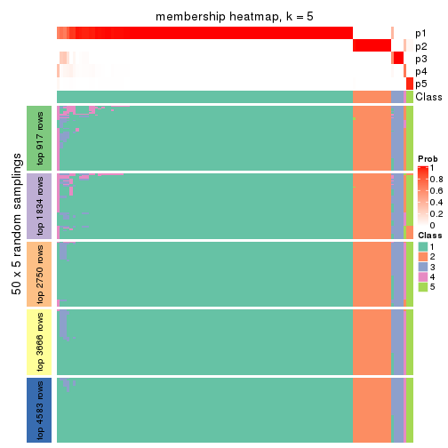
membership_heatmap(res, k = 6)
As soon as we have had the classes for columns, we can look for signatures which are significantly different between classes which can be candidate marks for certain classes. Following are the heatmaps for signatures.
Signature heatmaps where rows are scaled:
get_signatures(res, k = 2)
get_signatures(res, k = 3)
get_signatures(res, k = 4)
get_signatures(res, k = 5)
get_signatures(res, k = 6)
Signature heatmaps where rows are not scaled:
get_signatures(res, k = 2, scale_rows = FALSE)
get_signatures(res, k = 3, scale_rows = FALSE)
get_signatures(res, k = 4, scale_rows = FALSE)
get_signatures(res, k = 5, scale_rows = FALSE)
get_signatures(res, k = 6, scale_rows = FALSE)
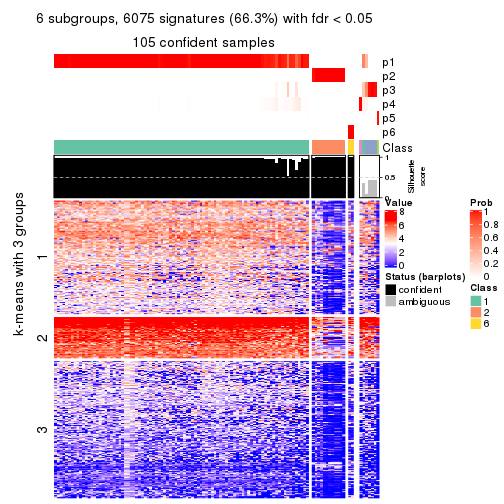
Compare the overlap of signatures from different k:
compare_signatures(res)
get_signature() returns a data frame invisibly. TO get the list of signatures, the function
call should be assigned to a variable explicitly. In following code, if plot argument is set
to FALSE, no heatmap is plotted while only the differential analysis is performed.
# code only for demonstration
tb = get_signature(res, k = ..., plot = FALSE)
An example of the output of tb is:
#> which_row fdr mean_1 mean_2 scaled_mean_1 scaled_mean_2 km
#> 1 38 0.042760348 8.373488 9.131774 -0.5533452 0.5164555 1
#> 2 40 0.018707592 7.106213 8.469186 -0.6173731 0.5762149 1
#> 3 55 0.019134737 10.221463 11.207825 -0.6159697 0.5749050 1
#> 4 59 0.006059896 5.921854 7.869574 -0.6899429 0.6439467 1
#> 5 60 0.018055526 8.928898 10.211722 -0.6204761 0.5791110 1
#> 6 98 0.009384629 15.714769 14.887706 0.6635654 -0.6193277 2
...
The columns in tb are:
which_row: row indices corresponding to the input matrix.fdr: FDR for the differential test. mean_x: The mean value in group x.scaled_mean_x: The mean value in group x after rows are scaled.km: Row groups if k-means clustering is applied to rows.UMAP plot which shows how samples are separated.
dimension_reduction(res, k = 2, method = "UMAP")

dimension_reduction(res, k = 3, method = "UMAP")
dimension_reduction(res, k = 4, method = "UMAP")
dimension_reduction(res, k = 5, method = "UMAP")
dimension_reduction(res, k = 6, method = "UMAP")
Following heatmap shows how subgroups are split when increasing k:
collect_classes(res)
If matrix rows can be associated to genes, consider to use GO_Enrichment(res,
...) to perform function enrichment for the signature genes.
The object with results only for a single top-value method and a single partition method can be extracted as:
res = res_list["SD", "kmeans"]
# you can also extract it by
# res = res_list["SD:kmeans"]
A summary of res and all the functions that can be applied to it:
res
#> A 'ConsensusPartition' object with k = 2, 3, 4, 5, 6.
#> On a matrix with 9166 rows and 112 columns.
#> Top rows (917, 1834, 2750, 3666, 4583) are extracted by 'SD' method.
#> Subgroups are detected by 'kmeans' method.
#> Performed in total 1250 partitions by row resampling.
#> Best k for subgroups seems to be 3.
#>
#> Following methods can be applied to this 'ConsensusPartition' object:
#> [1] "cola_report" "collect_classes" "collect_plots"
#> [4] "collect_stats" "colnames" "compare_signatures"
#> [7] "consensus_heatmap" "dimension_reduction" "functional_enrichment"
#> [10] "get_anno_col" "get_anno" "get_classes"
#> [13] "get_consensus" "get_matrix" "get_membership"
#> [16] "get_param" "get_signatures" "get_stats"
#> [19] "is_best_k" "is_stable_k" "membership_heatmap"
#> [22] "ncol" "nrow" "plot_ecdf"
#> [25] "rownames" "select_partition_number" "show"
#> [28] "suggest_best_k" "test_to_known_factors"
collect_plots() function collects all the plots made from res for all k (number of partitions)
into one single page to provide an easy and fast comparison between different k.
collect_plots(res)
The plots are:
k and the heatmap of
predicted classes for each k.k.k.k.All the plots in panels can be made by individual functions and they are plotted later in this section.
select_partition_number() produces several plots showing different
statistics for choosing “optimized” k. There are following statistics:
k;k, the area increased is defined as \(A_k - A_{k-1}\).The detailed explanations of these statistics can be found in the cola vignette.
Generally speaking, lower PAC score, higher mean silhouette score or higher
concordance corresponds to better partition. Rand index and Jaccard index
measure how similar the current partition is compared to partition with k-1.
If they are too similar, we won't accept k is better than k-1.
select_partition_number(res)
The numeric values for all these statistics can be obtained by get_stats().
get_stats(res)
#> k 1-PAC mean_silhouette concordance area_increased Rand Jaccard
#> 2 2 1.000 1.000 0.999 0.2345 0.766 0.766
#> 3 3 0.988 0.974 0.984 0.5321 0.869 0.829
#> 4 4 0.565 0.522 0.778 0.4734 0.815 0.709
#> 5 5 0.509 0.745 0.848 0.1796 0.798 0.595
#> 6 6 0.610 0.669 0.826 0.0936 0.907 0.749
suggest_best_k() suggests the best \(k\) based on these statistics. The rules are as follows:
NA.suggest_best_k(res)
#> [1] 3
#> attr(,"optional")
#> [1] 2
There is also optional best \(k\) = 2 that is worth to check.
Following shows the table of the partitions (You need to click the show/hide
code output link to see it). The membership matrix (columns with name p*)
is inferred by
clue::cl_consensus()
function with the SE method. Basically the value in the membership matrix
represents the probability to belong to a certain group. The finall class
label for an item is determined with the group with highest probability it
belongs to.
In get_classes() function, the entropy is calculated from the membership
matrix and the silhouette score is calculated from the consensus matrix.
cbind(get_classes(res, k = 2), get_membership(res, k = 2))
#> class entropy silhouette p1 p2
#> SRR1003755 1 0.0376 0.996 0.996 0.004
#> SRR1003756 1 0.0376 0.996 0.996 0.004
#> SRR1003757 1 0.0376 0.996 0.996 0.004
#> SRR1003758 1 0.0376 0.996 0.996 0.004
#> SRR1003759 1 0.0000 1.000 1.000 0.000
#> SRR1003760 2 0.0376 1.000 0.004 0.996
#> SRR1003761 2 0.0376 1.000 0.004 0.996
#> SRR1003762 2 0.0376 1.000 0.004 0.996
#> SRR1003763 2 0.0376 1.000 0.004 0.996
#> SRR1003764 2 0.0376 1.000 0.004 0.996
#> SRR1003765 2 0.0376 1.000 0.004 0.996
#> SRR1003766 2 0.0376 1.000 0.004 0.996
#> SRR1003767 2 0.0376 1.000 0.004 0.996
#> SRR1003768 2 0.0376 1.000 0.004 0.996
#> SRR1003769 2 0.0376 1.000 0.004 0.996
#> SRR1003770 2 0.0376 1.000 0.004 0.996
#> SRR1003771 2 0.0376 1.000 0.004 0.996
#> SRR1003773 1 0.0000 1.000 1.000 0.000
#> SRR1003772 1 0.0000 1.000 1.000 0.000
#> SRR1003774 1 0.0000 1.000 1.000 0.000
#> SRR1003775 1 0.0000 1.000 1.000 0.000
#> SRR1003776 1 0.0000 1.000 1.000 0.000
#> SRR1003777 1 0.0000 1.000 1.000 0.000
#> SRR1003778 1 0.0938 0.988 0.988 0.012
#> SRR1003779 1 0.0000 1.000 1.000 0.000
#> SRR1003780 2 0.0376 1.000 0.004 0.996
#> SRR1003781 1 0.0000 1.000 1.000 0.000
#> SRR1003784 1 0.0000 1.000 1.000 0.000
#> SRR1003785 1 0.0000 1.000 1.000 0.000
#> SRR1003786 1 0.0000 1.000 1.000 0.000
#> SRR1003783 1 0.0000 1.000 1.000 0.000
#> SRR1003787 1 0.0000 1.000 1.000 0.000
#> SRR1003788 1 0.0000 1.000 1.000 0.000
#> SRR1003789 2 0.0376 1.000 0.004 0.996
#> SRR1003790 1 0.0000 1.000 1.000 0.000
#> SRR1003791 1 0.0000 1.000 1.000 0.000
#> SRR1003792 1 0.0000 1.000 1.000 0.000
#> SRR1003793 1 0.0000 1.000 1.000 0.000
#> SRR1003794 1 0.0000 1.000 1.000 0.000
#> SRR1003795 1 0.0000 1.000 1.000 0.000
#> SRR1003796 1 0.0000 1.000 1.000 0.000
#> SRR1003797 1 0.0000 1.000 1.000 0.000
#> SRR1003798 1 0.0000 1.000 1.000 0.000
#> SRR1003799 1 0.0000 1.000 1.000 0.000
#> SRR1003800 1 0.0000 1.000 1.000 0.000
#> SRR1003801 1 0.0000 1.000 1.000 0.000
#> SRR1003802 1 0.0000 1.000 1.000 0.000
#> SRR1003803 1 0.0000 1.000 1.000 0.000
#> SRR1003804 1 0.0000 1.000 1.000 0.000
#> SRR1003805 1 0.0000 1.000 1.000 0.000
#> SRR1003806 1 0.0000 1.000 1.000 0.000
#> SRR1003807 1 0.0000 1.000 1.000 0.000
#> SRR1003809 1 0.0000 1.000 1.000 0.000
#> SRR1003808 1 0.0000 1.000 1.000 0.000
#> SRR1003810 1 0.0000 1.000 1.000 0.000
#> SRR1003811 1 0.0000 1.000 1.000 0.000
#> SRR1003812 1 0.0000 1.000 1.000 0.000
#> SRR1003813 1 0.0000 1.000 1.000 0.000
#> SRR1003814 1 0.0000 1.000 1.000 0.000
#> SRR1003815 1 0.0000 1.000 1.000 0.000
#> SRR1003816 1 0.0000 1.000 1.000 0.000
#> SRR1003817 1 0.0000 1.000 1.000 0.000
#> SRR1003818 1 0.0000 1.000 1.000 0.000
#> SRR1003819 1 0.0000 1.000 1.000 0.000
#> SRR1003820 1 0.0000 1.000 1.000 0.000
#> SRR1003821 1 0.0000 1.000 1.000 0.000
#> SRR1003822 1 0.0000 1.000 1.000 0.000
#> SRR1003824 1 0.0000 1.000 1.000 0.000
#> SRR1003823 1 0.0000 1.000 1.000 0.000
#> SRR1003825 1 0.0000 1.000 1.000 0.000
#> SRR1003826 1 0.0000 1.000 1.000 0.000
#> SRR1003827 1 0.0000 1.000 1.000 0.000
#> SRR1003828 1 0.0000 1.000 1.000 0.000
#> SRR1003829 1 0.0000 1.000 1.000 0.000
#> SRR1003830 1 0.0000 1.000 1.000 0.000
#> SRR1003831 1 0.0000 1.000 1.000 0.000
#> SRR1003832 1 0.0000 1.000 1.000 0.000
#> SRR1003833 1 0.0000 1.000 1.000 0.000
#> SRR1003834 1 0.0000 1.000 1.000 0.000
#> SRR1003836 1 0.0000 1.000 1.000 0.000
#> SRR1003835 1 0.0000 1.000 1.000 0.000
#> SRR1003838 1 0.0000 1.000 1.000 0.000
#> SRR1003837 1 0.0000 1.000 1.000 0.000
#> SRR1003839 1 0.0000 1.000 1.000 0.000
#> SRR1003840 1 0.0000 1.000 1.000 0.000
#> SRR1003841 2 0.0376 1.000 0.004 0.996
#> SRR1003842 1 0.0000 1.000 1.000 0.000
#> SRR1003844 1 0.0000 1.000 1.000 0.000
#> SRR1003845 1 0.0000 1.000 1.000 0.000
#> SRR1003846 1 0.0000 1.000 1.000 0.000
#> SRR1003847 1 0.0000 1.000 1.000 0.000
#> SRR1003848 1 0.0000 1.000 1.000 0.000
#> SRR1003849 1 0.0000 1.000 1.000 0.000
#> SRR1003850 1 0.0000 1.000 1.000 0.000
#> SRR1003851 1 0.0000 1.000 1.000 0.000
#> SRR1003852 1 0.0000 1.000 1.000 0.000
#> SRR1003853 1 0.0000 1.000 1.000 0.000
#> SRR1003854 1 0.0000 1.000 1.000 0.000
#> SRR1003843 1 0.0000 1.000 1.000 0.000
#> SRR1003855 1 0.0000 1.000 1.000 0.000
#> SRR1003856 1 0.0000 1.000 1.000 0.000
#> SRR1003857 1 0.0000 1.000 1.000 0.000
#> SRR1003858 1 0.0000 1.000 1.000 0.000
#> SRR1003859 1 0.0000 1.000 1.000 0.000
#> SRR1003860 1 0.0000 1.000 1.000 0.000
#> SRR1003861 1 0.0000 1.000 1.000 0.000
#> SRR1003862 1 0.0000 1.000 1.000 0.000
#> SRR1003863 1 0.0000 1.000 1.000 0.000
#> SRR1003864 1 0.0000 1.000 1.000 0.000
#> SRR1003865 1 0.0000 1.000 1.000 0.000
#> SRR1003866 1 0.0000 1.000 1.000 0.000
#> SRR1003867 1 0.0000 1.000 1.000 0.000
cbind(get_classes(res, k = 3), get_membership(res, k = 3))
#> class entropy silhouette p1 p2 p3
#> SRR1003755 1 0.1163 0.969 0.972 0.000 0.028
#> SRR1003756 1 0.1163 0.969 0.972 0.000 0.028
#> SRR1003757 1 0.1163 0.969 0.972 0.000 0.028
#> SRR1003758 1 0.1163 0.969 0.972 0.000 0.028
#> SRR1003759 1 0.0237 0.990 0.996 0.000 0.004
#> SRR1003760 2 0.3340 0.917 0.000 0.880 0.120
#> SRR1003761 3 0.1529 0.803 0.000 0.040 0.960
#> SRR1003762 2 0.1860 0.958 0.000 0.948 0.052
#> SRR1003763 2 0.3340 0.917 0.000 0.880 0.120
#> SRR1003764 2 0.2261 0.953 0.000 0.932 0.068
#> SRR1003765 2 0.0000 0.968 0.000 1.000 0.000
#> SRR1003766 2 0.0000 0.968 0.000 1.000 0.000
#> SRR1003767 2 0.0000 0.968 0.000 1.000 0.000
#> SRR1003768 2 0.0000 0.968 0.000 1.000 0.000
#> SRR1003769 2 0.0000 0.968 0.000 1.000 0.000
#> SRR1003770 2 0.0000 0.968 0.000 1.000 0.000
#> SRR1003771 2 0.0000 0.968 0.000 1.000 0.000
#> SRR1003773 3 0.1163 0.870 0.028 0.000 0.972
#> SRR1003772 1 0.0000 0.994 1.000 0.000 0.000
#> SRR1003774 1 0.0000 0.994 1.000 0.000 0.000
#> SRR1003775 1 0.0000 0.994 1.000 0.000 0.000
#> SRR1003776 1 0.0000 0.994 1.000 0.000 0.000
#> SRR1003777 1 0.0000 0.994 1.000 0.000 0.000
#> SRR1003778 3 0.1163 0.870 0.028 0.000 0.972
#> SRR1003779 1 0.0000 0.994 1.000 0.000 0.000
#> SRR1003780 2 0.0000 0.968 0.000 1.000 0.000
#> SRR1003781 1 0.0000 0.994 1.000 0.000 0.000
#> SRR1003784 1 0.2165 0.933 0.936 0.000 0.064
#> SRR1003785 3 0.2878 0.907 0.096 0.000 0.904
#> SRR1003786 1 0.0000 0.994 1.000 0.000 0.000
#> SRR1003783 1 0.0000 0.994 1.000 0.000 0.000
#> SRR1003787 1 0.0000 0.994 1.000 0.000 0.000
#> SRR1003788 1 0.0000 0.994 1.000 0.000 0.000
#> SRR1003789 2 0.2261 0.953 0.000 0.932 0.068
#> SRR1003790 1 0.0000 0.994 1.000 0.000 0.000
#> SRR1003791 1 0.1643 0.955 0.956 0.000 0.044
#> SRR1003792 1 0.0000 0.994 1.000 0.000 0.000
#> SRR1003793 1 0.0000 0.994 1.000 0.000 0.000
#> SRR1003794 1 0.0000 0.994 1.000 0.000 0.000
#> SRR1003795 3 0.2878 0.907 0.096 0.000 0.904
#> SRR1003796 3 0.1163 0.870 0.028 0.000 0.972
#> SRR1003797 1 0.0000 0.994 1.000 0.000 0.000
#> SRR1003798 1 0.0000 0.994 1.000 0.000 0.000
#> SRR1003799 1 0.0000 0.994 1.000 0.000 0.000
#> SRR1003800 1 0.0000 0.994 1.000 0.000 0.000
#> SRR1003801 1 0.0000 0.994 1.000 0.000 0.000
#> SRR1003802 1 0.1031 0.974 0.976 0.000 0.024
#> SRR1003803 1 0.0000 0.994 1.000 0.000 0.000
#> SRR1003804 1 0.0000 0.994 1.000 0.000 0.000
#> SRR1003805 1 0.0000 0.994 1.000 0.000 0.000
#> SRR1003806 1 0.0000 0.994 1.000 0.000 0.000
#> SRR1003807 1 0.1031 0.974 0.976 0.000 0.024
#> SRR1003809 1 0.0237 0.991 0.996 0.000 0.004
#> SRR1003808 1 0.0000 0.994 1.000 0.000 0.000
#> SRR1003810 1 0.0000 0.994 1.000 0.000 0.000
#> SRR1003811 1 0.0000 0.994 1.000 0.000 0.000
#> SRR1003812 1 0.0000 0.994 1.000 0.000 0.000
#> SRR1003813 3 0.3816 0.833 0.148 0.000 0.852
#> SRR1003814 1 0.0000 0.994 1.000 0.000 0.000
#> SRR1003815 1 0.0000 0.994 1.000 0.000 0.000
#> SRR1003816 1 0.0000 0.994 1.000 0.000 0.000
#> SRR1003817 1 0.0000 0.994 1.000 0.000 0.000
#> SRR1003818 1 0.0000 0.994 1.000 0.000 0.000
#> SRR1003819 1 0.1289 0.967 0.968 0.000 0.032
#> SRR1003820 1 0.0000 0.994 1.000 0.000 0.000
#> SRR1003821 1 0.0000 0.994 1.000 0.000 0.000
#> SRR1003822 1 0.2066 0.938 0.940 0.000 0.060
#> SRR1003824 1 0.0000 0.994 1.000 0.000 0.000
#> SRR1003823 1 0.0000 0.994 1.000 0.000 0.000
#> SRR1003825 1 0.0000 0.994 1.000 0.000 0.000
#> SRR1003826 1 0.0000 0.994 1.000 0.000 0.000
#> SRR1003827 1 0.0000 0.994 1.000 0.000 0.000
#> SRR1003828 1 0.0000 0.994 1.000 0.000 0.000
#> SRR1003829 1 0.0000 0.994 1.000 0.000 0.000
#> SRR1003830 1 0.0000 0.994 1.000 0.000 0.000
#> SRR1003831 1 0.0000 0.994 1.000 0.000 0.000
#> SRR1003832 1 0.0000 0.994 1.000 0.000 0.000
#> SRR1003833 1 0.0000 0.994 1.000 0.000 0.000
#> SRR1003834 1 0.0000 0.994 1.000 0.000 0.000
#> SRR1003836 1 0.0000 0.994 1.000 0.000 0.000
#> SRR1003835 1 0.0000 0.994 1.000 0.000 0.000
#> SRR1003838 3 0.2878 0.907 0.096 0.000 0.904
#> SRR1003837 1 0.0000 0.994 1.000 0.000 0.000
#> SRR1003839 1 0.0000 0.994 1.000 0.000 0.000
#> SRR1003840 1 0.0747 0.981 0.984 0.000 0.016
#> SRR1003841 2 0.1964 0.957 0.000 0.944 0.056
#> SRR1003842 1 0.0000 0.994 1.000 0.000 0.000
#> SRR1003844 1 0.0000 0.994 1.000 0.000 0.000
#> SRR1003845 1 0.1753 0.951 0.952 0.000 0.048
#> SRR1003846 1 0.0000 0.994 1.000 0.000 0.000
#> SRR1003847 1 0.0000 0.994 1.000 0.000 0.000
#> SRR1003848 1 0.0000 0.994 1.000 0.000 0.000
#> SRR1003849 3 0.2878 0.907 0.096 0.000 0.904
#> SRR1003850 1 0.0000 0.994 1.000 0.000 0.000
#> SRR1003851 3 0.3619 0.855 0.136 0.000 0.864
#> SRR1003852 1 0.0000 0.994 1.000 0.000 0.000
#> SRR1003853 1 0.0000 0.994 1.000 0.000 0.000
#> SRR1003854 1 0.0000 0.994 1.000 0.000 0.000
#> SRR1003843 1 0.1860 0.947 0.948 0.000 0.052
#> SRR1003855 1 0.0000 0.994 1.000 0.000 0.000
#> SRR1003856 1 0.1643 0.955 0.956 0.000 0.044
#> SRR1003857 1 0.0000 0.994 1.000 0.000 0.000
#> SRR1003858 1 0.0000 0.994 1.000 0.000 0.000
#> SRR1003859 1 0.0000 0.994 1.000 0.000 0.000
#> SRR1003860 1 0.0000 0.994 1.000 0.000 0.000
#> SRR1003861 1 0.0000 0.994 1.000 0.000 0.000
#> SRR1003862 1 0.0000 0.994 1.000 0.000 0.000
#> SRR1003863 1 0.0000 0.994 1.000 0.000 0.000
#> SRR1003864 1 0.0000 0.994 1.000 0.000 0.000
#> SRR1003865 1 0.0000 0.994 1.000 0.000 0.000
#> SRR1003866 1 0.0000 0.994 1.000 0.000 0.000
#> SRR1003867 1 0.0000 0.994 1.000 0.000 0.000
cbind(get_classes(res, k = 4), get_membership(res, k = 4))
#> class entropy silhouette p1 p2 p3 p4
#> SRR1003755 1 0.1940 0.6538 0.924 0.000 0.000 0.076
#> SRR1003756 1 0.1940 0.6538 0.924 0.000 0.000 0.076
#> SRR1003757 1 0.1940 0.6538 0.924 0.000 0.000 0.076
#> SRR1003758 1 0.1940 0.6538 0.924 0.000 0.000 0.076
#> SRR1003759 4 0.4985 0.8261 0.468 0.000 0.000 0.532
#> SRR1003760 2 0.6176 0.7656 0.000 0.572 0.060 0.368
#> SRR1003761 3 0.5039 0.3907 0.000 0.004 0.592 0.404
#> SRR1003762 2 0.5055 0.7905 0.000 0.624 0.008 0.368
#> SRR1003763 2 0.6110 0.7684 0.000 0.576 0.056 0.368
#> SRR1003764 2 0.5742 0.7806 0.000 0.596 0.036 0.368
#> SRR1003765 2 0.0000 0.8019 0.000 1.000 0.000 0.000
#> SRR1003766 2 0.0188 0.8005 0.000 0.996 0.000 0.004
#> SRR1003767 2 0.0000 0.8019 0.000 1.000 0.000 0.000
#> SRR1003768 2 0.0188 0.8005 0.000 0.996 0.000 0.004
#> SRR1003769 2 0.0188 0.8005 0.000 0.996 0.000 0.004
#> SRR1003770 2 0.0000 0.8019 0.000 1.000 0.000 0.000
#> SRR1003771 2 0.0000 0.8019 0.000 1.000 0.000 0.000
#> SRR1003773 3 0.0000 0.8210 0.000 0.000 1.000 0.000
#> SRR1003772 1 0.0000 0.7353 1.000 0.000 0.000 0.000
#> SRR1003774 1 0.4916 -0.5301 0.576 0.000 0.000 0.424
#> SRR1003775 1 0.0000 0.7353 1.000 0.000 0.000 0.000
#> SRR1003776 1 0.4605 -0.1372 0.664 0.000 0.000 0.336
#> SRR1003777 1 0.0000 0.7353 1.000 0.000 0.000 0.000
#> SRR1003778 3 0.0000 0.8210 0.000 0.000 1.000 0.000
#> SRR1003779 1 0.0000 0.7353 1.000 0.000 0.000 0.000
#> SRR1003780 2 0.4746 0.7917 0.000 0.632 0.000 0.368
#> SRR1003781 1 0.3266 0.5117 0.832 0.000 0.000 0.168
#> SRR1003784 4 0.6949 0.7899 0.348 0.000 0.124 0.528
#> SRR1003785 3 0.1890 0.8340 0.008 0.000 0.936 0.056
#> SRR1003786 1 0.0000 0.7353 1.000 0.000 0.000 0.000
#> SRR1003783 1 0.0000 0.7353 1.000 0.000 0.000 0.000
#> SRR1003787 1 0.0000 0.7353 1.000 0.000 0.000 0.000
#> SRR1003788 4 0.4996 0.8002 0.484 0.000 0.000 0.516
#> SRR1003789 2 0.5821 0.7787 0.000 0.592 0.040 0.368
#> SRR1003790 1 0.0000 0.7353 1.000 0.000 0.000 0.000
#> SRR1003791 4 0.5915 0.8466 0.400 0.000 0.040 0.560
#> SRR1003792 1 0.1302 0.7017 0.956 0.000 0.000 0.044
#> SRR1003793 1 0.0000 0.7353 1.000 0.000 0.000 0.000
#> SRR1003794 1 0.0000 0.7353 1.000 0.000 0.000 0.000
#> SRR1003795 3 0.2124 0.8299 0.008 0.000 0.924 0.068
#> SRR1003796 3 0.0000 0.8210 0.000 0.000 1.000 0.000
#> SRR1003797 1 0.0000 0.7353 1.000 0.000 0.000 0.000
#> SRR1003798 1 0.0817 0.7189 0.976 0.000 0.000 0.024
#> SRR1003799 1 0.0000 0.7353 1.000 0.000 0.000 0.000
#> SRR1003800 1 0.2469 0.6331 0.892 0.000 0.000 0.108
#> SRR1003801 1 0.5000 -0.7673 0.504 0.000 0.000 0.496
#> SRR1003802 4 0.6506 0.7843 0.460 0.000 0.072 0.468
#> SRR1003803 1 0.0000 0.7353 1.000 0.000 0.000 0.000
#> SRR1003804 1 0.0707 0.7243 0.980 0.000 0.000 0.020
#> SRR1003805 1 0.0000 0.7353 1.000 0.000 0.000 0.000
#> SRR1003806 1 0.0000 0.7353 1.000 0.000 0.000 0.000
#> SRR1003807 1 0.5928 -0.6953 0.508 0.000 0.036 0.456
#> SRR1003809 4 0.5158 0.8234 0.472 0.000 0.004 0.524
#> SRR1003808 4 0.5000 0.7671 0.496 0.000 0.000 0.504
#> SRR1003810 1 0.4250 0.1799 0.724 0.000 0.000 0.276
#> SRR1003811 1 0.4916 -0.5236 0.576 0.000 0.000 0.424
#> SRR1003812 1 0.0188 0.7328 0.996 0.000 0.000 0.004
#> SRR1003813 3 0.4516 0.6529 0.012 0.000 0.736 0.252
#> SRR1003814 1 0.4830 -0.3939 0.608 0.000 0.000 0.392
#> SRR1003815 1 0.2216 0.6405 0.908 0.000 0.000 0.092
#> SRR1003816 1 0.0000 0.7353 1.000 0.000 0.000 0.000
#> SRR1003817 1 0.0000 0.7353 1.000 0.000 0.000 0.000
#> SRR1003818 1 0.0000 0.7353 1.000 0.000 0.000 0.000
#> SRR1003819 4 0.5881 0.8525 0.420 0.000 0.036 0.544
#> SRR1003820 1 0.0000 0.7353 1.000 0.000 0.000 0.000
#> SRR1003821 1 0.0000 0.7353 1.000 0.000 0.000 0.000
#> SRR1003822 4 0.6887 0.8030 0.356 0.000 0.116 0.528
#> SRR1003824 1 0.3400 0.4994 0.820 0.000 0.000 0.180
#> SRR1003823 1 0.0000 0.7353 1.000 0.000 0.000 0.000
#> SRR1003825 4 0.4996 0.8007 0.484 0.000 0.000 0.516
#> SRR1003826 1 0.0000 0.7353 1.000 0.000 0.000 0.000
#> SRR1003827 1 0.0000 0.7353 1.000 0.000 0.000 0.000
#> SRR1003828 1 0.4761 -0.3379 0.628 0.000 0.000 0.372
#> SRR1003829 1 0.0000 0.7353 1.000 0.000 0.000 0.000
#> SRR1003830 1 0.0000 0.7353 1.000 0.000 0.000 0.000
#> SRR1003831 1 0.4992 -0.7082 0.524 0.000 0.000 0.476
#> SRR1003832 1 0.0000 0.7353 1.000 0.000 0.000 0.000
#> SRR1003833 1 0.4522 -0.0466 0.680 0.000 0.000 0.320
#> SRR1003834 1 0.4992 -0.7077 0.524 0.000 0.000 0.476
#> SRR1003836 4 0.5143 0.8408 0.456 0.000 0.004 0.540
#> SRR1003835 1 0.4866 -0.4936 0.596 0.000 0.000 0.404
#> SRR1003838 3 0.1890 0.8340 0.008 0.000 0.936 0.056
#> SRR1003837 1 0.4804 -0.3594 0.616 0.000 0.000 0.384
#> SRR1003839 1 0.4996 -0.7329 0.516 0.000 0.000 0.484
#> SRR1003840 4 0.5372 0.8474 0.444 0.000 0.012 0.544
#> SRR1003841 2 0.5055 0.7905 0.000 0.624 0.008 0.368
#> SRR1003842 1 0.0000 0.7353 1.000 0.000 0.000 0.000
#> SRR1003844 1 0.0000 0.7353 1.000 0.000 0.000 0.000
#> SRR1003845 4 0.6337 0.8336 0.380 0.000 0.068 0.552
#> SRR1003846 1 0.0000 0.7353 1.000 0.000 0.000 0.000
#> SRR1003847 1 0.4072 0.2549 0.748 0.000 0.000 0.252
#> SRR1003848 4 0.5168 0.7845 0.496 0.000 0.004 0.500
#> SRR1003849 3 0.1356 0.8326 0.008 0.000 0.960 0.032
#> SRR1003850 1 0.3569 0.4519 0.804 0.000 0.000 0.196
#> SRR1003851 3 0.5256 0.5172 0.012 0.000 0.596 0.392
#> SRR1003852 1 0.5000 -0.7630 0.504 0.000 0.000 0.496
#> SRR1003853 1 0.4989 -0.6958 0.528 0.000 0.000 0.472
#> SRR1003854 1 0.3649 0.4220 0.796 0.000 0.000 0.204
#> SRR1003843 4 0.6561 0.7924 0.344 0.000 0.092 0.564
#> SRR1003855 1 0.3837 0.3612 0.776 0.000 0.000 0.224
#> SRR1003856 4 0.6773 0.8153 0.364 0.000 0.104 0.532
#> SRR1003857 1 0.0469 0.7278 0.988 0.000 0.000 0.012
#> SRR1003858 1 0.4843 -0.4161 0.604 0.000 0.000 0.396
#> SRR1003859 1 0.0000 0.7353 1.000 0.000 0.000 0.000
#> SRR1003860 1 0.0000 0.7353 1.000 0.000 0.000 0.000
#> SRR1003861 1 0.4877 -0.4690 0.592 0.000 0.000 0.408
#> SRR1003862 1 0.0000 0.7353 1.000 0.000 0.000 0.000
#> SRR1003863 1 0.0469 0.7255 0.988 0.000 0.000 0.012
#> SRR1003864 1 0.0000 0.7353 1.000 0.000 0.000 0.000
#> SRR1003865 1 0.4967 -0.6566 0.548 0.000 0.000 0.452
#> SRR1003866 1 0.2530 0.6150 0.888 0.000 0.000 0.112
#> SRR1003867 1 0.1792 0.6750 0.932 0.000 0.000 0.068
cbind(get_classes(res, k = 5), get_membership(res, k = 5))
#> class entropy silhouette p1 p2 p3 p4 p5
#> SRR1003755 1 0.3202 0.7561 0.860 0.000 0.004 0.056 0.080
#> SRR1003756 1 0.3202 0.7561 0.860 0.000 0.004 0.056 0.080
#> SRR1003757 1 0.3202 0.7561 0.860 0.000 0.004 0.056 0.080
#> SRR1003758 1 0.3202 0.7561 0.860 0.000 0.004 0.056 0.080
#> SRR1003759 5 0.3885 0.7825 0.176 0.000 0.000 0.040 0.784
#> SRR1003760 2 0.1168 0.9238 0.000 0.960 0.008 0.000 0.032
#> SRR1003761 2 0.4790 0.6871 0.000 0.756 0.160 0.040 0.044
#> SRR1003762 2 0.0290 0.9403 0.000 0.992 0.000 0.008 0.000
#> SRR1003763 2 0.0162 0.9417 0.000 0.996 0.004 0.000 0.000
#> SRR1003764 2 0.0000 0.9433 0.000 1.000 0.000 0.000 0.000
#> SRR1003765 4 0.3177 0.9935 0.000 0.208 0.000 0.792 0.000
#> SRR1003766 4 0.3242 0.9922 0.000 0.216 0.000 0.784 0.000
#> SRR1003767 4 0.3143 0.9916 0.000 0.204 0.000 0.796 0.000
#> SRR1003768 4 0.3242 0.9922 0.000 0.216 0.000 0.784 0.000
#> SRR1003769 4 0.3242 0.9922 0.000 0.216 0.000 0.784 0.000
#> SRR1003770 4 0.3177 0.9935 0.000 0.208 0.000 0.792 0.000
#> SRR1003771 4 0.3143 0.9916 0.000 0.204 0.000 0.796 0.000
#> SRR1003773 3 0.0579 0.8267 0.000 0.008 0.984 0.000 0.008
#> SRR1003772 1 0.0162 0.8771 0.996 0.000 0.000 0.004 0.000
#> SRR1003774 5 0.4201 0.5701 0.408 0.000 0.000 0.000 0.592
#> SRR1003775 1 0.0162 0.8771 0.996 0.000 0.000 0.004 0.000
#> SRR1003776 1 0.4450 -0.3035 0.508 0.000 0.000 0.004 0.488
#> SRR1003777 1 0.0162 0.8771 0.996 0.000 0.000 0.004 0.000
#> SRR1003778 3 0.0579 0.8267 0.000 0.008 0.984 0.000 0.008
#> SRR1003779 1 0.0324 0.8755 0.992 0.000 0.000 0.004 0.004
#> SRR1003780 2 0.0404 0.9374 0.000 0.988 0.000 0.012 0.000
#> SRR1003781 1 0.4084 0.2936 0.668 0.000 0.000 0.004 0.328
#> SRR1003784 5 0.3916 0.7389 0.116 0.000 0.012 0.056 0.816
#> SRR1003785 3 0.3551 0.8283 0.000 0.000 0.820 0.044 0.136
#> SRR1003786 1 0.0162 0.8771 0.996 0.000 0.000 0.004 0.000
#> SRR1003783 1 0.0162 0.8771 0.996 0.000 0.000 0.004 0.000
#> SRR1003787 1 0.0324 0.8762 0.992 0.000 0.000 0.004 0.004
#> SRR1003788 5 0.2852 0.7855 0.172 0.000 0.000 0.000 0.828
#> SRR1003789 2 0.0000 0.9433 0.000 1.000 0.000 0.000 0.000
#> SRR1003790 1 0.0000 0.8773 1.000 0.000 0.000 0.000 0.000
#> SRR1003791 5 0.4589 0.6953 0.104 0.000 0.008 0.124 0.764
#> SRR1003792 1 0.2179 0.7723 0.888 0.000 0.000 0.000 0.112
#> SRR1003793 1 0.0000 0.8773 1.000 0.000 0.000 0.000 0.000
#> SRR1003794 1 0.0000 0.8773 1.000 0.000 0.000 0.000 0.000
#> SRR1003795 3 0.4487 0.8009 0.000 0.000 0.756 0.104 0.140
#> SRR1003796 3 0.0579 0.8267 0.000 0.008 0.984 0.000 0.008
#> SRR1003797 1 0.0162 0.8771 0.996 0.000 0.000 0.004 0.000
#> SRR1003798 1 0.1484 0.8369 0.944 0.000 0.000 0.008 0.048
#> SRR1003799 1 0.0000 0.8773 1.000 0.000 0.000 0.000 0.000
#> SRR1003800 1 0.2873 0.7462 0.860 0.000 0.000 0.020 0.120
#> SRR1003801 5 0.3305 0.7882 0.224 0.000 0.000 0.000 0.776
#> SRR1003802 5 0.4832 0.7214 0.180 0.000 0.008 0.080 0.732
#> SRR1003803 1 0.0000 0.8773 1.000 0.000 0.000 0.000 0.000
#> SRR1003804 1 0.1205 0.8489 0.956 0.000 0.000 0.004 0.040
#> SRR1003805 1 0.0000 0.8773 1.000 0.000 0.000 0.000 0.000
#> SRR1003806 1 0.0000 0.8773 1.000 0.000 0.000 0.000 0.000
#> SRR1003807 5 0.5206 0.6935 0.188 0.000 0.008 0.104 0.700
#> SRR1003809 5 0.3061 0.7699 0.136 0.000 0.000 0.020 0.844
#> SRR1003808 5 0.4228 0.7868 0.216 0.000 0.004 0.032 0.748
#> SRR1003810 1 0.4273 -0.1491 0.552 0.000 0.000 0.000 0.448
#> SRR1003811 5 0.4278 0.4412 0.452 0.000 0.000 0.000 0.548
#> SRR1003812 1 0.0451 0.8739 0.988 0.000 0.000 0.004 0.008
#> SRR1003813 3 0.4511 0.5873 0.000 0.000 0.628 0.016 0.356
#> SRR1003814 5 0.4610 0.5133 0.432 0.000 0.000 0.012 0.556
#> SRR1003815 1 0.2338 0.7740 0.884 0.000 0.000 0.004 0.112
#> SRR1003816 1 0.0162 0.8771 0.996 0.000 0.000 0.004 0.000
#> SRR1003817 1 0.0162 0.8771 0.996 0.000 0.000 0.004 0.000
#> SRR1003818 1 0.0162 0.8771 0.996 0.000 0.000 0.004 0.000
#> SRR1003819 5 0.3064 0.7422 0.108 0.000 0.000 0.036 0.856
#> SRR1003820 1 0.0162 0.8771 0.996 0.000 0.000 0.004 0.000
#> SRR1003821 1 0.0162 0.8771 0.996 0.000 0.000 0.004 0.000
#> SRR1003822 5 0.3916 0.7389 0.116 0.000 0.012 0.056 0.816
#> SRR1003824 1 0.3109 0.6637 0.800 0.000 0.000 0.000 0.200
#> SRR1003823 1 0.0000 0.8773 1.000 0.000 0.000 0.000 0.000
#> SRR1003825 5 0.3278 0.7797 0.156 0.000 0.000 0.020 0.824
#> SRR1003826 1 0.0000 0.8773 1.000 0.000 0.000 0.000 0.000
#> SRR1003827 1 0.0162 0.8760 0.996 0.000 0.000 0.000 0.004
#> SRR1003828 5 0.5304 0.6497 0.352 0.000 0.004 0.052 0.592
#> SRR1003829 1 0.0000 0.8773 1.000 0.000 0.000 0.000 0.000
#> SRR1003830 1 0.0000 0.8773 1.000 0.000 0.000 0.000 0.000
#> SRR1003831 5 0.3796 0.7337 0.300 0.000 0.000 0.000 0.700
#> SRR1003832 1 0.0000 0.8773 1.000 0.000 0.000 0.000 0.000
#> SRR1003833 1 0.4305 -0.3106 0.512 0.000 0.000 0.000 0.488
#> SRR1003834 5 0.3636 0.7594 0.272 0.000 0.000 0.000 0.728
#> SRR1003836 5 0.2516 0.7728 0.140 0.000 0.000 0.000 0.860
#> SRR1003835 5 0.5114 0.5944 0.404 0.000 0.004 0.032 0.560
#> SRR1003838 3 0.4139 0.8161 0.000 0.000 0.784 0.084 0.132
#> SRR1003837 5 0.4249 0.5279 0.432 0.000 0.000 0.000 0.568
#> SRR1003839 5 0.3689 0.7722 0.256 0.000 0.000 0.004 0.740
#> SRR1003840 5 0.3299 0.7402 0.108 0.000 0.004 0.040 0.848
#> SRR1003841 2 0.0324 0.9420 0.000 0.992 0.004 0.004 0.000
#> SRR1003842 1 0.0000 0.8773 1.000 0.000 0.000 0.000 0.000
#> SRR1003844 1 0.0162 0.8771 0.996 0.000 0.000 0.004 0.000
#> SRR1003845 5 0.3248 0.7381 0.104 0.000 0.004 0.040 0.852
#> SRR1003846 1 0.0000 0.8773 1.000 0.000 0.000 0.000 0.000
#> SRR1003847 1 0.4321 0.0139 0.600 0.000 0.000 0.004 0.396
#> SRR1003848 5 0.4389 0.7439 0.184 0.000 0.004 0.056 0.756
#> SRR1003849 3 0.1197 0.8368 0.000 0.000 0.952 0.000 0.048
#> SRR1003850 1 0.4482 0.2041 0.636 0.000 0.000 0.016 0.348
#> SRR1003851 5 0.6037 -0.3326 0.000 0.000 0.392 0.120 0.488
#> SRR1003852 5 0.3961 0.7880 0.184 0.000 0.004 0.032 0.780
#> SRR1003853 5 0.3816 0.7290 0.304 0.000 0.000 0.000 0.696
#> SRR1003854 1 0.3966 0.3099 0.664 0.000 0.000 0.000 0.336
#> SRR1003843 5 0.4633 0.6919 0.104 0.000 0.008 0.128 0.760
#> SRR1003855 1 0.4030 0.2512 0.648 0.000 0.000 0.000 0.352
#> SRR1003856 5 0.3839 0.7275 0.108 0.000 0.004 0.072 0.816
#> SRR1003857 1 0.0510 0.8688 0.984 0.000 0.000 0.000 0.016
#> SRR1003858 5 0.4210 0.5608 0.412 0.000 0.000 0.000 0.588
#> SRR1003859 1 0.0000 0.8773 1.000 0.000 0.000 0.000 0.000
#> SRR1003860 1 0.0000 0.8773 1.000 0.000 0.000 0.000 0.000
#> SRR1003861 5 0.4219 0.5544 0.416 0.000 0.000 0.000 0.584
#> SRR1003862 1 0.0162 0.8771 0.996 0.000 0.000 0.004 0.000
#> SRR1003863 1 0.0771 0.8653 0.976 0.000 0.000 0.004 0.020
#> SRR1003864 1 0.0162 0.8771 0.996 0.000 0.000 0.004 0.000
#> SRR1003865 5 0.5374 0.7462 0.296 0.000 0.008 0.064 0.632
#> SRR1003866 1 0.3550 0.5460 0.760 0.000 0.000 0.004 0.236
#> SRR1003867 1 0.2377 0.7486 0.872 0.000 0.000 0.000 0.128
cbind(get_classes(res, k = 6), get_membership(res, k = 6))
#> class entropy silhouette p1 p2 p3 p4 p5 p6
#> SRR1003755 1 0.3231 0.73775 0.800 0.000 0.000 0.180 0.008 0.012
#> SRR1003756 1 0.3231 0.73775 0.800 0.000 0.000 0.180 0.008 0.012
#> SRR1003757 1 0.3231 0.73775 0.800 0.000 0.000 0.180 0.008 0.012
#> SRR1003758 1 0.3231 0.73775 0.800 0.000 0.000 0.180 0.008 0.012
#> SRR1003759 5 0.3364 0.52475 0.068 0.000 0.000 0.088 0.832 0.012
#> SRR1003760 6 0.2421 0.95407 0.000 0.052 0.004 0.044 0.004 0.896
#> SRR1003761 6 0.2065 0.90339 0.000 0.000 0.032 0.052 0.004 0.912
#> SRR1003762 6 0.1204 0.97737 0.000 0.056 0.000 0.000 0.000 0.944
#> SRR1003763 6 0.1204 0.97737 0.000 0.056 0.000 0.000 0.000 0.944
#> SRR1003764 6 0.1204 0.97737 0.000 0.056 0.000 0.000 0.000 0.944
#> SRR1003765 2 0.0146 0.99619 0.000 0.996 0.000 0.000 0.000 0.004
#> SRR1003766 2 0.0291 0.99615 0.000 0.992 0.000 0.004 0.000 0.004
#> SRR1003767 2 0.0146 0.99346 0.000 0.996 0.000 0.004 0.000 0.000
#> SRR1003768 2 0.0291 0.99615 0.000 0.992 0.000 0.004 0.000 0.004
#> SRR1003769 2 0.0291 0.99615 0.000 0.992 0.000 0.004 0.000 0.004
#> SRR1003770 2 0.0146 0.99619 0.000 0.996 0.000 0.000 0.000 0.004
#> SRR1003771 2 0.0146 0.99346 0.000 0.996 0.000 0.004 0.000 0.000
#> SRR1003773 3 0.0000 0.70533 0.000 0.000 1.000 0.000 0.000 0.000
#> SRR1003772 1 0.0665 0.89921 0.980 0.000 0.000 0.008 0.004 0.008
#> SRR1003774 5 0.3489 0.62621 0.288 0.000 0.000 0.000 0.708 0.004
#> SRR1003775 1 0.0508 0.90102 0.984 0.000 0.000 0.012 0.000 0.004
#> SRR1003776 5 0.3804 0.59989 0.336 0.000 0.000 0.008 0.656 0.000
#> SRR1003777 1 0.0665 0.89921 0.980 0.000 0.000 0.008 0.004 0.008
#> SRR1003778 3 0.0000 0.70533 0.000 0.000 1.000 0.000 0.000 0.000
#> SRR1003779 1 0.0665 0.89921 0.980 0.000 0.000 0.008 0.004 0.008
#> SRR1003780 6 0.1387 0.97108 0.000 0.068 0.000 0.000 0.000 0.932
#> SRR1003781 1 0.4635 -0.30938 0.488 0.000 0.000 0.024 0.480 0.008
#> SRR1003784 5 0.4489 -0.58449 0.012 0.000 0.000 0.456 0.520 0.012
#> SRR1003785 3 0.5578 0.05597 0.000 0.000 0.452 0.444 0.088 0.016
#> SRR1003786 1 0.0260 0.90083 0.992 0.000 0.000 0.008 0.000 0.000
#> SRR1003783 1 0.0665 0.89921 0.980 0.000 0.000 0.008 0.004 0.008
#> SRR1003787 1 0.1453 0.88097 0.944 0.000 0.000 0.008 0.040 0.008
#> SRR1003788 5 0.2412 0.56763 0.092 0.000 0.000 0.028 0.880 0.000
#> SRR1003789 6 0.1204 0.97737 0.000 0.056 0.000 0.000 0.000 0.944
#> SRR1003790 1 0.0405 0.90015 0.988 0.000 0.000 0.008 0.000 0.004
#> SRR1003791 5 0.4267 -0.43104 0.008 0.000 0.000 0.420 0.564 0.008
#> SRR1003792 1 0.3384 0.60543 0.760 0.000 0.000 0.004 0.228 0.008
#> SRR1003793 1 0.0405 0.90015 0.988 0.000 0.000 0.008 0.000 0.004
#> SRR1003794 1 0.0405 0.90015 0.988 0.000 0.000 0.008 0.000 0.004
#> SRR1003795 4 0.5212 -0.04419 0.000 0.000 0.300 0.604 0.080 0.016
#> SRR1003796 3 0.0000 0.70533 0.000 0.000 1.000 0.000 0.000 0.000
#> SRR1003797 1 0.0665 0.89921 0.980 0.000 0.000 0.008 0.004 0.008
#> SRR1003798 1 0.1889 0.85590 0.920 0.000 0.000 0.020 0.056 0.004
#> SRR1003799 1 0.0260 0.90081 0.992 0.000 0.000 0.008 0.000 0.000
#> SRR1003800 1 0.2789 0.79955 0.864 0.000 0.000 0.044 0.088 0.004
#> SRR1003801 5 0.2944 0.61680 0.148 0.000 0.000 0.008 0.832 0.012
#> SRR1003802 4 0.4809 0.66772 0.044 0.000 0.000 0.576 0.372 0.008
#> SRR1003803 1 0.0748 0.89687 0.976 0.000 0.000 0.016 0.004 0.004
#> SRR1003804 1 0.1644 0.86677 0.932 0.000 0.000 0.012 0.052 0.004
#> SRR1003805 1 0.0291 0.90049 0.992 0.000 0.000 0.004 0.000 0.004
#> SRR1003806 1 0.0405 0.90015 0.988 0.000 0.000 0.008 0.000 0.004
#> SRR1003807 4 0.4646 0.66134 0.048 0.000 0.000 0.616 0.332 0.004
#> SRR1003809 5 0.3390 0.34116 0.032 0.000 0.000 0.152 0.808 0.008
#> SRR1003808 5 0.3577 0.54416 0.084 0.000 0.000 0.088 0.816 0.012
#> SRR1003810 5 0.4249 0.48987 0.416 0.000 0.000 0.004 0.568 0.012
#> SRR1003811 5 0.4528 0.54600 0.380 0.000 0.000 0.020 0.588 0.012
#> SRR1003812 1 0.0881 0.89632 0.972 0.000 0.000 0.008 0.012 0.008
#> SRR1003813 3 0.6215 -0.20903 0.000 0.000 0.404 0.376 0.208 0.012
#> SRR1003814 5 0.3935 0.62107 0.288 0.000 0.000 0.012 0.692 0.008
#> SRR1003815 1 0.2699 0.77265 0.856 0.000 0.000 0.012 0.124 0.008
#> SRR1003816 1 0.0665 0.89921 0.980 0.000 0.000 0.008 0.004 0.008
#> SRR1003817 1 0.0260 0.90083 0.992 0.000 0.000 0.008 0.000 0.000
#> SRR1003818 1 0.0665 0.89921 0.980 0.000 0.000 0.008 0.004 0.008
#> SRR1003819 5 0.1841 0.42707 0.008 0.000 0.000 0.064 0.920 0.008
#> SRR1003820 1 0.0551 0.89990 0.984 0.000 0.000 0.008 0.004 0.004
#> SRR1003821 1 0.0520 0.89993 0.984 0.000 0.000 0.008 0.000 0.008
#> SRR1003822 5 0.4491 -0.58899 0.012 0.000 0.000 0.460 0.516 0.012
#> SRR1003824 1 0.3288 0.70038 0.800 0.000 0.000 0.016 0.176 0.008
#> SRR1003823 1 0.0405 0.90015 0.988 0.000 0.000 0.008 0.000 0.004
#> SRR1003825 5 0.3725 0.39148 0.056 0.000 0.000 0.136 0.796 0.012
#> SRR1003826 1 0.0291 0.90112 0.992 0.000 0.000 0.004 0.000 0.004
#> SRR1003827 1 0.0806 0.89486 0.972 0.000 0.000 0.000 0.020 0.008
#> SRR1003828 5 0.5999 0.20656 0.388 0.000 0.000 0.176 0.428 0.008
#> SRR1003829 1 0.0260 0.90109 0.992 0.000 0.000 0.000 0.000 0.008
#> SRR1003830 1 0.0260 0.90081 0.992 0.000 0.000 0.008 0.000 0.000
#> SRR1003831 5 0.2631 0.62822 0.180 0.000 0.000 0.000 0.820 0.000
#> SRR1003832 1 0.0260 0.90081 0.992 0.000 0.000 0.008 0.000 0.000
#> SRR1003833 5 0.3833 0.43711 0.444 0.000 0.000 0.000 0.556 0.000
#> SRR1003834 5 0.2773 0.62308 0.164 0.000 0.000 0.004 0.828 0.004
#> SRR1003836 5 0.1633 0.46519 0.024 0.000 0.000 0.044 0.932 0.000
#> SRR1003835 5 0.5675 0.34450 0.432 0.000 0.000 0.120 0.440 0.008
#> SRR1003838 4 0.5545 -0.17292 0.000 0.000 0.400 0.492 0.096 0.012
#> SRR1003837 5 0.3528 0.62316 0.296 0.000 0.000 0.004 0.700 0.000
#> SRR1003839 5 0.1910 0.59374 0.108 0.000 0.000 0.000 0.892 0.000
#> SRR1003840 5 0.2275 0.40540 0.008 0.000 0.000 0.096 0.888 0.008
#> SRR1003841 6 0.1606 0.97407 0.000 0.056 0.000 0.008 0.004 0.932
#> SRR1003842 1 0.0405 0.90015 0.988 0.000 0.000 0.008 0.000 0.004
#> SRR1003844 1 0.0405 0.90120 0.988 0.000 0.000 0.008 0.000 0.004
#> SRR1003845 5 0.1901 0.42020 0.008 0.000 0.000 0.076 0.912 0.004
#> SRR1003846 1 0.0551 0.89984 0.984 0.000 0.000 0.008 0.004 0.004
#> SRR1003847 1 0.3944 0.00175 0.568 0.000 0.000 0.000 0.428 0.004
#> SRR1003848 4 0.5461 0.57615 0.084 0.000 0.000 0.468 0.436 0.012
#> SRR1003849 3 0.2709 0.64972 0.000 0.000 0.848 0.132 0.020 0.000
#> SRR1003850 1 0.4650 0.48952 0.688 0.000 0.000 0.096 0.212 0.004
#> SRR1003851 4 0.5219 0.55144 0.000 0.000 0.120 0.604 0.272 0.004
#> SRR1003852 5 0.3477 0.51896 0.080 0.000 0.000 0.092 0.820 0.008
#> SRR1003853 5 0.2871 0.63001 0.192 0.000 0.000 0.004 0.804 0.000
#> SRR1003854 5 0.3833 0.43635 0.444 0.000 0.000 0.000 0.556 0.000
#> SRR1003843 4 0.4034 0.65843 0.008 0.000 0.000 0.624 0.364 0.004
#> SRR1003855 5 0.3982 0.39493 0.460 0.000 0.000 0.004 0.536 0.000
#> SRR1003856 4 0.4413 0.58807 0.012 0.000 0.000 0.492 0.488 0.008
#> SRR1003857 1 0.1477 0.87573 0.940 0.000 0.000 0.008 0.048 0.004
#> SRR1003858 5 0.3309 0.62747 0.280 0.000 0.000 0.000 0.720 0.000
#> SRR1003859 1 0.0405 0.90015 0.988 0.000 0.000 0.008 0.000 0.004
#> SRR1003860 1 0.0291 0.90049 0.992 0.000 0.000 0.004 0.000 0.004
#> SRR1003861 5 0.3409 0.62153 0.300 0.000 0.000 0.000 0.700 0.000
#> SRR1003862 1 0.0260 0.90083 0.992 0.000 0.000 0.008 0.000 0.000
#> SRR1003863 1 0.0951 0.89672 0.968 0.000 0.000 0.020 0.008 0.004
#> SRR1003864 1 0.0665 0.89921 0.980 0.000 0.000 0.008 0.004 0.008
#> SRR1003865 5 0.5118 0.47397 0.192 0.000 0.000 0.148 0.652 0.008
#> SRR1003866 1 0.4183 0.14142 0.604 0.000 0.000 0.008 0.380 0.008
#> SRR1003867 1 0.2971 0.73920 0.832 0.000 0.000 0.020 0.144 0.004
Heatmaps for the consensus matrix. It visualizes the probability of two samples to be in a same group.
consensus_heatmap(res, k = 2)
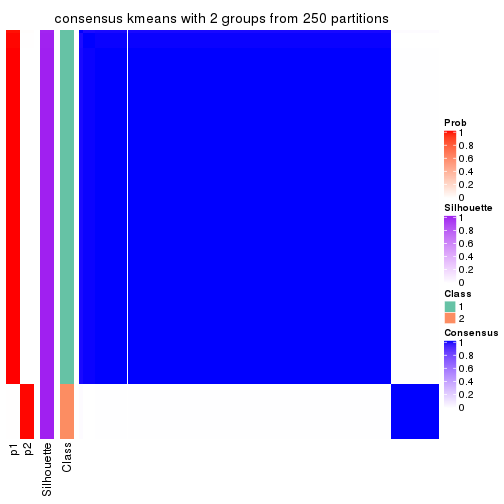
consensus_heatmap(res, k = 3)
consensus_heatmap(res, k = 4)
consensus_heatmap(res, k = 5)
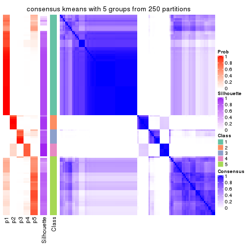
consensus_heatmap(res, k = 6)
Heatmaps for the membership of samples in all partitions to see how consistent they are:
membership_heatmap(res, k = 2)
membership_heatmap(res, k = 3)
membership_heatmap(res, k = 4)
membership_heatmap(res, k = 5)
membership_heatmap(res, k = 6)
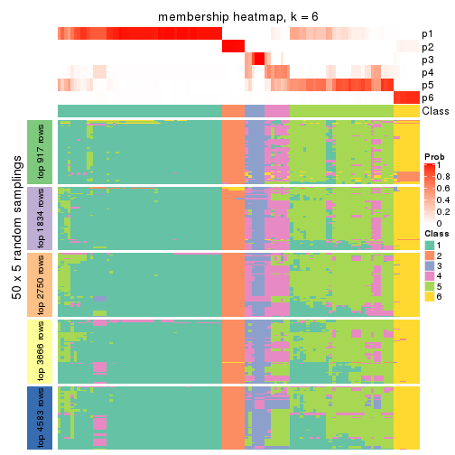
As soon as we have had the classes for columns, we can look for signatures which are significantly different between classes which can be candidate marks for certain classes. Following are the heatmaps for signatures.
Signature heatmaps where rows are scaled:
get_signatures(res, k = 2)
get_signatures(res, k = 3)
get_signatures(res, k = 4)
get_signatures(res, k = 5)
get_signatures(res, k = 6)
Signature heatmaps where rows are not scaled:
get_signatures(res, k = 2, scale_rows = FALSE)
get_signatures(res, k = 3, scale_rows = FALSE)
get_signatures(res, k = 4, scale_rows = FALSE)
get_signatures(res, k = 5, scale_rows = FALSE)
get_signatures(res, k = 6, scale_rows = FALSE)
Compare the overlap of signatures from different k:
compare_signatures(res)
get_signature() returns a data frame invisibly. TO get the list of signatures, the function
call should be assigned to a variable explicitly. In following code, if plot argument is set
to FALSE, no heatmap is plotted while only the differential analysis is performed.
# code only for demonstration
tb = get_signature(res, k = ..., plot = FALSE)
An example of the output of tb is:
#> which_row fdr mean_1 mean_2 scaled_mean_1 scaled_mean_2 km
#> 1 38 0.042760348 8.373488 9.131774 -0.5533452 0.5164555 1
#> 2 40 0.018707592 7.106213 8.469186 -0.6173731 0.5762149 1
#> 3 55 0.019134737 10.221463 11.207825 -0.6159697 0.5749050 1
#> 4 59 0.006059896 5.921854 7.869574 -0.6899429 0.6439467 1
#> 5 60 0.018055526 8.928898 10.211722 -0.6204761 0.5791110 1
#> 6 98 0.009384629 15.714769 14.887706 0.6635654 -0.6193277 2
...
The columns in tb are:
which_row: row indices corresponding to the input matrix.fdr: FDR for the differential test. mean_x: The mean value in group x.scaled_mean_x: The mean value in group x after rows are scaled.km: Row groups if k-means clustering is applied to rows.UMAP plot which shows how samples are separated.
dimension_reduction(res, k = 2, method = "UMAP")
dimension_reduction(res, k = 3, method = "UMAP")
dimension_reduction(res, k = 4, method = "UMAP")
dimension_reduction(res, k = 5, method = "UMAP")
dimension_reduction(res, k = 6, method = "UMAP")
Following heatmap shows how subgroups are split when increasing k:
collect_classes(res)
If matrix rows can be associated to genes, consider to use GO_Enrichment(res,
...) to perform function enrichment for the signature genes.
The object with results only for a single top-value method and a single partition method can be extracted as:
res = res_list["SD", "skmeans"]
# you can also extract it by
# res = res_list["SD:skmeans"]
A summary of res and all the functions that can be applied to it:
res
#> A 'ConsensusPartition' object with k = 2, 3, 4, 5, 6.
#> On a matrix with 9166 rows and 112 columns.
#> Top rows (917, 1834, 2750, 3666, 4583) are extracted by 'SD' method.
#> Subgroups are detected by 'skmeans' method.
#> Performed in total 1250 partitions by row resampling.
#> Best k for subgroups seems to be 2.
#>
#> Following methods can be applied to this 'ConsensusPartition' object:
#> [1] "cola_report" "collect_classes" "collect_plots"
#> [4] "collect_stats" "colnames" "compare_signatures"
#> [7] "consensus_heatmap" "dimension_reduction" "functional_enrichment"
#> [10] "get_anno_col" "get_anno" "get_classes"
#> [13] "get_consensus" "get_matrix" "get_membership"
#> [16] "get_param" "get_signatures" "get_stats"
#> [19] "is_best_k" "is_stable_k" "membership_heatmap"
#> [22] "ncol" "nrow" "plot_ecdf"
#> [25] "rownames" "select_partition_number" "show"
#> [28] "suggest_best_k" "test_to_known_factors"
collect_plots() function collects all the plots made from res for all k (number of partitions)
into one single page to provide an easy and fast comparison between different k.
collect_plots(res)
The plots are:
k and the heatmap of
predicted classes for each k.k.k.k.All the plots in panels can be made by individual functions and they are plotted later in this section.
select_partition_number() produces several plots showing different
statistics for choosing “optimized” k. There are following statistics:
k;k, the area increased is defined as \(A_k - A_{k-1}\).The detailed explanations of these statistics can be found in the cola vignette.
Generally speaking, lower PAC score, higher mean silhouette score or higher
concordance corresponds to better partition. Rand index and Jaccard index
measure how similar the current partition is compared to partition with k-1.
If they are too similar, we won't accept k is better than k-1.
select_partition_number(res)
The numeric values for all these statistics can be obtained by get_stats().
get_stats(res)
#> k 1-PAC mean_silhouette concordance area_increased Rand Jaccard
#> 2 2 1.000 0.979 0.991 0.3750 0.622 0.622
#> 3 3 0.557 0.708 0.866 0.4560 0.854 0.769
#> 4 4 0.412 0.552 0.766 0.1921 0.845 0.700
#> 5 5 0.410 0.443 0.687 0.0990 0.912 0.791
#> 6 6 0.425 0.421 0.630 0.0643 0.932 0.822
suggest_best_k() suggests the best \(k\) based on these statistics. The rules are as follows:
NA.suggest_best_k(res)
#> [1] 2
Following shows the table of the partitions (You need to click the show/hide
code output link to see it). The membership matrix (columns with name p*)
is inferred by
clue::cl_consensus()
function with the SE method. Basically the value in the membership matrix
represents the probability to belong to a certain group. The finall class
label for an item is determined with the group with highest probability it
belongs to.
In get_classes() function, the entropy is calculated from the membership
matrix and the silhouette score is calculated from the consensus matrix.
cbind(get_classes(res, k = 2), get_membership(res, k = 2))
#> class entropy silhouette p1 p2
#> SRR1003755 1 0.000 0.996 1.000 0.000
#> SRR1003756 1 0.000 0.996 1.000 0.000
#> SRR1003757 1 0.000 0.996 1.000 0.000
#> SRR1003758 1 0.000 0.996 1.000 0.000
#> SRR1003759 2 0.925 0.507 0.340 0.660
#> SRR1003760 2 0.000 0.972 0.000 1.000
#> SRR1003761 2 0.000 0.972 0.000 1.000
#> SRR1003762 2 0.000 0.972 0.000 1.000
#> SRR1003763 2 0.000 0.972 0.000 1.000
#> SRR1003764 2 0.000 0.972 0.000 1.000
#> SRR1003765 2 0.000 0.972 0.000 1.000
#> SRR1003766 2 0.000 0.972 0.000 1.000
#> SRR1003767 2 0.000 0.972 0.000 1.000
#> SRR1003768 2 0.000 0.972 0.000 1.000
#> SRR1003769 2 0.000 0.972 0.000 1.000
#> SRR1003770 2 0.000 0.972 0.000 1.000
#> SRR1003771 2 0.000 0.972 0.000 1.000
#> SRR1003773 2 0.000 0.972 0.000 1.000
#> SRR1003772 1 0.000 0.996 1.000 0.000
#> SRR1003774 1 0.000 0.996 1.000 0.000
#> SRR1003775 1 0.000 0.996 1.000 0.000
#> SRR1003776 1 0.000 0.996 1.000 0.000
#> SRR1003777 1 0.000 0.996 1.000 0.000
#> SRR1003778 2 0.000 0.972 0.000 1.000
#> SRR1003779 1 0.000 0.996 1.000 0.000
#> SRR1003780 2 0.000 0.972 0.000 1.000
#> SRR1003781 1 0.000 0.996 1.000 0.000
#> SRR1003784 1 0.000 0.996 1.000 0.000
#> SRR1003785 2 0.000 0.972 0.000 1.000
#> SRR1003786 1 0.000 0.996 1.000 0.000
#> SRR1003783 1 0.000 0.996 1.000 0.000
#> SRR1003787 1 0.000 0.996 1.000 0.000
#> SRR1003788 1 0.000 0.996 1.000 0.000
#> SRR1003789 2 0.000 0.972 0.000 1.000
#> SRR1003790 1 0.000 0.996 1.000 0.000
#> SRR1003791 1 0.662 0.788 0.828 0.172
#> SRR1003792 1 0.000 0.996 1.000 0.000
#> SRR1003793 1 0.000 0.996 1.000 0.000
#> SRR1003794 1 0.000 0.996 1.000 0.000
#> SRR1003795 2 0.000 0.972 0.000 1.000
#> SRR1003796 2 0.000 0.972 0.000 1.000
#> SRR1003797 1 0.000 0.996 1.000 0.000
#> SRR1003798 1 0.000 0.996 1.000 0.000
#> SRR1003799 1 0.000 0.996 1.000 0.000
#> SRR1003800 1 0.000 0.996 1.000 0.000
#> SRR1003801 1 0.000 0.996 1.000 0.000
#> SRR1003802 1 0.000 0.996 1.000 0.000
#> SRR1003803 1 0.000 0.996 1.000 0.000
#> SRR1003804 1 0.000 0.996 1.000 0.000
#> SRR1003805 1 0.000 0.996 1.000 0.000
#> SRR1003806 1 0.000 0.996 1.000 0.000
#> SRR1003807 1 0.000 0.996 1.000 0.000
#> SRR1003809 1 0.000 0.996 1.000 0.000
#> SRR1003808 1 0.000 0.996 1.000 0.000
#> SRR1003810 1 0.000 0.996 1.000 0.000
#> SRR1003811 1 0.000 0.996 1.000 0.000
#> SRR1003812 1 0.000 0.996 1.000 0.000
#> SRR1003813 2 0.163 0.955 0.024 0.976
#> SRR1003814 1 0.000 0.996 1.000 0.000
#> SRR1003815 1 0.000 0.996 1.000 0.000
#> SRR1003816 1 0.000 0.996 1.000 0.000
#> SRR1003817 1 0.000 0.996 1.000 0.000
#> SRR1003818 1 0.000 0.996 1.000 0.000
#> SRR1003819 1 0.595 0.828 0.856 0.144
#> SRR1003820 1 0.000 0.996 1.000 0.000
#> SRR1003821 1 0.000 0.996 1.000 0.000
#> SRR1003822 1 0.000 0.996 1.000 0.000
#> SRR1003824 1 0.000 0.996 1.000 0.000
#> SRR1003823 1 0.000 0.996 1.000 0.000
#> SRR1003825 1 0.000 0.996 1.000 0.000
#> SRR1003826 1 0.000 0.996 1.000 0.000
#> SRR1003827 1 0.000 0.996 1.000 0.000
#> SRR1003828 1 0.000 0.996 1.000 0.000
#> SRR1003829 1 0.000 0.996 1.000 0.000
#> SRR1003830 1 0.000 0.996 1.000 0.000
#> SRR1003831 1 0.000 0.996 1.000 0.000
#> SRR1003832 1 0.000 0.996 1.000 0.000
#> SRR1003833 1 0.000 0.996 1.000 0.000
#> SRR1003834 1 0.000 0.996 1.000 0.000
#> SRR1003836 1 0.000 0.996 1.000 0.000
#> SRR1003835 1 0.000 0.996 1.000 0.000
#> SRR1003838 2 0.000 0.972 0.000 1.000
#> SRR1003837 1 0.000 0.996 1.000 0.000
#> SRR1003839 1 0.000 0.996 1.000 0.000
#> SRR1003840 2 0.653 0.806 0.168 0.832
#> SRR1003841 2 0.000 0.972 0.000 1.000
#> SRR1003842 1 0.000 0.996 1.000 0.000
#> SRR1003844 1 0.000 0.996 1.000 0.000
#> SRR1003845 2 0.260 0.938 0.044 0.956
#> SRR1003846 1 0.000 0.996 1.000 0.000
#> SRR1003847 1 0.000 0.996 1.000 0.000
#> SRR1003848 1 0.000 0.996 1.000 0.000
#> SRR1003849 2 0.000 0.972 0.000 1.000
#> SRR1003850 1 0.000 0.996 1.000 0.000
#> SRR1003851 2 0.000 0.972 0.000 1.000
#> SRR1003852 1 0.000 0.996 1.000 0.000
#> SRR1003853 1 0.000 0.996 1.000 0.000
#> SRR1003854 1 0.000 0.996 1.000 0.000
#> SRR1003843 2 0.662 0.801 0.172 0.828
#> SRR1003855 1 0.000 0.996 1.000 0.000
#> SRR1003856 1 0.000 0.996 1.000 0.000
#> SRR1003857 1 0.000 0.996 1.000 0.000
#> SRR1003858 1 0.000 0.996 1.000 0.000
#> SRR1003859 1 0.000 0.996 1.000 0.000
#> SRR1003860 1 0.000 0.996 1.000 0.000
#> SRR1003861 1 0.000 0.996 1.000 0.000
#> SRR1003862 1 0.000 0.996 1.000 0.000
#> SRR1003863 1 0.000 0.996 1.000 0.000
#> SRR1003864 1 0.000 0.996 1.000 0.000
#> SRR1003865 1 0.000 0.996 1.000 0.000
#> SRR1003866 1 0.000 0.996 1.000 0.000
#> SRR1003867 1 0.000 0.996 1.000 0.000
cbind(get_classes(res, k = 3), get_membership(res, k = 3))
#> class entropy silhouette p1 p2 p3
#> SRR1003755 1 0.0424 0.8626 0.992 0.000 0.008
#> SRR1003756 1 0.0424 0.8626 0.992 0.000 0.008
#> SRR1003757 1 0.0424 0.8626 0.992 0.000 0.008
#> SRR1003758 1 0.0424 0.8626 0.992 0.000 0.008
#> SRR1003759 2 0.9888 -0.3105 0.272 0.400 0.328
#> SRR1003760 2 0.0000 0.8795 0.000 1.000 0.000
#> SRR1003761 2 0.0000 0.8795 0.000 1.000 0.000
#> SRR1003762 2 0.0000 0.8795 0.000 1.000 0.000
#> SRR1003763 2 0.0000 0.8795 0.000 1.000 0.000
#> SRR1003764 2 0.0000 0.8795 0.000 1.000 0.000
#> SRR1003765 2 0.0000 0.8795 0.000 1.000 0.000
#> SRR1003766 2 0.0000 0.8795 0.000 1.000 0.000
#> SRR1003767 2 0.0000 0.8795 0.000 1.000 0.000
#> SRR1003768 2 0.0000 0.8795 0.000 1.000 0.000
#> SRR1003769 2 0.0000 0.8795 0.000 1.000 0.000
#> SRR1003770 2 0.0000 0.8795 0.000 1.000 0.000
#> SRR1003771 2 0.0000 0.8795 0.000 1.000 0.000
#> SRR1003773 2 0.4178 0.7753 0.000 0.828 0.172
#> SRR1003772 1 0.0237 0.8621 0.996 0.000 0.004
#> SRR1003774 1 0.5291 0.6507 0.732 0.000 0.268
#> SRR1003775 1 0.0000 0.8619 1.000 0.000 0.000
#> SRR1003776 1 0.5058 0.6771 0.756 0.000 0.244
#> SRR1003777 1 0.0424 0.8622 0.992 0.000 0.008
#> SRR1003778 2 0.1860 0.8534 0.000 0.948 0.052
#> SRR1003779 1 0.1289 0.8584 0.968 0.000 0.032
#> SRR1003780 2 0.0000 0.8795 0.000 1.000 0.000
#> SRR1003781 1 0.2537 0.8406 0.920 0.000 0.080
#> SRR1003784 3 0.2537 0.6033 0.080 0.000 0.920
#> SRR1003785 2 0.6026 0.5470 0.000 0.624 0.376
#> SRR1003786 1 0.0000 0.8619 1.000 0.000 0.000
#> SRR1003783 1 0.0237 0.8621 0.996 0.000 0.004
#> SRR1003787 1 0.1860 0.8515 0.948 0.000 0.052
#> SRR1003788 3 0.6192 0.2456 0.420 0.000 0.580
#> SRR1003789 2 0.0000 0.8795 0.000 1.000 0.000
#> SRR1003790 1 0.0000 0.8619 1.000 0.000 0.000
#> SRR1003791 3 0.6046 0.6152 0.136 0.080 0.784
#> SRR1003792 1 0.1753 0.8544 0.952 0.000 0.048
#> SRR1003793 1 0.0237 0.8610 0.996 0.000 0.004
#> SRR1003794 1 0.0000 0.8619 1.000 0.000 0.000
#> SRR1003795 2 0.5948 0.5687 0.000 0.640 0.360
#> SRR1003796 2 0.4178 0.7753 0.000 0.828 0.172
#> SRR1003797 1 0.1031 0.8604 0.976 0.000 0.024
#> SRR1003798 1 0.2165 0.8383 0.936 0.000 0.064
#> SRR1003799 1 0.0000 0.8619 1.000 0.000 0.000
#> SRR1003800 1 0.3192 0.8120 0.888 0.000 0.112
#> SRR1003801 1 0.6079 0.3863 0.612 0.000 0.388
#> SRR1003802 3 0.6045 0.4827 0.380 0.000 0.620
#> SRR1003803 1 0.0592 0.8599 0.988 0.000 0.012
#> SRR1003804 1 0.2356 0.8393 0.928 0.000 0.072
#> SRR1003805 1 0.0000 0.8619 1.000 0.000 0.000
#> SRR1003806 1 0.0424 0.8606 0.992 0.000 0.008
#> SRR1003807 1 0.6291 -0.1495 0.532 0.000 0.468
#> SRR1003809 3 0.6252 0.2710 0.444 0.000 0.556
#> SRR1003808 1 0.5938 0.6530 0.732 0.020 0.248
#> SRR1003810 1 0.4452 0.7507 0.808 0.000 0.192
#> SRR1003811 1 0.5882 0.4954 0.652 0.000 0.348
#> SRR1003812 1 0.1964 0.8484 0.944 0.000 0.056
#> SRR1003813 3 0.3349 0.4942 0.004 0.108 0.888
#> SRR1003814 1 0.5138 0.6772 0.748 0.000 0.252
#> SRR1003815 1 0.2878 0.8271 0.904 0.000 0.096
#> SRR1003816 1 0.0424 0.8622 0.992 0.000 0.008
#> SRR1003817 1 0.0000 0.8619 1.000 0.000 0.000
#> SRR1003818 1 0.0237 0.8621 0.996 0.000 0.004
#> SRR1003819 3 0.6933 0.6050 0.208 0.076 0.716
#> SRR1003820 1 0.0892 0.8605 0.980 0.000 0.020
#> SRR1003821 1 0.0237 0.8621 0.996 0.000 0.004
#> SRR1003822 3 0.4346 0.6288 0.184 0.000 0.816
#> SRR1003824 1 0.3412 0.8098 0.876 0.000 0.124
#> SRR1003823 1 0.0000 0.8619 1.000 0.000 0.000
#> SRR1003825 3 0.6305 0.1445 0.484 0.000 0.516
#> SRR1003826 1 0.0237 0.8622 0.996 0.000 0.004
#> SRR1003827 1 0.1753 0.8539 0.952 0.000 0.048
#> SRR1003828 1 0.5291 0.5641 0.732 0.000 0.268
#> SRR1003829 1 0.0747 0.8613 0.984 0.000 0.016
#> SRR1003830 1 0.0237 0.8621 0.996 0.000 0.004
#> SRR1003831 1 0.6062 0.4171 0.616 0.000 0.384
#> SRR1003832 1 0.0000 0.8619 1.000 0.000 0.000
#> SRR1003833 1 0.4235 0.7691 0.824 0.000 0.176
#> SRR1003834 1 0.6154 0.3549 0.592 0.000 0.408
#> SRR1003836 3 0.6079 0.3678 0.388 0.000 0.612
#> SRR1003835 1 0.3482 0.7894 0.872 0.000 0.128
#> SRR1003838 2 0.5706 0.6263 0.000 0.680 0.320
#> SRR1003837 1 0.4399 0.7547 0.812 0.000 0.188
#> SRR1003839 1 0.6295 0.1361 0.528 0.000 0.472
#> SRR1003840 3 0.8005 0.4982 0.128 0.224 0.648
#> SRR1003841 2 0.0000 0.8795 0.000 1.000 0.000
#> SRR1003842 1 0.0000 0.8619 1.000 0.000 0.000
#> SRR1003844 1 0.0000 0.8619 1.000 0.000 0.000
#> SRR1003845 3 0.5517 0.3409 0.004 0.268 0.728
#> SRR1003846 1 0.0000 0.8619 1.000 0.000 0.000
#> SRR1003847 1 0.2878 0.8247 0.904 0.000 0.096
#> SRR1003848 1 0.6280 -0.0954 0.540 0.000 0.460
#> SRR1003849 2 0.6045 0.5394 0.000 0.620 0.380
#> SRR1003850 1 0.4235 0.7260 0.824 0.000 0.176
#> SRR1003851 3 0.6204 -0.1790 0.000 0.424 0.576
#> SRR1003852 1 0.6704 0.3119 0.608 0.016 0.376
#> SRR1003853 1 0.5988 0.4623 0.632 0.000 0.368
#> SRR1003854 1 0.4452 0.7476 0.808 0.000 0.192
#> SRR1003843 3 0.6590 0.5142 0.112 0.132 0.756
#> SRR1003855 1 0.4796 0.7079 0.780 0.000 0.220
#> SRR1003856 3 0.1964 0.5946 0.056 0.000 0.944
#> SRR1003857 1 0.1411 0.8568 0.964 0.000 0.036
#> SRR1003858 1 0.5016 0.6936 0.760 0.000 0.240
#> SRR1003859 1 0.0237 0.8610 0.996 0.000 0.004
#> SRR1003860 1 0.0424 0.8606 0.992 0.000 0.008
#> SRR1003861 1 0.5678 0.5656 0.684 0.000 0.316
#> SRR1003862 1 0.0000 0.8619 1.000 0.000 0.000
#> SRR1003863 1 0.0592 0.8624 0.988 0.000 0.012
#> SRR1003864 1 0.0424 0.8625 0.992 0.000 0.008
#> SRR1003865 1 0.4235 0.7357 0.824 0.000 0.176
#> SRR1003866 1 0.2165 0.8458 0.936 0.000 0.064
#> SRR1003867 1 0.2165 0.8457 0.936 0.000 0.064
cbind(get_classes(res, k = 4), get_membership(res, k = 4))
#> class entropy silhouette p1 p2 p3 p4
#> SRR1003755 1 0.2578 0.7555 0.912 0.000 0.036 0.052
#> SRR1003756 1 0.2578 0.7555 0.912 0.000 0.036 0.052
#> SRR1003757 1 0.2399 0.7571 0.920 0.000 0.032 0.048
#> SRR1003758 1 0.2399 0.7571 0.920 0.000 0.032 0.048
#> SRR1003759 4 0.9388 0.0863 0.188 0.272 0.132 0.408
#> SRR1003760 2 0.0000 0.8751 0.000 1.000 0.000 0.000
#> SRR1003761 2 0.0000 0.8751 0.000 1.000 0.000 0.000
#> SRR1003762 2 0.0000 0.8751 0.000 1.000 0.000 0.000
#> SRR1003763 2 0.0000 0.8751 0.000 1.000 0.000 0.000
#> SRR1003764 2 0.0000 0.8751 0.000 1.000 0.000 0.000
#> SRR1003765 2 0.0000 0.8751 0.000 1.000 0.000 0.000
#> SRR1003766 2 0.0000 0.8751 0.000 1.000 0.000 0.000
#> SRR1003767 2 0.0000 0.8751 0.000 1.000 0.000 0.000
#> SRR1003768 2 0.0000 0.8751 0.000 1.000 0.000 0.000
#> SRR1003769 2 0.0000 0.8751 0.000 1.000 0.000 0.000
#> SRR1003770 2 0.0000 0.8751 0.000 1.000 0.000 0.000
#> SRR1003771 2 0.0000 0.8751 0.000 1.000 0.000 0.000
#> SRR1003773 2 0.4836 0.5874 0.000 0.672 0.320 0.008
#> SRR1003772 1 0.1209 0.7634 0.964 0.000 0.004 0.032
#> SRR1003774 1 0.6627 -0.1662 0.504 0.000 0.084 0.412
#> SRR1003775 1 0.1284 0.7668 0.964 0.000 0.012 0.024
#> SRR1003776 1 0.5865 0.0730 0.552 0.000 0.036 0.412
#> SRR1003777 1 0.2342 0.7698 0.912 0.000 0.008 0.080
#> SRR1003778 2 0.3583 0.7412 0.000 0.816 0.180 0.004
#> SRR1003779 1 0.2401 0.7636 0.904 0.000 0.004 0.092
#> SRR1003780 2 0.0000 0.8751 0.000 1.000 0.000 0.000
#> SRR1003781 1 0.5420 0.5500 0.684 0.000 0.044 0.272
#> SRR1003784 3 0.4035 0.5046 0.020 0.000 0.804 0.176
#> SRR1003785 3 0.6176 -0.1753 0.000 0.424 0.524 0.052
#> SRR1003786 1 0.0921 0.7630 0.972 0.000 0.000 0.028
#> SRR1003783 1 0.1557 0.7652 0.944 0.000 0.000 0.056
#> SRR1003787 1 0.3831 0.6977 0.792 0.000 0.004 0.204
#> SRR1003788 4 0.6362 0.3271 0.168 0.000 0.176 0.656
#> SRR1003789 2 0.0000 0.8751 0.000 1.000 0.000 0.000
#> SRR1003790 1 0.1109 0.7637 0.968 0.000 0.004 0.028
#> SRR1003791 3 0.8048 0.2143 0.104 0.052 0.448 0.396
#> SRR1003792 1 0.4136 0.6855 0.788 0.000 0.016 0.196
#> SRR1003793 1 0.2521 0.7689 0.912 0.000 0.024 0.064
#> SRR1003794 1 0.3745 0.7588 0.852 0.000 0.060 0.088
#> SRR1003795 2 0.5604 0.2747 0.000 0.504 0.476 0.020
#> SRR1003796 2 0.4769 0.6033 0.000 0.684 0.308 0.008
#> SRR1003797 1 0.3583 0.7164 0.816 0.000 0.004 0.180
#> SRR1003798 1 0.5140 0.6610 0.760 0.000 0.096 0.144
#> SRR1003799 1 0.1938 0.7722 0.936 0.000 0.012 0.052
#> SRR1003800 1 0.5042 0.6721 0.768 0.000 0.136 0.096
#> SRR1003801 4 0.7446 0.4331 0.396 0.000 0.172 0.432
#> SRR1003802 3 0.6769 0.3107 0.220 0.000 0.608 0.172
#> SRR1003803 1 0.4458 0.7181 0.808 0.000 0.076 0.116
#> SRR1003804 1 0.5058 0.6668 0.768 0.000 0.104 0.128
#> SRR1003805 1 0.2266 0.7737 0.912 0.000 0.004 0.084
#> SRR1003806 1 0.2222 0.7692 0.924 0.000 0.016 0.060
#> SRR1003807 3 0.7515 -0.0233 0.364 0.000 0.448 0.188
#> SRR1003809 3 0.7842 -0.1832 0.264 0.000 0.376 0.360
#> SRR1003808 4 0.7330 0.3885 0.412 0.016 0.100 0.472
#> SRR1003810 1 0.6013 0.3699 0.624 0.000 0.064 0.312
#> SRR1003811 1 0.7345 -0.1145 0.508 0.000 0.184 0.308
#> SRR1003812 1 0.2675 0.7581 0.892 0.000 0.008 0.100
#> SRR1003813 3 0.4559 0.5036 0.004 0.040 0.792 0.164
#> SRR1003814 4 0.6148 0.2340 0.468 0.000 0.048 0.484
#> SRR1003815 1 0.4789 0.6555 0.772 0.000 0.056 0.172
#> SRR1003816 1 0.1743 0.7642 0.940 0.000 0.004 0.056
#> SRR1003817 1 0.1118 0.7632 0.964 0.000 0.000 0.036
#> SRR1003818 1 0.3307 0.7633 0.868 0.000 0.028 0.104
#> SRR1003819 4 0.6853 0.0953 0.092 0.024 0.256 0.628
#> SRR1003820 1 0.1637 0.7699 0.940 0.000 0.000 0.060
#> SRR1003821 1 0.1022 0.7626 0.968 0.000 0.000 0.032
#> SRR1003822 3 0.4856 0.4971 0.084 0.000 0.780 0.136
#> SRR1003824 1 0.5477 0.5977 0.728 0.000 0.092 0.180
#> SRR1003823 1 0.2521 0.7694 0.912 0.000 0.024 0.064
#> SRR1003825 1 0.7811 -0.4430 0.380 0.000 0.252 0.368
#> SRR1003826 1 0.2266 0.7676 0.912 0.000 0.004 0.084
#> SRR1003827 1 0.3479 0.7417 0.840 0.000 0.012 0.148
#> SRR1003828 1 0.7324 0.0570 0.532 0.000 0.240 0.228
#> SRR1003829 1 0.3821 0.7590 0.840 0.000 0.040 0.120
#> SRR1003830 1 0.2413 0.7698 0.916 0.000 0.020 0.064
#> SRR1003831 4 0.6106 0.5325 0.332 0.000 0.064 0.604
#> SRR1003832 1 0.2224 0.7681 0.928 0.000 0.032 0.040
#> SRR1003833 1 0.5926 0.4069 0.632 0.000 0.060 0.308
#> SRR1003834 4 0.6957 0.3457 0.416 0.000 0.112 0.472
#> SRR1003836 4 0.7289 0.2962 0.212 0.000 0.252 0.536
#> SRR1003835 1 0.6732 0.3248 0.612 0.000 0.168 0.220
#> SRR1003838 2 0.5846 0.3175 0.000 0.516 0.452 0.032
#> SRR1003837 1 0.6182 0.3311 0.616 0.000 0.076 0.308
#> SRR1003839 4 0.6078 0.5313 0.312 0.000 0.068 0.620
#> SRR1003840 4 0.8375 -0.0263 0.080 0.144 0.244 0.532
#> SRR1003841 2 0.0000 0.8751 0.000 1.000 0.000 0.000
#> SRR1003842 1 0.1938 0.7723 0.936 0.000 0.012 0.052
#> SRR1003844 1 0.1743 0.7716 0.940 0.000 0.004 0.056
#> SRR1003845 4 0.7278 -0.2501 0.000 0.188 0.284 0.528
#> SRR1003846 1 0.2450 0.7757 0.912 0.000 0.016 0.072
#> SRR1003847 1 0.5535 0.6146 0.720 0.000 0.088 0.192
#> SRR1003848 3 0.7249 -0.0328 0.348 0.000 0.496 0.156
#> SRR1003849 2 0.5935 0.2686 0.000 0.496 0.468 0.036
#> SRR1003850 1 0.6323 0.4668 0.660 0.000 0.164 0.176
#> SRR1003851 3 0.4538 0.3850 0.000 0.216 0.760 0.024
#> SRR1003852 4 0.7188 0.3722 0.292 0.000 0.172 0.536
#> SRR1003853 4 0.6510 0.4588 0.380 0.000 0.080 0.540
#> SRR1003854 1 0.5271 0.3740 0.640 0.000 0.020 0.340
#> SRR1003843 3 0.6381 0.4867 0.028 0.076 0.684 0.212
#> SRR1003855 1 0.5860 0.1510 0.580 0.000 0.040 0.380
#> SRR1003856 3 0.4182 0.5057 0.024 0.000 0.796 0.180
#> SRR1003857 1 0.3806 0.7322 0.824 0.000 0.020 0.156
#> SRR1003858 1 0.6038 0.0361 0.532 0.000 0.044 0.424
#> SRR1003859 1 0.1624 0.7665 0.952 0.000 0.020 0.028
#> SRR1003860 1 0.3652 0.7501 0.856 0.000 0.052 0.092
#> SRR1003861 4 0.6079 0.2498 0.464 0.000 0.044 0.492
#> SRR1003862 1 0.0707 0.7644 0.980 0.000 0.000 0.020
#> SRR1003863 1 0.3164 0.7563 0.884 0.000 0.052 0.064
#> SRR1003864 1 0.2888 0.7583 0.872 0.000 0.004 0.124
#> SRR1003865 1 0.7102 0.1578 0.548 0.000 0.164 0.288
#> SRR1003866 1 0.4781 0.6397 0.752 0.000 0.036 0.212
#> SRR1003867 1 0.4735 0.6949 0.784 0.000 0.068 0.148
cbind(get_classes(res, k = 5), get_membership(res, k = 5))
#> class entropy silhouette p1 p2 p3 p4 p5
#> SRR1003755 1 0.294 0.68552 0.876 0.000 0.012 0.088 0.024
#> SRR1003756 1 0.294 0.68552 0.876 0.000 0.012 0.088 0.024
#> SRR1003757 1 0.249 0.68758 0.900 0.000 0.008 0.072 0.020
#> SRR1003758 1 0.249 0.68758 0.900 0.000 0.008 0.072 0.020
#> SRR1003759 5 0.964 -0.11294 0.132 0.176 0.132 0.256 0.304
#> SRR1003760 2 0.000 0.91040 0.000 1.000 0.000 0.000 0.000
#> SRR1003761 2 0.000 0.91040 0.000 1.000 0.000 0.000 0.000
#> SRR1003762 2 0.000 0.91040 0.000 1.000 0.000 0.000 0.000
#> SRR1003763 2 0.000 0.91040 0.000 1.000 0.000 0.000 0.000
#> SRR1003764 2 0.000 0.91040 0.000 1.000 0.000 0.000 0.000
#> SRR1003765 2 0.000 0.91040 0.000 1.000 0.000 0.000 0.000
#> SRR1003766 2 0.000 0.91040 0.000 1.000 0.000 0.000 0.000
#> SRR1003767 2 0.000 0.91040 0.000 1.000 0.000 0.000 0.000
#> SRR1003768 2 0.000 0.91040 0.000 1.000 0.000 0.000 0.000
#> SRR1003769 2 0.000 0.91040 0.000 1.000 0.000 0.000 0.000
#> SRR1003770 2 0.000 0.91040 0.000 1.000 0.000 0.000 0.000
#> SRR1003771 2 0.000 0.91040 0.000 1.000 0.000 0.000 0.000
#> SRR1003773 2 0.426 0.13366 0.000 0.564 0.436 0.000 0.000
#> SRR1003772 1 0.208 0.68835 0.908 0.000 0.000 0.008 0.084
#> SRR1003774 5 0.743 0.27872 0.316 0.000 0.052 0.192 0.440
#> SRR1003775 1 0.141 0.69154 0.948 0.000 0.000 0.044 0.008
#> SRR1003776 5 0.660 0.29484 0.380 0.000 0.044 0.084 0.492
#> SRR1003777 1 0.343 0.70130 0.836 0.000 0.000 0.056 0.108
#> SRR1003778 2 0.377 0.48790 0.000 0.704 0.296 0.000 0.000
#> SRR1003779 1 0.397 0.68616 0.804 0.000 0.008 0.052 0.136
#> SRR1003780 2 0.000 0.91040 0.000 1.000 0.000 0.000 0.000
#> SRR1003781 1 0.714 0.04492 0.456 0.000 0.028 0.212 0.304
#> SRR1003784 3 0.597 0.10886 0.032 0.000 0.648 0.212 0.108
#> SRR1003785 3 0.519 0.36634 0.000 0.344 0.612 0.024 0.020
#> SRR1003786 1 0.139 0.68942 0.952 0.000 0.000 0.032 0.016
#> SRR1003783 1 0.281 0.69782 0.884 0.000 0.004 0.048 0.064
#> SRR1003787 1 0.522 0.56814 0.672 0.000 0.004 0.084 0.240
#> SRR1003788 5 0.742 0.12890 0.140 0.000 0.148 0.172 0.540
#> SRR1003789 2 0.000 0.91040 0.000 1.000 0.000 0.000 0.000
#> SRR1003790 1 0.289 0.70022 0.876 0.000 0.004 0.084 0.036
#> SRR1003791 4 0.873 0.15428 0.072 0.044 0.284 0.320 0.280
#> SRR1003792 1 0.570 0.57210 0.652 0.000 0.008 0.148 0.192
#> SRR1003793 1 0.385 0.69756 0.816 0.000 0.008 0.120 0.056
#> SRR1003794 1 0.513 0.64656 0.720 0.000 0.016 0.172 0.092
#> SRR1003795 3 0.575 0.10200 0.000 0.460 0.472 0.056 0.012
#> SRR1003796 2 0.443 0.05707 0.000 0.540 0.456 0.004 0.000
#> SRR1003797 1 0.482 0.61605 0.700 0.000 0.004 0.056 0.240
#> SRR1003798 1 0.582 0.57104 0.668 0.000 0.036 0.200 0.096
#> SRR1003799 1 0.322 0.70851 0.868 0.000 0.016 0.064 0.052
#> SRR1003800 1 0.668 0.44186 0.600 0.000 0.084 0.216 0.100
#> SRR1003801 1 0.808 -0.37099 0.372 0.000 0.108 0.216 0.304
#> SRR1003802 3 0.783 -0.48029 0.212 0.000 0.364 0.348 0.076
#> SRR1003803 1 0.577 0.53874 0.644 0.000 0.020 0.240 0.096
#> SRR1003804 1 0.562 0.60133 0.700 0.000 0.044 0.160 0.096
#> SRR1003805 1 0.368 0.70236 0.828 0.000 0.004 0.096 0.072
#> SRR1003806 1 0.364 0.69741 0.824 0.000 0.004 0.124 0.048
#> SRR1003807 4 0.766 0.25784 0.236 0.000 0.312 0.396 0.056
#> SRR1003809 4 0.859 0.09297 0.252 0.000 0.264 0.268 0.216
#> SRR1003808 5 0.813 0.15109 0.264 0.016 0.056 0.304 0.360
#> SRR1003810 1 0.660 0.31595 0.568 0.000 0.040 0.124 0.268
#> SRR1003811 1 0.762 -0.10711 0.460 0.000 0.100 0.144 0.296
#> SRR1003812 1 0.326 0.66869 0.820 0.000 0.000 0.016 0.164
#> SRR1003813 3 0.381 0.28087 0.004 0.008 0.828 0.104 0.056
#> SRR1003814 5 0.737 0.27094 0.268 0.000 0.056 0.196 0.480
#> SRR1003815 1 0.524 0.62004 0.728 0.000 0.028 0.112 0.132
#> SRR1003816 1 0.283 0.69524 0.876 0.000 0.000 0.044 0.080
#> SRR1003817 1 0.149 0.69175 0.948 0.000 0.000 0.024 0.028
#> SRR1003818 1 0.487 0.63282 0.740 0.000 0.008 0.132 0.120
#> SRR1003819 5 0.750 -0.00803 0.080 0.000 0.204 0.220 0.496
#> SRR1003820 1 0.310 0.69143 0.848 0.000 0.000 0.028 0.124
#> SRR1003821 1 0.153 0.68960 0.948 0.000 0.004 0.012 0.036
#> SRR1003822 3 0.694 -0.07684 0.068 0.000 0.560 0.240 0.132
#> SRR1003824 1 0.610 0.51171 0.660 0.000 0.048 0.148 0.144
#> SRR1003823 1 0.345 0.70093 0.836 0.000 0.000 0.100 0.064
#> SRR1003825 5 0.847 -0.11560 0.268 0.000 0.164 0.264 0.304
#> SRR1003826 1 0.309 0.69852 0.868 0.000 0.004 0.060 0.068
#> SRR1003827 1 0.496 0.60536 0.692 0.000 0.000 0.084 0.224
#> SRR1003828 1 0.791 -0.02979 0.436 0.000 0.140 0.280 0.144
#> SRR1003829 1 0.546 0.60850 0.688 0.000 0.012 0.148 0.152
#> SRR1003830 1 0.285 0.70228 0.880 0.000 0.008 0.084 0.028
#> SRR1003831 5 0.633 0.32551 0.248 0.000 0.040 0.108 0.604
#> SRR1003832 1 0.240 0.69819 0.904 0.000 0.004 0.068 0.024
#> SRR1003833 1 0.671 0.26490 0.540 0.000 0.040 0.124 0.296
#> SRR1003834 5 0.768 0.25101 0.296 0.000 0.092 0.164 0.448
#> SRR1003836 5 0.783 0.03654 0.156 0.000 0.152 0.216 0.476
#> SRR1003835 1 0.743 0.16493 0.508 0.000 0.088 0.244 0.160
#> SRR1003838 3 0.504 0.11733 0.000 0.456 0.516 0.024 0.004
#> SRR1003837 1 0.735 -0.15833 0.416 0.000 0.036 0.220 0.328
#> SRR1003839 5 0.635 0.27122 0.172 0.000 0.048 0.148 0.632
#> SRR1003840 5 0.843 -0.09747 0.032 0.096 0.160 0.308 0.404
#> SRR1003841 2 0.000 0.91040 0.000 1.000 0.000 0.000 0.000
#> SRR1003842 1 0.284 0.70029 0.880 0.000 0.004 0.080 0.036
#> SRR1003844 1 0.300 0.70478 0.864 0.000 0.000 0.044 0.092
#> SRR1003845 5 0.841 -0.16377 0.004 0.152 0.244 0.220 0.380
#> SRR1003846 1 0.374 0.70002 0.824 0.000 0.004 0.096 0.076
#> SRR1003847 1 0.712 0.30333 0.508 0.000 0.044 0.260 0.188
#> SRR1003848 1 0.806 -0.44262 0.332 0.000 0.300 0.280 0.088
#> SRR1003849 3 0.457 0.34846 0.000 0.356 0.628 0.012 0.004
#> SRR1003850 1 0.696 0.28991 0.536 0.000 0.088 0.288 0.088
#> SRR1003851 3 0.510 0.38123 0.000 0.136 0.724 0.128 0.012
#> SRR1003852 5 0.761 0.02012 0.200 0.000 0.060 0.340 0.400
#> SRR1003853 5 0.695 0.29422 0.272 0.000 0.048 0.148 0.532
#> SRR1003854 1 0.624 0.12439 0.500 0.000 0.016 0.096 0.388
#> SRR1003843 3 0.725 -0.01371 0.016 0.036 0.492 0.324 0.132
#> SRR1003855 1 0.654 -0.08515 0.464 0.000 0.024 0.108 0.404
#> SRR1003856 3 0.672 0.01654 0.040 0.000 0.568 0.232 0.160
#> SRR1003857 1 0.534 0.61744 0.712 0.000 0.024 0.104 0.160
#> SRR1003858 5 0.708 0.25052 0.372 0.000 0.036 0.156 0.436
#> SRR1003859 1 0.300 0.70123 0.872 0.000 0.004 0.076 0.048
#> SRR1003860 1 0.462 0.67045 0.760 0.000 0.012 0.152 0.076
#> SRR1003861 5 0.664 0.31107 0.344 0.000 0.020 0.140 0.496
#> SRR1003862 1 0.149 0.69594 0.948 0.000 0.000 0.028 0.024
#> SRR1003863 1 0.359 0.68687 0.840 0.000 0.012 0.096 0.052
#> SRR1003864 1 0.414 0.67183 0.784 0.000 0.000 0.084 0.132
#> SRR1003865 1 0.791 -0.27002 0.372 0.000 0.084 0.328 0.216
#> SRR1003866 1 0.643 0.38438 0.584 0.000 0.028 0.140 0.248
#> SRR1003867 1 0.630 0.49982 0.616 0.000 0.032 0.208 0.144
cbind(get_classes(res, k = 6), get_membership(res, k = 6))
#> class entropy silhouette p1 p2 p3 p4 p5 p6
#> SRR1003755 1 0.445 0.5815 0.764 0.000 0.036 0.148 0.028 0.024
#> SRR1003756 1 0.445 0.5815 0.764 0.000 0.036 0.148 0.028 0.024
#> SRR1003757 1 0.404 0.5950 0.792 0.000 0.028 0.136 0.024 0.020
#> SRR1003758 1 0.404 0.5950 0.792 0.000 0.028 0.136 0.024 0.020
#> SRR1003759 5 0.913 0.2068 0.104 0.180 0.060 0.096 0.344 0.216
#> SRR1003760 2 0.000 0.9643 0.000 1.000 0.000 0.000 0.000 0.000
#> SRR1003761 2 0.000 0.9643 0.000 1.000 0.000 0.000 0.000 0.000
#> SRR1003762 2 0.000 0.9643 0.000 1.000 0.000 0.000 0.000 0.000
#> SRR1003763 2 0.000 0.9643 0.000 1.000 0.000 0.000 0.000 0.000
#> SRR1003764 2 0.000 0.9643 0.000 1.000 0.000 0.000 0.000 0.000
#> SRR1003765 2 0.000 0.9643 0.000 1.000 0.000 0.000 0.000 0.000
#> SRR1003766 2 0.000 0.9643 0.000 1.000 0.000 0.000 0.000 0.000
#> SRR1003767 2 0.000 0.9643 0.000 1.000 0.000 0.000 0.000 0.000
#> SRR1003768 2 0.000 0.9643 0.000 1.000 0.000 0.000 0.000 0.000
#> SRR1003769 2 0.000 0.9643 0.000 1.000 0.000 0.000 0.000 0.000
#> SRR1003770 2 0.000 0.9643 0.000 1.000 0.000 0.000 0.000 0.000
#> SRR1003771 2 0.000 0.9643 0.000 1.000 0.000 0.000 0.000 0.000
#> SRR1003773 3 0.414 0.4261 0.000 0.404 0.584 0.008 0.004 0.000
#> SRR1003772 1 0.281 0.6368 0.876 0.000 0.000 0.044 0.024 0.056
#> SRR1003774 6 0.767 0.1725 0.332 0.000 0.024 0.108 0.184 0.352
#> SRR1003775 1 0.297 0.6387 0.852 0.000 0.000 0.108 0.024 0.016
#> SRR1003776 6 0.693 0.1928 0.392 0.000 0.016 0.068 0.124 0.400
#> SRR1003777 1 0.513 0.6171 0.716 0.000 0.008 0.128 0.052 0.096
#> SRR1003778 2 0.377 0.0481 0.000 0.596 0.404 0.000 0.000 0.000
#> SRR1003779 1 0.463 0.6140 0.736 0.000 0.000 0.044 0.064 0.156
#> SRR1003780 2 0.000 0.9643 0.000 1.000 0.000 0.000 0.000 0.000
#> SRR1003781 1 0.702 0.2319 0.500 0.000 0.008 0.124 0.144 0.224
#> SRR1003784 3 0.659 0.2031 0.004 0.000 0.540 0.232 0.132 0.092
#> SRR1003785 3 0.490 0.5448 0.000 0.228 0.692 0.020 0.040 0.020
#> SRR1003786 1 0.213 0.6329 0.908 0.000 0.000 0.056 0.004 0.032
#> SRR1003783 1 0.328 0.6391 0.848 0.000 0.000 0.048 0.036 0.068
#> SRR1003787 1 0.555 0.5089 0.636 0.000 0.004 0.084 0.044 0.232
#> SRR1003788 6 0.747 -0.0341 0.084 0.000 0.136 0.116 0.136 0.528
#> SRR1003789 2 0.000 0.9643 0.000 1.000 0.000 0.000 0.000 0.000
#> SRR1003790 1 0.361 0.6460 0.820 0.000 0.000 0.104 0.040 0.036
#> SRR1003791 5 0.877 0.1139 0.040 0.032 0.252 0.196 0.308 0.172
#> SRR1003792 1 0.679 0.4433 0.544 0.000 0.008 0.132 0.136 0.180
#> SRR1003793 1 0.481 0.6312 0.728 0.000 0.004 0.160 0.052 0.056
#> SRR1003794 1 0.570 0.5746 0.668 0.000 0.012 0.156 0.072 0.092
#> SRR1003795 3 0.576 0.5124 0.000 0.308 0.576 0.044 0.064 0.008
#> SRR1003796 3 0.406 0.3583 0.000 0.436 0.556 0.000 0.008 0.000
#> SRR1003797 1 0.587 0.5105 0.612 0.000 0.000 0.100 0.072 0.216
#> SRR1003798 1 0.656 0.3846 0.528 0.000 0.024 0.296 0.060 0.092
#> SRR1003799 1 0.517 0.6189 0.708 0.000 0.016 0.160 0.036 0.080
#> SRR1003800 1 0.713 0.2191 0.496 0.000 0.060 0.284 0.076 0.084
#> SRR1003801 6 0.838 0.0917 0.296 0.000 0.068 0.152 0.184 0.300
#> SRR1003802 4 0.756 0.1880 0.128 0.000 0.308 0.428 0.072 0.064
#> SRR1003803 1 0.667 0.3534 0.524 0.000 0.012 0.272 0.084 0.108
#> SRR1003804 1 0.616 0.4622 0.564 0.000 0.012 0.284 0.056 0.084
#> SRR1003805 1 0.495 0.6266 0.724 0.000 0.000 0.112 0.096 0.068
#> SRR1003806 1 0.455 0.6267 0.744 0.000 0.012 0.172 0.032 0.040
#> SRR1003807 4 0.823 0.2948 0.228 0.000 0.196 0.376 0.132 0.068
#> SRR1003809 6 0.883 -0.1479 0.208 0.000 0.168 0.228 0.132 0.264
#> SRR1003808 5 0.771 -0.0205 0.196 0.008 0.028 0.076 0.396 0.296
#> SRR1003810 1 0.726 0.3257 0.536 0.000 0.056 0.132 0.104 0.172
#> SRR1003811 1 0.819 -0.1513 0.384 0.000 0.088 0.184 0.100 0.244
#> SRR1003812 1 0.352 0.6280 0.812 0.000 0.000 0.040 0.016 0.132
#> SRR1003813 3 0.430 0.3651 0.008 0.000 0.788 0.084 0.048 0.072
#> SRR1003814 1 0.759 -0.3371 0.332 0.000 0.016 0.088 0.284 0.280
#> SRR1003815 1 0.619 0.5300 0.632 0.000 0.024 0.144 0.068 0.132
#> SRR1003816 1 0.341 0.6287 0.832 0.000 0.000 0.044 0.024 0.100
#> SRR1003817 1 0.302 0.6432 0.864 0.000 0.000 0.060 0.028 0.048
#> SRR1003818 1 0.522 0.6061 0.712 0.000 0.008 0.128 0.076 0.076
#> SRR1003819 6 0.793 -0.1619 0.064 0.016 0.120 0.088 0.264 0.448
#> SRR1003820 1 0.383 0.6420 0.808 0.000 0.000 0.084 0.032 0.076
#> SRR1003821 1 0.247 0.6320 0.896 0.000 0.004 0.060 0.012 0.028
#> SRR1003822 3 0.811 -0.1958 0.096 0.000 0.384 0.284 0.132 0.104
#> SRR1003824 1 0.753 0.3293 0.500 0.000 0.064 0.176 0.096 0.164
#> SRR1003823 1 0.507 0.6053 0.708 0.000 0.004 0.164 0.064 0.060
#> SRR1003825 4 0.875 0.0583 0.196 0.000 0.116 0.292 0.180 0.216
#> SRR1003826 1 0.423 0.6362 0.776 0.000 0.000 0.116 0.040 0.068
#> SRR1003827 1 0.531 0.5809 0.684 0.000 0.000 0.068 0.092 0.156
#> SRR1003828 4 0.798 0.1574 0.316 0.000 0.044 0.348 0.144 0.148
#> SRR1003829 1 0.591 0.5626 0.640 0.000 0.004 0.152 0.100 0.104
#> SRR1003830 1 0.433 0.6424 0.776 0.000 0.004 0.116 0.052 0.052
#> SRR1003831 6 0.656 0.2217 0.212 0.000 0.016 0.068 0.140 0.564
#> SRR1003832 1 0.488 0.6119 0.704 0.000 0.012 0.208 0.044 0.032
#> SRR1003833 1 0.730 0.0187 0.432 0.000 0.020 0.144 0.096 0.308
#> SRR1003834 6 0.779 0.1916 0.264 0.000 0.044 0.176 0.104 0.412
#> SRR1003836 6 0.787 -0.1028 0.092 0.000 0.108 0.120 0.228 0.452
#> SRR1003835 1 0.825 -0.2666 0.360 0.000 0.084 0.280 0.124 0.152
#> SRR1003838 3 0.510 0.5362 0.000 0.284 0.640 0.024 0.040 0.012
#> SRR1003837 1 0.780 -0.1552 0.372 0.000 0.044 0.180 0.092 0.312
#> SRR1003839 6 0.708 0.1218 0.172 0.000 0.036 0.080 0.180 0.532
#> SRR1003840 5 0.874 0.2633 0.060 0.072 0.112 0.108 0.376 0.272
#> SRR1003841 2 0.000 0.9643 0.000 1.000 0.000 0.000 0.000 0.000
#> SRR1003842 1 0.409 0.6446 0.776 0.000 0.000 0.136 0.024 0.064
#> SRR1003844 1 0.372 0.6494 0.820 0.000 0.000 0.068 0.044 0.068
#> SRR1003845 6 0.832 -0.3011 0.004 0.104 0.164 0.088 0.272 0.368
#> SRR1003846 1 0.445 0.6415 0.772 0.000 0.012 0.100 0.028 0.088
#> SRR1003847 1 0.770 0.1096 0.424 0.000 0.024 0.144 0.184 0.224
#> SRR1003848 4 0.825 0.2085 0.196 0.000 0.244 0.368 0.112 0.080
#> SRR1003849 3 0.477 0.5417 0.000 0.244 0.684 0.004 0.040 0.028
#> SRR1003850 1 0.769 -0.1722 0.368 0.000 0.052 0.356 0.128 0.096
#> SRR1003851 3 0.540 0.4561 0.000 0.080 0.704 0.108 0.096 0.012
#> SRR1003852 5 0.757 0.1353 0.128 0.000 0.024 0.140 0.400 0.308
#> SRR1003853 6 0.703 0.2236 0.220 0.000 0.020 0.108 0.132 0.520
#> SRR1003854 1 0.631 -0.0210 0.440 0.000 0.008 0.068 0.068 0.416
#> SRR1003843 3 0.766 -0.0152 0.020 0.016 0.372 0.352 0.164 0.076
#> SRR1003855 1 0.682 -0.1650 0.412 0.000 0.020 0.104 0.064 0.400
#> SRR1003856 3 0.704 0.1361 0.020 0.000 0.524 0.208 0.120 0.128
#> SRR1003857 1 0.547 0.5834 0.684 0.000 0.012 0.104 0.048 0.152
#> SRR1003858 6 0.748 0.1979 0.344 0.000 0.016 0.136 0.132 0.372
#> SRR1003859 1 0.373 0.6400 0.800 0.000 0.000 0.136 0.024 0.040
#> SRR1003860 1 0.539 0.5726 0.664 0.000 0.004 0.208 0.064 0.060
#> SRR1003861 6 0.700 0.2607 0.320 0.000 0.024 0.092 0.096 0.468
#> SRR1003862 1 0.266 0.6406 0.880 0.000 0.000 0.076 0.020 0.024
#> SRR1003863 1 0.478 0.6030 0.736 0.000 0.032 0.168 0.032 0.032
#> SRR1003864 1 0.529 0.5952 0.684 0.000 0.000 0.108 0.056 0.152
#> SRR1003865 1 0.851 -0.3591 0.308 0.000 0.080 0.240 0.224 0.148
#> SRR1003866 1 0.723 0.3061 0.504 0.000 0.020 0.128 0.176 0.172
#> SRR1003867 1 0.711 0.2716 0.500 0.000 0.024 0.248 0.132 0.096
Heatmaps for the consensus matrix. It visualizes the probability of two samples to be in a same group.
consensus_heatmap(res, k = 2)

consensus_heatmap(res, k = 3)
consensus_heatmap(res, k = 4)
consensus_heatmap(res, k = 5)
consensus_heatmap(res, k = 6)
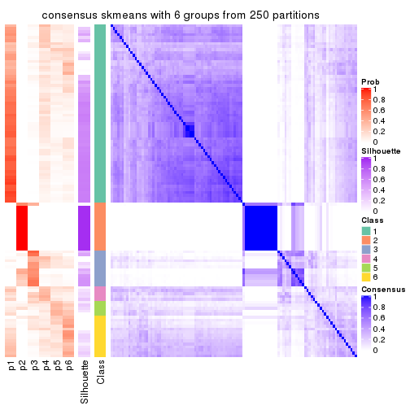
Heatmaps for the membership of samples in all partitions to see how consistent they are:
membership_heatmap(res, k = 2)
membership_heatmap(res, k = 3)
membership_heatmap(res, k = 4)
membership_heatmap(res, k = 5)
membership_heatmap(res, k = 6)
As soon as we have had the classes for columns, we can look for signatures which are significantly different between classes which can be candidate marks for certain classes. Following are the heatmaps for signatures.
Signature heatmaps where rows are scaled:
get_signatures(res, k = 2)
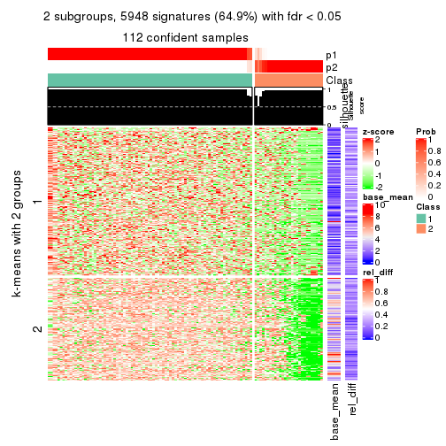
get_signatures(res, k = 3)
get_signatures(res, k = 4)
get_signatures(res, k = 5)
get_signatures(res, k = 6)
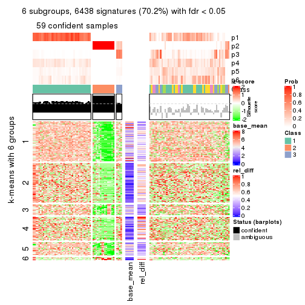
Signature heatmaps where rows are not scaled:
get_signatures(res, k = 2, scale_rows = FALSE)
get_signatures(res, k = 3, scale_rows = FALSE)
get_signatures(res, k = 4, scale_rows = FALSE)
get_signatures(res, k = 5, scale_rows = FALSE)
get_signatures(res, k = 6, scale_rows = FALSE)
Compare the overlap of signatures from different k:
compare_signatures(res)
get_signature() returns a data frame invisibly. TO get the list of signatures, the function
call should be assigned to a variable explicitly. In following code, if plot argument is set
to FALSE, no heatmap is plotted while only the differential analysis is performed.
# code only for demonstration
tb = get_signature(res, k = ..., plot = FALSE)
An example of the output of tb is:
#> which_row fdr mean_1 mean_2 scaled_mean_1 scaled_mean_2 km
#> 1 38 0.042760348 8.373488 9.131774 -0.5533452 0.5164555 1
#> 2 40 0.018707592 7.106213 8.469186 -0.6173731 0.5762149 1
#> 3 55 0.019134737 10.221463 11.207825 -0.6159697 0.5749050 1
#> 4 59 0.006059896 5.921854 7.869574 -0.6899429 0.6439467 1
#> 5 60 0.018055526 8.928898 10.211722 -0.6204761 0.5791110 1
#> 6 98 0.009384629 15.714769 14.887706 0.6635654 -0.6193277 2
...
The columns in tb are:
which_row: row indices corresponding to the input matrix.fdr: FDR for the differential test. mean_x: The mean value in group x.scaled_mean_x: The mean value in group x after rows are scaled.km: Row groups if k-means clustering is applied to rows.UMAP plot which shows how samples are separated.
dimension_reduction(res, k = 2, method = "UMAP")
dimension_reduction(res, k = 3, method = "UMAP")
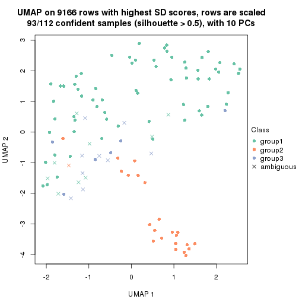
dimension_reduction(res, k = 4, method = "UMAP")
dimension_reduction(res, k = 5, method = "UMAP")
dimension_reduction(res, k = 6, method = "UMAP")
Following heatmap shows how subgroups are split when increasing k:
collect_classes(res)
If matrix rows can be associated to genes, consider to use GO_Enrichment(res,
...) to perform function enrichment for the signature genes.
The object with results only for a single top-value method and a single partition method can be extracted as:
res = res_list["SD", "pam"]
# you can also extract it by
# res = res_list["SD:pam"]
A summary of res and all the functions that can be applied to it:
res
#> A 'ConsensusPartition' object with k = 2, 3, 4, 5, 6.
#> On a matrix with 9166 rows and 112 columns.
#> Top rows (917, 1834, 2750, 3666, 4583) are extracted by 'SD' method.
#> Subgroups are detected by 'pam' method.
#> Performed in total 1250 partitions by row resampling.
#> Best k for subgroups seems to be 2.
#>
#> Following methods can be applied to this 'ConsensusPartition' object:
#> [1] "cola_report" "collect_classes" "collect_plots"
#> [4] "collect_stats" "colnames" "compare_signatures"
#> [7] "consensus_heatmap" "dimension_reduction" "functional_enrichment"
#> [10] "get_anno_col" "get_anno" "get_classes"
#> [13] "get_consensus" "get_matrix" "get_membership"
#> [16] "get_param" "get_signatures" "get_stats"
#> [19] "is_best_k" "is_stable_k" "membership_heatmap"
#> [22] "ncol" "nrow" "plot_ecdf"
#> [25] "rownames" "select_partition_number" "show"
#> [28] "suggest_best_k" "test_to_known_factors"
collect_plots() function collects all the plots made from res for all k (number of partitions)
into one single page to provide an easy and fast comparison between different k.
collect_plots(res)
The plots are:
k and the heatmap of
predicted classes for each k.k.k.k.All the plots in panels can be made by individual functions and they are plotted later in this section.
select_partition_number() produces several plots showing different
statistics for choosing “optimized” k. There are following statistics:
k;k, the area increased is defined as \(A_k - A_{k-1}\).The detailed explanations of these statistics can be found in the cola vignette.
Generally speaking, lower PAC score, higher mean silhouette score or higher
concordance corresponds to better partition. Rand index and Jaccard index
measure how similar the current partition is compared to partition with k-1.
If they are too similar, we won't accept k is better than k-1.
select_partition_number(res)
The numeric values for all these statistics can be obtained by get_stats().
get_stats(res)
#> k 1-PAC mean_silhouette concordance area_increased Rand Jaccard
#> 2 2 1.000 0.998 0.999 0.21993 0.779 0.779
#> 3 3 1.000 0.995 0.998 0.11723 0.975 0.968
#> 4 4 0.743 0.850 0.938 0.76640 0.860 0.815
#> 5 5 0.744 0.843 0.936 0.00475 0.998 0.997
#> 6 6 0.744 0.834 0.929 0.01163 0.999 0.998
suggest_best_k() suggests the best \(k\) based on these statistics. The rules are as follows:
NA.suggest_best_k(res)
#> [1] 2
Following shows the table of the partitions (You need to click the show/hide
code output link to see it). The membership matrix (columns with name p*)
is inferred by
clue::cl_consensus()
function with the SE method. Basically the value in the membership matrix
represents the probability to belong to a certain group. The finall class
label for an item is determined with the group with highest probability it
belongs to.
In get_classes() function, the entropy is calculated from the membership
matrix and the silhouette score is calculated from the consensus matrix.
cbind(get_classes(res, k = 2), get_membership(res, k = 2))
#> class entropy silhouette p1 p2
#> SRR1003755 1 0.000 1.000 1.000 0.000
#> SRR1003756 1 0.000 1.000 1.000 0.000
#> SRR1003757 1 0.000 1.000 1.000 0.000
#> SRR1003758 1 0.000 1.000 1.000 0.000
#> SRR1003759 1 0.000 1.000 1.000 0.000
#> SRR1003760 2 0.000 0.991 0.000 1.000
#> SRR1003761 1 0.000 1.000 1.000 0.000
#> SRR1003762 2 0.000 0.991 0.000 1.000
#> SRR1003763 2 0.518 0.869 0.116 0.884
#> SRR1003764 2 0.000 0.991 0.000 1.000
#> SRR1003765 2 0.000 0.991 0.000 1.000
#> SRR1003766 2 0.000 0.991 0.000 1.000
#> SRR1003767 2 0.000 0.991 0.000 1.000
#> SRR1003768 2 0.000 0.991 0.000 1.000
#> SRR1003769 2 0.000 0.991 0.000 1.000
#> SRR1003770 2 0.000 0.991 0.000 1.000
#> SRR1003771 2 0.000 0.991 0.000 1.000
#> SRR1003773 1 0.000 1.000 1.000 0.000
#> SRR1003772 1 0.000 1.000 1.000 0.000
#> SRR1003774 1 0.000 1.000 1.000 0.000
#> SRR1003775 1 0.000 1.000 1.000 0.000
#> SRR1003776 1 0.000 1.000 1.000 0.000
#> SRR1003777 1 0.000 1.000 1.000 0.000
#> SRR1003778 1 0.000 1.000 1.000 0.000
#> SRR1003779 1 0.000 1.000 1.000 0.000
#> SRR1003780 2 0.000 0.991 0.000 1.000
#> SRR1003781 1 0.000 1.000 1.000 0.000
#> SRR1003784 1 0.000 1.000 1.000 0.000
#> SRR1003785 1 0.000 1.000 1.000 0.000
#> SRR1003786 1 0.000 1.000 1.000 0.000
#> SRR1003783 1 0.000 1.000 1.000 0.000
#> SRR1003787 1 0.000 1.000 1.000 0.000
#> SRR1003788 1 0.000 1.000 1.000 0.000
#> SRR1003789 2 0.000 0.991 0.000 1.000
#> SRR1003790 1 0.000 1.000 1.000 0.000
#> SRR1003791 1 0.000 1.000 1.000 0.000
#> SRR1003792 1 0.000 1.000 1.000 0.000
#> SRR1003793 1 0.000 1.000 1.000 0.000
#> SRR1003794 1 0.000 1.000 1.000 0.000
#> SRR1003795 1 0.000 1.000 1.000 0.000
#> SRR1003796 1 0.000 1.000 1.000 0.000
#> SRR1003797 1 0.000 1.000 1.000 0.000
#> SRR1003798 1 0.000 1.000 1.000 0.000
#> SRR1003799 1 0.000 1.000 1.000 0.000
#> SRR1003800 1 0.000 1.000 1.000 0.000
#> SRR1003801 1 0.000 1.000 1.000 0.000
#> SRR1003802 1 0.000 1.000 1.000 0.000
#> SRR1003803 1 0.000 1.000 1.000 0.000
#> SRR1003804 1 0.000 1.000 1.000 0.000
#> SRR1003805 1 0.000 1.000 1.000 0.000
#> SRR1003806 1 0.000 1.000 1.000 0.000
#> SRR1003807 1 0.000 1.000 1.000 0.000
#> SRR1003809 1 0.000 1.000 1.000 0.000
#> SRR1003808 1 0.000 1.000 1.000 0.000
#> SRR1003810 1 0.000 1.000 1.000 0.000
#> SRR1003811 1 0.000 1.000 1.000 0.000
#> SRR1003812 1 0.000 1.000 1.000 0.000
#> SRR1003813 1 0.000 1.000 1.000 0.000
#> SRR1003814 1 0.000 1.000 1.000 0.000
#> SRR1003815 1 0.000 1.000 1.000 0.000
#> SRR1003816 1 0.000 1.000 1.000 0.000
#> SRR1003817 1 0.000 1.000 1.000 0.000
#> SRR1003818 1 0.000 1.000 1.000 0.000
#> SRR1003819 1 0.000 1.000 1.000 0.000
#> SRR1003820 1 0.000 1.000 1.000 0.000
#> SRR1003821 1 0.000 1.000 1.000 0.000
#> SRR1003822 1 0.000 1.000 1.000 0.000
#> SRR1003824 1 0.000 1.000 1.000 0.000
#> SRR1003823 1 0.000 1.000 1.000 0.000
#> SRR1003825 1 0.000 1.000 1.000 0.000
#> SRR1003826 1 0.000 1.000 1.000 0.000
#> SRR1003827 1 0.000 1.000 1.000 0.000
#> SRR1003828 1 0.000 1.000 1.000 0.000
#> SRR1003829 1 0.000 1.000 1.000 0.000
#> SRR1003830 1 0.000 1.000 1.000 0.000
#> SRR1003831 1 0.000 1.000 1.000 0.000
#> SRR1003832 1 0.000 1.000 1.000 0.000
#> SRR1003833 1 0.000 1.000 1.000 0.000
#> SRR1003834 1 0.000 1.000 1.000 0.000
#> SRR1003836 1 0.000 1.000 1.000 0.000
#> SRR1003835 1 0.000 1.000 1.000 0.000
#> SRR1003838 1 0.000 1.000 1.000 0.000
#> SRR1003837 1 0.000 1.000 1.000 0.000
#> SRR1003839 1 0.000 1.000 1.000 0.000
#> SRR1003840 1 0.000 1.000 1.000 0.000
#> SRR1003841 2 0.000 0.991 0.000 1.000
#> SRR1003842 1 0.000 1.000 1.000 0.000
#> SRR1003844 1 0.000 1.000 1.000 0.000
#> SRR1003845 1 0.000 1.000 1.000 0.000
#> SRR1003846 1 0.000 1.000 1.000 0.000
#> SRR1003847 1 0.000 1.000 1.000 0.000
#> SRR1003848 1 0.000 1.000 1.000 0.000
#> SRR1003849 1 0.000 1.000 1.000 0.000
#> SRR1003850 1 0.000 1.000 1.000 0.000
#> SRR1003851 1 0.000 1.000 1.000 0.000
#> SRR1003852 1 0.000 1.000 1.000 0.000
#> SRR1003853 1 0.000 1.000 1.000 0.000
#> SRR1003854 1 0.000 1.000 1.000 0.000
#> SRR1003843 1 0.000 1.000 1.000 0.000
#> SRR1003855 1 0.000 1.000 1.000 0.000
#> SRR1003856 1 0.000 1.000 1.000 0.000
#> SRR1003857 1 0.000 1.000 1.000 0.000
#> SRR1003858 1 0.000 1.000 1.000 0.000
#> SRR1003859 1 0.000 1.000 1.000 0.000
#> SRR1003860 1 0.000 1.000 1.000 0.000
#> SRR1003861 1 0.000 1.000 1.000 0.000
#> SRR1003862 1 0.000 1.000 1.000 0.000
#> SRR1003863 1 0.000 1.000 1.000 0.000
#> SRR1003864 1 0.000 1.000 1.000 0.000
#> SRR1003865 1 0.000 1.000 1.000 0.000
#> SRR1003866 1 0.000 1.000 1.000 0.000
#> SRR1003867 1 0.000 1.000 1.000 0.000
cbind(get_classes(res, k = 3), get_membership(res, k = 3))
#> class entropy silhouette p1 p2 p3
#> SRR1003755 1 0.0000 0.999 1.000 0.000 0.000
#> SRR1003756 1 0.0000 0.999 1.000 0.000 0.000
#> SRR1003757 1 0.0000 0.999 1.000 0.000 0.000
#> SRR1003758 1 0.0000 0.999 1.000 0.000 0.000
#> SRR1003759 1 0.0000 0.999 1.000 0.000 0.000
#> SRR1003760 2 0.0000 0.999 0.000 1.000 0.000
#> SRR1003761 2 0.0000 0.999 0.000 1.000 0.000
#> SRR1003762 2 0.0000 0.999 0.000 1.000 0.000
#> SRR1003763 2 0.0000 0.999 0.000 1.000 0.000
#> SRR1003764 2 0.0000 0.999 0.000 1.000 0.000
#> SRR1003765 3 0.0000 0.977 0.000 0.000 1.000
#> SRR1003766 3 0.0000 0.977 0.000 0.000 1.000
#> SRR1003767 3 0.0000 0.977 0.000 0.000 1.000
#> SRR1003768 3 0.0000 0.977 0.000 0.000 1.000
#> SRR1003769 3 0.0000 0.977 0.000 0.000 1.000
#> SRR1003770 3 0.0000 0.977 0.000 0.000 1.000
#> SRR1003771 3 0.3619 0.842 0.000 0.136 0.864
#> SRR1003773 1 0.0000 0.999 1.000 0.000 0.000
#> SRR1003772 1 0.0000 0.999 1.000 0.000 0.000
#> SRR1003774 1 0.0000 0.999 1.000 0.000 0.000
#> SRR1003775 1 0.0000 0.999 1.000 0.000 0.000
#> SRR1003776 1 0.0000 0.999 1.000 0.000 0.000
#> SRR1003777 1 0.0000 0.999 1.000 0.000 0.000
#> SRR1003778 1 0.3619 0.843 0.864 0.136 0.000
#> SRR1003779 1 0.0000 0.999 1.000 0.000 0.000
#> SRR1003780 2 0.0237 0.996 0.000 0.996 0.004
#> SRR1003781 1 0.0000 0.999 1.000 0.000 0.000
#> SRR1003784 1 0.0000 0.999 1.000 0.000 0.000
#> SRR1003785 1 0.0000 0.999 1.000 0.000 0.000
#> SRR1003786 1 0.0000 0.999 1.000 0.000 0.000
#> SRR1003783 1 0.0000 0.999 1.000 0.000 0.000
#> SRR1003787 1 0.0000 0.999 1.000 0.000 0.000
#> SRR1003788 1 0.0000 0.999 1.000 0.000 0.000
#> SRR1003789 2 0.0000 0.999 0.000 1.000 0.000
#> SRR1003790 1 0.0000 0.999 1.000 0.000 0.000
#> SRR1003791 1 0.0000 0.999 1.000 0.000 0.000
#> SRR1003792 1 0.0000 0.999 1.000 0.000 0.000
#> SRR1003793 1 0.0000 0.999 1.000 0.000 0.000
#> SRR1003794 1 0.0000 0.999 1.000 0.000 0.000
#> SRR1003795 1 0.0000 0.999 1.000 0.000 0.000
#> SRR1003796 1 0.0000 0.999 1.000 0.000 0.000
#> SRR1003797 1 0.0000 0.999 1.000 0.000 0.000
#> SRR1003798 1 0.0000 0.999 1.000 0.000 0.000
#> SRR1003799 1 0.0000 0.999 1.000 0.000 0.000
#> SRR1003800 1 0.0000 0.999 1.000 0.000 0.000
#> SRR1003801 1 0.0000 0.999 1.000 0.000 0.000
#> SRR1003802 1 0.0000 0.999 1.000 0.000 0.000
#> SRR1003803 1 0.0000 0.999 1.000 0.000 0.000
#> SRR1003804 1 0.0000 0.999 1.000 0.000 0.000
#> SRR1003805 1 0.0000 0.999 1.000 0.000 0.000
#> SRR1003806 1 0.0000 0.999 1.000 0.000 0.000
#> SRR1003807 1 0.0000 0.999 1.000 0.000 0.000
#> SRR1003809 1 0.0000 0.999 1.000 0.000 0.000
#> SRR1003808 1 0.0000 0.999 1.000 0.000 0.000
#> SRR1003810 1 0.0000 0.999 1.000 0.000 0.000
#> SRR1003811 1 0.0000 0.999 1.000 0.000 0.000
#> SRR1003812 1 0.0000 0.999 1.000 0.000 0.000
#> SRR1003813 1 0.0000 0.999 1.000 0.000 0.000
#> SRR1003814 1 0.0000 0.999 1.000 0.000 0.000
#> SRR1003815 1 0.0000 0.999 1.000 0.000 0.000
#> SRR1003816 1 0.0000 0.999 1.000 0.000 0.000
#> SRR1003817 1 0.0000 0.999 1.000 0.000 0.000
#> SRR1003818 1 0.0000 0.999 1.000 0.000 0.000
#> SRR1003819 1 0.0000 0.999 1.000 0.000 0.000
#> SRR1003820 1 0.0000 0.999 1.000 0.000 0.000
#> SRR1003821 1 0.0000 0.999 1.000 0.000 0.000
#> SRR1003822 1 0.0000 0.999 1.000 0.000 0.000
#> SRR1003824 1 0.0000 0.999 1.000 0.000 0.000
#> SRR1003823 1 0.0000 0.999 1.000 0.000 0.000
#> SRR1003825 1 0.0000 0.999 1.000 0.000 0.000
#> SRR1003826 1 0.0000 0.999 1.000 0.000 0.000
#> SRR1003827 1 0.0000 0.999 1.000 0.000 0.000
#> SRR1003828 1 0.0000 0.999 1.000 0.000 0.000
#> SRR1003829 1 0.0000 0.999 1.000 0.000 0.000
#> SRR1003830 1 0.0000 0.999 1.000 0.000 0.000
#> SRR1003831 1 0.0000 0.999 1.000 0.000 0.000
#> SRR1003832 1 0.0000 0.999 1.000 0.000 0.000
#> SRR1003833 1 0.0000 0.999 1.000 0.000 0.000
#> SRR1003834 1 0.0000 0.999 1.000 0.000 0.000
#> SRR1003836 1 0.0000 0.999 1.000 0.000 0.000
#> SRR1003835 1 0.0000 0.999 1.000 0.000 0.000
#> SRR1003838 1 0.0000 0.999 1.000 0.000 0.000
#> SRR1003837 1 0.0000 0.999 1.000 0.000 0.000
#> SRR1003839 1 0.0000 0.999 1.000 0.000 0.000
#> SRR1003840 1 0.0000 0.999 1.000 0.000 0.000
#> SRR1003841 2 0.0237 0.996 0.000 0.996 0.004
#> SRR1003842 1 0.0000 0.999 1.000 0.000 0.000
#> SRR1003844 1 0.0000 0.999 1.000 0.000 0.000
#> SRR1003845 1 0.0000 0.999 1.000 0.000 0.000
#> SRR1003846 1 0.0000 0.999 1.000 0.000 0.000
#> SRR1003847 1 0.0000 0.999 1.000 0.000 0.000
#> SRR1003848 1 0.0000 0.999 1.000 0.000 0.000
#> SRR1003849 1 0.0000 0.999 1.000 0.000 0.000
#> SRR1003850 1 0.0000 0.999 1.000 0.000 0.000
#> SRR1003851 1 0.0000 0.999 1.000 0.000 0.000
#> SRR1003852 1 0.0000 0.999 1.000 0.000 0.000
#> SRR1003853 1 0.0000 0.999 1.000 0.000 0.000
#> SRR1003854 1 0.0000 0.999 1.000 0.000 0.000
#> SRR1003843 1 0.0000 0.999 1.000 0.000 0.000
#> SRR1003855 1 0.0000 0.999 1.000 0.000 0.000
#> SRR1003856 1 0.0000 0.999 1.000 0.000 0.000
#> SRR1003857 1 0.0000 0.999 1.000 0.000 0.000
#> SRR1003858 1 0.0000 0.999 1.000 0.000 0.000
#> SRR1003859 1 0.0000 0.999 1.000 0.000 0.000
#> SRR1003860 1 0.0000 0.999 1.000 0.000 0.000
#> SRR1003861 1 0.0000 0.999 1.000 0.000 0.000
#> SRR1003862 1 0.0000 0.999 1.000 0.000 0.000
#> SRR1003863 1 0.0000 0.999 1.000 0.000 0.000
#> SRR1003864 1 0.0000 0.999 1.000 0.000 0.000
#> SRR1003865 1 0.0000 0.999 1.000 0.000 0.000
#> SRR1003866 1 0.0000 0.999 1.000 0.000 0.000
#> SRR1003867 1 0.0000 0.999 1.000 0.000 0.000
cbind(get_classes(res, k = 4), get_membership(res, k = 4))
#> class entropy silhouette p1 p2 p3 p4
#> SRR1003755 3 0.0000 0.724 0.000 0.000 1.000 0.000
#> SRR1003756 3 0.0000 0.724 0.000 0.000 1.000 0.000
#> SRR1003757 3 0.0000 0.724 0.000 0.000 1.000 0.000
#> SRR1003758 3 0.0000 0.724 0.000 0.000 1.000 0.000
#> SRR1003759 1 0.0000 0.926 1.000 0.000 0.000 0.000
#> SRR1003760 4 0.0000 0.999 0.000 0.000 0.000 1.000
#> SRR1003761 4 0.0000 0.999 0.000 0.000 0.000 1.000
#> SRR1003762 4 0.0000 0.999 0.000 0.000 0.000 1.000
#> SRR1003763 4 0.0000 0.999 0.000 0.000 0.000 1.000
#> SRR1003764 4 0.0000 0.999 0.000 0.000 0.000 1.000
#> SRR1003765 2 0.0000 0.977 0.000 1.000 0.000 0.000
#> SRR1003766 2 0.0000 0.977 0.000 1.000 0.000 0.000
#> SRR1003767 2 0.0000 0.977 0.000 1.000 0.000 0.000
#> SRR1003768 2 0.0000 0.977 0.000 1.000 0.000 0.000
#> SRR1003769 2 0.0000 0.977 0.000 1.000 0.000 0.000
#> SRR1003770 2 0.0000 0.977 0.000 1.000 0.000 0.000
#> SRR1003771 2 0.2868 0.842 0.000 0.864 0.000 0.136
#> SRR1003773 1 0.0000 0.926 1.000 0.000 0.000 0.000
#> SRR1003772 1 0.4817 0.342 0.612 0.000 0.388 0.000
#> SRR1003774 1 0.0000 0.926 1.000 0.000 0.000 0.000
#> SRR1003775 3 0.4761 0.456 0.372 0.000 0.628 0.000
#> SRR1003776 1 0.0000 0.926 1.000 0.000 0.000 0.000
#> SRR1003777 1 0.0336 0.922 0.992 0.000 0.008 0.000
#> SRR1003778 1 0.2868 0.812 0.864 0.000 0.000 0.136
#> SRR1003779 1 0.3837 0.707 0.776 0.000 0.224 0.000
#> SRR1003780 4 0.0188 0.996 0.000 0.004 0.000 0.996
#> SRR1003781 1 0.0336 0.922 0.992 0.000 0.008 0.000
#> SRR1003784 1 0.0000 0.926 1.000 0.000 0.000 0.000
#> SRR1003785 1 0.0000 0.926 1.000 0.000 0.000 0.000
#> SRR1003786 3 0.0921 0.739 0.028 0.000 0.972 0.000
#> SRR1003783 3 0.3266 0.645 0.168 0.000 0.832 0.000
#> SRR1003787 1 0.3726 0.722 0.788 0.000 0.212 0.000
#> SRR1003788 1 0.2973 0.808 0.856 0.000 0.144 0.000
#> SRR1003789 4 0.0000 0.999 0.000 0.000 0.000 1.000
#> SRR1003790 1 0.4888 0.257 0.588 0.000 0.412 0.000
#> SRR1003791 1 0.0000 0.926 1.000 0.000 0.000 0.000
#> SRR1003792 1 0.0000 0.926 1.000 0.000 0.000 0.000
#> SRR1003793 1 0.0817 0.915 0.976 0.000 0.024 0.000
#> SRR1003794 1 0.1302 0.902 0.956 0.000 0.044 0.000
#> SRR1003795 1 0.0000 0.926 1.000 0.000 0.000 0.000
#> SRR1003796 1 0.0000 0.926 1.000 0.000 0.000 0.000
#> SRR1003797 1 0.4103 0.666 0.744 0.000 0.256 0.000
#> SRR1003798 1 0.2011 0.875 0.920 0.000 0.080 0.000
#> SRR1003799 1 0.4543 0.512 0.676 0.000 0.324 0.000
#> SRR1003800 1 0.0000 0.926 1.000 0.000 0.000 0.000
#> SRR1003801 1 0.0000 0.926 1.000 0.000 0.000 0.000
#> SRR1003802 1 0.0000 0.926 1.000 0.000 0.000 0.000
#> SRR1003803 1 0.0000 0.926 1.000 0.000 0.000 0.000
#> SRR1003804 1 0.0000 0.926 1.000 0.000 0.000 0.000
#> SRR1003805 1 0.2469 0.850 0.892 0.000 0.108 0.000
#> SRR1003806 1 0.0336 0.922 0.992 0.000 0.008 0.000
#> SRR1003807 1 0.0000 0.926 1.000 0.000 0.000 0.000
#> SRR1003809 1 0.0000 0.926 1.000 0.000 0.000 0.000
#> SRR1003808 1 0.0000 0.926 1.000 0.000 0.000 0.000
#> SRR1003810 1 0.0000 0.926 1.000 0.000 0.000 0.000
#> SRR1003811 1 0.0000 0.926 1.000 0.000 0.000 0.000
#> SRR1003812 1 0.1940 0.878 0.924 0.000 0.076 0.000
#> SRR1003813 1 0.0000 0.926 1.000 0.000 0.000 0.000
#> SRR1003814 1 0.0000 0.926 1.000 0.000 0.000 0.000
#> SRR1003815 1 0.0336 0.922 0.992 0.000 0.008 0.000
#> SRR1003816 1 0.4730 0.410 0.636 0.000 0.364 0.000
#> SRR1003817 1 0.0469 0.920 0.988 0.000 0.012 0.000
#> SRR1003818 1 0.0000 0.926 1.000 0.000 0.000 0.000
#> SRR1003819 1 0.0000 0.926 1.000 0.000 0.000 0.000
#> SRR1003820 1 0.4624 0.480 0.660 0.000 0.340 0.000
#> SRR1003821 3 0.4925 0.297 0.428 0.000 0.572 0.000
#> SRR1003822 1 0.0000 0.926 1.000 0.000 0.000 0.000
#> SRR1003824 1 0.3688 0.735 0.792 0.000 0.208 0.000
#> SRR1003823 1 0.3837 0.704 0.776 0.000 0.224 0.000
#> SRR1003825 1 0.0707 0.916 0.980 0.000 0.020 0.000
#> SRR1003826 1 0.3528 0.750 0.808 0.000 0.192 0.000
#> SRR1003827 1 0.0592 0.918 0.984 0.000 0.016 0.000
#> SRR1003828 1 0.0188 0.924 0.996 0.000 0.004 0.000
#> SRR1003829 1 0.0707 0.917 0.980 0.000 0.020 0.000
#> SRR1003830 3 0.1637 0.735 0.060 0.000 0.940 0.000
#> SRR1003831 1 0.2530 0.843 0.888 0.000 0.112 0.000
#> SRR1003832 1 0.4804 0.371 0.616 0.000 0.384 0.000
#> SRR1003833 1 0.0000 0.926 1.000 0.000 0.000 0.000
#> SRR1003834 1 0.0000 0.926 1.000 0.000 0.000 0.000
#> SRR1003836 1 0.0000 0.926 1.000 0.000 0.000 0.000
#> SRR1003835 1 0.0000 0.926 1.000 0.000 0.000 0.000
#> SRR1003838 1 0.0000 0.926 1.000 0.000 0.000 0.000
#> SRR1003837 1 0.0000 0.926 1.000 0.000 0.000 0.000
#> SRR1003839 1 0.0000 0.926 1.000 0.000 0.000 0.000
#> SRR1003840 1 0.0000 0.926 1.000 0.000 0.000 0.000
#> SRR1003841 4 0.0188 0.996 0.000 0.004 0.000 0.996
#> SRR1003842 1 0.4454 0.555 0.692 0.000 0.308 0.000
#> SRR1003844 1 0.1716 0.889 0.936 0.000 0.064 0.000
#> SRR1003845 1 0.0000 0.926 1.000 0.000 0.000 0.000
#> SRR1003846 3 0.1557 0.738 0.056 0.000 0.944 0.000
#> SRR1003847 1 0.1302 0.902 0.956 0.000 0.044 0.000
#> SRR1003848 1 0.0000 0.926 1.000 0.000 0.000 0.000
#> SRR1003849 1 0.0000 0.926 1.000 0.000 0.000 0.000
#> SRR1003850 1 0.0000 0.926 1.000 0.000 0.000 0.000
#> SRR1003851 1 0.0000 0.926 1.000 0.000 0.000 0.000
#> SRR1003852 1 0.0000 0.926 1.000 0.000 0.000 0.000
#> SRR1003853 1 0.0000 0.926 1.000 0.000 0.000 0.000
#> SRR1003854 1 0.0000 0.926 1.000 0.000 0.000 0.000
#> SRR1003843 1 0.0000 0.926 1.000 0.000 0.000 0.000
#> SRR1003855 1 0.0000 0.926 1.000 0.000 0.000 0.000
#> SRR1003856 1 0.0000 0.926 1.000 0.000 0.000 0.000
#> SRR1003857 1 0.1211 0.905 0.960 0.000 0.040 0.000
#> SRR1003858 1 0.0000 0.926 1.000 0.000 0.000 0.000
#> SRR1003859 1 0.4730 0.398 0.636 0.000 0.364 0.000
#> SRR1003860 1 0.0000 0.926 1.000 0.000 0.000 0.000
#> SRR1003861 1 0.0000 0.926 1.000 0.000 0.000 0.000
#> SRR1003862 1 0.4406 0.581 0.700 0.000 0.300 0.000
#> SRR1003863 1 0.0000 0.926 1.000 0.000 0.000 0.000
#> SRR1003864 1 0.0336 0.923 0.992 0.000 0.008 0.000
#> SRR1003865 1 0.0000 0.926 1.000 0.000 0.000 0.000
#> SRR1003866 1 0.0188 0.924 0.996 0.000 0.004 0.000
#> SRR1003867 1 0.3400 0.772 0.820 0.000 0.180 0.000
cbind(get_classes(res, k = 5), get_membership(res, k = 5))
#> class entropy silhouette p1 p2 p3 p4 p5
#> SRR1003755 5 0.0000 0.681 0.000 0.000 0.000 0.000 1.000
#> SRR1003756 5 0.0000 0.681 0.000 0.000 0.000 0.000 1.000
#> SRR1003757 5 0.0000 0.681 0.000 0.000 0.000 0.000 1.000
#> SRR1003758 5 0.0000 0.681 0.000 0.000 0.000 0.000 1.000
#> SRR1003759 1 0.0000 0.925 1.000 0.000 0.000 0.000 0.000
#> SRR1003760 2 0.0000 0.999 0.000 1.000 0.000 0.000 0.000
#> SRR1003761 2 0.0000 0.999 0.000 1.000 0.000 0.000 0.000
#> SRR1003762 2 0.0000 0.999 0.000 1.000 0.000 0.000 0.000
#> SRR1003763 2 0.0000 0.999 0.000 1.000 0.000 0.000 0.000
#> SRR1003764 2 0.0000 0.999 0.000 1.000 0.000 0.000 0.000
#> SRR1003765 3 0.0510 0.981 0.000 0.000 0.984 0.016 0.000
#> SRR1003766 3 0.0000 0.994 0.000 0.000 1.000 0.000 0.000
#> SRR1003767 4 0.0609 0.849 0.000 0.000 0.020 0.980 0.000
#> SRR1003768 3 0.0000 0.994 0.000 0.000 1.000 0.000 0.000
#> SRR1003769 3 0.0000 0.994 0.000 0.000 1.000 0.000 0.000
#> SRR1003770 4 0.3774 0.604 0.000 0.000 0.296 0.704 0.000
#> SRR1003771 4 0.0609 0.849 0.000 0.000 0.020 0.980 0.000
#> SRR1003773 1 0.0000 0.925 1.000 0.000 0.000 0.000 0.000
#> SRR1003772 1 0.4150 0.342 0.612 0.000 0.000 0.000 0.388
#> SRR1003774 1 0.0000 0.925 1.000 0.000 0.000 0.000 0.000
#> SRR1003775 5 0.4101 0.405 0.372 0.000 0.000 0.000 0.628
#> SRR1003776 1 0.0000 0.925 1.000 0.000 0.000 0.000 0.000
#> SRR1003777 1 0.0290 0.922 0.992 0.000 0.000 0.000 0.008
#> SRR1003778 1 0.3016 0.795 0.848 0.132 0.000 0.020 0.000
#> SRR1003779 1 0.3305 0.707 0.776 0.000 0.000 0.000 0.224
#> SRR1003780 2 0.0162 0.996 0.000 0.996 0.004 0.000 0.000
#> SRR1003781 1 0.0290 0.922 0.992 0.000 0.000 0.000 0.008
#> SRR1003784 1 0.0000 0.925 1.000 0.000 0.000 0.000 0.000
#> SRR1003785 1 0.0000 0.925 1.000 0.000 0.000 0.000 0.000
#> SRR1003786 5 0.0794 0.699 0.028 0.000 0.000 0.000 0.972
#> SRR1003783 5 0.2813 0.596 0.168 0.000 0.000 0.000 0.832
#> SRR1003787 1 0.3210 0.723 0.788 0.000 0.000 0.000 0.212
#> SRR1003788 1 0.2561 0.808 0.856 0.000 0.000 0.000 0.144
#> SRR1003789 2 0.0000 0.999 0.000 1.000 0.000 0.000 0.000
#> SRR1003790 1 0.4210 0.257 0.588 0.000 0.000 0.000 0.412
#> SRR1003791 1 0.0000 0.925 1.000 0.000 0.000 0.000 0.000
#> SRR1003792 1 0.0000 0.925 1.000 0.000 0.000 0.000 0.000
#> SRR1003793 1 0.0703 0.915 0.976 0.000 0.000 0.000 0.024
#> SRR1003794 1 0.1121 0.902 0.956 0.000 0.000 0.000 0.044
#> SRR1003795 1 0.0000 0.925 1.000 0.000 0.000 0.000 0.000
#> SRR1003796 1 0.0000 0.925 1.000 0.000 0.000 0.000 0.000
#> SRR1003797 1 0.3534 0.667 0.744 0.000 0.000 0.000 0.256
#> SRR1003798 1 0.1732 0.874 0.920 0.000 0.000 0.000 0.080
#> SRR1003799 1 0.3913 0.512 0.676 0.000 0.000 0.000 0.324
#> SRR1003800 1 0.0000 0.925 1.000 0.000 0.000 0.000 0.000
#> SRR1003801 1 0.0000 0.925 1.000 0.000 0.000 0.000 0.000
#> SRR1003802 1 0.0000 0.925 1.000 0.000 0.000 0.000 0.000
#> SRR1003803 1 0.0000 0.925 1.000 0.000 0.000 0.000 0.000
#> SRR1003804 1 0.0000 0.925 1.000 0.000 0.000 0.000 0.000
#> SRR1003805 1 0.2127 0.850 0.892 0.000 0.000 0.000 0.108
#> SRR1003806 1 0.0290 0.922 0.992 0.000 0.000 0.000 0.008
#> SRR1003807 1 0.0000 0.925 1.000 0.000 0.000 0.000 0.000
#> SRR1003809 1 0.0000 0.925 1.000 0.000 0.000 0.000 0.000
#> SRR1003808 1 0.0000 0.925 1.000 0.000 0.000 0.000 0.000
#> SRR1003810 1 0.0000 0.925 1.000 0.000 0.000 0.000 0.000
#> SRR1003811 1 0.0000 0.925 1.000 0.000 0.000 0.000 0.000
#> SRR1003812 1 0.1671 0.878 0.924 0.000 0.000 0.000 0.076
#> SRR1003813 1 0.0000 0.925 1.000 0.000 0.000 0.000 0.000
#> SRR1003814 1 0.0000 0.925 1.000 0.000 0.000 0.000 0.000
#> SRR1003815 1 0.0290 0.922 0.992 0.000 0.000 0.000 0.008
#> SRR1003816 1 0.4074 0.410 0.636 0.000 0.000 0.000 0.364
#> SRR1003817 1 0.0404 0.920 0.988 0.000 0.000 0.000 0.012
#> SRR1003818 1 0.0000 0.925 1.000 0.000 0.000 0.000 0.000
#> SRR1003819 1 0.0000 0.925 1.000 0.000 0.000 0.000 0.000
#> SRR1003820 1 0.3983 0.480 0.660 0.000 0.000 0.000 0.340
#> SRR1003821 5 0.4242 0.297 0.428 0.000 0.000 0.000 0.572
#> SRR1003822 1 0.0000 0.925 1.000 0.000 0.000 0.000 0.000
#> SRR1003824 1 0.3177 0.735 0.792 0.000 0.000 0.000 0.208
#> SRR1003823 1 0.3305 0.704 0.776 0.000 0.000 0.000 0.224
#> SRR1003825 1 0.0609 0.916 0.980 0.000 0.000 0.000 0.020
#> SRR1003826 1 0.3039 0.750 0.808 0.000 0.000 0.000 0.192
#> SRR1003827 1 0.0510 0.918 0.984 0.000 0.000 0.000 0.016
#> SRR1003828 1 0.0162 0.924 0.996 0.000 0.000 0.000 0.004
#> SRR1003829 1 0.0609 0.917 0.980 0.000 0.000 0.000 0.020
#> SRR1003830 5 0.1410 0.695 0.060 0.000 0.000 0.000 0.940
#> SRR1003831 1 0.2179 0.843 0.888 0.000 0.000 0.000 0.112
#> SRR1003832 1 0.4138 0.371 0.616 0.000 0.000 0.000 0.384
#> SRR1003833 1 0.0000 0.925 1.000 0.000 0.000 0.000 0.000
#> SRR1003834 1 0.0000 0.925 1.000 0.000 0.000 0.000 0.000
#> SRR1003836 1 0.0000 0.925 1.000 0.000 0.000 0.000 0.000
#> SRR1003835 1 0.0000 0.925 1.000 0.000 0.000 0.000 0.000
#> SRR1003838 1 0.0000 0.925 1.000 0.000 0.000 0.000 0.000
#> SRR1003837 1 0.0000 0.925 1.000 0.000 0.000 0.000 0.000
#> SRR1003839 1 0.0000 0.925 1.000 0.000 0.000 0.000 0.000
#> SRR1003840 1 0.0000 0.925 1.000 0.000 0.000 0.000 0.000
#> SRR1003841 2 0.0162 0.996 0.000 0.996 0.004 0.000 0.000
#> SRR1003842 1 0.3837 0.556 0.692 0.000 0.000 0.000 0.308
#> SRR1003844 1 0.1478 0.889 0.936 0.000 0.000 0.000 0.064
#> SRR1003845 1 0.0000 0.925 1.000 0.000 0.000 0.000 0.000
#> SRR1003846 5 0.1341 0.699 0.056 0.000 0.000 0.000 0.944
#> SRR1003847 1 0.1121 0.902 0.956 0.000 0.000 0.000 0.044
#> SRR1003848 1 0.0000 0.925 1.000 0.000 0.000 0.000 0.000
#> SRR1003849 1 0.0000 0.925 1.000 0.000 0.000 0.000 0.000
#> SRR1003850 1 0.0000 0.925 1.000 0.000 0.000 0.000 0.000
#> SRR1003851 1 0.0000 0.925 1.000 0.000 0.000 0.000 0.000
#> SRR1003852 1 0.0000 0.925 1.000 0.000 0.000 0.000 0.000
#> SRR1003853 1 0.0000 0.925 1.000 0.000 0.000 0.000 0.000
#> SRR1003854 1 0.0000 0.925 1.000 0.000 0.000 0.000 0.000
#> SRR1003843 1 0.0000 0.925 1.000 0.000 0.000 0.000 0.000
#> SRR1003855 1 0.0000 0.925 1.000 0.000 0.000 0.000 0.000
#> SRR1003856 1 0.0000 0.925 1.000 0.000 0.000 0.000 0.000
#> SRR1003857 1 0.1043 0.905 0.960 0.000 0.000 0.000 0.040
#> SRR1003858 1 0.0000 0.925 1.000 0.000 0.000 0.000 0.000
#> SRR1003859 1 0.4074 0.398 0.636 0.000 0.000 0.000 0.364
#> SRR1003860 1 0.0000 0.925 1.000 0.000 0.000 0.000 0.000
#> SRR1003861 1 0.0000 0.925 1.000 0.000 0.000 0.000 0.000
#> SRR1003862 1 0.3796 0.582 0.700 0.000 0.000 0.000 0.300
#> SRR1003863 1 0.0000 0.925 1.000 0.000 0.000 0.000 0.000
#> SRR1003864 1 0.0290 0.923 0.992 0.000 0.000 0.000 0.008
#> SRR1003865 1 0.0000 0.925 1.000 0.000 0.000 0.000 0.000
#> SRR1003866 1 0.0162 0.924 0.996 0.000 0.000 0.000 0.004
#> SRR1003867 1 0.2929 0.772 0.820 0.000 0.000 0.000 0.180
cbind(get_classes(res, k = 6), get_membership(res, k = 6))
#> class entropy silhouette p1 p2 p3 p4 p5 p6
#> SRR1003755 5 0.0000 0.6754 0.000 0.00 0.00 0.000 1.000 0.000
#> SRR1003756 5 0.0000 0.6754 0.000 0.00 0.00 0.000 1.000 0.000
#> SRR1003757 5 0.0000 0.6754 0.000 0.00 0.00 0.000 1.000 0.000
#> SRR1003758 5 0.0000 0.6754 0.000 0.00 0.00 0.000 1.000 0.000
#> SRR1003759 1 0.0000 0.9208 1.000 0.00 0.00 0.000 0.000 0.000
#> SRR1003760 6 0.0000 0.9994 0.000 0.00 0.00 0.000 0.000 1.000
#> SRR1003761 6 0.0000 0.9994 0.000 0.00 0.00 0.000 0.000 1.000
#> SRR1003762 6 0.0000 0.9994 0.000 0.00 0.00 0.000 0.000 1.000
#> SRR1003763 6 0.0000 0.9994 0.000 0.00 0.00 0.000 0.000 1.000
#> SRR1003764 6 0.0000 0.9994 0.000 0.00 0.00 0.000 0.000 1.000
#> SRR1003765 4 0.3797 0.7144 0.000 0.00 0.42 0.580 0.000 0.000
#> SRR1003766 2 0.3797 1.0000 0.000 0.58 0.42 0.000 0.000 0.000
#> SRR1003767 3 0.3797 1.0000 0.000 0.00 0.58 0.420 0.000 0.000
#> SRR1003768 2 0.3797 1.0000 0.000 0.58 0.42 0.000 0.000 0.000
#> SRR1003769 2 0.3797 1.0000 0.000 0.58 0.42 0.000 0.000 0.000
#> SRR1003770 4 0.3309 0.7561 0.000 0.00 0.28 0.720 0.000 0.000
#> SRR1003771 3 0.3797 1.0000 0.000 0.00 0.58 0.420 0.000 0.000
#> SRR1003773 1 0.0000 0.9208 1.000 0.00 0.00 0.000 0.000 0.000
#> SRR1003772 1 0.3727 0.3415 0.612 0.00 0.00 0.000 0.388 0.000
#> SRR1003774 1 0.0000 0.9208 1.000 0.00 0.00 0.000 0.000 0.000
#> SRR1003775 5 0.3684 0.3994 0.372 0.00 0.00 0.000 0.628 0.000
#> SRR1003776 1 0.0000 0.9208 1.000 0.00 0.00 0.000 0.000 0.000
#> SRR1003777 1 0.0260 0.9176 0.992 0.00 0.00 0.000 0.008 0.000
#> SRR1003778 1 0.5054 0.0794 0.504 0.42 0.00 0.000 0.000 0.076
#> SRR1003779 1 0.2969 0.7031 0.776 0.00 0.00 0.000 0.224 0.000
#> SRR1003780 6 0.0146 0.9960 0.000 0.00 0.00 0.004 0.000 0.996
#> SRR1003781 1 0.0260 0.9174 0.992 0.00 0.00 0.000 0.008 0.000
#> SRR1003784 1 0.0000 0.9208 1.000 0.00 0.00 0.000 0.000 0.000
#> SRR1003785 1 0.0000 0.9208 1.000 0.00 0.00 0.000 0.000 0.000
#> SRR1003786 5 0.0713 0.6942 0.028 0.00 0.00 0.000 0.972 0.000
#> SRR1003783 5 0.2527 0.5906 0.168 0.00 0.00 0.000 0.832 0.000
#> SRR1003787 1 0.2883 0.7192 0.788 0.00 0.00 0.000 0.212 0.000
#> SRR1003788 1 0.2300 0.8034 0.856 0.00 0.00 0.000 0.144 0.000
#> SRR1003789 6 0.0000 0.9994 0.000 0.00 0.00 0.000 0.000 1.000
#> SRR1003790 1 0.3782 0.2551 0.588 0.00 0.00 0.000 0.412 0.000
#> SRR1003791 1 0.0000 0.9208 1.000 0.00 0.00 0.000 0.000 0.000
#> SRR1003792 1 0.0000 0.9208 1.000 0.00 0.00 0.000 0.000 0.000
#> SRR1003793 1 0.0632 0.9104 0.976 0.00 0.00 0.000 0.024 0.000
#> SRR1003794 1 0.1007 0.8975 0.956 0.00 0.00 0.000 0.044 0.000
#> SRR1003795 1 0.0000 0.9208 1.000 0.00 0.00 0.000 0.000 0.000
#> SRR1003796 1 0.0000 0.9208 1.000 0.00 0.00 0.000 0.000 0.000
#> SRR1003797 1 0.3175 0.6636 0.744 0.00 0.00 0.000 0.256 0.000
#> SRR1003798 1 0.1556 0.8694 0.920 0.00 0.00 0.000 0.080 0.000
#> SRR1003799 1 0.3515 0.5105 0.676 0.00 0.00 0.000 0.324 0.000
#> SRR1003800 1 0.0000 0.9208 1.000 0.00 0.00 0.000 0.000 0.000
#> SRR1003801 1 0.0000 0.9208 1.000 0.00 0.00 0.000 0.000 0.000
#> SRR1003802 1 0.0000 0.9208 1.000 0.00 0.00 0.000 0.000 0.000
#> SRR1003803 1 0.0000 0.9208 1.000 0.00 0.00 0.000 0.000 0.000
#> SRR1003804 1 0.0000 0.9208 1.000 0.00 0.00 0.000 0.000 0.000
#> SRR1003805 1 0.1910 0.8446 0.892 0.00 0.00 0.000 0.108 0.000
#> SRR1003806 1 0.0260 0.9176 0.992 0.00 0.00 0.000 0.008 0.000
#> SRR1003807 1 0.0000 0.9208 1.000 0.00 0.00 0.000 0.000 0.000
#> SRR1003809 1 0.0000 0.9208 1.000 0.00 0.00 0.000 0.000 0.000
#> SRR1003808 1 0.0000 0.9208 1.000 0.00 0.00 0.000 0.000 0.000
#> SRR1003810 1 0.0000 0.9208 1.000 0.00 0.00 0.000 0.000 0.000
#> SRR1003811 1 0.0000 0.9208 1.000 0.00 0.00 0.000 0.000 0.000
#> SRR1003812 1 0.1501 0.8728 0.924 0.00 0.00 0.000 0.076 0.000
#> SRR1003813 1 0.0000 0.9208 1.000 0.00 0.00 0.000 0.000 0.000
#> SRR1003814 1 0.0000 0.9208 1.000 0.00 0.00 0.000 0.000 0.000
#> SRR1003815 1 0.0260 0.9177 0.992 0.00 0.00 0.000 0.008 0.000
#> SRR1003816 1 0.3659 0.4082 0.636 0.00 0.00 0.000 0.364 0.000
#> SRR1003817 1 0.0363 0.9157 0.988 0.00 0.00 0.000 0.012 0.000
#> SRR1003818 1 0.0000 0.9208 1.000 0.00 0.00 0.000 0.000 0.000
#> SRR1003819 1 0.0000 0.9208 1.000 0.00 0.00 0.000 0.000 0.000
#> SRR1003820 1 0.3578 0.4775 0.660 0.00 0.00 0.000 0.340 0.000
#> SRR1003821 5 0.3810 0.2952 0.428 0.00 0.00 0.000 0.572 0.000
#> SRR1003822 1 0.0000 0.9208 1.000 0.00 0.00 0.000 0.000 0.000
#> SRR1003824 1 0.2854 0.7317 0.792 0.00 0.00 0.000 0.208 0.000
#> SRR1003823 1 0.2969 0.6997 0.776 0.00 0.00 0.000 0.224 0.000
#> SRR1003825 1 0.0547 0.9111 0.980 0.00 0.00 0.000 0.020 0.000
#> SRR1003826 1 0.2730 0.7452 0.808 0.00 0.00 0.000 0.192 0.000
#> SRR1003827 1 0.0458 0.9136 0.984 0.00 0.00 0.000 0.016 0.000
#> SRR1003828 1 0.0146 0.9193 0.996 0.00 0.00 0.000 0.004 0.000
#> SRR1003829 1 0.0547 0.9121 0.980 0.00 0.00 0.000 0.020 0.000
#> SRR1003830 5 0.1267 0.6905 0.060 0.00 0.00 0.000 0.940 0.000
#> SRR1003831 1 0.1957 0.8384 0.888 0.00 0.00 0.000 0.112 0.000
#> SRR1003832 1 0.3717 0.3715 0.616 0.00 0.00 0.000 0.384 0.000
#> SRR1003833 1 0.0000 0.9208 1.000 0.00 0.00 0.000 0.000 0.000
#> SRR1003834 1 0.0000 0.9208 1.000 0.00 0.00 0.000 0.000 0.000
#> SRR1003836 1 0.0000 0.9208 1.000 0.00 0.00 0.000 0.000 0.000
#> SRR1003835 1 0.0000 0.9208 1.000 0.00 0.00 0.000 0.000 0.000
#> SRR1003838 1 0.0000 0.9208 1.000 0.00 0.00 0.000 0.000 0.000
#> SRR1003837 1 0.0000 0.9208 1.000 0.00 0.00 0.000 0.000 0.000
#> SRR1003839 1 0.0000 0.9208 1.000 0.00 0.00 0.000 0.000 0.000
#> SRR1003840 1 0.0000 0.9208 1.000 0.00 0.00 0.000 0.000 0.000
#> SRR1003841 6 0.0000 0.9994 0.000 0.00 0.00 0.000 0.000 1.000
#> SRR1003842 1 0.3446 0.5547 0.692 0.00 0.00 0.000 0.308 0.000
#> SRR1003844 1 0.1327 0.8838 0.936 0.00 0.00 0.000 0.064 0.000
#> SRR1003845 1 0.0000 0.9208 1.000 0.00 0.00 0.000 0.000 0.000
#> SRR1003846 5 0.1204 0.6941 0.056 0.00 0.00 0.000 0.944 0.000
#> SRR1003847 1 0.1007 0.8969 0.956 0.00 0.00 0.000 0.044 0.000
#> SRR1003848 1 0.0000 0.9208 1.000 0.00 0.00 0.000 0.000 0.000
#> SRR1003849 1 0.0000 0.9208 1.000 0.00 0.00 0.000 0.000 0.000
#> SRR1003850 1 0.0000 0.9208 1.000 0.00 0.00 0.000 0.000 0.000
#> SRR1003851 1 0.0000 0.9208 1.000 0.00 0.00 0.000 0.000 0.000
#> SRR1003852 1 0.0000 0.9208 1.000 0.00 0.00 0.000 0.000 0.000
#> SRR1003853 1 0.0000 0.9208 1.000 0.00 0.00 0.000 0.000 0.000
#> SRR1003854 1 0.0000 0.9208 1.000 0.00 0.00 0.000 0.000 0.000
#> SRR1003843 1 0.0000 0.9208 1.000 0.00 0.00 0.000 0.000 0.000
#> SRR1003855 1 0.0000 0.9208 1.000 0.00 0.00 0.000 0.000 0.000
#> SRR1003856 1 0.0000 0.9208 1.000 0.00 0.00 0.000 0.000 0.000
#> SRR1003857 1 0.0937 0.9003 0.960 0.00 0.00 0.000 0.040 0.000
#> SRR1003858 1 0.0000 0.9208 1.000 0.00 0.00 0.000 0.000 0.000
#> SRR1003859 1 0.3659 0.3965 0.636 0.00 0.00 0.000 0.364 0.000
#> SRR1003860 1 0.0000 0.9208 1.000 0.00 0.00 0.000 0.000 0.000
#> SRR1003861 1 0.0000 0.9208 1.000 0.00 0.00 0.000 0.000 0.000
#> SRR1003862 1 0.3409 0.5802 0.700 0.00 0.00 0.000 0.300 0.000
#> SRR1003863 1 0.0000 0.9208 1.000 0.00 0.00 0.000 0.000 0.000
#> SRR1003864 1 0.0260 0.9179 0.992 0.00 0.00 0.000 0.008 0.000
#> SRR1003865 1 0.0000 0.9208 1.000 0.00 0.00 0.000 0.000 0.000
#> SRR1003866 1 0.0146 0.9193 0.996 0.00 0.00 0.000 0.004 0.000
#> SRR1003867 1 0.2631 0.7674 0.820 0.00 0.00 0.000 0.180 0.000
Heatmaps for the consensus matrix. It visualizes the probability of two samples to be in a same group.
consensus_heatmap(res, k = 2)
consensus_heatmap(res, k = 3)
consensus_heatmap(res, k = 4)
consensus_heatmap(res, k = 5)
consensus_heatmap(res, k = 6)
Heatmaps for the membership of samples in all partitions to see how consistent they are:
membership_heatmap(res, k = 2)
membership_heatmap(res, k = 3)
membership_heatmap(res, k = 4)
membership_heatmap(res, k = 5)
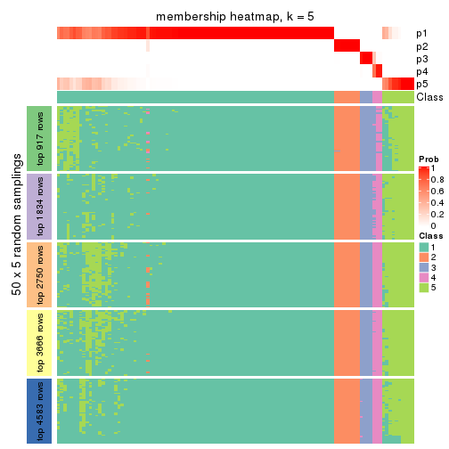
membership_heatmap(res, k = 6)
As soon as we have had the classes for columns, we can look for signatures which are significantly different between classes which can be candidate marks for certain classes. Following are the heatmaps for signatures.
Signature heatmaps where rows are scaled:
get_signatures(res, k = 2)
get_signatures(res, k = 3)
get_signatures(res, k = 4)
get_signatures(res, k = 5)
get_signatures(res, k = 6)
Signature heatmaps where rows are not scaled:
get_signatures(res, k = 2, scale_rows = FALSE)
get_signatures(res, k = 3, scale_rows = FALSE)
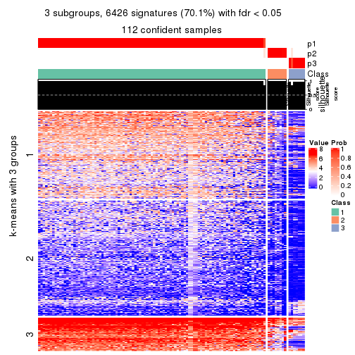
get_signatures(res, k = 4, scale_rows = FALSE)
get_signatures(res, k = 5, scale_rows = FALSE)
get_signatures(res, k = 6, scale_rows = FALSE)
Compare the overlap of signatures from different k:
compare_signatures(res)
get_signature() returns a data frame invisibly. TO get the list of signatures, the function
call should be assigned to a variable explicitly. In following code, if plot argument is set
to FALSE, no heatmap is plotted while only the differential analysis is performed.
# code only for demonstration
tb = get_signature(res, k = ..., plot = FALSE)
An example of the output of tb is:
#> which_row fdr mean_1 mean_2 scaled_mean_1 scaled_mean_2 km
#> 1 38 0.042760348 8.373488 9.131774 -0.5533452 0.5164555 1
#> 2 40 0.018707592 7.106213 8.469186 -0.6173731 0.5762149 1
#> 3 55 0.019134737 10.221463 11.207825 -0.6159697 0.5749050 1
#> 4 59 0.006059896 5.921854 7.869574 -0.6899429 0.6439467 1
#> 5 60 0.018055526 8.928898 10.211722 -0.6204761 0.5791110 1
#> 6 98 0.009384629 15.714769 14.887706 0.6635654 -0.6193277 2
...
The columns in tb are:
which_row: row indices corresponding to the input matrix.fdr: FDR for the differential test. mean_x: The mean value in group x.scaled_mean_x: The mean value in group x after rows are scaled.km: Row groups if k-means clustering is applied to rows.UMAP plot which shows how samples are separated.
dimension_reduction(res, k = 2, method = "UMAP")
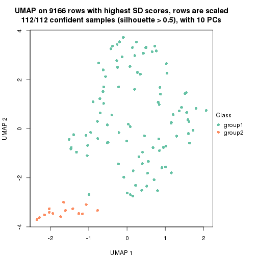
dimension_reduction(res, k = 3, method = "UMAP")
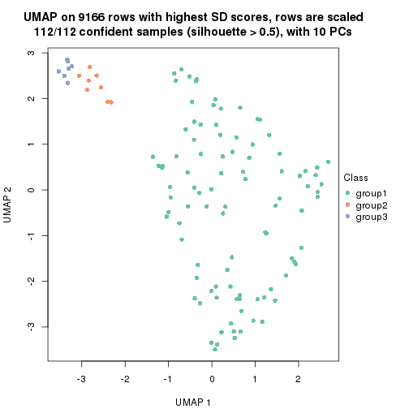
dimension_reduction(res, k = 4, method = "UMAP")
dimension_reduction(res, k = 5, method = "UMAP")
dimension_reduction(res, k = 6, method = "UMAP")
Following heatmap shows how subgroups are split when increasing k:
collect_classes(res)
If matrix rows can be associated to genes, consider to use GO_Enrichment(res,
...) to perform function enrichment for the signature genes.
The object with results only for a single top-value method and a single partition method can be extracted as:
res = res_list["SD", "mclust"]
# you can also extract it by
# res = res_list["SD:mclust"]
A summary of res and all the functions that can be applied to it:
res
#> A 'ConsensusPartition' object with k = 2, 3, 4, 5, 6.
#> On a matrix with 9166 rows and 112 columns.
#> Top rows (917, 1834, 2750, 3666, 4583) are extracted by 'SD' method.
#> Subgroups are detected by 'mclust' method.
#> Performed in total 1250 partitions by row resampling.
#> Best k for subgroups seems to be 3.
#>
#> Following methods can be applied to this 'ConsensusPartition' object:
#> [1] "cola_report" "collect_classes" "collect_plots"
#> [4] "collect_stats" "colnames" "compare_signatures"
#> [7] "consensus_heatmap" "dimension_reduction" "functional_enrichment"
#> [10] "get_anno_col" "get_anno" "get_classes"
#> [13] "get_consensus" "get_matrix" "get_membership"
#> [16] "get_param" "get_signatures" "get_stats"
#> [19] "is_best_k" "is_stable_k" "membership_heatmap"
#> [22] "ncol" "nrow" "plot_ecdf"
#> [25] "rownames" "select_partition_number" "show"
#> [28] "suggest_best_k" "test_to_known_factors"
collect_plots() function collects all the plots made from res for all k (number of partitions)
into one single page to provide an easy and fast comparison between different k.
collect_plots(res)
The plots are:
k and the heatmap of
predicted classes for each k.k.k.k.All the plots in panels can be made by individual functions and they are plotted later in this section.
select_partition_number() produces several plots showing different
statistics for choosing “optimized” k. There are following statistics:
k;k, the area increased is defined as \(A_k - A_{k-1}\).The detailed explanations of these statistics can be found in the cola vignette.
Generally speaking, lower PAC score, higher mean silhouette score or higher
concordance corresponds to better partition. Rand index and Jaccard index
measure how similar the current partition is compared to partition with k-1.
If they are too similar, we won't accept k is better than k-1.
select_partition_number(res)
The numeric values for all these statistics can be obtained by get_stats().
get_stats(res)
#> k 1-PAC mean_silhouette concordance area_increased Rand Jaccard
#> 2 2 0.890 0.934 0.972 0.3853 0.622 0.622
#> 3 3 0.503 0.777 0.861 0.5803 0.732 0.569
#> 4 4 0.349 0.584 0.705 0.0492 0.964 0.904
#> 5 5 0.438 0.597 0.676 0.1127 0.814 0.546
#> 6 6 0.517 0.621 0.740 0.0648 0.905 0.681
suggest_best_k() suggests the best \(k\) based on these statistics. The rules are as follows:
NA.suggest_best_k(res)
#> [1] 3
Following shows the table of the partitions (You need to click the show/hide
code output link to see it). The membership matrix (columns with name p*)
is inferred by
clue::cl_consensus()
function with the SE method. Basically the value in the membership matrix
represents the probability to belong to a certain group. The finall class
label for an item is determined with the group with highest probability it
belongs to.
In get_classes() function, the entropy is calculated from the membership
matrix and the silhouette score is calculated from the consensus matrix.
cbind(get_classes(res, k = 2), get_membership(res, k = 2))
#> class entropy silhouette p1 p2
#> SRR1003755 2 0.6712 0.791 0.176 0.824
#> SRR1003756 2 0.6712 0.791 0.176 0.824
#> SRR1003757 2 0.8955 0.575 0.312 0.688
#> SRR1003758 2 0.8955 0.575 0.312 0.688
#> SRR1003759 1 0.8081 0.670 0.752 0.248
#> SRR1003760 2 0.0000 0.956 0.000 1.000
#> SRR1003761 2 0.0000 0.956 0.000 1.000
#> SRR1003762 2 0.0000 0.956 0.000 1.000
#> SRR1003763 2 0.0000 0.956 0.000 1.000
#> SRR1003764 2 0.0000 0.956 0.000 1.000
#> SRR1003765 2 0.0000 0.956 0.000 1.000
#> SRR1003766 2 0.0000 0.956 0.000 1.000
#> SRR1003767 2 0.0000 0.956 0.000 1.000
#> SRR1003768 2 0.0000 0.956 0.000 1.000
#> SRR1003769 2 0.0000 0.956 0.000 1.000
#> SRR1003770 2 0.0000 0.956 0.000 1.000
#> SRR1003771 2 0.0000 0.956 0.000 1.000
#> SRR1003773 2 0.0000 0.956 0.000 1.000
#> SRR1003772 1 0.0000 0.974 1.000 0.000
#> SRR1003774 1 0.0000 0.974 1.000 0.000
#> SRR1003775 1 0.0000 0.974 1.000 0.000
#> SRR1003776 1 0.0000 0.974 1.000 0.000
#> SRR1003777 1 0.0000 0.974 1.000 0.000
#> SRR1003778 2 0.0000 0.956 0.000 1.000
#> SRR1003779 1 0.0000 0.974 1.000 0.000
#> SRR1003780 2 0.0000 0.956 0.000 1.000
#> SRR1003781 1 0.0000 0.974 1.000 0.000
#> SRR1003784 1 0.9323 0.462 0.652 0.348
#> SRR1003785 2 0.0000 0.956 0.000 1.000
#> SRR1003786 1 0.0000 0.974 1.000 0.000
#> SRR1003783 1 0.0000 0.974 1.000 0.000
#> SRR1003787 1 0.0000 0.974 1.000 0.000
#> SRR1003788 1 0.0000 0.974 1.000 0.000
#> SRR1003789 2 0.0000 0.956 0.000 1.000
#> SRR1003790 1 0.0000 0.974 1.000 0.000
#> SRR1003791 1 0.0376 0.971 0.996 0.004
#> SRR1003792 1 0.0000 0.974 1.000 0.000
#> SRR1003793 1 0.0000 0.974 1.000 0.000
#> SRR1003794 1 0.0000 0.974 1.000 0.000
#> SRR1003795 2 0.0672 0.950 0.008 0.992
#> SRR1003796 2 0.0000 0.956 0.000 1.000
#> SRR1003797 1 0.0000 0.974 1.000 0.000
#> SRR1003798 1 0.0000 0.974 1.000 0.000
#> SRR1003799 1 0.0000 0.974 1.000 0.000
#> SRR1003800 1 0.0000 0.974 1.000 0.000
#> SRR1003801 1 0.0000 0.974 1.000 0.000
#> SRR1003802 1 0.1414 0.957 0.980 0.020
#> SRR1003803 1 0.0000 0.974 1.000 0.000
#> SRR1003804 1 0.0000 0.974 1.000 0.000
#> SRR1003805 1 0.0000 0.974 1.000 0.000
#> SRR1003806 1 0.0000 0.974 1.000 0.000
#> SRR1003807 1 0.0000 0.974 1.000 0.000
#> SRR1003809 1 0.0938 0.964 0.988 0.012
#> SRR1003808 1 0.7815 0.700 0.768 0.232
#> SRR1003810 1 0.0000 0.974 1.000 0.000
#> SRR1003811 1 0.0000 0.974 1.000 0.000
#> SRR1003812 1 0.0000 0.974 1.000 0.000
#> SRR1003813 2 0.0000 0.956 0.000 1.000
#> SRR1003814 1 0.0000 0.974 1.000 0.000
#> SRR1003815 1 0.0000 0.974 1.000 0.000
#> SRR1003816 1 0.0000 0.974 1.000 0.000
#> SRR1003817 1 0.0000 0.974 1.000 0.000
#> SRR1003818 1 0.0000 0.974 1.000 0.000
#> SRR1003819 1 0.0000 0.974 1.000 0.000
#> SRR1003820 1 0.0000 0.974 1.000 0.000
#> SRR1003821 1 0.0000 0.974 1.000 0.000
#> SRR1003822 1 0.6438 0.797 0.836 0.164
#> SRR1003824 1 0.0000 0.974 1.000 0.000
#> SRR1003823 1 0.0000 0.974 1.000 0.000
#> SRR1003825 1 0.0000 0.974 1.000 0.000
#> SRR1003826 1 0.0000 0.974 1.000 0.000
#> SRR1003827 1 0.0000 0.974 1.000 0.000
#> SRR1003828 1 0.0000 0.974 1.000 0.000
#> SRR1003829 1 0.0000 0.974 1.000 0.000
#> SRR1003830 1 0.0000 0.974 1.000 0.000
#> SRR1003831 1 0.0000 0.974 1.000 0.000
#> SRR1003832 1 0.0000 0.974 1.000 0.000
#> SRR1003833 1 0.0000 0.974 1.000 0.000
#> SRR1003834 1 0.0000 0.974 1.000 0.000
#> SRR1003836 1 0.0000 0.974 1.000 0.000
#> SRR1003835 1 0.0000 0.974 1.000 0.000
#> SRR1003838 2 0.0000 0.956 0.000 1.000
#> SRR1003837 1 0.0000 0.974 1.000 0.000
#> SRR1003839 1 0.0000 0.974 1.000 0.000
#> SRR1003840 1 0.1184 0.961 0.984 0.016
#> SRR1003841 2 0.0000 0.956 0.000 1.000
#> SRR1003842 1 0.0000 0.974 1.000 0.000
#> SRR1003844 1 0.0000 0.974 1.000 0.000
#> SRR1003845 1 0.0376 0.971 0.996 0.004
#> SRR1003846 1 0.0000 0.974 1.000 0.000
#> SRR1003847 1 0.0000 0.974 1.000 0.000
#> SRR1003848 1 0.9922 0.163 0.552 0.448
#> SRR1003849 2 0.0000 0.956 0.000 1.000
#> SRR1003850 1 0.0000 0.974 1.000 0.000
#> SRR1003851 2 0.6148 0.820 0.152 0.848
#> SRR1003852 1 0.0000 0.974 1.000 0.000
#> SRR1003853 1 0.0000 0.974 1.000 0.000
#> SRR1003854 1 0.0000 0.974 1.000 0.000
#> SRR1003843 1 0.3584 0.912 0.932 0.068
#> SRR1003855 1 0.0000 0.974 1.000 0.000
#> SRR1003856 1 0.8327 0.641 0.736 0.264
#> SRR1003857 1 0.0000 0.974 1.000 0.000
#> SRR1003858 1 0.0000 0.974 1.000 0.000
#> SRR1003859 1 0.0000 0.974 1.000 0.000
#> SRR1003860 1 0.0000 0.974 1.000 0.000
#> SRR1003861 1 0.0000 0.974 1.000 0.000
#> SRR1003862 1 0.0000 0.974 1.000 0.000
#> SRR1003863 1 0.0000 0.974 1.000 0.000
#> SRR1003864 1 0.0000 0.974 1.000 0.000
#> SRR1003865 1 0.7376 0.735 0.792 0.208
#> SRR1003866 1 0.0000 0.974 1.000 0.000
#> SRR1003867 1 0.0000 0.974 1.000 0.000
cbind(get_classes(res, k = 3), get_membership(res, k = 3))
#> class entropy silhouette p1 p2 p3
#> SRR1003755 2 0.6031 0.7752 0.096 0.788 0.116
#> SRR1003756 2 0.6037 0.7728 0.100 0.788 0.112
#> SRR1003757 2 0.7979 0.5923 0.100 0.628 0.272
#> SRR1003758 2 0.7979 0.5923 0.100 0.628 0.272
#> SRR1003759 3 0.3610 0.8434 0.096 0.016 0.888
#> SRR1003760 2 0.0592 0.8726 0.000 0.988 0.012
#> SRR1003761 2 0.0592 0.8726 0.000 0.988 0.012
#> SRR1003762 2 0.0000 0.8733 0.000 1.000 0.000
#> SRR1003763 2 0.0000 0.8733 0.000 1.000 0.000
#> SRR1003764 2 0.0000 0.8733 0.000 1.000 0.000
#> SRR1003765 2 0.1289 0.8697 0.000 0.968 0.032
#> SRR1003766 2 0.1289 0.8697 0.000 0.968 0.032
#> SRR1003767 2 0.1289 0.8697 0.000 0.968 0.032
#> SRR1003768 2 0.1289 0.8697 0.000 0.968 0.032
#> SRR1003769 2 0.1289 0.8697 0.000 0.968 0.032
#> SRR1003770 2 0.1289 0.8697 0.000 0.968 0.032
#> SRR1003771 2 0.1289 0.8697 0.000 0.968 0.032
#> SRR1003773 2 0.3995 0.8471 0.016 0.868 0.116
#> SRR1003772 1 0.0000 0.8743 1.000 0.000 0.000
#> SRR1003774 1 0.6295 -0.1422 0.528 0.000 0.472
#> SRR1003775 1 0.0592 0.8746 0.988 0.000 0.012
#> SRR1003776 1 0.2537 0.8492 0.920 0.000 0.080
#> SRR1003777 1 0.0237 0.8755 0.996 0.000 0.004
#> SRR1003778 2 0.3995 0.8471 0.016 0.868 0.116
#> SRR1003779 1 0.0592 0.8746 0.988 0.000 0.012
#> SRR1003780 2 0.0000 0.8733 0.000 1.000 0.000
#> SRR1003781 3 0.3551 0.8612 0.132 0.000 0.868
#> SRR1003784 3 0.5004 0.7988 0.088 0.072 0.840
#> SRR1003785 2 0.6407 0.7351 0.028 0.700 0.272
#> SRR1003786 1 0.0592 0.8747 0.988 0.000 0.012
#> SRR1003783 1 0.0000 0.8743 1.000 0.000 0.000
#> SRR1003787 1 0.3038 0.8302 0.896 0.000 0.104
#> SRR1003788 3 0.5016 0.8231 0.240 0.000 0.760
#> SRR1003789 2 0.0000 0.8733 0.000 1.000 0.000
#> SRR1003790 1 0.0747 0.8735 0.984 0.000 0.016
#> SRR1003791 3 0.3412 0.8621 0.124 0.000 0.876
#> SRR1003792 1 0.2878 0.8381 0.904 0.000 0.096
#> SRR1003793 1 0.1289 0.8733 0.968 0.000 0.032
#> SRR1003794 1 0.0747 0.8697 0.984 0.000 0.016
#> SRR1003795 2 0.6487 0.7459 0.032 0.700 0.268
#> SRR1003796 2 0.3995 0.8471 0.016 0.868 0.116
#> SRR1003797 1 0.0237 0.8750 0.996 0.000 0.004
#> SRR1003798 1 0.4796 0.7102 0.780 0.000 0.220
#> SRR1003799 1 0.2165 0.8600 0.936 0.000 0.064
#> SRR1003800 3 0.5621 0.7372 0.308 0.000 0.692
#> SRR1003801 3 0.5785 0.7125 0.332 0.000 0.668
#> SRR1003802 3 0.3267 0.8581 0.116 0.000 0.884
#> SRR1003803 1 0.2711 0.8532 0.912 0.000 0.088
#> SRR1003804 3 0.6045 0.6191 0.380 0.000 0.620
#> SRR1003805 1 0.0747 0.8697 0.984 0.000 0.016
#> SRR1003806 1 0.2261 0.8648 0.932 0.000 0.068
#> SRR1003807 3 0.3482 0.8606 0.128 0.000 0.872
#> SRR1003809 3 0.4233 0.8592 0.160 0.004 0.836
#> SRR1003808 3 0.3850 0.8309 0.088 0.028 0.884
#> SRR1003810 3 0.5810 0.7075 0.336 0.000 0.664
#> SRR1003811 3 0.4842 0.8342 0.224 0.000 0.776
#> SRR1003812 1 0.1031 0.8729 0.976 0.000 0.024
#> SRR1003813 2 0.6954 0.6088 0.028 0.620 0.352
#> SRR1003814 3 0.3686 0.8630 0.140 0.000 0.860
#> SRR1003815 3 0.5363 0.7889 0.276 0.000 0.724
#> SRR1003816 1 0.0000 0.8743 1.000 0.000 0.000
#> SRR1003817 1 0.0237 0.8742 0.996 0.000 0.004
#> SRR1003818 3 0.6308 0.2962 0.492 0.000 0.508
#> SRR1003819 3 0.3619 0.8626 0.136 0.000 0.864
#> SRR1003820 1 0.0424 0.8751 0.992 0.000 0.008
#> SRR1003821 1 0.0237 0.8750 0.996 0.000 0.004
#> SRR1003822 3 0.4628 0.8148 0.088 0.056 0.856
#> SRR1003824 3 0.5291 0.7987 0.268 0.000 0.732
#> SRR1003823 1 0.1031 0.8723 0.976 0.000 0.024
#> SRR1003825 3 0.5397 0.7853 0.280 0.000 0.720
#> SRR1003826 1 0.3686 0.7934 0.860 0.000 0.140
#> SRR1003827 1 0.0237 0.8748 0.996 0.000 0.004
#> SRR1003828 1 0.6295 -0.0799 0.528 0.000 0.472
#> SRR1003829 1 0.0747 0.8753 0.984 0.000 0.016
#> SRR1003830 1 0.0747 0.8697 0.984 0.000 0.016
#> SRR1003831 1 0.4452 0.7343 0.808 0.000 0.192
#> SRR1003832 1 0.1643 0.8724 0.956 0.000 0.044
#> SRR1003833 1 0.4842 0.6834 0.776 0.000 0.224
#> SRR1003834 1 0.5785 0.4371 0.668 0.000 0.332
#> SRR1003836 3 0.4504 0.8486 0.196 0.000 0.804
#> SRR1003835 3 0.5733 0.7064 0.324 0.000 0.676
#> SRR1003838 2 0.6441 0.7307 0.028 0.696 0.276
#> SRR1003837 1 0.2537 0.8497 0.920 0.000 0.080
#> SRR1003839 1 0.6274 -0.0773 0.544 0.000 0.456
#> SRR1003840 3 0.3482 0.8613 0.128 0.000 0.872
#> SRR1003841 2 0.0000 0.8733 0.000 1.000 0.000
#> SRR1003842 1 0.0747 0.8697 0.984 0.000 0.016
#> SRR1003844 1 0.0237 0.8742 0.996 0.000 0.004
#> SRR1003845 3 0.3482 0.8613 0.128 0.000 0.872
#> SRR1003846 1 0.0424 0.8730 0.992 0.000 0.008
#> SRR1003847 1 0.6260 -0.0170 0.552 0.000 0.448
#> SRR1003848 3 0.4357 0.8112 0.080 0.052 0.868
#> SRR1003849 2 0.5772 0.7798 0.024 0.756 0.220
#> SRR1003850 3 0.6062 0.5984 0.384 0.000 0.616
#> SRR1003851 2 0.7366 0.4496 0.032 0.524 0.444
#> SRR1003852 3 0.3412 0.8610 0.124 0.000 0.876
#> SRR1003853 1 0.4887 0.6926 0.772 0.000 0.228
#> SRR1003854 1 0.1643 0.8665 0.956 0.000 0.044
#> SRR1003843 3 0.3129 0.8355 0.088 0.008 0.904
#> SRR1003855 1 0.3619 0.8071 0.864 0.000 0.136
#> SRR1003856 3 0.3966 0.8446 0.100 0.024 0.876
#> SRR1003857 1 0.1529 0.8697 0.960 0.000 0.040
#> SRR1003858 1 0.2959 0.8361 0.900 0.000 0.100
#> SRR1003859 1 0.1411 0.8739 0.964 0.000 0.036
#> SRR1003860 1 0.1411 0.8739 0.964 0.000 0.036
#> SRR1003861 1 0.3686 0.8006 0.860 0.000 0.140
#> SRR1003862 1 0.0237 0.8737 0.996 0.000 0.004
#> SRR1003863 3 0.4796 0.8349 0.220 0.000 0.780
#> SRR1003864 1 0.0000 0.8743 1.000 0.000 0.000
#> SRR1003865 3 0.3461 0.8259 0.076 0.024 0.900
#> SRR1003866 1 0.5988 0.2943 0.632 0.000 0.368
#> SRR1003867 1 0.4399 0.7317 0.812 0.000 0.188
cbind(get_classes(res, k = 4), get_membership(res, k = 4))
#> class entropy silhouette p1 p2 p3 p4
#> SRR1003755 2 0.6310 0.6211 0.068 0.724 0.140 NA
#> SRR1003756 2 0.6329 0.6227 0.068 0.724 0.136 NA
#> SRR1003757 2 0.8236 0.2335 0.096 0.476 0.352 NA
#> SRR1003758 2 0.8252 0.2460 0.088 0.472 0.356 NA
#> SRR1003759 3 0.6926 0.4584 0.048 0.032 0.528 NA
#> SRR1003760 2 0.2466 0.7348 0.000 0.900 0.004 NA
#> SRR1003761 2 0.2737 0.7325 0.000 0.888 0.008 NA
#> SRR1003762 2 0.0188 0.7485 0.000 0.996 0.000 NA
#> SRR1003763 2 0.0592 0.7479 0.000 0.984 0.000 NA
#> SRR1003764 2 0.0469 0.7481 0.000 0.988 0.000 NA
#> SRR1003765 2 0.4164 0.7184 0.000 0.736 0.000 NA
#> SRR1003766 2 0.4164 0.7184 0.000 0.736 0.000 NA
#> SRR1003767 2 0.4164 0.7184 0.000 0.736 0.000 NA
#> SRR1003768 2 0.4164 0.7184 0.000 0.736 0.000 NA
#> SRR1003769 2 0.4164 0.7184 0.000 0.736 0.000 NA
#> SRR1003770 2 0.4164 0.7184 0.000 0.736 0.000 NA
#> SRR1003771 2 0.4164 0.7184 0.000 0.736 0.000 NA
#> SRR1003773 2 0.8347 0.4367 0.040 0.484 0.276 NA
#> SRR1003772 1 0.2214 0.7804 0.928 0.000 0.028 NA
#> SRR1003774 1 0.5143 0.2797 0.540 0.000 0.456 NA
#> SRR1003775 1 0.1284 0.7818 0.964 0.000 0.024 NA
#> SRR1003776 1 0.3528 0.7443 0.808 0.000 0.192 NA
#> SRR1003777 1 0.2411 0.7865 0.920 0.000 0.040 NA
#> SRR1003778 2 0.8347 0.4367 0.040 0.484 0.276 NA
#> SRR1003779 1 0.2500 0.7835 0.916 0.000 0.044 NA
#> SRR1003780 2 0.0000 0.7483 0.000 1.000 0.000 NA
#> SRR1003781 3 0.7265 0.5651 0.140 0.004 0.512 NA
#> SRR1003784 3 0.7376 0.4913 0.120 0.060 0.636 NA
#> SRR1003785 3 0.8841 -0.2316 0.060 0.352 0.388 NA
#> SRR1003786 1 0.1284 0.7882 0.964 0.000 0.024 NA
#> SRR1003783 1 0.2214 0.7804 0.928 0.000 0.028 NA
#> SRR1003787 1 0.5631 0.6732 0.700 0.000 0.224 NA
#> SRR1003788 3 0.4837 0.4021 0.348 0.004 0.648 NA
#> SRR1003789 2 0.0188 0.7485 0.000 0.996 0.000 NA
#> SRR1003790 1 0.1411 0.7814 0.960 0.000 0.020 NA
#> SRR1003791 3 0.6829 0.6068 0.136 0.004 0.604 NA
#> SRR1003792 1 0.5690 0.7033 0.716 0.000 0.168 NA
#> SRR1003793 1 0.2197 0.7830 0.928 0.000 0.048 NA
#> SRR1003794 1 0.2060 0.7891 0.932 0.000 0.052 NA
#> SRR1003795 2 0.9213 0.2411 0.096 0.404 0.292 NA
#> SRR1003796 2 0.8295 0.4441 0.040 0.492 0.276 NA
#> SRR1003797 1 0.2844 0.7871 0.900 0.000 0.052 NA
#> SRR1003798 1 0.5389 0.5491 0.660 0.000 0.308 NA
#> SRR1003799 1 0.4546 0.6757 0.732 0.000 0.256 NA
#> SRR1003800 3 0.5947 0.3543 0.384 0.000 0.572 NA
#> SRR1003801 3 0.4950 0.3169 0.376 0.000 0.620 NA
#> SRR1003802 3 0.6752 0.5699 0.160 0.012 0.648 NA
#> SRR1003803 1 0.4197 0.7517 0.808 0.000 0.156 NA
#> SRR1003804 3 0.5971 0.2429 0.428 0.000 0.532 NA
#> SRR1003805 1 0.1042 0.7736 0.972 0.000 0.008 NA
#> SRR1003806 1 0.4387 0.7122 0.776 0.000 0.200 NA
#> SRR1003807 3 0.6179 0.5441 0.276 0.004 0.644 NA
#> SRR1003809 3 0.5434 0.5993 0.188 0.000 0.728 NA
#> SRR1003808 3 0.6815 0.4542 0.056 0.020 0.524 NA
#> SRR1003810 3 0.5070 0.3363 0.372 0.000 0.620 NA
#> SRR1003811 3 0.4098 0.5910 0.204 0.000 0.784 NA
#> SRR1003812 1 0.2861 0.7849 0.888 0.000 0.096 NA
#> SRR1003813 3 0.8776 -0.1469 0.060 0.320 0.424 NA
#> SRR1003814 3 0.7385 0.5416 0.196 0.000 0.508 NA
#> SRR1003815 3 0.4387 0.5711 0.236 0.000 0.752 NA
#> SRR1003816 1 0.2124 0.7812 0.932 0.000 0.028 NA
#> SRR1003817 1 0.0937 0.7811 0.976 0.000 0.012 NA
#> SRR1003818 3 0.6555 0.1473 0.444 0.000 0.480 NA
#> SRR1003819 3 0.7048 0.5872 0.184 0.004 0.592 NA
#> SRR1003820 1 0.3009 0.7869 0.892 0.000 0.052 NA
#> SRR1003821 1 0.1624 0.7876 0.952 0.000 0.028 NA
#> SRR1003822 3 0.7123 0.5160 0.120 0.052 0.656 NA
#> SRR1003824 3 0.4635 0.5350 0.268 0.000 0.720 NA
#> SRR1003823 1 0.1520 0.7776 0.956 0.000 0.020 NA
#> SRR1003825 3 0.5203 0.4100 0.348 0.000 0.636 NA
#> SRR1003826 1 0.5998 0.6294 0.684 0.000 0.200 NA
#> SRR1003827 1 0.2408 0.7826 0.920 0.000 0.036 NA
#> SRR1003828 1 0.5691 0.3059 0.564 0.000 0.408 NA
#> SRR1003829 1 0.2586 0.7813 0.912 0.000 0.040 NA
#> SRR1003830 1 0.1004 0.7716 0.972 0.000 0.004 NA
#> SRR1003831 1 0.4605 0.5889 0.664 0.000 0.336 NA
#> SRR1003832 1 0.2949 0.7776 0.888 0.000 0.088 NA
#> SRR1003833 1 0.5313 0.5001 0.608 0.000 0.376 NA
#> SRR1003834 1 0.5203 0.4020 0.576 0.000 0.416 NA
#> SRR1003836 3 0.4891 0.4691 0.308 0.000 0.680 NA
#> SRR1003835 3 0.5888 0.2176 0.424 0.000 0.540 NA
#> SRR1003838 3 0.8891 -0.2195 0.064 0.348 0.388 NA
#> SRR1003837 1 0.4328 0.7030 0.748 0.000 0.244 NA
#> SRR1003839 1 0.5300 0.4130 0.580 0.000 0.408 NA
#> SRR1003840 3 0.6663 0.5505 0.088 0.008 0.596 NA
#> SRR1003841 2 0.0469 0.7485 0.000 0.988 0.000 NA
#> SRR1003842 1 0.0657 0.7735 0.984 0.000 0.004 NA
#> SRR1003844 1 0.1388 0.7913 0.960 0.000 0.028 NA
#> SRR1003845 3 0.6644 0.5989 0.124 0.004 0.624 NA
#> SRR1003846 1 0.1297 0.7791 0.964 0.000 0.016 NA
#> SRR1003847 1 0.5894 0.3412 0.568 0.000 0.392 NA
#> SRR1003848 3 0.7105 0.5213 0.120 0.060 0.664 NA
#> SRR1003849 2 0.8613 0.3038 0.044 0.396 0.360 NA
#> SRR1003850 3 0.5686 0.3954 0.376 0.000 0.592 NA
#> SRR1003851 3 0.8929 -0.0026 0.080 0.260 0.452 NA
#> SRR1003852 3 0.6946 0.5746 0.120 0.004 0.564 NA
#> SRR1003853 1 0.5108 0.6258 0.672 0.000 0.308 NA
#> SRR1003854 1 0.3166 0.7759 0.868 0.000 0.116 NA
#> SRR1003843 3 0.7043 0.5873 0.124 0.012 0.592 NA
#> SRR1003855 1 0.4713 0.5675 0.640 0.000 0.360 NA
#> SRR1003856 3 0.6563 0.5585 0.124 0.036 0.696 NA
#> SRR1003857 1 0.3853 0.7639 0.820 0.000 0.160 NA
#> SRR1003858 1 0.4103 0.6927 0.744 0.000 0.256 NA
#> SRR1003859 1 0.2546 0.7822 0.912 0.000 0.060 NA
#> SRR1003860 1 0.2443 0.7822 0.916 0.000 0.060 NA
#> SRR1003861 1 0.4477 0.6320 0.688 0.000 0.312 NA
#> SRR1003862 1 0.0937 0.7800 0.976 0.000 0.012 NA
#> SRR1003863 3 0.4175 0.5966 0.200 0.000 0.784 NA
#> SRR1003864 1 0.2675 0.7867 0.908 0.000 0.048 NA
#> SRR1003865 3 0.6557 0.5861 0.104 0.024 0.676 NA
#> SRR1003866 1 0.7023 0.3904 0.544 0.000 0.312 NA
#> SRR1003867 1 0.5823 0.6385 0.704 0.000 0.176 NA
cbind(get_classes(res, k = 5), get_membership(res, k = 5))
#> class entropy silhouette p1 p2 p3 p4 p5
#> SRR1003755 2 0.6893 0.5296 0.060 0.620 0.172 0.128 0.020
#> SRR1003756 2 0.6885 0.5320 0.060 0.620 0.176 0.124 0.020
#> SRR1003757 2 0.8184 0.2742 0.072 0.464 0.204 0.228 0.032
#> SRR1003758 2 0.8184 0.2742 0.072 0.464 0.204 0.228 0.032
#> SRR1003759 4 0.7939 0.3901 0.064 0.016 0.240 0.456 0.224
#> SRR1003760 2 0.0960 0.7420 0.000 0.972 0.008 0.004 0.016
#> SRR1003761 2 0.1179 0.7396 0.000 0.964 0.016 0.004 0.016
#> SRR1003762 2 0.0609 0.7423 0.000 0.980 0.000 0.000 0.020
#> SRR1003763 2 0.0162 0.7480 0.000 0.996 0.000 0.000 0.004
#> SRR1003764 2 0.0290 0.7478 0.000 0.992 0.000 0.000 0.008
#> SRR1003765 5 0.3684 0.9990 0.000 0.280 0.000 0.000 0.720
#> SRR1003766 5 0.3684 0.9990 0.000 0.280 0.000 0.000 0.720
#> SRR1003767 5 0.3707 0.9943 0.000 0.284 0.000 0.000 0.716
#> SRR1003768 5 0.3684 0.9990 0.000 0.280 0.000 0.000 0.720
#> SRR1003769 5 0.3684 0.9990 0.000 0.280 0.000 0.000 0.720
#> SRR1003770 5 0.3684 0.9990 0.000 0.280 0.000 0.000 0.720
#> SRR1003771 5 0.3684 0.9990 0.000 0.280 0.000 0.000 0.720
#> SRR1003773 3 0.4387 0.5439 0.000 0.348 0.640 0.012 0.000
#> SRR1003772 1 0.2575 0.7703 0.904 0.000 0.044 0.016 0.036
#> SRR1003774 4 0.4929 0.4003 0.324 0.000 0.024 0.640 0.012
#> SRR1003775 1 0.2618 0.7810 0.900 0.000 0.012 0.052 0.036
#> SRR1003776 1 0.4442 0.5843 0.676 0.000 0.016 0.304 0.004
#> SRR1003777 1 0.3149 0.7744 0.872 0.000 0.036 0.020 0.072
#> SRR1003778 3 0.4402 0.5381 0.000 0.352 0.636 0.012 0.000
#> SRR1003779 1 0.3204 0.7816 0.872 0.000 0.032 0.064 0.032
#> SRR1003780 2 0.0609 0.7423 0.000 0.980 0.000 0.000 0.020
#> SRR1003781 4 0.7568 0.4673 0.092 0.000 0.200 0.496 0.212
#> SRR1003784 3 0.5088 0.6147 0.008 0.040 0.664 0.284 0.004
#> SRR1003785 3 0.5030 0.6847 0.004 0.236 0.688 0.072 0.000
#> SRR1003786 1 0.2270 0.7960 0.916 0.000 0.012 0.052 0.020
#> SRR1003783 1 0.2684 0.7733 0.900 0.000 0.044 0.024 0.032
#> SRR1003787 1 0.6645 0.5053 0.588 0.000 0.068 0.244 0.100
#> SRR1003788 4 0.4232 0.6071 0.172 0.004 0.044 0.776 0.004
#> SRR1003789 2 0.0290 0.7474 0.000 0.992 0.000 0.000 0.008
#> SRR1003790 1 0.2208 0.7842 0.908 0.000 0.020 0.072 0.000
#> SRR1003791 4 0.7410 0.4654 0.084 0.004 0.232 0.528 0.152
#> SRR1003792 1 0.6310 0.6162 0.632 0.000 0.052 0.200 0.116
#> SRR1003793 1 0.2110 0.7849 0.912 0.000 0.016 0.072 0.000
#> SRR1003794 1 0.2722 0.7801 0.872 0.000 0.020 0.108 0.000
#> SRR1003795 3 0.5588 0.5556 0.024 0.296 0.632 0.044 0.004
#> SRR1003796 3 0.4402 0.5381 0.000 0.352 0.636 0.012 0.000
#> SRR1003797 1 0.3792 0.7829 0.840 0.000 0.056 0.068 0.036
#> SRR1003798 4 0.5594 0.2141 0.432 0.000 0.040 0.512 0.016
#> SRR1003799 1 0.5256 0.2008 0.540 0.000 0.032 0.420 0.008
#> SRR1003800 4 0.5171 0.5799 0.216 0.000 0.076 0.696 0.012
#> SRR1003801 4 0.3965 0.5938 0.180 0.000 0.028 0.784 0.008
#> SRR1003802 3 0.6054 0.2785 0.048 0.024 0.540 0.380 0.008
#> SRR1003803 1 0.4378 0.7004 0.740 0.000 0.040 0.216 0.004
#> SRR1003804 4 0.4782 0.5675 0.236 0.000 0.048 0.708 0.008
#> SRR1003805 1 0.1106 0.7856 0.964 0.000 0.012 0.024 0.000
#> SRR1003806 1 0.5189 0.3334 0.584 0.000 0.028 0.376 0.012
#> SRR1003807 4 0.5292 0.5756 0.124 0.008 0.132 0.724 0.012
#> SRR1003809 4 0.5642 0.3283 0.064 0.000 0.312 0.608 0.016
#> SRR1003808 4 0.7832 0.3457 0.052 0.016 0.252 0.456 0.224
#> SRR1003810 4 0.4275 0.6127 0.148 0.000 0.056 0.784 0.012
#> SRR1003811 4 0.5594 0.4439 0.076 0.000 0.252 0.652 0.020
#> SRR1003812 1 0.3685 0.7585 0.824 0.000 0.028 0.132 0.016
#> SRR1003813 3 0.5301 0.6900 0.004 0.216 0.676 0.104 0.000
#> SRR1003814 4 0.7239 0.4957 0.092 0.000 0.164 0.548 0.196
#> SRR1003815 4 0.5737 0.5037 0.092 0.000 0.196 0.676 0.036
#> SRR1003816 1 0.2575 0.7703 0.904 0.000 0.044 0.016 0.036
#> SRR1003817 1 0.0727 0.7802 0.980 0.000 0.004 0.004 0.012
#> SRR1003818 4 0.7899 0.3510 0.344 0.000 0.096 0.376 0.184
#> SRR1003819 4 0.7212 0.5182 0.088 0.008 0.184 0.576 0.144
#> SRR1003820 1 0.4310 0.7649 0.808 0.000 0.052 0.052 0.088
#> SRR1003821 1 0.1904 0.7893 0.936 0.000 0.020 0.028 0.016
#> SRR1003822 3 0.5187 0.5896 0.008 0.040 0.644 0.304 0.004
#> SRR1003824 4 0.5623 0.5072 0.104 0.000 0.204 0.672 0.020
#> SRR1003823 1 0.1493 0.7882 0.948 0.000 0.024 0.028 0.000
#> SRR1003825 4 0.4715 0.6163 0.164 0.000 0.056 0.756 0.024
#> SRR1003826 1 0.6495 0.4969 0.600 0.000 0.040 0.216 0.144
#> SRR1003827 1 0.3706 0.7811 0.844 0.000 0.040 0.076 0.040
#> SRR1003828 4 0.5248 0.3899 0.348 0.000 0.036 0.604 0.012
#> SRR1003829 1 0.3388 0.7755 0.860 0.000 0.020 0.064 0.056
#> SRR1003830 1 0.1012 0.7831 0.968 0.000 0.012 0.020 0.000
#> SRR1003831 4 0.5052 0.0785 0.436 0.000 0.020 0.536 0.008
#> SRR1003832 1 0.3399 0.7365 0.812 0.000 0.020 0.168 0.000
#> SRR1003833 4 0.4997 0.1916 0.404 0.000 0.020 0.568 0.008
#> SRR1003834 4 0.5056 0.3735 0.336 0.000 0.040 0.620 0.004
#> SRR1003836 4 0.4473 0.6146 0.148 0.000 0.076 0.768 0.008
#> SRR1003835 4 0.5599 0.5524 0.256 0.004 0.048 0.660 0.032
#> SRR1003838 3 0.4976 0.6878 0.004 0.228 0.696 0.072 0.000
#> SRR1003837 1 0.4810 0.5553 0.652 0.000 0.012 0.316 0.020
#> SRR1003839 4 0.5012 0.2927 0.368 0.000 0.016 0.600 0.016
#> SRR1003840 4 0.7608 0.4271 0.068 0.008 0.228 0.500 0.196
#> SRR1003841 2 0.0451 0.7483 0.000 0.988 0.004 0.000 0.008
#> SRR1003842 1 0.0807 0.7823 0.976 0.000 0.012 0.012 0.000
#> SRR1003844 1 0.1869 0.7914 0.936 0.000 0.008 0.028 0.028
#> SRR1003845 4 0.7188 0.4621 0.076 0.000 0.224 0.540 0.160
#> SRR1003846 1 0.1267 0.7864 0.960 0.000 0.012 0.024 0.004
#> SRR1003847 4 0.6360 0.1902 0.432 0.000 0.040 0.464 0.064
#> SRR1003848 3 0.5575 0.6061 0.020 0.052 0.640 0.284 0.004
#> SRR1003849 3 0.4993 0.6724 0.004 0.248 0.684 0.064 0.000
#> SRR1003850 4 0.6570 0.5146 0.248 0.000 0.204 0.536 0.012
#> SRR1003851 3 0.5117 0.6919 0.008 0.172 0.712 0.108 0.000
#> SRR1003852 4 0.7864 0.4331 0.092 0.004 0.240 0.460 0.204
#> SRR1003853 1 0.5164 0.3531 0.572 0.000 0.016 0.392 0.020
#> SRR1003854 1 0.4290 0.7201 0.768 0.000 0.016 0.184 0.032
#> SRR1003843 4 0.7529 0.3914 0.056 0.020 0.272 0.512 0.140
#> SRR1003855 4 0.5020 0.1975 0.408 0.000 0.016 0.564 0.012
#> SRR1003856 3 0.5845 0.5081 0.032 0.040 0.612 0.308 0.008
#> SRR1003857 1 0.5203 0.6113 0.664 0.000 0.032 0.276 0.028
#> SRR1003858 1 0.4841 0.4310 0.600 0.000 0.016 0.376 0.008
#> SRR1003859 1 0.3370 0.7433 0.824 0.000 0.028 0.148 0.000
#> SRR1003860 1 0.3197 0.7541 0.836 0.000 0.024 0.140 0.000
#> SRR1003861 4 0.5071 0.0621 0.440 0.000 0.016 0.532 0.012
#> SRR1003862 1 0.0865 0.7862 0.972 0.000 0.000 0.024 0.004
#> SRR1003863 4 0.5731 0.4374 0.080 0.000 0.252 0.644 0.024
#> SRR1003864 1 0.3170 0.7815 0.876 0.000 0.048 0.040 0.036
#> SRR1003865 4 0.8237 0.3835 0.084 0.032 0.240 0.464 0.180
#> SRR1003866 1 0.7454 0.1366 0.440 0.000 0.064 0.332 0.164
#> SRR1003867 1 0.5724 0.5955 0.668 0.000 0.024 0.200 0.108
cbind(get_classes(res, k = 6), get_membership(res, k = 6))
#> class entropy silhouette p1 p2 p3 p4 p5 p6
#> SRR1003755 6 0.7857 -0.0658 0.072 0.004 0.352 0.124 0.080 0.368
#> SRR1003756 6 0.7857 -0.0658 0.072 0.004 0.352 0.124 0.080 0.368
#> SRR1003757 3 0.7553 0.2750 0.072 0.004 0.484 0.148 0.060 0.232
#> SRR1003758 3 0.7553 0.2750 0.072 0.004 0.484 0.148 0.060 0.232
#> SRR1003759 4 0.4459 0.7812 0.000 0.000 0.036 0.728 0.196 0.040
#> SRR1003760 6 0.2122 0.8276 0.000 0.084 0.008 0.008 0.000 0.900
#> SRR1003761 6 0.2169 0.8259 0.000 0.080 0.012 0.008 0.000 0.900
#> SRR1003762 6 0.1970 0.8331 0.000 0.092 0.008 0.000 0.000 0.900
#> SRR1003763 6 0.1970 0.8331 0.000 0.092 0.008 0.000 0.000 0.900
#> SRR1003764 6 0.1970 0.8331 0.000 0.092 0.008 0.000 0.000 0.900
#> SRR1003765 2 0.0547 0.9969 0.000 0.980 0.000 0.000 0.000 0.020
#> SRR1003766 2 0.0547 0.9969 0.000 0.980 0.000 0.000 0.000 0.020
#> SRR1003767 2 0.0790 0.9867 0.000 0.968 0.000 0.000 0.000 0.032
#> SRR1003768 2 0.0547 0.9969 0.000 0.980 0.000 0.000 0.000 0.020
#> SRR1003769 2 0.0547 0.9969 0.000 0.980 0.000 0.000 0.000 0.020
#> SRR1003770 2 0.0547 0.9969 0.000 0.980 0.000 0.000 0.000 0.020
#> SRR1003771 2 0.0632 0.9942 0.000 0.976 0.000 0.000 0.000 0.024
#> SRR1003773 3 0.3534 0.5302 0.000 0.000 0.716 0.008 0.000 0.276
#> SRR1003772 1 0.1973 0.7421 0.916 0.000 0.004 0.064 0.004 0.012
#> SRR1003774 5 0.3709 0.6363 0.204 0.000 0.000 0.040 0.756 0.000
#> SRR1003775 1 0.2788 0.7476 0.880 0.000 0.004 0.044 0.056 0.016
#> SRR1003776 1 0.4066 0.3911 0.596 0.000 0.000 0.012 0.392 0.000
#> SRR1003777 1 0.2420 0.7525 0.900 0.000 0.008 0.060 0.020 0.012
#> SRR1003778 3 0.3534 0.5302 0.000 0.000 0.716 0.008 0.000 0.276
#> SRR1003779 1 0.2716 0.7517 0.880 0.000 0.004 0.064 0.044 0.008
#> SRR1003780 6 0.1970 0.8324 0.000 0.092 0.008 0.000 0.000 0.900
#> SRR1003781 4 0.4822 0.7491 0.060 0.000 0.020 0.668 0.252 0.000
#> SRR1003784 3 0.4713 0.6416 0.000 0.020 0.724 0.088 0.164 0.004
#> SRR1003785 3 0.3210 0.6966 0.000 0.000 0.844 0.020 0.040 0.096
#> SRR1003786 1 0.1155 0.7620 0.956 0.000 0.000 0.004 0.036 0.004
#> SRR1003783 1 0.2280 0.7477 0.904 0.000 0.004 0.064 0.016 0.012
#> SRR1003787 1 0.5013 0.5990 0.664 0.000 0.016 0.096 0.224 0.000
#> SRR1003788 5 0.3793 0.5814 0.080 0.000 0.020 0.084 0.812 0.004
#> SRR1003789 6 0.1918 0.8327 0.000 0.088 0.008 0.000 0.000 0.904
#> SRR1003790 1 0.2669 0.7446 0.880 0.000 0.000 0.032 0.072 0.016
#> SRR1003791 4 0.5591 0.7581 0.064 0.000 0.052 0.616 0.264 0.004
#> SRR1003792 1 0.5723 0.4226 0.544 0.000 0.000 0.224 0.228 0.004
#> SRR1003793 1 0.3399 0.7165 0.828 0.000 0.004 0.032 0.120 0.016
#> SRR1003794 1 0.3707 0.7019 0.792 0.000 0.008 0.020 0.164 0.016
#> SRR1003795 3 0.5026 0.6517 0.012 0.000 0.720 0.076 0.040 0.152
#> SRR1003796 3 0.3534 0.5302 0.000 0.000 0.716 0.008 0.000 0.276
#> SRR1003797 1 0.3055 0.7465 0.852 0.000 0.000 0.072 0.068 0.008
#> SRR1003798 5 0.5034 0.5853 0.284 0.000 0.016 0.040 0.644 0.016
#> SRR1003799 5 0.4744 0.3025 0.448 0.004 0.012 0.012 0.520 0.004
#> SRR1003800 5 0.4252 0.6056 0.112 0.012 0.040 0.028 0.796 0.012
#> SRR1003801 5 0.2702 0.6206 0.092 0.000 0.004 0.036 0.868 0.000
#> SRR1003802 3 0.5929 0.3937 0.012 0.020 0.552 0.108 0.308 0.000
#> SRR1003803 1 0.5431 0.5113 0.624 0.000 0.016 0.084 0.264 0.012
#> SRR1003804 5 0.4084 0.6106 0.124 0.008 0.028 0.024 0.800 0.016
#> SRR1003805 1 0.1802 0.7521 0.932 0.000 0.000 0.024 0.024 0.020
#> SRR1003806 5 0.5099 0.4192 0.372 0.000 0.008 0.036 0.568 0.016
#> SRR1003807 5 0.5426 0.4379 0.064 0.000 0.104 0.144 0.684 0.004
#> SRR1003809 5 0.5597 0.2774 0.028 0.016 0.228 0.088 0.640 0.000
#> SRR1003808 4 0.4340 0.7897 0.008 0.000 0.032 0.748 0.184 0.028
#> SRR1003810 5 0.2601 0.5962 0.068 0.004 0.016 0.024 0.888 0.000
#> SRR1003811 5 0.4671 0.3536 0.020 0.020 0.204 0.036 0.720 0.000
#> SRR1003812 1 0.2766 0.7349 0.852 0.000 0.004 0.020 0.124 0.000
#> SRR1003813 3 0.3291 0.6931 0.000 0.012 0.844 0.012 0.032 0.100
#> SRR1003814 4 0.4578 0.7414 0.024 0.000 0.020 0.636 0.320 0.000
#> SRR1003815 5 0.4924 0.4808 0.064 0.020 0.120 0.052 0.744 0.000
#> SRR1003816 1 0.1973 0.7421 0.916 0.000 0.004 0.064 0.004 0.012
#> SRR1003817 1 0.0696 0.7546 0.980 0.000 0.004 0.008 0.004 0.004
#> SRR1003818 1 0.6029 0.2360 0.504 0.000 0.012 0.208 0.276 0.000
#> SRR1003819 4 0.5543 0.6415 0.052 0.000 0.032 0.520 0.392 0.004
#> SRR1003820 1 0.2538 0.7490 0.888 0.000 0.004 0.076 0.020 0.012
#> SRR1003821 1 0.1363 0.7564 0.952 0.000 0.004 0.028 0.012 0.004
#> SRR1003822 3 0.4854 0.6191 0.004 0.020 0.704 0.084 0.188 0.000
#> SRR1003824 5 0.5019 0.4558 0.056 0.020 0.148 0.048 0.728 0.000
#> SRR1003823 1 0.2016 0.7501 0.920 0.000 0.000 0.024 0.040 0.016
#> SRR1003825 5 0.3934 0.6292 0.140 0.000 0.012 0.068 0.780 0.000
#> SRR1003826 1 0.5438 0.4003 0.568 0.000 0.000 0.260 0.172 0.000
#> SRR1003827 1 0.3466 0.7347 0.820 0.000 0.000 0.072 0.100 0.008
#> SRR1003828 5 0.4626 0.6430 0.208 0.000 0.032 0.024 0.720 0.016
#> SRR1003829 1 0.3765 0.7223 0.804 0.000 0.000 0.084 0.096 0.016
#> SRR1003830 1 0.1802 0.7455 0.932 0.000 0.000 0.024 0.024 0.020
#> SRR1003831 5 0.4060 0.5812 0.284 0.000 0.000 0.032 0.684 0.000
#> SRR1003832 1 0.4809 0.4394 0.628 0.000 0.008 0.028 0.320 0.016
#> SRR1003833 5 0.4365 0.5878 0.292 0.000 0.004 0.040 0.664 0.000
#> SRR1003834 5 0.3696 0.6515 0.148 0.000 0.020 0.036 0.796 0.000
#> SRR1003836 5 0.3408 0.5733 0.072 0.000 0.016 0.080 0.832 0.000
#> SRR1003835 5 0.4469 0.6444 0.196 0.000 0.028 0.024 0.736 0.016
#> SRR1003838 3 0.3123 0.6982 0.000 0.000 0.852 0.024 0.036 0.088
#> SRR1003837 1 0.4689 0.1103 0.516 0.000 0.000 0.044 0.440 0.000
#> SRR1003839 5 0.3727 0.6396 0.216 0.000 0.000 0.036 0.748 0.000
#> SRR1003840 4 0.4494 0.8086 0.008 0.000 0.036 0.700 0.244 0.012
#> SRR1003841 6 0.1970 0.8324 0.000 0.092 0.008 0.000 0.000 0.900
#> SRR1003842 1 0.1718 0.7446 0.936 0.000 0.000 0.024 0.020 0.020
#> SRR1003844 1 0.1495 0.7607 0.948 0.000 0.008 0.020 0.020 0.004
#> SRR1003845 4 0.4712 0.8069 0.024 0.000 0.040 0.664 0.272 0.000
#> SRR1003846 1 0.2037 0.7562 0.924 0.000 0.012 0.016 0.036 0.012
#> SRR1003847 5 0.5546 0.3397 0.396 0.000 0.004 0.092 0.500 0.008
#> SRR1003848 3 0.4848 0.6025 0.004 0.020 0.696 0.072 0.208 0.000
#> SRR1003849 3 0.2895 0.6796 0.000 0.000 0.852 0.016 0.016 0.116
#> SRR1003850 5 0.5472 0.5755 0.148 0.016 0.084 0.032 0.704 0.016
#> SRR1003851 3 0.3639 0.6985 0.004 0.000 0.828 0.056 0.080 0.032
#> SRR1003852 4 0.5021 0.8073 0.060 0.000 0.024 0.688 0.216 0.012
#> SRR1003853 1 0.5629 0.1704 0.496 0.000 0.008 0.120 0.376 0.000
#> SRR1003854 1 0.3758 0.6848 0.772 0.000 0.004 0.048 0.176 0.000
#> SRR1003843 4 0.6095 0.6939 0.028 0.000 0.124 0.560 0.276 0.012
#> SRR1003855 5 0.3368 0.6494 0.232 0.000 0.000 0.012 0.756 0.000
#> SRR1003856 3 0.5229 0.6030 0.008 0.012 0.684 0.104 0.184 0.008
#> SRR1003857 1 0.4844 0.0629 0.504 0.000 0.000 0.056 0.440 0.000
#> SRR1003858 5 0.4328 0.0820 0.460 0.000 0.000 0.020 0.520 0.000
#> SRR1003859 1 0.4263 0.5954 0.720 0.000 0.004 0.028 0.232 0.016
#> SRR1003860 1 0.3572 0.6850 0.792 0.000 0.000 0.024 0.168 0.016
#> SRR1003861 5 0.3670 0.5919 0.284 0.000 0.000 0.012 0.704 0.000
#> SRR1003862 1 0.1431 0.7533 0.952 0.000 0.008 0.016 0.016 0.008
#> SRR1003863 5 0.5579 0.2891 0.052 0.020 0.256 0.040 0.632 0.000
#> SRR1003864 1 0.2765 0.7500 0.872 0.000 0.000 0.064 0.056 0.008
#> SRR1003865 4 0.6632 0.6545 0.072 0.000 0.080 0.528 0.292 0.028
#> SRR1003866 1 0.6073 0.0206 0.380 0.000 0.000 0.352 0.268 0.000
#> SRR1003867 1 0.6264 0.2927 0.496 0.000 0.004 0.252 0.232 0.016
Heatmaps for the consensus matrix. It visualizes the probability of two samples to be in a same group.
consensus_heatmap(res, k = 2)
consensus_heatmap(res, k = 3)
consensus_heatmap(res, k = 4)
consensus_heatmap(res, k = 5)
consensus_heatmap(res, k = 6)
Heatmaps for the membership of samples in all partitions to see how consistent they are:
membership_heatmap(res, k = 2)
membership_heatmap(res, k = 3)

membership_heatmap(res, k = 4)
membership_heatmap(res, k = 5)
membership_heatmap(res, k = 6)
As soon as we have had the classes for columns, we can look for signatures which are significantly different between classes which can be candidate marks for certain classes. Following are the heatmaps for signatures.
Signature heatmaps where rows are scaled:
get_signatures(res, k = 2)
get_signatures(res, k = 3)
get_signatures(res, k = 4)
get_signatures(res, k = 5)
get_signatures(res, k = 6)
Signature heatmaps where rows are not scaled:
get_signatures(res, k = 2, scale_rows = FALSE)

get_signatures(res, k = 3, scale_rows = FALSE)
get_signatures(res, k = 4, scale_rows = FALSE)
get_signatures(res, k = 5, scale_rows = FALSE)
get_signatures(res, k = 6, scale_rows = FALSE)
Compare the overlap of signatures from different k:
compare_signatures(res)
get_signature() returns a data frame invisibly. TO get the list of signatures, the function
call should be assigned to a variable explicitly. In following code, if plot argument is set
to FALSE, no heatmap is plotted while only the differential analysis is performed.
# code only for demonstration
tb = get_signature(res, k = ..., plot = FALSE)
An example of the output of tb is:
#> which_row fdr mean_1 mean_2 scaled_mean_1 scaled_mean_2 km
#> 1 38 0.042760348 8.373488 9.131774 -0.5533452 0.5164555 1
#> 2 40 0.018707592 7.106213 8.469186 -0.6173731 0.5762149 1
#> 3 55 0.019134737 10.221463 11.207825 -0.6159697 0.5749050 1
#> 4 59 0.006059896 5.921854 7.869574 -0.6899429 0.6439467 1
#> 5 60 0.018055526 8.928898 10.211722 -0.6204761 0.5791110 1
#> 6 98 0.009384629 15.714769 14.887706 0.6635654 -0.6193277 2
...
The columns in tb are:
which_row: row indices corresponding to the input matrix.fdr: FDR for the differential test. mean_x: The mean value in group x.scaled_mean_x: The mean value in group x after rows are scaled.km: Row groups if k-means clustering is applied to rows.UMAP plot which shows how samples are separated.
dimension_reduction(res, k = 2, method = "UMAP")
dimension_reduction(res, k = 3, method = "UMAP")
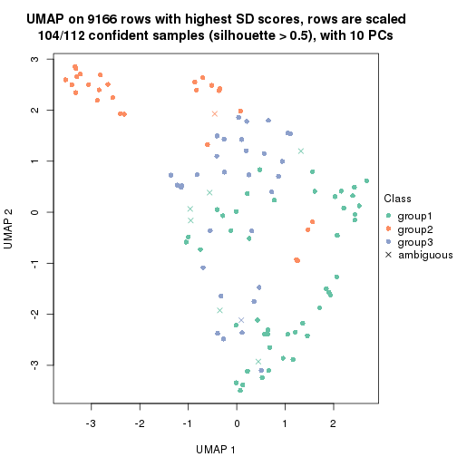
dimension_reduction(res, k = 4, method = "UMAP")
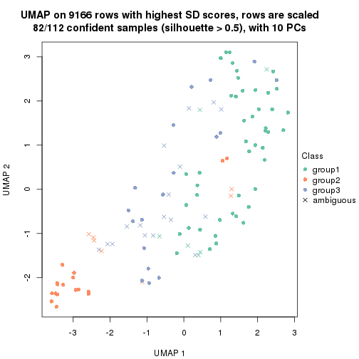
dimension_reduction(res, k = 5, method = "UMAP")
dimension_reduction(res, k = 6, method = "UMAP")
Following heatmap shows how subgroups are split when increasing k:
collect_classes(res)
If matrix rows can be associated to genes, consider to use GO_Enrichment(res,
...) to perform function enrichment for the signature genes.
The object with results only for a single top-value method and a single partition method can be extracted as:
res = res_list["SD", "NMF"]
# you can also extract it by
# res = res_list["SD:NMF"]
A summary of res and all the functions that can be applied to it:
res
#> A 'ConsensusPartition' object with k = 2, 3, 4, 5, 6.
#> On a matrix with 9166 rows and 112 columns.
#> Top rows (917, 1834, 2750, 3666, 4583) are extracted by 'SD' method.
#> Subgroups are detected by 'NMF' method.
#> Performed in total 1250 partitions by row resampling.
#> Best k for subgroups seems to be 2.
#>
#> Following methods can be applied to this 'ConsensusPartition' object:
#> [1] "cola_report" "collect_classes" "collect_plots"
#> [4] "collect_stats" "colnames" "compare_signatures"
#> [7] "consensus_heatmap" "dimension_reduction" "functional_enrichment"
#> [10] "get_anno_col" "get_anno" "get_classes"
#> [13] "get_consensus" "get_matrix" "get_membership"
#> [16] "get_param" "get_signatures" "get_stats"
#> [19] "is_best_k" "is_stable_k" "membership_heatmap"
#> [22] "ncol" "nrow" "plot_ecdf"
#> [25] "rownames" "select_partition_number" "show"
#> [28] "suggest_best_k" "test_to_known_factors"
collect_plots() function collects all the plots made from res for all k (number of partitions)
into one single page to provide an easy and fast comparison between different k.
collect_plots(res)
The plots are:
k and the heatmap of
predicted classes for each k.k.k.k.All the plots in panels can be made by individual functions and they are plotted later in this section.
select_partition_number() produces several plots showing different
statistics for choosing “optimized” k. There are following statistics:
k;k, the area increased is defined as \(A_k - A_{k-1}\).The detailed explanations of these statistics can be found in the cola vignette.
Generally speaking, lower PAC score, higher mean silhouette score or higher
concordance corresponds to better partition. Rand index and Jaccard index
measure how similar the current partition is compared to partition with k-1.
If they are too similar, we won't accept k is better than k-1.
select_partition_number(res)
The numeric values for all these statistics can be obtained by get_stats().
get_stats(res)
#> k 1-PAC mean_silhouette concordance area_increased Rand Jaccard
#> 2 2 1.000 0.997 0.999 0.122 0.882 0.882
#> 3 3 0.588 0.838 0.907 2.135 0.783 0.754
#> 4 4 0.690 0.823 0.912 0.137 0.929 0.893
#> 5 5 0.609 0.768 0.884 0.109 0.983 0.971
#> 6 6 0.413 0.674 0.827 0.113 0.971 0.950
suggest_best_k() suggests the best \(k\) based on these statistics. The rules are as follows:
NA.suggest_best_k(res)
#> [1] 2
Following shows the table of the partitions (You need to click the show/hide
code output link to see it). The membership matrix (columns with name p*)
is inferred by
clue::cl_consensus()
function with the SE method. Basically the value in the membership matrix
represents the probability to belong to a certain group. The finall class
label for an item is determined with the group with highest probability it
belongs to.
In get_classes() function, the entropy is calculated from the membership
matrix and the silhouette score is calculated from the consensus matrix.
cbind(get_classes(res, k = 2), get_membership(res, k = 2))
#> class entropy silhouette p1 p2
#> SRR1003755 1 0.000 0.998 1.000 0.000
#> SRR1003756 1 0.000 0.998 1.000 0.000
#> SRR1003757 1 0.000 0.998 1.000 0.000
#> SRR1003758 1 0.000 0.998 1.000 0.000
#> SRR1003759 1 0.000 0.998 1.000 0.000
#> SRR1003760 1 0.000 0.998 1.000 0.000
#> SRR1003761 1 0.000 0.998 1.000 0.000
#> SRR1003762 1 0.000 0.998 1.000 0.000
#> SRR1003763 1 0.000 0.998 1.000 0.000
#> SRR1003764 1 0.000 0.998 1.000 0.000
#> SRR1003765 2 0.000 1.000 0.000 1.000
#> SRR1003766 2 0.000 1.000 0.000 1.000
#> SRR1003767 2 0.000 1.000 0.000 1.000
#> SRR1003768 2 0.000 1.000 0.000 1.000
#> SRR1003769 2 0.000 1.000 0.000 1.000
#> SRR1003770 2 0.000 1.000 0.000 1.000
#> SRR1003771 2 0.000 1.000 0.000 1.000
#> SRR1003773 1 0.000 0.998 1.000 0.000
#> SRR1003772 1 0.000 0.998 1.000 0.000
#> SRR1003774 1 0.000 0.998 1.000 0.000
#> SRR1003775 1 0.000 0.998 1.000 0.000
#> SRR1003776 1 0.000 0.998 1.000 0.000
#> SRR1003777 1 0.000 0.998 1.000 0.000
#> SRR1003778 1 0.000 0.998 1.000 0.000
#> SRR1003779 1 0.000 0.998 1.000 0.000
#> SRR1003780 1 0.000 0.998 1.000 0.000
#> SRR1003781 1 0.000 0.998 1.000 0.000
#> SRR1003784 1 0.000 0.998 1.000 0.000
#> SRR1003785 1 0.000 0.998 1.000 0.000
#> SRR1003786 1 0.000 0.998 1.000 0.000
#> SRR1003783 1 0.000 0.998 1.000 0.000
#> SRR1003787 1 0.000 0.998 1.000 0.000
#> SRR1003788 1 0.000 0.998 1.000 0.000
#> SRR1003789 1 0.000 0.998 1.000 0.000
#> SRR1003790 1 0.000 0.998 1.000 0.000
#> SRR1003791 1 0.000 0.998 1.000 0.000
#> SRR1003792 1 0.000 0.998 1.000 0.000
#> SRR1003793 1 0.000 0.998 1.000 0.000
#> SRR1003794 1 0.000 0.998 1.000 0.000
#> SRR1003795 1 0.000 0.998 1.000 0.000
#> SRR1003796 1 0.000 0.998 1.000 0.000
#> SRR1003797 1 0.000 0.998 1.000 0.000
#> SRR1003798 1 0.000 0.998 1.000 0.000
#> SRR1003799 1 0.000 0.998 1.000 0.000
#> SRR1003800 1 0.000 0.998 1.000 0.000
#> SRR1003801 1 0.000 0.998 1.000 0.000
#> SRR1003802 1 0.000 0.998 1.000 0.000
#> SRR1003803 1 0.000 0.998 1.000 0.000
#> SRR1003804 1 0.000 0.998 1.000 0.000
#> SRR1003805 1 0.000 0.998 1.000 0.000
#> SRR1003806 1 0.000 0.998 1.000 0.000
#> SRR1003807 1 0.000 0.998 1.000 0.000
#> SRR1003809 1 0.000 0.998 1.000 0.000
#> SRR1003808 1 0.000 0.998 1.000 0.000
#> SRR1003810 1 0.000 0.998 1.000 0.000
#> SRR1003811 1 0.000 0.998 1.000 0.000
#> SRR1003812 1 0.000 0.998 1.000 0.000
#> SRR1003813 1 0.000 0.998 1.000 0.000
#> SRR1003814 1 0.000 0.998 1.000 0.000
#> SRR1003815 1 0.000 0.998 1.000 0.000
#> SRR1003816 1 0.000 0.998 1.000 0.000
#> SRR1003817 1 0.000 0.998 1.000 0.000
#> SRR1003818 1 0.000 0.998 1.000 0.000
#> SRR1003819 1 0.000 0.998 1.000 0.000
#> SRR1003820 1 0.000 0.998 1.000 0.000
#> SRR1003821 1 0.000 0.998 1.000 0.000
#> SRR1003822 1 0.000 0.998 1.000 0.000
#> SRR1003824 1 0.000 0.998 1.000 0.000
#> SRR1003823 1 0.000 0.998 1.000 0.000
#> SRR1003825 1 0.000 0.998 1.000 0.000
#> SRR1003826 1 0.000 0.998 1.000 0.000
#> SRR1003827 1 0.000 0.998 1.000 0.000
#> SRR1003828 1 0.000 0.998 1.000 0.000
#> SRR1003829 1 0.000 0.998 1.000 0.000
#> SRR1003830 1 0.000 0.998 1.000 0.000
#> SRR1003831 1 0.000 0.998 1.000 0.000
#> SRR1003832 1 0.000 0.998 1.000 0.000
#> SRR1003833 1 0.000 0.998 1.000 0.000
#> SRR1003834 1 0.000 0.998 1.000 0.000
#> SRR1003836 1 0.000 0.998 1.000 0.000
#> SRR1003835 1 0.000 0.998 1.000 0.000
#> SRR1003838 1 0.000 0.998 1.000 0.000
#> SRR1003837 1 0.000 0.998 1.000 0.000
#> SRR1003839 1 0.000 0.998 1.000 0.000
#> SRR1003840 1 0.000 0.998 1.000 0.000
#> SRR1003841 1 0.644 0.804 0.836 0.164
#> SRR1003842 1 0.000 0.998 1.000 0.000
#> SRR1003844 1 0.000 0.998 1.000 0.000
#> SRR1003845 1 0.000 0.998 1.000 0.000
#> SRR1003846 1 0.000 0.998 1.000 0.000
#> SRR1003847 1 0.000 0.998 1.000 0.000
#> SRR1003848 1 0.000 0.998 1.000 0.000
#> SRR1003849 1 0.000 0.998 1.000 0.000
#> SRR1003850 1 0.000 0.998 1.000 0.000
#> SRR1003851 1 0.000 0.998 1.000 0.000
#> SRR1003852 1 0.000 0.998 1.000 0.000
#> SRR1003853 1 0.000 0.998 1.000 0.000
#> SRR1003854 1 0.000 0.998 1.000 0.000
#> SRR1003843 1 0.000 0.998 1.000 0.000
#> SRR1003855 1 0.000 0.998 1.000 0.000
#> SRR1003856 1 0.000 0.998 1.000 0.000
#> SRR1003857 1 0.000 0.998 1.000 0.000
#> SRR1003858 1 0.000 0.998 1.000 0.000
#> SRR1003859 1 0.000 0.998 1.000 0.000
#> SRR1003860 1 0.000 0.998 1.000 0.000
#> SRR1003861 1 0.000 0.998 1.000 0.000
#> SRR1003862 1 0.000 0.998 1.000 0.000
#> SRR1003863 1 0.000 0.998 1.000 0.000
#> SRR1003864 1 0.000 0.998 1.000 0.000
#> SRR1003865 1 0.000 0.998 1.000 0.000
#> SRR1003866 1 0.000 0.998 1.000 0.000
#> SRR1003867 1 0.000 0.998 1.000 0.000
cbind(get_classes(res, k = 3), get_membership(res, k = 3))
#> class entropy silhouette p1 p2 p3
#> SRR1003755 1 0.5058 0.7131 0.756 0.000 0.244
#> SRR1003756 1 0.5058 0.7131 0.756 0.000 0.244
#> SRR1003757 1 0.5650 0.5910 0.688 0.000 0.312
#> SRR1003758 1 0.5621 0.5993 0.692 0.000 0.308
#> SRR1003759 1 0.2261 0.8654 0.932 0.000 0.068
#> SRR1003760 1 0.2448 0.8656 0.924 0.000 0.076
#> SRR1003761 1 0.2356 0.8679 0.928 0.000 0.072
#> SRR1003762 1 0.3039 0.8686 0.920 0.044 0.036
#> SRR1003763 1 0.2681 0.8887 0.932 0.040 0.028
#> SRR1003764 1 0.1529 0.8906 0.960 0.000 0.040
#> SRR1003765 2 0.0000 0.9963 0.000 1.000 0.000
#> SRR1003766 2 0.0424 0.9960 0.000 0.992 0.008
#> SRR1003767 2 0.0424 0.9948 0.000 0.992 0.008
#> SRR1003768 2 0.0424 0.9960 0.000 0.992 0.008
#> SRR1003769 2 0.0424 0.9960 0.000 0.992 0.008
#> SRR1003770 2 0.0000 0.9963 0.000 1.000 0.000
#> SRR1003771 2 0.0424 0.9948 0.000 0.992 0.008
#> SRR1003773 3 0.2625 0.8568 0.084 0.000 0.916
#> SRR1003772 1 0.0424 0.8993 0.992 0.000 0.008
#> SRR1003774 1 0.1529 0.8944 0.960 0.000 0.040
#> SRR1003775 1 0.0237 0.8982 0.996 0.000 0.004
#> SRR1003776 1 0.0592 0.8988 0.988 0.000 0.012
#> SRR1003777 1 0.0592 0.8983 0.988 0.000 0.012
#> SRR1003778 3 0.2625 0.8568 0.084 0.000 0.916
#> SRR1003779 1 0.1163 0.8977 0.972 0.000 0.028
#> SRR1003780 1 0.4842 0.7030 0.776 0.000 0.224
#> SRR1003781 1 0.1753 0.8806 0.952 0.000 0.048
#> SRR1003784 3 0.2796 0.8584 0.092 0.000 0.908
#> SRR1003785 3 0.2625 0.8568 0.084 0.000 0.916
#> SRR1003786 1 0.1643 0.8830 0.956 0.000 0.044
#> SRR1003783 1 0.0237 0.8982 0.996 0.000 0.004
#> SRR1003787 1 0.0892 0.8976 0.980 0.000 0.020
#> SRR1003788 1 0.4291 0.7975 0.820 0.000 0.180
#> SRR1003789 1 0.5650 0.5322 0.688 0.000 0.312
#> SRR1003790 1 0.0747 0.8996 0.984 0.000 0.016
#> SRR1003791 1 0.1411 0.8997 0.964 0.000 0.036
#> SRR1003792 1 0.1753 0.8805 0.952 0.000 0.048
#> SRR1003793 1 0.1643 0.8934 0.956 0.000 0.044
#> SRR1003794 1 0.1289 0.9004 0.968 0.000 0.032
#> SRR1003795 3 0.2796 0.8566 0.092 0.000 0.908
#> SRR1003796 3 0.2625 0.8568 0.084 0.000 0.916
#> SRR1003797 1 0.0237 0.8979 0.996 0.000 0.004
#> SRR1003798 1 0.3816 0.8278 0.852 0.000 0.148
#> SRR1003799 1 0.2625 0.8741 0.916 0.000 0.084
#> SRR1003800 1 0.5178 0.6945 0.744 0.000 0.256
#> SRR1003801 1 0.4291 0.7970 0.820 0.000 0.180
#> SRR1003802 3 0.5905 0.5370 0.352 0.000 0.648
#> SRR1003803 1 0.1031 0.8991 0.976 0.000 0.024
#> SRR1003804 1 0.4452 0.7821 0.808 0.000 0.192
#> SRR1003805 1 0.0892 0.8950 0.980 0.000 0.020
#> SRR1003806 1 0.2066 0.8861 0.940 0.000 0.060
#> SRR1003807 1 0.2959 0.8728 0.900 0.000 0.100
#> SRR1003809 1 0.6309 -0.0241 0.504 0.000 0.496
#> SRR1003808 1 0.1529 0.8857 0.960 0.000 0.040
#> SRR1003810 1 0.4796 0.7468 0.780 0.000 0.220
#> SRR1003811 1 0.6154 0.3417 0.592 0.000 0.408
#> SRR1003812 1 0.0237 0.8982 0.996 0.000 0.004
#> SRR1003813 3 0.2711 0.8581 0.088 0.000 0.912
#> SRR1003814 1 0.1529 0.8958 0.960 0.000 0.040
#> SRR1003815 1 0.4002 0.8166 0.840 0.000 0.160
#> SRR1003816 1 0.1163 0.8917 0.972 0.000 0.028
#> SRR1003817 1 0.0424 0.8977 0.992 0.000 0.008
#> SRR1003818 1 0.0592 0.8971 0.988 0.000 0.012
#> SRR1003819 1 0.3752 0.8347 0.856 0.000 0.144
#> SRR1003820 1 0.0747 0.8963 0.984 0.000 0.016
#> SRR1003821 1 0.1031 0.8931 0.976 0.000 0.024
#> SRR1003822 3 0.3482 0.8366 0.128 0.000 0.872
#> SRR1003824 1 0.5560 0.6185 0.700 0.000 0.300
#> SRR1003823 1 0.1289 0.8893 0.968 0.000 0.032
#> SRR1003825 1 0.3340 0.8501 0.880 0.000 0.120
#> SRR1003826 1 0.1529 0.8853 0.960 0.000 0.040
#> SRR1003827 1 0.0892 0.8973 0.980 0.000 0.020
#> SRR1003828 1 0.2625 0.8740 0.916 0.000 0.084
#> SRR1003829 1 0.0592 0.8992 0.988 0.000 0.012
#> SRR1003830 1 0.0892 0.8949 0.980 0.000 0.020
#> SRR1003831 1 0.2448 0.8789 0.924 0.000 0.076
#> SRR1003832 1 0.1411 0.8978 0.964 0.000 0.036
#> SRR1003833 1 0.1163 0.8975 0.972 0.000 0.028
#> SRR1003834 1 0.5291 0.6810 0.732 0.000 0.268
#> SRR1003836 1 0.5529 0.6306 0.704 0.000 0.296
#> SRR1003835 1 0.2261 0.8867 0.932 0.000 0.068
#> SRR1003838 3 0.2625 0.8568 0.084 0.000 0.916
#> SRR1003837 1 0.1643 0.8955 0.956 0.000 0.044
#> SRR1003839 1 0.2959 0.8664 0.900 0.000 0.100
#> SRR1003840 1 0.1643 0.8830 0.956 0.000 0.044
#> SRR1003841 3 0.6934 0.3878 0.348 0.028 0.624
#> SRR1003842 1 0.1163 0.8914 0.972 0.000 0.028
#> SRR1003844 1 0.0592 0.8994 0.988 0.000 0.012
#> SRR1003845 1 0.0892 0.8973 0.980 0.000 0.020
#> SRR1003846 1 0.0747 0.8994 0.984 0.000 0.016
#> SRR1003847 1 0.1529 0.8991 0.960 0.000 0.040
#> SRR1003848 3 0.4002 0.8044 0.160 0.000 0.840
#> SRR1003849 3 0.2625 0.8568 0.084 0.000 0.916
#> SRR1003850 1 0.4002 0.8188 0.840 0.000 0.160
#> SRR1003851 3 0.3116 0.8519 0.108 0.000 0.892
#> SRR1003852 1 0.1643 0.8830 0.956 0.000 0.044
#> SRR1003853 1 0.1411 0.8913 0.964 0.000 0.036
#> SRR1003854 1 0.1163 0.8955 0.972 0.000 0.028
#> SRR1003843 1 0.3340 0.8576 0.880 0.000 0.120
#> SRR1003855 1 0.3482 0.8459 0.872 0.000 0.128
#> SRR1003856 3 0.5706 0.6150 0.320 0.000 0.680
#> SRR1003857 1 0.1289 0.8967 0.968 0.000 0.032
#> SRR1003858 1 0.1860 0.8906 0.948 0.000 0.052
#> SRR1003859 1 0.1163 0.8973 0.972 0.000 0.028
#> SRR1003860 1 0.0592 0.8986 0.988 0.000 0.012
#> SRR1003861 1 0.3267 0.8540 0.884 0.000 0.116
#> SRR1003862 1 0.1289 0.8893 0.968 0.000 0.032
#> SRR1003863 1 0.5497 0.6312 0.708 0.000 0.292
#> SRR1003864 1 0.0237 0.8982 0.996 0.000 0.004
#> SRR1003865 1 0.1529 0.8946 0.960 0.000 0.040
#> SRR1003866 1 0.0747 0.9001 0.984 0.000 0.016
#> SRR1003867 1 0.0747 0.8962 0.984 0.000 0.016
cbind(get_classes(res, k = 4), get_membership(res, k = 4))
#> class entropy silhouette p1 p2 p3 p4
#> SRR1003755 1 0.4149 0.75463 0.812 0.000 0.152 0.036
#> SRR1003756 1 0.4237 0.74978 0.808 0.000 0.152 0.040
#> SRR1003757 1 0.3032 0.83403 0.868 0.000 0.124 0.008
#> SRR1003758 1 0.2988 0.84564 0.876 0.000 0.112 0.012
#> SRR1003759 4 0.4331 0.74927 0.288 0.000 0.000 0.712
#> SRR1003760 4 0.4468 0.78988 0.232 0.000 0.016 0.752
#> SRR1003761 4 0.4360 0.78945 0.248 0.000 0.008 0.744
#> SRR1003762 1 0.6653 0.29628 0.628 0.236 0.004 0.132
#> SRR1003763 1 0.7886 -0.44367 0.448 0.212 0.008 0.332
#> SRR1003764 1 0.5325 -0.22320 0.524 0.004 0.004 0.468
#> SRR1003765 2 0.0000 0.97855 0.000 1.000 0.000 0.000
#> SRR1003766 2 0.1398 0.97583 0.000 0.956 0.004 0.040
#> SRR1003767 2 0.0817 0.97373 0.000 0.976 0.000 0.024
#> SRR1003768 2 0.1398 0.97583 0.000 0.956 0.004 0.040
#> SRR1003769 2 0.1398 0.97583 0.000 0.956 0.004 0.040
#> SRR1003770 2 0.0000 0.97855 0.000 1.000 0.000 0.000
#> SRR1003771 2 0.0817 0.97373 0.000 0.976 0.000 0.024
#> SRR1003773 3 0.0804 0.75008 0.008 0.000 0.980 0.012
#> SRR1003772 1 0.0707 0.91857 0.980 0.000 0.000 0.020
#> SRR1003774 1 0.2345 0.87295 0.900 0.000 0.000 0.100
#> SRR1003775 1 0.1022 0.91987 0.968 0.000 0.000 0.032
#> SRR1003776 1 0.1867 0.89439 0.928 0.000 0.000 0.072
#> SRR1003777 1 0.0469 0.92084 0.988 0.000 0.000 0.012
#> SRR1003778 3 0.1042 0.74570 0.008 0.000 0.972 0.020
#> SRR1003779 1 0.0707 0.92046 0.980 0.000 0.000 0.020
#> SRR1003780 4 0.6055 0.75310 0.240 0.000 0.096 0.664
#> SRR1003781 1 0.1022 0.92003 0.968 0.000 0.000 0.032
#> SRR1003784 3 0.1489 0.74627 0.044 0.000 0.952 0.004
#> SRR1003785 3 0.0804 0.74861 0.008 0.000 0.980 0.012
#> SRR1003786 1 0.0707 0.91890 0.980 0.000 0.000 0.020
#> SRR1003783 1 0.0592 0.91913 0.984 0.000 0.000 0.016
#> SRR1003787 1 0.1211 0.91350 0.960 0.000 0.000 0.040
#> SRR1003788 1 0.1833 0.91311 0.944 0.000 0.024 0.032
#> SRR1003789 4 0.4955 0.68628 0.144 0.000 0.084 0.772
#> SRR1003790 1 0.1211 0.91367 0.960 0.000 0.000 0.040
#> SRR1003791 1 0.1722 0.91262 0.944 0.000 0.008 0.048
#> SRR1003792 1 0.0921 0.91862 0.972 0.000 0.000 0.028
#> SRR1003793 1 0.1635 0.91053 0.948 0.000 0.008 0.044
#> SRR1003794 1 0.1576 0.91046 0.948 0.000 0.004 0.048
#> SRR1003795 3 0.5637 0.50741 0.168 0.000 0.720 0.112
#> SRR1003796 3 0.0657 0.75243 0.012 0.000 0.984 0.004
#> SRR1003797 1 0.1022 0.91733 0.968 0.000 0.000 0.032
#> SRR1003798 1 0.2002 0.90780 0.936 0.000 0.020 0.044
#> SRR1003799 1 0.0672 0.92088 0.984 0.000 0.008 0.008
#> SRR1003800 1 0.2751 0.88583 0.904 0.000 0.040 0.056
#> SRR1003801 1 0.2813 0.87590 0.896 0.000 0.024 0.080
#> SRR1003802 3 0.5931 0.00489 0.460 0.000 0.504 0.036
#> SRR1003803 1 0.1576 0.91051 0.948 0.000 0.004 0.048
#> SRR1003804 1 0.1833 0.91182 0.944 0.000 0.032 0.024
#> SRR1003805 1 0.0921 0.91844 0.972 0.000 0.000 0.028
#> SRR1003806 1 0.1305 0.91486 0.960 0.000 0.004 0.036
#> SRR1003807 1 0.1610 0.91842 0.952 0.000 0.016 0.032
#> SRR1003809 1 0.5050 0.23049 0.588 0.000 0.408 0.004
#> SRR1003808 1 0.1716 0.89945 0.936 0.000 0.000 0.064
#> SRR1003810 1 0.2335 0.89820 0.920 0.000 0.060 0.020
#> SRR1003811 1 0.4936 0.33647 0.624 0.000 0.372 0.004
#> SRR1003812 1 0.1637 0.90270 0.940 0.000 0.000 0.060
#> SRR1003813 3 0.0524 0.74990 0.008 0.000 0.988 0.004
#> SRR1003814 1 0.1474 0.90948 0.948 0.000 0.000 0.052
#> SRR1003815 1 0.2124 0.90647 0.932 0.000 0.028 0.040
#> SRR1003816 1 0.0921 0.91644 0.972 0.000 0.000 0.028
#> SRR1003817 1 0.0592 0.92019 0.984 0.000 0.000 0.016
#> SRR1003818 1 0.1389 0.90949 0.952 0.000 0.000 0.048
#> SRR1003819 1 0.3245 0.86656 0.880 0.000 0.056 0.064
#> SRR1003820 1 0.0336 0.91967 0.992 0.000 0.000 0.008
#> SRR1003821 1 0.0592 0.92017 0.984 0.000 0.000 0.016
#> SRR1003822 3 0.2676 0.69954 0.092 0.000 0.896 0.012
#> SRR1003824 1 0.2635 0.87865 0.904 0.000 0.076 0.020
#> SRR1003823 1 0.1305 0.91721 0.960 0.000 0.004 0.036
#> SRR1003825 1 0.0804 0.92050 0.980 0.000 0.012 0.008
#> SRR1003826 1 0.0469 0.91976 0.988 0.000 0.000 0.012
#> SRR1003827 1 0.0817 0.91761 0.976 0.000 0.000 0.024
#> SRR1003828 1 0.1042 0.92005 0.972 0.000 0.008 0.020
#> SRR1003829 1 0.1022 0.91769 0.968 0.000 0.000 0.032
#> SRR1003830 1 0.1118 0.91561 0.964 0.000 0.000 0.036
#> SRR1003831 1 0.1488 0.91753 0.956 0.000 0.012 0.032
#> SRR1003832 1 0.1151 0.91759 0.968 0.000 0.008 0.024
#> SRR1003833 1 0.0469 0.92032 0.988 0.000 0.000 0.012
#> SRR1003834 1 0.2125 0.88995 0.920 0.000 0.076 0.004
#> SRR1003836 1 0.3377 0.81056 0.848 0.000 0.140 0.012
#> SRR1003835 1 0.1584 0.91730 0.952 0.000 0.012 0.036
#> SRR1003838 3 0.1174 0.75309 0.020 0.000 0.968 0.012
#> SRR1003837 1 0.0592 0.92082 0.984 0.000 0.000 0.016
#> SRR1003839 1 0.1584 0.91710 0.952 0.000 0.012 0.036
#> SRR1003840 1 0.1940 0.89965 0.924 0.000 0.000 0.076
#> SRR1003841 4 0.7612 0.35927 0.160 0.020 0.272 0.548
#> SRR1003842 1 0.1118 0.91600 0.964 0.000 0.000 0.036
#> SRR1003844 1 0.0000 0.91917 1.000 0.000 0.000 0.000
#> SRR1003845 1 0.0895 0.92038 0.976 0.000 0.004 0.020
#> SRR1003846 1 0.0921 0.91818 0.972 0.000 0.000 0.028
#> SRR1003847 1 0.0376 0.92007 0.992 0.000 0.004 0.004
#> SRR1003848 3 0.4661 0.41380 0.256 0.000 0.728 0.016
#> SRR1003849 3 0.0672 0.75000 0.008 0.000 0.984 0.008
#> SRR1003850 1 0.2313 0.90235 0.924 0.000 0.032 0.044
#> SRR1003851 3 0.2335 0.73383 0.060 0.000 0.920 0.020
#> SRR1003852 1 0.0592 0.92048 0.984 0.000 0.000 0.016
#> SRR1003853 1 0.1209 0.91904 0.964 0.000 0.004 0.032
#> SRR1003854 1 0.1004 0.92238 0.972 0.000 0.004 0.024
#> SRR1003843 1 0.2742 0.87727 0.900 0.000 0.024 0.076
#> SRR1003855 1 0.1913 0.91088 0.940 0.000 0.020 0.040
#> SRR1003856 3 0.5207 0.32359 0.292 0.000 0.680 0.028
#> SRR1003857 1 0.0779 0.92161 0.980 0.000 0.004 0.016
#> SRR1003858 1 0.1059 0.92178 0.972 0.000 0.016 0.012
#> SRR1003859 1 0.1109 0.91760 0.968 0.000 0.004 0.028
#> SRR1003860 1 0.0817 0.92219 0.976 0.000 0.000 0.024
#> SRR1003861 1 0.1284 0.91954 0.964 0.000 0.012 0.024
#> SRR1003862 1 0.0592 0.92056 0.984 0.000 0.000 0.016
#> SRR1003863 1 0.3324 0.81643 0.852 0.000 0.136 0.012
#> SRR1003864 1 0.0469 0.92034 0.988 0.000 0.000 0.012
#> SRR1003865 1 0.1209 0.92165 0.964 0.000 0.004 0.032
#> SRR1003866 1 0.0469 0.92048 0.988 0.000 0.000 0.012
#> SRR1003867 1 0.1211 0.91585 0.960 0.000 0.000 0.040
cbind(get_classes(res, k = 5), get_membership(res, k = 5))
#> class entropy silhouette p1 p2 p3 p4 p5
#> SRR1003755 1 0.5037 0.6618 0.724 0.000 0.180 0.080 0.016
#> SRR1003756 1 0.5037 0.6618 0.724 0.000 0.180 0.080 0.016
#> SRR1003757 1 0.3375 0.8242 0.840 0.000 0.104 0.056 0.000
#> SRR1003758 1 0.3169 0.8448 0.856 0.000 0.084 0.060 0.000
#> SRR1003759 5 0.2068 0.5699 0.092 0.000 0.000 0.004 0.904
#> SRR1003760 5 0.1901 0.5815 0.056 0.000 0.004 0.012 0.928
#> SRR1003761 5 0.1591 0.5787 0.052 0.000 0.004 0.004 0.940
#> SRR1003762 1 0.7619 -0.0501 0.476 0.276 0.000 0.120 0.128
#> SRR1003763 1 0.8057 -0.4895 0.348 0.200 0.000 0.108 0.344
#> SRR1003764 5 0.6067 0.1356 0.316 0.004 0.004 0.112 0.564
#> SRR1003765 2 0.0162 0.9572 0.000 0.996 0.000 0.004 0.000
#> SRR1003766 2 0.1809 0.9523 0.000 0.928 0.000 0.060 0.012
#> SRR1003767 2 0.1251 0.9460 0.000 0.956 0.000 0.036 0.008
#> SRR1003768 2 0.1809 0.9523 0.000 0.928 0.000 0.060 0.012
#> SRR1003769 2 0.1809 0.9523 0.000 0.928 0.000 0.060 0.012
#> SRR1003770 2 0.0162 0.9572 0.000 0.996 0.000 0.004 0.000
#> SRR1003771 2 0.1251 0.9460 0.000 0.956 0.000 0.036 0.008
#> SRR1003773 3 0.1251 0.6401 0.000 0.000 0.956 0.036 0.008
#> SRR1003772 1 0.1365 0.9044 0.952 0.000 0.004 0.040 0.004
#> SRR1003774 1 0.2388 0.8827 0.900 0.000 0.000 0.028 0.072
#> SRR1003775 1 0.1270 0.9043 0.948 0.000 0.000 0.052 0.000
#> SRR1003776 1 0.2381 0.8871 0.908 0.000 0.004 0.052 0.036
#> SRR1003777 1 0.0798 0.9058 0.976 0.000 0.000 0.016 0.008
#> SRR1003778 3 0.2052 0.6081 0.004 0.000 0.912 0.080 0.004
#> SRR1003779 1 0.1243 0.9051 0.960 0.000 0.004 0.028 0.008
#> SRR1003780 5 0.6611 0.1827 0.096 0.000 0.040 0.352 0.512
#> SRR1003781 1 0.0955 0.9085 0.968 0.000 0.000 0.028 0.004
#> SRR1003784 3 0.1588 0.6389 0.028 0.000 0.948 0.016 0.008
#> SRR1003785 3 0.0609 0.6460 0.000 0.000 0.980 0.020 0.000
#> SRR1003786 1 0.0771 0.9069 0.976 0.000 0.000 0.020 0.004
#> SRR1003783 1 0.0955 0.9060 0.968 0.000 0.000 0.028 0.004
#> SRR1003787 1 0.1403 0.9029 0.952 0.000 0.000 0.024 0.024
#> SRR1003788 1 0.2791 0.8818 0.892 0.000 0.036 0.056 0.016
#> SRR1003789 5 0.5439 0.4156 0.044 0.000 0.056 0.204 0.696
#> SRR1003790 1 0.1571 0.8995 0.936 0.000 0.004 0.060 0.000
#> SRR1003791 1 0.3328 0.8053 0.812 0.000 0.008 0.176 0.004
#> SRR1003792 1 0.0566 0.9056 0.984 0.000 0.000 0.012 0.004
#> SRR1003793 1 0.1408 0.9032 0.948 0.000 0.008 0.044 0.000
#> SRR1003794 1 0.1557 0.9031 0.940 0.000 0.008 0.052 0.000
#> SRR1003795 4 0.6912 0.0778 0.188 0.000 0.376 0.420 0.016
#> SRR1003796 3 0.0963 0.6425 0.000 0.000 0.964 0.036 0.000
#> SRR1003797 1 0.0693 0.9061 0.980 0.000 0.000 0.012 0.008
#> SRR1003798 1 0.1670 0.9019 0.936 0.000 0.012 0.052 0.000
#> SRR1003799 1 0.1300 0.9081 0.956 0.000 0.016 0.028 0.000
#> SRR1003800 1 0.2012 0.8996 0.920 0.000 0.020 0.060 0.000
#> SRR1003801 1 0.3445 0.8659 0.860 0.000 0.048 0.060 0.032
#> SRR1003802 3 0.5831 -0.0630 0.408 0.000 0.496 0.096 0.000
#> SRR1003803 1 0.1608 0.8963 0.928 0.000 0.000 0.072 0.000
#> SRR1003804 1 0.1845 0.9011 0.928 0.000 0.016 0.056 0.000
#> SRR1003805 1 0.1270 0.9038 0.948 0.000 0.000 0.052 0.000
#> SRR1003806 1 0.1502 0.9013 0.940 0.000 0.004 0.056 0.000
#> SRR1003807 1 0.3722 0.7863 0.796 0.000 0.024 0.176 0.004
#> SRR1003809 1 0.4825 0.2959 0.568 0.000 0.408 0.024 0.000
#> SRR1003808 1 0.1741 0.9023 0.936 0.000 0.000 0.040 0.024
#> SRR1003810 1 0.2283 0.8967 0.916 0.000 0.036 0.040 0.008
#> SRR1003811 1 0.5196 0.3367 0.576 0.000 0.380 0.040 0.004
#> SRR1003812 1 0.1893 0.8980 0.928 0.000 0.000 0.048 0.024
#> SRR1003813 3 0.0955 0.6478 0.004 0.000 0.968 0.028 0.000
#> SRR1003814 1 0.1750 0.8987 0.936 0.000 0.000 0.036 0.028
#> SRR1003815 1 0.2544 0.8892 0.900 0.000 0.028 0.064 0.008
#> SRR1003816 1 0.1168 0.9059 0.960 0.000 0.000 0.032 0.008
#> SRR1003817 1 0.0771 0.9063 0.976 0.000 0.000 0.020 0.004
#> SRR1003818 1 0.0992 0.9056 0.968 0.000 0.000 0.024 0.008
#> SRR1003819 1 0.3997 0.8280 0.828 0.000 0.052 0.076 0.044
#> SRR1003820 1 0.0671 0.9056 0.980 0.000 0.000 0.016 0.004
#> SRR1003821 1 0.0451 0.9054 0.988 0.000 0.000 0.008 0.004
#> SRR1003822 3 0.2332 0.5641 0.076 0.000 0.904 0.016 0.004
#> SRR1003824 1 0.2580 0.8906 0.892 0.000 0.064 0.044 0.000
#> SRR1003823 1 0.1357 0.9022 0.948 0.000 0.000 0.048 0.004
#> SRR1003825 1 0.1605 0.9077 0.944 0.000 0.012 0.040 0.004
#> SRR1003826 1 0.0510 0.9076 0.984 0.000 0.000 0.016 0.000
#> SRR1003827 1 0.0579 0.9058 0.984 0.000 0.000 0.008 0.008
#> SRR1003828 1 0.2102 0.8950 0.916 0.000 0.012 0.068 0.004
#> SRR1003829 1 0.1116 0.9057 0.964 0.000 0.004 0.028 0.004
#> SRR1003830 1 0.1430 0.9016 0.944 0.000 0.004 0.052 0.000
#> SRR1003831 1 0.2149 0.8988 0.924 0.000 0.012 0.036 0.028
#> SRR1003832 1 0.1331 0.9037 0.952 0.000 0.008 0.040 0.000
#> SRR1003833 1 0.1243 0.9071 0.960 0.000 0.004 0.028 0.008
#> SRR1003834 1 0.3021 0.8751 0.872 0.000 0.064 0.060 0.004
#> SRR1003836 1 0.4337 0.7875 0.784 0.000 0.136 0.068 0.012
#> SRR1003835 1 0.1892 0.8951 0.916 0.000 0.004 0.080 0.000
#> SRR1003838 3 0.2006 0.6208 0.012 0.000 0.916 0.072 0.000
#> SRR1003837 1 0.1483 0.9057 0.952 0.000 0.008 0.028 0.012
#> SRR1003839 1 0.2666 0.8842 0.892 0.000 0.012 0.076 0.020
#> SRR1003840 1 0.3122 0.8591 0.852 0.000 0.004 0.120 0.024
#> SRR1003841 4 0.7222 -0.1611 0.048 0.008 0.144 0.516 0.284
#> SRR1003842 1 0.1591 0.9020 0.940 0.000 0.004 0.052 0.004
#> SRR1003844 1 0.0880 0.9081 0.968 0.000 0.000 0.032 0.000
#> SRR1003845 1 0.3433 0.8333 0.832 0.000 0.004 0.132 0.032
#> SRR1003846 1 0.1043 0.9064 0.960 0.000 0.000 0.040 0.000
#> SRR1003847 1 0.0912 0.9097 0.972 0.000 0.012 0.016 0.000
#> SRR1003848 3 0.4276 0.2030 0.244 0.000 0.724 0.032 0.000
#> SRR1003849 3 0.1124 0.6420 0.004 0.000 0.960 0.036 0.000
#> SRR1003850 1 0.3366 0.8210 0.828 0.000 0.032 0.140 0.000
#> SRR1003851 3 0.3517 0.5092 0.068 0.000 0.832 0.100 0.000
#> SRR1003852 1 0.1443 0.9062 0.948 0.000 0.004 0.044 0.004
#> SRR1003853 1 0.1216 0.9070 0.960 0.000 0.000 0.020 0.020
#> SRR1003854 1 0.0992 0.9086 0.968 0.000 0.000 0.024 0.008
#> SRR1003843 1 0.4754 0.5593 0.664 0.000 0.020 0.304 0.012
#> SRR1003855 1 0.2791 0.8832 0.892 0.000 0.016 0.056 0.036
#> SRR1003856 3 0.4768 0.0943 0.304 0.000 0.656 0.040 0.000
#> SRR1003857 1 0.1282 0.9103 0.952 0.000 0.004 0.044 0.000
#> SRR1003858 1 0.1808 0.9005 0.936 0.000 0.004 0.040 0.020
#> SRR1003859 1 0.1357 0.9023 0.948 0.000 0.004 0.048 0.000
#> SRR1003860 1 0.1043 0.9051 0.960 0.000 0.000 0.040 0.000
#> SRR1003861 1 0.2173 0.8980 0.920 0.000 0.012 0.052 0.016
#> SRR1003862 1 0.0609 0.9058 0.980 0.000 0.000 0.020 0.000
#> SRR1003863 1 0.3134 0.8400 0.848 0.000 0.120 0.032 0.000
#> SRR1003864 1 0.0865 0.9049 0.972 0.000 0.000 0.024 0.004
#> SRR1003865 1 0.1857 0.9022 0.928 0.000 0.004 0.060 0.008
#> SRR1003866 1 0.0898 0.9062 0.972 0.000 0.000 0.020 0.008
#> SRR1003867 1 0.1282 0.9028 0.952 0.000 0.004 0.044 0.000
cbind(get_classes(res, k = 6), get_membership(res, k = 6))
#> class entropy silhouette p1 p2 p3 p4 p5 p6
#> SRR1003755 1 0.5793 0.2941 0.600 0.000 0.164 0.212 0.012 0.012
#> SRR1003756 1 0.5740 0.3195 0.608 0.000 0.160 0.208 0.012 0.012
#> SRR1003757 1 0.3801 0.7118 0.784 0.000 0.060 0.148 0.008 0.000
#> SRR1003758 1 0.3823 0.7224 0.788 0.000 0.052 0.148 0.008 0.004
#> SRR1003759 6 0.1616 0.3328 0.020 0.000 0.000 0.048 0.000 0.932
#> SRR1003760 6 0.0964 0.2980 0.012 0.000 0.000 0.004 0.016 0.968
#> SRR1003761 6 0.0622 0.3111 0.012 0.000 0.000 0.008 0.000 0.980
#> SRR1003762 1 0.7752 -0.4631 0.412 0.196 0.000 0.244 0.032 0.116
#> SRR1003763 4 0.8061 -0.0347 0.288 0.116 0.004 0.288 0.028 0.276
#> SRR1003764 6 0.6843 -0.4312 0.328 0.004 0.004 0.292 0.024 0.348
#> SRR1003765 2 0.0146 0.9158 0.000 0.996 0.000 0.000 0.004 0.000
#> SRR1003766 2 0.2549 0.9046 0.000 0.884 0.000 0.036 0.072 0.008
#> SRR1003767 2 0.1864 0.8901 0.000 0.924 0.000 0.032 0.040 0.004
#> SRR1003768 2 0.2549 0.9046 0.000 0.884 0.000 0.036 0.072 0.008
#> SRR1003769 2 0.2549 0.9046 0.000 0.884 0.000 0.036 0.072 0.008
#> SRR1003770 2 0.0146 0.9158 0.000 0.996 0.000 0.000 0.004 0.000
#> SRR1003771 2 0.1864 0.8901 0.000 0.924 0.000 0.032 0.040 0.004
#> SRR1003773 3 0.0993 0.6068 0.000 0.000 0.964 0.024 0.012 0.000
#> SRR1003772 1 0.1753 0.8370 0.912 0.000 0.000 0.084 0.000 0.004
#> SRR1003774 1 0.3240 0.7939 0.812 0.000 0.000 0.148 0.000 0.040
#> SRR1003775 1 0.2462 0.8126 0.860 0.000 0.000 0.132 0.004 0.004
#> SRR1003776 1 0.2668 0.8048 0.828 0.000 0.000 0.168 0.000 0.004
#> SRR1003777 1 0.1858 0.8412 0.904 0.000 0.000 0.092 0.004 0.000
#> SRR1003778 3 0.2944 0.5460 0.000 0.000 0.856 0.068 0.072 0.004
#> SRR1003779 1 0.1753 0.8396 0.912 0.000 0.000 0.084 0.000 0.004
#> SRR1003780 6 0.7187 -0.1252 0.044 0.000 0.024 0.220 0.304 0.408
#> SRR1003781 1 0.1918 0.8467 0.904 0.000 0.000 0.088 0.000 0.008
#> SRR1003784 3 0.2220 0.6289 0.052 0.000 0.908 0.020 0.020 0.000
#> SRR1003785 3 0.1382 0.6083 0.000 0.000 0.948 0.036 0.008 0.008
#> SRR1003786 1 0.1588 0.8362 0.924 0.000 0.000 0.072 0.000 0.004
#> SRR1003783 1 0.1398 0.8417 0.940 0.000 0.000 0.052 0.000 0.008
#> SRR1003787 1 0.2170 0.8260 0.888 0.000 0.000 0.100 0.000 0.012
#> SRR1003788 1 0.3658 0.7822 0.780 0.000 0.024 0.184 0.004 0.008
#> SRR1003789 6 0.6458 0.0840 0.032 0.000 0.012 0.188 0.240 0.528
#> SRR1003790 1 0.2113 0.8273 0.896 0.000 0.000 0.092 0.008 0.004
#> SRR1003791 1 0.4505 0.5941 0.684 0.000 0.000 0.252 0.056 0.008
#> SRR1003792 1 0.1444 0.8422 0.928 0.000 0.000 0.072 0.000 0.000
#> SRR1003793 1 0.1901 0.8304 0.912 0.000 0.000 0.076 0.008 0.004
#> SRR1003794 1 0.1615 0.8425 0.928 0.000 0.000 0.064 0.004 0.004
#> SRR1003795 4 0.7243 -0.1522 0.140 0.000 0.192 0.428 0.240 0.000
#> SRR1003796 3 0.2001 0.5969 0.000 0.000 0.912 0.040 0.048 0.000
#> SRR1003797 1 0.1644 0.8398 0.920 0.000 0.000 0.076 0.000 0.004
#> SRR1003798 1 0.1806 0.8356 0.908 0.000 0.004 0.088 0.000 0.000
#> SRR1003799 1 0.1584 0.8443 0.928 0.000 0.000 0.064 0.000 0.008
#> SRR1003800 1 0.2711 0.8120 0.860 0.000 0.012 0.116 0.012 0.000
#> SRR1003801 1 0.3842 0.7665 0.780 0.000 0.028 0.172 0.008 0.012
#> SRR1003802 3 0.5737 -0.0891 0.380 0.000 0.492 0.112 0.016 0.000
#> SRR1003803 1 0.2501 0.8192 0.872 0.000 0.000 0.108 0.016 0.004
#> SRR1003804 1 0.2062 0.8360 0.900 0.000 0.008 0.088 0.000 0.004
#> SRR1003805 1 0.2400 0.8197 0.872 0.000 0.000 0.116 0.008 0.004
#> SRR1003806 1 0.2051 0.8264 0.896 0.000 0.000 0.096 0.004 0.004
#> SRR1003807 1 0.3785 0.7104 0.764 0.000 0.012 0.196 0.028 0.000
#> SRR1003809 1 0.4802 -0.0415 0.496 0.000 0.452 0.052 0.000 0.000
#> SRR1003808 1 0.2911 0.8116 0.832 0.000 0.000 0.144 0.000 0.024
#> SRR1003810 1 0.2667 0.8196 0.852 0.000 0.020 0.128 0.000 0.000
#> SRR1003811 3 0.4979 -0.1219 0.448 0.000 0.492 0.056 0.004 0.000
#> SRR1003812 1 0.2402 0.8144 0.856 0.000 0.000 0.140 0.000 0.004
#> SRR1003813 3 0.0632 0.6127 0.000 0.000 0.976 0.024 0.000 0.000
#> SRR1003814 1 0.2513 0.8218 0.852 0.000 0.000 0.140 0.000 0.008
#> SRR1003815 1 0.3309 0.7760 0.788 0.000 0.016 0.192 0.004 0.000
#> SRR1003816 1 0.2219 0.8252 0.864 0.000 0.000 0.136 0.000 0.000
#> SRR1003817 1 0.2051 0.8288 0.896 0.000 0.000 0.096 0.004 0.004
#> SRR1003818 1 0.2100 0.8333 0.884 0.000 0.000 0.112 0.000 0.004
#> SRR1003819 1 0.4309 0.6918 0.720 0.000 0.032 0.228 0.004 0.016
#> SRR1003820 1 0.1267 0.8422 0.940 0.000 0.000 0.060 0.000 0.000
#> SRR1003821 1 0.1204 0.8430 0.944 0.000 0.000 0.056 0.000 0.000
#> SRR1003822 3 0.2864 0.6008 0.100 0.000 0.860 0.028 0.012 0.000
#> SRR1003824 1 0.2812 0.8352 0.868 0.000 0.040 0.084 0.004 0.004
#> SRR1003823 1 0.2113 0.8261 0.896 0.000 0.000 0.092 0.008 0.004
#> SRR1003825 1 0.2398 0.8408 0.888 0.000 0.016 0.088 0.004 0.004
#> SRR1003826 1 0.0865 0.8456 0.964 0.000 0.000 0.036 0.000 0.000
#> SRR1003827 1 0.1531 0.8377 0.928 0.000 0.000 0.068 0.000 0.004
#> SRR1003828 1 0.2734 0.7974 0.840 0.000 0.000 0.148 0.008 0.004
#> SRR1003829 1 0.1843 0.8338 0.912 0.000 0.000 0.080 0.004 0.004
#> SRR1003830 1 0.2006 0.8259 0.892 0.000 0.000 0.104 0.000 0.004
#> SRR1003831 1 0.2558 0.8117 0.840 0.000 0.004 0.156 0.000 0.000
#> SRR1003832 1 0.2051 0.8284 0.896 0.000 0.004 0.096 0.000 0.004
#> SRR1003833 1 0.1908 0.8447 0.900 0.000 0.000 0.096 0.000 0.004
#> SRR1003834 1 0.3139 0.8062 0.816 0.000 0.032 0.152 0.000 0.000
#> SRR1003836 1 0.4327 0.7396 0.752 0.000 0.096 0.140 0.008 0.004
#> SRR1003835 1 0.2402 0.8178 0.868 0.000 0.000 0.120 0.012 0.000
#> SRR1003838 3 0.3226 0.5881 0.028 0.000 0.836 0.116 0.020 0.000
#> SRR1003837 1 0.2146 0.8350 0.880 0.000 0.000 0.116 0.000 0.004
#> SRR1003839 1 0.3589 0.7619 0.776 0.000 0.008 0.196 0.004 0.016
#> SRR1003840 1 0.4173 0.6394 0.696 0.000 0.000 0.268 0.024 0.012
#> SRR1003841 5 0.4451 0.0000 0.000 0.004 0.064 0.008 0.720 0.204
#> SRR1003842 1 0.1732 0.8374 0.920 0.000 0.000 0.072 0.004 0.004
#> SRR1003844 1 0.1075 0.8435 0.952 0.000 0.000 0.048 0.000 0.000
#> SRR1003845 1 0.3957 0.6572 0.696 0.000 0.008 0.284 0.004 0.008
#> SRR1003846 1 0.1387 0.8399 0.932 0.000 0.000 0.068 0.000 0.000
#> SRR1003847 1 0.1349 0.8459 0.940 0.000 0.000 0.056 0.004 0.000
#> SRR1003848 3 0.4075 0.3914 0.204 0.000 0.744 0.036 0.016 0.000
#> SRR1003849 3 0.1124 0.6116 0.000 0.000 0.956 0.036 0.008 0.000
#> SRR1003850 1 0.3294 0.7729 0.812 0.000 0.020 0.156 0.012 0.000
#> SRR1003851 3 0.4361 0.5188 0.060 0.000 0.760 0.140 0.040 0.000
#> SRR1003852 1 0.2558 0.8255 0.840 0.000 0.000 0.156 0.004 0.000
#> SRR1003853 1 0.2488 0.8377 0.864 0.000 0.000 0.124 0.008 0.004
#> SRR1003854 1 0.2320 0.8250 0.864 0.000 0.000 0.132 0.000 0.004
#> SRR1003843 1 0.5436 0.1344 0.540 0.000 0.008 0.348 0.104 0.000
#> SRR1003855 1 0.3061 0.7916 0.816 0.000 0.004 0.168 0.004 0.008
#> SRR1003856 3 0.4588 0.2664 0.248 0.000 0.676 0.072 0.004 0.000
#> SRR1003857 1 0.2170 0.8480 0.888 0.000 0.000 0.100 0.000 0.012
#> SRR1003858 1 0.2320 0.8220 0.864 0.000 0.000 0.132 0.000 0.004
#> SRR1003859 1 0.1949 0.8272 0.904 0.000 0.000 0.088 0.004 0.004
#> SRR1003860 1 0.1753 0.8343 0.912 0.000 0.000 0.084 0.000 0.004
#> SRR1003861 1 0.2845 0.7963 0.820 0.000 0.004 0.172 0.000 0.004
#> SRR1003862 1 0.1700 0.8325 0.916 0.000 0.000 0.080 0.000 0.004
#> SRR1003863 1 0.3860 0.7196 0.764 0.000 0.164 0.072 0.000 0.000
#> SRR1003864 1 0.1327 0.8378 0.936 0.000 0.000 0.064 0.000 0.000
#> SRR1003865 1 0.2146 0.8425 0.880 0.000 0.000 0.116 0.004 0.000
#> SRR1003866 1 0.2275 0.8416 0.888 0.000 0.000 0.096 0.008 0.008
#> SRR1003867 1 0.1908 0.8312 0.900 0.000 0.000 0.096 0.000 0.004
Heatmaps for the consensus matrix. It visualizes the probability of two samples to be in a same group.
consensus_heatmap(res, k = 2)
consensus_heatmap(res, k = 3)
consensus_heatmap(res, k = 4)
consensus_heatmap(res, k = 5)
consensus_heatmap(res, k = 6)
Heatmaps for the membership of samples in all partitions to see how consistent they are:
membership_heatmap(res, k = 2)
membership_heatmap(res, k = 3)
membership_heatmap(res, k = 4)
membership_heatmap(res, k = 5)
membership_heatmap(res, k = 6)
As soon as we have had the classes for columns, we can look for signatures which are significantly different between classes which can be candidate marks for certain classes. Following are the heatmaps for signatures.
Signature heatmaps where rows are scaled:
get_signatures(res, k = 2)
get_signatures(res, k = 3)
get_signatures(res, k = 4)
get_signatures(res, k = 5)
get_signatures(res, k = 6)
Signature heatmaps where rows are not scaled:
get_signatures(res, k = 2, scale_rows = FALSE)
get_signatures(res, k = 3, scale_rows = FALSE)
get_signatures(res, k = 4, scale_rows = FALSE)
get_signatures(res, k = 5, scale_rows = FALSE)
get_signatures(res, k = 6, scale_rows = FALSE)
Compare the overlap of signatures from different k:
compare_signatures(res)
get_signature() returns a data frame invisibly. TO get the list of signatures, the function
call should be assigned to a variable explicitly. In following code, if plot argument is set
to FALSE, no heatmap is plotted while only the differential analysis is performed.
# code only for demonstration
tb = get_signature(res, k = ..., plot = FALSE)
An example of the output of tb is:
#> which_row fdr mean_1 mean_2 scaled_mean_1 scaled_mean_2 km
#> 1 38 0.042760348 8.373488 9.131774 -0.5533452 0.5164555 1
#> 2 40 0.018707592 7.106213 8.469186 -0.6173731 0.5762149 1
#> 3 55 0.019134737 10.221463 11.207825 -0.6159697 0.5749050 1
#> 4 59 0.006059896 5.921854 7.869574 -0.6899429 0.6439467 1
#> 5 60 0.018055526 8.928898 10.211722 -0.6204761 0.5791110 1
#> 6 98 0.009384629 15.714769 14.887706 0.6635654 -0.6193277 2
...
The columns in tb are:
which_row: row indices corresponding to the input matrix.fdr: FDR for the differential test. mean_x: The mean value in group x.scaled_mean_x: The mean value in group x after rows are scaled.km: Row groups if k-means clustering is applied to rows.UMAP plot which shows how samples are separated.
dimension_reduction(res, k = 2, method = "UMAP")
dimension_reduction(res, k = 3, method = "UMAP")
dimension_reduction(res, k = 4, method = "UMAP")
dimension_reduction(res, k = 5, method = "UMAP")
dimension_reduction(res, k = 6, method = "UMAP")
Following heatmap shows how subgroups are split when increasing k:
collect_classes(res)
If matrix rows can be associated to genes, consider to use GO_Enrichment(res,
...) to perform function enrichment for the signature genes.
The object with results only for a single top-value method and a single partition method can be extracted as:
res = res_list["CV", "hclust"]
# you can also extract it by
# res = res_list["CV:hclust"]
A summary of res and all the functions that can be applied to it:
res
#> A 'ConsensusPartition' object with k = 2, 3, 4, 5, 6.
#> On a matrix with 9166 rows and 112 columns.
#> Top rows (917, 1834, 2750, 3666, 4583) are extracted by 'CV' method.
#> Subgroups are detected by 'hclust' method.
#> Performed in total 1250 partitions by row resampling.
#> Best k for subgroups seems to be 3.
#>
#> Following methods can be applied to this 'ConsensusPartition' object:
#> [1] "cola_report" "collect_classes" "collect_plots"
#> [4] "collect_stats" "colnames" "compare_signatures"
#> [7] "consensus_heatmap" "dimension_reduction" "functional_enrichment"
#> [10] "get_anno_col" "get_anno" "get_classes"
#> [13] "get_consensus" "get_matrix" "get_membership"
#> [16] "get_param" "get_signatures" "get_stats"
#> [19] "is_best_k" "is_stable_k" "membership_heatmap"
#> [22] "ncol" "nrow" "plot_ecdf"
#> [25] "rownames" "select_partition_number" "show"
#> [28] "suggest_best_k" "test_to_known_factors"
collect_plots() function collects all the plots made from res for all k (number of partitions)
into one single page to provide an easy and fast comparison between different k.
collect_plots(res)
The plots are:
k and the heatmap of
predicted classes for each k.k.k.k.All the plots in panels can be made by individual functions and they are plotted later in this section.
select_partition_number() produces several plots showing different
statistics for choosing “optimized” k. There are following statistics:
k;k, the area increased is defined as \(A_k - A_{k-1}\).The detailed explanations of these statistics can be found in the cola vignette.
Generally speaking, lower PAC score, higher mean silhouette score or higher
concordance corresponds to better partition. Rand index and Jaccard index
measure how similar the current partition is compared to partition with k-1.
If they are too similar, we won't accept k is better than k-1.
select_partition_number(res)
The numeric values for all these statistics can be obtained by get_stats().
get_stats(res)
#> k 1-PAC mean_silhouette concordance area_increased Rand Jaccard
#> 2 2 1.000 0.980 0.992 0.0507 0.965 0.965
#> 3 3 0.315 0.832 0.862 5.7337 0.734 0.724
#> 4 4 0.183 0.753 0.823 0.2506 0.978 0.968
#> 5 5 0.226 0.647 0.788 0.1258 0.983 0.975
#> 6 6 0.224 0.723 0.760 0.0921 0.993 0.989
suggest_best_k() suggests the best \(k\) based on these statistics. The rules are as follows:
NA.suggest_best_k(res)
#> [1] 3
Following shows the table of the partitions (You need to click the show/hide
code output link to see it). The membership matrix (columns with name p*)
is inferred by
clue::cl_consensus()
function with the SE method. Basically the value in the membership matrix
represents the probability to belong to a certain group. The finall class
label for an item is determined with the group with highest probability it
belongs to.
In get_classes() function, the entropy is calculated from the membership
matrix and the silhouette score is calculated from the consensus matrix.
cbind(get_classes(res, k = 2), get_membership(res, k = 2))
#> class entropy silhouette p1 p2
#> SRR1003755 2 0.000 1.000 0.00 1.00
#> SRR1003756 2 0.000 1.000 0.00 1.00
#> SRR1003757 1 0.981 0.283 0.58 0.42
#> SRR1003758 1 0.981 0.283 0.58 0.42
#> SRR1003759 1 0.000 0.992 1.00 0.00
#> SRR1003760 1 0.000 0.992 1.00 0.00
#> SRR1003761 1 0.000 0.992 1.00 0.00
#> SRR1003762 1 0.000 0.992 1.00 0.00
#> SRR1003763 1 0.000 0.992 1.00 0.00
#> SRR1003764 1 0.000 0.992 1.00 0.00
#> SRR1003765 1 0.000 0.992 1.00 0.00
#> SRR1003766 1 0.000 0.992 1.00 0.00
#> SRR1003767 1 0.000 0.992 1.00 0.00
#> SRR1003768 1 0.000 0.992 1.00 0.00
#> SRR1003769 1 0.000 0.992 1.00 0.00
#> SRR1003770 1 0.000 0.992 1.00 0.00
#> SRR1003771 1 0.000 0.992 1.00 0.00
#> SRR1003773 1 0.000 0.992 1.00 0.00
#> SRR1003772 1 0.000 0.992 1.00 0.00
#> SRR1003774 1 0.000 0.992 1.00 0.00
#> SRR1003775 1 0.000 0.992 1.00 0.00
#> SRR1003776 1 0.000 0.992 1.00 0.00
#> SRR1003777 1 0.000 0.992 1.00 0.00
#> SRR1003778 1 0.000 0.992 1.00 0.00
#> SRR1003779 1 0.000 0.992 1.00 0.00
#> SRR1003780 1 0.000 0.992 1.00 0.00
#> SRR1003781 1 0.000 0.992 1.00 0.00
#> SRR1003784 1 0.000 0.992 1.00 0.00
#> SRR1003785 1 0.000 0.992 1.00 0.00
#> SRR1003786 1 0.000 0.992 1.00 0.00
#> SRR1003783 1 0.000 0.992 1.00 0.00
#> SRR1003787 1 0.000 0.992 1.00 0.00
#> SRR1003788 1 0.000 0.992 1.00 0.00
#> SRR1003789 1 0.000 0.992 1.00 0.00
#> SRR1003790 1 0.000 0.992 1.00 0.00
#> SRR1003791 1 0.000 0.992 1.00 0.00
#> SRR1003792 1 0.000 0.992 1.00 0.00
#> SRR1003793 1 0.000 0.992 1.00 0.00
#> SRR1003794 1 0.000 0.992 1.00 0.00
#> SRR1003795 1 0.000 0.992 1.00 0.00
#> SRR1003796 1 0.000 0.992 1.00 0.00
#> SRR1003797 1 0.000 0.992 1.00 0.00
#> SRR1003798 1 0.000 0.992 1.00 0.00
#> SRR1003799 1 0.000 0.992 1.00 0.00
#> SRR1003800 1 0.000 0.992 1.00 0.00
#> SRR1003801 1 0.000 0.992 1.00 0.00
#> SRR1003802 1 0.000 0.992 1.00 0.00
#> SRR1003803 1 0.000 0.992 1.00 0.00
#> SRR1003804 1 0.000 0.992 1.00 0.00
#> SRR1003805 1 0.000 0.992 1.00 0.00
#> SRR1003806 1 0.000 0.992 1.00 0.00
#> SRR1003807 1 0.000 0.992 1.00 0.00
#> SRR1003809 1 0.000 0.992 1.00 0.00
#> SRR1003808 1 0.000 0.992 1.00 0.00
#> SRR1003810 1 0.000 0.992 1.00 0.00
#> SRR1003811 1 0.000 0.992 1.00 0.00
#> SRR1003812 1 0.000 0.992 1.00 0.00
#> SRR1003813 1 0.000 0.992 1.00 0.00
#> SRR1003814 1 0.000 0.992 1.00 0.00
#> SRR1003815 1 0.000 0.992 1.00 0.00
#> SRR1003816 1 0.000 0.992 1.00 0.00
#> SRR1003817 1 0.000 0.992 1.00 0.00
#> SRR1003818 1 0.000 0.992 1.00 0.00
#> SRR1003819 1 0.000 0.992 1.00 0.00
#> SRR1003820 1 0.000 0.992 1.00 0.00
#> SRR1003821 1 0.000 0.992 1.00 0.00
#> SRR1003822 1 0.000 0.992 1.00 0.00
#> SRR1003824 1 0.000 0.992 1.00 0.00
#> SRR1003823 1 0.000 0.992 1.00 0.00
#> SRR1003825 1 0.000 0.992 1.00 0.00
#> SRR1003826 1 0.000 0.992 1.00 0.00
#> SRR1003827 1 0.000 0.992 1.00 0.00
#> SRR1003828 1 0.000 0.992 1.00 0.00
#> SRR1003829 1 0.000 0.992 1.00 0.00
#> SRR1003830 1 0.000 0.992 1.00 0.00
#> SRR1003831 1 0.000 0.992 1.00 0.00
#> SRR1003832 1 0.000 0.992 1.00 0.00
#> SRR1003833 1 0.000 0.992 1.00 0.00
#> SRR1003834 1 0.000 0.992 1.00 0.00
#> SRR1003836 1 0.000 0.992 1.00 0.00
#> SRR1003835 1 0.000 0.992 1.00 0.00
#> SRR1003838 1 0.000 0.992 1.00 0.00
#> SRR1003837 1 0.000 0.992 1.00 0.00
#> SRR1003839 1 0.000 0.992 1.00 0.00
#> SRR1003840 1 0.000 0.992 1.00 0.00
#> SRR1003841 1 0.000 0.992 1.00 0.00
#> SRR1003842 1 0.000 0.992 1.00 0.00
#> SRR1003844 1 0.000 0.992 1.00 0.00
#> SRR1003845 1 0.000 0.992 1.00 0.00
#> SRR1003846 1 0.000 0.992 1.00 0.00
#> SRR1003847 1 0.000 0.992 1.00 0.00
#> SRR1003848 1 0.000 0.992 1.00 0.00
#> SRR1003849 1 0.000 0.992 1.00 0.00
#> SRR1003850 1 0.000 0.992 1.00 0.00
#> SRR1003851 1 0.000 0.992 1.00 0.00
#> SRR1003852 1 0.000 0.992 1.00 0.00
#> SRR1003853 1 0.000 0.992 1.00 0.00
#> SRR1003854 1 0.000 0.992 1.00 0.00
#> SRR1003843 1 0.000 0.992 1.00 0.00
#> SRR1003855 1 0.000 0.992 1.00 0.00
#> SRR1003856 1 0.000 0.992 1.00 0.00
#> SRR1003857 1 0.000 0.992 1.00 0.00
#> SRR1003858 1 0.000 0.992 1.00 0.00
#> SRR1003859 1 0.000 0.992 1.00 0.00
#> SRR1003860 1 0.000 0.992 1.00 0.00
#> SRR1003861 1 0.000 0.992 1.00 0.00
#> SRR1003862 1 0.000 0.992 1.00 0.00
#> SRR1003863 1 0.000 0.992 1.00 0.00
#> SRR1003864 1 0.000 0.992 1.00 0.00
#> SRR1003865 1 0.000 0.992 1.00 0.00
#> SRR1003866 1 0.000 0.992 1.00 0.00
#> SRR1003867 1 0.000 0.992 1.00 0.00
cbind(get_classes(res, k = 3), get_membership(res, k = 3))
#> class entropy silhouette p1 p2 p3
#> SRR1003755 3 0.0000 1.000 0.000 0.000 1.00
#> SRR1003756 3 0.0000 1.000 0.000 0.000 1.00
#> SRR1003757 1 0.6192 0.317 0.580 0.000 0.42
#> SRR1003758 1 0.6192 0.317 0.580 0.000 0.42
#> SRR1003759 1 0.4605 0.759 0.796 0.204 0.00
#> SRR1003760 2 0.4842 0.886 0.224 0.776 0.00
#> SRR1003761 2 0.4842 0.886 0.224 0.776 0.00
#> SRR1003762 1 0.4887 0.719 0.772 0.228 0.00
#> SRR1003763 1 0.4887 0.719 0.772 0.228 0.00
#> SRR1003764 1 0.4887 0.719 0.772 0.228 0.00
#> SRR1003765 2 0.4796 0.891 0.220 0.780 0.00
#> SRR1003766 2 0.4796 0.891 0.220 0.780 0.00
#> SRR1003767 2 0.4796 0.891 0.220 0.780 0.00
#> SRR1003768 2 0.4796 0.891 0.220 0.780 0.00
#> SRR1003769 2 0.4796 0.891 0.220 0.780 0.00
#> SRR1003770 2 0.4796 0.891 0.220 0.780 0.00
#> SRR1003771 2 0.4796 0.891 0.220 0.780 0.00
#> SRR1003773 2 0.5859 0.704 0.344 0.656 0.00
#> SRR1003772 1 0.1753 0.893 0.952 0.048 0.00
#> SRR1003774 1 0.2796 0.891 0.908 0.092 0.00
#> SRR1003775 1 0.1289 0.891 0.968 0.032 0.00
#> SRR1003776 1 0.1753 0.896 0.952 0.048 0.00
#> SRR1003777 1 0.1753 0.888 0.952 0.048 0.00
#> SRR1003778 2 0.5882 0.705 0.348 0.652 0.00
#> SRR1003779 1 0.1643 0.893 0.956 0.044 0.00
#> SRR1003780 2 0.4750 0.888 0.216 0.784 0.00
#> SRR1003781 1 0.2537 0.895 0.920 0.080 0.00
#> SRR1003784 1 0.3941 0.841 0.844 0.156 0.00
#> SRR1003785 1 0.5760 0.476 0.672 0.328 0.00
#> SRR1003786 1 0.1860 0.893 0.948 0.052 0.00
#> SRR1003783 1 0.1163 0.892 0.972 0.028 0.00
#> SRR1003787 1 0.1643 0.895 0.956 0.044 0.00
#> SRR1003788 1 0.1964 0.894 0.944 0.056 0.00
#> SRR1003789 2 0.4750 0.888 0.216 0.784 0.00
#> SRR1003790 1 0.1411 0.889 0.964 0.036 0.00
#> SRR1003791 2 0.5650 0.582 0.312 0.688 0.00
#> SRR1003792 1 0.2165 0.896 0.936 0.064 0.00
#> SRR1003793 1 0.1411 0.895 0.964 0.036 0.00
#> SRR1003794 1 0.1964 0.896 0.944 0.056 0.00
#> SRR1003795 2 0.3482 0.712 0.128 0.872 0.00
#> SRR1003796 2 0.5760 0.731 0.328 0.672 0.00
#> SRR1003797 1 0.1753 0.894 0.952 0.048 0.00
#> SRR1003798 1 0.3686 0.859 0.860 0.140 0.00
#> SRR1003799 1 0.2261 0.891 0.932 0.068 0.00
#> SRR1003800 1 0.1643 0.898 0.956 0.044 0.00
#> SRR1003801 1 0.2625 0.891 0.916 0.084 0.00
#> SRR1003802 1 0.3038 0.882 0.896 0.104 0.00
#> SRR1003803 1 0.1411 0.894 0.964 0.036 0.00
#> SRR1003804 1 0.2625 0.895 0.916 0.084 0.00
#> SRR1003805 1 0.2165 0.895 0.936 0.064 0.00
#> SRR1003806 1 0.1289 0.891 0.968 0.032 0.00
#> SRR1003807 1 0.3816 0.861 0.852 0.148 0.00
#> SRR1003809 1 0.4346 0.806 0.816 0.184 0.00
#> SRR1003808 1 0.4504 0.767 0.804 0.196 0.00
#> SRR1003810 1 0.1753 0.897 0.952 0.048 0.00
#> SRR1003811 1 0.2711 0.890 0.912 0.088 0.00
#> SRR1003812 1 0.2066 0.891 0.940 0.060 0.00
#> SRR1003813 1 0.3941 0.833 0.844 0.156 0.00
#> SRR1003814 1 0.3482 0.867 0.872 0.128 0.00
#> SRR1003815 1 0.1643 0.892 0.956 0.044 0.00
#> SRR1003816 1 0.1643 0.895 0.956 0.044 0.00
#> SRR1003817 1 0.0747 0.892 0.984 0.016 0.00
#> SRR1003818 1 0.0747 0.891 0.984 0.016 0.00
#> SRR1003819 1 0.4452 0.802 0.808 0.192 0.00
#> SRR1003820 1 0.1753 0.894 0.952 0.048 0.00
#> SRR1003821 1 0.1163 0.894 0.972 0.028 0.00
#> SRR1003822 1 0.4504 0.798 0.804 0.196 0.00
#> SRR1003824 1 0.2537 0.890 0.920 0.080 0.00
#> SRR1003823 1 0.1860 0.897 0.948 0.052 0.00
#> SRR1003825 1 0.3340 0.871 0.880 0.120 0.00
#> SRR1003826 1 0.1529 0.893 0.960 0.040 0.00
#> SRR1003827 1 0.1643 0.894 0.956 0.044 0.00
#> SRR1003828 1 0.2448 0.889 0.924 0.076 0.00
#> SRR1003829 1 0.2261 0.896 0.932 0.068 0.00
#> SRR1003830 1 0.2165 0.894 0.936 0.064 0.00
#> SRR1003831 1 0.2878 0.880 0.904 0.096 0.00
#> SRR1003832 1 0.1860 0.889 0.948 0.052 0.00
#> SRR1003833 1 0.1860 0.898 0.948 0.052 0.00
#> SRR1003834 1 0.3752 0.856 0.856 0.144 0.00
#> SRR1003836 1 0.3267 0.875 0.884 0.116 0.00
#> SRR1003835 1 0.3038 0.885 0.896 0.104 0.00
#> SRR1003838 1 0.6111 0.318 0.604 0.396 0.00
#> SRR1003837 1 0.2711 0.893 0.912 0.088 0.00
#> SRR1003839 1 0.4291 0.797 0.820 0.180 0.00
#> SRR1003840 2 0.5621 0.780 0.308 0.692 0.00
#> SRR1003841 2 0.4750 0.888 0.216 0.784 0.00
#> SRR1003842 1 0.2356 0.892 0.928 0.072 0.00
#> SRR1003844 1 0.1643 0.895 0.956 0.044 0.00
#> SRR1003845 1 0.4974 0.683 0.764 0.236 0.00
#> SRR1003846 1 0.2066 0.896 0.940 0.060 0.00
#> SRR1003847 1 0.2448 0.897 0.924 0.076 0.00
#> SRR1003848 1 0.2625 0.893 0.916 0.084 0.00
#> SRR1003849 1 0.6204 0.147 0.576 0.424 0.00
#> SRR1003850 1 0.2878 0.889 0.904 0.096 0.00
#> SRR1003851 1 0.5327 0.667 0.728 0.272 0.00
#> SRR1003852 1 0.4842 0.728 0.776 0.224 0.00
#> SRR1003853 1 0.2356 0.885 0.928 0.072 0.00
#> SRR1003854 1 0.1411 0.894 0.964 0.036 0.00
#> SRR1003843 1 0.6192 0.251 0.580 0.420 0.00
#> SRR1003855 1 0.2261 0.897 0.932 0.068 0.00
#> SRR1003856 1 0.5138 0.688 0.748 0.252 0.00
#> SRR1003857 1 0.2261 0.896 0.932 0.068 0.00
#> SRR1003858 1 0.2261 0.890 0.932 0.068 0.00
#> SRR1003859 1 0.2066 0.886 0.940 0.060 0.00
#> SRR1003860 1 0.2356 0.893 0.928 0.072 0.00
#> SRR1003861 1 0.1860 0.894 0.948 0.052 0.00
#> SRR1003862 1 0.1964 0.892 0.944 0.056 0.00
#> SRR1003863 1 0.1753 0.895 0.952 0.048 0.00
#> SRR1003864 1 0.2165 0.892 0.936 0.064 0.00
#> SRR1003865 1 0.4235 0.831 0.824 0.176 0.00
#> SRR1003866 1 0.2711 0.884 0.912 0.088 0.00
#> SRR1003867 1 0.1753 0.896 0.952 0.048 0.00
cbind(get_classes(res, k = 4), get_membership(res, k = 4))
#> class entropy silhouette p1 p2 p3 p4
#> SRR1003755 4 0.000 1.00000 0.000 0.000 0.000 1.00
#> SRR1003756 4 0.000 1.00000 0.000 0.000 0.000 1.00
#> SRR1003757 1 0.521 0.43262 0.572 0.000 0.008 0.42
#> SRR1003758 1 0.521 0.43262 0.572 0.000 0.008 0.42
#> SRR1003759 1 0.553 0.66885 0.632 0.336 0.032 0.00
#> SRR1003760 2 0.212 0.68276 0.068 0.924 0.008 0.00
#> SRR1003761 2 0.212 0.68276 0.068 0.924 0.008 0.00
#> SRR1003762 1 0.519 0.61579 0.616 0.372 0.012 0.00
#> SRR1003763 1 0.519 0.61579 0.616 0.372 0.012 0.00
#> SRR1003764 1 0.519 0.61579 0.616 0.372 0.012 0.00
#> SRR1003765 2 0.179 0.69634 0.068 0.932 0.000 0.00
#> SRR1003766 2 0.179 0.69634 0.068 0.932 0.000 0.00
#> SRR1003767 2 0.179 0.69634 0.068 0.932 0.000 0.00
#> SRR1003768 2 0.179 0.69634 0.068 0.932 0.000 0.00
#> SRR1003769 2 0.179 0.69634 0.068 0.932 0.000 0.00
#> SRR1003770 2 0.179 0.69634 0.068 0.932 0.000 0.00
#> SRR1003771 2 0.179 0.69634 0.068 0.932 0.000 0.00
#> SRR1003773 2 0.707 0.12117 0.172 0.560 0.268 0.00
#> SRR1003772 1 0.182 0.87016 0.944 0.036 0.020 0.00
#> SRR1003774 1 0.404 0.86446 0.832 0.112 0.056 0.00
#> SRR1003775 1 0.151 0.86429 0.956 0.028 0.016 0.00
#> SRR1003776 1 0.233 0.87355 0.916 0.072 0.012 0.00
#> SRR1003777 1 0.158 0.86599 0.952 0.036 0.012 0.00
#> SRR1003778 2 0.700 0.13341 0.164 0.568 0.268 0.00
#> SRR1003779 1 0.182 0.87126 0.944 0.036 0.020 0.00
#> SRR1003780 2 0.190 0.68435 0.064 0.932 0.004 0.00
#> SRR1003781 1 0.287 0.86934 0.884 0.104 0.012 0.00
#> SRR1003784 1 0.552 0.79295 0.724 0.184 0.092 0.00
#> SRR1003785 1 0.720 0.40015 0.524 0.312 0.164 0.00
#> SRR1003786 1 0.203 0.87099 0.936 0.036 0.028 0.00
#> SRR1003783 1 0.183 0.86937 0.944 0.024 0.032 0.00
#> SRR1003787 1 0.197 0.87254 0.932 0.060 0.008 0.00
#> SRR1003788 1 0.373 0.86399 0.844 0.120 0.036 0.00
#> SRR1003789 2 0.190 0.68435 0.064 0.932 0.004 0.00
#> SRR1003790 1 0.152 0.86412 0.956 0.024 0.020 0.00
#> SRR1003791 3 0.723 0.32349 0.156 0.340 0.504 0.00
#> SRR1003792 1 0.244 0.87606 0.916 0.060 0.024 0.00
#> SRR1003793 1 0.238 0.87598 0.916 0.068 0.016 0.00
#> SRR1003794 1 0.318 0.87504 0.876 0.096 0.028 0.00
#> SRR1003795 3 0.589 0.25880 0.036 0.428 0.536 0.00
#> SRR1003796 2 0.699 0.12947 0.168 0.572 0.260 0.00
#> SRR1003797 1 0.264 0.87513 0.908 0.060 0.032 0.00
#> SRR1003798 1 0.549 0.80149 0.720 0.200 0.080 0.00
#> SRR1003799 1 0.267 0.86917 0.908 0.040 0.052 0.00
#> SRR1003800 1 0.260 0.87692 0.908 0.068 0.024 0.00
#> SRR1003801 1 0.385 0.86440 0.840 0.116 0.044 0.00
#> SRR1003802 1 0.521 0.82904 0.756 0.140 0.104 0.00
#> SRR1003803 1 0.226 0.87434 0.924 0.056 0.020 0.00
#> SRR1003804 1 0.311 0.87511 0.884 0.080 0.036 0.00
#> SRR1003805 1 0.238 0.87435 0.920 0.052 0.028 0.00
#> SRR1003806 1 0.130 0.86788 0.964 0.020 0.016 0.00
#> SRR1003807 1 0.424 0.84303 0.808 0.152 0.040 0.00
#> SRR1003809 1 0.626 0.70710 0.652 0.232 0.116 0.00
#> SRR1003808 1 0.516 0.72060 0.688 0.284 0.028 0.00
#> SRR1003810 1 0.308 0.87448 0.880 0.096 0.024 0.00
#> SRR1003811 1 0.415 0.85372 0.828 0.100 0.072 0.00
#> SRR1003812 1 0.221 0.86897 0.928 0.028 0.044 0.00
#> SRR1003813 1 0.589 0.75305 0.692 0.200 0.108 0.00
#> SRR1003814 1 0.420 0.84083 0.808 0.156 0.036 0.00
#> SRR1003815 1 0.202 0.87289 0.936 0.040 0.024 0.00
#> SRR1003816 1 0.252 0.87267 0.912 0.064 0.024 0.00
#> SRR1003817 1 0.236 0.87014 0.920 0.056 0.024 0.00
#> SRR1003818 1 0.217 0.86945 0.928 0.052 0.020 0.00
#> SRR1003819 1 0.592 0.70851 0.656 0.272 0.072 0.00
#> SRR1003820 1 0.223 0.87110 0.928 0.036 0.036 0.00
#> SRR1003821 1 0.217 0.87157 0.928 0.052 0.020 0.00
#> SRR1003822 1 0.634 0.69807 0.648 0.224 0.128 0.00
#> SRR1003824 1 0.396 0.85952 0.840 0.092 0.068 0.00
#> SRR1003823 1 0.206 0.87593 0.932 0.052 0.016 0.00
#> SRR1003825 1 0.529 0.81422 0.748 0.152 0.100 0.00
#> SRR1003826 1 0.198 0.87121 0.936 0.048 0.016 0.00
#> SRR1003827 1 0.180 0.87079 0.944 0.040 0.016 0.00
#> SRR1003828 1 0.423 0.85327 0.816 0.132 0.052 0.00
#> SRR1003829 1 0.284 0.87634 0.892 0.088 0.020 0.00
#> SRR1003830 1 0.220 0.87440 0.928 0.048 0.024 0.00
#> SRR1003831 1 0.376 0.85886 0.832 0.144 0.024 0.00
#> SRR1003832 1 0.230 0.87138 0.924 0.048 0.028 0.00
#> SRR1003833 1 0.241 0.87670 0.916 0.064 0.020 0.00
#> SRR1003834 1 0.535 0.80686 0.740 0.168 0.092 0.00
#> SRR1003836 1 0.527 0.82368 0.748 0.160 0.092 0.00
#> SRR1003835 1 0.430 0.85835 0.816 0.120 0.064 0.00
#> SRR1003838 1 0.765 0.06611 0.400 0.392 0.208 0.00
#> SRR1003837 1 0.304 0.87136 0.888 0.076 0.036 0.00
#> SRR1003839 1 0.501 0.76757 0.732 0.228 0.040 0.00
#> SRR1003840 2 0.626 -0.09300 0.092 0.628 0.280 0.00
#> SRR1003841 2 0.190 0.68435 0.064 0.932 0.004 0.00
#> SRR1003842 1 0.276 0.87361 0.904 0.052 0.044 0.00
#> SRR1003844 1 0.206 0.87247 0.932 0.052 0.016 0.00
#> SRR1003845 1 0.591 0.64694 0.644 0.292 0.064 0.00
#> SRR1003846 1 0.206 0.87068 0.932 0.052 0.016 0.00
#> SRR1003847 1 0.254 0.87560 0.904 0.084 0.012 0.00
#> SRR1003848 1 0.367 0.86313 0.856 0.088 0.056 0.00
#> SRR1003849 2 0.770 -0.00264 0.388 0.392 0.220 0.00
#> SRR1003850 1 0.395 0.86434 0.828 0.136 0.036 0.00
#> SRR1003851 1 0.693 0.58343 0.576 0.268 0.156 0.00
#> SRR1003852 1 0.542 0.69013 0.676 0.284 0.040 0.00
#> SRR1003853 1 0.376 0.85638 0.832 0.144 0.024 0.00
#> SRR1003854 1 0.202 0.87410 0.932 0.056 0.012 0.00
#> SRR1003843 1 0.721 0.26703 0.476 0.380 0.144 0.00
#> SRR1003855 1 0.314 0.87487 0.884 0.072 0.044 0.00
#> SRR1003856 1 0.666 0.63720 0.616 0.232 0.152 0.00
#> SRR1003857 1 0.337 0.87144 0.868 0.096 0.036 0.00
#> SRR1003858 1 0.355 0.87052 0.860 0.096 0.044 0.00
#> SRR1003859 1 0.183 0.86454 0.944 0.024 0.032 0.00
#> SRR1003860 1 0.330 0.87308 0.876 0.076 0.048 0.00
#> SRR1003861 1 0.271 0.87319 0.900 0.080 0.020 0.00
#> SRR1003862 1 0.191 0.87391 0.940 0.040 0.020 0.00
#> SRR1003863 1 0.193 0.87053 0.940 0.036 0.024 0.00
#> SRR1003864 1 0.204 0.86949 0.936 0.032 0.032 0.00
#> SRR1003865 1 0.525 0.80042 0.736 0.196 0.068 0.00
#> SRR1003866 1 0.379 0.85871 0.840 0.124 0.036 0.00
#> SRR1003867 1 0.247 0.87544 0.908 0.080 0.012 0.00
cbind(get_classes(res, k = 5), get_membership(res, k = 5))
#> class entropy silhouette p1 p2 p3 p4 p5
#> SRR1003755 5 0.000 1.0000 0.000 0.000 0.000 0.000 1.00
#> SRR1003756 5 0.000 1.0000 0.000 0.000 0.000 0.000 1.00
#> SRR1003757 1 0.477 0.1915 0.560 0.000 0.020 0.000 0.42
#> SRR1003758 1 0.477 0.1915 0.560 0.000 0.020 0.000 0.42
#> SRR1003759 1 0.576 0.3515 0.588 0.308 0.100 0.004 0.00
#> SRR1003760 2 0.189 0.7923 0.044 0.932 0.020 0.004 0.00
#> SRR1003761 2 0.189 0.7923 0.044 0.932 0.020 0.004 0.00
#> SRR1003762 1 0.462 0.3114 0.592 0.392 0.016 0.000 0.00
#> SRR1003763 1 0.462 0.3114 0.592 0.392 0.016 0.000 0.00
#> SRR1003764 1 0.462 0.3114 0.592 0.392 0.016 0.000 0.00
#> SRR1003765 2 0.112 0.8065 0.044 0.956 0.000 0.000 0.00
#> SRR1003766 2 0.112 0.8065 0.044 0.956 0.000 0.000 0.00
#> SRR1003767 2 0.112 0.8065 0.044 0.956 0.000 0.000 0.00
#> SRR1003768 2 0.112 0.8065 0.044 0.956 0.000 0.000 0.00
#> SRR1003769 2 0.112 0.8065 0.044 0.956 0.000 0.000 0.00
#> SRR1003770 2 0.112 0.8065 0.044 0.956 0.000 0.000 0.00
#> SRR1003771 2 0.112 0.8065 0.044 0.956 0.000 0.000 0.00
#> SRR1003773 2 0.653 0.1440 0.076 0.488 0.392 0.044 0.00
#> SRR1003772 1 0.211 0.7845 0.912 0.016 0.072 0.000 0.00
#> SRR1003774 1 0.432 0.7569 0.780 0.100 0.116 0.004 0.00
#> SRR1003775 1 0.152 0.7801 0.944 0.004 0.048 0.004 0.00
#> SRR1003776 1 0.273 0.7872 0.884 0.064 0.052 0.000 0.00
#> SRR1003777 1 0.194 0.7819 0.920 0.012 0.068 0.000 0.00
#> SRR1003778 2 0.643 0.1580 0.068 0.496 0.392 0.044 0.00
#> SRR1003779 1 0.198 0.7875 0.924 0.028 0.048 0.000 0.00
#> SRR1003780 2 0.179 0.7952 0.044 0.936 0.016 0.004 0.00
#> SRR1003781 1 0.305 0.7800 0.864 0.076 0.060 0.000 0.00
#> SRR1003784 1 0.594 0.5049 0.632 0.164 0.192 0.012 0.00
#> SRR1003785 1 0.691 -0.5348 0.436 0.284 0.272 0.008 0.00
#> SRR1003786 1 0.221 0.7875 0.912 0.016 0.068 0.004 0.00
#> SRR1003783 1 0.194 0.7855 0.924 0.020 0.056 0.000 0.00
#> SRR1003787 1 0.192 0.7874 0.928 0.032 0.040 0.000 0.00
#> SRR1003788 1 0.407 0.7538 0.800 0.108 0.088 0.004 0.00
#> SRR1003789 2 0.179 0.7952 0.044 0.936 0.016 0.004 0.00
#> SRR1003790 1 0.174 0.7813 0.932 0.012 0.056 0.000 0.00
#> SRR1003791 4 0.572 0.3215 0.068 0.228 0.040 0.664 0.00
#> SRR1003792 1 0.245 0.7924 0.900 0.056 0.044 0.000 0.00
#> SRR1003793 1 0.251 0.7922 0.896 0.044 0.060 0.000 0.00
#> SRR1003794 1 0.348 0.7871 0.840 0.056 0.100 0.004 0.00
#> SRR1003795 4 0.699 0.3122 0.016 0.212 0.344 0.428 0.00
#> SRR1003796 2 0.673 0.1384 0.072 0.488 0.376 0.064 0.00
#> SRR1003797 1 0.282 0.7910 0.884 0.052 0.060 0.004 0.00
#> SRR1003798 1 0.547 0.6366 0.680 0.164 0.148 0.008 0.00
#> SRR1003799 1 0.313 0.7693 0.848 0.020 0.128 0.004 0.00
#> SRR1003800 1 0.286 0.7927 0.876 0.056 0.068 0.000 0.00
#> SRR1003801 1 0.417 0.7500 0.784 0.104 0.112 0.000 0.00
#> SRR1003802 1 0.537 0.6146 0.676 0.100 0.216 0.008 0.00
#> SRR1003803 1 0.306 0.7899 0.868 0.048 0.080 0.004 0.00
#> SRR1003804 1 0.334 0.7890 0.844 0.060 0.096 0.000 0.00
#> SRR1003805 1 0.297 0.7891 0.872 0.040 0.084 0.004 0.00
#> SRR1003806 1 0.167 0.7842 0.936 0.012 0.052 0.000 0.00
#> SRR1003807 1 0.491 0.7095 0.748 0.140 0.092 0.020 0.00
#> SRR1003809 1 0.656 0.2173 0.552 0.204 0.228 0.016 0.00
#> SRR1003808 1 0.526 0.4753 0.644 0.284 0.068 0.004 0.00
#> SRR1003810 1 0.342 0.7833 0.840 0.080 0.080 0.000 0.00
#> SRR1003811 1 0.458 0.7110 0.756 0.052 0.176 0.016 0.00
#> SRR1003812 1 0.268 0.7859 0.880 0.016 0.100 0.004 0.00
#> SRR1003813 1 0.616 0.3657 0.592 0.188 0.212 0.008 0.00
#> SRR1003814 1 0.444 0.7303 0.780 0.136 0.068 0.016 0.00
#> SRR1003815 1 0.249 0.7906 0.896 0.036 0.068 0.000 0.00
#> SRR1003816 1 0.236 0.7871 0.904 0.036 0.060 0.000 0.00
#> SRR1003817 1 0.215 0.7832 0.916 0.036 0.048 0.000 0.00
#> SRR1003818 1 0.215 0.7828 0.916 0.036 0.048 0.000 0.00
#> SRR1003819 1 0.623 0.2928 0.568 0.268 0.156 0.008 0.00
#> SRR1003820 1 0.205 0.7855 0.916 0.016 0.068 0.000 0.00
#> SRR1003821 1 0.205 0.7850 0.920 0.028 0.052 0.000 0.00
#> SRR1003822 1 0.650 0.1182 0.536 0.212 0.244 0.008 0.00
#> SRR1003824 1 0.424 0.7479 0.788 0.072 0.132 0.008 0.00
#> SRR1003823 1 0.251 0.7918 0.904 0.048 0.040 0.008 0.00
#> SRR1003825 1 0.544 0.6025 0.672 0.136 0.188 0.004 0.00
#> SRR1003826 1 0.238 0.7887 0.904 0.048 0.048 0.000 0.00
#> SRR1003827 1 0.200 0.7857 0.924 0.036 0.040 0.000 0.00
#> SRR1003828 1 0.445 0.7237 0.776 0.112 0.104 0.008 0.00
#> SRR1003829 1 0.307 0.7917 0.872 0.052 0.068 0.008 0.00
#> SRR1003830 1 0.245 0.7908 0.896 0.028 0.076 0.000 0.00
#> SRR1003831 1 0.368 0.7635 0.824 0.116 0.056 0.004 0.00
#> SRR1003832 1 0.239 0.7857 0.900 0.028 0.072 0.000 0.00
#> SRR1003833 1 0.286 0.7930 0.876 0.060 0.064 0.000 0.00
#> SRR1003834 1 0.554 0.6285 0.672 0.148 0.172 0.008 0.00
#> SRR1003836 1 0.540 0.6127 0.664 0.108 0.224 0.004 0.00
#> SRR1003835 1 0.461 0.7309 0.756 0.080 0.156 0.008 0.00
#> SRR1003838 3 0.726 0.8741 0.276 0.344 0.360 0.020 0.00
#> SRR1003837 1 0.336 0.7794 0.856 0.048 0.084 0.012 0.00
#> SRR1003839 1 0.540 0.5677 0.684 0.212 0.088 0.016 0.00
#> SRR1003840 2 0.681 0.0600 0.060 0.584 0.188 0.168 0.00
#> SRR1003841 2 0.179 0.7952 0.044 0.936 0.016 0.004 0.00
#> SRR1003842 1 0.309 0.7839 0.856 0.040 0.104 0.000 0.00
#> SRR1003844 1 0.207 0.7885 0.920 0.044 0.036 0.000 0.00
#> SRR1003845 1 0.589 0.3040 0.592 0.280 0.124 0.004 0.00
#> SRR1003846 1 0.257 0.7903 0.900 0.024 0.064 0.012 0.00
#> SRR1003847 1 0.349 0.7852 0.840 0.060 0.096 0.004 0.00
#> SRR1003848 1 0.397 0.7562 0.808 0.048 0.132 0.012 0.00
#> SRR1003849 3 0.750 0.8694 0.272 0.324 0.368 0.036 0.00
#> SRR1003850 1 0.428 0.7569 0.784 0.112 0.100 0.004 0.00
#> SRR1003851 1 0.675 -0.1759 0.480 0.236 0.276 0.008 0.00
#> SRR1003852 1 0.550 0.4066 0.632 0.272 0.092 0.004 0.00
#> SRR1003853 1 0.427 0.7495 0.784 0.120 0.092 0.004 0.00
#> SRR1003854 1 0.228 0.7900 0.908 0.032 0.060 0.000 0.00
#> SRR1003843 1 0.773 -0.4213 0.444 0.296 0.160 0.100 0.00
#> SRR1003855 1 0.338 0.7851 0.852 0.056 0.084 0.008 0.00
#> SRR1003856 1 0.648 -0.0723 0.504 0.188 0.304 0.004 0.00
#> SRR1003857 1 0.367 0.7736 0.820 0.068 0.112 0.000 0.00
#> SRR1003858 1 0.342 0.7812 0.840 0.076 0.084 0.000 0.00
#> SRR1003859 1 0.212 0.7805 0.900 0.004 0.096 0.000 0.00
#> SRR1003860 1 0.340 0.7765 0.848 0.036 0.104 0.012 0.00
#> SRR1003861 1 0.266 0.7891 0.888 0.056 0.056 0.000 0.00
#> SRR1003862 1 0.239 0.7927 0.900 0.028 0.072 0.000 0.00
#> SRR1003863 1 0.194 0.7825 0.924 0.020 0.056 0.000 0.00
#> SRR1003864 1 0.205 0.7837 0.916 0.016 0.068 0.000 0.00
#> SRR1003865 1 0.527 0.6393 0.708 0.140 0.140 0.012 0.00
#> SRR1003866 1 0.397 0.7629 0.816 0.100 0.072 0.012 0.00
#> SRR1003867 1 0.301 0.7916 0.872 0.052 0.072 0.004 0.00
cbind(get_classes(res, k = 6), get_membership(res, k = 6))
#> class entropy silhouette p1 p2 p3 p4 p5 p6
#> SRR1003755 6 0.000 1.0000 0.000 0.000 0.000 0.000 0.000 1.00
#> SRR1003756 6 0.000 1.0000 0.000 0.000 0.000 0.000 0.000 1.00
#> SRR1003757 1 0.444 0.5102 0.556 0.000 0.008 0.000 0.016 0.42
#> SRR1003758 1 0.444 0.5102 0.556 0.000 0.008 0.000 0.016 0.42
#> SRR1003759 1 0.611 0.5539 0.532 0.308 0.056 0.000 0.104 0.00
#> SRR1003760 2 0.169 0.8945 0.032 0.936 0.012 0.000 0.020 0.00
#> SRR1003761 2 0.169 0.8945 0.032 0.936 0.012 0.000 0.020 0.00
#> SRR1003762 1 0.487 0.5277 0.548 0.400 0.008 0.000 0.044 0.00
#> SRR1003763 1 0.487 0.5277 0.548 0.400 0.008 0.000 0.044 0.00
#> SRR1003764 1 0.487 0.5277 0.548 0.400 0.008 0.000 0.044 0.00
#> SRR1003765 2 0.079 0.9213 0.032 0.968 0.000 0.000 0.000 0.00
#> SRR1003766 2 0.079 0.9213 0.032 0.968 0.000 0.000 0.000 0.00
#> SRR1003767 2 0.079 0.9213 0.032 0.968 0.000 0.000 0.000 0.00
#> SRR1003768 2 0.079 0.9213 0.032 0.968 0.000 0.000 0.000 0.00
#> SRR1003769 2 0.079 0.9213 0.032 0.968 0.000 0.000 0.000 0.00
#> SRR1003770 2 0.079 0.9213 0.032 0.968 0.000 0.000 0.000 0.00
#> SRR1003771 2 0.079 0.9213 0.032 0.968 0.000 0.000 0.000 0.00
#> SRR1003773 3 0.474 0.4225 0.012 0.384 0.576 0.024 0.004 0.00
#> SRR1003772 1 0.236 0.8201 0.892 0.016 0.012 0.000 0.080 0.00
#> SRR1003774 1 0.491 0.8001 0.728 0.080 0.080 0.000 0.112 0.00
#> SRR1003775 1 0.212 0.8176 0.912 0.008 0.016 0.004 0.060 0.00
#> SRR1003776 1 0.336 0.8234 0.840 0.064 0.024 0.000 0.072 0.00
#> SRR1003777 1 0.263 0.8196 0.864 0.020 0.004 0.000 0.112 0.00
#> SRR1003778 3 0.469 0.4312 0.008 0.400 0.564 0.024 0.004 0.00
#> SRR1003779 1 0.252 0.8236 0.888 0.032 0.012 0.000 0.068 0.00
#> SRR1003780 2 0.146 0.9033 0.028 0.948 0.016 0.004 0.004 0.00
#> SRR1003781 1 0.401 0.8011 0.784 0.064 0.024 0.000 0.128 0.00
#> SRR1003784 1 0.642 0.6269 0.584 0.128 0.188 0.008 0.092 0.00
#> SRR1003785 1 0.744 -0.0599 0.380 0.236 0.284 0.012 0.088 0.00
#> SRR1003786 1 0.269 0.8224 0.884 0.020 0.016 0.008 0.072 0.00
#> SRR1003783 1 0.198 0.8198 0.916 0.016 0.008 0.000 0.060 0.00
#> SRR1003787 1 0.270 0.8247 0.880 0.040 0.016 0.000 0.064 0.00
#> SRR1003788 1 0.470 0.8007 0.752 0.100 0.056 0.004 0.088 0.00
#> SRR1003789 2 0.146 0.9033 0.028 0.948 0.016 0.004 0.004 0.00
#> SRR1003790 1 0.252 0.8208 0.888 0.020 0.020 0.000 0.072 0.00
#> SRR1003791 5 0.555 0.0000 0.004 0.136 0.012 0.244 0.604 0.00
#> SRR1003792 1 0.301 0.8291 0.860 0.052 0.016 0.000 0.072 0.00
#> SRR1003793 1 0.277 0.8273 0.868 0.028 0.012 0.000 0.092 0.00
#> SRR1003794 1 0.405 0.8192 0.780 0.044 0.036 0.000 0.140 0.00
#> SRR1003795 4 0.343 0.0000 0.008 0.080 0.088 0.824 0.000 0.00
#> SRR1003796 3 0.509 0.4083 0.012 0.416 0.520 0.052 0.000 0.00
#> SRR1003797 1 0.330 0.8265 0.848 0.056 0.020 0.004 0.072 0.00
#> SRR1003798 1 0.584 0.7350 0.640 0.136 0.124 0.000 0.100 0.00
#> SRR1003799 1 0.368 0.8120 0.816 0.012 0.056 0.008 0.108 0.00
#> SRR1003800 1 0.332 0.8287 0.844 0.048 0.032 0.000 0.076 0.00
#> SRR1003801 1 0.466 0.8044 0.748 0.060 0.100 0.000 0.092 0.00
#> SRR1003802 1 0.600 0.6811 0.604 0.068 0.192 0.000 0.136 0.00
#> SRR1003803 1 0.360 0.8209 0.820 0.044 0.020 0.004 0.112 0.00
#> SRR1003804 1 0.374 0.8283 0.820 0.044 0.040 0.004 0.092 0.00
#> SRR1003805 1 0.329 0.8243 0.840 0.040 0.024 0.000 0.096 0.00
#> SRR1003806 1 0.207 0.8193 0.916 0.016 0.020 0.000 0.048 0.00
#> SRR1003807 1 0.547 0.7768 0.696 0.120 0.056 0.016 0.112 0.00
#> SRR1003809 1 0.693 0.4613 0.488 0.160 0.248 0.004 0.100 0.00
#> SRR1003808 1 0.587 0.6212 0.596 0.264 0.048 0.008 0.084 0.00
#> SRR1003810 1 0.390 0.8228 0.808 0.068 0.052 0.000 0.072 0.00
#> SRR1003811 1 0.526 0.7704 0.704 0.044 0.096 0.012 0.144 0.00
#> SRR1003812 1 0.305 0.8249 0.852 0.008 0.036 0.004 0.100 0.00
#> SRR1003813 1 0.666 0.5662 0.548 0.156 0.184 0.004 0.108 0.00
#> SRR1003814 1 0.492 0.7761 0.708 0.120 0.020 0.004 0.148 0.00
#> SRR1003815 1 0.299 0.8268 0.864 0.036 0.028 0.000 0.072 0.00
#> SRR1003816 1 0.277 0.8209 0.880 0.032 0.040 0.000 0.048 0.00
#> SRR1003817 1 0.255 0.8175 0.892 0.036 0.024 0.000 0.048 0.00
#> SRR1003818 1 0.261 0.8169 0.888 0.036 0.024 0.000 0.052 0.00
#> SRR1003819 1 0.699 0.5255 0.520 0.216 0.144 0.016 0.104 0.00
#> SRR1003820 1 0.232 0.8219 0.892 0.008 0.016 0.000 0.084 0.00
#> SRR1003821 1 0.251 0.8200 0.888 0.016 0.024 0.000 0.072 0.00
#> SRR1003822 1 0.711 0.3898 0.468 0.156 0.276 0.016 0.084 0.00
#> SRR1003824 1 0.471 0.8025 0.752 0.068 0.072 0.004 0.104 0.00
#> SRR1003823 1 0.292 0.8260 0.880 0.036 0.020 0.016 0.048 0.00
#> SRR1003825 1 0.604 0.7132 0.628 0.104 0.148 0.004 0.116 0.00
#> SRR1003826 1 0.274 0.8259 0.868 0.044 0.004 0.000 0.084 0.00
#> SRR1003827 1 0.236 0.8239 0.900 0.028 0.016 0.000 0.056 0.00
#> SRR1003828 1 0.517 0.7799 0.720 0.104 0.080 0.008 0.088 0.00
#> SRR1003829 1 0.338 0.8279 0.840 0.040 0.016 0.008 0.096 0.00
#> SRR1003830 1 0.304 0.8285 0.856 0.036 0.020 0.000 0.088 0.00
#> SRR1003831 1 0.454 0.8092 0.772 0.096 0.048 0.012 0.072 0.00
#> SRR1003832 1 0.253 0.8212 0.884 0.024 0.012 0.000 0.080 0.00
#> SRR1003833 1 0.333 0.8301 0.840 0.056 0.012 0.004 0.088 0.00
#> SRR1003834 1 0.622 0.7305 0.624 0.116 0.132 0.012 0.116 0.00
#> SRR1003836 1 0.608 0.7138 0.620 0.068 0.140 0.008 0.164 0.00
#> SRR1003835 1 0.518 0.7809 0.696 0.060 0.068 0.004 0.172 0.00
#> SRR1003838 3 0.735 0.3694 0.224 0.300 0.380 0.008 0.088 0.00
#> SRR1003837 1 0.366 0.8215 0.828 0.044 0.032 0.008 0.088 0.00
#> SRR1003839 1 0.588 0.6733 0.624 0.216 0.048 0.012 0.100 0.00
#> SRR1003840 2 0.655 -0.0857 0.028 0.496 0.340 0.048 0.088 0.00
#> SRR1003841 2 0.146 0.9033 0.028 0.948 0.016 0.004 0.004 0.00
#> SRR1003842 1 0.356 0.8208 0.828 0.036 0.032 0.004 0.100 0.00
#> SRR1003844 1 0.253 0.8231 0.884 0.048 0.004 0.000 0.064 0.00
#> SRR1003845 1 0.647 0.5362 0.540 0.260 0.104 0.004 0.092 0.00
#> SRR1003846 1 0.299 0.8279 0.868 0.028 0.020 0.008 0.076 0.00
#> SRR1003847 1 0.420 0.8225 0.788 0.048 0.056 0.004 0.104 0.00
#> SRR1003848 1 0.462 0.8019 0.756 0.036 0.064 0.012 0.132 0.00
#> SRR1003849 3 0.676 0.4147 0.208 0.256 0.480 0.008 0.048 0.00
#> SRR1003850 1 0.483 0.8107 0.744 0.076 0.092 0.004 0.084 0.00
#> SRR1003851 1 0.718 0.2548 0.424 0.192 0.264 0.000 0.120 0.00
#> SRR1003852 1 0.621 0.5837 0.576 0.256 0.060 0.012 0.096 0.00
#> SRR1003853 1 0.503 0.7964 0.720 0.124 0.052 0.004 0.100 0.00
#> SRR1003854 1 0.288 0.8257 0.868 0.036 0.020 0.000 0.076 0.00
#> SRR1003843 1 0.817 0.0730 0.400 0.244 0.116 0.144 0.096 0.00
#> SRR1003855 1 0.389 0.8237 0.820 0.048 0.036 0.016 0.080 0.00
#> SRR1003856 1 0.732 0.3247 0.452 0.140 0.256 0.012 0.140 0.00
#> SRR1003857 1 0.406 0.8203 0.792 0.056 0.048 0.000 0.104 0.00
#> SRR1003858 1 0.425 0.8229 0.788 0.060 0.060 0.004 0.088 0.00
#> SRR1003859 1 0.262 0.8218 0.868 0.004 0.024 0.000 0.104 0.00
#> SRR1003860 1 0.390 0.8208 0.816 0.040 0.044 0.012 0.088 0.00
#> SRR1003861 1 0.298 0.8258 0.868 0.048 0.036 0.000 0.048 0.00
#> SRR1003862 1 0.276 0.8265 0.876 0.028 0.024 0.000 0.072 0.00
#> SRR1003863 1 0.224 0.8176 0.908 0.024 0.020 0.000 0.048 0.00
#> SRR1003864 1 0.249 0.8226 0.892 0.024 0.020 0.000 0.064 0.00
#> SRR1003865 1 0.593 0.7224 0.652 0.112 0.072 0.016 0.148 0.00
#> SRR1003866 1 0.466 0.7953 0.756 0.100 0.040 0.008 0.096 0.00
#> SRR1003867 1 0.370 0.8220 0.816 0.048 0.024 0.004 0.108 0.00
Heatmaps for the consensus matrix. It visualizes the probability of two samples to be in a same group.
consensus_heatmap(res, k = 2)
consensus_heatmap(res, k = 3)
consensus_heatmap(res, k = 4)
consensus_heatmap(res, k = 5)
consensus_heatmap(res, k = 6)
Heatmaps for the membership of samples in all partitions to see how consistent they are:
membership_heatmap(res, k = 2)
membership_heatmap(res, k = 3)
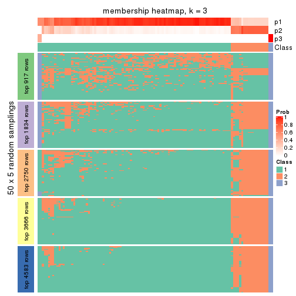
membership_heatmap(res, k = 4)
membership_heatmap(res, k = 5)
membership_heatmap(res, k = 6)
As soon as we have had the classes for columns, we can look for signatures which are significantly different between classes which can be candidate marks for certain classes. Following are the heatmaps for signatures.
Signature heatmaps where rows are scaled:
get_signatures(res, k = 2)
get_signatures(res, k = 3)
get_signatures(res, k = 4)
get_signatures(res, k = 5)
get_signatures(res, k = 6)
Signature heatmaps where rows are not scaled:
get_signatures(res, k = 2, scale_rows = FALSE)
get_signatures(res, k = 3, scale_rows = FALSE)
get_signatures(res, k = 4, scale_rows = FALSE)
get_signatures(res, k = 5, scale_rows = FALSE)
get_signatures(res, k = 6, scale_rows = FALSE)
Compare the overlap of signatures from different k:
compare_signatures(res)
get_signature() returns a data frame invisibly. TO get the list of signatures, the function
call should be assigned to a variable explicitly. In following code, if plot argument is set
to FALSE, no heatmap is plotted while only the differential analysis is performed.
# code only for demonstration
tb = get_signature(res, k = ..., plot = FALSE)
An example of the output of tb is:
#> which_row fdr mean_1 mean_2 scaled_mean_1 scaled_mean_2 km
#> 1 38 0.042760348 8.373488 9.131774 -0.5533452 0.5164555 1
#> 2 40 0.018707592 7.106213 8.469186 -0.6173731 0.5762149 1
#> 3 55 0.019134737 10.221463 11.207825 -0.6159697 0.5749050 1
#> 4 59 0.006059896 5.921854 7.869574 -0.6899429 0.6439467 1
#> 5 60 0.018055526 8.928898 10.211722 -0.6204761 0.5791110 1
#> 6 98 0.009384629 15.714769 14.887706 0.6635654 -0.6193277 2
...
The columns in tb are:
which_row: row indices corresponding to the input matrix.fdr: FDR for the differential test. mean_x: The mean value in group x.scaled_mean_x: The mean value in group x after rows are scaled.km: Row groups if k-means clustering is applied to rows.UMAP plot which shows how samples are separated.
dimension_reduction(res, k = 2, method = "UMAP")
dimension_reduction(res, k = 3, method = "UMAP")
dimension_reduction(res, k = 4, method = "UMAP")
dimension_reduction(res, k = 5, method = "UMAP")
dimension_reduction(res, k = 6, method = "UMAP")
Following heatmap shows how subgroups are split when increasing k:
collect_classes(res)
If matrix rows can be associated to genes, consider to use GO_Enrichment(res,
...) to perform function enrichment for the signature genes.
The object with results only for a single top-value method and a single partition method can be extracted as:
res = res_list["CV", "kmeans"]
# you can also extract it by
# res = res_list["CV:kmeans"]
A summary of res and all the functions that can be applied to it:
res
#> A 'ConsensusPartition' object with k = 2, 3, 4, 5, 6.
#> On a matrix with 9166 rows and 112 columns.
#> Top rows (917, 1834, 2750, 3666, 4583) are extracted by 'CV' method.
#> Subgroups are detected by 'kmeans' method.
#> Performed in total 1250 partitions by row resampling.
#> Best k for subgroups seems to be 4.
#>
#> Following methods can be applied to this 'ConsensusPartition' object:
#> [1] "cola_report" "collect_classes" "collect_plots"
#> [4] "collect_stats" "colnames" "compare_signatures"
#> [7] "consensus_heatmap" "dimension_reduction" "functional_enrichment"
#> [10] "get_anno_col" "get_anno" "get_classes"
#> [13] "get_consensus" "get_matrix" "get_membership"
#> [16] "get_param" "get_signatures" "get_stats"
#> [19] "is_best_k" "is_stable_k" "membership_heatmap"
#> [22] "ncol" "nrow" "plot_ecdf"
#> [25] "rownames" "select_partition_number" "show"
#> [28] "suggest_best_k" "test_to_known_factors"
collect_plots() function collects all the plots made from res for all k (number of partitions)
into one single page to provide an easy and fast comparison between different k.
collect_plots(res)
The plots are:
k and the heatmap of
predicted classes for each k.k.k.k.All the plots in panels can be made by individual functions and they are plotted later in this section.
select_partition_number() produces several plots showing different
statistics for choosing “optimized” k. There are following statistics:
k;k, the area increased is defined as \(A_k - A_{k-1}\).The detailed explanations of these statistics can be found in the cola vignette.
Generally speaking, lower PAC score, higher mean silhouette score or higher
concordance corresponds to better partition. Rand index and Jaccard index
measure how similar the current partition is compared to partition with k-1.
If they are too similar, we won't accept k is better than k-1.
select_partition_number(res)
The numeric values for all these statistics can be obtained by get_stats().
get_stats(res)
#> k 1-PAC mean_silhouette concordance area_increased Rand Jaccard
#> 2 2 0.719 0.959 0.968 0.231 0.740 0.740
#> 3 3 0.431 0.659 0.803 0.918 0.907 0.880
#> 4 4 0.536 0.712 0.856 0.299 0.727 0.616
#> 5 5 0.513 0.651 0.786 0.136 0.902 0.789
#> 6 6 0.471 0.593 0.738 0.106 0.864 0.673
suggest_best_k() suggests the best \(k\) based on these statistics. The rules are as follows:
NA.suggest_best_k(res)
#> [1] 4
Following shows the table of the partitions (You need to click the show/hide
code output link to see it). The membership matrix (columns with name p*)
is inferred by
clue::cl_consensus()
function with the SE method. Basically the value in the membership matrix
represents the probability to belong to a certain group. The finall class
label for an item is determined with the group with highest probability it
belongs to.
In get_classes() function, the entropy is calculated from the membership
matrix and the silhouette score is calculated from the consensus matrix.
cbind(get_classes(res, k = 2), get_membership(res, k = 2))
#> class entropy silhouette p1 p2
#> SRR1003755 1 0.4939 0.861 0.892 0.108
#> SRR1003756 1 0.4939 0.861 0.892 0.108
#> SRR1003757 1 0.4939 0.861 0.892 0.108
#> SRR1003758 1 0.4939 0.861 0.892 0.108
#> SRR1003759 1 0.0000 0.991 1.000 0.000
#> SRR1003760 2 0.4939 0.927 0.108 0.892
#> SRR1003761 2 0.4939 0.927 0.108 0.892
#> SRR1003762 2 0.4939 0.927 0.108 0.892
#> SRR1003763 2 0.9996 0.312 0.488 0.512
#> SRR1003764 2 0.4939 0.927 0.108 0.892
#> SRR1003765 2 0.4939 0.927 0.108 0.892
#> SRR1003766 2 0.4939 0.927 0.108 0.892
#> SRR1003767 2 0.4939 0.927 0.108 0.892
#> SRR1003768 2 0.4939 0.927 0.108 0.892
#> SRR1003769 2 0.4939 0.927 0.108 0.892
#> SRR1003770 2 0.4939 0.927 0.108 0.892
#> SRR1003771 2 0.4939 0.927 0.108 0.892
#> SRR1003773 1 0.0000 0.991 1.000 0.000
#> SRR1003772 1 0.0000 0.991 1.000 0.000
#> SRR1003774 1 0.0000 0.991 1.000 0.000
#> SRR1003775 1 0.0000 0.991 1.000 0.000
#> SRR1003776 1 0.0000 0.991 1.000 0.000
#> SRR1003777 1 0.0000 0.991 1.000 0.000
#> SRR1003778 2 0.9754 0.532 0.408 0.592
#> SRR1003779 1 0.0000 0.991 1.000 0.000
#> SRR1003780 2 0.4939 0.927 0.108 0.892
#> SRR1003781 1 0.0000 0.991 1.000 0.000
#> SRR1003784 1 0.0000 0.991 1.000 0.000
#> SRR1003785 1 0.0000 0.991 1.000 0.000
#> SRR1003786 1 0.0000 0.991 1.000 0.000
#> SRR1003783 1 0.0000 0.991 1.000 0.000
#> SRR1003787 1 0.0000 0.991 1.000 0.000
#> SRR1003788 1 0.0000 0.991 1.000 0.000
#> SRR1003789 2 0.4939 0.927 0.108 0.892
#> SRR1003790 1 0.0000 0.991 1.000 0.000
#> SRR1003791 1 0.0000 0.991 1.000 0.000
#> SRR1003792 1 0.0000 0.991 1.000 0.000
#> SRR1003793 1 0.0000 0.991 1.000 0.000
#> SRR1003794 1 0.0000 0.991 1.000 0.000
#> SRR1003795 1 0.4431 0.877 0.908 0.092
#> SRR1003796 2 0.9944 0.415 0.456 0.544
#> SRR1003797 1 0.0000 0.991 1.000 0.000
#> SRR1003798 1 0.0000 0.991 1.000 0.000
#> SRR1003799 1 0.0000 0.991 1.000 0.000
#> SRR1003800 1 0.0000 0.991 1.000 0.000
#> SRR1003801 1 0.0000 0.991 1.000 0.000
#> SRR1003802 1 0.0000 0.991 1.000 0.000
#> SRR1003803 1 0.0000 0.991 1.000 0.000
#> SRR1003804 1 0.0000 0.991 1.000 0.000
#> SRR1003805 1 0.0000 0.991 1.000 0.000
#> SRR1003806 1 0.0000 0.991 1.000 0.000
#> SRR1003807 1 0.0000 0.991 1.000 0.000
#> SRR1003809 1 0.0000 0.991 1.000 0.000
#> SRR1003808 1 0.2603 0.941 0.956 0.044
#> SRR1003810 1 0.0000 0.991 1.000 0.000
#> SRR1003811 1 0.0000 0.991 1.000 0.000
#> SRR1003812 1 0.0000 0.991 1.000 0.000
#> SRR1003813 1 0.0000 0.991 1.000 0.000
#> SRR1003814 1 0.0000 0.991 1.000 0.000
#> SRR1003815 1 0.0000 0.991 1.000 0.000
#> SRR1003816 1 0.0000 0.991 1.000 0.000
#> SRR1003817 1 0.0000 0.991 1.000 0.000
#> SRR1003818 1 0.0000 0.991 1.000 0.000
#> SRR1003819 1 0.0000 0.991 1.000 0.000
#> SRR1003820 1 0.0000 0.991 1.000 0.000
#> SRR1003821 1 0.0000 0.991 1.000 0.000
#> SRR1003822 1 0.0000 0.991 1.000 0.000
#> SRR1003824 1 0.0000 0.991 1.000 0.000
#> SRR1003823 1 0.0000 0.991 1.000 0.000
#> SRR1003825 1 0.0000 0.991 1.000 0.000
#> SRR1003826 1 0.0000 0.991 1.000 0.000
#> SRR1003827 1 0.0000 0.991 1.000 0.000
#> SRR1003828 1 0.0000 0.991 1.000 0.000
#> SRR1003829 1 0.0000 0.991 1.000 0.000
#> SRR1003830 1 0.0000 0.991 1.000 0.000
#> SRR1003831 1 0.0000 0.991 1.000 0.000
#> SRR1003832 1 0.0000 0.991 1.000 0.000
#> SRR1003833 1 0.0000 0.991 1.000 0.000
#> SRR1003834 1 0.0000 0.991 1.000 0.000
#> SRR1003836 1 0.0000 0.991 1.000 0.000
#> SRR1003835 1 0.0000 0.991 1.000 0.000
#> SRR1003838 1 0.0000 0.991 1.000 0.000
#> SRR1003837 1 0.0000 0.991 1.000 0.000
#> SRR1003839 1 0.0000 0.991 1.000 0.000
#> SRR1003840 1 0.5946 0.794 0.856 0.144
#> SRR1003841 2 0.4939 0.927 0.108 0.892
#> SRR1003842 1 0.0000 0.991 1.000 0.000
#> SRR1003844 1 0.0000 0.991 1.000 0.000
#> SRR1003845 1 0.0672 0.982 0.992 0.008
#> SRR1003846 1 0.0000 0.991 1.000 0.000
#> SRR1003847 1 0.0000 0.991 1.000 0.000
#> SRR1003848 1 0.0000 0.991 1.000 0.000
#> SRR1003849 1 0.0000 0.991 1.000 0.000
#> SRR1003850 1 0.0000 0.991 1.000 0.000
#> SRR1003851 1 0.0000 0.991 1.000 0.000
#> SRR1003852 1 0.0938 0.978 0.988 0.012
#> SRR1003853 1 0.0000 0.991 1.000 0.000
#> SRR1003854 1 0.0000 0.991 1.000 0.000
#> SRR1003843 1 0.0000 0.991 1.000 0.000
#> SRR1003855 1 0.0000 0.991 1.000 0.000
#> SRR1003856 1 0.0000 0.991 1.000 0.000
#> SRR1003857 1 0.0000 0.991 1.000 0.000
#> SRR1003858 1 0.0000 0.991 1.000 0.000
#> SRR1003859 1 0.0000 0.991 1.000 0.000
#> SRR1003860 1 0.0000 0.991 1.000 0.000
#> SRR1003861 1 0.0000 0.991 1.000 0.000
#> SRR1003862 1 0.0000 0.991 1.000 0.000
#> SRR1003863 1 0.0000 0.991 1.000 0.000
#> SRR1003864 1 0.0000 0.991 1.000 0.000
#> SRR1003865 1 0.0000 0.991 1.000 0.000
#> SRR1003866 1 0.0000 0.991 1.000 0.000
#> SRR1003867 1 0.0000 0.991 1.000 0.000
cbind(get_classes(res, k = 3), get_membership(res, k = 3))
#> class entropy silhouette p1 p2 p3
#> SRR1003755 3 0.3267 0.995 0.116 0.000 0.884
#> SRR1003756 3 0.3267 0.995 0.116 0.000 0.884
#> SRR1003757 3 0.3340 0.995 0.120 0.000 0.880
#> SRR1003758 3 0.3340 0.995 0.120 0.000 0.880
#> SRR1003759 1 0.3192 0.636 0.888 0.000 0.112
#> SRR1003760 2 0.3769 0.863 0.016 0.880 0.104
#> SRR1003761 2 0.4172 0.852 0.028 0.868 0.104
#> SRR1003762 2 0.3618 0.865 0.012 0.884 0.104
#> SRR1003763 2 0.8792 0.118 0.432 0.456 0.112
#> SRR1003764 2 0.3539 0.868 0.012 0.888 0.100
#> SRR1003765 2 0.0000 0.905 0.000 1.000 0.000
#> SRR1003766 2 0.0237 0.905 0.000 0.996 0.004
#> SRR1003767 2 0.0000 0.905 0.000 1.000 0.000
#> SRR1003768 2 0.0237 0.905 0.000 0.996 0.004
#> SRR1003769 2 0.0237 0.905 0.000 0.996 0.004
#> SRR1003770 2 0.0000 0.905 0.000 1.000 0.000
#> SRR1003771 2 0.0000 0.905 0.000 1.000 0.000
#> SRR1003773 1 0.3192 0.636 0.888 0.000 0.112
#> SRR1003772 1 0.6244 0.473 0.560 0.000 0.440
#> SRR1003774 1 0.1031 0.708 0.976 0.000 0.024
#> SRR1003775 1 0.6244 0.473 0.560 0.000 0.440
#> SRR1003776 1 0.4974 0.667 0.764 0.000 0.236
#> SRR1003777 1 0.6204 0.499 0.576 0.000 0.424
#> SRR1003778 1 0.5263 0.560 0.824 0.060 0.116
#> SRR1003779 1 0.6235 0.480 0.564 0.000 0.436
#> SRR1003780 2 0.0592 0.906 0.000 0.988 0.012
#> SRR1003781 1 0.3340 0.709 0.880 0.000 0.120
#> SRR1003784 1 0.1411 0.686 0.964 0.000 0.036
#> SRR1003785 1 0.3192 0.636 0.888 0.000 0.112
#> SRR1003786 1 0.6244 0.473 0.560 0.000 0.440
#> SRR1003783 1 0.6244 0.473 0.560 0.000 0.440
#> SRR1003787 1 0.3482 0.709 0.872 0.000 0.128
#> SRR1003788 1 0.0747 0.706 0.984 0.000 0.016
#> SRR1003789 2 0.1860 0.895 0.000 0.948 0.052
#> SRR1003790 1 0.6235 0.481 0.564 0.000 0.436
#> SRR1003791 1 0.3192 0.636 0.888 0.000 0.112
#> SRR1003792 1 0.3879 0.703 0.848 0.000 0.152
#> SRR1003793 1 0.6126 0.531 0.600 0.000 0.400
#> SRR1003794 1 0.4062 0.699 0.836 0.000 0.164
#> SRR1003795 1 0.3267 0.632 0.884 0.000 0.116
#> SRR1003796 1 0.5166 0.565 0.828 0.056 0.116
#> SRR1003797 1 0.3879 0.703 0.848 0.000 0.152
#> SRR1003798 1 0.2537 0.713 0.920 0.000 0.080
#> SRR1003799 1 0.6244 0.473 0.560 0.000 0.440
#> SRR1003800 1 0.3038 0.711 0.896 0.000 0.104
#> SRR1003801 1 0.1031 0.708 0.976 0.000 0.024
#> SRR1003802 1 0.2165 0.714 0.936 0.000 0.064
#> SRR1003803 1 0.4062 0.700 0.836 0.000 0.164
#> SRR1003804 1 0.5988 0.565 0.632 0.000 0.368
#> SRR1003805 1 0.5926 0.577 0.644 0.000 0.356
#> SRR1003806 1 0.6154 0.520 0.592 0.000 0.408
#> SRR1003807 1 0.1860 0.677 0.948 0.000 0.052
#> SRR1003809 1 0.1411 0.686 0.964 0.000 0.036
#> SRR1003808 1 0.3192 0.636 0.888 0.000 0.112
#> SRR1003810 1 0.4062 0.700 0.836 0.000 0.164
#> SRR1003811 1 0.6235 0.480 0.564 0.000 0.436
#> SRR1003812 1 0.6244 0.473 0.560 0.000 0.440
#> SRR1003813 1 0.1529 0.684 0.960 0.000 0.040
#> SRR1003814 1 0.2959 0.712 0.900 0.000 0.100
#> SRR1003815 1 0.6244 0.473 0.560 0.000 0.440
#> SRR1003816 1 0.6168 0.516 0.588 0.000 0.412
#> SRR1003817 1 0.6244 0.473 0.560 0.000 0.440
#> SRR1003818 1 0.5465 0.635 0.712 0.000 0.288
#> SRR1003819 1 0.3192 0.636 0.888 0.000 0.112
#> SRR1003820 1 0.6244 0.473 0.560 0.000 0.440
#> SRR1003821 1 0.6244 0.473 0.560 0.000 0.440
#> SRR1003822 1 0.1529 0.684 0.960 0.000 0.040
#> SRR1003824 1 0.5591 0.618 0.696 0.000 0.304
#> SRR1003823 1 0.6215 0.493 0.572 0.000 0.428
#> SRR1003825 1 0.0892 0.704 0.980 0.000 0.020
#> SRR1003826 1 0.4346 0.692 0.816 0.000 0.184
#> SRR1003827 1 0.5835 0.593 0.660 0.000 0.340
#> SRR1003828 1 0.1163 0.707 0.972 0.000 0.028
#> SRR1003829 1 0.3267 0.710 0.884 0.000 0.116
#> SRR1003830 1 0.6204 0.499 0.576 0.000 0.424
#> SRR1003831 1 0.1163 0.708 0.972 0.000 0.028
#> SRR1003832 1 0.6244 0.473 0.560 0.000 0.440
#> SRR1003833 1 0.2261 0.713 0.932 0.000 0.068
#> SRR1003834 1 0.1529 0.684 0.960 0.000 0.040
#> SRR1003836 1 0.0892 0.692 0.980 0.000 0.020
#> SRR1003835 1 0.1031 0.703 0.976 0.000 0.024
#> SRR1003838 1 0.3192 0.636 0.888 0.000 0.112
#> SRR1003837 1 0.5178 0.644 0.744 0.000 0.256
#> SRR1003839 1 0.1753 0.680 0.952 0.000 0.048
#> SRR1003840 1 0.3192 0.636 0.888 0.000 0.112
#> SRR1003841 2 0.0592 0.906 0.000 0.988 0.012
#> SRR1003842 1 0.6111 0.535 0.604 0.000 0.396
#> SRR1003844 1 0.6079 0.544 0.612 0.000 0.388
#> SRR1003845 1 0.3192 0.636 0.888 0.000 0.112
#> SRR1003846 1 0.6215 0.493 0.572 0.000 0.428
#> SRR1003847 1 0.2356 0.714 0.928 0.000 0.072
#> SRR1003848 1 0.6154 0.510 0.592 0.000 0.408
#> SRR1003849 1 0.3192 0.636 0.888 0.000 0.112
#> SRR1003850 1 0.0592 0.704 0.988 0.000 0.012
#> SRR1003851 1 0.3192 0.636 0.888 0.000 0.112
#> SRR1003852 1 0.3192 0.636 0.888 0.000 0.112
#> SRR1003853 1 0.1289 0.709 0.968 0.000 0.032
#> SRR1003854 1 0.4796 0.676 0.780 0.000 0.220
#> SRR1003843 1 0.3192 0.636 0.888 0.000 0.112
#> SRR1003855 1 0.5733 0.606 0.676 0.000 0.324
#> SRR1003856 1 0.2711 0.654 0.912 0.000 0.088
#> SRR1003857 1 0.6095 0.540 0.608 0.000 0.392
#> SRR1003858 1 0.3619 0.707 0.864 0.000 0.136
#> SRR1003859 1 0.6235 0.480 0.564 0.000 0.436
#> SRR1003860 1 0.4796 0.676 0.780 0.000 0.220
#> SRR1003861 1 0.1964 0.713 0.944 0.000 0.056
#> SRR1003862 1 0.6168 0.515 0.588 0.000 0.412
#> SRR1003863 1 0.6244 0.473 0.560 0.000 0.440
#> SRR1003864 1 0.6235 0.481 0.564 0.000 0.436
#> SRR1003865 1 0.1964 0.679 0.944 0.000 0.056
#> SRR1003866 1 0.1860 0.709 0.948 0.000 0.052
#> SRR1003867 1 0.3267 0.710 0.884 0.000 0.116
cbind(get_classes(res, k = 4), get_membership(res, k = 4))
#> class entropy silhouette p1 p2 p3 p4
#> SRR1003755 4 0.1792 0.9719 0.068 0.000 0.000 0.932
#> SRR1003756 4 0.1792 0.9719 0.068 0.000 0.000 0.932
#> SRR1003757 4 0.2149 0.9721 0.088 0.000 0.000 0.912
#> SRR1003758 4 0.2149 0.9721 0.088 0.000 0.000 0.912
#> SRR1003759 3 0.4741 0.6471 0.228 0.000 0.744 0.028
#> SRR1003760 2 0.5997 0.6052 0.000 0.576 0.376 0.048
#> SRR1003761 2 0.6087 0.5612 0.000 0.540 0.412 0.048
#> SRR1003762 2 0.5821 0.6192 0.000 0.592 0.368 0.040
#> SRR1003763 3 0.7333 -0.2284 0.068 0.364 0.528 0.040
#> SRR1003764 2 0.5746 0.6341 0.000 0.612 0.348 0.040
#> SRR1003765 2 0.0000 0.8022 0.000 1.000 0.000 0.000
#> SRR1003766 2 0.0376 0.8021 0.000 0.992 0.004 0.004
#> SRR1003767 2 0.0000 0.8022 0.000 1.000 0.000 0.000
#> SRR1003768 2 0.0376 0.8021 0.000 0.992 0.004 0.004
#> SRR1003769 2 0.0376 0.8021 0.000 0.992 0.004 0.004
#> SRR1003770 2 0.0000 0.8022 0.000 1.000 0.000 0.000
#> SRR1003771 2 0.0000 0.8022 0.000 1.000 0.000 0.000
#> SRR1003773 3 0.1488 0.6961 0.012 0.000 0.956 0.032
#> SRR1003772 1 0.2149 0.8293 0.912 0.000 0.000 0.088
#> SRR1003774 1 0.4866 0.2573 0.596 0.000 0.404 0.000
#> SRR1003775 1 0.2149 0.8293 0.912 0.000 0.000 0.088
#> SRR1003776 1 0.1398 0.8348 0.956 0.000 0.040 0.004
#> SRR1003777 1 0.1716 0.8388 0.936 0.000 0.000 0.064
#> SRR1003778 3 0.1209 0.6829 0.004 0.000 0.964 0.032
#> SRR1003779 1 0.2081 0.8315 0.916 0.000 0.000 0.084
#> SRR1003780 2 0.2300 0.7963 0.000 0.920 0.064 0.016
#> SRR1003781 1 0.1305 0.8335 0.960 0.000 0.036 0.004
#> SRR1003784 3 0.4792 0.5667 0.312 0.000 0.680 0.008
#> SRR1003785 3 0.1182 0.7118 0.016 0.000 0.968 0.016
#> SRR1003786 1 0.2149 0.8293 0.912 0.000 0.000 0.088
#> SRR1003783 1 0.2149 0.8293 0.912 0.000 0.000 0.088
#> SRR1003787 1 0.1209 0.8343 0.964 0.000 0.032 0.004
#> SRR1003788 1 0.4699 0.4835 0.676 0.000 0.320 0.004
#> SRR1003789 2 0.4035 0.7458 0.000 0.804 0.176 0.020
#> SRR1003790 1 0.2149 0.8293 0.912 0.000 0.000 0.088
#> SRR1003791 3 0.2011 0.7348 0.080 0.000 0.920 0.000
#> SRR1003792 1 0.1109 0.8346 0.968 0.000 0.028 0.004
#> SRR1003793 1 0.1488 0.8438 0.956 0.000 0.012 0.032
#> SRR1003794 1 0.1576 0.8299 0.948 0.000 0.048 0.004
#> SRR1003795 3 0.1109 0.6876 0.004 0.000 0.968 0.028
#> SRR1003796 3 0.1209 0.6829 0.004 0.000 0.964 0.032
#> SRR1003797 1 0.2081 0.8118 0.916 0.000 0.084 0.000
#> SRR1003798 1 0.4898 0.2223 0.584 0.000 0.416 0.000
#> SRR1003799 1 0.2334 0.8292 0.908 0.000 0.004 0.088
#> SRR1003800 1 0.1661 0.8289 0.944 0.000 0.052 0.004
#> SRR1003801 1 0.4830 0.3054 0.608 0.000 0.392 0.000
#> SRR1003802 1 0.5535 0.2794 0.560 0.000 0.420 0.020
#> SRR1003803 1 0.1936 0.8440 0.940 0.000 0.028 0.032
#> SRR1003804 1 0.2521 0.8395 0.912 0.000 0.024 0.064
#> SRR1003805 1 0.1637 0.8412 0.940 0.000 0.000 0.060
#> SRR1003806 1 0.2053 0.8383 0.924 0.000 0.004 0.072
#> SRR1003807 3 0.4889 0.5006 0.360 0.000 0.636 0.004
#> SRR1003809 3 0.4792 0.5655 0.312 0.000 0.680 0.008
#> SRR1003808 3 0.2281 0.7301 0.096 0.000 0.904 0.000
#> SRR1003810 1 0.2704 0.7812 0.876 0.000 0.124 0.000
#> SRR1003811 1 0.4424 0.7953 0.812 0.000 0.100 0.088
#> SRR1003812 1 0.2149 0.8293 0.912 0.000 0.000 0.088
#> SRR1003813 3 0.4560 0.5964 0.296 0.000 0.700 0.004
#> SRR1003814 1 0.3172 0.7466 0.840 0.000 0.160 0.000
#> SRR1003815 1 0.2149 0.8293 0.912 0.000 0.000 0.088
#> SRR1003816 1 0.2266 0.8332 0.912 0.000 0.004 0.084
#> SRR1003817 1 0.2149 0.8293 0.912 0.000 0.000 0.088
#> SRR1003818 1 0.0707 0.8378 0.980 0.000 0.020 0.000
#> SRR1003819 3 0.2125 0.7374 0.076 0.000 0.920 0.004
#> SRR1003820 1 0.1716 0.8385 0.936 0.000 0.000 0.064
#> SRR1003821 1 0.2081 0.8310 0.916 0.000 0.000 0.084
#> SRR1003822 3 0.4722 0.5881 0.300 0.000 0.692 0.008
#> SRR1003824 1 0.1837 0.8441 0.944 0.000 0.028 0.028
#> SRR1003823 1 0.2081 0.8316 0.916 0.000 0.000 0.084
#> SRR1003825 1 0.4907 0.2120 0.580 0.000 0.420 0.000
#> SRR1003826 1 0.1305 0.8335 0.960 0.000 0.036 0.004
#> SRR1003827 1 0.1151 0.8375 0.968 0.000 0.024 0.008
#> SRR1003828 1 0.4925 0.1915 0.572 0.000 0.428 0.000
#> SRR1003829 1 0.1557 0.8284 0.944 0.000 0.056 0.000
#> SRR1003830 1 0.2334 0.8310 0.908 0.000 0.004 0.088
#> SRR1003831 1 0.4372 0.5860 0.728 0.000 0.268 0.004
#> SRR1003832 1 0.2149 0.8293 0.912 0.000 0.000 0.088
#> SRR1003833 1 0.2654 0.7913 0.888 0.000 0.108 0.004
#> SRR1003834 3 0.4933 0.3298 0.432 0.000 0.568 0.000
#> SRR1003836 3 0.5168 0.1163 0.492 0.000 0.504 0.004
#> SRR1003835 1 0.3610 0.6957 0.800 0.000 0.200 0.000
#> SRR1003838 3 0.1520 0.7159 0.024 0.000 0.956 0.020
#> SRR1003837 1 0.1938 0.8349 0.936 0.000 0.052 0.012
#> SRR1003839 1 0.4994 -0.0685 0.520 0.000 0.480 0.000
#> SRR1003840 3 0.2542 0.7235 0.084 0.000 0.904 0.012
#> SRR1003841 2 0.2300 0.7963 0.000 0.920 0.064 0.016
#> SRR1003842 1 0.2081 0.8347 0.916 0.000 0.000 0.084
#> SRR1003844 1 0.2266 0.8358 0.912 0.000 0.004 0.084
#> SRR1003845 3 0.2466 0.7295 0.096 0.000 0.900 0.004
#> SRR1003846 1 0.1807 0.8429 0.940 0.000 0.008 0.052
#> SRR1003847 1 0.1302 0.8321 0.956 0.000 0.044 0.000
#> SRR1003848 1 0.2376 0.8418 0.916 0.000 0.016 0.068
#> SRR1003849 3 0.1059 0.7076 0.012 0.000 0.972 0.016
#> SRR1003850 1 0.4916 0.2024 0.576 0.000 0.424 0.000
#> SRR1003851 3 0.1629 0.7156 0.024 0.000 0.952 0.024
#> SRR1003852 3 0.2345 0.7291 0.100 0.000 0.900 0.000
#> SRR1003853 1 0.4313 0.5955 0.736 0.000 0.260 0.004
#> SRR1003854 1 0.1022 0.8346 0.968 0.000 0.032 0.000
#> SRR1003843 3 0.1902 0.7316 0.064 0.000 0.932 0.004
#> SRR1003855 1 0.0937 0.8417 0.976 0.000 0.012 0.012
#> SRR1003856 3 0.4372 0.6359 0.268 0.000 0.728 0.004
#> SRR1003857 1 0.2125 0.8368 0.920 0.000 0.004 0.076
#> SRR1003858 1 0.3908 0.6724 0.784 0.000 0.212 0.004
#> SRR1003859 1 0.2149 0.8293 0.912 0.000 0.000 0.088
#> SRR1003860 1 0.1209 0.8359 0.964 0.000 0.032 0.004
#> SRR1003861 1 0.2773 0.7866 0.880 0.000 0.116 0.004
#> SRR1003862 1 0.2401 0.8318 0.904 0.000 0.004 0.092
#> SRR1003863 1 0.2149 0.8293 0.912 0.000 0.000 0.088
#> SRR1003864 1 0.1474 0.8411 0.948 0.000 0.000 0.052
#> SRR1003865 1 0.4964 0.2884 0.616 0.000 0.380 0.004
#> SRR1003866 1 0.3402 0.7395 0.832 0.000 0.164 0.004
#> SRR1003867 1 0.1305 0.8337 0.960 0.000 0.036 0.004
cbind(get_classes(res, k = 5), get_membership(res, k = 5))
#> class entropy silhouette p1 p2 p3 p4 p5
#> SRR1003755 4 0.0510 0.96861 0.016 0.000 0.000 0.984 0.000
#> SRR1003756 4 0.0510 0.96861 0.016 0.000 0.000 0.984 0.000
#> SRR1003757 4 0.0963 0.96859 0.036 0.000 0.000 0.964 0.000
#> SRR1003758 4 0.0963 0.96859 0.036 0.000 0.000 0.964 0.000
#> SRR1003759 5 0.5180 -0.08805 0.060 0.000 0.292 0.004 0.644
#> SRR1003760 5 0.5442 0.59722 0.000 0.380 0.056 0.004 0.560
#> SRR1003761 5 0.5543 0.60687 0.000 0.356 0.068 0.004 0.572
#> SRR1003762 5 0.5230 0.51345 0.000 0.452 0.044 0.000 0.504
#> SRR1003763 5 0.5973 0.56808 0.004 0.332 0.112 0.000 0.552
#> SRR1003764 5 0.5044 0.47970 0.000 0.464 0.032 0.000 0.504
#> SRR1003765 2 0.0162 0.87887 0.000 0.996 0.000 0.000 0.004
#> SRR1003766 2 0.0324 0.87882 0.000 0.992 0.000 0.004 0.004
#> SRR1003767 2 0.0451 0.87775 0.000 0.988 0.000 0.004 0.008
#> SRR1003768 2 0.0324 0.87882 0.000 0.992 0.000 0.004 0.004
#> SRR1003769 2 0.0324 0.87882 0.000 0.992 0.000 0.004 0.004
#> SRR1003770 2 0.0162 0.87887 0.000 0.996 0.000 0.000 0.004
#> SRR1003771 2 0.0451 0.87775 0.000 0.988 0.000 0.004 0.008
#> SRR1003773 3 0.2890 0.49477 0.000 0.000 0.836 0.004 0.160
#> SRR1003772 1 0.0992 0.83273 0.968 0.000 0.000 0.008 0.024
#> SRR1003774 3 0.6110 0.09019 0.396 0.000 0.476 0.000 0.128
#> SRR1003775 1 0.0898 0.83264 0.972 0.000 0.000 0.008 0.020
#> SRR1003776 1 0.3309 0.80713 0.836 0.000 0.036 0.000 0.128
#> SRR1003777 1 0.1798 0.83561 0.928 0.000 0.004 0.004 0.064
#> SRR1003778 3 0.3861 0.37649 0.000 0.000 0.712 0.004 0.284
#> SRR1003779 1 0.0992 0.83256 0.968 0.000 0.000 0.008 0.024
#> SRR1003780 2 0.3394 0.70013 0.000 0.824 0.020 0.004 0.152
#> SRR1003781 1 0.3477 0.80568 0.824 0.000 0.040 0.000 0.136
#> SRR1003784 3 0.3670 0.55799 0.068 0.000 0.820 0.000 0.112
#> SRR1003785 3 0.2787 0.51054 0.004 0.000 0.856 0.004 0.136
#> SRR1003786 1 0.1331 0.83628 0.952 0.000 0.000 0.008 0.040
#> SRR1003783 1 0.0898 0.83168 0.972 0.000 0.000 0.008 0.020
#> SRR1003787 1 0.3531 0.79666 0.816 0.000 0.036 0.000 0.148
#> SRR1003788 1 0.6615 0.24310 0.444 0.000 0.324 0.000 0.232
#> SRR1003789 2 0.4372 0.40075 0.000 0.712 0.024 0.004 0.260
#> SRR1003790 1 0.0693 0.83117 0.980 0.000 0.000 0.008 0.012
#> SRR1003791 3 0.3934 0.50457 0.008 0.000 0.716 0.000 0.276
#> SRR1003792 1 0.1628 0.84117 0.936 0.000 0.008 0.000 0.056
#> SRR1003793 1 0.1628 0.84008 0.936 0.000 0.008 0.000 0.056
#> SRR1003794 1 0.3321 0.82511 0.832 0.000 0.032 0.000 0.136
#> SRR1003795 3 0.3790 0.41573 0.000 0.000 0.724 0.004 0.272
#> SRR1003796 3 0.3579 0.41645 0.000 0.000 0.756 0.004 0.240
#> SRR1003797 1 0.4125 0.77749 0.772 0.000 0.056 0.000 0.172
#> SRR1003798 1 0.6347 0.15711 0.460 0.000 0.376 0.000 0.164
#> SRR1003799 1 0.2968 0.82170 0.872 0.000 0.028 0.008 0.092
#> SRR1003800 1 0.4104 0.79206 0.788 0.000 0.088 0.000 0.124
#> SRR1003801 3 0.6105 0.09275 0.392 0.000 0.480 0.000 0.128
#> SRR1003802 3 0.6219 -0.02435 0.420 0.000 0.440 0.000 0.140
#> SRR1003803 1 0.4210 0.79166 0.784 0.000 0.072 0.004 0.140
#> SRR1003804 1 0.4023 0.78656 0.804 0.000 0.096 0.004 0.096
#> SRR1003805 1 0.1518 0.83732 0.944 0.000 0.004 0.004 0.048
#> SRR1003806 1 0.1408 0.83545 0.948 0.000 0.000 0.008 0.044
#> SRR1003807 3 0.4535 0.55859 0.160 0.000 0.748 0.000 0.092
#> SRR1003809 3 0.3688 0.55917 0.124 0.000 0.816 0.000 0.060
#> SRR1003808 3 0.5167 0.36591 0.044 0.000 0.552 0.000 0.404
#> SRR1003810 1 0.4528 0.75913 0.752 0.000 0.104 0.000 0.144
#> SRR1003811 1 0.5623 0.62575 0.652 0.000 0.220 0.008 0.120
#> SRR1003812 1 0.1857 0.83815 0.928 0.000 0.004 0.008 0.060
#> SRR1003813 3 0.3476 0.56516 0.076 0.000 0.836 0.000 0.088
#> SRR1003814 1 0.5158 0.67836 0.676 0.000 0.100 0.000 0.224
#> SRR1003815 1 0.1331 0.83322 0.952 0.000 0.000 0.008 0.040
#> SRR1003816 1 0.1697 0.83432 0.932 0.000 0.000 0.008 0.060
#> SRR1003817 1 0.0798 0.83132 0.976 0.000 0.000 0.008 0.016
#> SRR1003818 1 0.2351 0.82901 0.896 0.000 0.016 0.000 0.088
#> SRR1003819 3 0.2763 0.54897 0.004 0.000 0.848 0.000 0.148
#> SRR1003820 1 0.1041 0.83382 0.964 0.000 0.000 0.004 0.032
#> SRR1003821 1 0.0955 0.83462 0.968 0.000 0.000 0.004 0.028
#> SRR1003822 3 0.3176 0.56612 0.064 0.000 0.856 0.000 0.080
#> SRR1003824 1 0.4886 0.69577 0.712 0.000 0.188 0.000 0.100
#> SRR1003823 1 0.3246 0.82138 0.848 0.000 0.024 0.008 0.120
#> SRR1003825 3 0.5989 0.25597 0.336 0.000 0.536 0.000 0.128
#> SRR1003826 1 0.2825 0.82067 0.860 0.000 0.016 0.000 0.124
#> SRR1003827 1 0.1502 0.83614 0.940 0.000 0.004 0.000 0.056
#> SRR1003828 1 0.6618 -0.00249 0.400 0.000 0.384 0.000 0.216
#> SRR1003829 1 0.3714 0.80960 0.812 0.000 0.056 0.000 0.132
#> SRR1003830 1 0.1788 0.83436 0.932 0.000 0.004 0.008 0.056
#> SRR1003831 1 0.6127 0.46530 0.552 0.000 0.276 0.000 0.172
#> SRR1003832 1 0.1644 0.83429 0.940 0.000 0.004 0.008 0.048
#> SRR1003833 1 0.5664 0.64144 0.628 0.000 0.152 0.000 0.220
#> SRR1003834 3 0.5759 0.50030 0.200 0.000 0.620 0.000 0.180
#> SRR1003836 3 0.5909 0.46375 0.244 0.000 0.592 0.000 0.164
#> SRR1003835 1 0.6496 0.34468 0.488 0.000 0.280 0.000 0.232
#> SRR1003838 3 0.2787 0.51788 0.004 0.000 0.856 0.004 0.136
#> SRR1003837 1 0.5006 0.71901 0.708 0.000 0.156 0.000 0.136
#> SRR1003839 3 0.6701 0.29345 0.300 0.000 0.428 0.000 0.272
#> SRR1003840 3 0.4632 0.27496 0.012 0.000 0.540 0.000 0.448
#> SRR1003841 2 0.3394 0.70013 0.000 0.824 0.020 0.004 0.152
#> SRR1003842 1 0.3346 0.81808 0.848 0.000 0.036 0.008 0.108
#> SRR1003844 1 0.1251 0.83457 0.956 0.000 0.000 0.008 0.036
#> SRR1003845 3 0.4298 0.41363 0.008 0.000 0.640 0.000 0.352
#> SRR1003846 1 0.1442 0.83781 0.952 0.000 0.012 0.004 0.032
#> SRR1003847 1 0.4069 0.79229 0.792 0.000 0.096 0.000 0.112
#> SRR1003848 1 0.2673 0.83117 0.892 0.000 0.044 0.004 0.060
#> SRR1003849 3 0.2536 0.50559 0.000 0.000 0.868 0.004 0.128
#> SRR1003850 3 0.6146 0.08202 0.400 0.000 0.468 0.000 0.132
#> SRR1003851 3 0.2646 0.52185 0.004 0.000 0.868 0.004 0.124
#> SRR1003852 3 0.4682 0.32763 0.016 0.000 0.564 0.000 0.420
#> SRR1003853 1 0.6525 0.38218 0.484 0.000 0.252 0.000 0.264
#> SRR1003854 1 0.2793 0.82956 0.876 0.000 0.036 0.000 0.088
#> SRR1003843 3 0.3990 0.43248 0.004 0.000 0.688 0.000 0.308
#> SRR1003855 1 0.3657 0.81047 0.820 0.000 0.064 0.000 0.116
#> SRR1003856 3 0.2969 0.55397 0.020 0.000 0.852 0.000 0.128
#> SRR1003857 1 0.3077 0.82677 0.864 0.000 0.028 0.008 0.100
#> SRR1003858 1 0.5271 0.67473 0.680 0.000 0.168 0.000 0.152
#> SRR1003859 1 0.1717 0.83358 0.936 0.000 0.004 0.008 0.052
#> SRR1003860 1 0.2448 0.83777 0.892 0.000 0.020 0.000 0.088
#> SRR1003861 1 0.5190 0.69390 0.688 0.000 0.140 0.000 0.172
#> SRR1003862 1 0.2291 0.83414 0.908 0.000 0.012 0.008 0.072
#> SRR1003863 1 0.1483 0.83552 0.952 0.000 0.012 0.008 0.028
#> SRR1003864 1 0.1251 0.83475 0.956 0.000 0.000 0.008 0.036
#> SRR1003865 1 0.6736 0.08729 0.412 0.000 0.312 0.000 0.276
#> SRR1003866 1 0.4936 0.71215 0.712 0.000 0.116 0.000 0.172
#> SRR1003867 1 0.3099 0.82926 0.848 0.000 0.028 0.000 0.124
cbind(get_classes(res, k = 6), get_membership(res, k = 6))
#> class entropy silhouette p1 p2 p3 p4 p5 p6
#> SRR1003755 5 0.0000 0.9540 0.000 0.000 0.000 0.000 1.00 0.000
#> SRR1003756 5 0.0000 0.9540 0.000 0.000 0.000 0.000 1.00 0.000
#> SRR1003757 5 0.1049 0.9540 0.032 0.000 0.000 0.000 0.96 0.008
#> SRR1003758 5 0.1049 0.9540 0.032 0.000 0.000 0.000 0.96 0.008
#> SRR1003759 6 0.4696 0.1850 0.008 0.000 0.040 0.352 0.00 0.600
#> SRR1003760 6 0.4793 0.6777 0.000 0.264 0.048 0.024 0.00 0.664
#> SRR1003761 6 0.4871 0.6730 0.000 0.232 0.056 0.032 0.00 0.680
#> SRR1003762 6 0.5279 0.6238 0.000 0.376 0.036 0.040 0.00 0.548
#> SRR1003763 6 0.5569 0.6570 0.000 0.328 0.036 0.072 0.00 0.564
#> SRR1003764 6 0.5225 0.6182 0.000 0.380 0.032 0.040 0.00 0.548
#> SRR1003765 2 0.0260 0.8863 0.000 0.992 0.000 0.008 0.00 0.000
#> SRR1003766 2 0.0405 0.8843 0.000 0.988 0.000 0.004 0.00 0.008
#> SRR1003767 2 0.0260 0.8867 0.000 0.992 0.000 0.008 0.00 0.000
#> SRR1003768 2 0.0405 0.8843 0.000 0.988 0.000 0.004 0.00 0.008
#> SRR1003769 2 0.0405 0.8843 0.000 0.988 0.000 0.004 0.00 0.008
#> SRR1003770 2 0.0260 0.8863 0.000 0.992 0.000 0.008 0.00 0.000
#> SRR1003771 2 0.0260 0.8867 0.000 0.992 0.000 0.008 0.00 0.000
#> SRR1003773 3 0.1434 0.7109 0.000 0.000 0.940 0.048 0.00 0.012
#> SRR1003772 1 0.0806 0.7674 0.972 0.000 0.000 0.008 0.00 0.020
#> SRR1003774 4 0.6515 0.5247 0.276 0.000 0.132 0.512 0.00 0.080
#> SRR1003775 1 0.1088 0.7698 0.960 0.000 0.000 0.024 0.00 0.016
#> SRR1003776 1 0.4190 0.6034 0.692 0.000 0.000 0.260 0.00 0.048
#> SRR1003777 1 0.2554 0.7616 0.876 0.000 0.000 0.076 0.00 0.048
#> SRR1003778 3 0.2384 0.6569 0.000 0.000 0.888 0.048 0.00 0.064
#> SRR1003779 1 0.1642 0.7725 0.936 0.000 0.004 0.032 0.00 0.028
#> SRR1003780 2 0.3192 0.7257 0.000 0.828 0.020 0.016 0.00 0.136
#> SRR1003781 1 0.4637 0.5398 0.628 0.000 0.000 0.308 0.00 0.064
#> SRR1003784 3 0.5642 0.1986 0.016 0.000 0.468 0.420 0.00 0.096
#> SRR1003785 3 0.1838 0.7183 0.000 0.000 0.916 0.068 0.00 0.016
#> SRR1003786 1 0.0725 0.7687 0.976 0.000 0.000 0.012 0.00 0.012
#> SRR1003783 1 0.0508 0.7665 0.984 0.000 0.000 0.004 0.00 0.012
#> SRR1003787 1 0.4534 0.3976 0.580 0.000 0.000 0.380 0.00 0.040
#> SRR1003788 4 0.4492 0.5912 0.148 0.000 0.028 0.744 0.00 0.080
#> SRR1003789 2 0.4285 0.4798 0.000 0.716 0.028 0.024 0.00 0.232
#> SRR1003790 1 0.0777 0.7702 0.972 0.000 0.000 0.024 0.00 0.004
#> SRR1003791 4 0.5046 0.2614 0.000 0.000 0.224 0.632 0.00 0.144
#> SRR1003792 1 0.3328 0.7663 0.816 0.000 0.000 0.120 0.00 0.064
#> SRR1003793 1 0.2129 0.7756 0.904 0.000 0.000 0.056 0.00 0.040
#> SRR1003794 1 0.4579 0.7001 0.696 0.000 0.004 0.208 0.00 0.092
#> SRR1003795 3 0.3167 0.6292 0.000 0.000 0.832 0.096 0.00 0.072
#> SRR1003796 3 0.2237 0.6566 0.000 0.000 0.896 0.036 0.00 0.068
#> SRR1003797 1 0.4604 0.5518 0.636 0.000 0.000 0.300 0.00 0.064
#> SRR1003798 4 0.6307 0.5081 0.256 0.000 0.132 0.544 0.00 0.068
#> SRR1003799 1 0.3576 0.7283 0.800 0.000 0.004 0.136 0.00 0.060
#> SRR1003800 1 0.4955 0.4283 0.548 0.000 0.004 0.388 0.00 0.060
#> SRR1003801 4 0.6449 0.5026 0.184 0.000 0.240 0.520 0.00 0.056
#> SRR1003802 4 0.7401 0.2812 0.300 0.000 0.232 0.344 0.00 0.124
#> SRR1003803 1 0.4982 0.6555 0.656 0.000 0.008 0.228 0.00 0.108
#> SRR1003804 1 0.4884 0.6138 0.672 0.000 0.024 0.240 0.00 0.064
#> SRR1003805 1 0.2822 0.7653 0.864 0.000 0.004 0.076 0.00 0.056
#> SRR1003806 1 0.1738 0.7733 0.928 0.000 0.004 0.052 0.00 0.016
#> SRR1003807 4 0.6018 0.4185 0.124 0.000 0.292 0.544 0.00 0.040
#> SRR1003809 3 0.6121 0.2951 0.064 0.000 0.528 0.316 0.00 0.092
#> SRR1003808 4 0.5669 0.2866 0.020 0.000 0.188 0.600 0.00 0.192
#> SRR1003810 1 0.5559 0.3177 0.524 0.000 0.028 0.376 0.00 0.072
#> SRR1003811 1 0.6138 0.4107 0.564 0.000 0.068 0.256 0.00 0.112
#> SRR1003812 1 0.1257 0.7713 0.952 0.000 0.000 0.028 0.00 0.020
#> SRR1003813 3 0.5447 0.2205 0.020 0.000 0.480 0.432 0.00 0.068
#> SRR1003814 1 0.5470 0.2004 0.500 0.000 0.020 0.408 0.00 0.072
#> SRR1003815 1 0.1572 0.7722 0.936 0.000 0.000 0.036 0.00 0.028
#> SRR1003816 1 0.2145 0.7635 0.900 0.000 0.000 0.072 0.00 0.028
#> SRR1003817 1 0.0603 0.7659 0.980 0.000 0.000 0.004 0.00 0.016
#> SRR1003818 1 0.3027 0.7251 0.824 0.000 0.000 0.148 0.00 0.028
#> SRR1003819 4 0.4783 -0.1060 0.000 0.000 0.428 0.520 0.00 0.052
#> SRR1003820 1 0.1151 0.7696 0.956 0.000 0.000 0.012 0.00 0.032
#> SRR1003821 1 0.1261 0.7711 0.952 0.000 0.000 0.024 0.00 0.024
#> SRR1003822 3 0.5233 0.3546 0.016 0.000 0.568 0.348 0.00 0.068
#> SRR1003824 1 0.5975 0.1847 0.476 0.000 0.036 0.388 0.00 0.100
#> SRR1003823 1 0.4193 0.7099 0.748 0.000 0.008 0.168 0.00 0.076
#> SRR1003825 4 0.6327 0.5289 0.140 0.000 0.156 0.584 0.00 0.120
#> SRR1003826 1 0.3555 0.7013 0.776 0.000 0.000 0.184 0.00 0.040
#> SRR1003827 1 0.2365 0.7744 0.888 0.000 0.000 0.072 0.00 0.040
#> SRR1003828 4 0.5508 0.5877 0.156 0.000 0.092 0.668 0.00 0.084
#> SRR1003829 1 0.4900 0.5364 0.592 0.000 0.000 0.328 0.00 0.080
#> SRR1003830 1 0.2499 0.7669 0.880 0.000 0.000 0.072 0.00 0.048
#> SRR1003831 4 0.5431 0.5449 0.260 0.000 0.068 0.624 0.00 0.048
#> SRR1003832 1 0.2542 0.7669 0.876 0.000 0.000 0.080 0.00 0.044
#> SRR1003833 4 0.4554 0.4908 0.244 0.000 0.012 0.688 0.00 0.056
#> SRR1003834 4 0.5605 0.5021 0.092 0.000 0.188 0.648 0.00 0.072
#> SRR1003836 4 0.6090 0.5140 0.116 0.000 0.152 0.612 0.00 0.120
#> SRR1003835 4 0.5196 0.5509 0.236 0.000 0.024 0.648 0.00 0.092
#> SRR1003838 3 0.2747 0.7014 0.000 0.000 0.860 0.096 0.00 0.044
#> SRR1003837 1 0.5626 0.0492 0.456 0.000 0.028 0.444 0.00 0.072
#> SRR1003839 4 0.4260 0.5808 0.120 0.000 0.036 0.772 0.00 0.072
#> SRR1003840 4 0.5786 0.1010 0.000 0.000 0.188 0.468 0.00 0.344
#> SRR1003841 2 0.3192 0.7257 0.000 0.828 0.020 0.016 0.00 0.136
#> SRR1003842 1 0.4376 0.6919 0.724 0.000 0.004 0.180 0.00 0.092
#> SRR1003844 1 0.2070 0.7695 0.908 0.000 0.000 0.044 0.00 0.048
#> SRR1003845 4 0.5417 0.1897 0.000 0.000 0.268 0.568 0.00 0.164
#> SRR1003846 1 0.2971 0.7682 0.860 0.000 0.012 0.076 0.00 0.052
#> SRR1003847 1 0.4841 0.3152 0.536 0.000 0.004 0.412 0.00 0.048
#> SRR1003848 1 0.4081 0.7214 0.768 0.000 0.016 0.152 0.00 0.064
#> SRR1003849 3 0.1471 0.7186 0.000 0.000 0.932 0.064 0.00 0.004
#> SRR1003850 4 0.6109 0.5439 0.208 0.000 0.164 0.576 0.00 0.052
#> SRR1003851 3 0.3439 0.6787 0.000 0.000 0.808 0.120 0.00 0.072
#> SRR1003852 4 0.5630 0.2426 0.012 0.000 0.192 0.588 0.00 0.208
#> SRR1003853 4 0.3491 0.5955 0.148 0.000 0.008 0.804 0.00 0.040
#> SRR1003854 1 0.4234 0.6170 0.676 0.000 0.000 0.280 0.00 0.044
#> SRR1003843 4 0.5700 -0.1239 0.000 0.000 0.404 0.436 0.00 0.160
#> SRR1003855 1 0.4910 0.5709 0.628 0.000 0.008 0.292 0.00 0.072
#> SRR1003856 4 0.5448 -0.1540 0.008 0.000 0.432 0.468 0.00 0.092
#> SRR1003857 1 0.4168 0.7138 0.756 0.000 0.008 0.148 0.00 0.088
#> SRR1003858 1 0.5314 0.2538 0.520 0.000 0.028 0.404 0.00 0.048
#> SRR1003859 1 0.2147 0.7640 0.896 0.000 0.000 0.084 0.00 0.020
#> SRR1003860 1 0.4278 0.6920 0.712 0.000 0.000 0.212 0.00 0.076
#> SRR1003861 4 0.4649 0.2336 0.380 0.000 0.000 0.572 0.00 0.048
#> SRR1003862 1 0.2511 0.7675 0.880 0.000 0.000 0.064 0.00 0.056
#> SRR1003863 1 0.1341 0.7716 0.948 0.000 0.000 0.028 0.00 0.024
#> SRR1003864 1 0.1245 0.7711 0.952 0.000 0.000 0.032 0.00 0.016
#> SRR1003865 4 0.5157 0.5473 0.148 0.000 0.032 0.684 0.00 0.136
#> SRR1003866 1 0.5135 0.3886 0.560 0.000 0.016 0.368 0.00 0.056
#> SRR1003867 1 0.4373 0.7111 0.720 0.000 0.004 0.192 0.00 0.084
Heatmaps for the consensus matrix. It visualizes the probability of two samples to be in a same group.
consensus_heatmap(res, k = 2)
consensus_heatmap(res, k = 3)
consensus_heatmap(res, k = 4)
consensus_heatmap(res, k = 5)
consensus_heatmap(res, k = 6)
Heatmaps for the membership of samples in all partitions to see how consistent they are:
membership_heatmap(res, k = 2)
membership_heatmap(res, k = 3)
membership_heatmap(res, k = 4)
membership_heatmap(res, k = 5)
membership_heatmap(res, k = 6)
As soon as we have had the classes for columns, we can look for signatures which are significantly different between classes which can be candidate marks for certain classes. Following are the heatmaps for signatures.
Signature heatmaps where rows are scaled:
get_signatures(res, k = 2)
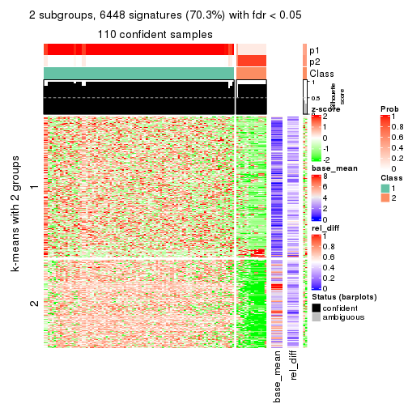
get_signatures(res, k = 3)
get_signatures(res, k = 4)
get_signatures(res, k = 5)
get_signatures(res, k = 6)
Signature heatmaps where rows are not scaled:
get_signatures(res, k = 2, scale_rows = FALSE)
get_signatures(res, k = 3, scale_rows = FALSE)
get_signatures(res, k = 4, scale_rows = FALSE)
get_signatures(res, k = 5, scale_rows = FALSE)
get_signatures(res, k = 6, scale_rows = FALSE)
Compare the overlap of signatures from different k:
compare_signatures(res)
get_signature() returns a data frame invisibly. TO get the list of signatures, the function
call should be assigned to a variable explicitly. In following code, if plot argument is set
to FALSE, no heatmap is plotted while only the differential analysis is performed.
# code only for demonstration
tb = get_signature(res, k = ..., plot = FALSE)
An example of the output of tb is:
#> which_row fdr mean_1 mean_2 scaled_mean_1 scaled_mean_2 km
#> 1 38 0.042760348 8.373488 9.131774 -0.5533452 0.5164555 1
#> 2 40 0.018707592 7.106213 8.469186 -0.6173731 0.5762149 1
#> 3 55 0.019134737 10.221463 11.207825 -0.6159697 0.5749050 1
#> 4 59 0.006059896 5.921854 7.869574 -0.6899429 0.6439467 1
#> 5 60 0.018055526 8.928898 10.211722 -0.6204761 0.5791110 1
#> 6 98 0.009384629 15.714769 14.887706 0.6635654 -0.6193277 2
...
The columns in tb are:
which_row: row indices corresponding to the input matrix.fdr: FDR for the differential test. mean_x: The mean value in group x.scaled_mean_x: The mean value in group x after rows are scaled.km: Row groups if k-means clustering is applied to rows.UMAP plot which shows how samples are separated.
dimension_reduction(res, k = 2, method = "UMAP")
dimension_reduction(res, k = 3, method = "UMAP")
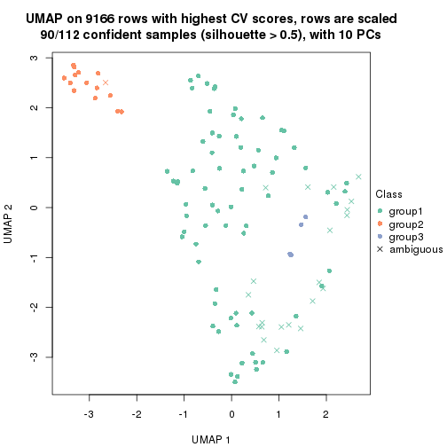
dimension_reduction(res, k = 4, method = "UMAP")
dimension_reduction(res, k = 5, method = "UMAP")
dimension_reduction(res, k = 6, method = "UMAP")
Following heatmap shows how subgroups are split when increasing k:
collect_classes(res)
If matrix rows can be associated to genes, consider to use GO_Enrichment(res,
...) to perform function enrichment for the signature genes.
The object with results only for a single top-value method and a single partition method can be extracted as:
res = res_list["CV", "skmeans"]
# you can also extract it by
# res = res_list["CV:skmeans"]
A summary of res and all the functions that can be applied to it:
res
#> A 'ConsensusPartition' object with k = 2, 3, 4, 5, 6.
#> On a matrix with 9166 rows and 112 columns.
#> Top rows (917, 1834, 2750, 3666, 4583) are extracted by 'CV' method.
#> Subgroups are detected by 'skmeans' method.
#> Performed in total 1250 partitions by row resampling.
#> Best k for subgroups seems to be 2.
#>
#> Following methods can be applied to this 'ConsensusPartition' object:
#> [1] "cola_report" "collect_classes" "collect_plots"
#> [4] "collect_stats" "colnames" "compare_signatures"
#> [7] "consensus_heatmap" "dimension_reduction" "functional_enrichment"
#> [10] "get_anno_col" "get_anno" "get_classes"
#> [13] "get_consensus" "get_matrix" "get_membership"
#> [16] "get_param" "get_signatures" "get_stats"
#> [19] "is_best_k" "is_stable_k" "membership_heatmap"
#> [22] "ncol" "nrow" "plot_ecdf"
#> [25] "rownames" "select_partition_number" "show"
#> [28] "suggest_best_k" "test_to_known_factors"
collect_plots() function collects all the plots made from res for all k (number of partitions)
into one single page to provide an easy and fast comparison between different k.
collect_plots(res)
The plots are:
k and the heatmap of
predicted classes for each k.k.k.k.All the plots in panels can be made by individual functions and they are plotted later in this section.
select_partition_number() produces several plots showing different
statistics for choosing “optimized” k. There are following statistics:
k;k, the area increased is defined as \(A_k - A_{k-1}\).The detailed explanations of these statistics can be found in the cola vignette.
Generally speaking, lower PAC score, higher mean silhouette score or higher
concordance corresponds to better partition. Rand index and Jaccard index
measure how similar the current partition is compared to partition with k-1.
If they are too similar, we won't accept k is better than k-1.
select_partition_number(res)
The numeric values for all these statistics can be obtained by get_stats().
get_stats(res)
#> k 1-PAC mean_silhouette concordance area_increased Rand Jaccard
#> 2 2 0.638 0.820 0.923 0.4754 0.532 0.532
#> 3 3 0.326 0.604 0.746 0.3665 0.795 0.629
#> 4 4 0.334 0.394 0.633 0.1332 0.887 0.708
#> 5 5 0.373 0.307 0.563 0.0646 0.929 0.773
#> 6 6 0.388 0.237 0.503 0.0435 0.903 0.663
suggest_best_k() suggests the best \(k\) based on these statistics. The rules are as follows:
NA.suggest_best_k(res)
#> [1] 2
Following shows the table of the partitions (You need to click the show/hide
code output link to see it). The membership matrix (columns with name p*)
is inferred by
clue::cl_consensus()
function with the SE method. Basically the value in the membership matrix
represents the probability to belong to a certain group. The finall class
label for an item is determined with the group with highest probability it
belongs to.
In get_classes() function, the entropy is calculated from the membership
matrix and the silhouette score is calculated from the consensus matrix.
cbind(get_classes(res, k = 2), get_membership(res, k = 2))
#> class entropy silhouette p1 p2
#> SRR1003755 1 0.0000 0.9175 1.000 0.000
#> SRR1003756 1 0.0000 0.9175 1.000 0.000
#> SRR1003757 1 0.0000 0.9175 1.000 0.000
#> SRR1003758 1 0.0000 0.9175 1.000 0.000
#> SRR1003759 2 0.0376 0.9080 0.004 0.996
#> SRR1003760 2 0.0000 0.9107 0.000 1.000
#> SRR1003761 2 0.0000 0.9107 0.000 1.000
#> SRR1003762 2 0.0000 0.9107 0.000 1.000
#> SRR1003763 2 0.0000 0.9107 0.000 1.000
#> SRR1003764 2 0.0000 0.9107 0.000 1.000
#> SRR1003765 2 0.0000 0.9107 0.000 1.000
#> SRR1003766 2 0.0000 0.9107 0.000 1.000
#> SRR1003767 2 0.0000 0.9107 0.000 1.000
#> SRR1003768 2 0.0000 0.9107 0.000 1.000
#> SRR1003769 2 0.0000 0.9107 0.000 1.000
#> SRR1003770 2 0.0000 0.9107 0.000 1.000
#> SRR1003771 2 0.0000 0.9107 0.000 1.000
#> SRR1003773 2 0.0000 0.9107 0.000 1.000
#> SRR1003772 1 0.0000 0.9175 1.000 0.000
#> SRR1003774 1 0.8955 0.5752 0.688 0.312
#> SRR1003775 1 0.0000 0.9175 1.000 0.000
#> SRR1003776 1 0.0672 0.9148 0.992 0.008
#> SRR1003777 1 0.0000 0.9175 1.000 0.000
#> SRR1003778 2 0.0000 0.9107 0.000 1.000
#> SRR1003779 1 0.0000 0.9175 1.000 0.000
#> SRR1003780 2 0.0000 0.9107 0.000 1.000
#> SRR1003781 1 0.6531 0.7951 0.832 0.168
#> SRR1003784 1 0.9996 0.0343 0.512 0.488
#> SRR1003785 2 0.0000 0.9107 0.000 1.000
#> SRR1003786 1 0.0000 0.9175 1.000 0.000
#> SRR1003783 1 0.0000 0.9175 1.000 0.000
#> SRR1003787 1 0.1843 0.9058 0.972 0.028
#> SRR1003788 1 0.9491 0.4552 0.632 0.368
#> SRR1003789 2 0.0000 0.9107 0.000 1.000
#> SRR1003790 1 0.0000 0.9175 1.000 0.000
#> SRR1003791 2 0.0000 0.9107 0.000 1.000
#> SRR1003792 1 0.3431 0.8853 0.936 0.064
#> SRR1003793 1 0.0000 0.9175 1.000 0.000
#> SRR1003794 1 0.0672 0.9147 0.992 0.008
#> SRR1003795 2 0.0000 0.9107 0.000 1.000
#> SRR1003796 2 0.0000 0.9107 0.000 1.000
#> SRR1003797 1 0.4690 0.8584 0.900 0.100
#> SRR1003798 1 0.7883 0.7077 0.764 0.236
#> SRR1003799 1 0.0000 0.9175 1.000 0.000
#> SRR1003800 1 0.0000 0.9175 1.000 0.000
#> SRR1003801 1 0.9795 0.3243 0.584 0.416
#> SRR1003802 1 0.1633 0.9076 0.976 0.024
#> SRR1003803 1 0.3274 0.8878 0.940 0.060
#> SRR1003804 1 0.0000 0.9175 1.000 0.000
#> SRR1003805 1 0.0376 0.9161 0.996 0.004
#> SRR1003806 1 0.0000 0.9175 1.000 0.000
#> SRR1003807 2 0.6148 0.7776 0.152 0.848
#> SRR1003809 2 0.9993 0.0407 0.484 0.516
#> SRR1003808 2 0.0000 0.9107 0.000 1.000
#> SRR1003810 1 0.2043 0.9039 0.968 0.032
#> SRR1003811 1 0.0000 0.9175 1.000 0.000
#> SRR1003812 1 0.0000 0.9175 1.000 0.000
#> SRR1003813 2 0.9635 0.3861 0.388 0.612
#> SRR1003814 2 0.9996 -0.0056 0.488 0.512
#> SRR1003815 1 0.0000 0.9175 1.000 0.000
#> SRR1003816 1 0.0000 0.9175 1.000 0.000
#> SRR1003817 1 0.0000 0.9175 1.000 0.000
#> SRR1003818 1 0.0000 0.9175 1.000 0.000
#> SRR1003819 2 0.0000 0.9107 0.000 1.000
#> SRR1003820 1 0.0000 0.9175 1.000 0.000
#> SRR1003821 1 0.0000 0.9175 1.000 0.000
#> SRR1003822 2 0.9087 0.5306 0.324 0.676
#> SRR1003824 1 0.0000 0.9175 1.000 0.000
#> SRR1003823 1 0.0000 0.9175 1.000 0.000
#> SRR1003825 1 0.7745 0.7189 0.772 0.228
#> SRR1003826 1 0.0938 0.9131 0.988 0.012
#> SRR1003827 1 0.0000 0.9175 1.000 0.000
#> SRR1003828 1 0.9993 0.0870 0.516 0.484
#> SRR1003829 1 0.4562 0.8617 0.904 0.096
#> SRR1003830 1 0.0000 0.9175 1.000 0.000
#> SRR1003831 1 0.9552 0.4332 0.624 0.376
#> SRR1003832 1 0.0000 0.9175 1.000 0.000
#> SRR1003833 1 0.3733 0.8791 0.928 0.072
#> SRR1003834 2 0.9580 0.3861 0.380 0.620
#> SRR1003836 1 0.9129 0.5056 0.672 0.328
#> SRR1003835 1 0.6712 0.7777 0.824 0.176
#> SRR1003838 2 0.0000 0.9107 0.000 1.000
#> SRR1003837 1 0.0000 0.9175 1.000 0.000
#> SRR1003839 2 0.4022 0.8513 0.080 0.920
#> SRR1003840 2 0.0000 0.9107 0.000 1.000
#> SRR1003841 2 0.0000 0.9107 0.000 1.000
#> SRR1003842 1 0.0000 0.9175 1.000 0.000
#> SRR1003844 1 0.0000 0.9175 1.000 0.000
#> SRR1003845 2 0.0000 0.9107 0.000 1.000
#> SRR1003846 1 0.0000 0.9175 1.000 0.000
#> SRR1003847 1 0.6973 0.7649 0.812 0.188
#> SRR1003848 1 0.0000 0.9175 1.000 0.000
#> SRR1003849 2 0.0000 0.9107 0.000 1.000
#> SRR1003850 1 0.9248 0.5239 0.660 0.340
#> SRR1003851 2 0.1184 0.9004 0.016 0.984
#> SRR1003852 2 0.0000 0.9107 0.000 1.000
#> SRR1003853 1 0.4815 0.8554 0.896 0.104
#> SRR1003854 1 0.1633 0.9078 0.976 0.024
#> SRR1003843 2 0.0000 0.9107 0.000 1.000
#> SRR1003855 1 0.0000 0.9175 1.000 0.000
#> SRR1003856 2 0.7299 0.7255 0.204 0.796
#> SRR1003857 1 0.0000 0.9175 1.000 0.000
#> SRR1003858 1 0.5737 0.8261 0.864 0.136
#> SRR1003859 1 0.0000 0.9175 1.000 0.000
#> SRR1003860 1 0.0000 0.9175 1.000 0.000
#> SRR1003861 1 0.8386 0.6585 0.732 0.268
#> SRR1003862 1 0.0000 0.9175 1.000 0.000
#> SRR1003863 1 0.0000 0.9175 1.000 0.000
#> SRR1003864 1 0.0000 0.9175 1.000 0.000
#> SRR1003865 2 0.9754 0.3471 0.408 0.592
#> SRR1003866 2 0.9248 0.4900 0.340 0.660
#> SRR1003867 1 0.6438 0.7991 0.836 0.164
cbind(get_classes(res, k = 3), get_membership(res, k = 3))
#> class entropy silhouette p1 p2 p3
#> SRR1003755 1 0.0592 0.69850 0.988 0.000 0.012
#> SRR1003756 1 0.0592 0.69850 0.988 0.000 0.012
#> SRR1003757 1 0.0592 0.69850 0.988 0.000 0.012
#> SRR1003758 1 0.0592 0.69850 0.988 0.000 0.012
#> SRR1003759 2 0.3989 0.79455 0.012 0.864 0.124
#> SRR1003760 2 0.0000 0.86745 0.000 1.000 0.000
#> SRR1003761 2 0.0000 0.86745 0.000 1.000 0.000
#> SRR1003762 2 0.0000 0.86745 0.000 1.000 0.000
#> SRR1003763 2 0.0000 0.86745 0.000 1.000 0.000
#> SRR1003764 2 0.0000 0.86745 0.000 1.000 0.000
#> SRR1003765 2 0.0000 0.86745 0.000 1.000 0.000
#> SRR1003766 2 0.0000 0.86745 0.000 1.000 0.000
#> SRR1003767 2 0.0000 0.86745 0.000 1.000 0.000
#> SRR1003768 2 0.0000 0.86745 0.000 1.000 0.000
#> SRR1003769 2 0.0000 0.86745 0.000 1.000 0.000
#> SRR1003770 2 0.0000 0.86745 0.000 1.000 0.000
#> SRR1003771 2 0.0000 0.86745 0.000 1.000 0.000
#> SRR1003773 2 0.4702 0.74790 0.000 0.788 0.212
#> SRR1003772 1 0.3340 0.72302 0.880 0.000 0.120
#> SRR1003774 3 0.9030 0.41612 0.388 0.136 0.476
#> SRR1003775 1 0.3619 0.72722 0.864 0.000 0.136
#> SRR1003776 1 0.6275 0.52540 0.644 0.008 0.348
#> SRR1003777 1 0.4452 0.71252 0.808 0.000 0.192
#> SRR1003778 2 0.2537 0.84257 0.000 0.920 0.080
#> SRR1003779 1 0.3879 0.72403 0.848 0.000 0.152
#> SRR1003780 2 0.0000 0.86745 0.000 1.000 0.000
#> SRR1003781 1 0.9266 -0.23730 0.424 0.156 0.420
#> SRR1003784 3 0.8917 0.60922 0.244 0.188 0.568
#> SRR1003785 2 0.5363 0.67401 0.000 0.724 0.276
#> SRR1003786 1 0.2711 0.71977 0.912 0.000 0.088
#> SRR1003783 1 0.2796 0.71659 0.908 0.000 0.092
#> SRR1003787 3 0.6825 -0.27174 0.488 0.012 0.500
#> SRR1003788 3 0.9198 0.59970 0.280 0.192 0.528
#> SRR1003789 2 0.0000 0.86745 0.000 1.000 0.000
#> SRR1003790 1 0.4235 0.71982 0.824 0.000 0.176
#> SRR1003791 2 0.5058 0.69374 0.000 0.756 0.244
#> SRR1003792 1 0.8411 0.15656 0.508 0.088 0.404
#> SRR1003793 1 0.4750 0.70698 0.784 0.000 0.216
#> SRR1003794 1 0.6297 0.53426 0.640 0.008 0.352
#> SRR1003795 2 0.2261 0.84978 0.000 0.932 0.068
#> SRR1003796 2 0.2959 0.83325 0.000 0.900 0.100
#> SRR1003797 1 0.8373 0.22616 0.524 0.088 0.388
#> SRR1003798 3 0.7968 0.37986 0.372 0.068 0.560
#> SRR1003799 1 0.4121 0.70566 0.832 0.000 0.168
#> SRR1003800 1 0.6460 0.32088 0.556 0.004 0.440
#> SRR1003801 3 0.9442 0.58334 0.288 0.216 0.496
#> SRR1003802 1 0.6936 0.03593 0.524 0.016 0.460
#> SRR1003803 1 0.7699 0.26236 0.560 0.052 0.388
#> SRR1003804 1 0.5621 0.56560 0.692 0.000 0.308
#> SRR1003805 1 0.5158 0.69987 0.764 0.004 0.232
#> SRR1003806 1 0.4842 0.69324 0.776 0.000 0.224
#> SRR1003807 3 0.9069 0.29335 0.136 0.424 0.440
#> SRR1003809 3 0.9141 0.54103 0.360 0.152 0.488
#> SRR1003808 2 0.1860 0.85293 0.000 0.948 0.052
#> SRR1003810 1 0.5678 0.56705 0.684 0.000 0.316
#> SRR1003811 1 0.4555 0.65458 0.800 0.000 0.200
#> SRR1003812 1 0.3686 0.72505 0.860 0.000 0.140
#> SRR1003813 3 0.8825 0.58555 0.296 0.148 0.556
#> SRR1003814 2 0.9930 -0.57463 0.360 0.364 0.276
#> SRR1003815 1 0.3038 0.72274 0.896 0.000 0.104
#> SRR1003816 1 0.3619 0.72073 0.864 0.000 0.136
#> SRR1003817 1 0.2261 0.71563 0.932 0.000 0.068
#> SRR1003818 1 0.4702 0.70105 0.788 0.000 0.212
#> SRR1003819 2 0.5292 0.69897 0.008 0.764 0.228
#> SRR1003820 1 0.4235 0.71693 0.824 0.000 0.176
#> SRR1003821 1 0.3816 0.71744 0.852 0.000 0.148
#> SRR1003822 3 0.8845 0.61345 0.240 0.184 0.576
#> SRR1003824 1 0.5988 0.43550 0.632 0.000 0.368
#> SRR1003823 1 0.4974 0.67601 0.764 0.000 0.236
#> SRR1003825 3 0.8439 0.46147 0.368 0.096 0.536
#> SRR1003826 1 0.6200 0.59268 0.676 0.012 0.312
#> SRR1003827 1 0.5810 0.60365 0.664 0.000 0.336
#> SRR1003828 3 0.9721 0.58590 0.284 0.264 0.452
#> SRR1003829 1 0.8331 -0.00684 0.484 0.080 0.436
#> SRR1003830 1 0.4291 0.71932 0.820 0.000 0.180
#> SRR1003831 3 0.9233 0.58920 0.268 0.204 0.528
#> SRR1003832 1 0.3412 0.72498 0.876 0.000 0.124
#> SRR1003833 3 0.8228 0.36919 0.364 0.084 0.552
#> SRR1003834 3 0.7333 0.60715 0.116 0.180 0.704
#> SRR1003836 3 0.7884 0.58473 0.252 0.104 0.644
#> SRR1003835 3 0.8774 0.35644 0.412 0.112 0.476
#> SRR1003838 2 0.6143 0.60601 0.012 0.684 0.304
#> SRR1003837 1 0.6026 0.47132 0.624 0.000 0.376
#> SRR1003839 2 0.8243 0.15098 0.084 0.548 0.368
#> SRR1003840 2 0.1411 0.85928 0.000 0.964 0.036
#> SRR1003841 2 0.0000 0.86745 0.000 1.000 0.000
#> SRR1003842 1 0.5138 0.66891 0.748 0.000 0.252
#> SRR1003844 1 0.3941 0.72424 0.844 0.000 0.156
#> SRR1003845 2 0.2448 0.84582 0.000 0.924 0.076
#> SRR1003846 1 0.4605 0.71028 0.796 0.000 0.204
#> SRR1003847 3 0.8618 0.35316 0.388 0.104 0.508
#> SRR1003848 1 0.5327 0.62306 0.728 0.000 0.272
#> SRR1003849 2 0.5327 0.67701 0.000 0.728 0.272
#> SRR1003850 3 0.8752 0.58381 0.284 0.148 0.568
#> SRR1003851 2 0.6721 0.47086 0.016 0.604 0.380
#> SRR1003852 2 0.1289 0.86101 0.000 0.968 0.032
#> SRR1003853 3 0.8263 0.57245 0.268 0.120 0.612
#> SRR1003854 1 0.6994 0.49575 0.612 0.028 0.360
#> SRR1003843 2 0.3755 0.81460 0.008 0.872 0.120
#> SRR1003855 1 0.5678 0.60718 0.684 0.000 0.316
#> SRR1003856 3 0.8894 0.50312 0.152 0.300 0.548
#> SRR1003857 1 0.4974 0.67917 0.764 0.000 0.236
#> SRR1003858 1 0.7924 0.34027 0.612 0.084 0.304
#> SRR1003859 1 0.4399 0.71683 0.812 0.000 0.188
#> SRR1003860 1 0.6008 0.54266 0.628 0.000 0.372
#> SRR1003861 3 0.8872 0.55758 0.288 0.156 0.556
#> SRR1003862 1 0.3551 0.72743 0.868 0.000 0.132
#> SRR1003863 1 0.0747 0.70027 0.984 0.000 0.016
#> SRR1003864 1 0.3686 0.72857 0.860 0.000 0.140
#> SRR1003865 3 0.9676 0.52613 0.348 0.220 0.432
#> SRR1003866 3 0.9866 0.52811 0.256 0.356 0.388
#> SRR1003867 1 0.9544 -0.38955 0.420 0.192 0.388
cbind(get_classes(res, k = 4), get_membership(res, k = 4))
#> class entropy silhouette p1 p2 p3 p4
#> SRR1003755 1 0.0376 0.5454 0.992 0.000 0.004 0.004
#> SRR1003756 1 0.0376 0.5454 0.992 0.000 0.004 0.004
#> SRR1003757 1 0.0336 0.5455 0.992 0.000 0.000 0.008
#> SRR1003758 1 0.0336 0.5455 0.992 0.000 0.000 0.008
#> SRR1003759 2 0.5671 0.6812 0.012 0.744 0.128 0.116
#> SRR1003760 2 0.0000 0.8303 0.000 1.000 0.000 0.000
#> SRR1003761 2 0.0000 0.8303 0.000 1.000 0.000 0.000
#> SRR1003762 2 0.0000 0.8303 0.000 1.000 0.000 0.000
#> SRR1003763 2 0.0188 0.8289 0.000 0.996 0.004 0.000
#> SRR1003764 2 0.0000 0.8303 0.000 1.000 0.000 0.000
#> SRR1003765 2 0.0000 0.8303 0.000 1.000 0.000 0.000
#> SRR1003766 2 0.0000 0.8303 0.000 1.000 0.000 0.000
#> SRR1003767 2 0.0000 0.8303 0.000 1.000 0.000 0.000
#> SRR1003768 2 0.0000 0.8303 0.000 1.000 0.000 0.000
#> SRR1003769 2 0.0000 0.8303 0.000 1.000 0.000 0.000
#> SRR1003770 2 0.0000 0.8303 0.000 1.000 0.000 0.000
#> SRR1003771 2 0.0000 0.8303 0.000 1.000 0.000 0.000
#> SRR1003773 2 0.5558 0.5686 0.000 0.640 0.324 0.036
#> SRR1003772 1 0.5083 0.5492 0.716 0.000 0.036 0.248
#> SRR1003774 3 0.9237 -0.1076 0.280 0.080 0.368 0.272
#> SRR1003775 1 0.5742 0.5319 0.664 0.000 0.060 0.276
#> SRR1003776 1 0.7618 0.2509 0.504 0.004 0.228 0.264
#> SRR1003777 1 0.5898 0.4516 0.604 0.000 0.048 0.348
#> SRR1003778 2 0.3636 0.7648 0.000 0.820 0.172 0.008
#> SRR1003779 1 0.6356 0.4522 0.596 0.000 0.084 0.320
#> SRR1003780 2 0.0000 0.8303 0.000 1.000 0.000 0.000
#> SRR1003781 4 0.8857 0.2790 0.260 0.068 0.224 0.448
#> SRR1003784 3 0.8056 0.1833 0.144 0.060 0.556 0.240
#> SRR1003785 2 0.6101 0.4148 0.000 0.560 0.388 0.052
#> SRR1003786 1 0.3853 0.5667 0.820 0.000 0.020 0.160
#> SRR1003783 1 0.4793 0.5599 0.756 0.000 0.040 0.204
#> SRR1003787 4 0.7921 0.2499 0.312 0.008 0.228 0.452
#> SRR1003788 4 0.9409 0.0547 0.196 0.120 0.308 0.376
#> SRR1003789 2 0.0000 0.8303 0.000 1.000 0.000 0.000
#> SRR1003790 1 0.5883 0.5105 0.640 0.000 0.060 0.300
#> SRR1003791 2 0.6638 0.5264 0.008 0.640 0.228 0.124
#> SRR1003792 4 0.8665 0.2503 0.352 0.052 0.188 0.408
#> SRR1003793 1 0.6859 0.3584 0.512 0.000 0.108 0.380
#> SRR1003794 4 0.8024 0.1465 0.364 0.012 0.208 0.416
#> SRR1003795 2 0.4057 0.7615 0.000 0.812 0.160 0.028
#> SRR1003796 2 0.3768 0.7534 0.000 0.808 0.184 0.008
#> SRR1003797 4 0.8344 0.2209 0.344 0.036 0.180 0.440
#> SRR1003798 3 0.8731 -0.0541 0.308 0.040 0.388 0.264
#> SRR1003799 1 0.5820 0.5248 0.700 0.000 0.108 0.192
#> SRR1003800 1 0.8048 -0.2173 0.360 0.004 0.288 0.348
#> SRR1003801 3 0.9423 0.1052 0.172 0.156 0.416 0.256
#> SRR1003802 3 0.7917 -0.1096 0.364 0.004 0.396 0.236
#> SRR1003803 1 0.8722 -0.2303 0.348 0.036 0.276 0.340
#> SRR1003804 1 0.6758 0.3986 0.604 0.000 0.156 0.240
#> SRR1003805 1 0.7169 0.3261 0.528 0.000 0.160 0.312
#> SRR1003806 1 0.6561 0.4219 0.564 0.000 0.092 0.344
#> SRR1003807 3 0.9556 0.1651 0.124 0.292 0.352 0.232
#> SRR1003809 3 0.8823 0.1311 0.252 0.080 0.472 0.196
#> SRR1003808 2 0.3820 0.7663 0.000 0.848 0.088 0.064
#> SRR1003810 1 0.7857 0.0166 0.428 0.004 0.228 0.340
#> SRR1003811 1 0.6689 0.4045 0.620 0.000 0.196 0.184
#> SRR1003812 1 0.5267 0.5460 0.740 0.000 0.076 0.184
#> SRR1003813 3 0.8112 0.2121 0.196 0.076 0.572 0.156
#> SRR1003814 4 0.9838 0.1438 0.256 0.236 0.180 0.328
#> SRR1003815 1 0.5763 0.5335 0.700 0.000 0.096 0.204
#> SRR1003816 1 0.5384 0.5427 0.728 0.000 0.076 0.196
#> SRR1003817 1 0.4839 0.5594 0.764 0.000 0.052 0.184
#> SRR1003818 1 0.6495 0.4451 0.608 0.000 0.108 0.284
#> SRR1003819 2 0.6962 0.4230 0.012 0.588 0.292 0.108
#> SRR1003820 1 0.5890 0.5052 0.660 0.000 0.072 0.268
#> SRR1003821 1 0.5772 0.5216 0.672 0.000 0.068 0.260
#> SRR1003822 3 0.8237 0.2313 0.132 0.096 0.564 0.208
#> SRR1003824 1 0.7536 0.1527 0.484 0.000 0.296 0.220
#> SRR1003823 1 0.6116 0.4912 0.668 0.000 0.112 0.220
#> SRR1003825 3 0.8853 0.0400 0.220 0.068 0.448 0.264
#> SRR1003826 4 0.7184 -0.0204 0.408 0.016 0.088 0.488
#> SRR1003827 1 0.6875 0.3369 0.520 0.000 0.112 0.368
#> SRR1003828 4 0.9693 -0.0190 0.212 0.152 0.312 0.324
#> SRR1003829 4 0.8656 0.2646 0.320 0.044 0.220 0.416
#> SRR1003830 1 0.6307 0.4696 0.620 0.000 0.092 0.288
#> SRR1003831 4 0.8848 0.1369 0.160 0.084 0.316 0.440
#> SRR1003832 1 0.5434 0.5240 0.696 0.000 0.052 0.252
#> SRR1003833 4 0.8610 0.1964 0.220 0.044 0.300 0.436
#> SRR1003834 3 0.8615 0.1756 0.116 0.124 0.516 0.244
#> SRR1003836 3 0.8551 0.1033 0.244 0.052 0.480 0.224
#> SRR1003835 4 0.8869 0.1726 0.316 0.044 0.300 0.340
#> SRR1003838 2 0.6940 0.3029 0.020 0.516 0.400 0.064
#> SRR1003837 1 0.7669 0.0128 0.452 0.000 0.312 0.236
#> SRR1003839 2 0.9493 -0.4037 0.104 0.328 0.284 0.284
#> SRR1003840 2 0.2983 0.8008 0.000 0.892 0.068 0.040
#> SRR1003841 2 0.0000 0.8303 0.000 1.000 0.000 0.000
#> SRR1003842 1 0.6538 0.4251 0.600 0.000 0.108 0.292
#> SRR1003844 1 0.5910 0.5220 0.672 0.000 0.084 0.244
#> SRR1003845 2 0.4100 0.7734 0.000 0.824 0.128 0.048
#> SRR1003846 1 0.7067 0.3499 0.552 0.000 0.160 0.288
#> SRR1003847 4 0.8878 0.2389 0.328 0.048 0.264 0.360
#> SRR1003848 1 0.7325 0.3069 0.528 0.000 0.208 0.264
#> SRR1003849 2 0.5798 0.4782 0.004 0.584 0.384 0.028
#> SRR1003850 3 0.8445 0.1412 0.152 0.064 0.492 0.292
#> SRR1003851 3 0.6842 -0.2295 0.016 0.460 0.464 0.060
#> SRR1003852 2 0.3716 0.7856 0.000 0.852 0.096 0.052
#> SRR1003853 4 0.8396 0.0941 0.212 0.028 0.368 0.392
#> SRR1003854 1 0.8294 0.0203 0.432 0.036 0.168 0.364
#> SRR1003843 2 0.5715 0.6954 0.012 0.732 0.172 0.084
#> SRR1003855 1 0.7211 0.3079 0.548 0.000 0.204 0.248
#> SRR1003856 3 0.8666 0.2353 0.112 0.160 0.524 0.204
#> SRR1003857 1 0.6890 0.3860 0.580 0.000 0.152 0.268
#> SRR1003858 1 0.8235 0.1415 0.492 0.044 0.160 0.304
#> SRR1003859 1 0.5608 0.5333 0.684 0.000 0.060 0.256
#> SRR1003860 1 0.7313 0.2608 0.508 0.000 0.176 0.316
#> SRR1003861 4 0.9599 0.0881 0.244 0.124 0.304 0.328
#> SRR1003862 1 0.5212 0.5541 0.740 0.000 0.068 0.192
#> SRR1003863 1 0.1798 0.5544 0.944 0.000 0.016 0.040
#> SRR1003864 1 0.5817 0.5365 0.676 0.000 0.076 0.248
#> SRR1003865 3 0.9759 -0.0612 0.260 0.148 0.312 0.280
#> SRR1003866 4 0.9862 0.0404 0.216 0.248 0.204 0.332
#> SRR1003867 4 0.9343 0.2445 0.268 0.116 0.208 0.408
cbind(get_classes(res, k = 5), get_membership(res, k = 5))
#> class entropy silhouette p1 p2 p3 p4 p5
#> SRR1003755 1 0.0451 0.46617 0.988 0.000 0.000 0.004 0.008
#> SRR1003756 1 0.0451 0.46617 0.988 0.000 0.000 0.004 0.008
#> SRR1003757 1 0.0579 0.46682 0.984 0.000 0.000 0.008 0.008
#> SRR1003758 1 0.0579 0.46682 0.984 0.000 0.000 0.008 0.008
#> SRR1003759 2 0.7045 0.42281 0.016 0.612 0.120 0.160 0.092
#> SRR1003760 2 0.0162 0.83139 0.000 0.996 0.004 0.000 0.000
#> SRR1003761 2 0.0290 0.83131 0.000 0.992 0.008 0.000 0.000
#> SRR1003762 2 0.0162 0.83149 0.000 0.996 0.000 0.004 0.000
#> SRR1003763 2 0.0324 0.83024 0.000 0.992 0.004 0.004 0.000
#> SRR1003764 2 0.0162 0.83149 0.000 0.996 0.000 0.004 0.000
#> SRR1003765 2 0.0000 0.83206 0.000 1.000 0.000 0.000 0.000
#> SRR1003766 2 0.0000 0.83206 0.000 1.000 0.000 0.000 0.000
#> SRR1003767 2 0.0000 0.83206 0.000 1.000 0.000 0.000 0.000
#> SRR1003768 2 0.0000 0.83206 0.000 1.000 0.000 0.000 0.000
#> SRR1003769 2 0.0000 0.83206 0.000 1.000 0.000 0.000 0.000
#> SRR1003770 2 0.0000 0.83206 0.000 1.000 0.000 0.000 0.000
#> SRR1003771 2 0.0000 0.83206 0.000 1.000 0.000 0.000 0.000
#> SRR1003773 2 0.5637 0.31204 0.000 0.540 0.392 0.060 0.008
#> SRR1003772 1 0.6063 0.43651 0.632 0.000 0.048 0.076 0.244
#> SRR1003774 3 0.9443 -0.21355 0.232 0.056 0.276 0.216 0.220
#> SRR1003775 1 0.6155 0.44238 0.632 0.000 0.036 0.116 0.216
#> SRR1003776 1 0.7966 0.08704 0.424 0.000 0.116 0.188 0.272
#> SRR1003777 1 0.7083 0.31428 0.520 0.000 0.052 0.160 0.268
#> SRR1003778 2 0.3300 0.71652 0.000 0.792 0.204 0.004 0.000
#> SRR1003779 1 0.7272 0.31422 0.520 0.000 0.068 0.180 0.232
#> SRR1003780 2 0.0404 0.82974 0.000 0.988 0.012 0.000 0.000
#> SRR1003781 5 0.9068 0.17547 0.224 0.052 0.120 0.256 0.348
#> SRR1003784 3 0.8765 -0.06292 0.124 0.044 0.420 0.192 0.220
#> SRR1003785 3 0.6013 0.02408 0.004 0.408 0.508 0.068 0.012
#> SRR1003786 1 0.5067 0.47808 0.736 0.000 0.020 0.108 0.136
#> SRR1003783 1 0.5914 0.45055 0.636 0.000 0.032 0.084 0.248
#> SRR1003787 5 0.8152 0.18346 0.228 0.000 0.112 0.304 0.356
#> SRR1003788 4 0.9468 0.13172 0.144 0.084 0.220 0.320 0.232
#> SRR1003789 2 0.0404 0.82974 0.000 0.988 0.012 0.000 0.000
#> SRR1003790 1 0.6397 0.42953 0.620 0.000 0.048 0.128 0.204
#> SRR1003791 2 0.7480 0.25257 0.004 0.516 0.240 0.156 0.084
#> SRR1003792 5 0.8298 0.22327 0.248 0.020 0.112 0.176 0.444
#> SRR1003793 1 0.7175 0.20553 0.452 0.000 0.068 0.112 0.368
#> SRR1003794 5 0.8174 0.18596 0.288 0.000 0.112 0.244 0.356
#> SRR1003795 2 0.4856 0.64070 0.000 0.708 0.228 0.056 0.008
#> SRR1003796 2 0.3957 0.63142 0.000 0.712 0.280 0.008 0.000
#> SRR1003797 5 0.8162 0.26664 0.292 0.028 0.116 0.112 0.452
#> SRR1003798 1 0.8938 -0.22890 0.296 0.020 0.284 0.184 0.216
#> SRR1003799 1 0.6704 0.42060 0.620 0.000 0.108 0.144 0.128
#> SRR1003800 5 0.8659 0.16333 0.248 0.004 0.224 0.208 0.316
#> SRR1003801 3 0.9427 -0.12355 0.196 0.100 0.364 0.148 0.192
#> SRR1003802 3 0.8397 -0.19300 0.312 0.004 0.320 0.240 0.124
#> SRR1003803 1 0.8921 -0.19655 0.312 0.020 0.172 0.240 0.256
#> SRR1003804 1 0.7284 0.32955 0.552 0.000 0.124 0.136 0.188
#> SRR1003805 1 0.7751 0.19609 0.448 0.000 0.084 0.232 0.236
#> SRR1003806 1 0.7425 0.29471 0.516 0.004 0.076 0.156 0.248
#> SRR1003807 3 0.9414 -0.08457 0.092 0.140 0.332 0.264 0.172
#> SRR1003809 3 0.7982 -0.02725 0.192 0.016 0.504 0.160 0.128
#> SRR1003808 2 0.4999 0.68924 0.000 0.764 0.084 0.084 0.068
#> SRR1003810 1 0.7899 0.06670 0.424 0.000 0.144 0.132 0.300
#> SRR1003811 1 0.7282 0.34725 0.556 0.000 0.148 0.168 0.128
#> SRR1003812 1 0.6770 0.39268 0.584 0.000 0.056 0.156 0.204
#> SRR1003813 3 0.8660 -0.05105 0.152 0.052 0.456 0.204 0.136
#> SRR1003814 5 0.9576 -0.04616 0.212 0.172 0.096 0.196 0.324
#> SRR1003815 1 0.5683 0.45443 0.688 0.000 0.052 0.072 0.188
#> SRR1003816 1 0.6227 0.42640 0.632 0.000 0.048 0.104 0.216
#> SRR1003817 1 0.6075 0.44083 0.640 0.000 0.044 0.092 0.224
#> SRR1003818 1 0.7070 0.22801 0.488 0.000 0.044 0.152 0.316
#> SRR1003819 2 0.7548 0.04009 0.016 0.456 0.348 0.120 0.060
#> SRR1003820 1 0.6452 0.40702 0.580 0.000 0.036 0.116 0.268
#> SRR1003821 1 0.6536 0.33023 0.532 0.000 0.032 0.108 0.328
#> SRR1003822 3 0.7641 0.01908 0.072 0.020 0.532 0.208 0.168
#> SRR1003824 1 0.7884 0.17494 0.460 0.000 0.128 0.184 0.228
#> SRR1003823 1 0.7165 0.33426 0.532 0.000 0.060 0.204 0.204
#> SRR1003825 3 0.8806 -0.13789 0.160 0.028 0.328 0.324 0.160
#> SRR1003826 5 0.7852 0.20000 0.320 0.008 0.092 0.144 0.436
#> SRR1003827 1 0.7570 0.11352 0.440 0.000 0.080 0.156 0.324
#> SRR1003828 4 0.9775 0.16207 0.152 0.132 0.252 0.268 0.196
#> SRR1003829 5 0.8764 0.19454 0.224 0.024 0.144 0.232 0.376
#> SRR1003830 1 0.6742 0.37031 0.548 0.000 0.040 0.136 0.276
#> SRR1003831 4 0.8614 0.10399 0.068 0.056 0.180 0.368 0.328
#> SRR1003832 1 0.6254 0.40605 0.608 0.000 0.028 0.128 0.236
#> SRR1003833 5 0.8595 0.13561 0.184 0.020 0.128 0.308 0.360
#> SRR1003834 3 0.8498 -0.11336 0.068 0.036 0.376 0.288 0.232
#> SRR1003836 4 0.8650 0.10035 0.164 0.028 0.320 0.360 0.128
#> SRR1003835 4 0.9180 0.04142 0.200 0.044 0.228 0.340 0.188
#> SRR1003838 3 0.6529 0.14880 0.028 0.320 0.552 0.092 0.008
#> SRR1003837 1 0.7998 0.07144 0.416 0.000 0.132 0.164 0.288
#> SRR1003839 4 0.9369 0.06639 0.056 0.240 0.236 0.296 0.172
#> SRR1003840 2 0.3701 0.76178 0.000 0.836 0.100 0.044 0.020
#> SRR1003841 2 0.0404 0.82974 0.000 0.988 0.012 0.000 0.000
#> SRR1003842 1 0.7119 0.35773 0.548 0.000 0.068 0.200 0.184
#> SRR1003844 1 0.6790 0.38800 0.576 0.000 0.060 0.132 0.232
#> SRR1003845 2 0.5356 0.66334 0.000 0.724 0.148 0.084 0.044
#> SRR1003846 1 0.7581 0.25490 0.496 0.000 0.096 0.188 0.220
#> SRR1003847 5 0.8922 0.17498 0.256 0.032 0.148 0.208 0.356
#> SRR1003848 1 0.7864 0.17840 0.476 0.000 0.168 0.160 0.196
#> SRR1003849 3 0.6059 0.00338 0.000 0.412 0.496 0.076 0.016
#> SRR1003850 3 0.9055 -0.12507 0.148 0.044 0.352 0.260 0.196
#> SRR1003851 3 0.7149 0.12301 0.012 0.232 0.568 0.120 0.068
#> SRR1003852 2 0.4435 0.73178 0.000 0.800 0.076 0.080 0.044
#> SRR1003853 4 0.8762 0.01746 0.156 0.024 0.188 0.376 0.256
#> SRR1003854 5 0.8562 0.13979 0.328 0.036 0.084 0.192 0.360
#> SRR1003843 2 0.6828 0.40304 0.008 0.576 0.240 0.136 0.040
#> SRR1003855 1 0.7844 0.16418 0.444 0.000 0.100 0.252 0.204
#> SRR1003856 3 0.8457 -0.01407 0.088 0.068 0.480 0.220 0.144
#> SRR1003857 1 0.7560 0.28520 0.492 0.000 0.088 0.192 0.228
#> SRR1003858 1 0.8870 -0.14313 0.352 0.032 0.128 0.224 0.264
#> SRR1003859 1 0.6908 0.38979 0.584 0.000 0.076 0.160 0.180
#> SRR1003860 1 0.8079 -0.01408 0.364 0.000 0.116 0.192 0.328
#> SRR1003861 5 0.9252 0.08513 0.228 0.064 0.128 0.252 0.328
#> SRR1003862 1 0.6317 0.44261 0.636 0.000 0.048 0.156 0.160
#> SRR1003863 1 0.3247 0.48177 0.868 0.000 0.028 0.032 0.072
#> SRR1003864 1 0.6516 0.37604 0.580 0.000 0.052 0.096 0.272
#> SRR1003865 4 0.9395 0.06061 0.168 0.084 0.168 0.352 0.228
#> SRR1003866 4 0.9919 0.13075 0.160 0.220 0.164 0.240 0.216
#> SRR1003867 5 0.9393 0.06485 0.188 0.068 0.172 0.252 0.320
cbind(get_classes(res, k = 6), get_membership(res, k = 6))
#> class entropy silhouette p1 p2 p3 p4 p5 p6
#> SRR1003755 1 0.0291 0.42513 0.992 0.000 0.004 0.000 0.000 0.004
#> SRR1003756 1 0.0291 0.42513 0.992 0.000 0.004 0.000 0.000 0.004
#> SRR1003757 1 0.0436 0.42614 0.988 0.000 0.004 0.004 0.000 0.004
#> SRR1003758 1 0.0436 0.42614 0.988 0.000 0.004 0.004 0.000 0.004
#> SRR1003759 2 0.7488 0.30080 0.016 0.540 0.108 0.068 0.184 0.084
#> SRR1003760 2 0.1067 0.78738 0.000 0.964 0.024 0.004 0.004 0.004
#> SRR1003761 2 0.1465 0.78226 0.000 0.948 0.024 0.004 0.020 0.004
#> SRR1003762 2 0.0405 0.78895 0.000 0.988 0.004 0.000 0.008 0.000
#> SRR1003763 2 0.0806 0.78404 0.000 0.972 0.008 0.000 0.020 0.000
#> SRR1003764 2 0.0260 0.78958 0.000 0.992 0.000 0.000 0.008 0.000
#> SRR1003765 2 0.0000 0.79105 0.000 1.000 0.000 0.000 0.000 0.000
#> SRR1003766 2 0.0000 0.79105 0.000 1.000 0.000 0.000 0.000 0.000
#> SRR1003767 2 0.0000 0.79105 0.000 1.000 0.000 0.000 0.000 0.000
#> SRR1003768 2 0.0000 0.79105 0.000 1.000 0.000 0.000 0.000 0.000
#> SRR1003769 2 0.0000 0.79105 0.000 1.000 0.000 0.000 0.000 0.000
#> SRR1003770 2 0.0000 0.79105 0.000 1.000 0.000 0.000 0.000 0.000
#> SRR1003771 2 0.0000 0.79105 0.000 1.000 0.000 0.000 0.000 0.000
#> SRR1003773 3 0.5983 0.17364 0.000 0.364 0.524 0.036 0.048 0.028
#> SRR1003772 1 0.6050 0.37071 0.580 0.000 0.004 0.120 0.048 0.248
#> SRR1003774 6 0.9264 -0.00460 0.224 0.028 0.232 0.160 0.116 0.240
#> SRR1003775 1 0.7022 0.32273 0.508 0.000 0.012 0.148 0.112 0.220
#> SRR1003776 6 0.8393 0.11286 0.300 0.000 0.108 0.120 0.148 0.324
#> SRR1003777 1 0.7060 0.13097 0.408 0.000 0.020 0.112 0.084 0.376
#> SRR1003778 2 0.4234 0.55979 0.000 0.684 0.284 0.004 0.016 0.012
#> SRR1003779 1 0.7772 0.11808 0.408 0.000 0.036 0.156 0.128 0.272
#> SRR1003780 2 0.0632 0.78742 0.000 0.976 0.024 0.000 0.000 0.000
#> SRR1003781 6 0.9235 0.00770 0.176 0.044 0.080 0.204 0.208 0.288
#> SRR1003784 3 0.8275 0.00956 0.100 0.020 0.420 0.244 0.148 0.068
#> SRR1003785 3 0.6464 0.26551 0.000 0.284 0.552 0.044 0.072 0.048
#> SRR1003786 1 0.6192 0.39925 0.632 0.000 0.020 0.092 0.104 0.152
#> SRR1003783 1 0.6154 0.38459 0.604 0.000 0.040 0.072 0.044 0.240
#> SRR1003787 6 0.8159 0.09559 0.168 0.004 0.112 0.096 0.180 0.440
#> SRR1003788 4 0.9510 -0.05536 0.164 0.040 0.216 0.224 0.196 0.160
#> SRR1003789 2 0.0713 0.78662 0.000 0.972 0.028 0.000 0.000 0.000
#> SRR1003790 1 0.7567 0.23610 0.448 0.000 0.048 0.180 0.076 0.248
#> SRR1003791 2 0.8368 -0.12432 0.016 0.396 0.240 0.112 0.172 0.064
#> SRR1003792 6 0.8745 -0.00725 0.196 0.020 0.076 0.232 0.132 0.344
#> SRR1003793 1 0.8102 -0.02120 0.324 0.000 0.052 0.288 0.104 0.232
#> SRR1003794 4 0.8391 -0.02530 0.264 0.000 0.052 0.288 0.216 0.180
#> SRR1003795 2 0.5637 0.43026 0.000 0.592 0.300 0.024 0.068 0.016
#> SRR1003796 2 0.4515 0.44365 0.000 0.608 0.356 0.000 0.028 0.008
#> SRR1003797 6 0.8406 0.09507 0.208 0.016 0.072 0.124 0.168 0.412
#> SRR1003798 5 0.9211 -0.09442 0.212 0.012 0.188 0.168 0.224 0.196
#> SRR1003799 1 0.7084 0.33355 0.552 0.000 0.048 0.176 0.104 0.120
#> SRR1003800 4 0.8900 0.05478 0.208 0.000 0.160 0.252 0.216 0.164
#> SRR1003801 3 0.9434 -0.06656 0.104 0.096 0.300 0.224 0.096 0.180
#> SRR1003802 1 0.8165 -0.18203 0.328 0.000 0.276 0.128 0.220 0.048
#> SRR1003803 5 0.9075 -0.12361 0.184 0.012 0.136 0.168 0.276 0.224
#> SRR1003804 1 0.7536 0.16962 0.480 0.000 0.088 0.248 0.084 0.100
#> SRR1003805 1 0.8377 0.00396 0.344 0.000 0.100 0.196 0.104 0.256
#> SRR1003806 1 0.7724 0.18254 0.412 0.000 0.032 0.140 0.144 0.272
#> SRR1003807 3 0.9229 -0.06741 0.096 0.112 0.312 0.268 0.076 0.136
#> SRR1003809 3 0.9019 -0.10617 0.164 0.024 0.340 0.192 0.164 0.116
#> SRR1003808 2 0.5716 0.59050 0.000 0.696 0.084 0.048 0.104 0.068
#> SRR1003810 1 0.8659 -0.12047 0.320 0.000 0.140 0.228 0.128 0.184
#> SRR1003811 1 0.7605 0.17819 0.488 0.000 0.120 0.216 0.096 0.080
#> SRR1003812 1 0.7248 0.30573 0.532 0.000 0.056 0.120 0.100 0.192
#> SRR1003813 3 0.7955 -0.00325 0.124 0.008 0.452 0.212 0.152 0.052
#> SRR1003814 5 0.9789 0.05936 0.168 0.184 0.088 0.136 0.216 0.208
#> SRR1003815 1 0.6838 0.30301 0.512 0.000 0.028 0.104 0.072 0.284
#> SRR1003816 1 0.6519 0.32364 0.572 0.000 0.044 0.064 0.072 0.248
#> SRR1003817 1 0.6368 0.36658 0.584 0.000 0.024 0.068 0.088 0.236
#> SRR1003818 6 0.7115 -0.04617 0.376 0.000 0.040 0.052 0.124 0.408
#> SRR1003819 2 0.8134 -0.20171 0.016 0.372 0.320 0.128 0.116 0.048
#> SRR1003820 1 0.6646 0.33708 0.548 0.000 0.020 0.140 0.060 0.232
#> SRR1003821 1 0.7069 0.24613 0.484 0.000 0.024 0.132 0.080 0.280
#> SRR1003822 3 0.8132 0.04201 0.080 0.020 0.472 0.152 0.176 0.100
#> SRR1003824 4 0.8127 0.01168 0.316 0.000 0.140 0.352 0.104 0.088
#> SRR1003823 1 0.7246 0.28750 0.500 0.000 0.032 0.232 0.104 0.132
#> SRR1003825 3 0.9338 -0.20350 0.172 0.028 0.248 0.232 0.148 0.172
#> SRR1003826 6 0.8211 0.09733 0.296 0.008 0.044 0.180 0.124 0.348
#> SRR1003827 6 0.8129 0.06247 0.304 0.000 0.080 0.204 0.080 0.332
#> SRR1003828 5 0.9372 0.09590 0.076 0.108 0.184 0.156 0.336 0.140
#> SRR1003829 4 0.8553 0.01575 0.204 0.008 0.108 0.364 0.100 0.216
#> SRR1003830 1 0.7511 0.23700 0.448 0.000 0.044 0.280 0.096 0.132
#> SRR1003831 5 0.9284 0.06621 0.072 0.056 0.164 0.232 0.276 0.200
#> SRR1003832 1 0.6604 0.34518 0.564 0.000 0.016 0.200 0.072 0.148
#> SRR1003833 6 0.9071 -0.04311 0.176 0.020 0.100 0.244 0.184 0.276
#> SRR1003834 3 0.8953 -0.05150 0.052 0.052 0.316 0.140 0.264 0.176
#> SRR1003836 4 0.8848 -0.03245 0.152 0.012 0.232 0.280 0.240 0.084
#> SRR1003835 5 0.9255 -0.02896 0.224 0.028 0.164 0.152 0.284 0.148
#> SRR1003838 3 0.6703 0.26517 0.004 0.228 0.564 0.060 0.116 0.028
#> SRR1003837 1 0.8029 -0.00469 0.364 0.000 0.132 0.320 0.088 0.096
#> SRR1003839 5 0.9410 0.07960 0.064 0.144 0.200 0.124 0.316 0.152
#> SRR1003840 2 0.4366 0.68878 0.000 0.784 0.108 0.024 0.056 0.028
#> SRR1003841 2 0.0632 0.78742 0.000 0.976 0.024 0.000 0.000 0.000
#> SRR1003842 1 0.7519 0.22448 0.472 0.000 0.040 0.216 0.172 0.100
#> SRR1003844 1 0.7232 0.25962 0.496 0.000 0.048 0.116 0.080 0.260
#> SRR1003845 2 0.6777 0.35478 0.000 0.552 0.180 0.044 0.184 0.040
#> SRR1003846 1 0.8205 0.11253 0.404 0.000 0.080 0.200 0.136 0.180
#> SRR1003847 6 0.9114 -0.05115 0.188 0.020 0.100 0.204 0.220 0.268
#> SRR1003848 1 0.7564 0.23430 0.508 0.000 0.076 0.168 0.108 0.140
#> SRR1003849 3 0.5856 0.26923 0.004 0.324 0.568 0.048 0.040 0.016
#> SRR1003850 3 0.9342 -0.11394 0.124 0.040 0.284 0.208 0.196 0.148
#> SRR1003851 3 0.6917 0.24215 0.016 0.168 0.572 0.040 0.164 0.040
#> SRR1003852 2 0.5661 0.59670 0.000 0.692 0.100 0.044 0.120 0.044
#> SRR1003853 5 0.8902 0.02590 0.124 0.028 0.136 0.148 0.376 0.188
#> SRR1003854 6 0.8633 0.07336 0.272 0.020 0.088 0.188 0.092 0.340
#> SRR1003843 2 0.7461 0.20727 0.004 0.488 0.248 0.068 0.132 0.060
#> SRR1003855 1 0.8100 0.06357 0.388 0.000 0.068 0.252 0.112 0.180
#> SRR1003856 3 0.8466 0.10535 0.048 0.088 0.428 0.096 0.244 0.096
#> SRR1003857 1 0.7045 0.27753 0.496 0.000 0.020 0.264 0.100 0.120
#> SRR1003858 6 0.8654 0.09978 0.304 0.016 0.076 0.176 0.124 0.304
#> SRR1003859 1 0.7313 0.30077 0.492 0.000 0.040 0.216 0.076 0.176
#> SRR1003860 6 0.7837 0.05377 0.324 0.000 0.052 0.128 0.120 0.376
#> SRR1003861 6 0.9054 0.02188 0.144 0.048 0.100 0.264 0.116 0.328
#> SRR1003862 1 0.6797 0.36978 0.560 0.000 0.024 0.156 0.084 0.176
#> SRR1003863 1 0.3939 0.42503 0.808 0.000 0.004 0.060 0.040 0.088
#> SRR1003864 1 0.7161 0.25719 0.488 0.000 0.036 0.116 0.084 0.276
#> SRR1003865 5 0.9457 0.09141 0.128 0.088 0.116 0.160 0.328 0.180
#> SRR1003866 6 0.9854 -0.13354 0.124 0.152 0.136 0.152 0.200 0.236
#> SRR1003867 4 0.8806 0.02226 0.144 0.020 0.064 0.276 0.224 0.272
Heatmaps for the consensus matrix. It visualizes the probability of two samples to be in a same group.
consensus_heatmap(res, k = 2)
consensus_heatmap(res, k = 3)
consensus_heatmap(res, k = 4)
consensus_heatmap(res, k = 5)
consensus_heatmap(res, k = 6)
Heatmaps for the membership of samples in all partitions to see how consistent they are:
membership_heatmap(res, k = 2)
membership_heatmap(res, k = 3)
membership_heatmap(res, k = 4)
membership_heatmap(res, k = 5)
membership_heatmap(res, k = 6)
As soon as we have had the classes for columns, we can look for signatures which are significantly different between classes which can be candidate marks for certain classes. Following are the heatmaps for signatures.
Signature heatmaps where rows are scaled:
get_signatures(res, k = 2)
get_signatures(res, k = 3)
get_signatures(res, k = 4)
get_signatures(res, k = 5)

get_signatures(res, k = 6)

Signature heatmaps where rows are not scaled:
get_signatures(res, k = 2, scale_rows = FALSE)
get_signatures(res, k = 3, scale_rows = FALSE)
get_signatures(res, k = 4, scale_rows = FALSE)
get_signatures(res, k = 5, scale_rows = FALSE)

get_signatures(res, k = 6, scale_rows = FALSE)

Compare the overlap of signatures from different k:
compare_signatures(res)
get_signature() returns a data frame invisibly. TO get the list of signatures, the function
call should be assigned to a variable explicitly. In following code, if plot argument is set
to FALSE, no heatmap is plotted while only the differential analysis is performed.
# code only for demonstration
tb = get_signature(res, k = ..., plot = FALSE)
An example of the output of tb is:
#> which_row fdr mean_1 mean_2 scaled_mean_1 scaled_mean_2 km
#> 1 38 0.042760348 8.373488 9.131774 -0.5533452 0.5164555 1
#> 2 40 0.018707592 7.106213 8.469186 -0.6173731 0.5762149 1
#> 3 55 0.019134737 10.221463 11.207825 -0.6159697 0.5749050 1
#> 4 59 0.006059896 5.921854 7.869574 -0.6899429 0.6439467 1
#> 5 60 0.018055526 8.928898 10.211722 -0.6204761 0.5791110 1
#> 6 98 0.009384629 15.714769 14.887706 0.6635654 -0.6193277 2
...
The columns in tb are:
which_row: row indices corresponding to the input matrix.fdr: FDR for the differential test. mean_x: The mean value in group x.scaled_mean_x: The mean value in group x after rows are scaled.km: Row groups if k-means clustering is applied to rows.UMAP plot which shows how samples are separated.
dimension_reduction(res, k = 2, method = "UMAP")
dimension_reduction(res, k = 3, method = "UMAP")
dimension_reduction(res, k = 4, method = "UMAP")
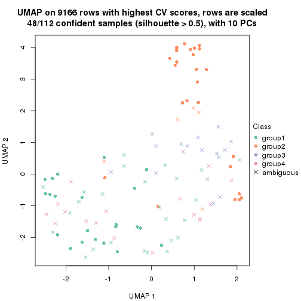
dimension_reduction(res, k = 5, method = "UMAP")
dimension_reduction(res, k = 6, method = "UMAP")
Following heatmap shows how subgroups are split when increasing k:
collect_classes(res)
If matrix rows can be associated to genes, consider to use GO_Enrichment(res,
...) to perform function enrichment for the signature genes.
The object with results only for a single top-value method and a single partition method can be extracted as:
res = res_list["CV", "pam"]
# you can also extract it by
# res = res_list["CV:pam"]
A summary of res and all the functions that can be applied to it:
res
#> A 'ConsensusPartition' object with k = 2, 3, 4, 5, 6.
#> On a matrix with 9166 rows and 112 columns.
#> Top rows (917, 1834, 2750, 3666, 4583) are extracted by 'CV' method.
#> Subgroups are detected by 'pam' method.
#> Performed in total 1250 partitions by row resampling.
#> Best k for subgroups seems to be 3.
#>
#> Following methods can be applied to this 'ConsensusPartition' object:
#> [1] "cola_report" "collect_classes" "collect_plots"
#> [4] "collect_stats" "colnames" "compare_signatures"
#> [7] "consensus_heatmap" "dimension_reduction" "functional_enrichment"
#> [10] "get_anno_col" "get_anno" "get_classes"
#> [13] "get_consensus" "get_matrix" "get_membership"
#> [16] "get_param" "get_signatures" "get_stats"
#> [19] "is_best_k" "is_stable_k" "membership_heatmap"
#> [22] "ncol" "nrow" "plot_ecdf"
#> [25] "rownames" "select_partition_number" "show"
#> [28] "suggest_best_k" "test_to_known_factors"
collect_plots() function collects all the plots made from res for all k (number of partitions)
into one single page to provide an easy and fast comparison between different k.
collect_plots(res)
The plots are:
k and the heatmap of
predicted classes for each k.k.k.k.All the plots in panels can be made by individual functions and they are plotted later in this section.
select_partition_number() produces several plots showing different
statistics for choosing “optimized” k. There are following statistics:
k;k, the area increased is defined as \(A_k - A_{k-1}\).The detailed explanations of these statistics can be found in the cola vignette.
Generally speaking, lower PAC score, higher mean silhouette score or higher
concordance corresponds to better partition. Rand index and Jaccard index
measure how similar the current partition is compared to partition with k-1.
If they are too similar, we won't accept k is better than k-1.
select_partition_number(res)
The numeric values for all these statistics can be obtained by get_stats().
get_stats(res)
#> k 1-PAC mean_silhouette concordance area_increased Rand Jaccard
#> 2 2 0.274 0.661 0.823 0.3984 0.548 0.548
#> 3 3 0.370 0.666 0.830 0.1504 0.969 0.944
#> 4 4 0.331 0.725 0.795 0.1280 0.868 0.779
#> 5 5 0.360 0.668 0.787 0.0564 0.962 0.932
#> 6 6 0.372 0.664 0.802 0.0349 0.959 0.924
suggest_best_k() suggests the best \(k\) based on these statistics. The rules are as follows:
NA.suggest_best_k(res)
#> [1] 3
Following shows the table of the partitions (You need to click the show/hide
code output link to see it). The membership matrix (columns with name p*)
is inferred by
clue::cl_consensus()
function with the SE method. Basically the value in the membership matrix
represents the probability to belong to a certain group. The finall class
label for an item is determined with the group with highest probability it
belongs to.
In get_classes() function, the entropy is calculated from the membership
matrix and the silhouette score is calculated from the consensus matrix.
cbind(get_classes(res, k = 2), get_membership(res, k = 2))
#> class entropy silhouette p1 p2
#> SRR1003755 1 0.0000 0.7355 1.000 0.000
#> SRR1003756 1 0.0000 0.7355 1.000 0.000
#> SRR1003757 1 0.0000 0.7355 1.000 0.000
#> SRR1003758 1 0.0000 0.7355 1.000 0.000
#> SRR1003759 2 0.7299 0.7206 0.204 0.796
#> SRR1003760 2 0.0000 0.7583 0.000 1.000
#> SRR1003761 2 0.0000 0.7583 0.000 1.000
#> SRR1003762 2 0.0000 0.7583 0.000 1.000
#> SRR1003763 2 0.9286 0.4461 0.344 0.656
#> SRR1003764 2 0.0000 0.7583 0.000 1.000
#> SRR1003765 2 0.0000 0.7583 0.000 1.000
#> SRR1003766 2 0.0000 0.7583 0.000 1.000
#> SRR1003767 2 0.0000 0.7583 0.000 1.000
#> SRR1003768 2 0.0000 0.7583 0.000 1.000
#> SRR1003769 2 0.0000 0.7583 0.000 1.000
#> SRR1003770 2 0.0000 0.7583 0.000 1.000
#> SRR1003771 2 0.0000 0.7583 0.000 1.000
#> SRR1003773 2 0.7219 0.7249 0.200 0.800
#> SRR1003772 1 0.2236 0.7537 0.964 0.036
#> SRR1003774 2 0.9866 0.1531 0.432 0.568
#> SRR1003775 1 0.1414 0.7470 0.980 0.020
#> SRR1003776 1 0.7299 0.7535 0.796 0.204
#> SRR1003777 1 0.0672 0.7408 0.992 0.008
#> SRR1003778 2 0.0672 0.7583 0.008 0.992
#> SRR1003779 1 0.2603 0.7565 0.956 0.044
#> SRR1003780 2 0.0000 0.7583 0.000 1.000
#> SRR1003781 2 0.9850 0.1702 0.428 0.572
#> SRR1003784 1 0.7745 0.7385 0.772 0.228
#> SRR1003785 2 0.7219 0.7249 0.200 0.800
#> SRR1003786 1 0.0000 0.7355 1.000 0.000
#> SRR1003783 1 0.0000 0.7355 1.000 0.000
#> SRR1003787 1 0.9580 0.5575 0.620 0.380
#> SRR1003788 1 0.9933 0.3680 0.548 0.452
#> SRR1003789 2 0.0000 0.7583 0.000 1.000
#> SRR1003790 1 0.3114 0.7601 0.944 0.056
#> SRR1003791 2 0.7219 0.7249 0.200 0.800
#> SRR1003792 1 0.9754 0.5021 0.592 0.408
#> SRR1003793 1 0.4298 0.7665 0.912 0.088
#> SRR1003794 1 0.7883 0.7319 0.764 0.236
#> SRR1003795 2 0.0672 0.7583 0.008 0.992
#> SRR1003796 2 0.0000 0.7583 0.000 1.000
#> SRR1003797 1 0.9710 0.5198 0.600 0.400
#> SRR1003798 1 0.7528 0.7466 0.784 0.216
#> SRR1003799 1 0.0000 0.7355 1.000 0.000
#> SRR1003800 1 0.7299 0.7534 0.796 0.204
#> SRR1003801 1 0.9686 0.5279 0.604 0.396
#> SRR1003802 1 0.5294 0.7669 0.880 0.120
#> SRR1003803 1 0.9686 0.5278 0.604 0.396
#> SRR1003804 1 0.1843 0.7506 0.972 0.028
#> SRR1003805 1 0.7139 0.7564 0.804 0.196
#> SRR1003806 1 0.7219 0.7547 0.800 0.200
#> SRR1003807 2 0.9635 0.3230 0.388 0.612
#> SRR1003809 1 0.9710 0.5198 0.600 0.400
#> SRR1003808 2 0.7219 0.7249 0.200 0.800
#> SRR1003810 1 0.7219 0.7547 0.800 0.200
#> SRR1003811 1 0.0376 0.7382 0.996 0.004
#> SRR1003812 1 0.2603 0.7567 0.956 0.044
#> SRR1003813 1 0.9710 0.5198 0.600 0.400
#> SRR1003814 2 0.9977 -0.0573 0.472 0.528
#> SRR1003815 1 0.5946 0.7693 0.856 0.144
#> SRR1003816 1 0.6623 0.7644 0.828 0.172
#> SRR1003817 1 0.6531 0.7654 0.832 0.168
#> SRR1003818 1 0.0938 0.7428 0.988 0.012
#> SRR1003819 2 0.7299 0.7206 0.204 0.796
#> SRR1003820 1 0.3584 0.7629 0.932 0.068
#> SRR1003821 1 0.0376 0.7382 0.996 0.004
#> SRR1003822 1 0.9393 0.5965 0.644 0.356
#> SRR1003824 1 0.0938 0.7429 0.988 0.012
#> SRR1003823 1 0.0000 0.7355 1.000 0.000
#> SRR1003825 1 0.7299 0.7534 0.796 0.204
#> SRR1003826 1 0.7376 0.7515 0.792 0.208
#> SRR1003827 1 0.7299 0.7533 0.796 0.204
#> SRR1003828 1 0.9710 0.5198 0.600 0.400
#> SRR1003829 1 0.9710 0.5189 0.600 0.400
#> SRR1003830 1 0.4690 0.7687 0.900 0.100
#> SRR1003831 1 0.9896 0.4081 0.560 0.440
#> SRR1003832 1 0.0000 0.7355 1.000 0.000
#> SRR1003833 1 0.9775 0.4918 0.588 0.412
#> SRR1003834 1 0.9795 0.4820 0.584 0.416
#> SRR1003836 1 0.9775 0.4827 0.588 0.412
#> SRR1003835 1 0.9795 0.4815 0.584 0.416
#> SRR1003838 2 0.8081 0.6557 0.248 0.752
#> SRR1003837 1 0.6801 0.7619 0.820 0.180
#> SRR1003839 2 0.9754 0.2529 0.408 0.592
#> SRR1003840 2 0.7219 0.7249 0.200 0.800
#> SRR1003841 2 0.0000 0.7583 0.000 1.000
#> SRR1003842 1 0.5629 0.7700 0.868 0.132
#> SRR1003844 1 0.6148 0.7684 0.848 0.152
#> SRR1003845 2 0.7219 0.7249 0.200 0.800
#> SRR1003846 1 0.0000 0.7355 1.000 0.000
#> SRR1003847 1 0.9710 0.5198 0.600 0.400
#> SRR1003848 1 0.1843 0.7506 0.972 0.028
#> SRR1003849 2 0.7219 0.7249 0.200 0.800
#> SRR1003850 1 0.9754 0.5018 0.592 0.408
#> SRR1003851 2 0.7453 0.7104 0.212 0.788
#> SRR1003852 2 0.7219 0.7249 0.200 0.800
#> SRR1003853 1 0.9427 0.5901 0.640 0.360
#> SRR1003854 1 0.9170 0.6297 0.668 0.332
#> SRR1003843 2 0.7219 0.7249 0.200 0.800
#> SRR1003855 1 0.4562 0.7682 0.904 0.096
#> SRR1003856 2 0.9954 0.0172 0.460 0.540
#> SRR1003857 1 0.5842 0.7695 0.860 0.140
#> SRR1003858 1 0.8207 0.7141 0.744 0.256
#> SRR1003859 1 0.0376 0.7382 0.996 0.004
#> SRR1003860 1 0.7219 0.7554 0.800 0.200
#> SRR1003861 1 0.9710 0.5198 0.600 0.400
#> SRR1003862 1 0.0376 0.7384 0.996 0.004
#> SRR1003863 1 0.0000 0.7355 1.000 0.000
#> SRR1003864 1 0.4815 0.7692 0.896 0.104
#> SRR1003865 1 0.9491 0.5503 0.632 0.368
#> SRR1003866 2 0.9710 0.2821 0.400 0.600
#> SRR1003867 1 0.9323 0.6086 0.652 0.348
cbind(get_classes(res, k = 3), get_membership(res, k = 3))
#> class entropy silhouette p1 p2 p3
#> SRR1003755 1 0.0424 0.7363 0.992 0.000 0.008
#> SRR1003756 1 0.0424 0.7363 0.992 0.000 0.008
#> SRR1003757 1 0.0424 0.7363 0.992 0.000 0.008
#> SRR1003758 1 0.0424 0.7363 0.992 0.000 0.008
#> SRR1003759 3 0.4504 0.6335 0.196 0.000 0.804
#> SRR1003760 3 0.0424 0.7586 0.008 0.000 0.992
#> SRR1003761 3 0.0424 0.7586 0.008 0.000 0.992
#> SRR1003762 3 0.0424 0.7586 0.008 0.000 0.992
#> SRR1003763 2 0.8072 0.3363 0.208 0.648 0.144
#> SRR1003764 3 0.0424 0.7586 0.008 0.000 0.992
#> SRR1003765 2 0.0000 0.9050 0.000 1.000 0.000
#> SRR1003766 2 0.0000 0.9050 0.000 1.000 0.000
#> SRR1003767 2 0.0424 0.9010 0.000 0.992 0.008
#> SRR1003768 2 0.0000 0.9050 0.000 1.000 0.000
#> SRR1003769 2 0.0000 0.9050 0.000 1.000 0.000
#> SRR1003770 3 0.3879 0.5106 0.000 0.152 0.848
#> SRR1003771 3 0.1860 0.6997 0.000 0.052 0.948
#> SRR1003773 3 0.0424 0.7586 0.008 0.000 0.992
#> SRR1003772 1 0.1411 0.7560 0.964 0.000 0.036
#> SRR1003774 3 0.6244 -0.0508 0.440 0.000 0.560
#> SRR1003775 1 0.0747 0.7504 0.984 0.000 0.016
#> SRR1003776 1 0.4974 0.7520 0.764 0.000 0.236
#> SRR1003777 1 0.0424 0.7419 0.992 0.000 0.008
#> SRR1003778 3 0.0424 0.7586 0.008 0.000 0.992
#> SRR1003779 1 0.1529 0.7603 0.960 0.000 0.040
#> SRR1003780 3 0.1860 0.6997 0.000 0.052 0.948
#> SRR1003781 3 0.6235 -0.0325 0.436 0.000 0.564
#> SRR1003784 1 0.4974 0.7526 0.764 0.000 0.236
#> SRR1003785 3 0.0892 0.7581 0.020 0.000 0.980
#> SRR1003786 1 0.0424 0.7363 0.992 0.000 0.008
#> SRR1003783 1 0.0424 0.7363 0.992 0.000 0.008
#> SRR1003787 1 0.6045 0.6125 0.620 0.000 0.380
#> SRR1003788 1 0.6252 0.4726 0.556 0.000 0.444
#> SRR1003789 3 0.0661 0.7501 0.004 0.008 0.988
#> SRR1003790 1 0.1860 0.7642 0.948 0.000 0.052
#> SRR1003791 3 0.0424 0.7586 0.008 0.000 0.992
#> SRR1003792 1 0.6126 0.5800 0.600 0.000 0.400
#> SRR1003793 1 0.2796 0.7714 0.908 0.000 0.092
#> SRR1003794 1 0.5058 0.7477 0.756 0.000 0.244
#> SRR1003795 3 0.0424 0.7586 0.008 0.000 0.992
#> SRR1003796 3 0.0424 0.7586 0.008 0.000 0.992
#> SRR1003797 1 0.6095 0.5939 0.608 0.000 0.392
#> SRR1003798 1 0.5058 0.7481 0.756 0.000 0.244
#> SRR1003799 1 0.0237 0.7390 0.996 0.000 0.004
#> SRR1003800 1 0.4974 0.7520 0.764 0.000 0.236
#> SRR1003801 1 0.6095 0.5939 0.608 0.000 0.392
#> SRR1003802 1 0.3816 0.7719 0.852 0.000 0.148
#> SRR1003803 1 0.6079 0.6003 0.612 0.000 0.388
#> SRR1003804 1 0.1031 0.7542 0.976 0.000 0.024
#> SRR1003805 1 0.4504 0.7662 0.804 0.000 0.196
#> SRR1003806 1 0.4555 0.7649 0.800 0.000 0.200
#> SRR1003807 3 0.6111 0.1415 0.396 0.000 0.604
#> SRR1003809 1 0.6095 0.5939 0.608 0.000 0.392
#> SRR1003808 3 0.1411 0.7552 0.036 0.000 0.964
#> SRR1003810 1 0.4796 0.7588 0.780 0.000 0.220
#> SRR1003811 1 0.0237 0.7391 0.996 0.000 0.004
#> SRR1003812 1 0.1411 0.7592 0.964 0.000 0.036
#> SRR1003813 1 0.6095 0.5939 0.608 0.000 0.392
#> SRR1003814 3 0.6302 -0.2321 0.480 0.000 0.520
#> SRR1003815 1 0.3619 0.7763 0.864 0.000 0.136
#> SRR1003816 1 0.4178 0.7736 0.828 0.000 0.172
#> SRR1003817 1 0.4062 0.7743 0.836 0.000 0.164
#> SRR1003818 1 0.1643 0.7563 0.956 0.000 0.044
#> SRR1003819 3 0.4002 0.6799 0.160 0.000 0.840
#> SRR1003820 1 0.2165 0.7673 0.936 0.000 0.064
#> SRR1003821 1 0.0000 0.7413 1.000 0.000 0.000
#> SRR1003822 1 0.5948 0.6400 0.640 0.000 0.360
#> SRR1003824 1 0.0424 0.7460 0.992 0.000 0.008
#> SRR1003823 1 0.0424 0.7363 0.992 0.000 0.008
#> SRR1003825 1 0.5016 0.7502 0.760 0.000 0.240
#> SRR1003826 1 0.5016 0.7503 0.760 0.000 0.240
#> SRR1003827 1 0.4796 0.7592 0.780 0.000 0.220
#> SRR1003828 1 0.6095 0.5939 0.608 0.000 0.392
#> SRR1003829 1 0.6126 0.5801 0.600 0.000 0.400
#> SRR1003830 1 0.2796 0.7733 0.908 0.000 0.092
#> SRR1003831 1 0.6225 0.5054 0.568 0.000 0.432
#> SRR1003832 1 0.0424 0.7363 0.992 0.000 0.008
#> SRR1003833 1 0.6140 0.5718 0.596 0.000 0.404
#> SRR1003834 1 0.6154 0.5642 0.592 0.000 0.408
#> SRR1003836 1 0.6168 0.5493 0.588 0.000 0.412
#> SRR1003835 1 0.6154 0.5637 0.592 0.000 0.408
#> SRR1003838 3 0.5178 0.5300 0.256 0.000 0.744
#> SRR1003837 1 0.4291 0.7710 0.820 0.000 0.180
#> SRR1003839 3 0.6180 0.0616 0.416 0.000 0.584
#> SRR1003840 3 0.0424 0.7586 0.008 0.000 0.992
#> SRR1003841 3 0.1860 0.6997 0.000 0.052 0.948
#> SRR1003842 1 0.3412 0.7763 0.876 0.000 0.124
#> SRR1003844 1 0.3879 0.7763 0.848 0.000 0.152
#> SRR1003845 3 0.0424 0.7586 0.008 0.000 0.992
#> SRR1003846 1 0.0237 0.7390 0.996 0.000 0.004
#> SRR1003847 1 0.6095 0.5939 0.608 0.000 0.392
#> SRR1003848 1 0.1031 0.7543 0.976 0.000 0.024
#> SRR1003849 3 0.2625 0.7361 0.084 0.000 0.916
#> SRR1003850 1 0.6126 0.5797 0.600 0.000 0.400
#> SRR1003851 3 0.4750 0.6031 0.216 0.000 0.784
#> SRR1003852 3 0.0424 0.7586 0.008 0.000 0.992
#> SRR1003853 1 0.5968 0.6347 0.636 0.000 0.364
#> SRR1003854 1 0.5835 0.6631 0.660 0.000 0.340
#> SRR1003843 3 0.1643 0.7527 0.044 0.000 0.956
#> SRR1003855 1 0.3192 0.7757 0.888 0.000 0.112
#> SRR1003856 3 0.6286 -0.1601 0.464 0.000 0.536
#> SRR1003857 1 0.3879 0.7766 0.848 0.000 0.152
#> SRR1003858 1 0.5431 0.7173 0.716 0.000 0.284
#> SRR1003859 1 0.0000 0.7413 1.000 0.000 0.000
#> SRR1003860 1 0.4974 0.7526 0.764 0.000 0.236
#> SRR1003861 1 0.6095 0.5939 0.608 0.000 0.392
#> SRR1003862 1 0.0592 0.7393 0.988 0.000 0.012
#> SRR1003863 1 0.0424 0.7363 0.992 0.000 0.008
#> SRR1003864 1 0.2959 0.7743 0.900 0.000 0.100
#> SRR1003865 1 0.5968 0.6171 0.636 0.000 0.364
#> SRR1003866 3 0.6154 0.0952 0.408 0.000 0.592
#> SRR1003867 1 0.5926 0.6454 0.644 0.000 0.356
cbind(get_classes(res, k = 4), get_membership(res, k = 4))
#> class entropy silhouette p1 p2 p3 p4
#> SRR1003755 4 0.0188 1.0000 0.000 0.000 0.004 0.996
#> SRR1003756 4 0.0188 1.0000 0.000 0.000 0.004 0.996
#> SRR1003757 1 0.4072 0.7052 0.748 0.000 0.000 0.252
#> SRR1003758 1 0.4072 0.7052 0.748 0.000 0.000 0.252
#> SRR1003759 3 0.4925 0.4192 0.428 0.000 0.572 0.000
#> SRR1003760 3 0.0188 0.8472 0.004 0.000 0.996 0.000
#> SRR1003761 3 0.3074 0.7513 0.152 0.000 0.848 0.000
#> SRR1003762 3 0.4072 0.7002 0.252 0.000 0.748 0.000
#> SRR1003763 2 0.5846 0.0282 0.452 0.516 0.032 0.000
#> SRR1003764 3 0.4040 0.7044 0.248 0.000 0.752 0.000
#> SRR1003765 2 0.0000 0.7623 0.000 1.000 0.000 0.000
#> SRR1003766 2 0.0000 0.7623 0.000 1.000 0.000 0.000
#> SRR1003767 2 0.0336 0.7540 0.000 0.992 0.008 0.000
#> SRR1003768 2 0.0000 0.7623 0.000 1.000 0.000 0.000
#> SRR1003769 2 0.0000 0.7623 0.000 1.000 0.000 0.000
#> SRR1003770 3 0.2530 0.7280 0.004 0.100 0.896 0.000
#> SRR1003771 3 0.0188 0.8472 0.004 0.000 0.996 0.000
#> SRR1003773 3 0.0188 0.8472 0.004 0.000 0.996 0.000
#> SRR1003772 1 0.3881 0.7608 0.812 0.000 0.016 0.172
#> SRR1003774 1 0.4998 0.3118 0.512 0.000 0.488 0.000
#> SRR1003775 1 0.3401 0.7604 0.840 0.000 0.008 0.152
#> SRR1003776 1 0.2053 0.7846 0.924 0.000 0.072 0.004
#> SRR1003777 1 0.3311 0.7470 0.828 0.000 0.000 0.172
#> SRR1003778 3 0.0188 0.8472 0.004 0.000 0.996 0.000
#> SRR1003779 1 0.3351 0.7630 0.844 0.000 0.008 0.148
#> SRR1003780 3 0.0188 0.8472 0.004 0.000 0.996 0.000
#> SRR1003781 1 0.4933 0.3812 0.568 0.000 0.432 0.000
#> SRR1003784 1 0.3557 0.7970 0.856 0.000 0.108 0.036
#> SRR1003785 3 0.0592 0.8425 0.016 0.000 0.984 0.000
#> SRR1003786 1 0.4072 0.7052 0.748 0.000 0.000 0.252
#> SRR1003783 1 0.4040 0.7082 0.752 0.000 0.000 0.248
#> SRR1003787 1 0.4134 0.7135 0.740 0.000 0.260 0.000
#> SRR1003788 1 0.4585 0.6335 0.668 0.000 0.332 0.000
#> SRR1003789 3 0.0188 0.8472 0.004 0.000 0.996 0.000
#> SRR1003790 1 0.3606 0.7723 0.840 0.000 0.020 0.140
#> SRR1003791 3 0.0592 0.8447 0.016 0.000 0.984 0.000
#> SRR1003792 1 0.4406 0.6913 0.700 0.000 0.300 0.000
#> SRR1003793 1 0.5477 0.7682 0.728 0.000 0.092 0.180
#> SRR1003794 1 0.5530 0.7751 0.712 0.000 0.212 0.076
#> SRR1003795 3 0.0188 0.8472 0.004 0.000 0.996 0.000
#> SRR1003796 3 0.0188 0.8472 0.004 0.000 0.996 0.000
#> SRR1003797 1 0.4072 0.7139 0.748 0.000 0.252 0.000
#> SRR1003798 1 0.2805 0.7893 0.888 0.000 0.100 0.012
#> SRR1003799 1 0.4008 0.7109 0.756 0.000 0.000 0.244
#> SRR1003800 1 0.2402 0.7883 0.912 0.000 0.076 0.012
#> SRR1003801 1 0.3219 0.7459 0.836 0.000 0.164 0.000
#> SRR1003802 1 0.4344 0.7872 0.816 0.000 0.108 0.076
#> SRR1003803 1 0.3801 0.7296 0.780 0.000 0.220 0.000
#> SRR1003804 1 0.3142 0.7655 0.860 0.000 0.008 0.132
#> SRR1003805 1 0.4203 0.7920 0.824 0.000 0.068 0.108
#> SRR1003806 1 0.5383 0.7934 0.740 0.000 0.160 0.100
#> SRR1003807 1 0.4916 0.3013 0.576 0.000 0.424 0.000
#> SRR1003809 1 0.4382 0.6948 0.704 0.000 0.296 0.000
#> SRR1003808 3 0.1022 0.8325 0.032 0.000 0.968 0.000
#> SRR1003810 1 0.3716 0.8002 0.852 0.000 0.096 0.052
#> SRR1003811 1 0.3907 0.7180 0.768 0.000 0.000 0.232
#> SRR1003812 1 0.3428 0.7645 0.844 0.000 0.012 0.144
#> SRR1003813 1 0.3764 0.7308 0.784 0.000 0.216 0.000
#> SRR1003814 1 0.4356 0.5765 0.708 0.000 0.292 0.000
#> SRR1003815 1 0.3821 0.7823 0.840 0.000 0.040 0.120
#> SRR1003816 1 0.5938 0.7764 0.696 0.000 0.168 0.136
#> SRR1003817 1 0.5483 0.7902 0.736 0.000 0.136 0.128
#> SRR1003818 1 0.1978 0.7819 0.928 0.000 0.004 0.068
#> SRR1003819 3 0.4522 0.6042 0.320 0.000 0.680 0.000
#> SRR1003820 1 0.3598 0.7760 0.848 0.000 0.028 0.124
#> SRR1003821 1 0.2973 0.7564 0.856 0.000 0.000 0.144
#> SRR1003822 1 0.3074 0.7615 0.848 0.000 0.152 0.000
#> SRR1003824 1 0.2760 0.7603 0.872 0.000 0.000 0.128
#> SRR1003823 1 0.4072 0.7052 0.748 0.000 0.000 0.252
#> SRR1003825 1 0.1792 0.7823 0.932 0.000 0.068 0.000
#> SRR1003826 1 0.3105 0.7909 0.868 0.000 0.120 0.012
#> SRR1003827 1 0.4106 0.7990 0.832 0.000 0.084 0.084
#> SRR1003828 1 0.4500 0.6847 0.684 0.000 0.316 0.000
#> SRR1003829 1 0.4382 0.6776 0.704 0.000 0.296 0.000
#> SRR1003830 1 0.4532 0.7791 0.792 0.000 0.052 0.156
#> SRR1003831 1 0.4643 0.6364 0.656 0.000 0.344 0.000
#> SRR1003832 1 0.4072 0.7052 0.748 0.000 0.000 0.252
#> SRR1003833 1 0.4730 0.6507 0.636 0.000 0.364 0.000
#> SRR1003834 1 0.4697 0.6517 0.644 0.000 0.356 0.000
#> SRR1003836 1 0.3569 0.7226 0.804 0.000 0.196 0.000
#> SRR1003835 1 0.3219 0.7373 0.836 0.000 0.164 0.000
#> SRR1003838 3 0.4522 0.4502 0.320 0.000 0.680 0.000
#> SRR1003837 1 0.3877 0.7877 0.840 0.000 0.048 0.112
#> SRR1003839 1 0.4999 0.2579 0.508 0.000 0.492 0.000
#> SRR1003840 3 0.0188 0.8472 0.004 0.000 0.996 0.000
#> SRR1003841 3 0.0188 0.8472 0.004 0.000 0.996 0.000
#> SRR1003842 1 0.4852 0.7861 0.776 0.000 0.072 0.152
#> SRR1003844 1 0.3818 0.7883 0.844 0.000 0.048 0.108
#> SRR1003845 3 0.0188 0.8472 0.004 0.000 0.996 0.000
#> SRR1003846 1 0.3942 0.7158 0.764 0.000 0.000 0.236
#> SRR1003847 1 0.4356 0.6997 0.708 0.000 0.292 0.000
#> SRR1003848 1 0.3681 0.7524 0.816 0.000 0.008 0.176
#> SRR1003849 3 0.4222 0.6855 0.272 0.000 0.728 0.000
#> SRR1003850 1 0.4164 0.7050 0.736 0.000 0.264 0.000
#> SRR1003851 3 0.4522 0.5325 0.320 0.000 0.680 0.000
#> SRR1003852 3 0.0188 0.8472 0.004 0.000 0.996 0.000
#> SRR1003853 1 0.3400 0.7543 0.820 0.000 0.180 0.000
#> SRR1003854 1 0.2704 0.7622 0.876 0.000 0.124 0.000
#> SRR1003843 3 0.2973 0.7836 0.144 0.000 0.856 0.000
#> SRR1003855 1 0.3793 0.7916 0.844 0.000 0.044 0.112
#> SRR1003856 1 0.4866 0.4607 0.596 0.000 0.404 0.000
#> SRR1003857 1 0.3176 0.7905 0.880 0.000 0.036 0.084
#> SRR1003858 1 0.2814 0.7794 0.868 0.000 0.132 0.000
#> SRR1003859 1 0.3219 0.7499 0.836 0.000 0.000 0.164
#> SRR1003860 1 0.3032 0.7900 0.868 0.000 0.124 0.008
#> SRR1003861 1 0.3266 0.7448 0.832 0.000 0.168 0.000
#> SRR1003862 1 0.4008 0.7128 0.756 0.000 0.000 0.244
#> SRR1003863 1 0.4072 0.7052 0.748 0.000 0.000 0.252
#> SRR1003864 1 0.4663 0.7827 0.788 0.000 0.064 0.148
#> SRR1003865 1 0.3172 0.7409 0.840 0.000 0.160 0.000
#> SRR1003866 1 0.4996 0.2566 0.516 0.000 0.484 0.000
#> SRR1003867 1 0.2760 0.7631 0.872 0.000 0.128 0.000
cbind(get_classes(res, k = 5), get_membership(res, k = 5))
#> class entropy silhouette p1 p2 p3 p4 p5
#> SRR1003755 4 0.0000 1.0000 0.000 0.000 0.000 1 0.000
#> SRR1003756 4 0.0000 1.0000 0.000 0.000 0.000 1 0.000
#> SRR1003757 1 0.2966 0.7362 0.816 0.184 0.000 0 0.000
#> SRR1003758 1 0.2966 0.7362 0.816 0.184 0.000 0 0.000
#> SRR1003759 3 0.6510 0.3004 0.360 0.196 0.444 0 0.000
#> SRR1003760 3 0.0000 0.7148 0.000 0.000 1.000 0 0.000
#> SRR1003761 3 0.3835 0.5665 0.156 0.048 0.796 0 0.000
#> SRR1003762 3 0.7195 0.3792 0.184 0.204 0.540 0 0.072
#> SRR1003763 2 0.6671 -0.0395 0.352 0.412 0.000 0 0.236
#> SRR1003764 3 0.5787 0.4561 0.180 0.204 0.616 0 0.000
#> SRR1003765 5 0.0000 0.6167 0.000 0.000 0.000 0 1.000
#> SRR1003766 2 0.4150 0.3084 0.000 0.612 0.000 0 0.388
#> SRR1003767 5 0.0000 0.6167 0.000 0.000 0.000 0 1.000
#> SRR1003768 2 0.4150 0.3084 0.000 0.612 0.000 0 0.388
#> SRR1003769 2 0.4150 0.3084 0.000 0.612 0.000 0 0.388
#> SRR1003770 5 0.3752 0.3654 0.000 0.000 0.292 0 0.708
#> SRR1003771 3 0.0162 0.7088 0.000 0.000 0.996 0 0.004
#> SRR1003773 3 0.0000 0.7148 0.000 0.000 1.000 0 0.000
#> SRR1003772 1 0.2179 0.7713 0.896 0.100 0.004 0 0.000
#> SRR1003774 3 0.6162 -0.3273 0.432 0.132 0.436 0 0.000
#> SRR1003775 1 0.1270 0.7801 0.948 0.052 0.000 0 0.000
#> SRR1003776 1 0.3355 0.7636 0.804 0.184 0.012 0 0.000
#> SRR1003777 1 0.1671 0.7779 0.924 0.076 0.000 0 0.000
#> SRR1003778 3 0.0000 0.7148 0.000 0.000 1.000 0 0.000
#> SRR1003779 1 0.1341 0.7808 0.944 0.056 0.000 0 0.000
#> SRR1003780 3 0.0000 0.7148 0.000 0.000 1.000 0 0.000
#> SRR1003781 1 0.6434 0.3793 0.452 0.180 0.368 0 0.000
#> SRR1003784 1 0.3966 0.7901 0.796 0.132 0.072 0 0.000
#> SRR1003785 3 0.0404 0.7116 0.012 0.000 0.988 0 0.000
#> SRR1003786 1 0.2966 0.7362 0.816 0.184 0.000 0 0.000
#> SRR1003783 1 0.2929 0.7386 0.820 0.180 0.000 0 0.000
#> SRR1003787 1 0.5820 0.7093 0.612 0.192 0.196 0 0.000
#> SRR1003788 1 0.6071 0.6294 0.556 0.160 0.284 0 0.000
#> SRR1003789 3 0.0000 0.7148 0.000 0.000 1.000 0 0.000
#> SRR1003790 1 0.0955 0.7837 0.968 0.028 0.004 0 0.000
#> SRR1003791 3 0.0451 0.7126 0.004 0.008 0.988 0 0.000
#> SRR1003792 1 0.5701 0.6784 0.604 0.124 0.272 0 0.000
#> SRR1003793 1 0.3754 0.7729 0.816 0.100 0.084 0 0.000
#> SRR1003794 1 0.4087 0.7544 0.756 0.036 0.208 0 0.000
#> SRR1003795 3 0.0000 0.7148 0.000 0.000 1.000 0 0.000
#> SRR1003796 3 0.0000 0.7148 0.000 0.000 1.000 0 0.000
#> SRR1003797 1 0.5731 0.7175 0.624 0.196 0.180 0 0.000
#> SRR1003798 1 0.4199 0.7803 0.772 0.160 0.068 0 0.000
#> SRR1003799 1 0.2891 0.7408 0.824 0.176 0.000 0 0.000
#> SRR1003800 1 0.3723 0.7817 0.804 0.152 0.044 0 0.000
#> SRR1003801 1 0.4402 0.7581 0.740 0.204 0.056 0 0.000
#> SRR1003802 1 0.5102 0.7779 0.684 0.216 0.100 0 0.000
#> SRR1003803 1 0.5295 0.7421 0.672 0.200 0.128 0 0.000
#> SRR1003804 1 0.1124 0.7842 0.960 0.036 0.004 0 0.000
#> SRR1003805 1 0.1082 0.7872 0.964 0.028 0.008 0 0.000
#> SRR1003806 1 0.3359 0.7759 0.816 0.020 0.164 0 0.000
#> SRR1003807 1 0.5467 0.2572 0.548 0.068 0.384 0 0.000
#> SRR1003809 1 0.5848 0.6984 0.604 0.168 0.228 0 0.000
#> SRR1003808 3 0.0794 0.7038 0.028 0.000 0.972 0 0.000
#> SRR1003810 1 0.3416 0.7992 0.840 0.088 0.072 0 0.000
#> SRR1003811 1 0.2813 0.7449 0.832 0.168 0.000 0 0.000
#> SRR1003812 1 0.0963 0.7812 0.964 0.036 0.000 0 0.000
#> SRR1003813 1 0.5384 0.7375 0.664 0.196 0.140 0 0.000
#> SRR1003814 1 0.5728 0.6047 0.624 0.200 0.176 0 0.000
#> SRR1003815 1 0.0566 0.7858 0.984 0.004 0.012 0 0.000
#> SRR1003816 1 0.3527 0.7574 0.804 0.024 0.172 0 0.000
#> SRR1003817 1 0.3106 0.7784 0.840 0.020 0.140 0 0.000
#> SRR1003818 1 0.2561 0.7907 0.856 0.144 0.000 0 0.000
#> SRR1003819 3 0.5589 0.5136 0.244 0.128 0.628 0 0.000
#> SRR1003820 1 0.1082 0.7858 0.964 0.028 0.008 0 0.000
#> SRR1003821 1 0.1478 0.7814 0.936 0.064 0.000 0 0.000
#> SRR1003822 1 0.4276 0.7656 0.764 0.168 0.068 0 0.000
#> SRR1003824 1 0.0609 0.7810 0.980 0.020 0.000 0 0.000
#> SRR1003823 1 0.2966 0.7362 0.816 0.184 0.000 0 0.000
#> SRR1003825 1 0.3246 0.7622 0.808 0.184 0.008 0 0.000
#> SRR1003826 1 0.4819 0.7711 0.724 0.164 0.112 0 0.000
#> SRR1003827 1 0.2659 0.8017 0.888 0.060 0.052 0 0.000
#> SRR1003828 1 0.5700 0.6733 0.600 0.120 0.280 0 0.000
#> SRR1003829 1 0.6049 0.6756 0.576 0.192 0.232 0 0.000
#> SRR1003830 1 0.2830 0.7839 0.876 0.080 0.044 0 0.000
#> SRR1003831 1 0.6002 0.6155 0.552 0.140 0.308 0 0.000
#> SRR1003832 1 0.2966 0.7362 0.816 0.184 0.000 0 0.000
#> SRR1003833 1 0.5131 0.6052 0.588 0.048 0.364 0 0.000
#> SRR1003834 1 0.5519 0.6278 0.584 0.084 0.332 0 0.000
#> SRR1003836 1 0.4796 0.7309 0.728 0.152 0.120 0 0.000
#> SRR1003835 1 0.3897 0.7448 0.768 0.204 0.028 0 0.000
#> SRR1003838 3 0.5136 0.4462 0.260 0.080 0.660 0 0.000
#> SRR1003837 1 0.0510 0.7825 0.984 0.016 0.000 0 0.000
#> SRR1003839 3 0.6213 -0.2616 0.408 0.140 0.452 0 0.000
#> SRR1003840 3 0.0000 0.7148 0.000 0.000 1.000 0 0.000
#> SRR1003841 3 0.0000 0.7148 0.000 0.000 1.000 0 0.000
#> SRR1003842 1 0.2654 0.7929 0.888 0.048 0.064 0 0.000
#> SRR1003844 1 0.0865 0.7872 0.972 0.024 0.004 0 0.000
#> SRR1003845 3 0.0000 0.7148 0.000 0.000 1.000 0 0.000
#> SRR1003846 1 0.2813 0.7443 0.832 0.168 0.000 0 0.000
#> SRR1003847 1 0.5678 0.6899 0.612 0.128 0.260 0 0.000
#> SRR1003848 1 0.1792 0.7737 0.916 0.084 0.000 0 0.000
#> SRR1003849 3 0.5638 0.5249 0.172 0.192 0.636 0 0.000
#> SRR1003850 1 0.5819 0.7079 0.612 0.188 0.200 0 0.000
#> SRR1003851 3 0.4863 0.5205 0.272 0.056 0.672 0 0.000
#> SRR1003852 3 0.0000 0.7148 0.000 0.000 1.000 0 0.000
#> SRR1003853 1 0.5076 0.7490 0.692 0.200 0.108 0 0.000
#> SRR1003854 1 0.3530 0.7506 0.784 0.204 0.012 0 0.000
#> SRR1003843 3 0.3749 0.6384 0.104 0.080 0.816 0 0.000
#> SRR1003855 1 0.3409 0.8016 0.824 0.144 0.032 0 0.000
#> SRR1003856 1 0.6025 0.4157 0.496 0.120 0.384 0 0.000
#> SRR1003857 1 0.1484 0.7927 0.944 0.048 0.008 0 0.000
#> SRR1003858 1 0.4587 0.7576 0.728 0.204 0.068 0 0.000
#> SRR1003859 1 0.1851 0.7738 0.912 0.088 0.000 0 0.000
#> SRR1003860 1 0.5016 0.7598 0.704 0.176 0.120 0 0.000
#> SRR1003861 1 0.4465 0.7560 0.736 0.204 0.060 0 0.000
#> SRR1003862 1 0.2891 0.7400 0.824 0.176 0.000 0 0.000
#> SRR1003863 1 0.2966 0.7362 0.816 0.184 0.000 0 0.000
#> SRR1003864 1 0.2928 0.7878 0.872 0.064 0.064 0 0.000
#> SRR1003865 1 0.4054 0.7398 0.760 0.204 0.036 0 0.000
#> SRR1003866 1 0.5650 0.1953 0.468 0.076 0.456 0 0.000
#> SRR1003867 1 0.4054 0.7528 0.760 0.204 0.036 0 0.000
cbind(get_classes(res, k = 6), get_membership(res, k = 6))
#> class entropy silhouette p1 p2 p3 p4 p5 p6
#> SRR1003755 4 0.0000 1.000 0.000 0.000 0.000 1 0 0.000
#> SRR1003756 4 0.0000 1.000 0.000 0.000 0.000 1 0 0.000
#> SRR1003757 1 0.2491 0.677 0.836 0.000 0.000 0 0 0.164
#> SRR1003758 1 0.2491 0.677 0.836 0.000 0.000 0 0 0.164
#> SRR1003759 6 0.6118 0.371 0.336 0.000 0.304 0 0 0.360
#> SRR1003760 3 0.0000 0.812 0.000 0.000 1.000 0 0 0.000
#> SRR1003761 3 0.3602 0.559 0.136 0.000 0.792 0 0 0.072
#> SRR1003762 6 0.2595 0.627 0.160 0.000 0.004 0 0 0.836
#> SRR1003763 6 0.2595 0.620 0.160 0.004 0.000 0 0 0.836
#> SRR1003764 6 0.2669 0.625 0.156 0.000 0.008 0 0 0.836
#> SRR1003765 2 0.0000 1.000 0.000 1.000 0.000 0 0 0.000
#> SRR1003766 5 0.0000 1.000 0.000 0.000 0.000 0 1 0.000
#> SRR1003767 2 0.0000 1.000 0.000 1.000 0.000 0 0 0.000
#> SRR1003768 5 0.0000 1.000 0.000 0.000 0.000 0 1 0.000
#> SRR1003769 5 0.0000 1.000 0.000 0.000 0.000 0 1 0.000
#> SRR1003770 2 0.0000 1.000 0.000 1.000 0.000 0 0 0.000
#> SRR1003771 3 0.0547 0.791 0.000 0.020 0.980 0 0 0.000
#> SRR1003773 3 0.0000 0.812 0.000 0.000 1.000 0 0 0.000
#> SRR1003772 1 0.1700 0.713 0.916 0.000 0.004 0 0 0.080
#> SRR1003774 1 0.5781 0.277 0.428 0.000 0.396 0 0 0.176
#> SRR1003775 1 0.1141 0.719 0.948 0.000 0.000 0 0 0.052
#> SRR1003776 1 0.3161 0.664 0.776 0.000 0.008 0 0 0.216
#> SRR1003777 1 0.1501 0.718 0.924 0.000 0.000 0 0 0.076
#> SRR1003778 3 0.0000 0.812 0.000 0.000 1.000 0 0 0.000
#> SRR1003779 1 0.1556 0.720 0.920 0.000 0.000 0 0 0.080
#> SRR1003780 3 0.0000 0.812 0.000 0.000 1.000 0 0 0.000
#> SRR1003781 1 0.6013 0.260 0.432 0.000 0.292 0 0 0.276
#> SRR1003784 1 0.3754 0.716 0.776 0.000 0.072 0 0 0.152
#> SRR1003785 3 0.0363 0.804 0.012 0.000 0.988 0 0 0.000
#> SRR1003786 1 0.2491 0.677 0.836 0.000 0.000 0 0 0.164
#> SRR1003783 1 0.2454 0.680 0.840 0.000 0.000 0 0 0.160
#> SRR1003787 1 0.5228 0.636 0.612 0.000 0.192 0 0 0.196
#> SRR1003788 1 0.5453 0.560 0.556 0.000 0.284 0 0 0.160
#> SRR1003789 3 0.0000 0.812 0.000 0.000 1.000 0 0 0.000
#> SRR1003790 1 0.0858 0.722 0.968 0.000 0.004 0 0 0.028
#> SRR1003791 3 0.0405 0.807 0.004 0.000 0.988 0 0 0.008
#> SRR1003792 1 0.5672 0.507 0.528 0.000 0.260 0 0 0.212
#> SRR1003793 1 0.3072 0.714 0.840 0.000 0.084 0 0 0.076
#> SRR1003794 1 0.3671 0.700 0.756 0.000 0.208 0 0 0.036
#> SRR1003795 3 0.0000 0.812 0.000 0.000 1.000 0 0 0.000
#> SRR1003796 3 0.0000 0.812 0.000 0.000 1.000 0 0 0.000
#> SRR1003797 1 0.5145 0.641 0.624 0.000 0.176 0 0 0.200
#> SRR1003798 1 0.3841 0.701 0.764 0.000 0.068 0 0 0.168
#> SRR1003799 1 0.2416 0.682 0.844 0.000 0.000 0 0 0.156
#> SRR1003800 1 0.3456 0.699 0.788 0.000 0.040 0 0 0.172
#> SRR1003801 1 0.4352 0.605 0.668 0.000 0.052 0 0 0.280
#> SRR1003802 1 0.4447 0.712 0.704 0.000 0.100 0 0 0.196
#> SRR1003803 1 0.4941 0.644 0.640 0.000 0.124 0 0 0.236
#> SRR1003804 1 0.1082 0.722 0.956 0.000 0.004 0 0 0.040
#> SRR1003805 1 0.1349 0.717 0.940 0.000 0.004 0 0 0.056
#> SRR1003806 1 0.3017 0.722 0.816 0.000 0.164 0 0 0.020
#> SRR1003807 1 0.5159 0.149 0.528 0.000 0.380 0 0 0.092
#> SRR1003809 1 0.5260 0.629 0.604 0.000 0.224 0 0 0.172
#> SRR1003808 3 0.0713 0.788 0.028 0.000 0.972 0 0 0.000
#> SRR1003810 1 0.3159 0.732 0.832 0.000 0.068 0 0 0.100
#> SRR1003811 1 0.2340 0.686 0.852 0.000 0.000 0 0 0.148
#> SRR1003812 1 0.0713 0.719 0.972 0.000 0.000 0 0 0.028
#> SRR1003813 1 0.5304 0.548 0.572 0.000 0.136 0 0 0.292
#> SRR1003814 6 0.4493 0.437 0.364 0.000 0.040 0 0 0.596
#> SRR1003815 1 0.0972 0.719 0.964 0.000 0.008 0 0 0.028
#> SRR1003816 1 0.3003 0.704 0.812 0.000 0.172 0 0 0.016
#> SRR1003817 1 0.2750 0.725 0.844 0.000 0.136 0 0 0.020
#> SRR1003818 1 0.2491 0.712 0.836 0.000 0.000 0 0 0.164
#> SRR1003819 3 0.5259 0.219 0.240 0.000 0.600 0 0 0.160
#> SRR1003820 1 0.1124 0.722 0.956 0.000 0.008 0 0 0.036
#> SRR1003821 1 0.1387 0.721 0.932 0.000 0.000 0 0 0.068
#> SRR1003822 1 0.3978 0.676 0.744 0.000 0.064 0 0 0.192
#> SRR1003824 1 0.1007 0.716 0.956 0.000 0.000 0 0 0.044
#> SRR1003823 1 0.2491 0.677 0.836 0.000 0.000 0 0 0.164
#> SRR1003825 1 0.3023 0.665 0.784 0.000 0.004 0 0 0.212
#> SRR1003826 1 0.4351 0.693 0.720 0.000 0.108 0 0 0.172
#> SRR1003827 1 0.2499 0.735 0.880 0.000 0.048 0 0 0.072
#> SRR1003828 1 0.5224 0.600 0.588 0.000 0.280 0 0 0.132
#> SRR1003829 1 0.5437 0.602 0.576 0.000 0.228 0 0 0.196
#> SRR1003830 1 0.2433 0.726 0.884 0.000 0.044 0 0 0.072
#> SRR1003831 1 0.5408 0.554 0.552 0.000 0.304 0 0 0.144
#> SRR1003832 1 0.2454 0.678 0.840 0.000 0.000 0 0 0.160
#> SRR1003833 1 0.4797 0.550 0.580 0.000 0.356 0 0 0.064
#> SRR1003834 1 0.4957 0.572 0.584 0.000 0.332 0 0 0.084
#> SRR1003836 1 0.4474 0.632 0.708 0.000 0.120 0 0 0.172
#> SRR1003835 1 0.3509 0.636 0.744 0.000 0.016 0 0 0.240
#> SRR1003838 3 0.4613 0.276 0.260 0.000 0.660 0 0 0.080
#> SRR1003837 1 0.1007 0.715 0.956 0.000 0.000 0 0 0.044
#> SRR1003839 3 0.5607 -0.325 0.408 0.000 0.448 0 0 0.144
#> SRR1003840 3 0.0000 0.812 0.000 0.000 1.000 0 0 0.000
#> SRR1003841 3 0.0000 0.812 0.000 0.000 1.000 0 0 0.000
#> SRR1003842 1 0.2119 0.734 0.904 0.000 0.060 0 0 0.036
#> SRR1003844 1 0.1285 0.722 0.944 0.000 0.004 0 0 0.052
#> SRR1003845 3 0.0000 0.812 0.000 0.000 1.000 0 0 0.000
#> SRR1003846 1 0.2300 0.686 0.856 0.000 0.000 0 0 0.144
#> SRR1003847 1 0.5135 0.625 0.608 0.000 0.260 0 0 0.132
#> SRR1003848 1 0.1501 0.714 0.924 0.000 0.000 0 0 0.076
#> SRR1003849 3 0.5389 0.148 0.160 0.000 0.572 0 0 0.268
#> SRR1003850 1 0.5228 0.634 0.612 0.000 0.192 0 0 0.196
#> SRR1003851 3 0.4402 0.329 0.268 0.000 0.672 0 0 0.060
#> SRR1003852 3 0.0000 0.812 0.000 0.000 1.000 0 0 0.000
#> SRR1003853 1 0.4746 0.644 0.660 0.000 0.104 0 0 0.236
#> SRR1003854 1 0.3189 0.645 0.760 0.000 0.004 0 0 0.236
#> SRR1003843 3 0.3424 0.637 0.092 0.000 0.812 0 0 0.096
#> SRR1003855 1 0.3101 0.739 0.820 0.000 0.032 0 0 0.148
#> SRR1003856 1 0.5443 0.359 0.492 0.000 0.384 0 0 0.124
#> SRR1003857 1 0.1462 0.725 0.936 0.000 0.008 0 0 0.056
#> SRR1003858 1 0.4198 0.664 0.708 0.000 0.060 0 0 0.232
#> SRR1003859 1 0.1444 0.714 0.928 0.000 0.000 0 0 0.072
#> SRR1003860 1 0.4624 0.678 0.688 0.000 0.120 0 0 0.192
#> SRR1003861 1 0.4332 0.620 0.672 0.000 0.052 0 0 0.276
#> SRR1003862 1 0.2378 0.681 0.848 0.000 0.000 0 0 0.152
#> SRR1003863 1 0.2454 0.678 0.840 0.000 0.000 0 0 0.160
#> SRR1003864 1 0.2258 0.729 0.896 0.000 0.060 0 0 0.044
#> SRR1003865 1 0.3745 0.626 0.732 0.000 0.028 0 0 0.240
#> SRR1003866 1 0.5391 0.187 0.456 0.000 0.432 0 0 0.112
#> SRR1003867 1 0.4094 0.532 0.652 0.000 0.024 0 0 0.324
Heatmaps for the consensus matrix. It visualizes the probability of two samples to be in a same group.
consensus_heatmap(res, k = 2)
consensus_heatmap(res, k = 3)
consensus_heatmap(res, k = 4)
consensus_heatmap(res, k = 5)
consensus_heatmap(res, k = 6)
Heatmaps for the membership of samples in all partitions to see how consistent they are:
membership_heatmap(res, k = 2)
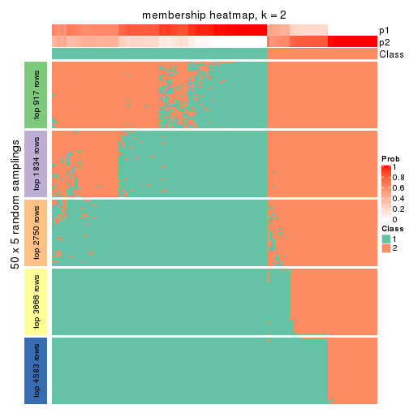
membership_heatmap(res, k = 3)
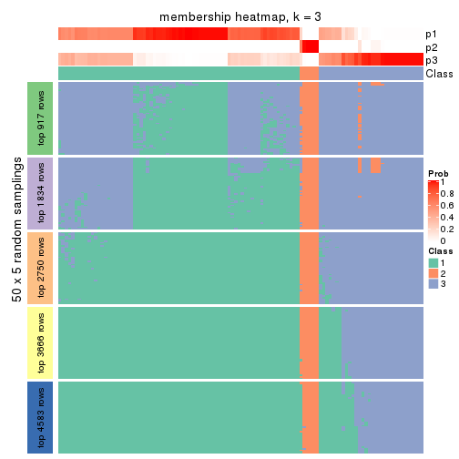
membership_heatmap(res, k = 4)
membership_heatmap(res, k = 5)
membership_heatmap(res, k = 6)
As soon as we have had the classes for columns, we can look for signatures which are significantly different between classes which can be candidate marks for certain classes. Following are the heatmaps for signatures.
Signature heatmaps where rows are scaled:
get_signatures(res, k = 2)
get_signatures(res, k = 3)
get_signatures(res, k = 4)
get_signatures(res, k = 5)
get_signatures(res, k = 6)
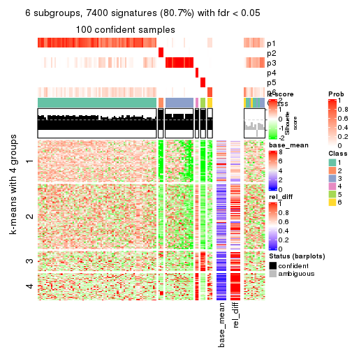
Signature heatmaps where rows are not scaled:
get_signatures(res, k = 2, scale_rows = FALSE)
get_signatures(res, k = 3, scale_rows = FALSE)

get_signatures(res, k = 4, scale_rows = FALSE)
get_signatures(res, k = 5, scale_rows = FALSE)
get_signatures(res, k = 6, scale_rows = FALSE)
Compare the overlap of signatures from different k:
compare_signatures(res)
get_signature() returns a data frame invisibly. TO get the list of signatures, the function
call should be assigned to a variable explicitly. In following code, if plot argument is set
to FALSE, no heatmap is plotted while only the differential analysis is performed.
# code only for demonstration
tb = get_signature(res, k = ..., plot = FALSE)
An example of the output of tb is:
#> which_row fdr mean_1 mean_2 scaled_mean_1 scaled_mean_2 km
#> 1 38 0.042760348 8.373488 9.131774 -0.5533452 0.5164555 1
#> 2 40 0.018707592 7.106213 8.469186 -0.6173731 0.5762149 1
#> 3 55 0.019134737 10.221463 11.207825 -0.6159697 0.5749050 1
#> 4 59 0.006059896 5.921854 7.869574 -0.6899429 0.6439467 1
#> 5 60 0.018055526 8.928898 10.211722 -0.6204761 0.5791110 1
#> 6 98 0.009384629 15.714769 14.887706 0.6635654 -0.6193277 2
...
The columns in tb are:
which_row: row indices corresponding to the input matrix.fdr: FDR for the differential test. mean_x: The mean value in group x.scaled_mean_x: The mean value in group x after rows are scaled.km: Row groups if k-means clustering is applied to rows.UMAP plot which shows how samples are separated.
dimension_reduction(res, k = 2, method = "UMAP")
dimension_reduction(res, k = 3, method = "UMAP")
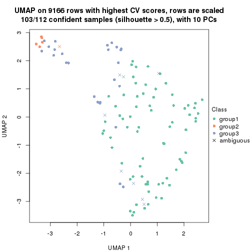
dimension_reduction(res, k = 4, method = "UMAP")
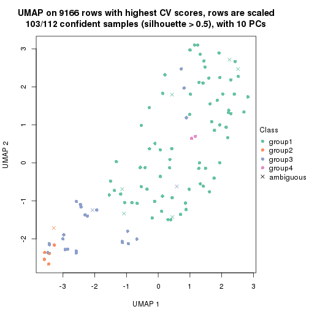
dimension_reduction(res, k = 5, method = "UMAP")
dimension_reduction(res, k = 6, method = "UMAP")
Following heatmap shows how subgroups are split when increasing k:
collect_classes(res)
If matrix rows can be associated to genes, consider to use GO_Enrichment(res,
...) to perform function enrichment for the signature genes.
The object with results only for a single top-value method and a single partition method can be extracted as:
res = res_list["CV", "mclust"]
# you can also extract it by
# res = res_list["CV:mclust"]
A summary of res and all the functions that can be applied to it:
res
#> A 'ConsensusPartition' object with k = 2, 3, 4, 5, 6.
#> On a matrix with 9166 rows and 112 columns.
#> Top rows (917, 1834, 2750, 3666, 4583) are extracted by 'CV' method.
#> Subgroups are detected by 'mclust' method.
#> Performed in total 1250 partitions by row resampling.
#> Best k for subgroups seems to be 2.
#>
#> Following methods can be applied to this 'ConsensusPartition' object:
#> [1] "cola_report" "collect_classes" "collect_plots"
#> [4] "collect_stats" "colnames" "compare_signatures"
#> [7] "consensus_heatmap" "dimension_reduction" "functional_enrichment"
#> [10] "get_anno_col" "get_anno" "get_classes"
#> [13] "get_consensus" "get_matrix" "get_membership"
#> [16] "get_param" "get_signatures" "get_stats"
#> [19] "is_best_k" "is_stable_k" "membership_heatmap"
#> [22] "ncol" "nrow" "plot_ecdf"
#> [25] "rownames" "select_partition_number" "show"
#> [28] "suggest_best_k" "test_to_known_factors"
collect_plots() function collects all the plots made from res for all k (number of partitions)
into one single page to provide an easy and fast comparison between different k.
collect_plots(res)
The plots are:
k and the heatmap of
predicted classes for each k.k.k.k.All the plots in panels can be made by individual functions and they are plotted later in this section.
select_partition_number() produces several plots showing different
statistics for choosing “optimized” k. There are following statistics:
k;k, the area increased is defined as \(A_k - A_{k-1}\).The detailed explanations of these statistics can be found in the cola vignette.
Generally speaking, lower PAC score, higher mean silhouette score or higher
concordance corresponds to better partition. Rand index and Jaccard index
measure how similar the current partition is compared to partition with k-1.
If they are too similar, we won't accept k is better than k-1.
select_partition_number(res)
The numeric values for all these statistics can be obtained by get_stats().
get_stats(res)
#> k 1-PAC mean_silhouette concordance area_increased Rand Jaccard
#> 2 2 1.000 0.977 0.989 0.3017 0.704 0.704
#> 3 3 0.386 0.676 0.799 0.6895 0.752 0.648
#> 4 4 0.379 0.435 0.707 0.1857 0.863 0.716
#> 5 5 0.383 0.497 0.677 0.0686 0.882 0.712
#> 6 6 0.403 0.590 0.722 0.1038 0.837 0.568
suggest_best_k() suggests the best \(k\) based on these statistics. The rules are as follows:
NA.suggest_best_k(res)
#> [1] 2
Following shows the table of the partitions (You need to click the show/hide
code output link to see it). The membership matrix (columns with name p*)
is inferred by
clue::cl_consensus()
function with the SE method. Basically the value in the membership matrix
represents the probability to belong to a certain group. The finall class
label for an item is determined with the group with highest probability it
belongs to.
In get_classes() function, the entropy is calculated from the membership
matrix and the silhouette score is calculated from the consensus matrix.
cbind(get_classes(res, k = 2), get_membership(res, k = 2))
#> class entropy silhouette p1 p2
#> SRR1003755 2 0.0000 0.979 0.000 1.000
#> SRR1003756 2 0.0000 0.979 0.000 1.000
#> SRR1003757 2 0.1633 0.964 0.024 0.976
#> SRR1003758 2 0.1633 0.964 0.024 0.976
#> SRR1003759 2 0.8909 0.551 0.308 0.692
#> SRR1003760 2 0.1414 0.966 0.020 0.980
#> SRR1003761 2 0.0000 0.979 0.000 1.000
#> SRR1003762 2 0.0000 0.979 0.000 1.000
#> SRR1003763 2 0.0000 0.979 0.000 1.000
#> SRR1003764 2 0.0000 0.979 0.000 1.000
#> SRR1003765 2 0.0000 0.979 0.000 1.000
#> SRR1003766 2 0.0000 0.979 0.000 1.000
#> SRR1003767 2 0.0000 0.979 0.000 1.000
#> SRR1003768 2 0.0000 0.979 0.000 1.000
#> SRR1003769 2 0.0000 0.979 0.000 1.000
#> SRR1003770 2 0.0000 0.979 0.000 1.000
#> SRR1003771 2 0.0000 0.979 0.000 1.000
#> SRR1003773 1 0.2778 0.952 0.952 0.048
#> SRR1003772 1 0.0000 0.990 1.000 0.000
#> SRR1003774 1 0.0000 0.990 1.000 0.000
#> SRR1003775 1 0.0000 0.990 1.000 0.000
#> SRR1003776 1 0.0000 0.990 1.000 0.000
#> SRR1003777 1 0.0000 0.990 1.000 0.000
#> SRR1003778 1 0.2778 0.952 0.952 0.048
#> SRR1003779 1 0.0000 0.990 1.000 0.000
#> SRR1003780 2 0.0000 0.979 0.000 1.000
#> SRR1003781 1 0.0000 0.990 1.000 0.000
#> SRR1003784 1 0.0000 0.990 1.000 0.000
#> SRR1003785 1 0.2603 0.956 0.956 0.044
#> SRR1003786 1 0.0000 0.990 1.000 0.000
#> SRR1003783 1 0.0000 0.990 1.000 0.000
#> SRR1003787 1 0.0000 0.990 1.000 0.000
#> SRR1003788 1 0.0000 0.990 1.000 0.000
#> SRR1003789 2 0.0938 0.972 0.012 0.988
#> SRR1003790 1 0.0000 0.990 1.000 0.000
#> SRR1003791 1 0.0000 0.990 1.000 0.000
#> SRR1003792 1 0.0000 0.990 1.000 0.000
#> SRR1003793 1 0.0000 0.990 1.000 0.000
#> SRR1003794 1 0.0000 0.990 1.000 0.000
#> SRR1003795 1 0.1843 0.970 0.972 0.028
#> SRR1003796 1 0.2778 0.952 0.952 0.048
#> SRR1003797 1 0.0000 0.990 1.000 0.000
#> SRR1003798 1 0.0000 0.990 1.000 0.000
#> SRR1003799 1 0.5842 0.839 0.860 0.140
#> SRR1003800 1 0.0000 0.990 1.000 0.000
#> SRR1003801 1 0.0000 0.990 1.000 0.000
#> SRR1003802 1 0.0000 0.990 1.000 0.000
#> SRR1003803 1 0.0000 0.990 1.000 0.000
#> SRR1003804 1 0.0000 0.990 1.000 0.000
#> SRR1003805 1 0.0000 0.990 1.000 0.000
#> SRR1003806 1 0.0000 0.990 1.000 0.000
#> SRR1003807 1 0.0000 0.990 1.000 0.000
#> SRR1003809 1 0.0672 0.985 0.992 0.008
#> SRR1003808 1 0.2043 0.965 0.968 0.032
#> SRR1003810 1 0.0000 0.990 1.000 0.000
#> SRR1003811 1 0.2948 0.949 0.948 0.052
#> SRR1003812 1 0.0000 0.990 1.000 0.000
#> SRR1003813 1 0.2603 0.956 0.956 0.044
#> SRR1003814 1 0.6712 0.795 0.824 0.176
#> SRR1003815 1 0.0000 0.990 1.000 0.000
#> SRR1003816 1 0.0000 0.990 1.000 0.000
#> SRR1003817 1 0.0000 0.990 1.000 0.000
#> SRR1003818 1 0.0000 0.990 1.000 0.000
#> SRR1003819 1 0.0000 0.990 1.000 0.000
#> SRR1003820 1 0.0000 0.990 1.000 0.000
#> SRR1003821 1 0.0000 0.990 1.000 0.000
#> SRR1003822 1 0.0376 0.987 0.996 0.004
#> SRR1003824 1 0.0000 0.990 1.000 0.000
#> SRR1003823 1 0.0000 0.990 1.000 0.000
#> SRR1003825 1 0.0000 0.990 1.000 0.000
#> SRR1003826 1 0.0000 0.990 1.000 0.000
#> SRR1003827 1 0.0000 0.990 1.000 0.000
#> SRR1003828 1 0.1184 0.978 0.984 0.016
#> SRR1003829 1 0.0000 0.990 1.000 0.000
#> SRR1003830 1 0.0000 0.990 1.000 0.000
#> SRR1003831 1 0.0000 0.990 1.000 0.000
#> SRR1003832 1 0.0000 0.990 1.000 0.000
#> SRR1003833 1 0.0000 0.990 1.000 0.000
#> SRR1003834 1 0.0000 0.990 1.000 0.000
#> SRR1003836 1 0.0000 0.990 1.000 0.000
#> SRR1003835 1 0.0000 0.990 1.000 0.000
#> SRR1003838 1 0.2423 0.959 0.960 0.040
#> SRR1003837 1 0.0000 0.990 1.000 0.000
#> SRR1003839 1 0.0000 0.990 1.000 0.000
#> SRR1003840 1 0.0672 0.985 0.992 0.008
#> SRR1003841 2 0.0000 0.979 0.000 1.000
#> SRR1003842 1 0.0000 0.990 1.000 0.000
#> SRR1003844 1 0.0000 0.990 1.000 0.000
#> SRR1003845 1 0.0000 0.990 1.000 0.000
#> SRR1003846 1 0.0000 0.990 1.000 0.000
#> SRR1003847 1 0.0000 0.990 1.000 0.000
#> SRR1003848 1 0.1184 0.979 0.984 0.016
#> SRR1003849 1 0.2778 0.952 0.952 0.048
#> SRR1003850 1 0.0000 0.990 1.000 0.000
#> SRR1003851 1 0.0376 0.987 0.996 0.004
#> SRR1003852 1 0.0376 0.987 0.996 0.004
#> SRR1003853 1 0.0000 0.990 1.000 0.000
#> SRR1003854 1 0.0000 0.990 1.000 0.000
#> SRR1003843 1 0.0000 0.990 1.000 0.000
#> SRR1003855 1 0.0000 0.990 1.000 0.000
#> SRR1003856 1 0.0376 0.987 0.996 0.004
#> SRR1003857 1 0.0000 0.990 1.000 0.000
#> SRR1003858 1 0.0000 0.990 1.000 0.000
#> SRR1003859 1 0.0000 0.990 1.000 0.000
#> SRR1003860 1 0.0000 0.990 1.000 0.000
#> SRR1003861 1 0.0000 0.990 1.000 0.000
#> SRR1003862 1 0.0000 0.990 1.000 0.000
#> SRR1003863 1 0.4298 0.906 0.912 0.088
#> SRR1003864 1 0.0000 0.990 1.000 0.000
#> SRR1003865 1 0.0000 0.990 1.000 0.000
#> SRR1003866 1 0.0000 0.990 1.000 0.000
#> SRR1003867 1 0.0000 0.990 1.000 0.000
cbind(get_classes(res, k = 3), get_membership(res, k = 3))
#> class entropy silhouette p1 p2 p3
#> SRR1003755 2 0.3482 0.8904 0.000 0.872 0.128
#> SRR1003756 2 0.3482 0.8904 0.000 0.872 0.128
#> SRR1003757 2 0.7124 0.7865 0.056 0.672 0.272
#> SRR1003758 2 0.7124 0.7865 0.056 0.672 0.272
#> SRR1003759 2 0.9851 0.0468 0.284 0.420 0.296
#> SRR1003760 2 0.5020 0.8598 0.012 0.796 0.192
#> SRR1003761 2 0.3995 0.8973 0.016 0.868 0.116
#> SRR1003762 2 0.0237 0.9170 0.000 0.996 0.004
#> SRR1003763 2 0.0424 0.9168 0.000 0.992 0.008
#> SRR1003764 2 0.1031 0.9153 0.000 0.976 0.024
#> SRR1003765 2 0.0237 0.9169 0.000 0.996 0.004
#> SRR1003766 2 0.0237 0.9169 0.000 0.996 0.004
#> SRR1003767 2 0.0237 0.9169 0.000 0.996 0.004
#> SRR1003768 2 0.0237 0.9169 0.000 0.996 0.004
#> SRR1003769 2 0.0237 0.9169 0.000 0.996 0.004
#> SRR1003770 2 0.0424 0.9168 0.000 0.992 0.008
#> SRR1003771 2 0.0747 0.9166 0.000 0.984 0.016
#> SRR1003773 3 0.6195 0.8560 0.276 0.020 0.704
#> SRR1003772 1 0.1163 0.7390 0.972 0.000 0.028
#> SRR1003774 1 0.6235 0.0137 0.564 0.000 0.436
#> SRR1003775 1 0.0747 0.7352 0.984 0.000 0.016
#> SRR1003776 1 0.2261 0.7433 0.932 0.000 0.068
#> SRR1003777 1 0.1289 0.7461 0.968 0.000 0.032
#> SRR1003778 3 0.6195 0.8560 0.276 0.020 0.704
#> SRR1003779 1 0.2261 0.7454 0.932 0.000 0.068
#> SRR1003780 2 0.3551 0.8975 0.000 0.868 0.132
#> SRR1003781 1 0.4291 0.6916 0.820 0.000 0.180
#> SRR1003784 3 0.6126 0.8266 0.352 0.004 0.644
#> SRR1003785 3 0.6195 0.8560 0.276 0.020 0.704
#> SRR1003786 1 0.0892 0.7359 0.980 0.000 0.020
#> SRR1003783 1 0.0424 0.7273 0.992 0.000 0.008
#> SRR1003787 1 0.1964 0.7489 0.944 0.000 0.056
#> SRR1003788 1 0.5497 0.5220 0.708 0.000 0.292
#> SRR1003789 2 0.4399 0.8700 0.000 0.812 0.188
#> SRR1003790 1 0.0592 0.7286 0.988 0.000 0.012
#> SRR1003791 3 0.6298 0.8078 0.388 0.004 0.608
#> SRR1003792 1 0.2165 0.7403 0.936 0.000 0.064
#> SRR1003793 1 0.0747 0.7334 0.984 0.000 0.016
#> SRR1003794 1 0.3816 0.7154 0.852 0.000 0.148
#> SRR1003795 3 0.6632 0.8440 0.272 0.036 0.692
#> SRR1003796 3 0.6161 0.8508 0.272 0.020 0.708
#> SRR1003797 1 0.1031 0.7362 0.976 0.000 0.024
#> SRR1003798 1 0.5650 0.4721 0.688 0.000 0.312
#> SRR1003799 1 0.8079 0.3408 0.628 0.112 0.260
#> SRR1003800 1 0.4887 0.6422 0.772 0.000 0.228
#> SRR1003801 1 0.6505 -0.2320 0.528 0.004 0.468
#> SRR1003802 3 0.5948 0.8183 0.360 0.000 0.640
#> SRR1003803 1 0.5497 0.5535 0.708 0.000 0.292
#> SRR1003804 1 0.5706 0.4537 0.680 0.000 0.320
#> SRR1003805 1 0.1964 0.7471 0.944 0.000 0.056
#> SRR1003806 1 0.0424 0.7273 0.992 0.000 0.008
#> SRR1003807 1 0.6274 -0.1412 0.544 0.000 0.456
#> SRR1003809 3 0.5591 0.8602 0.304 0.000 0.696
#> SRR1003808 3 0.6793 0.6310 0.452 0.012 0.536
#> SRR1003810 1 0.5291 0.6002 0.732 0.000 0.268
#> SRR1003811 3 0.7665 0.7996 0.340 0.060 0.600
#> SRR1003812 1 0.2878 0.7482 0.904 0.000 0.096
#> SRR1003813 3 0.6416 0.8637 0.304 0.020 0.676
#> SRR1003814 1 0.6662 0.4590 0.716 0.052 0.232
#> SRR1003815 1 0.4399 0.6860 0.812 0.000 0.188
#> SRR1003816 1 0.3832 0.7099 0.880 0.020 0.100
#> SRR1003817 1 0.2066 0.7338 0.940 0.000 0.060
#> SRR1003818 1 0.1753 0.7305 0.952 0.000 0.048
#> SRR1003819 3 0.6062 0.7841 0.384 0.000 0.616
#> SRR1003820 1 0.1163 0.7350 0.972 0.000 0.028
#> SRR1003821 1 0.0592 0.7292 0.988 0.000 0.012
#> SRR1003822 3 0.5859 0.8397 0.344 0.000 0.656
#> SRR1003824 1 0.5902 0.4654 0.680 0.004 0.316
#> SRR1003823 1 0.3482 0.7297 0.872 0.000 0.128
#> SRR1003825 1 0.6140 0.1268 0.596 0.000 0.404
#> SRR1003826 1 0.1860 0.7493 0.948 0.000 0.052
#> SRR1003827 1 0.0592 0.7298 0.988 0.000 0.012
#> SRR1003828 1 0.7128 0.3140 0.620 0.036 0.344
#> SRR1003829 1 0.1529 0.7464 0.960 0.000 0.040
#> SRR1003830 1 0.0592 0.7238 0.988 0.000 0.012
#> SRR1003831 1 0.5178 0.5736 0.744 0.000 0.256
#> SRR1003832 1 0.0892 0.7321 0.980 0.000 0.020
#> SRR1003833 1 0.3879 0.7127 0.848 0.000 0.152
#> SRR1003834 1 0.6274 -0.2313 0.544 0.000 0.456
#> SRR1003836 1 0.6302 -0.3485 0.520 0.000 0.480
#> SRR1003835 1 0.5138 0.6039 0.748 0.000 0.252
#> SRR1003838 3 0.6229 0.8590 0.280 0.020 0.700
#> SRR1003837 1 0.5497 0.5285 0.708 0.000 0.292
#> SRR1003839 1 0.5948 0.3323 0.640 0.000 0.360
#> SRR1003840 3 0.6045 0.7945 0.380 0.000 0.620
#> SRR1003841 2 0.3551 0.8975 0.000 0.868 0.132
#> SRR1003842 1 0.3267 0.7356 0.884 0.000 0.116
#> SRR1003844 1 0.2537 0.7406 0.920 0.000 0.080
#> SRR1003845 3 0.6062 0.8079 0.384 0.000 0.616
#> SRR1003846 1 0.2711 0.7458 0.912 0.000 0.088
#> SRR1003847 1 0.3941 0.7206 0.844 0.000 0.156
#> SRR1003848 1 0.7448 0.3089 0.616 0.052 0.332
#> SRR1003849 3 0.6229 0.8590 0.280 0.020 0.700
#> SRR1003850 1 0.6111 0.1511 0.604 0.000 0.396
#> SRR1003851 3 0.6229 0.8590 0.280 0.020 0.700
#> SRR1003852 3 0.6026 0.8054 0.376 0.000 0.624
#> SRR1003853 1 0.5058 0.6140 0.756 0.000 0.244
#> SRR1003854 1 0.1411 0.7333 0.964 0.000 0.036
#> SRR1003843 3 0.6026 0.8077 0.376 0.000 0.624
#> SRR1003855 1 0.4399 0.6860 0.812 0.000 0.188
#> SRR1003856 3 0.6204 0.6956 0.424 0.000 0.576
#> SRR1003857 1 0.4555 0.6754 0.800 0.000 0.200
#> SRR1003858 1 0.4629 0.6988 0.808 0.004 0.188
#> SRR1003859 1 0.1753 0.7393 0.952 0.000 0.048
#> SRR1003860 1 0.1031 0.7324 0.976 0.000 0.024
#> SRR1003861 1 0.4452 0.6944 0.808 0.000 0.192
#> SRR1003862 1 0.1964 0.7493 0.944 0.000 0.056
#> SRR1003863 1 0.8803 0.2189 0.580 0.180 0.240
#> SRR1003864 1 0.1031 0.7370 0.976 0.000 0.024
#> SRR1003865 1 0.4796 0.6502 0.780 0.000 0.220
#> SRR1003866 1 0.4654 0.6676 0.792 0.000 0.208
#> SRR1003867 1 0.3340 0.7391 0.880 0.000 0.120
cbind(get_classes(res, k = 4), get_membership(res, k = 4))
#> class entropy silhouette p1 p2 p3 p4
#> SRR1003755 2 0.4406 0.78538 0.000 0.700 0.000 0.300
#> SRR1003756 2 0.4406 0.78538 0.000 0.700 0.000 0.300
#> SRR1003757 4 0.8219 -0.68006 0.040 0.408 0.144 0.408
#> SRR1003758 2 0.8248 0.55098 0.040 0.408 0.148 0.404
#> SRR1003759 1 0.9627 -0.15306 0.344 0.312 0.156 0.188
#> SRR1003760 2 0.5857 0.80003 0.004 0.712 0.172 0.112
#> SRR1003761 2 0.4932 0.84787 0.008 0.792 0.104 0.096
#> SRR1003762 2 0.1284 0.89042 0.000 0.964 0.012 0.024
#> SRR1003763 2 0.1474 0.88711 0.000 0.948 0.000 0.052
#> SRR1003764 2 0.1411 0.88752 0.000 0.960 0.020 0.020
#> SRR1003765 2 0.1302 0.88928 0.000 0.956 0.000 0.044
#> SRR1003766 2 0.1118 0.88745 0.000 0.964 0.000 0.036
#> SRR1003767 2 0.0817 0.88996 0.000 0.976 0.000 0.024
#> SRR1003768 2 0.1118 0.88745 0.000 0.964 0.000 0.036
#> SRR1003769 2 0.1022 0.88867 0.000 0.968 0.000 0.032
#> SRR1003770 2 0.1109 0.88991 0.000 0.968 0.004 0.028
#> SRR1003771 2 0.1936 0.88590 0.000 0.940 0.032 0.028
#> SRR1003773 3 0.1940 0.58560 0.076 0.000 0.924 0.000
#> SRR1003772 1 0.1209 0.63575 0.964 0.000 0.004 0.032
#> SRR1003774 4 0.7395 0.62211 0.344 0.000 0.176 0.480
#> SRR1003775 1 0.1624 0.63904 0.952 0.000 0.020 0.028
#> SRR1003776 1 0.2053 0.63993 0.924 0.000 0.004 0.072
#> SRR1003777 1 0.0927 0.64524 0.976 0.000 0.008 0.016
#> SRR1003778 3 0.2081 0.58781 0.084 0.000 0.916 0.000
#> SRR1003779 1 0.3681 0.55632 0.816 0.000 0.008 0.176
#> SRR1003780 2 0.5217 0.83009 0.000 0.756 0.108 0.136
#> SRR1003781 1 0.3464 0.60916 0.868 0.000 0.056 0.076
#> SRR1003784 3 0.6957 0.37821 0.260 0.000 0.576 0.164
#> SRR1003785 3 0.1940 0.58560 0.076 0.000 0.924 0.000
#> SRR1003786 1 0.1059 0.63577 0.972 0.000 0.012 0.016
#> SRR1003783 1 0.0895 0.63474 0.976 0.000 0.004 0.020
#> SRR1003787 1 0.2197 0.64162 0.928 0.000 0.024 0.048
#> SRR1003788 1 0.6678 -0.32576 0.500 0.000 0.088 0.412
#> SRR1003789 2 0.5533 0.81540 0.000 0.732 0.136 0.132
#> SRR1003790 1 0.1109 0.63298 0.968 0.000 0.004 0.028
#> SRR1003791 3 0.7631 0.22816 0.224 0.004 0.500 0.272
#> SRR1003792 1 0.2197 0.63866 0.928 0.000 0.024 0.048
#> SRR1003793 1 0.1305 0.64727 0.960 0.000 0.004 0.036
#> SRR1003794 1 0.5384 0.48272 0.728 0.000 0.076 0.196
#> SRR1003795 3 0.3909 0.58825 0.128 0.016 0.840 0.016
#> SRR1003796 3 0.1940 0.58560 0.076 0.000 0.924 0.000
#> SRR1003797 1 0.1042 0.64039 0.972 0.000 0.008 0.020
#> SRR1003798 1 0.6275 -0.34602 0.484 0.000 0.056 0.460
#> SRR1003799 1 0.7422 -0.23405 0.492 0.044 0.064 0.400
#> SRR1003800 1 0.6207 -0.30603 0.496 0.000 0.052 0.452
#> SRR1003801 4 0.7421 0.59464 0.372 0.000 0.172 0.456
#> SRR1003802 3 0.7540 0.10640 0.304 0.000 0.480 0.216
#> SRR1003803 1 0.6130 -0.10669 0.548 0.000 0.052 0.400
#> SRR1003804 1 0.6337 -0.35602 0.472 0.000 0.060 0.468
#> SRR1003805 1 0.2928 0.62025 0.880 0.000 0.012 0.108
#> SRR1003806 1 0.1022 0.64807 0.968 0.000 0.000 0.032
#> SRR1003807 4 0.7404 0.62320 0.348 0.000 0.176 0.476
#> SRR1003809 3 0.7045 0.26314 0.328 0.000 0.532 0.140
#> SRR1003808 3 0.8010 0.09130 0.272 0.008 0.440 0.280
#> SRR1003810 4 0.5938 0.25366 0.480 0.000 0.036 0.484
#> SRR1003811 1 0.8938 -0.36153 0.372 0.056 0.328 0.244
#> SRR1003812 1 0.2775 0.63312 0.896 0.000 0.020 0.084
#> SRR1003813 3 0.6690 0.42094 0.248 0.000 0.608 0.144
#> SRR1003814 1 0.5574 0.44665 0.728 0.000 0.148 0.124
#> SRR1003815 1 0.5465 0.08053 0.588 0.000 0.020 0.392
#> SRR1003816 1 0.1902 0.64297 0.932 0.000 0.004 0.064
#> SRR1003817 1 0.1305 0.63827 0.960 0.000 0.004 0.036
#> SRR1003818 1 0.1398 0.64556 0.956 0.000 0.004 0.040
#> SRR1003819 4 0.7737 0.20229 0.232 0.000 0.360 0.408
#> SRR1003820 1 0.0817 0.63632 0.976 0.000 0.000 0.024
#> SRR1003821 1 0.0927 0.63547 0.976 0.000 0.008 0.016
#> SRR1003822 3 0.7222 0.34221 0.264 0.004 0.560 0.172
#> SRR1003824 1 0.6672 -0.37684 0.468 0.004 0.072 0.456
#> SRR1003823 1 0.4348 0.51841 0.780 0.000 0.024 0.196
#> SRR1003825 4 0.6843 0.42026 0.440 0.000 0.100 0.460
#> SRR1003826 1 0.1389 0.64747 0.952 0.000 0.000 0.048
#> SRR1003827 1 0.0895 0.64211 0.976 0.000 0.004 0.020
#> SRR1003828 1 0.6177 -0.32985 0.488 0.004 0.040 0.468
#> SRR1003829 1 0.2943 0.62982 0.892 0.000 0.032 0.076
#> SRR1003830 1 0.1305 0.63846 0.960 0.000 0.004 0.036
#> SRR1003831 1 0.6855 0.05300 0.580 0.000 0.144 0.276
#> SRR1003832 1 0.1520 0.63628 0.956 0.000 0.020 0.024
#> SRR1003833 1 0.6063 0.33708 0.680 0.000 0.124 0.196
#> SRR1003834 4 0.7634 0.61983 0.352 0.000 0.212 0.436
#> SRR1003836 4 0.7770 0.56321 0.336 0.000 0.248 0.416
#> SRR1003835 1 0.5792 -0.11773 0.552 0.000 0.032 0.416
#> SRR1003838 3 0.3991 0.57141 0.172 0.000 0.808 0.020
#> SRR1003837 1 0.6336 -0.34343 0.480 0.000 0.060 0.460
#> SRR1003839 4 0.7253 0.48387 0.424 0.000 0.144 0.432
#> SRR1003840 3 0.7539 0.21599 0.252 0.000 0.492 0.256
#> SRR1003841 2 0.5167 0.83147 0.000 0.760 0.108 0.132
#> SRR1003842 1 0.4678 0.47100 0.744 0.000 0.024 0.232
#> SRR1003844 1 0.1489 0.64780 0.952 0.000 0.004 0.044
#> SRR1003845 3 0.7922 0.18444 0.212 0.012 0.472 0.304
#> SRR1003846 1 0.4175 0.53125 0.784 0.000 0.016 0.200
#> SRR1003847 1 0.5847 0.19465 0.628 0.000 0.052 0.320
#> SRR1003848 1 0.6680 -0.33793 0.480 0.020 0.044 0.456
#> SRR1003849 3 0.2281 0.59038 0.096 0.000 0.904 0.000
#> SRR1003850 4 0.7535 0.62635 0.336 0.000 0.200 0.464
#> SRR1003851 3 0.3307 0.59621 0.104 0.000 0.868 0.028
#> SRR1003852 3 0.7299 0.29383 0.240 0.000 0.536 0.224
#> SRR1003853 1 0.6589 -0.07334 0.556 0.000 0.092 0.352
#> SRR1003854 1 0.1151 0.64192 0.968 0.000 0.008 0.024
#> SRR1003843 4 0.7892 0.29112 0.292 0.000 0.340 0.368
#> SRR1003855 1 0.5526 -0.05375 0.564 0.000 0.020 0.416
#> SRR1003856 3 0.7694 -0.00909 0.308 0.000 0.448 0.244
#> SRR1003857 1 0.5536 0.05287 0.592 0.000 0.024 0.384
#> SRR1003858 1 0.5311 0.24937 0.648 0.000 0.024 0.328
#> SRR1003859 1 0.2882 0.63871 0.892 0.000 0.024 0.084
#> SRR1003860 1 0.0817 0.64787 0.976 0.000 0.000 0.024
#> SRR1003861 1 0.5543 -0.09174 0.556 0.000 0.020 0.424
#> SRR1003862 1 0.1929 0.64110 0.940 0.000 0.024 0.036
#> SRR1003863 4 0.7243 0.35525 0.420 0.060 0.036 0.484
#> SRR1003864 1 0.0779 0.64369 0.980 0.000 0.004 0.016
#> SRR1003865 1 0.5105 0.39429 0.696 0.000 0.028 0.276
#> SRR1003866 1 0.5142 0.49680 0.744 0.000 0.064 0.192
#> SRR1003867 1 0.3015 0.63026 0.884 0.000 0.024 0.092
cbind(get_classes(res, k = 5), get_membership(res, k = 5))
#> class entropy silhouette p1 p2 p3 p4 p5
#> SRR1003755 5 0.3999 0.5298 0.000 0.344 0.000 0.000 0.656
#> SRR1003756 5 0.3999 0.5298 0.000 0.344 0.000 0.000 0.656
#> SRR1003757 5 0.7272 0.6376 0.016 0.112 0.124 0.156 0.592
#> SRR1003758 5 0.7272 0.6376 0.016 0.112 0.124 0.156 0.592
#> SRR1003759 1 0.9584 -0.2404 0.300 0.176 0.092 0.252 0.180
#> SRR1003760 2 0.6979 0.5082 0.000 0.564 0.068 0.216 0.152
#> SRR1003761 2 0.6318 0.5859 0.000 0.628 0.040 0.172 0.160
#> SRR1003762 2 0.2866 0.7372 0.000 0.872 0.004 0.024 0.100
#> SRR1003763 2 0.3280 0.6905 0.000 0.824 0.004 0.012 0.160
#> SRR1003764 2 0.2879 0.7510 0.000 0.880 0.008 0.032 0.080
#> SRR1003765 2 0.1041 0.7639 0.000 0.964 0.004 0.000 0.032
#> SRR1003766 2 0.1502 0.7545 0.000 0.940 0.004 0.000 0.056
#> SRR1003767 2 0.0451 0.7688 0.000 0.988 0.004 0.000 0.008
#> SRR1003768 2 0.1502 0.7545 0.000 0.940 0.004 0.000 0.056
#> SRR1003769 2 0.1124 0.7609 0.000 0.960 0.004 0.000 0.036
#> SRR1003770 2 0.1059 0.7694 0.000 0.968 0.004 0.008 0.020
#> SRR1003771 2 0.2971 0.7489 0.000 0.880 0.016 0.032 0.072
#> SRR1003773 3 0.1493 0.6282 0.028 0.000 0.948 0.024 0.000
#> SRR1003772 1 0.2462 0.6615 0.880 0.000 0.000 0.112 0.008
#> SRR1003774 4 0.6371 0.6106 0.380 0.000 0.120 0.488 0.012
#> SRR1003775 1 0.1638 0.6658 0.932 0.000 0.000 0.064 0.004
#> SRR1003776 1 0.2548 0.6625 0.876 0.000 0.004 0.116 0.004
#> SRR1003777 1 0.1768 0.6629 0.924 0.000 0.004 0.072 0.000
#> SRR1003778 3 0.2344 0.6307 0.032 0.000 0.904 0.064 0.000
#> SRR1003779 1 0.2997 0.6353 0.840 0.000 0.000 0.148 0.012
#> SRR1003780 2 0.6008 0.5981 0.000 0.664 0.056 0.092 0.188
#> SRR1003781 1 0.3107 0.6384 0.852 0.000 0.008 0.124 0.016
#> SRR1003784 3 0.5698 0.5815 0.176 0.000 0.644 0.176 0.004
#> SRR1003785 3 0.2074 0.6566 0.044 0.000 0.920 0.036 0.000
#> SRR1003786 1 0.1341 0.6586 0.944 0.000 0.000 0.056 0.000
#> SRR1003783 1 0.1282 0.6593 0.952 0.000 0.000 0.044 0.004
#> SRR1003787 1 0.1892 0.6611 0.916 0.000 0.000 0.080 0.004
#> SRR1003788 1 0.5545 -0.3444 0.516 0.000 0.032 0.432 0.020
#> SRR1003789 2 0.6570 0.5580 0.000 0.628 0.084 0.132 0.156
#> SRR1003790 1 0.1970 0.6556 0.924 0.000 0.004 0.060 0.012
#> SRR1003791 4 0.8384 0.3860 0.292 0.012 0.244 0.356 0.096
#> SRR1003792 1 0.2497 0.6616 0.880 0.000 0.004 0.112 0.004
#> SRR1003793 1 0.1408 0.6706 0.948 0.000 0.000 0.044 0.008
#> SRR1003794 1 0.3801 0.6061 0.816 0.008 0.008 0.144 0.024
#> SRR1003795 3 0.3760 0.6269 0.076 0.016 0.844 0.056 0.008
#> SRR1003796 3 0.1300 0.6221 0.028 0.000 0.956 0.016 0.000
#> SRR1003797 1 0.1831 0.6739 0.920 0.000 0.004 0.076 0.000
#> SRR1003798 4 0.5493 0.4676 0.456 0.000 0.052 0.488 0.004
#> SRR1003799 1 0.6326 -0.2747 0.532 0.016 0.036 0.376 0.040
#> SRR1003800 1 0.4855 -0.2702 0.544 0.000 0.016 0.436 0.004
#> SRR1003801 4 0.6930 0.5998 0.388 0.008 0.136 0.448 0.020
#> SRR1003802 3 0.6373 0.4168 0.212 0.000 0.572 0.204 0.012
#> SRR1003803 1 0.5178 -0.1312 0.560 0.000 0.024 0.404 0.012
#> SRR1003804 4 0.5950 0.4960 0.448 0.000 0.072 0.468 0.012
#> SRR1003805 1 0.2351 0.6607 0.896 0.000 0.000 0.088 0.016
#> SRR1003806 1 0.1956 0.6777 0.916 0.000 0.000 0.076 0.008
#> SRR1003807 4 0.5614 0.5989 0.384 0.000 0.068 0.544 0.004
#> SRR1003809 3 0.6054 0.6053 0.160 0.004 0.648 0.168 0.020
#> SRR1003808 1 0.8453 -0.2631 0.396 0.016 0.156 0.288 0.144
#> SRR1003810 4 0.5302 0.4294 0.472 0.000 0.032 0.488 0.008
#> SRR1003811 3 0.7706 0.2073 0.272 0.036 0.496 0.156 0.040
#> SRR1003812 1 0.2516 0.6558 0.860 0.000 0.000 0.140 0.000
#> SRR1003813 3 0.6032 0.5763 0.184 0.000 0.636 0.160 0.020
#> SRR1003814 1 0.6652 0.3123 0.656 0.020 0.092 0.136 0.096
#> SRR1003815 1 0.5761 0.1581 0.596 0.000 0.064 0.320 0.020
#> SRR1003816 1 0.3538 0.6513 0.832 0.000 0.028 0.128 0.012
#> SRR1003817 1 0.2881 0.6576 0.860 0.000 0.012 0.124 0.004
#> SRR1003818 1 0.2488 0.6610 0.872 0.000 0.004 0.124 0.000
#> SRR1003819 4 0.7122 0.6007 0.320 0.000 0.188 0.460 0.032
#> SRR1003820 1 0.1991 0.6646 0.916 0.000 0.004 0.076 0.004
#> SRR1003821 1 0.1670 0.6543 0.936 0.000 0.000 0.052 0.012
#> SRR1003822 3 0.6195 0.5300 0.192 0.000 0.608 0.184 0.016
#> SRR1003824 4 0.5897 0.5159 0.436 0.000 0.068 0.484 0.012
#> SRR1003823 1 0.3706 0.5583 0.796 0.000 0.012 0.180 0.012
#> SRR1003825 4 0.6120 0.5723 0.400 0.000 0.112 0.484 0.004
#> SRR1003826 1 0.2162 0.6750 0.916 0.000 0.008 0.064 0.012
#> SRR1003827 1 0.1502 0.6737 0.940 0.000 0.004 0.056 0.000
#> SRR1003828 4 0.6080 0.4934 0.436 0.004 0.052 0.484 0.024
#> SRR1003829 1 0.2068 0.6641 0.904 0.000 0.004 0.092 0.000
#> SRR1003830 1 0.1357 0.6650 0.948 0.000 0.000 0.048 0.004
#> SRR1003831 1 0.5196 0.2789 0.652 0.000 0.020 0.292 0.036
#> SRR1003832 1 0.1845 0.6614 0.928 0.000 0.000 0.056 0.016
#> SRR1003833 1 0.3783 0.5365 0.768 0.000 0.004 0.216 0.012
#> SRR1003834 4 0.6368 0.6043 0.376 0.000 0.132 0.484 0.008
#> SRR1003836 4 0.6921 0.5654 0.324 0.000 0.248 0.420 0.008
#> SRR1003835 1 0.4928 -0.1496 0.564 0.000 0.016 0.412 0.008
#> SRR1003838 3 0.3043 0.6706 0.056 0.000 0.864 0.080 0.000
#> SRR1003837 1 0.5381 -0.4558 0.484 0.000 0.044 0.468 0.004
#> SRR1003839 1 0.5902 -0.4179 0.476 0.000 0.044 0.452 0.028
#> SRR1003840 4 0.8487 0.1983 0.304 0.012 0.156 0.368 0.160
#> SRR1003841 2 0.6008 0.5981 0.000 0.664 0.056 0.092 0.188
#> SRR1003842 1 0.3972 0.5057 0.764 0.000 0.016 0.212 0.008
#> SRR1003844 1 0.2439 0.6667 0.876 0.000 0.004 0.120 0.000
#> SRR1003845 4 0.8133 0.3569 0.240 0.016 0.208 0.448 0.088
#> SRR1003846 1 0.3299 0.6256 0.828 0.000 0.004 0.152 0.016
#> SRR1003847 1 0.4462 0.3546 0.672 0.000 0.004 0.308 0.016
#> SRR1003848 4 0.6685 0.5304 0.416 0.000 0.108 0.444 0.032
#> SRR1003849 3 0.2172 0.6359 0.016 0.000 0.908 0.076 0.000
#> SRR1003850 4 0.5896 0.5857 0.396 0.000 0.080 0.516 0.008
#> SRR1003851 3 0.2940 0.6738 0.048 0.000 0.876 0.072 0.004
#> SRR1003852 4 0.8566 0.2655 0.332 0.016 0.160 0.340 0.152
#> SRR1003853 1 0.4837 0.1785 0.628 0.000 0.016 0.344 0.012
#> SRR1003854 1 0.2536 0.6665 0.868 0.000 0.004 0.128 0.000
#> SRR1003843 4 0.7789 0.5434 0.284 0.004 0.164 0.456 0.092
#> SRR1003855 1 0.4975 -0.0423 0.584 0.000 0.016 0.388 0.012
#> SRR1003856 3 0.6774 0.1312 0.244 0.000 0.476 0.272 0.008
#> SRR1003857 1 0.4703 0.1486 0.640 0.000 0.016 0.336 0.008
#> SRR1003858 1 0.5063 0.2674 0.640 0.004 0.012 0.320 0.024
#> SRR1003859 1 0.2393 0.6681 0.900 0.000 0.004 0.080 0.016
#> SRR1003860 1 0.2349 0.6743 0.900 0.000 0.012 0.084 0.004
#> SRR1003861 1 0.4882 0.0205 0.588 0.000 0.012 0.388 0.012
#> SRR1003862 1 0.2054 0.6686 0.916 0.000 0.004 0.072 0.008
#> SRR1003863 4 0.7756 0.5448 0.332 0.012 0.116 0.448 0.092
#> SRR1003864 1 0.2420 0.6740 0.896 0.000 0.008 0.088 0.008
#> SRR1003865 1 0.5427 0.4021 0.676 0.000 0.044 0.240 0.040
#> SRR1003866 1 0.3953 0.5911 0.780 0.000 0.008 0.188 0.024
#> SRR1003867 1 0.3080 0.6429 0.844 0.000 0.008 0.140 0.008
cbind(get_classes(res, k = 6), get_membership(res, k = 6))
#> class entropy silhouette p1 p2 p3 p4 p5 p6
#> SRR1003755 5 0.1196 0.7494 0.000 0.040 0.000 0.000 0.952 0.008
#> SRR1003756 5 0.1196 0.7494 0.000 0.040 0.000 0.000 0.952 0.008
#> SRR1003757 5 0.6597 0.7242 0.012 0.036 0.092 0.100 0.628 0.132
#> SRR1003758 5 0.6597 0.7242 0.012 0.036 0.092 0.100 0.628 0.132
#> SRR1003759 6 0.8154 0.1248 0.144 0.116 0.044 0.240 0.024 0.432
#> SRR1003760 6 0.4830 0.2078 0.000 0.284 0.020 0.012 0.028 0.656
#> SRR1003761 6 0.5223 -0.0213 0.000 0.388 0.012 0.016 0.036 0.548
#> SRR1003762 2 0.3885 0.7356 0.000 0.756 0.000 0.000 0.064 0.180
#> SRR1003763 2 0.4703 0.6694 0.000 0.684 0.000 0.000 0.152 0.164
#> SRR1003764 2 0.3892 0.7180 0.000 0.740 0.000 0.000 0.048 0.212
#> SRR1003765 2 0.0260 0.8487 0.000 0.992 0.000 0.000 0.008 0.000
#> SRR1003766 2 0.0260 0.8492 0.000 0.992 0.000 0.000 0.008 0.000
#> SRR1003767 2 0.0363 0.8459 0.000 0.988 0.000 0.000 0.000 0.012
#> SRR1003768 2 0.0260 0.8492 0.000 0.992 0.000 0.000 0.008 0.000
#> SRR1003769 2 0.0146 0.8490 0.000 0.996 0.000 0.000 0.004 0.000
#> SRR1003770 2 0.0622 0.8477 0.000 0.980 0.000 0.000 0.008 0.012
#> SRR1003771 2 0.4119 0.5316 0.000 0.692 0.004 0.008 0.016 0.280
#> SRR1003773 3 0.1296 0.7471 0.004 0.000 0.952 0.032 0.000 0.012
#> SRR1003772 1 0.2536 0.7491 0.880 0.000 0.004 0.092 0.004 0.020
#> SRR1003774 4 0.4755 0.6652 0.124 0.000 0.092 0.740 0.004 0.040
#> SRR1003775 1 0.2426 0.7485 0.896 0.000 0.020 0.068 0.004 0.012
#> SRR1003776 1 0.3455 0.7235 0.776 0.000 0.004 0.200 0.000 0.020
#> SRR1003777 1 0.2574 0.7646 0.884 0.000 0.004 0.080 0.008 0.024
#> SRR1003778 3 0.2591 0.7189 0.004 0.000 0.880 0.052 0.000 0.064
#> SRR1003779 1 0.3357 0.7123 0.764 0.000 0.000 0.224 0.004 0.008
#> SRR1003780 6 0.4653 0.1562 0.000 0.384 0.008 0.004 0.024 0.580
#> SRR1003781 1 0.3945 0.7047 0.748 0.000 0.000 0.200 0.004 0.048
#> SRR1003784 3 0.4876 0.6578 0.036 0.000 0.656 0.276 0.004 0.028
#> SRR1003785 3 0.1082 0.7568 0.004 0.000 0.956 0.040 0.000 0.000
#> SRR1003786 1 0.1888 0.7576 0.916 0.000 0.000 0.068 0.004 0.012
#> SRR1003783 1 0.1152 0.7561 0.952 0.000 0.000 0.044 0.004 0.000
#> SRR1003787 1 0.3633 0.7342 0.784 0.000 0.004 0.176 0.004 0.032
#> SRR1003788 4 0.4502 0.5454 0.320 0.000 0.020 0.640 0.000 0.020
#> SRR1003789 6 0.4506 0.1872 0.000 0.352 0.012 0.004 0.016 0.616
#> SRR1003790 1 0.1812 0.7456 0.924 0.000 0.004 0.060 0.008 0.004
#> SRR1003791 4 0.7542 0.3684 0.204 0.012 0.140 0.448 0.004 0.192
#> SRR1003792 1 0.3949 0.7135 0.748 0.000 0.004 0.208 0.004 0.036
#> SRR1003793 1 0.2821 0.7603 0.856 0.000 0.004 0.116 0.004 0.020
#> SRR1003794 1 0.4940 0.6045 0.656 0.000 0.024 0.260 0.000 0.060
#> SRR1003795 3 0.5197 0.6151 0.040 0.016 0.704 0.168 0.000 0.072
#> SRR1003796 3 0.1194 0.7455 0.004 0.000 0.956 0.032 0.000 0.008
#> SRR1003797 1 0.3223 0.7553 0.824 0.000 0.008 0.144 0.004 0.020
#> SRR1003798 4 0.4655 0.6755 0.200 0.000 0.056 0.716 0.004 0.024
#> SRR1003799 4 0.6051 0.5644 0.300 0.004 0.056 0.572 0.016 0.052
#> SRR1003800 4 0.4457 0.5540 0.316 0.000 0.020 0.648 0.004 0.012
#> SRR1003801 4 0.5332 0.6520 0.120 0.012 0.100 0.712 0.004 0.052
#> SRR1003802 3 0.5196 0.5803 0.052 0.000 0.616 0.304 0.008 0.020
#> SRR1003803 4 0.4500 0.6024 0.272 0.000 0.024 0.680 0.004 0.020
#> SRR1003804 4 0.5119 0.6719 0.200 0.000 0.100 0.676 0.004 0.020
#> SRR1003805 1 0.3776 0.7248 0.768 0.000 0.016 0.196 0.004 0.016
#> SRR1003806 1 0.2662 0.7653 0.840 0.000 0.004 0.152 0.004 0.000
#> SRR1003807 4 0.4304 0.6848 0.140 0.000 0.056 0.764 0.000 0.040
#> SRR1003809 3 0.3842 0.7451 0.036 0.000 0.780 0.168 0.004 0.012
#> SRR1003808 4 0.7446 0.1300 0.284 0.000 0.068 0.328 0.016 0.304
#> SRR1003810 4 0.4374 0.6414 0.236 0.000 0.024 0.712 0.004 0.024
#> SRR1003811 3 0.6286 0.6375 0.072 0.016 0.608 0.208 0.004 0.092
#> SRR1003812 1 0.3961 0.7140 0.764 0.000 0.020 0.188 0.004 0.024
#> SRR1003813 3 0.4162 0.7362 0.040 0.000 0.744 0.200 0.004 0.012
#> SRR1003814 1 0.6692 0.2848 0.480 0.008 0.032 0.280 0.004 0.196
#> SRR1003815 1 0.5474 -0.1222 0.472 0.000 0.028 0.452 0.008 0.040
#> SRR1003816 1 0.4546 0.6716 0.728 0.004 0.016 0.196 0.004 0.052
#> SRR1003817 1 0.3337 0.7332 0.820 0.000 0.004 0.136 0.004 0.036
#> SRR1003818 1 0.2945 0.7520 0.824 0.000 0.000 0.156 0.000 0.020
#> SRR1003819 4 0.5333 0.6081 0.104 0.000 0.128 0.700 0.008 0.060
#> SRR1003820 1 0.1788 0.7551 0.928 0.000 0.004 0.052 0.004 0.012
#> SRR1003821 1 0.1686 0.7453 0.932 0.000 0.004 0.052 0.004 0.008
#> SRR1003822 3 0.4686 0.6478 0.048 0.000 0.672 0.264 0.004 0.012
#> SRR1003824 4 0.5603 0.6719 0.188 0.000 0.096 0.660 0.012 0.044
#> SRR1003823 1 0.4907 0.3245 0.592 0.000 0.024 0.356 0.004 0.024
#> SRR1003825 4 0.5491 0.6427 0.156 0.000 0.160 0.648 0.000 0.036
#> SRR1003826 1 0.2848 0.7565 0.848 0.000 0.000 0.124 0.004 0.024
#> SRR1003827 1 0.2669 0.7648 0.864 0.000 0.000 0.108 0.004 0.024
#> SRR1003828 4 0.5046 0.6700 0.188 0.000 0.036 0.696 0.004 0.076
#> SRR1003829 1 0.3455 0.7267 0.776 0.000 0.000 0.200 0.004 0.020
#> SRR1003830 1 0.1637 0.7534 0.932 0.000 0.004 0.056 0.004 0.004
#> SRR1003831 1 0.4959 0.3809 0.564 0.000 0.020 0.380 0.000 0.036
#> SRR1003832 1 0.2086 0.7506 0.912 0.000 0.004 0.064 0.008 0.012
#> SRR1003833 1 0.4405 0.5604 0.644 0.000 0.004 0.316 0.000 0.036
#> SRR1003834 4 0.5147 0.6678 0.152 0.000 0.124 0.692 0.004 0.028
#> SRR1003836 4 0.5595 0.4447 0.104 0.000 0.280 0.592 0.004 0.020
#> SRR1003835 4 0.4368 0.5073 0.328 0.000 0.012 0.640 0.000 0.020
#> SRR1003838 3 0.1542 0.7574 0.004 0.000 0.936 0.052 0.000 0.008
#> SRR1003837 4 0.4078 0.6317 0.268 0.000 0.024 0.700 0.000 0.008
#> SRR1003839 4 0.4841 0.4540 0.332 0.000 0.012 0.608 0.000 0.048
#> SRR1003840 6 0.7580 -0.1082 0.264 0.012 0.048 0.304 0.020 0.352
#> SRR1003841 6 0.4827 0.1662 0.000 0.376 0.012 0.008 0.024 0.580
#> SRR1003842 1 0.4912 0.2509 0.564 0.000 0.020 0.388 0.004 0.024
#> SRR1003844 1 0.3329 0.7221 0.792 0.000 0.000 0.184 0.004 0.020
#> SRR1003845 4 0.7382 0.4019 0.188 0.012 0.100 0.488 0.012 0.200
#> SRR1003846 1 0.4189 0.6569 0.724 0.000 0.024 0.232 0.004 0.016
#> SRR1003847 1 0.4549 0.3035 0.552 0.000 0.004 0.416 0.000 0.028
#> SRR1003848 4 0.6212 0.6301 0.180 0.000 0.124 0.616 0.020 0.060
#> SRR1003849 3 0.1155 0.7463 0.004 0.000 0.956 0.036 0.000 0.004
#> SRR1003850 4 0.4557 0.6789 0.148 0.000 0.080 0.744 0.004 0.024
#> SRR1003851 3 0.2476 0.7666 0.012 0.000 0.880 0.096 0.000 0.012
#> SRR1003852 6 0.7396 -0.1401 0.308 0.012 0.048 0.288 0.008 0.336
#> SRR1003853 4 0.5134 0.0721 0.464 0.000 0.028 0.476 0.000 0.032
#> SRR1003854 1 0.3424 0.7461 0.796 0.000 0.004 0.168 0.000 0.032
#> SRR1003843 4 0.5761 0.6069 0.124 0.004 0.132 0.668 0.008 0.064
#> SRR1003855 4 0.4321 0.3981 0.400 0.000 0.012 0.580 0.000 0.008
#> SRR1003856 4 0.5491 0.1514 0.060 0.000 0.380 0.532 0.004 0.024
#> SRR1003857 4 0.4533 0.3452 0.432 0.000 0.020 0.540 0.000 0.008
#> SRR1003858 4 0.4819 0.2466 0.424 0.000 0.004 0.532 0.004 0.036
#> SRR1003859 1 0.3196 0.7511 0.852 0.000 0.028 0.088 0.004 0.028
#> SRR1003860 1 0.2723 0.7664 0.856 0.000 0.004 0.120 0.000 0.020
#> SRR1003861 4 0.4574 0.2269 0.440 0.000 0.000 0.524 0.000 0.036
#> SRR1003862 1 0.3017 0.7447 0.840 0.000 0.016 0.132 0.004 0.008
#> SRR1003863 4 0.7180 0.5580 0.180 0.000 0.116 0.544 0.056 0.104
#> SRR1003864 1 0.2748 0.7639 0.856 0.000 0.008 0.120 0.000 0.016
#> SRR1003865 1 0.4741 0.2762 0.536 0.000 0.004 0.420 0.000 0.040
#> SRR1003866 1 0.4451 0.6348 0.680 0.000 0.000 0.248 0.000 0.072
#> SRR1003867 1 0.4017 0.6922 0.732 0.000 0.004 0.228 0.004 0.032
Heatmaps for the consensus matrix. It visualizes the probability of two samples to be in a same group.
consensus_heatmap(res, k = 2)
consensus_heatmap(res, k = 3)
consensus_heatmap(res, k = 4)
consensus_heatmap(res, k = 5)
consensus_heatmap(res, k = 6)
Heatmaps for the membership of samples in all partitions to see how consistent they are:
membership_heatmap(res, k = 2)
membership_heatmap(res, k = 3)
membership_heatmap(res, k = 4)
membership_heatmap(res, k = 5)
membership_heatmap(res, k = 6)
As soon as we have had the classes for columns, we can look for signatures which are significantly different between classes which can be candidate marks for certain classes. Following are the heatmaps for signatures.
Signature heatmaps where rows are scaled:
get_signatures(res, k = 2)
get_signatures(res, k = 3)

get_signatures(res, k = 4)
get_signatures(res, k = 5)
get_signatures(res, k = 6)
Signature heatmaps where rows are not scaled:
get_signatures(res, k = 2, scale_rows = FALSE)
get_signatures(res, k = 3, scale_rows = FALSE)
get_signatures(res, k = 4, scale_rows = FALSE)
get_signatures(res, k = 5, scale_rows = FALSE)
get_signatures(res, k = 6, scale_rows = FALSE)

Compare the overlap of signatures from different k:
compare_signatures(res)
get_signature() returns a data frame invisibly. TO get the list of signatures, the function
call should be assigned to a variable explicitly. In following code, if plot argument is set
to FALSE, no heatmap is plotted while only the differential analysis is performed.
# code only for demonstration
tb = get_signature(res, k = ..., plot = FALSE)
An example of the output of tb is:
#> which_row fdr mean_1 mean_2 scaled_mean_1 scaled_mean_2 km
#> 1 38 0.042760348 8.373488 9.131774 -0.5533452 0.5164555 1
#> 2 40 0.018707592 7.106213 8.469186 -0.6173731 0.5762149 1
#> 3 55 0.019134737 10.221463 11.207825 -0.6159697 0.5749050 1
#> 4 59 0.006059896 5.921854 7.869574 -0.6899429 0.6439467 1
#> 5 60 0.018055526 8.928898 10.211722 -0.6204761 0.5791110 1
#> 6 98 0.009384629 15.714769 14.887706 0.6635654 -0.6193277 2
...
The columns in tb are:
which_row: row indices corresponding to the input matrix.fdr: FDR for the differential test. mean_x: The mean value in group x.scaled_mean_x: The mean value in group x after rows are scaled.km: Row groups if k-means clustering is applied to rows.UMAP plot which shows how samples are separated.
dimension_reduction(res, k = 2, method = "UMAP")
dimension_reduction(res, k = 3, method = "UMAP")
dimension_reduction(res, k = 4, method = "UMAP")
dimension_reduction(res, k = 5, method = "UMAP")
dimension_reduction(res, k = 6, method = "UMAP")
Following heatmap shows how subgroups are split when increasing k:
collect_classes(res)
If matrix rows can be associated to genes, consider to use GO_Enrichment(res,
...) to perform function enrichment for the signature genes.
The object with results only for a single top-value method and a single partition method can be extracted as:
res = res_list["CV", "NMF"]
# you can also extract it by
# res = res_list["CV:NMF"]
A summary of res and all the functions that can be applied to it:
res
#> A 'ConsensusPartition' object with k = 2, 3, 4, 5, 6.
#> On a matrix with 9166 rows and 112 columns.
#> Top rows (917, 1834, 2750, 3666, 4583) are extracted by 'CV' method.
#> Subgroups are detected by 'NMF' method.
#> Performed in total 1250 partitions by row resampling.
#> Best k for subgroups seems to be 2.
#>
#> Following methods can be applied to this 'ConsensusPartition' object:
#> [1] "cola_report" "collect_classes" "collect_plots"
#> [4] "collect_stats" "colnames" "compare_signatures"
#> [7] "consensus_heatmap" "dimension_reduction" "functional_enrichment"
#> [10] "get_anno_col" "get_anno" "get_classes"
#> [13] "get_consensus" "get_matrix" "get_membership"
#> [16] "get_param" "get_signatures" "get_stats"
#> [19] "is_best_k" "is_stable_k" "membership_heatmap"
#> [22] "ncol" "nrow" "plot_ecdf"
#> [25] "rownames" "select_partition_number" "show"
#> [28] "suggest_best_k" "test_to_known_factors"
collect_plots() function collects all the plots made from res for all k (number of partitions)
into one single page to provide an easy and fast comparison between different k.
collect_plots(res)
The plots are:
k and the heatmap of
predicted classes for each k.k.k.k.All the plots in panels can be made by individual functions and they are plotted later in this section.
select_partition_number() produces several plots showing different
statistics for choosing “optimized” k. There are following statistics:
k;k, the area increased is defined as \(A_k - A_{k-1}\).The detailed explanations of these statistics can be found in the cola vignette.
Generally speaking, lower PAC score, higher mean silhouette score or higher
concordance corresponds to better partition. Rand index and Jaccard index
measure how similar the current partition is compared to partition with k-1.
If they are too similar, we won't accept k is better than k-1.
select_partition_number(res)
The numeric values for all these statistics can be obtained by get_stats().
get_stats(res)
#> k 1-PAC mean_silhouette concordance area_increased Rand Jaccard
#> 2 2 1.000 0.952 0.984 0.150 0.851 0.851
#> 3 3 0.541 0.811 0.896 1.860 0.765 0.726
#> 4 4 0.457 0.753 0.857 0.233 0.886 0.821
#> 5 5 0.374 0.656 0.782 0.150 0.955 0.915
#> 6 6 0.405 0.509 0.702 0.111 0.970 0.940
suggest_best_k() suggests the best \(k\) based on these statistics. The rules are as follows:
NA.suggest_best_k(res)
#> [1] 2
Following shows the table of the partitions (You need to click the show/hide
code output link to see it). The membership matrix (columns with name p*)
is inferred by
clue::cl_consensus()
function with the SE method. Basically the value in the membership matrix
represents the probability to belong to a certain group. The finall class
label for an item is determined with the group with highest probability it
belongs to.
In get_classes() function, the entropy is calculated from the membership
matrix and the silhouette score is calculated from the consensus matrix.
cbind(get_classes(res, k = 2), get_membership(res, k = 2))
#> class entropy silhouette p1 p2
#> SRR1003755 1 0.000 0.9897 1.000 0.000
#> SRR1003756 1 0.000 0.9897 1.000 0.000
#> SRR1003757 1 0.000 0.9897 1.000 0.000
#> SRR1003758 1 0.000 0.9897 1.000 0.000
#> SRR1003759 1 0.000 0.9897 1.000 0.000
#> SRR1003760 1 0.000 0.9897 1.000 0.000
#> SRR1003761 1 0.000 0.9897 1.000 0.000
#> SRR1003762 2 0.998 0.1800 0.472 0.528
#> SRR1003763 1 0.994 -0.0107 0.544 0.456
#> SRR1003764 1 0.999 -0.1060 0.520 0.480
#> SRR1003765 2 0.000 0.8867 0.000 1.000
#> SRR1003766 2 0.000 0.8867 0.000 1.000
#> SRR1003767 2 0.000 0.8867 0.000 1.000
#> SRR1003768 2 0.000 0.8867 0.000 1.000
#> SRR1003769 2 0.000 0.8867 0.000 1.000
#> SRR1003770 2 0.000 0.8867 0.000 1.000
#> SRR1003771 2 0.000 0.8867 0.000 1.000
#> SRR1003773 1 0.000 0.9897 1.000 0.000
#> SRR1003772 1 0.000 0.9897 1.000 0.000
#> SRR1003774 1 0.000 0.9897 1.000 0.000
#> SRR1003775 1 0.000 0.9897 1.000 0.000
#> SRR1003776 1 0.000 0.9897 1.000 0.000
#> SRR1003777 1 0.000 0.9897 1.000 0.000
#> SRR1003778 1 0.000 0.9897 1.000 0.000
#> SRR1003779 1 0.000 0.9897 1.000 0.000
#> SRR1003780 1 0.000 0.9897 1.000 0.000
#> SRR1003781 1 0.000 0.9897 1.000 0.000
#> SRR1003784 1 0.000 0.9897 1.000 0.000
#> SRR1003785 1 0.000 0.9897 1.000 0.000
#> SRR1003786 1 0.000 0.9897 1.000 0.000
#> SRR1003783 1 0.000 0.9897 1.000 0.000
#> SRR1003787 1 0.000 0.9897 1.000 0.000
#> SRR1003788 1 0.000 0.9897 1.000 0.000
#> SRR1003789 1 0.000 0.9897 1.000 0.000
#> SRR1003790 1 0.000 0.9897 1.000 0.000
#> SRR1003791 1 0.000 0.9897 1.000 0.000
#> SRR1003792 1 0.000 0.9897 1.000 0.000
#> SRR1003793 1 0.000 0.9897 1.000 0.000
#> SRR1003794 1 0.000 0.9897 1.000 0.000
#> SRR1003795 1 0.000 0.9897 1.000 0.000
#> SRR1003796 1 0.000 0.9897 1.000 0.000
#> SRR1003797 1 0.000 0.9897 1.000 0.000
#> SRR1003798 1 0.000 0.9897 1.000 0.000
#> SRR1003799 1 0.000 0.9897 1.000 0.000
#> SRR1003800 1 0.000 0.9897 1.000 0.000
#> SRR1003801 1 0.000 0.9897 1.000 0.000
#> SRR1003802 1 0.000 0.9897 1.000 0.000
#> SRR1003803 1 0.000 0.9897 1.000 0.000
#> SRR1003804 1 0.000 0.9897 1.000 0.000
#> SRR1003805 1 0.000 0.9897 1.000 0.000
#> SRR1003806 1 0.000 0.9897 1.000 0.000
#> SRR1003807 1 0.000 0.9897 1.000 0.000
#> SRR1003809 1 0.000 0.9897 1.000 0.000
#> SRR1003808 1 0.000 0.9897 1.000 0.000
#> SRR1003810 1 0.000 0.9897 1.000 0.000
#> SRR1003811 1 0.000 0.9897 1.000 0.000
#> SRR1003812 1 0.000 0.9897 1.000 0.000
#> SRR1003813 1 0.000 0.9897 1.000 0.000
#> SRR1003814 1 0.000 0.9897 1.000 0.000
#> SRR1003815 1 0.000 0.9897 1.000 0.000
#> SRR1003816 1 0.000 0.9897 1.000 0.000
#> SRR1003817 1 0.000 0.9897 1.000 0.000
#> SRR1003818 1 0.000 0.9897 1.000 0.000
#> SRR1003819 1 0.000 0.9897 1.000 0.000
#> SRR1003820 1 0.000 0.9897 1.000 0.000
#> SRR1003821 1 0.000 0.9897 1.000 0.000
#> SRR1003822 1 0.000 0.9897 1.000 0.000
#> SRR1003824 1 0.000 0.9897 1.000 0.000
#> SRR1003823 1 0.000 0.9897 1.000 0.000
#> SRR1003825 1 0.000 0.9897 1.000 0.000
#> SRR1003826 1 0.000 0.9897 1.000 0.000
#> SRR1003827 1 0.000 0.9897 1.000 0.000
#> SRR1003828 1 0.000 0.9897 1.000 0.000
#> SRR1003829 1 0.000 0.9897 1.000 0.000
#> SRR1003830 1 0.000 0.9897 1.000 0.000
#> SRR1003831 1 0.000 0.9897 1.000 0.000
#> SRR1003832 1 0.000 0.9897 1.000 0.000
#> SRR1003833 1 0.000 0.9897 1.000 0.000
#> SRR1003834 1 0.000 0.9897 1.000 0.000
#> SRR1003836 1 0.000 0.9897 1.000 0.000
#> SRR1003835 1 0.000 0.9897 1.000 0.000
#> SRR1003838 1 0.000 0.9897 1.000 0.000
#> SRR1003837 1 0.000 0.9897 1.000 0.000
#> SRR1003839 1 0.000 0.9897 1.000 0.000
#> SRR1003840 1 0.000 0.9897 1.000 0.000
#> SRR1003841 2 0.981 0.3360 0.420 0.580
#> SRR1003842 1 0.000 0.9897 1.000 0.000
#> SRR1003844 1 0.000 0.9897 1.000 0.000
#> SRR1003845 1 0.000 0.9897 1.000 0.000
#> SRR1003846 1 0.000 0.9897 1.000 0.000
#> SRR1003847 1 0.000 0.9897 1.000 0.000
#> SRR1003848 1 0.000 0.9897 1.000 0.000
#> SRR1003849 1 0.000 0.9897 1.000 0.000
#> SRR1003850 1 0.000 0.9897 1.000 0.000
#> SRR1003851 1 0.000 0.9897 1.000 0.000
#> SRR1003852 1 0.000 0.9897 1.000 0.000
#> SRR1003853 1 0.000 0.9897 1.000 0.000
#> SRR1003854 1 0.000 0.9897 1.000 0.000
#> SRR1003843 1 0.000 0.9897 1.000 0.000
#> SRR1003855 1 0.000 0.9897 1.000 0.000
#> SRR1003856 1 0.000 0.9897 1.000 0.000
#> SRR1003857 1 0.000 0.9897 1.000 0.000
#> SRR1003858 1 0.000 0.9897 1.000 0.000
#> SRR1003859 1 0.000 0.9897 1.000 0.000
#> SRR1003860 1 0.000 0.9897 1.000 0.000
#> SRR1003861 1 0.000 0.9897 1.000 0.000
#> SRR1003862 1 0.000 0.9897 1.000 0.000
#> SRR1003863 1 0.000 0.9897 1.000 0.000
#> SRR1003864 1 0.000 0.9897 1.000 0.000
#> SRR1003865 1 0.000 0.9897 1.000 0.000
#> SRR1003866 1 0.000 0.9897 1.000 0.000
#> SRR1003867 1 0.000 0.9897 1.000 0.000
cbind(get_classes(res, k = 3), get_membership(res, k = 3))
#> class entropy silhouette p1 p2 p3
#> SRR1003755 1 0.5988 0.5051 0.632 0.000 0.368
#> SRR1003756 1 0.5926 0.5304 0.644 0.000 0.356
#> SRR1003757 1 0.3038 0.8550 0.896 0.000 0.104
#> SRR1003758 1 0.2711 0.8637 0.912 0.000 0.088
#> SRR1003759 1 0.4974 0.6889 0.764 0.000 0.236
#> SRR1003760 1 0.6209 0.4395 0.628 0.004 0.368
#> SRR1003761 1 0.7085 0.4013 0.612 0.032 0.356
#> SRR1003762 2 0.2772 0.9321 0.004 0.916 0.080
#> SRR1003763 2 0.2959 0.9202 0.000 0.900 0.100
#> SRR1003764 2 0.4390 0.8686 0.012 0.840 0.148
#> SRR1003765 2 0.0000 0.9675 0.000 1.000 0.000
#> SRR1003766 2 0.0000 0.9675 0.000 1.000 0.000
#> SRR1003767 2 0.0000 0.9675 0.000 1.000 0.000
#> SRR1003768 2 0.0000 0.9675 0.000 1.000 0.000
#> SRR1003769 2 0.0000 0.9675 0.000 1.000 0.000
#> SRR1003770 2 0.0000 0.9675 0.000 1.000 0.000
#> SRR1003771 2 0.0000 0.9675 0.000 1.000 0.000
#> SRR1003773 3 0.2066 0.8272 0.060 0.000 0.940
#> SRR1003772 1 0.0424 0.8867 0.992 0.000 0.008
#> SRR1003774 1 0.4702 0.7522 0.788 0.000 0.212
#> SRR1003775 1 0.0000 0.8864 1.000 0.000 0.000
#> SRR1003776 1 0.1289 0.8884 0.968 0.000 0.032
#> SRR1003777 1 0.0000 0.8864 1.000 0.000 0.000
#> SRR1003778 3 0.2066 0.8272 0.060 0.000 0.940
#> SRR1003779 1 0.1411 0.8833 0.964 0.000 0.036
#> SRR1003780 1 0.2625 0.8450 0.916 0.000 0.084
#> SRR1003781 1 0.0424 0.8867 0.992 0.000 0.008
#> SRR1003784 3 0.4654 0.7820 0.208 0.000 0.792
#> SRR1003785 3 0.2356 0.8413 0.072 0.000 0.928
#> SRR1003786 1 0.0237 0.8855 0.996 0.000 0.004
#> SRR1003783 1 0.0237 0.8869 0.996 0.000 0.004
#> SRR1003787 1 0.0424 0.8844 0.992 0.000 0.008
#> SRR1003788 1 0.3752 0.8294 0.856 0.000 0.144
#> SRR1003789 1 0.6330 0.3672 0.600 0.004 0.396
#> SRR1003790 1 0.0592 0.8876 0.988 0.000 0.012
#> SRR1003791 1 0.4178 0.8004 0.828 0.000 0.172
#> SRR1003792 1 0.0424 0.8844 0.992 0.000 0.008
#> SRR1003793 1 0.1031 0.8873 0.976 0.000 0.024
#> SRR1003794 1 0.0592 0.8884 0.988 0.000 0.012
#> SRR1003795 3 0.3816 0.8200 0.148 0.000 0.852
#> SRR1003796 3 0.2261 0.8372 0.068 0.000 0.932
#> SRR1003797 1 0.0237 0.8855 0.996 0.000 0.004
#> SRR1003798 1 0.4887 0.7430 0.772 0.000 0.228
#> SRR1003799 1 0.5760 0.5622 0.672 0.000 0.328
#> SRR1003800 1 0.3941 0.8106 0.844 0.000 0.156
#> SRR1003801 1 0.6062 0.4354 0.616 0.000 0.384
#> SRR1003802 3 0.4750 0.7755 0.216 0.000 0.784
#> SRR1003803 1 0.2959 0.8561 0.900 0.000 0.100
#> SRR1003804 1 0.5706 0.5901 0.680 0.000 0.320
#> SRR1003805 1 0.1031 0.8876 0.976 0.000 0.024
#> SRR1003806 1 0.1031 0.8862 0.976 0.000 0.024
#> SRR1003807 1 0.4346 0.7928 0.816 0.000 0.184
#> SRR1003809 3 0.2878 0.8478 0.096 0.000 0.904
#> SRR1003808 1 0.0892 0.8841 0.980 0.000 0.020
#> SRR1003810 1 0.2448 0.8737 0.924 0.000 0.076
#> SRR1003811 3 0.5529 0.6417 0.296 0.000 0.704
#> SRR1003812 1 0.0892 0.8888 0.980 0.000 0.020
#> SRR1003813 3 0.3686 0.8308 0.140 0.000 0.860
#> SRR1003814 1 0.1411 0.8740 0.964 0.000 0.036
#> SRR1003815 1 0.2066 0.8800 0.940 0.000 0.060
#> SRR1003816 1 0.0237 0.8855 0.996 0.000 0.004
#> SRR1003817 1 0.0237 0.8855 0.996 0.000 0.004
#> SRR1003818 1 0.0237 0.8855 0.996 0.000 0.004
#> SRR1003819 1 0.5363 0.6678 0.724 0.000 0.276
#> SRR1003820 1 0.0237 0.8855 0.996 0.000 0.004
#> SRR1003821 1 0.0000 0.8864 1.000 0.000 0.000
#> SRR1003822 3 0.4399 0.8024 0.188 0.000 0.812
#> SRR1003824 1 0.5138 0.7099 0.748 0.000 0.252
#> SRR1003823 1 0.1411 0.8866 0.964 0.000 0.036
#> SRR1003825 1 0.4750 0.7575 0.784 0.000 0.216
#> SRR1003826 1 0.0000 0.8864 1.000 0.000 0.000
#> SRR1003827 1 0.0424 0.8867 0.992 0.000 0.008
#> SRR1003828 1 0.4346 0.7937 0.816 0.000 0.184
#> SRR1003829 1 0.0000 0.8864 1.000 0.000 0.000
#> SRR1003830 1 0.0592 0.8880 0.988 0.000 0.012
#> SRR1003831 1 0.1163 0.8878 0.972 0.000 0.028
#> SRR1003832 1 0.0237 0.8871 0.996 0.000 0.004
#> SRR1003833 1 0.0000 0.8864 1.000 0.000 0.000
#> SRR1003834 1 0.4702 0.7590 0.788 0.000 0.212
#> SRR1003836 1 0.6299 0.1056 0.524 0.000 0.476
#> SRR1003835 1 0.1964 0.8820 0.944 0.000 0.056
#> SRR1003838 3 0.2261 0.8379 0.068 0.000 0.932
#> SRR1003837 1 0.4346 0.7925 0.816 0.000 0.184
#> SRR1003839 1 0.0747 0.8883 0.984 0.000 0.016
#> SRR1003840 1 0.2625 0.8491 0.916 0.000 0.084
#> SRR1003841 3 0.9910 0.1630 0.272 0.344 0.384
#> SRR1003842 1 0.2356 0.8755 0.928 0.000 0.072
#> SRR1003844 1 0.0424 0.8878 0.992 0.000 0.008
#> SRR1003845 1 0.2261 0.8756 0.932 0.000 0.068
#> SRR1003846 1 0.0424 0.8873 0.992 0.000 0.008
#> SRR1003847 1 0.1163 0.8854 0.972 0.000 0.028
#> SRR1003848 1 0.3619 0.8306 0.864 0.000 0.136
#> SRR1003849 3 0.2448 0.8431 0.076 0.000 0.924
#> SRR1003850 1 0.4974 0.7227 0.764 0.000 0.236
#> SRR1003851 3 0.2796 0.8468 0.092 0.000 0.908
#> SRR1003852 1 0.0237 0.8855 0.996 0.000 0.004
#> SRR1003853 1 0.0424 0.8873 0.992 0.000 0.008
#> SRR1003854 1 0.0424 0.8844 0.992 0.000 0.008
#> SRR1003843 1 0.5529 0.6161 0.704 0.000 0.296
#> SRR1003855 1 0.2625 0.8653 0.916 0.000 0.084
#> SRR1003856 1 0.6305 0.0337 0.516 0.000 0.484
#> SRR1003857 1 0.1529 0.8853 0.960 0.000 0.040
#> SRR1003858 1 0.1163 0.8877 0.972 0.000 0.028
#> SRR1003859 1 0.0747 0.8875 0.984 0.000 0.016
#> SRR1003860 1 0.0237 0.8873 0.996 0.000 0.004
#> SRR1003861 1 0.1163 0.8878 0.972 0.000 0.028
#> SRR1003862 1 0.0592 0.8885 0.988 0.000 0.012
#> SRR1003863 1 0.2448 0.8717 0.924 0.000 0.076
#> SRR1003864 1 0.0424 0.8873 0.992 0.000 0.008
#> SRR1003865 1 0.3267 0.8413 0.884 0.000 0.116
#> SRR1003866 1 0.0747 0.8891 0.984 0.000 0.016
#> SRR1003867 1 0.0592 0.8876 0.988 0.000 0.012
cbind(get_classes(res, k = 4), get_membership(res, k = 4))
#> class entropy silhouette p1 p2 p3 p4
#> SRR1003755 3 0.7869 0.02256 0.280 0.000 0.380 0.340
#> SRR1003756 3 0.7837 0.07951 0.292 0.000 0.408 0.300
#> SRR1003757 1 0.2271 0.87871 0.916 0.000 0.076 0.008
#> SRR1003758 1 0.1890 0.88469 0.936 0.000 0.056 0.008
#> SRR1003759 4 0.3497 0.67932 0.124 0.000 0.024 0.852
#> SRR1003760 4 0.3533 0.69695 0.080 0.000 0.056 0.864
#> SRR1003761 4 0.3595 0.69668 0.084 0.008 0.040 0.868
#> SRR1003762 2 0.4584 0.59302 0.000 0.696 0.004 0.300
#> SRR1003763 2 0.5097 0.36122 0.000 0.568 0.004 0.428
#> SRR1003764 4 0.5093 0.06659 0.000 0.348 0.012 0.640
#> SRR1003765 2 0.0000 0.89923 0.000 1.000 0.000 0.000
#> SRR1003766 2 0.0188 0.89911 0.000 0.996 0.000 0.004
#> SRR1003767 2 0.0000 0.89923 0.000 1.000 0.000 0.000
#> SRR1003768 2 0.0188 0.89911 0.000 0.996 0.000 0.004
#> SRR1003769 2 0.0188 0.89911 0.000 0.996 0.000 0.004
#> SRR1003770 2 0.0000 0.89923 0.000 1.000 0.000 0.000
#> SRR1003771 2 0.0000 0.89923 0.000 1.000 0.000 0.000
#> SRR1003773 3 0.1305 0.68957 0.004 0.000 0.960 0.036
#> SRR1003772 1 0.0921 0.88541 0.972 0.000 0.000 0.028
#> SRR1003774 1 0.6576 0.56941 0.628 0.000 0.220 0.152
#> SRR1003775 1 0.0817 0.88551 0.976 0.000 0.000 0.024
#> SRR1003776 1 0.2216 0.88257 0.908 0.000 0.000 0.092
#> SRR1003777 1 0.1211 0.88559 0.960 0.000 0.000 0.040
#> SRR1003778 3 0.1890 0.68293 0.008 0.000 0.936 0.056
#> SRR1003779 1 0.0921 0.88506 0.972 0.000 0.000 0.028
#> SRR1003780 4 0.5643 0.25572 0.428 0.000 0.024 0.548
#> SRR1003781 1 0.1211 0.88692 0.960 0.000 0.000 0.040
#> SRR1003784 3 0.2859 0.67898 0.112 0.000 0.880 0.008
#> SRR1003785 3 0.2060 0.69808 0.016 0.000 0.932 0.052
#> SRR1003786 1 0.0188 0.88355 0.996 0.000 0.000 0.004
#> SRR1003783 1 0.0817 0.88462 0.976 0.000 0.000 0.024
#> SRR1003787 1 0.1557 0.88715 0.944 0.000 0.000 0.056
#> SRR1003788 1 0.4469 0.82631 0.808 0.000 0.080 0.112
#> SRR1003789 4 0.3771 0.66127 0.052 0.004 0.088 0.856
#> SRR1003790 1 0.0707 0.88358 0.980 0.000 0.000 0.020
#> SRR1003791 1 0.6359 0.61414 0.648 0.000 0.132 0.220
#> SRR1003792 1 0.1557 0.88924 0.944 0.000 0.000 0.056
#> SRR1003793 1 0.0921 0.88508 0.972 0.000 0.000 0.028
#> SRR1003794 1 0.1743 0.88856 0.940 0.000 0.004 0.056
#> SRR1003795 3 0.6083 0.51858 0.112 0.000 0.672 0.216
#> SRR1003796 3 0.0895 0.68914 0.004 0.000 0.976 0.020
#> SRR1003797 1 0.1557 0.88566 0.944 0.000 0.000 0.056
#> SRR1003798 1 0.4735 0.78994 0.784 0.000 0.148 0.068
#> SRR1003799 1 0.4423 0.79995 0.792 0.000 0.168 0.040
#> SRR1003800 1 0.1888 0.88642 0.940 0.000 0.016 0.044
#> SRR1003801 1 0.6212 0.36782 0.560 0.000 0.380 0.060
#> SRR1003802 3 0.4378 0.61674 0.164 0.000 0.796 0.040
#> SRR1003803 1 0.2926 0.88011 0.896 0.000 0.048 0.056
#> SRR1003804 1 0.4669 0.76858 0.764 0.000 0.200 0.036
#> SRR1003805 1 0.1305 0.88776 0.960 0.000 0.004 0.036
#> SRR1003806 1 0.1118 0.88782 0.964 0.000 0.000 0.036
#> SRR1003807 1 0.5141 0.77150 0.756 0.000 0.160 0.084
#> SRR1003809 3 0.1520 0.70184 0.020 0.000 0.956 0.024
#> SRR1003808 1 0.2814 0.85456 0.868 0.000 0.000 0.132
#> SRR1003810 1 0.2843 0.87805 0.892 0.000 0.020 0.088
#> SRR1003811 3 0.3862 0.63270 0.152 0.000 0.824 0.024
#> SRR1003812 1 0.1118 0.88567 0.964 0.000 0.000 0.036
#> SRR1003813 3 0.2908 0.69592 0.064 0.000 0.896 0.040
#> SRR1003814 1 0.3569 0.76017 0.804 0.000 0.000 0.196
#> SRR1003815 1 0.2376 0.88371 0.916 0.000 0.016 0.068
#> SRR1003816 1 0.1557 0.88450 0.944 0.000 0.000 0.056
#> SRR1003817 1 0.1302 0.88611 0.956 0.000 0.000 0.044
#> SRR1003818 1 0.2081 0.87428 0.916 0.000 0.000 0.084
#> SRR1003819 1 0.5610 0.72636 0.720 0.000 0.176 0.104
#> SRR1003820 1 0.1302 0.88541 0.956 0.000 0.000 0.044
#> SRR1003821 1 0.1022 0.88480 0.968 0.000 0.000 0.032
#> SRR1003822 3 0.3486 0.68697 0.092 0.000 0.864 0.044
#> SRR1003824 1 0.4466 0.79202 0.784 0.000 0.180 0.036
#> SRR1003823 1 0.2984 0.87462 0.888 0.000 0.028 0.084
#> SRR1003825 1 0.5553 0.73993 0.724 0.000 0.176 0.100
#> SRR1003826 1 0.1398 0.88638 0.956 0.000 0.004 0.040
#> SRR1003827 1 0.1118 0.88605 0.964 0.000 0.000 0.036
#> SRR1003828 1 0.4655 0.81775 0.796 0.000 0.116 0.088
#> SRR1003829 1 0.1867 0.88671 0.928 0.000 0.000 0.072
#> SRR1003830 1 0.0921 0.88430 0.972 0.000 0.000 0.028
#> SRR1003831 1 0.2706 0.88510 0.900 0.000 0.020 0.080
#> SRR1003832 1 0.1302 0.88508 0.956 0.000 0.000 0.044
#> SRR1003833 1 0.1545 0.88892 0.952 0.000 0.008 0.040
#> SRR1003834 1 0.6286 0.61044 0.660 0.000 0.200 0.140
#> SRR1003836 1 0.6709 -0.00700 0.460 0.000 0.452 0.088
#> SRR1003835 1 0.3497 0.86084 0.852 0.000 0.024 0.124
#> SRR1003838 3 0.2124 0.68635 0.008 0.000 0.924 0.068
#> SRR1003837 1 0.3731 0.84179 0.844 0.000 0.120 0.036
#> SRR1003839 1 0.2563 0.88366 0.908 0.000 0.020 0.072
#> SRR1003840 1 0.6323 0.00427 0.500 0.000 0.060 0.440
#> SRR1003841 3 0.9767 -0.15708 0.168 0.212 0.324 0.296
#> SRR1003842 1 0.2867 0.87169 0.884 0.000 0.012 0.104
#> SRR1003844 1 0.1022 0.88411 0.968 0.000 0.000 0.032
#> SRR1003845 1 0.4010 0.83609 0.816 0.000 0.028 0.156
#> SRR1003846 1 0.2125 0.88399 0.920 0.000 0.004 0.076
#> SRR1003847 1 0.0817 0.88651 0.976 0.000 0.000 0.024
#> SRR1003848 1 0.4591 0.82824 0.800 0.000 0.084 0.116
#> SRR1003849 3 0.1545 0.69606 0.008 0.000 0.952 0.040
#> SRR1003850 1 0.4898 0.80353 0.780 0.000 0.116 0.104
#> SRR1003851 3 0.2867 0.67155 0.012 0.000 0.884 0.104
#> SRR1003852 1 0.1389 0.88620 0.952 0.000 0.000 0.048
#> SRR1003853 1 0.2796 0.88002 0.892 0.000 0.016 0.092
#> SRR1003854 1 0.1978 0.88690 0.928 0.000 0.004 0.068
#> SRR1003843 1 0.7012 0.39112 0.560 0.000 0.284 0.156
#> SRR1003855 1 0.1975 0.88716 0.936 0.000 0.016 0.048
#> SRR1003856 3 0.6366 0.15550 0.424 0.000 0.512 0.064
#> SRR1003857 1 0.2300 0.88767 0.924 0.000 0.028 0.048
#> SRR1003858 1 0.2675 0.87772 0.892 0.000 0.008 0.100
#> SRR1003859 1 0.1211 0.88758 0.960 0.000 0.000 0.040
#> SRR1003860 1 0.1743 0.88857 0.940 0.000 0.004 0.056
#> SRR1003861 1 0.2281 0.87583 0.904 0.000 0.000 0.096
#> SRR1003862 1 0.2222 0.88676 0.924 0.000 0.016 0.060
#> SRR1003863 1 0.3533 0.86477 0.864 0.000 0.080 0.056
#> SRR1003864 1 0.1022 0.88406 0.968 0.000 0.000 0.032
#> SRR1003865 1 0.5939 0.62349 0.668 0.000 0.084 0.248
#> SRR1003866 1 0.2198 0.88860 0.920 0.000 0.008 0.072
#> SRR1003867 1 0.1389 0.88753 0.952 0.000 0.000 0.048
cbind(get_classes(res, k = 5), get_membership(res, k = 5))
#> class entropy silhouette p1 p2 p3 p4 p5
#> SRR1003755 3 0.713 0.1848 0.096 0.000 0.452 0.076 0.376
#> SRR1003756 3 0.705 0.2358 0.100 0.000 0.476 0.068 0.356
#> SRR1003757 1 0.340 0.7983 0.852 0.000 0.072 0.068 0.008
#> SRR1003758 1 0.301 0.8040 0.876 0.000 0.052 0.064 0.008
#> SRR1003759 5 0.258 0.6521 0.040 0.000 0.008 0.052 0.900
#> SRR1003760 5 0.177 0.6688 0.020 0.000 0.008 0.032 0.940
#> SRR1003761 5 0.197 0.6697 0.020 0.000 0.012 0.036 0.932
#> SRR1003762 2 0.514 0.1650 0.004 0.576 0.000 0.036 0.384
#> SRR1003763 5 0.535 -0.0141 0.000 0.456 0.000 0.052 0.492
#> SRR1003764 5 0.573 0.4932 0.012 0.224 0.020 0.072 0.672
#> SRR1003765 2 0.000 0.9126 0.000 1.000 0.000 0.000 0.000
#> SRR1003766 2 0.104 0.9080 0.000 0.960 0.000 0.040 0.000
#> SRR1003767 2 0.000 0.9126 0.000 1.000 0.000 0.000 0.000
#> SRR1003768 2 0.104 0.9080 0.000 0.960 0.000 0.040 0.000
#> SRR1003769 2 0.104 0.9080 0.000 0.960 0.000 0.040 0.000
#> SRR1003770 2 0.000 0.9126 0.000 1.000 0.000 0.000 0.000
#> SRR1003771 2 0.000 0.9126 0.000 1.000 0.000 0.000 0.000
#> SRR1003773 3 0.277 0.7114 0.000 0.000 0.876 0.092 0.032
#> SRR1003772 1 0.165 0.8036 0.940 0.000 0.000 0.040 0.020
#> SRR1003774 1 0.794 -0.1266 0.448 0.000 0.248 0.164 0.140
#> SRR1003775 1 0.221 0.8037 0.908 0.000 0.000 0.072 0.020
#> SRR1003776 1 0.354 0.7837 0.832 0.000 0.008 0.124 0.036
#> SRR1003777 1 0.198 0.8011 0.920 0.000 0.000 0.064 0.016
#> SRR1003778 3 0.281 0.7142 0.000 0.000 0.876 0.084 0.040
#> SRR1003779 1 0.172 0.8072 0.936 0.000 0.004 0.052 0.008
#> SRR1003780 5 0.707 -0.2331 0.280 0.000 0.016 0.268 0.436
#> SRR1003781 1 0.251 0.8053 0.892 0.000 0.000 0.080 0.028
#> SRR1003784 3 0.350 0.7137 0.044 0.000 0.844 0.100 0.012
#> SRR1003785 3 0.283 0.7360 0.020 0.000 0.888 0.068 0.024
#> SRR1003786 1 0.181 0.8052 0.928 0.000 0.000 0.060 0.012
#> SRR1003783 1 0.141 0.8037 0.948 0.000 0.000 0.044 0.008
#> SRR1003787 1 0.224 0.8063 0.908 0.000 0.000 0.068 0.024
#> SRR1003788 1 0.552 0.7357 0.724 0.000 0.076 0.116 0.084
#> SRR1003789 5 0.315 0.6329 0.000 0.000 0.052 0.092 0.856
#> SRR1003790 1 0.173 0.8042 0.940 0.000 0.004 0.036 0.020
#> SRR1003791 4 0.748 0.3905 0.360 0.000 0.072 0.420 0.148
#> SRR1003792 1 0.271 0.8116 0.888 0.000 0.008 0.080 0.024
#> SRR1003793 1 0.212 0.8090 0.900 0.000 0.000 0.096 0.004
#> SRR1003794 1 0.365 0.8023 0.840 0.000 0.020 0.096 0.044
#> SRR1003795 4 0.678 -0.1700 0.080 0.000 0.380 0.480 0.060
#> SRR1003796 3 0.310 0.6993 0.000 0.000 0.848 0.124 0.028
#> SRR1003797 1 0.297 0.7976 0.848 0.000 0.000 0.136 0.016
#> SRR1003798 1 0.609 0.5599 0.644 0.000 0.216 0.092 0.048
#> SRR1003799 1 0.525 0.6711 0.704 0.000 0.180 0.104 0.012
#> SRR1003800 1 0.352 0.7999 0.820 0.000 0.020 0.152 0.008
#> SRR1003801 1 0.651 0.2678 0.540 0.000 0.308 0.128 0.024
#> SRR1003802 3 0.501 0.5297 0.136 0.000 0.744 0.096 0.024
#> SRR1003803 1 0.462 0.7499 0.744 0.000 0.044 0.196 0.016
#> SRR1003804 1 0.532 0.6664 0.684 0.000 0.184 0.128 0.004
#> SRR1003805 1 0.353 0.8006 0.848 0.000 0.024 0.092 0.036
#> SRR1003806 1 0.234 0.8087 0.892 0.000 0.004 0.100 0.004
#> SRR1003807 1 0.585 0.6548 0.676 0.000 0.156 0.132 0.036
#> SRR1003809 3 0.220 0.7388 0.016 0.000 0.920 0.048 0.016
#> SRR1003808 1 0.459 0.6672 0.736 0.000 0.000 0.184 0.080
#> SRR1003810 1 0.473 0.7578 0.768 0.000 0.052 0.140 0.040
#> SRR1003811 3 0.398 0.6929 0.068 0.000 0.824 0.084 0.024
#> SRR1003812 1 0.271 0.8073 0.892 0.000 0.008 0.064 0.036
#> SRR1003813 3 0.379 0.7168 0.048 0.000 0.836 0.088 0.028
#> SRR1003814 1 0.553 0.4662 0.656 0.000 0.004 0.128 0.212
#> SRR1003815 1 0.309 0.8011 0.860 0.000 0.004 0.104 0.032
#> SRR1003816 1 0.324 0.7965 0.856 0.000 0.008 0.100 0.036
#> SRR1003817 1 0.236 0.7993 0.892 0.000 0.000 0.096 0.012
#> SRR1003818 1 0.388 0.7503 0.792 0.000 0.000 0.160 0.048
#> SRR1003819 1 0.729 0.1503 0.496 0.000 0.220 0.232 0.052
#> SRR1003820 1 0.198 0.8028 0.924 0.000 0.000 0.048 0.028
#> SRR1003821 1 0.191 0.8027 0.928 0.000 0.000 0.044 0.028
#> SRR1003822 3 0.353 0.6949 0.056 0.000 0.836 0.104 0.004
#> SRR1003824 1 0.567 0.6120 0.668 0.000 0.212 0.096 0.024
#> SRR1003823 1 0.454 0.7534 0.768 0.000 0.048 0.160 0.024
#> SRR1003825 1 0.669 0.4960 0.592 0.000 0.192 0.164 0.052
#> SRR1003826 1 0.257 0.8053 0.876 0.000 0.000 0.112 0.012
#> SRR1003827 1 0.224 0.8069 0.912 0.000 0.004 0.064 0.020
#> SRR1003828 1 0.574 0.6910 0.684 0.000 0.112 0.168 0.036
#> SRR1003829 1 0.311 0.8020 0.852 0.000 0.000 0.112 0.036
#> SRR1003830 1 0.224 0.8063 0.908 0.000 0.008 0.076 0.008
#> SRR1003831 1 0.337 0.8110 0.852 0.000 0.016 0.100 0.032
#> SRR1003832 1 0.232 0.8029 0.904 0.000 0.000 0.068 0.028
#> SRR1003833 1 0.378 0.7924 0.812 0.000 0.020 0.148 0.020
#> SRR1003834 1 0.751 0.2426 0.516 0.000 0.204 0.172 0.108
#> SRR1003836 1 0.750 -0.2335 0.408 0.000 0.380 0.120 0.092
#> SRR1003835 1 0.476 0.7691 0.772 0.000 0.036 0.112 0.080
#> SRR1003838 3 0.351 0.7232 0.008 0.000 0.844 0.088 0.060
#> SRR1003837 1 0.442 0.7565 0.772 0.000 0.120 0.104 0.004
#> SRR1003839 1 0.480 0.7352 0.756 0.000 0.024 0.148 0.072
#> SRR1003840 4 0.753 0.2809 0.268 0.000 0.048 0.424 0.260
#> SRR1003841 4 0.965 -0.0278 0.132 0.112 0.260 0.268 0.228
#> SRR1003842 1 0.469 0.7599 0.772 0.000 0.024 0.100 0.104
#> SRR1003844 1 0.208 0.8046 0.916 0.000 0.000 0.064 0.020
#> SRR1003845 1 0.600 0.6154 0.656 0.000 0.040 0.196 0.108
#> SRR1003846 1 0.454 0.7750 0.784 0.000 0.028 0.116 0.072
#> SRR1003847 1 0.310 0.8091 0.864 0.000 0.024 0.100 0.012
#> SRR1003848 1 0.569 0.6733 0.684 0.000 0.080 0.192 0.044
#> SRR1003849 3 0.166 0.7317 0.004 0.000 0.936 0.056 0.004
#> SRR1003850 1 0.590 0.5755 0.636 0.000 0.156 0.196 0.012
#> SRR1003851 3 0.414 0.6953 0.016 0.000 0.808 0.092 0.084
#> SRR1003852 1 0.343 0.7918 0.832 0.000 0.004 0.132 0.032
#> SRR1003853 1 0.445 0.7725 0.780 0.000 0.024 0.144 0.052
#> SRR1003854 1 0.297 0.8089 0.872 0.000 0.004 0.084 0.040
#> SRR1003843 4 0.768 0.3665 0.360 0.000 0.176 0.388 0.076
#> SRR1003855 1 0.376 0.7893 0.816 0.000 0.032 0.140 0.012
#> SRR1003856 3 0.685 -0.0649 0.284 0.000 0.540 0.124 0.052
#> SRR1003857 1 0.463 0.7765 0.780 0.000 0.060 0.120 0.040
#> SRR1003858 1 0.409 0.7955 0.804 0.000 0.012 0.120 0.064
#> SRR1003859 1 0.230 0.8102 0.904 0.000 0.008 0.080 0.008
#> SRR1003860 1 0.362 0.7923 0.820 0.000 0.000 0.124 0.056
#> SRR1003861 1 0.364 0.7927 0.824 0.000 0.000 0.096 0.080
#> SRR1003862 1 0.269 0.8097 0.900 0.000 0.028 0.044 0.028
#> SRR1003863 1 0.430 0.7796 0.796 0.000 0.092 0.096 0.016
#> SRR1003864 1 0.229 0.8091 0.908 0.000 0.012 0.072 0.008
#> SRR1003865 1 0.700 0.1025 0.516 0.000 0.036 0.192 0.256
#> SRR1003866 1 0.389 0.8003 0.812 0.000 0.016 0.136 0.036
#> SRR1003867 1 0.275 0.8086 0.880 0.000 0.008 0.096 0.016
cbind(get_classes(res, k = 6), get_membership(res, k = 6))
#> class entropy silhouette p1 p2 p3 p4 p5 p6
#> SRR1003755 3 0.6777 0.1280 0.012 0.000 0.452 0.044 0.168 0.324
#> SRR1003756 3 0.6748 0.1558 0.016 0.000 0.464 0.040 0.160 0.320
#> SRR1003757 1 0.3725 0.6712 0.804 0.000 0.116 0.016 0.064 0.000
#> SRR1003758 1 0.3214 0.6865 0.840 0.000 0.068 0.008 0.084 0.000
#> SRR1003759 6 0.0972 0.6722 0.008 0.000 0.000 0.000 0.028 0.964
#> SRR1003760 6 0.0436 0.6785 0.004 0.000 0.004 0.000 0.004 0.988
#> SRR1003761 6 0.0146 0.6812 0.000 0.000 0.000 0.000 0.004 0.996
#> SRR1003762 2 0.5556 0.2492 0.000 0.552 0.000 0.012 0.116 0.320
#> SRR1003763 2 0.6256 -0.0770 0.000 0.424 0.000 0.028 0.156 0.392
#> SRR1003764 6 0.6132 0.4234 0.000 0.204 0.004 0.040 0.176 0.576
#> SRR1003765 2 0.0146 0.8376 0.000 0.996 0.000 0.004 0.000 0.000
#> SRR1003766 2 0.1257 0.8326 0.000 0.952 0.000 0.020 0.028 0.000
#> SRR1003767 2 0.0146 0.8376 0.000 0.996 0.000 0.004 0.000 0.000
#> SRR1003768 2 0.1257 0.8326 0.000 0.952 0.000 0.020 0.028 0.000
#> SRR1003769 2 0.1257 0.8326 0.000 0.952 0.000 0.020 0.028 0.000
#> SRR1003770 2 0.0146 0.8376 0.000 0.996 0.000 0.004 0.000 0.000
#> SRR1003771 2 0.0146 0.8376 0.000 0.996 0.000 0.004 0.000 0.000
#> SRR1003773 3 0.3376 0.6073 0.000 0.000 0.836 0.084 0.060 0.020
#> SRR1003772 1 0.1908 0.6907 0.900 0.000 0.000 0.000 0.096 0.004
#> SRR1003774 1 0.8011 -0.3731 0.320 0.000 0.248 0.060 0.296 0.076
#> SRR1003775 1 0.2455 0.6818 0.872 0.000 0.000 0.012 0.112 0.004
#> SRR1003776 1 0.4370 0.5557 0.676 0.000 0.008 0.028 0.284 0.004
#> SRR1003777 1 0.2520 0.6639 0.844 0.000 0.000 0.004 0.152 0.000
#> SRR1003778 3 0.3644 0.5932 0.004 0.000 0.812 0.108 0.068 0.008
#> SRR1003779 1 0.2827 0.6931 0.848 0.000 0.008 0.008 0.132 0.004
#> SRR1003780 6 0.7768 -0.2095 0.180 0.000 0.008 0.196 0.300 0.316
#> SRR1003781 1 0.3176 0.6778 0.824 0.000 0.004 0.016 0.148 0.008
#> SRR1003784 3 0.4010 0.6195 0.040 0.000 0.808 0.072 0.072 0.008
#> SRR1003785 3 0.4397 0.6137 0.020 0.000 0.776 0.120 0.060 0.024
#> SRR1003786 1 0.2373 0.6942 0.880 0.000 0.000 0.008 0.104 0.008
#> SRR1003783 1 0.1888 0.6887 0.916 0.000 0.000 0.012 0.068 0.004
#> SRR1003787 1 0.3594 0.6577 0.768 0.000 0.000 0.020 0.204 0.008
#> SRR1003788 1 0.5719 0.6125 0.672 0.000 0.036 0.072 0.172 0.048
#> SRR1003789 6 0.4828 0.5993 0.008 0.000 0.020 0.104 0.144 0.724
#> SRR1003790 1 0.2135 0.6906 0.872 0.000 0.000 0.000 0.128 0.000
#> SRR1003791 4 0.7654 -0.0596 0.208 0.000 0.052 0.380 0.304 0.056
#> SRR1003792 1 0.2963 0.6926 0.828 0.000 0.004 0.016 0.152 0.000
#> SRR1003793 1 0.2566 0.6926 0.868 0.000 0.008 0.012 0.112 0.000
#> SRR1003794 1 0.3760 0.6835 0.804 0.000 0.008 0.032 0.136 0.020
#> SRR1003795 4 0.5613 0.1939 0.016 0.000 0.216 0.652 0.064 0.052
#> SRR1003796 3 0.3351 0.5672 0.000 0.000 0.800 0.168 0.028 0.004
#> SRR1003797 1 0.3593 0.6333 0.764 0.000 0.000 0.024 0.208 0.004
#> SRR1003798 1 0.7243 0.2776 0.504 0.000 0.220 0.056 0.164 0.056
#> SRR1003799 1 0.5884 0.5327 0.636 0.000 0.152 0.068 0.140 0.004
#> SRR1003800 1 0.3997 0.6864 0.800 0.000 0.028 0.052 0.112 0.008
#> SRR1003801 1 0.7085 -0.0207 0.424 0.000 0.360 0.084 0.108 0.024
#> SRR1003802 3 0.4893 0.5172 0.116 0.000 0.740 0.072 0.064 0.008
#> SRR1003803 1 0.4738 0.6361 0.736 0.000 0.048 0.048 0.160 0.008
#> SRR1003804 1 0.6011 0.4890 0.600 0.000 0.196 0.064 0.140 0.000
#> SRR1003805 1 0.3701 0.6875 0.804 0.000 0.024 0.012 0.144 0.016
#> SRR1003806 1 0.3164 0.6956 0.832 0.000 0.000 0.044 0.120 0.004
#> SRR1003807 1 0.6480 0.4711 0.580 0.000 0.124 0.076 0.204 0.016
#> SRR1003809 3 0.3745 0.6352 0.020 0.000 0.820 0.080 0.072 0.008
#> SRR1003808 1 0.5541 0.1448 0.500 0.000 0.012 0.040 0.420 0.028
#> SRR1003810 1 0.6290 0.4143 0.548 0.000 0.060 0.080 0.296 0.016
#> SRR1003811 3 0.4129 0.6142 0.040 0.000 0.804 0.084 0.056 0.016
#> SRR1003812 1 0.3844 0.6735 0.752 0.000 0.008 0.008 0.216 0.016
#> SRR1003813 3 0.4085 0.6203 0.012 0.000 0.792 0.056 0.120 0.020
#> SRR1003814 1 0.6033 -0.0877 0.492 0.000 0.000 0.040 0.364 0.104
#> SRR1003815 1 0.4799 0.5774 0.680 0.000 0.036 0.032 0.248 0.004
#> SRR1003816 1 0.4178 0.5963 0.708 0.000 0.000 0.036 0.248 0.008
#> SRR1003817 1 0.2948 0.6580 0.804 0.000 0.000 0.008 0.188 0.000
#> SRR1003818 1 0.4965 0.4670 0.636 0.000 0.000 0.052 0.288 0.024
#> SRR1003819 1 0.7890 -0.2606 0.344 0.000 0.188 0.124 0.312 0.032
#> SRR1003820 1 0.2053 0.6841 0.888 0.000 0.000 0.004 0.108 0.000
#> SRR1003821 1 0.2588 0.6809 0.860 0.000 0.000 0.012 0.124 0.004
#> SRR1003822 3 0.4772 0.5868 0.064 0.000 0.752 0.076 0.100 0.008
#> SRR1003824 1 0.6239 0.3974 0.544 0.000 0.224 0.044 0.188 0.000
#> SRR1003823 1 0.5202 0.6066 0.668 0.000 0.024 0.132 0.176 0.000
#> SRR1003825 1 0.7343 0.1968 0.480 0.000 0.200 0.092 0.200 0.028
#> SRR1003826 1 0.3564 0.6653 0.768 0.000 0.000 0.024 0.204 0.004
#> SRR1003827 1 0.2723 0.6944 0.856 0.000 0.000 0.020 0.120 0.004
#> SRR1003828 1 0.6561 0.4797 0.604 0.000 0.092 0.104 0.164 0.036
#> SRR1003829 1 0.3998 0.6622 0.768 0.000 0.004 0.036 0.176 0.016
#> SRR1003830 1 0.2404 0.6818 0.880 0.000 0.004 0.008 0.104 0.004
#> SRR1003831 1 0.4158 0.6693 0.736 0.000 0.004 0.028 0.216 0.016
#> SRR1003832 1 0.2631 0.6756 0.856 0.000 0.000 0.012 0.128 0.004
#> SRR1003833 1 0.4229 0.6549 0.732 0.000 0.004 0.032 0.216 0.016
#> SRR1003834 1 0.8195 -0.1566 0.348 0.000 0.240 0.072 0.244 0.096
#> SRR1003836 3 0.7598 -0.1766 0.324 0.000 0.396 0.044 0.156 0.080
#> SRR1003835 1 0.6278 0.4854 0.608 0.000 0.048 0.044 0.216 0.084
#> SRR1003838 3 0.5115 0.5906 0.020 0.000 0.724 0.120 0.100 0.036
#> SRR1003837 1 0.5516 0.6097 0.656 0.000 0.132 0.036 0.172 0.004
#> SRR1003839 1 0.6379 0.3090 0.516 0.000 0.036 0.056 0.340 0.052
#> SRR1003840 5 0.7657 -0.2112 0.176 0.000 0.008 0.296 0.352 0.168
#> SRR1003841 4 0.9581 0.0661 0.096 0.080 0.160 0.260 0.204 0.200
#> SRR1003842 1 0.4624 0.6456 0.752 0.000 0.028 0.016 0.144 0.060
#> SRR1003844 1 0.2489 0.6781 0.860 0.000 0.000 0.012 0.128 0.000
#> SRR1003845 1 0.7054 0.1168 0.468 0.000 0.048 0.136 0.308 0.040
#> SRR1003846 1 0.4589 0.6581 0.752 0.000 0.024 0.020 0.152 0.052
#> SRR1003847 1 0.3518 0.6760 0.784 0.000 0.008 0.024 0.184 0.000
#> SRR1003848 1 0.6374 0.4644 0.624 0.000 0.092 0.104 0.148 0.032
#> SRR1003849 3 0.2918 0.6311 0.000 0.000 0.856 0.088 0.052 0.004
#> SRR1003850 1 0.7141 0.2657 0.520 0.000 0.112 0.160 0.184 0.024
#> SRR1003851 3 0.5477 0.5512 0.044 0.000 0.716 0.076 0.072 0.092
#> SRR1003852 1 0.4173 0.5848 0.692 0.000 0.000 0.028 0.272 0.008
#> SRR1003853 1 0.5499 0.6042 0.644 0.000 0.016 0.048 0.244 0.048
#> SRR1003854 1 0.3352 0.6866 0.800 0.000 0.000 0.012 0.172 0.016
#> SRR1003843 4 0.7873 0.0120 0.204 0.000 0.096 0.396 0.256 0.048
#> SRR1003855 1 0.4610 0.6298 0.704 0.000 0.028 0.048 0.220 0.000
#> SRR1003856 3 0.7106 0.0594 0.260 0.000 0.504 0.060 0.128 0.048
#> SRR1003857 1 0.5133 0.6400 0.692 0.000 0.048 0.040 0.204 0.016
#> SRR1003858 1 0.5488 0.5554 0.624 0.000 0.008 0.060 0.268 0.040
#> SRR1003859 1 0.2912 0.6873 0.856 0.000 0.000 0.028 0.104 0.012
#> SRR1003860 1 0.4050 0.6657 0.784 0.000 0.004 0.044 0.140 0.028
#> SRR1003861 1 0.5099 0.5716 0.656 0.000 0.000 0.044 0.248 0.052
#> SRR1003862 1 0.3374 0.6939 0.820 0.000 0.016 0.004 0.140 0.020
#> SRR1003863 1 0.5211 0.6482 0.704 0.000 0.092 0.048 0.148 0.008
#> SRR1003864 1 0.2805 0.6718 0.828 0.000 0.000 0.012 0.160 0.000
#> SRR1003865 5 0.7441 0.1611 0.360 0.000 0.048 0.072 0.392 0.128
#> SRR1003866 1 0.4509 0.6479 0.704 0.000 0.020 0.036 0.236 0.004
#> SRR1003867 1 0.2967 0.6867 0.840 0.000 0.008 0.012 0.136 0.004
Heatmaps for the consensus matrix. It visualizes the probability of two samples to be in a same group.
consensus_heatmap(res, k = 2)
consensus_heatmap(res, k = 3)
consensus_heatmap(res, k = 4)
consensus_heatmap(res, k = 5)
consensus_heatmap(res, k = 6)
Heatmaps for the membership of samples in all partitions to see how consistent they are:
membership_heatmap(res, k = 2)
membership_heatmap(res, k = 3)
membership_heatmap(res, k = 4)
membership_heatmap(res, k = 5)
membership_heatmap(res, k = 6)
As soon as we have had the classes for columns, we can look for signatures which are significantly different between classes which can be candidate marks for certain classes. Following are the heatmaps for signatures.
Signature heatmaps where rows are scaled:
get_signatures(res, k = 2)
get_signatures(res, k = 3)
get_signatures(res, k = 4)
get_signatures(res, k = 5)
get_signatures(res, k = 6)
Signature heatmaps where rows are not scaled:
get_signatures(res, k = 2, scale_rows = FALSE)
get_signatures(res, k = 3, scale_rows = FALSE)
get_signatures(res, k = 4, scale_rows = FALSE)
get_signatures(res, k = 5, scale_rows = FALSE)
get_signatures(res, k = 6, scale_rows = FALSE)
Compare the overlap of signatures from different k:
compare_signatures(res)
get_signature() returns a data frame invisibly. TO get the list of signatures, the function
call should be assigned to a variable explicitly. In following code, if plot argument is set
to FALSE, no heatmap is plotted while only the differential analysis is performed.
# code only for demonstration
tb = get_signature(res, k = ..., plot = FALSE)
An example of the output of tb is:
#> which_row fdr mean_1 mean_2 scaled_mean_1 scaled_mean_2 km
#> 1 38 0.042760348 8.373488 9.131774 -0.5533452 0.5164555 1
#> 2 40 0.018707592 7.106213 8.469186 -0.6173731 0.5762149 1
#> 3 55 0.019134737 10.221463 11.207825 -0.6159697 0.5749050 1
#> 4 59 0.006059896 5.921854 7.869574 -0.6899429 0.6439467 1
#> 5 60 0.018055526 8.928898 10.211722 -0.6204761 0.5791110 1
#> 6 98 0.009384629 15.714769 14.887706 0.6635654 -0.6193277 2
...
The columns in tb are:
which_row: row indices corresponding to the input matrix.fdr: FDR for the differential test. mean_x: The mean value in group x.scaled_mean_x: The mean value in group x after rows are scaled.km: Row groups if k-means clustering is applied to rows.UMAP plot which shows how samples are separated.
dimension_reduction(res, k = 2, method = "UMAP")
dimension_reduction(res, k = 3, method = "UMAP")
dimension_reduction(res, k = 4, method = "UMAP")
dimension_reduction(res, k = 5, method = "UMAP")
dimension_reduction(res, k = 6, method = "UMAP")
Following heatmap shows how subgroups are split when increasing k:
collect_classes(res)
If matrix rows can be associated to genes, consider to use GO_Enrichment(res,
...) to perform function enrichment for the signature genes.
The object with results only for a single top-value method and a single partition method can be extracted as:
res = res_list["MAD", "hclust"]
# you can also extract it by
# res = res_list["MAD:hclust"]
A summary of res and all the functions that can be applied to it:
res
#> A 'ConsensusPartition' object with k = 2, 3, 4, 5, 6.
#> On a matrix with 9166 rows and 112 columns.
#> Top rows (917, 1834, 2750, 3666, 4583) are extracted by 'MAD' method.
#> Subgroups are detected by 'hclust' method.
#> Performed in total 1250 partitions by row resampling.
#> Best k for subgroups seems to be 3.
#>
#> Following methods can be applied to this 'ConsensusPartition' object:
#> [1] "cola_report" "collect_classes" "collect_plots"
#> [4] "collect_stats" "colnames" "compare_signatures"
#> [7] "consensus_heatmap" "dimension_reduction" "functional_enrichment"
#> [10] "get_anno_col" "get_anno" "get_classes"
#> [13] "get_consensus" "get_matrix" "get_membership"
#> [16] "get_param" "get_signatures" "get_stats"
#> [19] "is_best_k" "is_stable_k" "membership_heatmap"
#> [22] "ncol" "nrow" "plot_ecdf"
#> [25] "rownames" "select_partition_number" "show"
#> [28] "suggest_best_k" "test_to_known_factors"
collect_plots() function collects all the plots made from res for all k (number of partitions)
into one single page to provide an easy and fast comparison between different k.
collect_plots(res)
The plots are:
k and the heatmap of
predicted classes for each k.k.k.k.All the plots in panels can be made by individual functions and they are plotted later in this section.
select_partition_number() produces several plots showing different
statistics for choosing “optimized” k. There are following statistics:
k;k, the area increased is defined as \(A_k - A_{k-1}\).The detailed explanations of these statistics can be found in the cola vignette.
Generally speaking, lower PAC score, higher mean silhouette score or higher
concordance corresponds to better partition. Rand index and Jaccard index
measure how similar the current partition is compared to partition with k-1.
If they are too similar, we won't accept k is better than k-1.
select_partition_number(res)
The numeric values for all these statistics can be obtained by get_stats().
get_stats(res)
#> k 1-PAC mean_silhouette concordance area_increased Rand Jaccard
#> 2 2 1.000 0.974 0.988 0.2514 0.766 0.766
#> 3 3 0.982 0.955 0.979 0.3078 0.926 0.903
#> 4 4 0.876 0.920 0.964 0.0333 0.999 0.999
#> 5 5 0.861 0.899 0.952 0.0573 1.000 1.000
#> 6 6 0.783 0.854 0.935 0.0823 0.985 0.979
suggest_best_k() suggests the best \(k\) based on these statistics. The rules are as follows:
NA.suggest_best_k(res)
#> [1] 3
#> attr(,"optional")
#> [1] 2
There is also optional best \(k\) = 2 that is worth to check.
Following shows the table of the partitions (You need to click the show/hide
code output link to see it). The membership matrix (columns with name p*)
is inferred by
clue::cl_consensus()
function with the SE method. Basically the value in the membership matrix
represents the probability to belong to a certain group. The finall class
label for an item is determined with the group with highest probability it
belongs to.
In get_classes() function, the entropy is calculated from the membership
matrix and the silhouette score is calculated from the consensus matrix.
cbind(get_classes(res, k = 2), get_membership(res, k = 2))
#> class entropy silhouette p1 p2
#> SRR1003755 1 0.0000 0.986 1.000 0.000
#> SRR1003756 1 0.0000 0.986 1.000 0.000
#> SRR1003757 1 0.0000 0.986 1.000 0.000
#> SRR1003758 1 0.0000 0.986 1.000 0.000
#> SRR1003759 1 0.0000 0.986 1.000 0.000
#> SRR1003760 2 0.0000 1.000 0.000 1.000
#> SRR1003761 2 0.0000 1.000 0.000 1.000
#> SRR1003762 2 0.0000 1.000 0.000 1.000
#> SRR1003763 2 0.0000 1.000 0.000 1.000
#> SRR1003764 2 0.0000 1.000 0.000 1.000
#> SRR1003765 2 0.0000 1.000 0.000 1.000
#> SRR1003766 2 0.0000 1.000 0.000 1.000
#> SRR1003767 2 0.0000 1.000 0.000 1.000
#> SRR1003768 2 0.0000 1.000 0.000 1.000
#> SRR1003769 2 0.0000 1.000 0.000 1.000
#> SRR1003770 2 0.0000 1.000 0.000 1.000
#> SRR1003771 2 0.0000 1.000 0.000 1.000
#> SRR1003773 1 0.7950 0.704 0.760 0.240
#> SRR1003772 1 0.0000 0.986 1.000 0.000
#> SRR1003774 1 0.0000 0.986 1.000 0.000
#> SRR1003775 1 0.0000 0.986 1.000 0.000
#> SRR1003776 1 0.0000 0.986 1.000 0.000
#> SRR1003777 1 0.0000 0.986 1.000 0.000
#> SRR1003778 1 0.8267 0.671 0.740 0.260
#> SRR1003779 1 0.0000 0.986 1.000 0.000
#> SRR1003780 2 0.0000 1.000 0.000 1.000
#> SRR1003781 1 0.0000 0.986 1.000 0.000
#> SRR1003784 1 0.0672 0.980 0.992 0.008
#> SRR1003785 1 0.5294 0.867 0.880 0.120
#> SRR1003786 1 0.0000 0.986 1.000 0.000
#> SRR1003783 1 0.0000 0.986 1.000 0.000
#> SRR1003787 1 0.0000 0.986 1.000 0.000
#> SRR1003788 1 0.0000 0.986 1.000 0.000
#> SRR1003789 2 0.0000 1.000 0.000 1.000
#> SRR1003790 1 0.0000 0.986 1.000 0.000
#> SRR1003791 1 0.0000 0.986 1.000 0.000
#> SRR1003792 1 0.0000 0.986 1.000 0.000
#> SRR1003793 1 0.0000 0.986 1.000 0.000
#> SRR1003794 1 0.0000 0.986 1.000 0.000
#> SRR1003795 1 0.7219 0.764 0.800 0.200
#> SRR1003796 1 0.8267 0.671 0.740 0.260
#> SRR1003797 1 0.0000 0.986 1.000 0.000
#> SRR1003798 1 0.0000 0.986 1.000 0.000
#> SRR1003799 1 0.0000 0.986 1.000 0.000
#> SRR1003800 1 0.0000 0.986 1.000 0.000
#> SRR1003801 1 0.0000 0.986 1.000 0.000
#> SRR1003802 1 0.0000 0.986 1.000 0.000
#> SRR1003803 1 0.0000 0.986 1.000 0.000
#> SRR1003804 1 0.0000 0.986 1.000 0.000
#> SRR1003805 1 0.0000 0.986 1.000 0.000
#> SRR1003806 1 0.0000 0.986 1.000 0.000
#> SRR1003807 1 0.0000 0.986 1.000 0.000
#> SRR1003809 1 0.0000 0.986 1.000 0.000
#> SRR1003808 1 0.0000 0.986 1.000 0.000
#> SRR1003810 1 0.0000 0.986 1.000 0.000
#> SRR1003811 1 0.0000 0.986 1.000 0.000
#> SRR1003812 1 0.0000 0.986 1.000 0.000
#> SRR1003813 1 0.1184 0.973 0.984 0.016
#> SRR1003814 1 0.0000 0.986 1.000 0.000
#> SRR1003815 1 0.0000 0.986 1.000 0.000
#> SRR1003816 1 0.0000 0.986 1.000 0.000
#> SRR1003817 1 0.0000 0.986 1.000 0.000
#> SRR1003818 1 0.0000 0.986 1.000 0.000
#> SRR1003819 1 0.0000 0.986 1.000 0.000
#> SRR1003820 1 0.0000 0.986 1.000 0.000
#> SRR1003821 1 0.0000 0.986 1.000 0.000
#> SRR1003822 1 0.0672 0.980 0.992 0.008
#> SRR1003824 1 0.0000 0.986 1.000 0.000
#> SRR1003823 1 0.0000 0.986 1.000 0.000
#> SRR1003825 1 0.0000 0.986 1.000 0.000
#> SRR1003826 1 0.0000 0.986 1.000 0.000
#> SRR1003827 1 0.0000 0.986 1.000 0.000
#> SRR1003828 1 0.0000 0.986 1.000 0.000
#> SRR1003829 1 0.0000 0.986 1.000 0.000
#> SRR1003830 1 0.0000 0.986 1.000 0.000
#> SRR1003831 1 0.0000 0.986 1.000 0.000
#> SRR1003832 1 0.0000 0.986 1.000 0.000
#> SRR1003833 1 0.0000 0.986 1.000 0.000
#> SRR1003834 1 0.0000 0.986 1.000 0.000
#> SRR1003836 1 0.0000 0.986 1.000 0.000
#> SRR1003835 1 0.0000 0.986 1.000 0.000
#> SRR1003838 1 0.1633 0.965 0.976 0.024
#> SRR1003837 1 0.0000 0.986 1.000 0.000
#> SRR1003839 1 0.0000 0.986 1.000 0.000
#> SRR1003840 1 0.0000 0.986 1.000 0.000
#> SRR1003841 2 0.0000 1.000 0.000 1.000
#> SRR1003842 1 0.0000 0.986 1.000 0.000
#> SRR1003844 1 0.0000 0.986 1.000 0.000
#> SRR1003845 1 0.0000 0.986 1.000 0.000
#> SRR1003846 1 0.0000 0.986 1.000 0.000
#> SRR1003847 1 0.0000 0.986 1.000 0.000
#> SRR1003848 1 0.0672 0.980 0.992 0.008
#> SRR1003849 1 0.6343 0.818 0.840 0.160
#> SRR1003850 1 0.0000 0.986 1.000 0.000
#> SRR1003851 1 0.2948 0.939 0.948 0.052
#> SRR1003852 1 0.0000 0.986 1.000 0.000
#> SRR1003853 1 0.0000 0.986 1.000 0.000
#> SRR1003854 1 0.0000 0.986 1.000 0.000
#> SRR1003843 1 0.0376 0.983 0.996 0.004
#> SRR1003855 1 0.0000 0.986 1.000 0.000
#> SRR1003856 1 0.0000 0.986 1.000 0.000
#> SRR1003857 1 0.0000 0.986 1.000 0.000
#> SRR1003858 1 0.0000 0.986 1.000 0.000
#> SRR1003859 1 0.0000 0.986 1.000 0.000
#> SRR1003860 1 0.0000 0.986 1.000 0.000
#> SRR1003861 1 0.0000 0.986 1.000 0.000
#> SRR1003862 1 0.0000 0.986 1.000 0.000
#> SRR1003863 1 0.0000 0.986 1.000 0.000
#> SRR1003864 1 0.0000 0.986 1.000 0.000
#> SRR1003865 1 0.0000 0.986 1.000 0.000
#> SRR1003866 1 0.0000 0.986 1.000 0.000
#> SRR1003867 1 0.0000 0.986 1.000 0.000
cbind(get_classes(res, k = 3), get_membership(res, k = 3))
#> class entropy silhouette p1 p2 p3
#> SRR1003755 1 0.0000 0.979 1.000 0.000 0.000
#> SRR1003756 1 0.0000 0.979 1.000 0.000 0.000
#> SRR1003757 1 0.0000 0.979 1.000 0.000 0.000
#> SRR1003758 1 0.0000 0.979 1.000 0.000 0.000
#> SRR1003759 1 0.0237 0.978 0.996 0.000 0.004
#> SRR1003760 2 0.0000 1.000 0.000 1.000 0.000
#> SRR1003761 2 0.0000 1.000 0.000 1.000 0.000
#> SRR1003762 2 0.0000 1.000 0.000 1.000 0.000
#> SRR1003763 2 0.0000 1.000 0.000 1.000 0.000
#> SRR1003764 2 0.0000 1.000 0.000 1.000 0.000
#> SRR1003765 2 0.0000 1.000 0.000 1.000 0.000
#> SRR1003766 2 0.0000 1.000 0.000 1.000 0.000
#> SRR1003767 2 0.0000 1.000 0.000 1.000 0.000
#> SRR1003768 2 0.0000 1.000 0.000 1.000 0.000
#> SRR1003769 2 0.0000 1.000 0.000 1.000 0.000
#> SRR1003770 2 0.0000 1.000 0.000 1.000 0.000
#> SRR1003771 2 0.0000 1.000 0.000 1.000 0.000
#> SRR1003773 3 0.2682 0.858 0.004 0.076 0.920
#> SRR1003772 1 0.0000 0.979 1.000 0.000 0.000
#> SRR1003774 1 0.0237 0.978 0.996 0.000 0.004
#> SRR1003775 1 0.0000 0.979 1.000 0.000 0.000
#> SRR1003776 1 0.0000 0.979 1.000 0.000 0.000
#> SRR1003777 1 0.0000 0.979 1.000 0.000 0.000
#> SRR1003778 3 0.2878 0.854 0.000 0.096 0.904
#> SRR1003779 1 0.0000 0.979 1.000 0.000 0.000
#> SRR1003780 2 0.0000 1.000 0.000 1.000 0.000
#> SRR1003781 1 0.0000 0.979 1.000 0.000 0.000
#> SRR1003784 1 0.2711 0.901 0.912 0.000 0.088
#> SRR1003785 1 0.7459 0.284 0.584 0.044 0.372
#> SRR1003786 1 0.0000 0.979 1.000 0.000 0.000
#> SRR1003783 1 0.0000 0.979 1.000 0.000 0.000
#> SRR1003787 1 0.0237 0.978 0.996 0.000 0.004
#> SRR1003788 1 0.0000 0.979 1.000 0.000 0.000
#> SRR1003789 2 0.0000 1.000 0.000 1.000 0.000
#> SRR1003790 1 0.0237 0.978 0.996 0.000 0.004
#> SRR1003791 1 0.3116 0.880 0.892 0.000 0.108
#> SRR1003792 1 0.0000 0.979 1.000 0.000 0.000
#> SRR1003793 1 0.0000 0.979 1.000 0.000 0.000
#> SRR1003794 1 0.0000 0.979 1.000 0.000 0.000
#> SRR1003795 3 0.2443 0.835 0.028 0.032 0.940
#> SRR1003796 3 0.2878 0.854 0.000 0.096 0.904
#> SRR1003797 1 0.0000 0.979 1.000 0.000 0.000
#> SRR1003798 1 0.0000 0.979 1.000 0.000 0.000
#> SRR1003799 1 0.0000 0.979 1.000 0.000 0.000
#> SRR1003800 1 0.0000 0.979 1.000 0.000 0.000
#> SRR1003801 1 0.0000 0.979 1.000 0.000 0.000
#> SRR1003802 1 0.1163 0.960 0.972 0.000 0.028
#> SRR1003803 1 0.0424 0.976 0.992 0.000 0.008
#> SRR1003804 1 0.0000 0.979 1.000 0.000 0.000
#> SRR1003805 1 0.0237 0.978 0.996 0.000 0.004
#> SRR1003806 1 0.0237 0.978 0.996 0.000 0.004
#> SRR1003807 1 0.1643 0.947 0.956 0.000 0.044
#> SRR1003809 1 0.0424 0.975 0.992 0.000 0.008
#> SRR1003808 1 0.0237 0.978 0.996 0.000 0.004
#> SRR1003810 1 0.0000 0.979 1.000 0.000 0.000
#> SRR1003811 1 0.0000 0.979 1.000 0.000 0.000
#> SRR1003812 1 0.0000 0.979 1.000 0.000 0.000
#> SRR1003813 1 0.5254 0.648 0.736 0.000 0.264
#> SRR1003814 1 0.0237 0.978 0.996 0.000 0.004
#> SRR1003815 1 0.0237 0.978 0.996 0.000 0.004
#> SRR1003816 1 0.0000 0.979 1.000 0.000 0.000
#> SRR1003817 1 0.0000 0.979 1.000 0.000 0.000
#> SRR1003818 1 0.0000 0.979 1.000 0.000 0.000
#> SRR1003819 1 0.0000 0.979 1.000 0.000 0.000
#> SRR1003820 1 0.0000 0.979 1.000 0.000 0.000
#> SRR1003821 1 0.0000 0.979 1.000 0.000 0.000
#> SRR1003822 1 0.2537 0.909 0.920 0.000 0.080
#> SRR1003824 1 0.0000 0.979 1.000 0.000 0.000
#> SRR1003823 1 0.0000 0.979 1.000 0.000 0.000
#> SRR1003825 1 0.0237 0.978 0.996 0.000 0.004
#> SRR1003826 1 0.0000 0.979 1.000 0.000 0.000
#> SRR1003827 1 0.0000 0.979 1.000 0.000 0.000
#> SRR1003828 1 0.0592 0.972 0.988 0.000 0.012
#> SRR1003829 1 0.0000 0.979 1.000 0.000 0.000
#> SRR1003830 1 0.0237 0.978 0.996 0.000 0.004
#> SRR1003831 1 0.0237 0.978 0.996 0.000 0.004
#> SRR1003832 1 0.0000 0.979 1.000 0.000 0.000
#> SRR1003833 1 0.0000 0.979 1.000 0.000 0.000
#> SRR1003834 1 0.0000 0.979 1.000 0.000 0.000
#> SRR1003836 1 0.0237 0.978 0.996 0.000 0.004
#> SRR1003835 1 0.0237 0.978 0.996 0.000 0.004
#> SRR1003838 1 0.5588 0.615 0.720 0.004 0.276
#> SRR1003837 1 0.0000 0.979 1.000 0.000 0.000
#> SRR1003839 1 0.0237 0.978 0.996 0.000 0.004
#> SRR1003840 1 0.0892 0.966 0.980 0.000 0.020
#> SRR1003841 2 0.0000 1.000 0.000 1.000 0.000
#> SRR1003842 1 0.0000 0.979 1.000 0.000 0.000
#> SRR1003844 1 0.0000 0.979 1.000 0.000 0.000
#> SRR1003845 1 0.0424 0.975 0.992 0.000 0.008
#> SRR1003846 1 0.0237 0.978 0.996 0.000 0.004
#> SRR1003847 1 0.0424 0.976 0.992 0.000 0.008
#> SRR1003848 1 0.1411 0.952 0.964 0.000 0.036
#> SRR1003849 3 0.5852 0.623 0.180 0.044 0.776
#> SRR1003850 1 0.0237 0.978 0.996 0.000 0.004
#> SRR1003851 1 0.5173 0.779 0.816 0.036 0.148
#> SRR1003852 1 0.0424 0.976 0.992 0.000 0.008
#> SRR1003853 1 0.0000 0.979 1.000 0.000 0.000
#> SRR1003854 1 0.0000 0.979 1.000 0.000 0.000
#> SRR1003843 1 0.2096 0.936 0.944 0.004 0.052
#> SRR1003855 1 0.0000 0.979 1.000 0.000 0.000
#> SRR1003856 1 0.2796 0.897 0.908 0.000 0.092
#> SRR1003857 1 0.0000 0.979 1.000 0.000 0.000
#> SRR1003858 1 0.0000 0.979 1.000 0.000 0.000
#> SRR1003859 1 0.0237 0.978 0.996 0.000 0.004
#> SRR1003860 1 0.0000 0.979 1.000 0.000 0.000
#> SRR1003861 1 0.0000 0.979 1.000 0.000 0.000
#> SRR1003862 1 0.0000 0.979 1.000 0.000 0.000
#> SRR1003863 1 0.0000 0.979 1.000 0.000 0.000
#> SRR1003864 1 0.0000 0.979 1.000 0.000 0.000
#> SRR1003865 1 0.0747 0.971 0.984 0.000 0.016
#> SRR1003866 1 0.0000 0.979 1.000 0.000 0.000
#> SRR1003867 1 0.0237 0.978 0.996 0.000 0.004
cbind(get_classes(res, k = 4), get_membership(res, k = 4))
#> class entropy silhouette p1 p2 p3 p4
#> SRR1003755 1 0.0000 0.973 1.000 0.000 0.000 0.000
#> SRR1003756 1 0.0000 0.973 1.000 0.000 0.000 0.000
#> SRR1003757 1 0.0000 0.973 1.000 0.000 0.000 0.000
#> SRR1003758 1 0.0000 0.973 1.000 0.000 0.000 0.000
#> SRR1003759 1 0.0927 0.963 0.976 0.000 0.008 0.016
#> SRR1003760 2 0.2216 0.925 0.000 0.908 0.000 0.092
#> SRR1003761 2 0.2216 0.925 0.000 0.908 0.000 0.092
#> SRR1003762 2 0.2216 0.925 0.000 0.908 0.000 0.092
#> SRR1003763 2 0.2216 0.925 0.000 0.908 0.000 0.092
#> SRR1003764 2 0.2216 0.925 0.000 0.908 0.000 0.092
#> SRR1003765 2 0.0000 0.951 0.000 1.000 0.000 0.000
#> SRR1003766 2 0.0000 0.951 0.000 1.000 0.000 0.000
#> SRR1003767 2 0.0000 0.951 0.000 1.000 0.000 0.000
#> SRR1003768 2 0.0000 0.951 0.000 1.000 0.000 0.000
#> SRR1003769 2 0.0000 0.951 0.000 1.000 0.000 0.000
#> SRR1003770 2 0.0000 0.951 0.000 1.000 0.000 0.000
#> SRR1003771 2 0.0000 0.951 0.000 1.000 0.000 0.000
#> SRR1003773 3 0.1389 0.568 0.000 0.048 0.952 0.000
#> SRR1003772 1 0.0000 0.973 1.000 0.000 0.000 0.000
#> SRR1003774 1 0.0376 0.972 0.992 0.000 0.004 0.004
#> SRR1003775 1 0.0000 0.973 1.000 0.000 0.000 0.000
#> SRR1003776 1 0.0000 0.973 1.000 0.000 0.000 0.000
#> SRR1003777 1 0.0000 0.973 1.000 0.000 0.000 0.000
#> SRR1003778 3 0.2335 0.588 0.000 0.060 0.920 0.020
#> SRR1003779 1 0.0000 0.973 1.000 0.000 0.000 0.000
#> SRR1003780 2 0.1557 0.919 0.000 0.944 0.000 0.056
#> SRR1003781 1 0.0188 0.972 0.996 0.000 0.000 0.004
#> SRR1003784 1 0.2861 0.883 0.888 0.000 0.096 0.016
#> SRR1003785 1 0.6060 0.267 0.572 0.028 0.388 0.012
#> SRR1003786 1 0.0000 0.973 1.000 0.000 0.000 0.000
#> SRR1003783 1 0.0000 0.973 1.000 0.000 0.000 0.000
#> SRR1003787 1 0.0188 0.972 0.996 0.000 0.004 0.000
#> SRR1003788 1 0.0779 0.967 0.980 0.000 0.004 0.016
#> SRR1003789 2 0.0000 0.951 0.000 1.000 0.000 0.000
#> SRR1003790 1 0.0188 0.972 0.996 0.000 0.004 0.000
#> SRR1003791 1 0.3325 0.854 0.864 0.000 0.024 0.112
#> SRR1003792 1 0.0000 0.973 1.000 0.000 0.000 0.000
#> SRR1003793 1 0.0188 0.972 0.996 0.000 0.000 0.004
#> SRR1003794 1 0.0188 0.972 0.996 0.000 0.000 0.004
#> SRR1003795 4 0.5186 0.000 0.000 0.016 0.344 0.640
#> SRR1003796 3 0.2335 0.588 0.000 0.060 0.920 0.020
#> SRR1003797 1 0.0000 0.973 1.000 0.000 0.000 0.000
#> SRR1003798 1 0.0188 0.972 0.996 0.000 0.000 0.004
#> SRR1003799 1 0.0000 0.973 1.000 0.000 0.000 0.000
#> SRR1003800 1 0.0000 0.973 1.000 0.000 0.000 0.000
#> SRR1003801 1 0.0524 0.970 0.988 0.000 0.004 0.008
#> SRR1003802 1 0.1356 0.951 0.960 0.000 0.008 0.032
#> SRR1003803 1 0.0524 0.970 0.988 0.000 0.004 0.008
#> SRR1003804 1 0.0188 0.972 0.996 0.000 0.000 0.004
#> SRR1003805 1 0.0188 0.972 0.996 0.000 0.004 0.000
#> SRR1003806 1 0.0188 0.972 0.996 0.000 0.004 0.000
#> SRR1003807 1 0.2111 0.929 0.932 0.000 0.024 0.044
#> SRR1003809 1 0.1042 0.962 0.972 0.000 0.008 0.020
#> SRR1003808 1 0.1174 0.958 0.968 0.000 0.012 0.020
#> SRR1003810 1 0.0000 0.973 1.000 0.000 0.000 0.000
#> SRR1003811 1 0.0188 0.972 0.996 0.000 0.000 0.004
#> SRR1003812 1 0.0000 0.973 1.000 0.000 0.000 0.000
#> SRR1003813 1 0.4635 0.633 0.720 0.000 0.268 0.012
#> SRR1003814 1 0.0376 0.971 0.992 0.000 0.004 0.004
#> SRR1003815 1 0.0188 0.972 0.996 0.000 0.004 0.000
#> SRR1003816 1 0.0000 0.973 1.000 0.000 0.000 0.000
#> SRR1003817 1 0.0000 0.973 1.000 0.000 0.000 0.000
#> SRR1003818 1 0.0000 0.973 1.000 0.000 0.000 0.000
#> SRR1003819 1 0.0804 0.965 0.980 0.000 0.008 0.012
#> SRR1003820 1 0.0000 0.973 1.000 0.000 0.000 0.000
#> SRR1003821 1 0.0000 0.973 1.000 0.000 0.000 0.000
#> SRR1003822 1 0.2742 0.896 0.900 0.000 0.076 0.024
#> SRR1003824 1 0.0188 0.972 0.996 0.000 0.000 0.004
#> SRR1003823 1 0.0188 0.972 0.996 0.000 0.000 0.004
#> SRR1003825 1 0.1059 0.963 0.972 0.000 0.012 0.016
#> SRR1003826 1 0.0000 0.973 1.000 0.000 0.000 0.000
#> SRR1003827 1 0.0000 0.973 1.000 0.000 0.000 0.000
#> SRR1003828 1 0.0469 0.969 0.988 0.000 0.000 0.012
#> SRR1003829 1 0.0188 0.972 0.996 0.000 0.000 0.004
#> SRR1003830 1 0.0188 0.972 0.996 0.000 0.004 0.000
#> SRR1003831 1 0.0376 0.972 0.992 0.000 0.004 0.004
#> SRR1003832 1 0.0000 0.973 1.000 0.000 0.000 0.000
#> SRR1003833 1 0.0188 0.972 0.996 0.000 0.000 0.004
#> SRR1003834 1 0.0469 0.970 0.988 0.000 0.000 0.012
#> SRR1003836 1 0.0524 0.971 0.988 0.000 0.004 0.008
#> SRR1003835 1 0.0376 0.971 0.992 0.000 0.004 0.004
#> SRR1003838 1 0.5457 0.591 0.700 0.004 0.252 0.044
#> SRR1003837 1 0.0336 0.972 0.992 0.000 0.000 0.008
#> SRR1003839 1 0.0524 0.971 0.988 0.000 0.004 0.008
#> SRR1003840 1 0.3198 0.875 0.880 0.000 0.040 0.080
#> SRR1003841 2 0.3172 0.820 0.000 0.840 0.000 0.160
#> SRR1003842 1 0.0000 0.973 1.000 0.000 0.000 0.000
#> SRR1003844 1 0.0000 0.973 1.000 0.000 0.000 0.000
#> SRR1003845 1 0.1042 0.960 0.972 0.000 0.008 0.020
#> SRR1003846 1 0.0188 0.972 0.996 0.000 0.004 0.000
#> SRR1003847 1 0.0672 0.969 0.984 0.000 0.008 0.008
#> SRR1003848 1 0.1398 0.946 0.956 0.000 0.040 0.004
#> SRR1003849 3 0.4418 0.201 0.172 0.024 0.796 0.008
#> SRR1003850 1 0.0524 0.971 0.988 0.000 0.004 0.008
#> SRR1003851 1 0.4851 0.763 0.796 0.020 0.140 0.044
#> SRR1003852 1 0.0524 0.970 0.988 0.000 0.004 0.008
#> SRR1003853 1 0.0000 0.973 1.000 0.000 0.000 0.000
#> SRR1003854 1 0.0188 0.972 0.996 0.000 0.000 0.004
#> SRR1003843 1 0.2521 0.914 0.916 0.004 0.020 0.060
#> SRR1003855 1 0.0188 0.972 0.996 0.000 0.000 0.004
#> SRR1003856 1 0.3107 0.880 0.884 0.000 0.080 0.036
#> SRR1003857 1 0.0188 0.972 0.996 0.000 0.000 0.004
#> SRR1003858 1 0.0188 0.972 0.996 0.000 0.000 0.004
#> SRR1003859 1 0.0188 0.972 0.996 0.000 0.004 0.000
#> SRR1003860 1 0.0188 0.972 0.996 0.000 0.000 0.004
#> SRR1003861 1 0.0188 0.972 0.996 0.000 0.000 0.004
#> SRR1003862 1 0.0000 0.973 1.000 0.000 0.000 0.000
#> SRR1003863 1 0.0000 0.973 1.000 0.000 0.000 0.000
#> SRR1003864 1 0.0000 0.973 1.000 0.000 0.000 0.000
#> SRR1003865 1 0.0804 0.966 0.980 0.000 0.012 0.008
#> SRR1003866 1 0.0188 0.972 0.996 0.000 0.000 0.004
#> SRR1003867 1 0.0779 0.966 0.980 0.000 0.004 0.016
cbind(get_classes(res, k = 5), get_membership(res, k = 5))
#> class entropy silhouette p1 p2 p3 p4 p5
#> SRR1003755 1 0.0162 0.959 0.996 0.000 0.000 0.004 NA
#> SRR1003756 1 0.0162 0.959 0.996 0.000 0.000 0.004 NA
#> SRR1003757 1 0.0162 0.959 0.996 0.000 0.000 0.004 NA
#> SRR1003758 1 0.0162 0.959 0.996 0.000 0.000 0.004 NA
#> SRR1003759 1 0.1857 0.924 0.928 0.000 0.004 0.008 NA
#> SRR1003760 2 0.2230 0.889 0.000 0.884 0.000 0.000 NA
#> SRR1003761 2 0.2230 0.889 0.000 0.884 0.000 0.000 NA
#> SRR1003762 2 0.2020 0.898 0.000 0.900 0.000 0.000 NA
#> SRR1003763 2 0.2020 0.898 0.000 0.900 0.000 0.000 NA
#> SRR1003764 2 0.2020 0.898 0.000 0.900 0.000 0.000 NA
#> SRR1003765 2 0.0000 0.926 0.000 1.000 0.000 0.000 NA
#> SRR1003766 2 0.0000 0.926 0.000 1.000 0.000 0.000 NA
#> SRR1003767 2 0.0000 0.926 0.000 1.000 0.000 0.000 NA
#> SRR1003768 2 0.0000 0.926 0.000 1.000 0.000 0.000 NA
#> SRR1003769 2 0.0000 0.926 0.000 1.000 0.000 0.000 NA
#> SRR1003770 2 0.0000 0.926 0.000 1.000 0.000 0.000 NA
#> SRR1003771 2 0.0000 0.926 0.000 1.000 0.000 0.000 NA
#> SRR1003773 3 0.1117 0.719 0.000 0.016 0.964 0.020 NA
#> SRR1003772 1 0.0162 0.959 0.996 0.000 0.000 0.004 NA
#> SRR1003774 1 0.0740 0.959 0.980 0.000 0.004 0.008 NA
#> SRR1003775 1 0.0000 0.959 1.000 0.000 0.000 0.000 NA
#> SRR1003776 1 0.0162 0.959 0.996 0.000 0.000 0.000 NA
#> SRR1003777 1 0.0324 0.959 0.992 0.000 0.000 0.004 NA
#> SRR1003778 3 0.0794 0.731 0.000 0.028 0.972 0.000 NA
#> SRR1003779 1 0.0162 0.959 0.996 0.000 0.000 0.004 NA
#> SRR1003780 2 0.2329 0.837 0.000 0.876 0.000 0.000 NA
#> SRR1003781 1 0.0771 0.955 0.976 0.000 0.004 0.000 NA
#> SRR1003784 1 0.3340 0.856 0.856 0.000 0.088 0.012 NA
#> SRR1003785 1 0.5893 0.251 0.552 0.012 0.380 0.032 NA
#> SRR1003786 1 0.0000 0.959 1.000 0.000 0.000 0.000 NA
#> SRR1003783 1 0.0162 0.959 0.996 0.000 0.000 0.004 NA
#> SRR1003787 1 0.0451 0.959 0.988 0.000 0.000 0.004 NA
#> SRR1003788 1 0.1365 0.942 0.952 0.000 0.004 0.004 NA
#> SRR1003789 2 0.0000 0.926 0.000 1.000 0.000 0.000 NA
#> SRR1003790 1 0.0162 0.959 0.996 0.000 0.000 0.004 NA
#> SRR1003791 1 0.4959 0.689 0.736 0.000 0.012 0.108 NA
#> SRR1003792 1 0.0451 0.959 0.988 0.000 0.004 0.000 NA
#> SRR1003793 1 0.0162 0.959 0.996 0.000 0.000 0.000 NA
#> SRR1003794 1 0.0451 0.958 0.988 0.000 0.000 0.004 NA
#> SRR1003795 4 0.0404 0.000 0.000 0.000 0.012 0.988 NA
#> SRR1003796 3 0.0794 0.731 0.000 0.028 0.972 0.000 NA
#> SRR1003797 1 0.0324 0.959 0.992 0.000 0.000 0.004 NA
#> SRR1003798 1 0.0162 0.959 0.996 0.000 0.000 0.000 NA
#> SRR1003799 1 0.0000 0.959 1.000 0.000 0.000 0.000 NA
#> SRR1003800 1 0.0000 0.959 1.000 0.000 0.000 0.000 NA
#> SRR1003801 1 0.0771 0.955 0.976 0.000 0.004 0.000 NA
#> SRR1003802 1 0.1836 0.927 0.932 0.000 0.000 0.032 NA
#> SRR1003803 1 0.0912 0.954 0.972 0.000 0.000 0.012 NA
#> SRR1003804 1 0.0162 0.959 0.996 0.000 0.000 0.000 NA
#> SRR1003805 1 0.0451 0.958 0.988 0.000 0.000 0.008 NA
#> SRR1003806 1 0.0162 0.959 0.996 0.000 0.000 0.004 NA
#> SRR1003807 1 0.2551 0.906 0.904 0.000 0.012 0.044 NA
#> SRR1003809 1 0.1569 0.942 0.948 0.000 0.008 0.012 NA
#> SRR1003808 1 0.1990 0.919 0.920 0.000 0.004 0.008 NA
#> SRR1003810 1 0.0324 0.959 0.992 0.000 0.000 0.004 NA
#> SRR1003811 1 0.0451 0.959 0.988 0.000 0.000 0.004 NA
#> SRR1003812 1 0.0162 0.959 0.996 0.000 0.000 0.004 NA
#> SRR1003813 1 0.5012 0.614 0.696 0.000 0.244 0.032 NA
#> SRR1003814 1 0.0671 0.956 0.980 0.000 0.004 0.000 NA
#> SRR1003815 1 0.0451 0.959 0.988 0.000 0.000 0.004 NA
#> SRR1003816 1 0.0162 0.959 0.996 0.000 0.000 0.004 NA
#> SRR1003817 1 0.0162 0.959 0.996 0.000 0.000 0.004 NA
#> SRR1003818 1 0.0162 0.959 0.996 0.000 0.000 0.004 NA
#> SRR1003819 1 0.2069 0.909 0.912 0.000 0.012 0.000 NA
#> SRR1003820 1 0.0162 0.959 0.996 0.000 0.000 0.004 NA
#> SRR1003821 1 0.0162 0.959 0.996 0.000 0.000 0.004 NA
#> SRR1003822 1 0.3113 0.869 0.868 0.000 0.080 0.008 NA
#> SRR1003824 1 0.0162 0.959 0.996 0.000 0.000 0.000 NA
#> SRR1003823 1 0.0162 0.959 0.996 0.000 0.000 0.004 NA
#> SRR1003825 1 0.1200 0.950 0.964 0.000 0.008 0.012 NA
#> SRR1003826 1 0.0000 0.959 1.000 0.000 0.000 0.000 NA
#> SRR1003827 1 0.0324 0.959 0.992 0.000 0.000 0.004 NA
#> SRR1003828 1 0.1012 0.950 0.968 0.000 0.000 0.012 NA
#> SRR1003829 1 0.0290 0.959 0.992 0.000 0.000 0.000 NA
#> SRR1003830 1 0.0162 0.959 0.996 0.000 0.000 0.004 NA
#> SRR1003831 1 0.0671 0.957 0.980 0.000 0.004 0.000 NA
#> SRR1003832 1 0.0000 0.959 1.000 0.000 0.000 0.000 NA
#> SRR1003833 1 0.0290 0.959 0.992 0.000 0.000 0.000 NA
#> SRR1003834 1 0.0833 0.954 0.976 0.000 0.004 0.004 NA
#> SRR1003836 1 0.0854 0.958 0.976 0.000 0.004 0.008 NA
#> SRR1003835 1 0.0912 0.954 0.972 0.000 0.000 0.012 NA
#> SRR1003838 1 0.5547 0.574 0.676 0.000 0.224 0.068 NA
#> SRR1003837 1 0.0613 0.958 0.984 0.000 0.004 0.004 NA
#> SRR1003839 1 0.0771 0.956 0.976 0.000 0.004 0.000 NA
#> SRR1003840 1 0.4210 0.384 0.588 0.000 0.000 0.000 NA
#> SRR1003841 2 0.4114 0.482 0.000 0.624 0.000 0.000 NA
#> SRR1003842 1 0.0000 0.959 1.000 0.000 0.000 0.000 NA
#> SRR1003844 1 0.0324 0.959 0.992 0.000 0.000 0.004 NA
#> SRR1003845 1 0.2474 0.897 0.896 0.000 0.012 0.008 NA
#> SRR1003846 1 0.0324 0.959 0.992 0.000 0.000 0.004 NA
#> SRR1003847 1 0.0693 0.956 0.980 0.000 0.000 0.008 NA
#> SRR1003848 1 0.1808 0.929 0.936 0.000 0.040 0.004 NA
#> SRR1003849 3 0.4243 0.367 0.160 0.008 0.788 0.032 NA
#> SRR1003850 1 0.0451 0.959 0.988 0.000 0.000 0.008 NA
#> SRR1003851 1 0.5071 0.732 0.760 0.012 0.136 0.048 NA
#> SRR1003852 1 0.1492 0.943 0.948 0.000 0.004 0.008 NA
#> SRR1003853 1 0.0613 0.959 0.984 0.000 0.004 0.004 NA
#> SRR1003854 1 0.0451 0.958 0.988 0.000 0.004 0.000 NA
#> SRR1003843 1 0.2804 0.888 0.884 0.000 0.004 0.068 NA
#> SRR1003855 1 0.0451 0.958 0.988 0.000 0.004 0.000 NA
#> SRR1003856 1 0.3658 0.850 0.848 0.000 0.068 0.040 NA
#> SRR1003857 1 0.0162 0.959 0.996 0.000 0.000 0.000 NA
#> SRR1003858 1 0.0451 0.959 0.988 0.000 0.000 0.004 NA
#> SRR1003859 1 0.0162 0.959 0.996 0.000 0.000 0.004 NA
#> SRR1003860 1 0.0162 0.959 0.996 0.000 0.000 0.000 NA
#> SRR1003861 1 0.0451 0.958 0.988 0.000 0.004 0.000 NA
#> SRR1003862 1 0.0162 0.959 0.996 0.000 0.000 0.004 NA
#> SRR1003863 1 0.0162 0.959 0.996 0.000 0.000 0.004 NA
#> SRR1003864 1 0.0162 0.959 0.996 0.000 0.000 0.004 NA
#> SRR1003865 1 0.1399 0.944 0.952 0.000 0.000 0.020 NA
#> SRR1003866 1 0.0771 0.955 0.976 0.000 0.004 0.000 NA
#> SRR1003867 1 0.1153 0.950 0.964 0.000 0.004 0.008 NA
cbind(get_classes(res, k = 6), get_membership(res, k = 6))
#> class entropy silhouette p1 p2 p3 p4 p5 p6
#> SRR1003755 1 0.0260 0.9367 0.992 0.000 0.000 NA 0.000 0.008
#> SRR1003756 1 0.0260 0.9367 0.992 0.000 0.000 NA 0.000 0.008
#> SRR1003757 1 0.0260 0.9367 0.992 0.000 0.000 NA 0.000 0.008
#> SRR1003758 1 0.0260 0.9367 0.992 0.000 0.000 NA 0.000 0.008
#> SRR1003759 1 0.2300 0.8479 0.856 0.000 0.000 NA 0.000 0.144
#> SRR1003760 2 0.2558 0.8489 0.000 0.840 0.000 NA 0.000 0.004
#> SRR1003761 2 0.2558 0.8489 0.000 0.840 0.000 NA 0.000 0.004
#> SRR1003762 2 0.1814 0.8859 0.000 0.900 0.000 NA 0.000 0.000
#> SRR1003763 2 0.1814 0.8859 0.000 0.900 0.000 NA 0.000 0.000
#> SRR1003764 2 0.1814 0.8859 0.000 0.900 0.000 NA 0.000 0.000
#> SRR1003765 2 0.0000 0.9159 0.000 1.000 0.000 NA 0.000 0.000
#> SRR1003766 2 0.0000 0.9159 0.000 1.000 0.000 NA 0.000 0.000
#> SRR1003767 2 0.0000 0.9159 0.000 1.000 0.000 NA 0.000 0.000
#> SRR1003768 2 0.0000 0.9159 0.000 1.000 0.000 NA 0.000 0.000
#> SRR1003769 2 0.0000 0.9159 0.000 1.000 0.000 NA 0.000 0.000
#> SRR1003770 2 0.0000 0.9159 0.000 1.000 0.000 NA 0.000 0.000
#> SRR1003771 2 0.0000 0.9159 0.000 1.000 0.000 NA 0.000 0.000
#> SRR1003773 3 0.0777 0.7444 0.000 0.004 0.972 NA 0.024 0.000
#> SRR1003772 1 0.0260 0.9367 0.992 0.000 0.000 NA 0.000 0.008
#> SRR1003774 1 0.0937 0.9347 0.960 0.000 0.000 NA 0.000 0.040
#> SRR1003775 1 0.0146 0.9364 0.996 0.000 0.000 NA 0.000 0.004
#> SRR1003776 1 0.0260 0.9366 0.992 0.000 0.000 NA 0.000 0.008
#> SRR1003777 1 0.0363 0.9369 0.988 0.000 0.000 NA 0.000 0.012
#> SRR1003778 3 0.0405 0.7544 0.000 0.008 0.988 NA 0.000 0.000
#> SRR1003779 1 0.0363 0.9370 0.988 0.000 0.000 NA 0.000 0.012
#> SRR1003780 2 0.2092 0.8287 0.000 0.876 0.000 NA 0.000 0.000
#> SRR1003781 1 0.1082 0.9275 0.956 0.000 0.000 NA 0.000 0.040
#> SRR1003784 1 0.3514 0.7956 0.824 0.000 0.076 NA 0.016 0.084
#> SRR1003785 1 0.5489 -0.0157 0.520 0.000 0.388 NA 0.028 0.064
#> SRR1003786 1 0.0146 0.9364 0.996 0.000 0.000 NA 0.000 0.004
#> SRR1003783 1 0.0260 0.9367 0.992 0.000 0.000 NA 0.000 0.008
#> SRR1003787 1 0.0632 0.9375 0.976 0.000 0.000 NA 0.000 0.024
#> SRR1003788 1 0.1714 0.8937 0.908 0.000 0.000 NA 0.000 0.092
#> SRR1003789 2 0.0000 0.9159 0.000 1.000 0.000 NA 0.000 0.000
#> SRR1003790 1 0.0146 0.9373 0.996 0.000 0.000 NA 0.000 0.004
#> SRR1003791 1 0.5408 -0.1077 0.508 0.000 0.004 NA 0.088 0.396
#> SRR1003792 1 0.0692 0.9373 0.976 0.000 0.000 NA 0.000 0.020
#> SRR1003793 1 0.0363 0.9369 0.988 0.000 0.000 NA 0.000 0.012
#> SRR1003794 1 0.0547 0.9373 0.980 0.000 0.000 NA 0.000 0.020
#> SRR1003795 5 0.0000 0.0000 0.000 0.000 0.000 NA 1.000 0.000
#> SRR1003796 3 0.0405 0.7544 0.000 0.008 0.988 NA 0.000 0.000
#> SRR1003797 1 0.0363 0.9369 0.988 0.000 0.000 NA 0.000 0.012
#> SRR1003798 1 0.0458 0.9376 0.984 0.000 0.000 NA 0.000 0.016
#> SRR1003799 1 0.0146 0.9364 0.996 0.000 0.000 NA 0.000 0.004
#> SRR1003800 1 0.0260 0.9371 0.992 0.000 0.000 NA 0.000 0.008
#> SRR1003801 1 0.1285 0.9235 0.944 0.000 0.000 NA 0.000 0.052
#> SRR1003802 1 0.2170 0.8746 0.888 0.000 0.000 NA 0.012 0.100
#> SRR1003803 1 0.0935 0.9311 0.964 0.000 0.000 NA 0.004 0.032
#> SRR1003804 1 0.0260 0.9377 0.992 0.000 0.000 NA 0.000 0.008
#> SRR1003805 1 0.0458 0.9372 0.984 0.000 0.000 NA 0.000 0.016
#> SRR1003806 1 0.0458 0.9374 0.984 0.000 0.000 NA 0.000 0.016
#> SRR1003807 1 0.2998 0.8389 0.852 0.000 0.008 NA 0.020 0.112
#> SRR1003809 1 0.1728 0.9093 0.924 0.000 0.004 NA 0.008 0.064
#> SRR1003808 1 0.2593 0.8340 0.844 0.000 0.000 NA 0.000 0.148
#> SRR1003810 1 0.0458 0.9369 0.984 0.000 0.000 NA 0.000 0.016
#> SRR1003811 1 0.0713 0.9369 0.972 0.000 0.000 NA 0.000 0.028
#> SRR1003812 1 0.0260 0.9368 0.992 0.000 0.000 NA 0.000 0.008
#> SRR1003813 1 0.5539 0.4061 0.632 0.000 0.232 NA 0.024 0.104
#> SRR1003814 1 0.1152 0.9268 0.952 0.000 0.000 NA 0.000 0.044
#> SRR1003815 1 0.0713 0.9365 0.972 0.000 0.000 NA 0.000 0.028
#> SRR1003816 1 0.0260 0.9368 0.992 0.000 0.000 NA 0.000 0.008
#> SRR1003817 1 0.0363 0.9370 0.988 0.000 0.000 NA 0.000 0.012
#> SRR1003818 1 0.0260 0.9368 0.992 0.000 0.000 NA 0.000 0.008
#> SRR1003819 1 0.2890 0.8164 0.844 0.000 0.004 NA 0.000 0.128
#> SRR1003820 1 0.0260 0.9368 0.992 0.000 0.000 NA 0.000 0.008
#> SRR1003821 1 0.0260 0.9367 0.992 0.000 0.000 NA 0.000 0.008
#> SRR1003822 1 0.3161 0.8205 0.840 0.000 0.076 NA 0.004 0.080
#> SRR1003824 1 0.0363 0.9377 0.988 0.000 0.000 NA 0.000 0.012
#> SRR1003823 1 0.0260 0.9376 0.992 0.000 0.000 NA 0.000 0.008
#> SRR1003825 1 0.1204 0.9222 0.944 0.000 0.000 NA 0.000 0.056
#> SRR1003826 1 0.0146 0.9364 0.996 0.000 0.000 NA 0.000 0.004
#> SRR1003827 1 0.0458 0.9369 0.984 0.000 0.000 NA 0.000 0.016
#> SRR1003828 1 0.1411 0.9177 0.936 0.000 0.000 NA 0.004 0.060
#> SRR1003829 1 0.0458 0.9368 0.984 0.000 0.000 NA 0.000 0.016
#> SRR1003830 1 0.0260 0.9376 0.992 0.000 0.000 NA 0.000 0.008
#> SRR1003831 1 0.1075 0.9295 0.952 0.000 0.000 NA 0.000 0.048
#> SRR1003832 1 0.0146 0.9364 0.996 0.000 0.000 NA 0.000 0.004
#> SRR1003833 1 0.0632 0.9371 0.976 0.000 0.000 NA 0.000 0.024
#> SRR1003834 1 0.1075 0.9259 0.952 0.000 0.000 NA 0.000 0.048
#> SRR1003836 1 0.1267 0.9252 0.940 0.000 0.000 NA 0.000 0.060
#> SRR1003835 1 0.1411 0.9199 0.936 0.000 0.000 NA 0.004 0.060
#> SRR1003838 1 0.5848 0.3518 0.616 0.000 0.220 NA 0.052 0.108
#> SRR1003837 1 0.0713 0.9355 0.972 0.000 0.000 NA 0.000 0.028
#> SRR1003839 1 0.1007 0.9299 0.956 0.000 0.000 NA 0.000 0.044
#> SRR1003840 6 0.5735 0.0000 0.168 0.000 0.000 NA 0.000 0.444
#> SRR1003841 2 0.3823 0.3520 0.000 0.564 0.000 NA 0.000 0.000
#> SRR1003842 1 0.0260 0.9374 0.992 0.000 0.000 NA 0.000 0.008
#> SRR1003844 1 0.0458 0.9365 0.984 0.000 0.000 NA 0.000 0.016
#> SRR1003845 1 0.3380 0.7620 0.804 0.000 0.004 NA 0.004 0.164
#> SRR1003846 1 0.0363 0.9380 0.988 0.000 0.000 NA 0.000 0.012
#> SRR1003847 1 0.0935 0.9339 0.964 0.000 0.000 NA 0.004 0.032
#> SRR1003848 1 0.2000 0.9002 0.916 0.000 0.032 NA 0.004 0.048
#> SRR1003849 3 0.3923 0.2379 0.148 0.000 0.788 NA 0.028 0.032
#> SRR1003850 1 0.0632 0.9368 0.976 0.000 0.000 NA 0.000 0.024
#> SRR1003851 1 0.4771 0.6301 0.720 0.000 0.148 NA 0.028 0.104
#> SRR1003852 1 0.2092 0.8726 0.876 0.000 0.000 NA 0.000 0.124
#> SRR1003853 1 0.0937 0.9344 0.960 0.000 0.000 NA 0.000 0.040
#> SRR1003854 1 0.0547 0.9366 0.980 0.000 0.000 NA 0.000 0.020
#> SRR1003843 1 0.3268 0.7932 0.812 0.000 0.000 NA 0.044 0.144
#> SRR1003855 1 0.0713 0.9363 0.972 0.000 0.000 NA 0.000 0.028
#> SRR1003856 1 0.3745 0.7751 0.808 0.000 0.060 NA 0.024 0.108
#> SRR1003857 1 0.0547 0.9380 0.980 0.000 0.000 NA 0.000 0.020
#> SRR1003858 1 0.0713 0.9369 0.972 0.000 0.000 NA 0.000 0.028
#> SRR1003859 1 0.0260 0.9376 0.992 0.000 0.000 NA 0.000 0.008
#> SRR1003860 1 0.0260 0.9368 0.992 0.000 0.000 NA 0.000 0.008
#> SRR1003861 1 0.0713 0.9359 0.972 0.000 0.000 NA 0.000 0.028
#> SRR1003862 1 0.0260 0.9367 0.992 0.000 0.000 NA 0.000 0.008
#> SRR1003863 1 0.0260 0.9367 0.992 0.000 0.000 NA 0.000 0.008
#> SRR1003864 1 0.0260 0.9368 0.992 0.000 0.000 NA 0.000 0.008
#> SRR1003865 1 0.1908 0.8974 0.900 0.000 0.000 NA 0.004 0.096
#> SRR1003866 1 0.1141 0.9240 0.948 0.000 0.000 NA 0.000 0.052
#> SRR1003867 1 0.1219 0.9269 0.948 0.000 0.000 NA 0.000 0.048
Heatmaps for the consensus matrix. It visualizes the probability of two samples to be in a same group.
consensus_heatmap(res, k = 2)
consensus_heatmap(res, k = 3)
consensus_heatmap(res, k = 4)
consensus_heatmap(res, k = 5)
consensus_heatmap(res, k = 6)
Heatmaps for the membership of samples in all partitions to see how consistent they are:
membership_heatmap(res, k = 2)
membership_heatmap(res, k = 3)
membership_heatmap(res, k = 4)
membership_heatmap(res, k = 5)
membership_heatmap(res, k = 6)
As soon as we have had the classes for columns, we can look for signatures which are significantly different between classes which can be candidate marks for certain classes. Following are the heatmaps for signatures.
Signature heatmaps where rows are scaled:
get_signatures(res, k = 2)
get_signatures(res, k = 3)
get_signatures(res, k = 4)
get_signatures(res, k = 5)
get_signatures(res, k = 6)
Signature heatmaps where rows are not scaled:
get_signatures(res, k = 2, scale_rows = FALSE)
get_signatures(res, k = 3, scale_rows = FALSE)
get_signatures(res, k = 4, scale_rows = FALSE)
get_signatures(res, k = 5, scale_rows = FALSE)
get_signatures(res, k = 6, scale_rows = FALSE)
Compare the overlap of signatures from different k:
compare_signatures(res)
get_signature() returns a data frame invisibly. TO get the list of signatures, the function
call should be assigned to a variable explicitly. In following code, if plot argument is set
to FALSE, no heatmap is plotted while only the differential analysis is performed.
# code only for demonstration
tb = get_signature(res, k = ..., plot = FALSE)
An example of the output of tb is:
#> which_row fdr mean_1 mean_2 scaled_mean_1 scaled_mean_2 km
#> 1 38 0.042760348 8.373488 9.131774 -0.5533452 0.5164555 1
#> 2 40 0.018707592 7.106213 8.469186 -0.6173731 0.5762149 1
#> 3 55 0.019134737 10.221463 11.207825 -0.6159697 0.5749050 1
#> 4 59 0.006059896 5.921854 7.869574 -0.6899429 0.6439467 1
#> 5 60 0.018055526 8.928898 10.211722 -0.6204761 0.5791110 1
#> 6 98 0.009384629 15.714769 14.887706 0.6635654 -0.6193277 2
...
The columns in tb are:
which_row: row indices corresponding to the input matrix.fdr: FDR for the differential test. mean_x: The mean value in group x.scaled_mean_x: The mean value in group x after rows are scaled.km: Row groups if k-means clustering is applied to rows.UMAP plot which shows how samples are separated.
dimension_reduction(res, k = 2, method = "UMAP")
dimension_reduction(res, k = 3, method = "UMAP")
dimension_reduction(res, k = 4, method = "UMAP")
dimension_reduction(res, k = 5, method = "UMAP")
dimension_reduction(res, k = 6, method = "UMAP")
Following heatmap shows how subgroups are split when increasing k:
collect_classes(res)
If matrix rows can be associated to genes, consider to use GO_Enrichment(res,
...) to perform function enrichment for the signature genes.
The object with results only for a single top-value method and a single partition method can be extracted as:
res = res_list["MAD", "kmeans"]
# you can also extract it by
# res = res_list["MAD:kmeans"]
A summary of res and all the functions that can be applied to it:
res
#> A 'ConsensusPartition' object with k = 2, 3, 4, 5, 6.
#> On a matrix with 9166 rows and 112 columns.
#> Top rows (917, 1834, 2750, 3666, 4583) are extracted by 'MAD' method.
#> Subgroups are detected by 'kmeans' method.
#> Performed in total 1250 partitions by row resampling.
#> Best k for subgroups seems to be 2.
#>
#> Following methods can be applied to this 'ConsensusPartition' object:
#> [1] "cola_report" "collect_classes" "collect_plots"
#> [4] "collect_stats" "colnames" "compare_signatures"
#> [7] "consensus_heatmap" "dimension_reduction" "functional_enrichment"
#> [10] "get_anno_col" "get_anno" "get_classes"
#> [13] "get_consensus" "get_matrix" "get_membership"
#> [16] "get_param" "get_signatures" "get_stats"
#> [19] "is_best_k" "is_stable_k" "membership_heatmap"
#> [22] "ncol" "nrow" "plot_ecdf"
#> [25] "rownames" "select_partition_number" "show"
#> [28] "suggest_best_k" "test_to_known_factors"
collect_plots() function collects all the plots made from res for all k (number of partitions)
into one single page to provide an easy and fast comparison between different k.
collect_plots(res)
The plots are:
k and the heatmap of
predicted classes for each k.k.k.k.All the plots in panels can be made by individual functions and they are plotted later in this section.
select_partition_number() produces several plots showing different
statistics for choosing “optimized” k. There are following statistics:
k;k, the area increased is defined as \(A_k - A_{k-1}\).The detailed explanations of these statistics can be found in the cola vignette.
Generally speaking, lower PAC score, higher mean silhouette score or higher
concordance corresponds to better partition. Rand index and Jaccard index
measure how similar the current partition is compared to partition with k-1.
If they are too similar, we won't accept k is better than k-1.
select_partition_number(res)
The numeric values for all these statistics can be obtained by get_stats().
get_stats(res)
#> k 1-PAC mean_silhouette concordance area_increased Rand Jaccard
#> 2 2 1.000 0.987 0.995 0.2655 0.740 0.740
#> 3 3 0.808 0.917 0.956 0.6804 0.793 0.723
#> 4 4 0.508 0.697 0.807 0.3438 0.747 0.561
#> 5 5 0.561 0.706 0.827 0.1257 0.908 0.764
#> 6 6 0.562 0.477 0.772 0.0623 0.933 0.813
suggest_best_k() suggests the best \(k\) based on these statistics. The rules are as follows:
NA.suggest_best_k(res)
#> [1] 2
Following shows the table of the partitions (You need to click the show/hide
code output link to see it). The membership matrix (columns with name p*)
is inferred by
clue::cl_consensus()
function with the SE method. Basically the value in the membership matrix
represents the probability to belong to a certain group. The finall class
label for an item is determined with the group with highest probability it
belongs to.
In get_classes() function, the entropy is calculated from the membership
matrix and the silhouette score is calculated from the consensus matrix.
cbind(get_classes(res, k = 2), get_membership(res, k = 2))
#> class entropy silhouette p1 p2
#> SRR1003755 1 0.000 0.995 1.000 0.000
#> SRR1003756 1 0.000 0.995 1.000 0.000
#> SRR1003757 1 0.000 0.995 1.000 0.000
#> SRR1003758 1 0.000 0.995 1.000 0.000
#> SRR1003759 1 0.000 0.995 1.000 0.000
#> SRR1003760 2 0.000 0.996 0.000 1.000
#> SRR1003761 2 0.000 0.996 0.000 1.000
#> SRR1003762 2 0.000 0.996 0.000 1.000
#> SRR1003763 2 0.000 0.996 0.000 1.000
#> SRR1003764 2 0.000 0.996 0.000 1.000
#> SRR1003765 2 0.000 0.996 0.000 1.000
#> SRR1003766 2 0.000 0.996 0.000 1.000
#> SRR1003767 2 0.000 0.996 0.000 1.000
#> SRR1003768 2 0.000 0.996 0.000 1.000
#> SRR1003769 2 0.000 0.996 0.000 1.000
#> SRR1003770 2 0.000 0.996 0.000 1.000
#> SRR1003771 2 0.000 0.996 0.000 1.000
#> SRR1003773 1 0.991 0.196 0.556 0.444
#> SRR1003772 1 0.000 0.995 1.000 0.000
#> SRR1003774 1 0.000 0.995 1.000 0.000
#> SRR1003775 1 0.000 0.995 1.000 0.000
#> SRR1003776 1 0.000 0.995 1.000 0.000
#> SRR1003777 1 0.000 0.995 1.000 0.000
#> SRR1003778 2 0.000 0.996 0.000 1.000
#> SRR1003779 1 0.000 0.995 1.000 0.000
#> SRR1003780 2 0.000 0.996 0.000 1.000
#> SRR1003781 1 0.000 0.995 1.000 0.000
#> SRR1003784 1 0.000 0.995 1.000 0.000
#> SRR1003785 1 0.000 0.995 1.000 0.000
#> SRR1003786 1 0.000 0.995 1.000 0.000
#> SRR1003783 1 0.000 0.995 1.000 0.000
#> SRR1003787 1 0.000 0.995 1.000 0.000
#> SRR1003788 1 0.000 0.995 1.000 0.000
#> SRR1003789 2 0.000 0.996 0.000 1.000
#> SRR1003790 1 0.000 0.995 1.000 0.000
#> SRR1003791 1 0.000 0.995 1.000 0.000
#> SRR1003792 1 0.000 0.995 1.000 0.000
#> SRR1003793 1 0.000 0.995 1.000 0.000
#> SRR1003794 1 0.000 0.995 1.000 0.000
#> SRR1003795 1 0.141 0.975 0.980 0.020
#> SRR1003796 2 0.327 0.936 0.060 0.940
#> SRR1003797 1 0.000 0.995 1.000 0.000
#> SRR1003798 1 0.000 0.995 1.000 0.000
#> SRR1003799 1 0.000 0.995 1.000 0.000
#> SRR1003800 1 0.000 0.995 1.000 0.000
#> SRR1003801 1 0.000 0.995 1.000 0.000
#> SRR1003802 1 0.000 0.995 1.000 0.000
#> SRR1003803 1 0.000 0.995 1.000 0.000
#> SRR1003804 1 0.000 0.995 1.000 0.000
#> SRR1003805 1 0.000 0.995 1.000 0.000
#> SRR1003806 1 0.000 0.995 1.000 0.000
#> SRR1003807 1 0.000 0.995 1.000 0.000
#> SRR1003809 1 0.000 0.995 1.000 0.000
#> SRR1003808 1 0.000 0.995 1.000 0.000
#> SRR1003810 1 0.000 0.995 1.000 0.000
#> SRR1003811 1 0.000 0.995 1.000 0.000
#> SRR1003812 1 0.000 0.995 1.000 0.000
#> SRR1003813 1 0.000 0.995 1.000 0.000
#> SRR1003814 1 0.000 0.995 1.000 0.000
#> SRR1003815 1 0.000 0.995 1.000 0.000
#> SRR1003816 1 0.000 0.995 1.000 0.000
#> SRR1003817 1 0.000 0.995 1.000 0.000
#> SRR1003818 1 0.000 0.995 1.000 0.000
#> SRR1003819 1 0.000 0.995 1.000 0.000
#> SRR1003820 1 0.000 0.995 1.000 0.000
#> SRR1003821 1 0.000 0.995 1.000 0.000
#> SRR1003822 1 0.000 0.995 1.000 0.000
#> SRR1003824 1 0.000 0.995 1.000 0.000
#> SRR1003823 1 0.000 0.995 1.000 0.000
#> SRR1003825 1 0.000 0.995 1.000 0.000
#> SRR1003826 1 0.000 0.995 1.000 0.000
#> SRR1003827 1 0.000 0.995 1.000 0.000
#> SRR1003828 1 0.000 0.995 1.000 0.000
#> SRR1003829 1 0.000 0.995 1.000 0.000
#> SRR1003830 1 0.000 0.995 1.000 0.000
#> SRR1003831 1 0.000 0.995 1.000 0.000
#> SRR1003832 1 0.000 0.995 1.000 0.000
#> SRR1003833 1 0.000 0.995 1.000 0.000
#> SRR1003834 1 0.000 0.995 1.000 0.000
#> SRR1003836 1 0.000 0.995 1.000 0.000
#> SRR1003835 1 0.000 0.995 1.000 0.000
#> SRR1003838 1 0.000 0.995 1.000 0.000
#> SRR1003837 1 0.000 0.995 1.000 0.000
#> SRR1003839 1 0.000 0.995 1.000 0.000
#> SRR1003840 1 0.000 0.995 1.000 0.000
#> SRR1003841 2 0.000 0.996 0.000 1.000
#> SRR1003842 1 0.000 0.995 1.000 0.000
#> SRR1003844 1 0.000 0.995 1.000 0.000
#> SRR1003845 1 0.000 0.995 1.000 0.000
#> SRR1003846 1 0.000 0.995 1.000 0.000
#> SRR1003847 1 0.000 0.995 1.000 0.000
#> SRR1003848 1 0.000 0.995 1.000 0.000
#> SRR1003849 1 0.000 0.995 1.000 0.000
#> SRR1003850 1 0.000 0.995 1.000 0.000
#> SRR1003851 1 0.000 0.995 1.000 0.000
#> SRR1003852 1 0.000 0.995 1.000 0.000
#> SRR1003853 1 0.000 0.995 1.000 0.000
#> SRR1003854 1 0.000 0.995 1.000 0.000
#> SRR1003843 1 0.000 0.995 1.000 0.000
#> SRR1003855 1 0.000 0.995 1.000 0.000
#> SRR1003856 1 0.000 0.995 1.000 0.000
#> SRR1003857 1 0.000 0.995 1.000 0.000
#> SRR1003858 1 0.000 0.995 1.000 0.000
#> SRR1003859 1 0.000 0.995 1.000 0.000
#> SRR1003860 1 0.000 0.995 1.000 0.000
#> SRR1003861 1 0.000 0.995 1.000 0.000
#> SRR1003862 1 0.000 0.995 1.000 0.000
#> SRR1003863 1 0.000 0.995 1.000 0.000
#> SRR1003864 1 0.000 0.995 1.000 0.000
#> SRR1003865 1 0.000 0.995 1.000 0.000
#> SRR1003866 1 0.000 0.995 1.000 0.000
#> SRR1003867 1 0.000 0.995 1.000 0.000
cbind(get_classes(res, k = 3), get_membership(res, k = 3))
#> class entropy silhouette p1 p2 p3
#> SRR1003755 1 0.1411 0.943 0.964 0.000 0.036
#> SRR1003756 1 0.1411 0.943 0.964 0.000 0.036
#> SRR1003757 1 0.1411 0.943 0.964 0.000 0.036
#> SRR1003758 1 0.1411 0.943 0.964 0.000 0.036
#> SRR1003759 1 0.3412 0.858 0.876 0.000 0.124
#> SRR1003760 2 0.3551 0.888 0.000 0.868 0.132
#> SRR1003761 2 0.4974 0.768 0.000 0.764 0.236
#> SRR1003762 2 0.1964 0.944 0.000 0.944 0.056
#> SRR1003763 3 0.4796 0.526 0.000 0.220 0.780
#> SRR1003764 2 0.1964 0.944 0.000 0.944 0.056
#> SRR1003765 2 0.0000 0.961 0.000 1.000 0.000
#> SRR1003766 2 0.0592 0.958 0.000 0.988 0.012
#> SRR1003767 2 0.0000 0.961 0.000 1.000 0.000
#> SRR1003768 2 0.0592 0.958 0.000 0.988 0.012
#> SRR1003769 2 0.0592 0.958 0.000 0.988 0.012
#> SRR1003770 2 0.0000 0.961 0.000 1.000 0.000
#> SRR1003771 2 0.0000 0.961 0.000 1.000 0.000
#> SRR1003773 3 0.2050 0.787 0.028 0.020 0.952
#> SRR1003772 1 0.0000 0.972 1.000 0.000 0.000
#> SRR1003774 1 0.0892 0.961 0.980 0.000 0.020
#> SRR1003775 1 0.0000 0.972 1.000 0.000 0.000
#> SRR1003776 1 0.0000 0.972 1.000 0.000 0.000
#> SRR1003777 1 0.0000 0.972 1.000 0.000 0.000
#> SRR1003778 3 0.1860 0.736 0.000 0.052 0.948
#> SRR1003779 1 0.0000 0.972 1.000 0.000 0.000
#> SRR1003780 2 0.0000 0.961 0.000 1.000 0.000
#> SRR1003781 1 0.0237 0.970 0.996 0.000 0.004
#> SRR1003784 3 0.4654 0.786 0.208 0.000 0.792
#> SRR1003785 3 0.1753 0.813 0.048 0.000 0.952
#> SRR1003786 1 0.0000 0.972 1.000 0.000 0.000
#> SRR1003783 1 0.0000 0.972 1.000 0.000 0.000
#> SRR1003787 1 0.0000 0.972 1.000 0.000 0.000
#> SRR1003788 1 0.1289 0.953 0.968 0.000 0.032
#> SRR1003789 2 0.1964 0.944 0.000 0.944 0.056
#> SRR1003790 1 0.0000 0.972 1.000 0.000 0.000
#> SRR1003791 3 0.4654 0.786 0.208 0.000 0.792
#> SRR1003792 1 0.0000 0.972 1.000 0.000 0.000
#> SRR1003793 1 0.0000 0.972 1.000 0.000 0.000
#> SRR1003794 1 0.0000 0.972 1.000 0.000 0.000
#> SRR1003795 3 0.1753 0.813 0.048 0.000 0.952
#> SRR1003796 3 0.2116 0.759 0.012 0.040 0.948
#> SRR1003797 1 0.0000 0.972 1.000 0.000 0.000
#> SRR1003798 1 0.0000 0.972 1.000 0.000 0.000
#> SRR1003799 1 0.0000 0.972 1.000 0.000 0.000
#> SRR1003800 1 0.0000 0.972 1.000 0.000 0.000
#> SRR1003801 1 0.3340 0.863 0.880 0.000 0.120
#> SRR1003802 1 0.4062 0.801 0.836 0.000 0.164
#> SRR1003803 1 0.0000 0.972 1.000 0.000 0.000
#> SRR1003804 1 0.0000 0.972 1.000 0.000 0.000
#> SRR1003805 1 0.0000 0.972 1.000 0.000 0.000
#> SRR1003806 1 0.0000 0.972 1.000 0.000 0.000
#> SRR1003807 1 0.5098 0.653 0.752 0.000 0.248
#> SRR1003809 1 0.4002 0.808 0.840 0.000 0.160
#> SRR1003808 1 0.2796 0.896 0.908 0.000 0.092
#> SRR1003810 1 0.0000 0.972 1.000 0.000 0.000
#> SRR1003811 1 0.0000 0.972 1.000 0.000 0.000
#> SRR1003812 1 0.0000 0.972 1.000 0.000 0.000
#> SRR1003813 3 0.4002 0.809 0.160 0.000 0.840
#> SRR1003814 1 0.0237 0.970 0.996 0.000 0.004
#> SRR1003815 1 0.0000 0.972 1.000 0.000 0.000
#> SRR1003816 1 0.0000 0.972 1.000 0.000 0.000
#> SRR1003817 1 0.0000 0.972 1.000 0.000 0.000
#> SRR1003818 1 0.0000 0.972 1.000 0.000 0.000
#> SRR1003819 3 0.4750 0.777 0.216 0.000 0.784
#> SRR1003820 1 0.0000 0.972 1.000 0.000 0.000
#> SRR1003821 1 0.0000 0.972 1.000 0.000 0.000
#> SRR1003822 3 0.4702 0.782 0.212 0.000 0.788
#> SRR1003824 1 0.0000 0.972 1.000 0.000 0.000
#> SRR1003823 1 0.0000 0.972 1.000 0.000 0.000
#> SRR1003825 1 0.1860 0.937 0.948 0.000 0.052
#> SRR1003826 1 0.0000 0.972 1.000 0.000 0.000
#> SRR1003827 1 0.0000 0.972 1.000 0.000 0.000
#> SRR1003828 1 0.0237 0.970 0.996 0.000 0.004
#> SRR1003829 1 0.0000 0.972 1.000 0.000 0.000
#> SRR1003830 1 0.0000 0.972 1.000 0.000 0.000
#> SRR1003831 1 0.1031 0.959 0.976 0.000 0.024
#> SRR1003832 1 0.0000 0.972 1.000 0.000 0.000
#> SRR1003833 1 0.0000 0.972 1.000 0.000 0.000
#> SRR1003834 1 0.1529 0.947 0.960 0.000 0.040
#> SRR1003836 1 0.4291 0.771 0.820 0.000 0.180
#> SRR1003835 1 0.0000 0.972 1.000 0.000 0.000
#> SRR1003838 3 0.1753 0.813 0.048 0.000 0.952
#> SRR1003837 1 0.1163 0.956 0.972 0.000 0.028
#> SRR1003839 1 0.1964 0.933 0.944 0.000 0.056
#> SRR1003840 3 0.5968 0.566 0.364 0.000 0.636
#> SRR1003841 2 0.0000 0.961 0.000 1.000 0.000
#> SRR1003842 1 0.0000 0.972 1.000 0.000 0.000
#> SRR1003844 1 0.0000 0.972 1.000 0.000 0.000
#> SRR1003845 3 0.2261 0.819 0.068 0.000 0.932
#> SRR1003846 1 0.0000 0.972 1.000 0.000 0.000
#> SRR1003847 1 0.0000 0.972 1.000 0.000 0.000
#> SRR1003848 1 0.2537 0.906 0.920 0.000 0.080
#> SRR1003849 3 0.1753 0.813 0.048 0.000 0.952
#> SRR1003850 1 0.0000 0.972 1.000 0.000 0.000
#> SRR1003851 3 0.2165 0.819 0.064 0.000 0.936
#> SRR1003852 1 0.5254 0.613 0.736 0.000 0.264
#> SRR1003853 1 0.0892 0.961 0.980 0.000 0.020
#> SRR1003854 1 0.0000 0.972 1.000 0.000 0.000
#> SRR1003843 3 0.4062 0.808 0.164 0.000 0.836
#> SRR1003855 1 0.0000 0.972 1.000 0.000 0.000
#> SRR1003856 3 0.4702 0.782 0.212 0.000 0.788
#> SRR1003857 1 0.0000 0.972 1.000 0.000 0.000
#> SRR1003858 1 0.0747 0.964 0.984 0.000 0.016
#> SRR1003859 1 0.0000 0.972 1.000 0.000 0.000
#> SRR1003860 1 0.0000 0.972 1.000 0.000 0.000
#> SRR1003861 1 0.0892 0.961 0.980 0.000 0.020
#> SRR1003862 1 0.0000 0.972 1.000 0.000 0.000
#> SRR1003863 1 0.0000 0.972 1.000 0.000 0.000
#> SRR1003864 1 0.0000 0.972 1.000 0.000 0.000
#> SRR1003865 1 0.1643 0.944 0.956 0.000 0.044
#> SRR1003866 1 0.0747 0.964 0.984 0.000 0.016
#> SRR1003867 1 0.0747 0.964 0.984 0.000 0.016
cbind(get_classes(res, k = 4), get_membership(res, k = 4))
#> class entropy silhouette p1 p2 p3 p4
#> SRR1003755 1 0.2589 0.750211 0.884 0.000 0.000 0.116
#> SRR1003756 1 0.2589 0.750211 0.884 0.000 0.000 0.116
#> SRR1003757 1 0.2589 0.750211 0.884 0.000 0.000 0.116
#> SRR1003758 1 0.2589 0.750211 0.884 0.000 0.000 0.116
#> SRR1003759 4 0.4284 0.778814 0.224 0.000 0.012 0.764
#> SRR1003760 2 0.6928 0.531425 0.000 0.556 0.308 0.136
#> SRR1003761 2 0.6961 0.517102 0.000 0.548 0.316 0.136
#> SRR1003762 2 0.3793 0.841709 0.000 0.844 0.112 0.044
#> SRR1003763 3 0.6791 -0.178454 0.000 0.392 0.508 0.100
#> SRR1003764 2 0.3793 0.841709 0.000 0.844 0.112 0.044
#> SRR1003765 2 0.0469 0.896148 0.000 0.988 0.000 0.012
#> SRR1003766 2 0.0707 0.894125 0.000 0.980 0.000 0.020
#> SRR1003767 2 0.0336 0.896439 0.000 0.992 0.000 0.008
#> SRR1003768 2 0.0707 0.894125 0.000 0.980 0.000 0.020
#> SRR1003769 2 0.0707 0.894125 0.000 0.980 0.000 0.020
#> SRR1003770 2 0.0469 0.896148 0.000 0.988 0.000 0.012
#> SRR1003771 2 0.0336 0.896439 0.000 0.992 0.000 0.008
#> SRR1003773 3 0.0469 0.743476 0.000 0.000 0.988 0.012
#> SRR1003772 1 0.0188 0.859935 0.996 0.000 0.000 0.004
#> SRR1003774 4 0.4977 0.536873 0.460 0.000 0.000 0.540
#> SRR1003775 1 0.0188 0.860732 0.996 0.000 0.000 0.004
#> SRR1003776 1 0.4843 -0.000421 0.604 0.000 0.000 0.396
#> SRR1003777 1 0.0000 0.860769 1.000 0.000 0.000 0.000
#> SRR1003778 3 0.0188 0.734597 0.000 0.004 0.996 0.000
#> SRR1003779 1 0.0336 0.859575 0.992 0.000 0.000 0.008
#> SRR1003780 2 0.0524 0.895916 0.000 0.988 0.008 0.004
#> SRR1003781 1 0.5112 -0.191360 0.560 0.000 0.004 0.436
#> SRR1003784 4 0.6732 0.381347 0.108 0.000 0.336 0.556
#> SRR1003785 3 0.2469 0.780102 0.000 0.000 0.892 0.108
#> SRR1003786 1 0.0188 0.859730 0.996 0.000 0.000 0.004
#> SRR1003783 1 0.0000 0.860769 1.000 0.000 0.000 0.000
#> SRR1003787 1 0.0921 0.850456 0.972 0.000 0.000 0.028
#> SRR1003788 4 0.4560 0.803441 0.296 0.000 0.004 0.700
#> SRR1003789 2 0.3734 0.843881 0.000 0.848 0.108 0.044
#> SRR1003790 1 0.0188 0.860732 0.996 0.000 0.000 0.004
#> SRR1003791 4 0.5540 0.589264 0.108 0.000 0.164 0.728
#> SRR1003792 1 0.3400 0.668835 0.820 0.000 0.000 0.180
#> SRR1003793 1 0.0188 0.860732 0.996 0.000 0.000 0.004
#> SRR1003794 1 0.0707 0.857013 0.980 0.000 0.000 0.020
#> SRR1003795 3 0.2408 0.780282 0.000 0.000 0.896 0.104
#> SRR1003796 3 0.0524 0.740580 0.000 0.004 0.988 0.008
#> SRR1003797 1 0.0336 0.859579 0.992 0.000 0.000 0.008
#> SRR1003798 1 0.2831 0.758855 0.876 0.000 0.004 0.120
#> SRR1003799 1 0.0188 0.860194 0.996 0.000 0.000 0.004
#> SRR1003800 1 0.3539 0.666686 0.820 0.000 0.004 0.176
#> SRR1003801 4 0.4594 0.808377 0.280 0.000 0.008 0.712
#> SRR1003802 4 0.5383 0.800377 0.292 0.000 0.036 0.672
#> SRR1003803 1 0.1004 0.854204 0.972 0.000 0.004 0.024
#> SRR1003804 1 0.0592 0.858563 0.984 0.000 0.000 0.016
#> SRR1003805 1 0.0188 0.860732 0.996 0.000 0.000 0.004
#> SRR1003806 1 0.0336 0.860018 0.992 0.000 0.000 0.008
#> SRR1003807 4 0.5732 0.798500 0.264 0.000 0.064 0.672
#> SRR1003809 4 0.4855 0.809758 0.268 0.000 0.020 0.712
#> SRR1003808 4 0.4401 0.807509 0.272 0.000 0.004 0.724
#> SRR1003810 1 0.3726 0.606863 0.788 0.000 0.000 0.212
#> SRR1003811 1 0.2589 0.768703 0.884 0.000 0.000 0.116
#> SRR1003812 1 0.0188 0.859935 0.996 0.000 0.000 0.004
#> SRR1003813 3 0.6009 0.119218 0.040 0.000 0.492 0.468
#> SRR1003814 1 0.4994 -0.347585 0.520 0.000 0.000 0.480
#> SRR1003815 1 0.0336 0.859798 0.992 0.000 0.000 0.008
#> SRR1003816 1 0.0188 0.859935 0.996 0.000 0.000 0.004
#> SRR1003817 1 0.0000 0.860769 1.000 0.000 0.000 0.000
#> SRR1003818 1 0.0188 0.860924 0.996 0.000 0.000 0.004
#> SRR1003819 4 0.5209 0.612577 0.104 0.000 0.140 0.756
#> SRR1003820 1 0.0000 0.860769 1.000 0.000 0.000 0.000
#> SRR1003821 1 0.0000 0.860769 1.000 0.000 0.000 0.000
#> SRR1003822 4 0.6764 0.402568 0.112 0.000 0.332 0.556
#> SRR1003824 1 0.4072 0.488871 0.748 0.000 0.000 0.252
#> SRR1003823 1 0.0336 0.860018 0.992 0.000 0.000 0.008
#> SRR1003825 4 0.4509 0.805502 0.288 0.000 0.004 0.708
#> SRR1003826 1 0.0188 0.860732 0.996 0.000 0.000 0.004
#> SRR1003827 1 0.1389 0.834533 0.952 0.000 0.000 0.048
#> SRR1003828 4 0.5004 0.706093 0.392 0.000 0.004 0.604
#> SRR1003829 1 0.1302 0.840565 0.956 0.000 0.000 0.044
#> SRR1003830 1 0.0336 0.860018 0.992 0.000 0.000 0.008
#> SRR1003831 4 0.4699 0.788228 0.320 0.000 0.004 0.676
#> SRR1003832 1 0.0469 0.858717 0.988 0.000 0.000 0.012
#> SRR1003833 4 0.4961 0.598329 0.448 0.000 0.000 0.552
#> SRR1003834 4 0.4500 0.792402 0.316 0.000 0.000 0.684
#> SRR1003836 4 0.4927 0.809731 0.264 0.000 0.024 0.712
#> SRR1003835 4 0.5155 0.566409 0.468 0.000 0.004 0.528
#> SRR1003838 3 0.2814 0.769537 0.000 0.000 0.868 0.132
#> SRR1003837 4 0.4661 0.756529 0.348 0.000 0.000 0.652
#> SRR1003839 4 0.4535 0.805061 0.292 0.000 0.004 0.704
#> SRR1003840 4 0.4789 0.722296 0.172 0.000 0.056 0.772
#> SRR1003841 2 0.0524 0.895916 0.000 0.988 0.008 0.004
#> SRR1003842 1 0.0336 0.860018 0.992 0.000 0.000 0.008
#> SRR1003844 1 0.0000 0.860769 1.000 0.000 0.000 0.000
#> SRR1003845 4 0.4353 0.366497 0.012 0.000 0.232 0.756
#> SRR1003846 1 0.0188 0.860194 0.996 0.000 0.000 0.004
#> SRR1003847 4 0.5137 0.597930 0.452 0.000 0.004 0.544
#> SRR1003848 4 0.5663 0.602193 0.440 0.000 0.024 0.536
#> SRR1003849 3 0.2216 0.779910 0.000 0.000 0.908 0.092
#> SRR1003850 1 0.5060 -0.161719 0.584 0.000 0.004 0.412
#> SRR1003851 3 0.4304 0.648969 0.000 0.000 0.716 0.284
#> SRR1003852 4 0.4501 0.769803 0.212 0.000 0.024 0.764
#> SRR1003853 4 0.4585 0.777998 0.332 0.000 0.000 0.668
#> SRR1003854 1 0.3907 0.567960 0.768 0.000 0.000 0.232
#> SRR1003843 4 0.5464 0.463582 0.064 0.000 0.228 0.708
#> SRR1003855 1 0.3444 0.676116 0.816 0.000 0.000 0.184
#> SRR1003856 4 0.6428 0.513870 0.112 0.000 0.264 0.624
#> SRR1003857 1 0.1474 0.834235 0.948 0.000 0.000 0.052
#> SRR1003858 1 0.4998 -0.378387 0.512 0.000 0.000 0.488
#> SRR1003859 1 0.0336 0.860018 0.992 0.000 0.000 0.008
#> SRR1003860 1 0.0921 0.851165 0.972 0.000 0.000 0.028
#> SRR1003861 4 0.4790 0.715173 0.380 0.000 0.000 0.620
#> SRR1003862 1 0.0188 0.860732 0.996 0.000 0.000 0.004
#> SRR1003863 1 0.0188 0.860194 0.996 0.000 0.000 0.004
#> SRR1003864 1 0.0000 0.860769 1.000 0.000 0.000 0.000
#> SRR1003865 4 0.4720 0.784831 0.324 0.000 0.004 0.672
#> SRR1003866 1 0.5137 -0.255622 0.544 0.000 0.004 0.452
#> SRR1003867 1 0.5060 -0.073552 0.584 0.000 0.004 0.412
cbind(get_classes(res, k = 5), get_membership(res, k = 5))
#> class entropy silhouette p1 p2 p3 p4 p5
#> SRR1003755 1 0.2989 0.7954 0.872 0.000 0.004 0.080 0.044
#> SRR1003756 1 0.2989 0.7954 0.872 0.000 0.004 0.080 0.044
#> SRR1003757 1 0.2989 0.7954 0.872 0.000 0.004 0.080 0.044
#> SRR1003758 1 0.2989 0.7954 0.872 0.000 0.004 0.080 0.044
#> SRR1003759 5 0.4094 0.7498 0.084 0.000 0.000 0.128 0.788
#> SRR1003760 4 0.5887 0.7818 0.000 0.404 0.088 0.504 0.004
#> SRR1003761 4 0.5954 0.7950 0.000 0.392 0.096 0.508 0.004
#> SRR1003762 2 0.4886 -0.2737 0.000 0.596 0.032 0.372 0.000
#> SRR1003763 4 0.6893 0.6639 0.000 0.324 0.276 0.396 0.004
#> SRR1003764 2 0.4886 -0.2737 0.000 0.596 0.032 0.372 0.000
#> SRR1003765 2 0.0290 0.7770 0.000 0.992 0.000 0.008 0.000
#> SRR1003766 2 0.0613 0.7743 0.000 0.984 0.004 0.008 0.004
#> SRR1003767 2 0.0609 0.7742 0.000 0.980 0.000 0.020 0.000
#> SRR1003768 2 0.0613 0.7743 0.000 0.984 0.004 0.008 0.004
#> SRR1003769 2 0.0613 0.7743 0.000 0.984 0.004 0.008 0.004
#> SRR1003770 2 0.0290 0.7770 0.000 0.992 0.000 0.008 0.000
#> SRR1003771 2 0.0609 0.7742 0.000 0.980 0.000 0.020 0.000
#> SRR1003773 3 0.0693 0.8517 0.000 0.000 0.980 0.008 0.012
#> SRR1003772 1 0.0162 0.8833 0.996 0.000 0.000 0.004 0.000
#> SRR1003774 5 0.4350 0.6558 0.268 0.000 0.000 0.028 0.704
#> SRR1003775 1 0.0290 0.8839 0.992 0.000 0.000 0.008 0.000
#> SRR1003776 5 0.4924 0.3047 0.420 0.000 0.000 0.028 0.552
#> SRR1003777 1 0.0162 0.8833 0.996 0.000 0.000 0.004 0.000
#> SRR1003778 3 0.0880 0.8284 0.000 0.000 0.968 0.032 0.000
#> SRR1003779 1 0.1942 0.8599 0.920 0.000 0.000 0.012 0.068
#> SRR1003780 2 0.1041 0.7570 0.000 0.964 0.004 0.032 0.000
#> SRR1003781 5 0.5922 0.2300 0.420 0.000 0.000 0.104 0.476
#> SRR1003784 5 0.5484 0.6227 0.032 0.000 0.148 0.112 0.708
#> SRR1003785 3 0.1626 0.8629 0.000 0.000 0.940 0.016 0.044
#> SRR1003786 1 0.0290 0.8838 0.992 0.000 0.000 0.008 0.000
#> SRR1003783 1 0.0162 0.8833 0.996 0.000 0.000 0.004 0.000
#> SRR1003787 1 0.2462 0.8252 0.880 0.000 0.000 0.008 0.112
#> SRR1003788 5 0.2110 0.7645 0.072 0.000 0.000 0.016 0.912
#> SRR1003789 2 0.4958 -0.3726 0.000 0.568 0.032 0.400 0.000
#> SRR1003790 1 0.0703 0.8835 0.976 0.000 0.000 0.024 0.000
#> SRR1003791 5 0.5321 0.6270 0.032 0.000 0.048 0.236 0.684
#> SRR1003792 1 0.4622 0.6034 0.692 0.000 0.000 0.044 0.264
#> SRR1003793 1 0.1741 0.8747 0.936 0.000 0.000 0.040 0.024
#> SRR1003794 1 0.2074 0.8676 0.920 0.000 0.000 0.044 0.036
#> SRR1003795 3 0.3267 0.8327 0.000 0.000 0.844 0.112 0.044
#> SRR1003796 3 0.0992 0.8382 0.000 0.000 0.968 0.024 0.008
#> SRR1003797 1 0.1082 0.8800 0.964 0.000 0.000 0.008 0.028
#> SRR1003798 1 0.4449 0.7090 0.752 0.000 0.000 0.080 0.168
#> SRR1003799 1 0.0566 0.8846 0.984 0.000 0.000 0.012 0.004
#> SRR1003800 1 0.5035 0.5408 0.672 0.000 0.000 0.076 0.252
#> SRR1003801 5 0.2540 0.7705 0.088 0.000 0.000 0.024 0.888
#> SRR1003802 5 0.5587 0.7093 0.100 0.000 0.028 0.184 0.688
#> SRR1003803 1 0.2438 0.8587 0.900 0.000 0.000 0.060 0.040
#> SRR1003804 1 0.2209 0.8642 0.912 0.000 0.000 0.032 0.056
#> SRR1003805 1 0.1331 0.8820 0.952 0.000 0.000 0.040 0.008
#> SRR1003806 1 0.0955 0.8827 0.968 0.000 0.000 0.028 0.004
#> SRR1003807 5 0.5974 0.6899 0.076 0.000 0.044 0.240 0.640
#> SRR1003809 5 0.3051 0.7541 0.060 0.000 0.000 0.076 0.864
#> SRR1003808 5 0.4322 0.7535 0.088 0.000 0.000 0.144 0.768
#> SRR1003810 1 0.4292 0.5763 0.704 0.000 0.000 0.024 0.272
#> SRR1003811 1 0.4065 0.6219 0.720 0.000 0.000 0.016 0.264
#> SRR1003812 1 0.0290 0.8831 0.992 0.000 0.000 0.008 0.000
#> SRR1003813 5 0.6140 0.0646 0.000 0.000 0.372 0.136 0.492
#> SRR1003814 5 0.5396 0.4028 0.376 0.000 0.000 0.064 0.560
#> SRR1003815 1 0.0566 0.8841 0.984 0.000 0.000 0.012 0.004
#> SRR1003816 1 0.0290 0.8831 0.992 0.000 0.000 0.008 0.000
#> SRR1003817 1 0.0162 0.8833 0.996 0.000 0.000 0.004 0.000
#> SRR1003818 1 0.0898 0.8820 0.972 0.000 0.000 0.008 0.020
#> SRR1003819 5 0.4473 0.7050 0.044 0.000 0.024 0.160 0.772
#> SRR1003820 1 0.0671 0.8826 0.980 0.000 0.000 0.004 0.016
#> SRR1003821 1 0.0290 0.8831 0.992 0.000 0.000 0.008 0.000
#> SRR1003822 5 0.5567 0.6297 0.032 0.000 0.152 0.116 0.700
#> SRR1003824 1 0.4996 0.0783 0.548 0.000 0.000 0.032 0.420
#> SRR1003823 1 0.0865 0.8831 0.972 0.000 0.000 0.024 0.004
#> SRR1003825 5 0.2928 0.7571 0.064 0.000 0.000 0.064 0.872
#> SRR1003826 1 0.0703 0.8845 0.976 0.000 0.000 0.024 0.000
#> SRR1003827 1 0.2233 0.8502 0.904 0.000 0.000 0.016 0.080
#> SRR1003828 5 0.5010 0.7275 0.148 0.000 0.000 0.144 0.708
#> SRR1003829 1 0.2983 0.8407 0.868 0.000 0.000 0.056 0.076
#> SRR1003830 1 0.0771 0.8837 0.976 0.000 0.000 0.020 0.004
#> SRR1003831 5 0.2448 0.7668 0.088 0.000 0.000 0.020 0.892
#> SRR1003832 1 0.0898 0.8836 0.972 0.000 0.000 0.020 0.008
#> SRR1003833 5 0.3656 0.7527 0.168 0.000 0.000 0.032 0.800
#> SRR1003834 5 0.2871 0.7695 0.088 0.000 0.000 0.040 0.872
#> SRR1003836 5 0.2193 0.7616 0.060 0.000 0.000 0.028 0.912
#> SRR1003835 5 0.4964 0.7223 0.204 0.000 0.000 0.096 0.700
#> SRR1003838 3 0.2962 0.8370 0.000 0.000 0.868 0.084 0.048
#> SRR1003837 5 0.2574 0.7657 0.112 0.000 0.000 0.012 0.876
#> SRR1003839 5 0.2482 0.7661 0.084 0.000 0.000 0.024 0.892
#> SRR1003840 5 0.4100 0.7191 0.052 0.000 0.004 0.160 0.784
#> SRR1003841 2 0.1124 0.7552 0.000 0.960 0.004 0.036 0.000
#> SRR1003842 1 0.0865 0.8831 0.972 0.000 0.000 0.024 0.004
#> SRR1003844 1 0.0290 0.8845 0.992 0.000 0.000 0.008 0.000
#> SRR1003845 5 0.4750 0.6185 0.012 0.000 0.052 0.208 0.728
#> SRR1003846 1 0.0771 0.8841 0.976 0.000 0.000 0.020 0.004
#> SRR1003847 5 0.4618 0.7258 0.208 0.000 0.000 0.068 0.724
#> SRR1003848 5 0.5888 0.6848 0.164 0.000 0.028 0.144 0.664
#> SRR1003849 3 0.1043 0.8634 0.000 0.000 0.960 0.000 0.040
#> SRR1003850 5 0.5821 0.5560 0.312 0.000 0.004 0.104 0.580
#> SRR1003851 3 0.5312 0.5245 0.000 0.000 0.648 0.096 0.256
#> SRR1003852 5 0.3970 0.7388 0.056 0.000 0.000 0.156 0.788
#> SRR1003853 5 0.2416 0.7669 0.100 0.000 0.000 0.012 0.888
#> SRR1003854 1 0.4867 0.1639 0.544 0.000 0.000 0.024 0.432
#> SRR1003843 5 0.5951 0.5787 0.024 0.000 0.100 0.248 0.628
#> SRR1003855 1 0.4812 0.3770 0.600 0.000 0.000 0.028 0.372
#> SRR1003856 5 0.5325 0.6431 0.032 0.000 0.116 0.128 0.724
#> SRR1003857 1 0.3283 0.7922 0.832 0.000 0.000 0.028 0.140
#> SRR1003858 5 0.4538 0.4415 0.364 0.000 0.000 0.016 0.620
#> SRR1003859 1 0.0865 0.8831 0.972 0.000 0.000 0.024 0.004
#> SRR1003860 1 0.2300 0.8633 0.908 0.000 0.000 0.052 0.040
#> SRR1003861 5 0.2997 0.7554 0.148 0.000 0.000 0.012 0.840
#> SRR1003862 1 0.0162 0.8837 0.996 0.000 0.000 0.004 0.000
#> SRR1003863 1 0.0324 0.8825 0.992 0.000 0.000 0.004 0.004
#> SRR1003864 1 0.0807 0.8840 0.976 0.000 0.000 0.012 0.012
#> SRR1003865 5 0.4797 0.7531 0.104 0.000 0.000 0.172 0.724
#> SRR1003866 5 0.6047 0.2859 0.400 0.000 0.000 0.120 0.480
#> SRR1003867 1 0.6100 -0.1510 0.448 0.000 0.000 0.124 0.428
cbind(get_classes(res, k = 6), get_membership(res, k = 6))
#> class entropy silhouette p1 p2 p3 p4 p5 p6
#> SRR1003755 1 0.3569 0.71761 0.792 0.000 0.000 0.164 0.008 0.036
#> SRR1003756 1 0.3569 0.71761 0.792 0.000 0.000 0.164 0.008 0.036
#> SRR1003757 1 0.3569 0.71761 0.792 0.000 0.000 0.164 0.008 0.036
#> SRR1003758 1 0.3569 0.71761 0.792 0.000 0.000 0.164 0.008 0.036
#> SRR1003759 5 0.5602 0.00647 0.024 0.000 0.000 0.216 0.612 0.148
#> SRR1003760 6 0.4614 0.75839 0.000 0.296 0.024 0.020 0.004 0.656
#> SRR1003761 6 0.4559 0.75751 0.000 0.284 0.024 0.020 0.004 0.668
#> SRR1003762 2 0.4097 -0.56590 0.000 0.500 0.008 0.000 0.000 0.492
#> SRR1003763 6 0.6485 0.64528 0.000 0.256 0.176 0.040 0.008 0.520
#> SRR1003764 2 0.4097 -0.56590 0.000 0.500 0.008 0.000 0.000 0.492
#> SRR1003765 2 0.0458 0.78574 0.000 0.984 0.000 0.016 0.000 0.000
#> SRR1003766 2 0.0692 0.78292 0.000 0.976 0.000 0.004 0.000 0.020
#> SRR1003767 2 0.1320 0.78169 0.000 0.948 0.000 0.016 0.000 0.036
#> SRR1003768 2 0.0692 0.78292 0.000 0.976 0.000 0.004 0.000 0.020
#> SRR1003769 2 0.0692 0.78292 0.000 0.976 0.000 0.004 0.000 0.020
#> SRR1003770 2 0.0458 0.78574 0.000 0.984 0.000 0.016 0.000 0.000
#> SRR1003771 2 0.1320 0.78169 0.000 0.948 0.000 0.016 0.000 0.036
#> SRR1003773 3 0.0547 0.81234 0.000 0.000 0.980 0.000 0.000 0.020
#> SRR1003772 1 0.0520 0.85678 0.984 0.000 0.000 0.008 0.000 0.008
#> SRR1003774 5 0.4884 0.32908 0.280 0.000 0.000 0.044 0.648 0.028
#> SRR1003775 1 0.0717 0.85854 0.976 0.000 0.000 0.016 0.000 0.008
#> SRR1003776 5 0.4727 0.24848 0.408 0.000 0.000 0.028 0.552 0.012
#> SRR1003777 1 0.0622 0.85607 0.980 0.000 0.000 0.008 0.000 0.012
#> SRR1003778 3 0.0937 0.80380 0.000 0.000 0.960 0.000 0.000 0.040
#> SRR1003779 1 0.2147 0.83703 0.896 0.000 0.000 0.020 0.084 0.000
#> SRR1003780 2 0.1644 0.74637 0.000 0.920 0.000 0.004 0.000 0.076
#> SRR1003781 5 0.6516 0.15400 0.396 0.000 0.000 0.164 0.396 0.044
#> SRR1003784 5 0.5699 -0.43999 0.004 0.000 0.100 0.280 0.588 0.028
#> SRR1003785 3 0.2822 0.80406 0.000 0.000 0.856 0.108 0.032 0.004
#> SRR1003786 1 0.0622 0.85607 0.980 0.000 0.000 0.008 0.000 0.012
#> SRR1003783 1 0.0508 0.85697 0.984 0.000 0.000 0.004 0.000 0.012
#> SRR1003787 1 0.3183 0.71850 0.788 0.000 0.000 0.004 0.200 0.008
#> SRR1003788 5 0.1679 0.29452 0.028 0.000 0.000 0.028 0.936 0.008
#> SRR1003789 6 0.4128 0.42402 0.000 0.488 0.004 0.004 0.000 0.504
#> SRR1003790 1 0.1152 0.85944 0.952 0.000 0.000 0.044 0.004 0.000
#> SRR1003791 5 0.5964 -0.46881 0.004 0.000 0.012 0.376 0.472 0.136
#> SRR1003792 1 0.4862 0.55224 0.648 0.000 0.000 0.068 0.272 0.012
#> SRR1003793 1 0.2380 0.84522 0.892 0.000 0.000 0.068 0.036 0.004
#> SRR1003794 1 0.2571 0.83361 0.876 0.000 0.000 0.064 0.060 0.000
#> SRR1003795 3 0.4423 0.75825 0.000 0.000 0.736 0.180 0.024 0.060
#> SRR1003796 3 0.0865 0.80564 0.000 0.000 0.964 0.000 0.000 0.036
#> SRR1003797 1 0.1493 0.85149 0.936 0.000 0.000 0.004 0.056 0.004
#> SRR1003798 1 0.4957 0.59465 0.664 0.000 0.000 0.148 0.184 0.004
#> SRR1003799 1 0.1053 0.86160 0.964 0.000 0.000 0.020 0.012 0.004
#> SRR1003800 1 0.5336 0.39774 0.588 0.000 0.000 0.168 0.244 0.000
#> SRR1003801 5 0.2058 0.32028 0.048 0.000 0.000 0.012 0.916 0.024
#> SRR1003802 5 0.4903 -0.44331 0.040 0.000 0.008 0.380 0.568 0.004
#> SRR1003803 1 0.3350 0.80557 0.828 0.000 0.000 0.112 0.048 0.012
#> SRR1003804 1 0.3384 0.76969 0.812 0.000 0.000 0.068 0.120 0.000
#> SRR1003805 1 0.1820 0.85510 0.924 0.000 0.000 0.056 0.012 0.008
#> SRR1003806 1 0.1672 0.85755 0.932 0.000 0.000 0.048 0.016 0.004
#> SRR1003807 4 0.5524 0.52107 0.044 0.000 0.008 0.480 0.440 0.028
#> SRR1003809 5 0.2964 0.08894 0.012 0.000 0.000 0.140 0.836 0.012
#> SRR1003808 5 0.6086 -0.05732 0.040 0.000 0.000 0.276 0.544 0.140
#> SRR1003810 1 0.4180 0.43518 0.632 0.000 0.000 0.008 0.348 0.012
#> SRR1003811 1 0.4041 0.29830 0.584 0.000 0.000 0.004 0.408 0.004
#> SRR1003812 1 0.0881 0.85570 0.972 0.000 0.000 0.008 0.008 0.012
#> SRR1003813 5 0.6492 -0.49355 0.000 0.000 0.232 0.260 0.472 0.036
#> SRR1003814 5 0.5995 0.26674 0.324 0.000 0.000 0.124 0.520 0.032
#> SRR1003815 1 0.1442 0.85687 0.944 0.000 0.000 0.012 0.040 0.004
#> SRR1003816 1 0.0622 0.85607 0.980 0.000 0.000 0.008 0.000 0.012
#> SRR1003817 1 0.0622 0.85607 0.980 0.000 0.000 0.008 0.000 0.012
#> SRR1003818 1 0.0777 0.86155 0.972 0.000 0.000 0.004 0.024 0.000
#> SRR1003819 5 0.5420 -0.15339 0.004 0.000 0.008 0.272 0.600 0.116
#> SRR1003820 1 0.1082 0.85881 0.956 0.000 0.000 0.000 0.040 0.004
#> SRR1003821 1 0.0622 0.85607 0.980 0.000 0.000 0.008 0.000 0.012
#> SRR1003822 5 0.5813 -0.46715 0.004 0.000 0.100 0.292 0.572 0.032
#> SRR1003824 5 0.4735 0.18522 0.432 0.000 0.000 0.048 0.520 0.000
#> SRR1003823 1 0.1616 0.85602 0.932 0.000 0.000 0.048 0.020 0.000
#> SRR1003825 5 0.2996 0.09757 0.016 0.000 0.000 0.144 0.832 0.008
#> SRR1003826 1 0.0891 0.86087 0.968 0.000 0.000 0.024 0.008 0.000
#> SRR1003827 1 0.2826 0.80539 0.844 0.000 0.000 0.028 0.128 0.000
#> SRR1003828 5 0.5004 -0.31525 0.084 0.000 0.000 0.348 0.568 0.000
#> SRR1003829 1 0.3017 0.81409 0.848 0.000 0.000 0.052 0.096 0.004
#> SRR1003830 1 0.1552 0.85855 0.940 0.000 0.000 0.036 0.020 0.004
#> SRR1003831 5 0.2313 0.30750 0.036 0.000 0.000 0.044 0.904 0.016
#> SRR1003832 1 0.1346 0.86167 0.952 0.000 0.000 0.024 0.016 0.008
#> SRR1003833 5 0.2925 0.34974 0.148 0.000 0.000 0.016 0.832 0.004
#> SRR1003834 5 0.2106 0.26049 0.032 0.000 0.000 0.064 0.904 0.000
#> SRR1003836 5 0.1434 0.25630 0.012 0.000 0.000 0.028 0.948 0.012
#> SRR1003835 5 0.5165 0.12541 0.128 0.000 0.000 0.176 0.672 0.024
#> SRR1003838 3 0.3824 0.77354 0.000 0.000 0.780 0.164 0.040 0.016
#> SRR1003837 5 0.2831 0.34537 0.084 0.000 0.000 0.032 0.868 0.016
#> SRR1003839 5 0.2125 0.28810 0.028 0.000 0.000 0.028 0.916 0.028
#> SRR1003840 5 0.5607 -0.23070 0.004 0.000 0.000 0.316 0.532 0.148
#> SRR1003841 2 0.1644 0.74637 0.000 0.920 0.000 0.004 0.000 0.076
#> SRR1003842 1 0.1552 0.85861 0.940 0.000 0.000 0.036 0.020 0.004
#> SRR1003844 1 0.0000 0.85937 1.000 0.000 0.000 0.000 0.000 0.000
#> SRR1003845 5 0.5882 -0.27020 0.000 0.000 0.016 0.308 0.524 0.152
#> SRR1003846 1 0.1562 0.86000 0.940 0.000 0.000 0.032 0.024 0.004
#> SRR1003847 5 0.4963 0.19687 0.236 0.000 0.000 0.112 0.648 0.004
#> SRR1003848 5 0.5392 -0.40978 0.084 0.000 0.008 0.356 0.548 0.004
#> SRR1003849 3 0.0520 0.81785 0.000 0.000 0.984 0.008 0.008 0.000
#> SRR1003850 5 0.5742 0.05072 0.232 0.000 0.000 0.224 0.540 0.004
#> SRR1003851 3 0.5983 0.16893 0.000 0.000 0.520 0.248 0.220 0.012
#> SRR1003852 5 0.5422 -0.22448 0.004 0.000 0.000 0.340 0.540 0.116
#> SRR1003853 5 0.2036 0.33550 0.064 0.000 0.000 0.016 0.912 0.008
#> SRR1003854 5 0.4242 0.21461 0.412 0.000 0.000 0.012 0.572 0.004
#> SRR1003843 4 0.5834 0.59082 0.000 0.000 0.056 0.496 0.388 0.060
#> SRR1003855 5 0.3907 0.22462 0.408 0.000 0.000 0.004 0.588 0.000
#> SRR1003856 5 0.5304 -0.44694 0.004 0.000 0.060 0.312 0.600 0.024
#> SRR1003857 1 0.3388 0.76198 0.792 0.000 0.000 0.036 0.172 0.000
#> SRR1003858 5 0.3693 0.33304 0.280 0.000 0.000 0.008 0.708 0.004
#> SRR1003859 1 0.1478 0.85951 0.944 0.000 0.000 0.032 0.020 0.004
#> SRR1003860 1 0.2655 0.83597 0.876 0.000 0.000 0.060 0.060 0.004
#> SRR1003861 5 0.2664 0.35830 0.136 0.000 0.000 0.016 0.848 0.000
#> SRR1003862 1 0.0622 0.85607 0.980 0.000 0.000 0.008 0.000 0.012
#> SRR1003863 1 0.0862 0.86136 0.972 0.000 0.000 0.008 0.016 0.004
#> SRR1003864 1 0.1265 0.85809 0.948 0.000 0.000 0.008 0.044 0.000
#> SRR1003865 5 0.6217 -0.18520 0.060 0.000 0.000 0.344 0.496 0.100
#> SRR1003866 1 0.7006 -0.20453 0.384 0.000 0.000 0.220 0.324 0.072
#> SRR1003867 1 0.6633 0.11488 0.472 0.000 0.000 0.212 0.264 0.052
Heatmaps for the consensus matrix. It visualizes the probability of two samples to be in a same group.
consensus_heatmap(res, k = 2)
consensus_heatmap(res, k = 3)
consensus_heatmap(res, k = 4)
consensus_heatmap(res, k = 5)
consensus_heatmap(res, k = 6)

Heatmaps for the membership of samples in all partitions to see how consistent they are:
membership_heatmap(res, k = 2)
membership_heatmap(res, k = 3)
membership_heatmap(res, k = 4)
membership_heatmap(res, k = 5)
membership_heatmap(res, k = 6)
As soon as we have had the classes for columns, we can look for signatures which are significantly different between classes which can be candidate marks for certain classes. Following are the heatmaps for signatures.
Signature heatmaps where rows are scaled:
get_signatures(res, k = 2)
get_signatures(res, k = 3)
get_signatures(res, k = 4)
get_signatures(res, k = 5)
get_signatures(res, k = 6)
Signature heatmaps where rows are not scaled:
get_signatures(res, k = 2, scale_rows = FALSE)
get_signatures(res, k = 3, scale_rows = FALSE)
get_signatures(res, k = 4, scale_rows = FALSE)
get_signatures(res, k = 5, scale_rows = FALSE)
get_signatures(res, k = 6, scale_rows = FALSE)
Compare the overlap of signatures from different k:
compare_signatures(res)
get_signature() returns a data frame invisibly. TO get the list of signatures, the function
call should be assigned to a variable explicitly. In following code, if plot argument is set
to FALSE, no heatmap is plotted while only the differential analysis is performed.
# code only for demonstration
tb = get_signature(res, k = ..., plot = FALSE)
An example of the output of tb is:
#> which_row fdr mean_1 mean_2 scaled_mean_1 scaled_mean_2 km
#> 1 38 0.042760348 8.373488 9.131774 -0.5533452 0.5164555 1
#> 2 40 0.018707592 7.106213 8.469186 -0.6173731 0.5762149 1
#> 3 55 0.019134737 10.221463 11.207825 -0.6159697 0.5749050 1
#> 4 59 0.006059896 5.921854 7.869574 -0.6899429 0.6439467 1
#> 5 60 0.018055526 8.928898 10.211722 -0.6204761 0.5791110 1
#> 6 98 0.009384629 15.714769 14.887706 0.6635654 -0.6193277 2
...
The columns in tb are:
which_row: row indices corresponding to the input matrix.fdr: FDR for the differential test. mean_x: The mean value in group x.scaled_mean_x: The mean value in group x after rows are scaled.km: Row groups if k-means clustering is applied to rows.UMAP plot which shows how samples are separated.
dimension_reduction(res, k = 2, method = "UMAP")
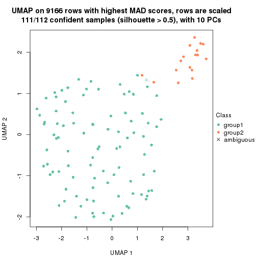
dimension_reduction(res, k = 3, method = "UMAP")
dimension_reduction(res, k = 4, method = "UMAP")
dimension_reduction(res, k = 5, method = "UMAP")
dimension_reduction(res, k = 6, method = "UMAP")
Following heatmap shows how subgroups are split when increasing k:
collect_classes(res)
If matrix rows can be associated to genes, consider to use GO_Enrichment(res,
...) to perform function enrichment for the signature genes.
The object with results only for a single top-value method and a single partition method can be extracted as:
res = res_list["MAD", "skmeans"]
# you can also extract it by
# res = res_list["MAD:skmeans"]
A summary of res and all the functions that can be applied to it:
res
#> A 'ConsensusPartition' object with k = 2, 3, 4, 5, 6.
#> On a matrix with 9166 rows and 112 columns.
#> Top rows (917, 1834, 2750, 3666, 4583) are extracted by 'MAD' method.
#> Subgroups are detected by 'skmeans' method.
#> Performed in total 1250 partitions by row resampling.
#> Best k for subgroups seems to be 2.
#>
#> Following methods can be applied to this 'ConsensusPartition' object:
#> [1] "cola_report" "collect_classes" "collect_plots"
#> [4] "collect_stats" "colnames" "compare_signatures"
#> [7] "consensus_heatmap" "dimension_reduction" "functional_enrichment"
#> [10] "get_anno_col" "get_anno" "get_classes"
#> [13] "get_consensus" "get_matrix" "get_membership"
#> [16] "get_param" "get_signatures" "get_stats"
#> [19] "is_best_k" "is_stable_k" "membership_heatmap"
#> [22] "ncol" "nrow" "plot_ecdf"
#> [25] "rownames" "select_partition_number" "show"
#> [28] "suggest_best_k" "test_to_known_factors"
collect_plots() function collects all the plots made from res for all k (number of partitions)
into one single page to provide an easy and fast comparison between different k.
collect_plots(res)
The plots are:
k and the heatmap of
predicted classes for each k.k.k.k.All the plots in panels can be made by individual functions and they are plotted later in this section.
select_partition_number() produces several plots showing different
statistics for choosing “optimized” k. There are following statistics:
k;k, the area increased is defined as \(A_k - A_{k-1}\).The detailed explanations of these statistics can be found in the cola vignette.
Generally speaking, lower PAC score, higher mean silhouette score or higher
concordance corresponds to better partition. Rand index and Jaccard index
measure how similar the current partition is compared to partition with k-1.
If they are too similar, we won't accept k is better than k-1.
select_partition_number(res)
The numeric values for all these statistics can be obtained by get_stats().
get_stats(res)
#> k 1-PAC mean_silhouette concordance area_increased Rand Jaccard
#> 2 2 1.000 0.962 0.984 0.4366 0.560 0.560
#> 3 3 0.523 0.706 0.845 0.3594 0.861 0.755
#> 4 4 0.427 0.487 0.730 0.1537 0.920 0.827
#> 5 5 0.425 0.358 0.655 0.0805 0.944 0.871
#> 6 6 0.440 0.354 0.604 0.0534 0.908 0.780
suggest_best_k() suggests the best \(k\) based on these statistics. The rules are as follows:
NA.suggest_best_k(res)
#> [1] 2
Following shows the table of the partitions (You need to click the show/hide
code output link to see it). The membership matrix (columns with name p*)
is inferred by
clue::cl_consensus()
function with the SE method. Basically the value in the membership matrix
represents the probability to belong to a certain group. The finall class
label for an item is determined with the group with highest probability it
belongs to.
In get_classes() function, the entropy is calculated from the membership
matrix and the silhouette score is calculated from the consensus matrix.
cbind(get_classes(res, k = 2), get_membership(res, k = 2))
#> class entropy silhouette p1 p2
#> SRR1003755 1 0.0000 0.992 1.000 0.000
#> SRR1003756 1 0.0000 0.992 1.000 0.000
#> SRR1003757 1 0.0000 0.992 1.000 0.000
#> SRR1003758 1 0.0000 0.992 1.000 0.000
#> SRR1003759 2 0.0000 0.966 0.000 1.000
#> SRR1003760 2 0.0000 0.966 0.000 1.000
#> SRR1003761 2 0.0000 0.966 0.000 1.000
#> SRR1003762 2 0.0000 0.966 0.000 1.000
#> SRR1003763 2 0.0000 0.966 0.000 1.000
#> SRR1003764 2 0.0000 0.966 0.000 1.000
#> SRR1003765 2 0.0000 0.966 0.000 1.000
#> SRR1003766 2 0.0000 0.966 0.000 1.000
#> SRR1003767 2 0.0000 0.966 0.000 1.000
#> SRR1003768 2 0.0000 0.966 0.000 1.000
#> SRR1003769 2 0.0000 0.966 0.000 1.000
#> SRR1003770 2 0.0000 0.966 0.000 1.000
#> SRR1003771 2 0.0000 0.966 0.000 1.000
#> SRR1003773 2 0.0000 0.966 0.000 1.000
#> SRR1003772 1 0.0000 0.992 1.000 0.000
#> SRR1003774 1 0.0000 0.992 1.000 0.000
#> SRR1003775 1 0.0000 0.992 1.000 0.000
#> SRR1003776 1 0.0000 0.992 1.000 0.000
#> SRR1003777 1 0.0000 0.992 1.000 0.000
#> SRR1003778 2 0.0000 0.966 0.000 1.000
#> SRR1003779 1 0.0000 0.992 1.000 0.000
#> SRR1003780 2 0.0000 0.966 0.000 1.000
#> SRR1003781 1 0.0000 0.992 1.000 0.000
#> SRR1003784 2 0.4022 0.899 0.080 0.920
#> SRR1003785 2 0.0000 0.966 0.000 1.000
#> SRR1003786 1 0.0000 0.992 1.000 0.000
#> SRR1003783 1 0.0000 0.992 1.000 0.000
#> SRR1003787 1 0.0000 0.992 1.000 0.000
#> SRR1003788 1 0.0376 0.988 0.996 0.004
#> SRR1003789 2 0.0000 0.966 0.000 1.000
#> SRR1003790 1 0.0000 0.992 1.000 0.000
#> SRR1003791 2 0.0000 0.966 0.000 1.000
#> SRR1003792 1 0.0000 0.992 1.000 0.000
#> SRR1003793 1 0.0000 0.992 1.000 0.000
#> SRR1003794 1 0.0000 0.992 1.000 0.000
#> SRR1003795 2 0.0000 0.966 0.000 1.000
#> SRR1003796 2 0.0000 0.966 0.000 1.000
#> SRR1003797 1 0.0000 0.992 1.000 0.000
#> SRR1003798 1 0.0000 0.992 1.000 0.000
#> SRR1003799 1 0.0000 0.992 1.000 0.000
#> SRR1003800 1 0.0000 0.992 1.000 0.000
#> SRR1003801 1 0.3274 0.932 0.940 0.060
#> SRR1003802 1 0.0376 0.988 0.996 0.004
#> SRR1003803 1 0.0000 0.992 1.000 0.000
#> SRR1003804 1 0.0000 0.992 1.000 0.000
#> SRR1003805 1 0.0000 0.992 1.000 0.000
#> SRR1003806 1 0.0000 0.992 1.000 0.000
#> SRR1003807 1 0.9635 0.340 0.612 0.388
#> SRR1003809 1 0.3733 0.917 0.928 0.072
#> SRR1003808 2 0.9866 0.257 0.432 0.568
#> SRR1003810 1 0.0000 0.992 1.000 0.000
#> SRR1003811 1 0.0000 0.992 1.000 0.000
#> SRR1003812 1 0.0000 0.992 1.000 0.000
#> SRR1003813 2 0.1633 0.948 0.024 0.976
#> SRR1003814 1 0.1414 0.974 0.980 0.020
#> SRR1003815 1 0.0000 0.992 1.000 0.000
#> SRR1003816 1 0.0000 0.992 1.000 0.000
#> SRR1003817 1 0.0000 0.992 1.000 0.000
#> SRR1003818 1 0.0000 0.992 1.000 0.000
#> SRR1003819 2 0.0000 0.966 0.000 1.000
#> SRR1003820 1 0.0000 0.992 1.000 0.000
#> SRR1003821 1 0.0000 0.992 1.000 0.000
#> SRR1003822 2 0.7376 0.743 0.208 0.792
#> SRR1003824 1 0.0000 0.992 1.000 0.000
#> SRR1003823 1 0.0000 0.992 1.000 0.000
#> SRR1003825 1 0.0000 0.992 1.000 0.000
#> SRR1003826 1 0.0000 0.992 1.000 0.000
#> SRR1003827 1 0.0000 0.992 1.000 0.000
#> SRR1003828 1 0.0000 0.992 1.000 0.000
#> SRR1003829 1 0.0000 0.992 1.000 0.000
#> SRR1003830 1 0.0000 0.992 1.000 0.000
#> SRR1003831 1 0.0376 0.988 0.996 0.004
#> SRR1003832 1 0.0000 0.992 1.000 0.000
#> SRR1003833 1 0.0000 0.992 1.000 0.000
#> SRR1003834 1 0.0376 0.988 0.996 0.004
#> SRR1003836 2 0.9323 0.490 0.348 0.652
#> SRR1003835 1 0.0000 0.992 1.000 0.000
#> SRR1003838 2 0.0000 0.966 0.000 1.000
#> SRR1003837 1 0.0000 0.992 1.000 0.000
#> SRR1003839 1 0.0376 0.988 0.996 0.004
#> SRR1003840 2 0.0000 0.966 0.000 1.000
#> SRR1003841 2 0.0000 0.966 0.000 1.000
#> SRR1003842 1 0.0000 0.992 1.000 0.000
#> SRR1003844 1 0.0000 0.992 1.000 0.000
#> SRR1003845 2 0.0000 0.966 0.000 1.000
#> SRR1003846 1 0.0000 0.992 1.000 0.000
#> SRR1003847 1 0.0000 0.992 1.000 0.000
#> SRR1003848 1 0.0000 0.992 1.000 0.000
#> SRR1003849 2 0.0000 0.966 0.000 1.000
#> SRR1003850 1 0.0000 0.992 1.000 0.000
#> SRR1003851 2 0.0000 0.966 0.000 1.000
#> SRR1003852 2 0.0000 0.966 0.000 1.000
#> SRR1003853 1 0.0000 0.992 1.000 0.000
#> SRR1003854 1 0.0000 0.992 1.000 0.000
#> SRR1003843 2 0.0000 0.966 0.000 1.000
#> SRR1003855 1 0.0000 0.992 1.000 0.000
#> SRR1003856 2 0.4431 0.887 0.092 0.908
#> SRR1003857 1 0.0000 0.992 1.000 0.000
#> SRR1003858 1 0.0000 0.992 1.000 0.000
#> SRR1003859 1 0.0000 0.992 1.000 0.000
#> SRR1003860 1 0.0000 0.992 1.000 0.000
#> SRR1003861 1 0.0000 0.992 1.000 0.000
#> SRR1003862 1 0.0000 0.992 1.000 0.000
#> SRR1003863 1 0.0000 0.992 1.000 0.000
#> SRR1003864 1 0.0000 0.992 1.000 0.000
#> SRR1003865 1 0.1414 0.974 0.980 0.020
#> SRR1003866 1 0.1414 0.974 0.980 0.020
#> SRR1003867 1 0.0000 0.992 1.000 0.000
cbind(get_classes(res, k = 3), get_membership(res, k = 3))
#> class entropy silhouette p1 p2 p3
#> SRR1003755 1 0.0424 0.8248 0.992 0.000 0.008
#> SRR1003756 1 0.0424 0.8248 0.992 0.000 0.008
#> SRR1003757 1 0.0424 0.8248 0.992 0.000 0.008
#> SRR1003758 1 0.0424 0.8248 0.992 0.000 0.008
#> SRR1003759 2 0.6599 0.6757 0.084 0.748 0.168
#> SRR1003760 2 0.0000 0.8900 0.000 1.000 0.000
#> SRR1003761 2 0.0000 0.8900 0.000 1.000 0.000
#> SRR1003762 2 0.0000 0.8900 0.000 1.000 0.000
#> SRR1003763 2 0.0000 0.8900 0.000 1.000 0.000
#> SRR1003764 2 0.0000 0.8900 0.000 1.000 0.000
#> SRR1003765 2 0.0000 0.8900 0.000 1.000 0.000
#> SRR1003766 2 0.0000 0.8900 0.000 1.000 0.000
#> SRR1003767 2 0.0000 0.8900 0.000 1.000 0.000
#> SRR1003768 2 0.0000 0.8900 0.000 1.000 0.000
#> SRR1003769 2 0.0000 0.8900 0.000 1.000 0.000
#> SRR1003770 2 0.0000 0.8900 0.000 1.000 0.000
#> SRR1003771 2 0.0000 0.8900 0.000 1.000 0.000
#> SRR1003773 2 0.2356 0.8707 0.000 0.928 0.072
#> SRR1003772 1 0.0424 0.8253 0.992 0.000 0.008
#> SRR1003774 1 0.5896 0.5375 0.700 0.008 0.292
#> SRR1003775 1 0.0747 0.8245 0.984 0.000 0.016
#> SRR1003776 1 0.5098 0.6404 0.752 0.000 0.248
#> SRR1003777 1 0.0747 0.8267 0.984 0.000 0.016
#> SRR1003778 2 0.0747 0.8865 0.000 0.984 0.016
#> SRR1003779 1 0.2066 0.8243 0.940 0.000 0.060
#> SRR1003780 2 0.0000 0.8900 0.000 1.000 0.000
#> SRR1003781 1 0.5098 0.6660 0.752 0.000 0.248
#> SRR1003784 3 0.5138 0.5135 0.052 0.120 0.828
#> SRR1003785 2 0.3941 0.8301 0.000 0.844 0.156
#> SRR1003786 1 0.0000 0.8233 1.000 0.000 0.000
#> SRR1003783 1 0.0892 0.8271 0.980 0.000 0.020
#> SRR1003787 1 0.2878 0.8067 0.904 0.000 0.096
#> SRR1003788 3 0.5958 0.5979 0.300 0.008 0.692
#> SRR1003789 2 0.0000 0.8900 0.000 1.000 0.000
#> SRR1003790 1 0.1163 0.8255 0.972 0.000 0.028
#> SRR1003791 2 0.5058 0.7538 0.000 0.756 0.244
#> SRR1003792 1 0.3879 0.7793 0.848 0.000 0.152
#> SRR1003793 1 0.1964 0.8263 0.944 0.000 0.056
#> SRR1003794 1 0.3619 0.7886 0.864 0.000 0.136
#> SRR1003795 2 0.2448 0.8707 0.000 0.924 0.076
#> SRR1003796 2 0.1411 0.8819 0.000 0.964 0.036
#> SRR1003797 1 0.1753 0.8252 0.952 0.000 0.048
#> SRR1003798 1 0.5058 0.6404 0.756 0.000 0.244
#> SRR1003799 1 0.1643 0.8292 0.956 0.000 0.044
#> SRR1003800 1 0.5178 0.6042 0.744 0.000 0.256
#> SRR1003801 1 0.7668 -0.2571 0.496 0.044 0.460
#> SRR1003802 3 0.5785 0.6269 0.300 0.004 0.696
#> SRR1003803 1 0.3267 0.7881 0.884 0.000 0.116
#> SRR1003804 1 0.4750 0.6844 0.784 0.000 0.216
#> SRR1003805 1 0.0892 0.8279 0.980 0.000 0.020
#> SRR1003806 1 0.1860 0.8240 0.948 0.000 0.052
#> SRR1003807 3 0.9550 0.5550 0.340 0.204 0.456
#> SRR1003809 3 0.6051 0.6429 0.292 0.012 0.696
#> SRR1003808 2 0.9369 -0.0399 0.280 0.508 0.212
#> SRR1003810 1 0.4346 0.7394 0.816 0.000 0.184
#> SRR1003811 1 0.5678 0.4936 0.684 0.000 0.316
#> SRR1003812 1 0.0747 0.8271 0.984 0.000 0.016
#> SRR1003813 3 0.5508 0.4204 0.028 0.188 0.784
#> SRR1003814 1 0.6761 0.5478 0.700 0.048 0.252
#> SRR1003815 1 0.2796 0.8109 0.908 0.000 0.092
#> SRR1003816 1 0.0424 0.8254 0.992 0.000 0.008
#> SRR1003817 1 0.0000 0.8233 1.000 0.000 0.000
#> SRR1003818 1 0.1643 0.8286 0.956 0.000 0.044
#> SRR1003819 2 0.7099 0.4866 0.028 0.588 0.384
#> SRR1003820 1 0.1860 0.8249 0.948 0.000 0.052
#> SRR1003821 1 0.0000 0.8233 1.000 0.000 0.000
#> SRR1003822 3 0.7042 0.5672 0.132 0.140 0.728
#> SRR1003824 1 0.5327 0.5801 0.728 0.000 0.272
#> SRR1003823 1 0.1411 0.8287 0.964 0.000 0.036
#> SRR1003825 3 0.5733 0.6091 0.324 0.000 0.676
#> SRR1003826 1 0.0424 0.8261 0.992 0.000 0.008
#> SRR1003827 1 0.1753 0.8285 0.952 0.000 0.048
#> SRR1003828 3 0.6302 0.2983 0.480 0.000 0.520
#> SRR1003829 1 0.1529 0.8300 0.960 0.000 0.040
#> SRR1003830 1 0.1289 0.8296 0.968 0.000 0.032
#> SRR1003831 3 0.6669 0.2454 0.468 0.008 0.524
#> SRR1003832 1 0.1163 0.8286 0.972 0.000 0.028
#> SRR1003833 1 0.5591 0.5507 0.696 0.000 0.304
#> SRR1003834 3 0.6308 0.2433 0.492 0.000 0.508
#> SRR1003836 3 0.8862 0.5860 0.232 0.192 0.576
#> SRR1003835 1 0.5497 0.5543 0.708 0.000 0.292
#> SRR1003838 2 0.3879 0.8333 0.000 0.848 0.152
#> SRR1003837 1 0.6215 0.1857 0.572 0.000 0.428
#> SRR1003839 3 0.6935 0.4729 0.372 0.024 0.604
#> SRR1003840 2 0.5480 0.7136 0.004 0.732 0.264
#> SRR1003841 2 0.0000 0.8900 0.000 1.000 0.000
#> SRR1003842 1 0.1529 0.8297 0.960 0.000 0.040
#> SRR1003844 1 0.0747 0.8268 0.984 0.000 0.016
#> SRR1003845 2 0.3267 0.8507 0.000 0.884 0.116
#> SRR1003846 1 0.2261 0.8250 0.932 0.000 0.068
#> SRR1003847 1 0.5325 0.6401 0.748 0.004 0.248
#> SRR1003848 3 0.6204 0.4767 0.424 0.000 0.576
#> SRR1003849 2 0.4796 0.7780 0.000 0.780 0.220
#> SRR1003850 1 0.6062 0.1884 0.616 0.000 0.384
#> SRR1003851 2 0.5560 0.6921 0.000 0.700 0.300
#> SRR1003852 2 0.4887 0.7564 0.000 0.772 0.228
#> SRR1003853 1 0.6244 0.0907 0.560 0.000 0.440
#> SRR1003854 1 0.4452 0.7306 0.808 0.000 0.192
#> SRR1003843 2 0.5254 0.7351 0.000 0.736 0.264
#> SRR1003855 1 0.5016 0.6588 0.760 0.000 0.240
#> SRR1003856 3 0.3850 0.5166 0.028 0.088 0.884
#> SRR1003857 1 0.3340 0.8022 0.880 0.000 0.120
#> SRR1003858 1 0.5650 0.5446 0.688 0.000 0.312
#> SRR1003859 1 0.1031 0.8263 0.976 0.000 0.024
#> SRR1003860 1 0.2625 0.8173 0.916 0.000 0.084
#> SRR1003861 1 0.5859 0.4353 0.656 0.000 0.344
#> SRR1003862 1 0.0424 0.8245 0.992 0.000 0.008
#> SRR1003863 1 0.1289 0.8291 0.968 0.000 0.032
#> SRR1003864 1 0.2261 0.8220 0.932 0.000 0.068
#> SRR1003865 1 0.6998 0.4218 0.664 0.044 0.292
#> SRR1003866 1 0.5384 0.7023 0.788 0.024 0.188
#> SRR1003867 1 0.4645 0.7212 0.816 0.008 0.176
cbind(get_classes(res, k = 4), get_membership(res, k = 4))
#> class entropy silhouette p1 p2 p3 p4
#> SRR1003755 1 0.0657 0.6804 0.984 0.000 0.004 0.012
#> SRR1003756 1 0.0657 0.6804 0.984 0.000 0.004 0.012
#> SRR1003757 1 0.1042 0.6817 0.972 0.000 0.008 0.020
#> SRR1003758 1 0.1042 0.6817 0.972 0.000 0.008 0.020
#> SRR1003759 2 0.7408 0.2759 0.032 0.544 0.092 0.332
#> SRR1003760 2 0.0000 0.8062 0.000 1.000 0.000 0.000
#> SRR1003761 2 0.0000 0.8062 0.000 1.000 0.000 0.000
#> SRR1003762 2 0.0000 0.8062 0.000 1.000 0.000 0.000
#> SRR1003763 2 0.0000 0.8062 0.000 1.000 0.000 0.000
#> SRR1003764 2 0.0000 0.8062 0.000 1.000 0.000 0.000
#> SRR1003765 2 0.0000 0.8062 0.000 1.000 0.000 0.000
#> SRR1003766 2 0.0000 0.8062 0.000 1.000 0.000 0.000
#> SRR1003767 2 0.0000 0.8062 0.000 1.000 0.000 0.000
#> SRR1003768 2 0.0000 0.8062 0.000 1.000 0.000 0.000
#> SRR1003769 2 0.0000 0.8062 0.000 1.000 0.000 0.000
#> SRR1003770 2 0.0000 0.8062 0.000 1.000 0.000 0.000
#> SRR1003771 2 0.0000 0.8062 0.000 1.000 0.000 0.000
#> SRR1003773 2 0.3942 0.6938 0.000 0.764 0.236 0.000
#> SRR1003772 1 0.1978 0.6898 0.928 0.000 0.004 0.068
#> SRR1003774 1 0.7162 0.1290 0.536 0.004 0.136 0.324
#> SRR1003775 1 0.1743 0.6884 0.940 0.000 0.004 0.056
#> SRR1003776 1 0.7082 0.1501 0.540 0.000 0.152 0.308
#> SRR1003777 1 0.2542 0.6928 0.904 0.000 0.012 0.084
#> SRR1003778 2 0.2149 0.7763 0.000 0.912 0.088 0.000
#> SRR1003779 1 0.4423 0.6558 0.788 0.000 0.036 0.176
#> SRR1003780 2 0.0000 0.8062 0.000 1.000 0.000 0.000
#> SRR1003781 1 0.6423 0.3547 0.580 0.000 0.084 0.336
#> SRR1003784 3 0.4160 0.4571 0.040 0.028 0.848 0.084
#> SRR1003785 2 0.5220 0.5544 0.000 0.632 0.352 0.016
#> SRR1003786 1 0.1211 0.6835 0.960 0.000 0.000 0.040
#> SRR1003783 1 0.2281 0.6910 0.904 0.000 0.000 0.096
#> SRR1003787 1 0.4964 0.5854 0.716 0.000 0.028 0.256
#> SRR1003788 4 0.7670 0.3085 0.192 0.004 0.344 0.460
#> SRR1003789 2 0.0000 0.8062 0.000 1.000 0.000 0.000
#> SRR1003790 1 0.2522 0.6875 0.908 0.000 0.016 0.076
#> SRR1003791 2 0.6404 0.5414 0.000 0.644 0.220 0.136
#> SRR1003792 1 0.4900 0.6225 0.732 0.000 0.032 0.236
#> SRR1003793 1 0.4798 0.6616 0.768 0.000 0.052 0.180
#> SRR1003794 1 0.5434 0.5911 0.728 0.000 0.084 0.188
#> SRR1003795 2 0.4049 0.7083 0.000 0.780 0.212 0.008
#> SRR1003796 2 0.3266 0.7361 0.000 0.832 0.168 0.000
#> SRR1003797 1 0.4267 0.6546 0.788 0.000 0.024 0.188
#> SRR1003798 1 0.6708 0.3629 0.596 0.000 0.132 0.272
#> SRR1003799 1 0.3372 0.6902 0.868 0.000 0.036 0.096
#> SRR1003800 1 0.6883 0.3478 0.596 0.000 0.192 0.212
#> SRR1003801 4 0.8082 0.4094 0.264 0.016 0.252 0.468
#> SRR1003802 3 0.7153 0.1033 0.196 0.000 0.556 0.248
#> SRR1003803 1 0.5628 0.5949 0.704 0.000 0.080 0.216
#> SRR1003804 1 0.6027 0.5272 0.684 0.000 0.124 0.192
#> SRR1003805 1 0.3806 0.6864 0.824 0.000 0.020 0.156
#> SRR1003806 1 0.3934 0.6814 0.836 0.000 0.048 0.116
#> SRR1003807 3 0.9235 -0.0735 0.248 0.092 0.404 0.256
#> SRR1003809 3 0.8016 -0.0811 0.256 0.024 0.508 0.212
#> SRR1003808 2 0.9672 -0.3836 0.220 0.320 0.144 0.316
#> SRR1003810 1 0.6064 0.4940 0.672 0.000 0.108 0.220
#> SRR1003811 1 0.6855 0.2594 0.600 0.000 0.200 0.200
#> SRR1003812 1 0.1824 0.6859 0.936 0.000 0.004 0.060
#> SRR1003813 3 0.5659 0.4608 0.028 0.104 0.760 0.108
#> SRR1003814 1 0.7792 -0.2533 0.428 0.024 0.128 0.420
#> SRR1003815 1 0.4776 0.6537 0.776 0.000 0.060 0.164
#> SRR1003816 1 0.2342 0.6838 0.912 0.000 0.008 0.080
#> SRR1003817 1 0.2222 0.6873 0.924 0.000 0.016 0.060
#> SRR1003818 1 0.4462 0.6620 0.804 0.000 0.064 0.132
#> SRR1003819 3 0.8713 0.2095 0.040 0.344 0.372 0.244
#> SRR1003820 1 0.3377 0.6868 0.848 0.000 0.012 0.140
#> SRR1003821 1 0.1489 0.6864 0.952 0.000 0.004 0.044
#> SRR1003822 3 0.5977 0.4629 0.048 0.104 0.748 0.100
#> SRR1003824 1 0.6977 0.2462 0.584 0.000 0.204 0.212
#> SRR1003823 1 0.3427 0.6867 0.860 0.000 0.028 0.112
#> SRR1003825 4 0.7853 0.3233 0.268 0.000 0.364 0.368
#> SRR1003826 1 0.2831 0.6961 0.876 0.000 0.004 0.120
#> SRR1003827 1 0.4755 0.6539 0.760 0.000 0.040 0.200
#> SRR1003828 1 0.7899 -0.3926 0.372 0.000 0.324 0.304
#> SRR1003829 1 0.4462 0.6740 0.792 0.000 0.044 0.164
#> SRR1003830 1 0.3907 0.6774 0.828 0.000 0.032 0.140
#> SRR1003831 4 0.7541 0.4338 0.240 0.004 0.236 0.520
#> SRR1003832 1 0.3307 0.6865 0.868 0.000 0.028 0.104
#> SRR1003833 1 0.7191 -0.0870 0.500 0.000 0.148 0.352
#> SRR1003834 1 0.7914 -0.5359 0.348 0.000 0.308 0.344
#> SRR1003836 4 0.9692 -0.0581 0.176 0.180 0.308 0.336
#> SRR1003835 1 0.7468 -0.2216 0.464 0.000 0.184 0.352
#> SRR1003838 2 0.4608 0.6289 0.000 0.692 0.304 0.004
#> SRR1003837 4 0.7370 0.3247 0.412 0.000 0.160 0.428
#> SRR1003839 4 0.7295 0.3748 0.188 0.008 0.232 0.572
#> SRR1003840 2 0.7159 0.3522 0.000 0.556 0.200 0.244
#> SRR1003841 2 0.0000 0.8062 0.000 1.000 0.000 0.000
#> SRR1003842 1 0.3392 0.6886 0.856 0.000 0.020 0.124
#> SRR1003844 1 0.2610 0.6973 0.900 0.000 0.012 0.088
#> SRR1003845 2 0.5624 0.6452 0.000 0.724 0.148 0.128
#> SRR1003846 1 0.4524 0.6464 0.768 0.000 0.028 0.204
#> SRR1003847 1 0.7122 0.1579 0.540 0.004 0.132 0.324
#> SRR1003848 3 0.6993 -0.0673 0.296 0.000 0.556 0.148
#> SRR1003849 2 0.5536 0.4819 0.000 0.592 0.384 0.024
#> SRR1003850 1 0.7660 -0.2098 0.464 0.000 0.276 0.260
#> SRR1003851 2 0.5700 0.4224 0.000 0.560 0.412 0.028
#> SRR1003852 2 0.6819 0.3618 0.000 0.564 0.124 0.312
#> SRR1003853 4 0.7028 0.3990 0.380 0.000 0.124 0.496
#> SRR1003854 1 0.6830 0.0534 0.524 0.000 0.108 0.368
#> SRR1003843 2 0.6084 0.5864 0.000 0.656 0.252 0.092
#> SRR1003855 1 0.6037 0.3702 0.628 0.000 0.068 0.304
#> SRR1003856 3 0.4998 0.4347 0.008 0.048 0.768 0.176
#> SRR1003857 1 0.4916 0.6212 0.760 0.000 0.056 0.184
#> SRR1003858 1 0.6652 0.0195 0.516 0.000 0.088 0.396
#> SRR1003859 1 0.2813 0.6889 0.896 0.000 0.024 0.080
#> SRR1003860 1 0.5091 0.6459 0.752 0.000 0.068 0.180
#> SRR1003861 1 0.7458 -0.3018 0.444 0.000 0.176 0.380
#> SRR1003862 1 0.1677 0.6901 0.948 0.000 0.012 0.040
#> SRR1003863 1 0.1610 0.6896 0.952 0.000 0.016 0.032
#> SRR1003864 1 0.4423 0.6608 0.788 0.000 0.036 0.176
#> SRR1003865 4 0.8368 0.3976 0.368 0.040 0.168 0.424
#> SRR1003866 1 0.7031 0.2265 0.548 0.012 0.096 0.344
#> SRR1003867 1 0.6794 0.3716 0.584 0.000 0.136 0.280
cbind(get_classes(res, k = 5), get_membership(res, k = 5))
#> class entropy silhouette p1 p2 p3 p4 p5
#> SRR1003755 1 0.150 0.57162 0.940 0.000 0.004 0.056 0.000
#> SRR1003756 1 0.150 0.57162 0.940 0.000 0.004 0.056 0.000
#> SRR1003757 1 0.150 0.57057 0.940 0.000 0.004 0.056 0.000
#> SRR1003758 1 0.150 0.57057 0.940 0.000 0.004 0.056 0.000
#> SRR1003759 2 0.839 0.08034 0.040 0.428 0.100 0.132 0.300
#> SRR1003760 2 0.000 0.77616 0.000 1.000 0.000 0.000 0.000
#> SRR1003761 2 0.000 0.77616 0.000 1.000 0.000 0.000 0.000
#> SRR1003762 2 0.000 0.77616 0.000 1.000 0.000 0.000 0.000
#> SRR1003763 2 0.000 0.77616 0.000 1.000 0.000 0.000 0.000
#> SRR1003764 2 0.000 0.77616 0.000 1.000 0.000 0.000 0.000
#> SRR1003765 2 0.000 0.77616 0.000 1.000 0.000 0.000 0.000
#> SRR1003766 2 0.000 0.77616 0.000 1.000 0.000 0.000 0.000
#> SRR1003767 2 0.000 0.77616 0.000 1.000 0.000 0.000 0.000
#> SRR1003768 2 0.000 0.77616 0.000 1.000 0.000 0.000 0.000
#> SRR1003769 2 0.000 0.77616 0.000 1.000 0.000 0.000 0.000
#> SRR1003770 2 0.000 0.77616 0.000 1.000 0.000 0.000 0.000
#> SRR1003771 2 0.000 0.77616 0.000 1.000 0.000 0.000 0.000
#> SRR1003773 2 0.401 0.65519 0.000 0.728 0.256 0.000 0.016
#> SRR1003772 1 0.262 0.57679 0.876 0.000 0.004 0.112 0.008
#> SRR1003774 1 0.795 -0.23757 0.412 0.000 0.128 0.304 0.156
#> SRR1003775 1 0.319 0.59169 0.852 0.000 0.004 0.112 0.032
#> SRR1003776 1 0.759 -0.24122 0.416 0.000 0.080 0.352 0.152
#> SRR1003777 1 0.342 0.58695 0.824 0.000 0.016 0.152 0.008
#> SRR1003778 2 0.301 0.71230 0.000 0.824 0.172 0.000 0.004
#> SRR1003779 1 0.464 0.56340 0.752 0.000 0.032 0.184 0.032
#> SRR1003780 2 0.000 0.77616 0.000 1.000 0.000 0.000 0.000
#> SRR1003781 1 0.712 -0.16957 0.424 0.004 0.032 0.392 0.148
#> SRR1003784 3 0.511 0.39563 0.020 0.044 0.768 0.052 0.116
#> SRR1003785 2 0.508 0.52663 0.000 0.596 0.364 0.004 0.036
#> SRR1003786 1 0.120 0.57436 0.956 0.000 0.004 0.040 0.000
#> SRR1003783 1 0.249 0.58226 0.872 0.000 0.000 0.124 0.004
#> SRR1003787 1 0.605 0.40309 0.616 0.000 0.028 0.260 0.096
#> SRR1003788 5 0.829 0.05880 0.124 0.004 0.208 0.292 0.372
#> SRR1003789 2 0.000 0.77616 0.000 1.000 0.000 0.000 0.000
#> SRR1003790 1 0.375 0.59046 0.820 0.000 0.012 0.132 0.036
#> SRR1003791 2 0.791 0.26594 0.004 0.480 0.152 0.144 0.220
#> SRR1003792 1 0.641 0.30549 0.564 0.000 0.020 0.276 0.140
#> SRR1003793 1 0.571 0.50179 0.664 0.000 0.032 0.224 0.080
#> SRR1003794 1 0.663 0.39345 0.576 0.000 0.068 0.268 0.088
#> SRR1003795 2 0.448 0.65860 0.000 0.720 0.240 0.004 0.036
#> SRR1003796 2 0.366 0.68822 0.000 0.776 0.208 0.000 0.016
#> SRR1003797 1 0.513 0.48205 0.664 0.000 0.020 0.280 0.036
#> SRR1003798 1 0.768 0.14435 0.484 0.000 0.108 0.232 0.176
#> SRR1003799 1 0.477 0.58148 0.760 0.000 0.036 0.152 0.052
#> SRR1003800 1 0.774 0.00576 0.452 0.000 0.148 0.288 0.112
#> SRR1003801 1 0.898 -0.51483 0.248 0.016 0.240 0.248 0.248
#> SRR1003802 3 0.795 0.11804 0.144 0.000 0.456 0.216 0.184
#> SRR1003803 1 0.669 0.39846 0.592 0.000 0.084 0.232 0.092
#> SRR1003804 1 0.693 0.36450 0.588 0.000 0.092 0.180 0.140
#> SRR1003805 1 0.502 0.55739 0.728 0.000 0.024 0.184 0.064
#> SRR1003806 1 0.544 0.53401 0.700 0.000 0.044 0.196 0.060
#> SRR1003807 3 0.937 -0.04289 0.192 0.068 0.296 0.156 0.288
#> SRR1003809 3 0.853 -0.00973 0.152 0.012 0.396 0.220 0.220
#> SRR1003808 5 0.947 0.09636 0.172 0.216 0.092 0.172 0.348
#> SRR1003810 1 0.676 0.32647 0.568 0.000 0.072 0.264 0.096
#> SRR1003811 1 0.767 -0.03565 0.480 0.000 0.180 0.240 0.100
#> SRR1003812 1 0.291 0.57459 0.848 0.000 0.000 0.140 0.012
#> SRR1003813 3 0.490 0.39028 0.020 0.056 0.788 0.052 0.084
#> SRR1003814 1 0.801 -0.37829 0.364 0.008 0.068 0.340 0.220
#> SRR1003815 1 0.538 0.51635 0.700 0.000 0.044 0.204 0.052
#> SRR1003816 1 0.280 0.57280 0.852 0.000 0.000 0.140 0.008
#> SRR1003817 1 0.202 0.57636 0.900 0.000 0.000 0.100 0.000
#> SRR1003818 1 0.508 0.53474 0.724 0.000 0.028 0.188 0.060
#> SRR1003819 2 0.889 -0.26147 0.032 0.296 0.292 0.116 0.264
#> SRR1003820 1 0.444 0.56429 0.760 0.000 0.008 0.176 0.056
#> SRR1003821 1 0.198 0.57713 0.920 0.000 0.000 0.064 0.016
#> SRR1003822 3 0.730 0.34798 0.056 0.072 0.608 0.092 0.172
#> SRR1003824 1 0.788 0.02551 0.468 0.000 0.176 0.212 0.144
#> SRR1003823 1 0.431 0.57066 0.752 0.000 0.028 0.208 0.012
#> SRR1003825 5 0.829 0.09267 0.132 0.000 0.244 0.276 0.348
#> SRR1003826 1 0.377 0.58792 0.800 0.000 0.008 0.168 0.024
#> SRR1003827 1 0.546 0.53023 0.704 0.000 0.028 0.164 0.104
#> SRR1003828 1 0.846 -0.35522 0.332 0.000 0.272 0.196 0.200
#> SRR1003829 1 0.568 0.49584 0.680 0.000 0.040 0.200 0.080
#> SRR1003830 1 0.425 0.56876 0.756 0.000 0.008 0.204 0.032
#> SRR1003831 4 0.822 0.23127 0.208 0.004 0.116 0.388 0.284
#> SRR1003832 1 0.331 0.58339 0.852 0.000 0.020 0.108 0.020
#> SRR1003833 1 0.790 -0.32616 0.388 0.000 0.084 0.308 0.220
#> SRR1003834 4 0.852 0.25111 0.272 0.000 0.192 0.304 0.232
#> SRR1003836 5 0.906 0.07485 0.084 0.088 0.192 0.264 0.372
#> SRR1003835 1 0.821 -0.28396 0.340 0.000 0.112 0.288 0.260
#> SRR1003838 2 0.589 0.52305 0.000 0.588 0.300 0.008 0.104
#> SRR1003837 1 0.769 -0.34482 0.368 0.000 0.068 0.368 0.196
#> SRR1003839 5 0.792 -0.02784 0.160 0.000 0.112 0.356 0.372
#> SRR1003840 2 0.781 0.25763 0.004 0.472 0.156 0.108 0.260
#> SRR1003841 2 0.000 0.77616 0.000 1.000 0.000 0.000 0.000
#> SRR1003842 1 0.462 0.54259 0.712 0.000 0.016 0.248 0.024
#> SRR1003844 1 0.286 0.59120 0.852 0.000 0.000 0.136 0.012
#> SRR1003845 2 0.590 0.60246 0.000 0.680 0.108 0.052 0.160
#> SRR1003846 1 0.566 0.49949 0.664 0.000 0.032 0.232 0.072
#> SRR1003847 1 0.772 -0.04010 0.464 0.000 0.092 0.236 0.208
#> SRR1003848 3 0.751 0.08275 0.232 0.000 0.512 0.128 0.128
#> SRR1003849 2 0.586 0.42472 0.000 0.532 0.392 0.020 0.056
#> SRR1003850 1 0.839 -0.24608 0.372 0.000 0.204 0.220 0.204
#> SRR1003851 2 0.626 0.28694 0.000 0.468 0.432 0.028 0.072
#> SRR1003852 2 0.811 -0.01965 0.000 0.372 0.148 0.156 0.324
#> SRR1003853 4 0.789 0.21809 0.208 0.000 0.108 0.444 0.240
#> SRR1003854 1 0.734 -0.01929 0.480 0.000 0.056 0.280 0.184
#> SRR1003843 2 0.712 0.40800 0.000 0.540 0.228 0.064 0.168
#> SRR1003855 1 0.777 -0.26776 0.416 0.000 0.080 0.304 0.200
#> SRR1003856 3 0.623 0.34823 0.012 0.048 0.668 0.104 0.168
#> SRR1003857 1 0.586 0.50724 0.680 0.000 0.056 0.176 0.088
#> SRR1003858 4 0.761 0.30607 0.360 0.000 0.064 0.388 0.188
#> SRR1003859 1 0.439 0.57352 0.776 0.000 0.016 0.156 0.052
#> SRR1003860 1 0.613 0.47091 0.656 0.000 0.052 0.176 0.116
#> SRR1003861 1 0.780 -0.43994 0.360 0.000 0.064 0.328 0.248
#> SRR1003862 1 0.219 0.58454 0.904 0.000 0.000 0.084 0.012
#> SRR1003863 1 0.369 0.58189 0.836 0.000 0.036 0.104 0.024
#> SRR1003864 1 0.514 0.49618 0.676 0.000 0.008 0.252 0.064
#> SRR1003865 5 0.838 -0.14098 0.292 0.012 0.104 0.220 0.372
#> SRR1003866 1 0.722 0.13445 0.484 0.004 0.040 0.308 0.164
#> SRR1003867 1 0.778 0.12178 0.496 0.008 0.096 0.224 0.176
cbind(get_classes(res, k = 6), get_membership(res, k = 6))
#> class entropy silhouette p1 p2 p3 p4 p5 p6
#> SRR1003755 1 0.1820 0.57119 0.928 0.000 0.000 0.044 0.012 0.016
#> SRR1003756 1 0.1820 0.57119 0.928 0.000 0.000 0.044 0.012 0.016
#> SRR1003757 1 0.1523 0.56861 0.940 0.000 0.000 0.044 0.008 0.008
#> SRR1003758 1 0.1523 0.56861 0.940 0.000 0.000 0.044 0.008 0.008
#> SRR1003759 2 0.8845 0.01800 0.040 0.404 0.108 0.128 0.156 0.164
#> SRR1003760 2 0.0146 0.76165 0.000 0.996 0.000 0.004 0.000 0.000
#> SRR1003761 2 0.0146 0.76165 0.000 0.996 0.000 0.004 0.000 0.000
#> SRR1003762 2 0.0000 0.76274 0.000 1.000 0.000 0.000 0.000 0.000
#> SRR1003763 2 0.0000 0.76274 0.000 1.000 0.000 0.000 0.000 0.000
#> SRR1003764 2 0.0000 0.76274 0.000 1.000 0.000 0.000 0.000 0.000
#> SRR1003765 2 0.0000 0.76274 0.000 1.000 0.000 0.000 0.000 0.000
#> SRR1003766 2 0.0000 0.76274 0.000 1.000 0.000 0.000 0.000 0.000
#> SRR1003767 2 0.0000 0.76274 0.000 1.000 0.000 0.000 0.000 0.000
#> SRR1003768 2 0.0000 0.76274 0.000 1.000 0.000 0.000 0.000 0.000
#> SRR1003769 2 0.0000 0.76274 0.000 1.000 0.000 0.000 0.000 0.000
#> SRR1003770 2 0.0000 0.76274 0.000 1.000 0.000 0.000 0.000 0.000
#> SRR1003771 2 0.0000 0.76274 0.000 1.000 0.000 0.000 0.000 0.000
#> SRR1003773 2 0.3769 0.55921 0.000 0.640 0.356 0.000 0.000 0.004
#> SRR1003772 1 0.3405 0.58793 0.816 0.000 0.000 0.136 0.036 0.012
#> SRR1003774 1 0.8397 -0.29576 0.308 0.000 0.076 0.248 0.248 0.120
#> SRR1003775 1 0.3908 0.59449 0.792 0.000 0.004 0.140 0.024 0.040
#> SRR1003776 1 0.8157 -0.04683 0.384 0.000 0.072 0.220 0.216 0.108
#> SRR1003777 1 0.4594 0.57974 0.732 0.000 0.020 0.192 0.032 0.024
#> SRR1003778 2 0.3215 0.65623 0.000 0.756 0.240 0.000 0.004 0.000
#> SRR1003779 1 0.6032 0.51043 0.612 0.000 0.004 0.200 0.108 0.076
#> SRR1003780 2 0.0000 0.76274 0.000 1.000 0.000 0.000 0.000 0.000
#> SRR1003781 1 0.7644 -0.13137 0.344 0.000 0.020 0.324 0.212 0.100
#> SRR1003784 3 0.4985 0.42148 0.004 0.020 0.736 0.028 0.076 0.136
#> SRR1003785 2 0.5384 0.35682 0.000 0.492 0.440 0.016 0.032 0.020
#> SRR1003786 1 0.1858 0.58029 0.912 0.000 0.000 0.076 0.000 0.012
#> SRR1003783 1 0.3390 0.58943 0.816 0.000 0.000 0.140 0.028 0.016
#> SRR1003787 1 0.6474 0.37742 0.536 0.000 0.016 0.180 0.236 0.032
#> SRR1003788 5 0.7878 0.08672 0.092 0.000 0.148 0.100 0.460 0.200
#> SRR1003789 2 0.0000 0.76274 0.000 1.000 0.000 0.000 0.000 0.000
#> SRR1003790 1 0.4663 0.57957 0.724 0.000 0.004 0.188 0.036 0.048
#> SRR1003791 2 0.8425 0.02988 0.008 0.380 0.228 0.076 0.124 0.184
#> SRR1003792 1 0.7453 0.18524 0.456 0.000 0.032 0.264 0.140 0.108
#> SRR1003793 1 0.6071 0.51973 0.616 0.000 0.008 0.196 0.076 0.104
#> SRR1003794 1 0.6789 0.36317 0.532 0.000 0.024 0.256 0.080 0.108
#> SRR1003795 2 0.4694 0.62288 0.000 0.692 0.236 0.008 0.012 0.052
#> SRR1003796 2 0.3421 0.64278 0.000 0.736 0.256 0.000 0.008 0.000
#> SRR1003797 1 0.5791 0.52889 0.652 0.000 0.016 0.180 0.100 0.052
#> SRR1003798 1 0.7297 0.28110 0.476 0.000 0.080 0.224 0.028 0.192
#> SRR1003799 1 0.5731 0.54375 0.656 0.000 0.008 0.172 0.092 0.072
#> SRR1003800 1 0.7688 0.13664 0.440 0.000 0.076 0.176 0.060 0.248
#> SRR1003801 4 0.8912 -0.04291 0.168 0.008 0.140 0.280 0.264 0.140
#> SRR1003802 6 0.7478 0.04838 0.088 0.000 0.268 0.128 0.052 0.464
#> SRR1003803 1 0.7258 0.19822 0.440 0.000 0.016 0.272 0.080 0.192
#> SRR1003804 1 0.7262 0.29838 0.504 0.000 0.044 0.136 0.084 0.232
#> SRR1003805 1 0.5887 0.52979 0.624 0.000 0.016 0.228 0.056 0.076
#> SRR1003806 1 0.5950 0.53377 0.632 0.000 0.016 0.188 0.048 0.116
#> SRR1003807 6 0.8556 0.10915 0.136 0.040 0.252 0.116 0.060 0.396
#> SRR1003809 3 0.8975 -0.14424 0.168 0.008 0.308 0.176 0.156 0.184
#> SRR1003808 4 0.9783 0.04235 0.156 0.188 0.076 0.200 0.188 0.192
#> SRR1003810 1 0.7398 0.33503 0.508 0.000 0.060 0.188 0.164 0.080
#> SRR1003811 1 0.7794 0.16419 0.460 0.000 0.096 0.232 0.100 0.112
#> SRR1003812 1 0.4259 0.57752 0.744 0.000 0.000 0.188 0.028 0.040
#> SRR1003813 3 0.5904 0.41761 0.008 0.056 0.696 0.084 0.084 0.072
#> SRR1003814 4 0.8300 0.04070 0.244 0.004 0.048 0.340 0.228 0.136
#> SRR1003815 1 0.6582 0.44925 0.576 0.000 0.020 0.204 0.112 0.088
#> SRR1003816 1 0.3300 0.57892 0.816 0.000 0.004 0.152 0.020 0.008
#> SRR1003817 1 0.3283 0.58378 0.824 0.000 0.004 0.140 0.012 0.020
#> SRR1003818 1 0.5530 0.53100 0.640 0.000 0.004 0.232 0.068 0.056
#> SRR1003819 5 0.8858 -0.13381 0.020 0.208 0.260 0.168 0.280 0.064
#> SRR1003820 1 0.5701 0.53571 0.648 0.000 0.016 0.188 0.116 0.032
#> SRR1003821 1 0.2945 0.58464 0.852 0.000 0.004 0.116 0.016 0.012
#> SRR1003822 3 0.7598 0.36277 0.052 0.044 0.544 0.092 0.084 0.184
#> SRR1003824 1 0.8325 -0.11016 0.372 0.000 0.084 0.236 0.140 0.168
#> SRR1003823 1 0.5769 0.51800 0.640 0.000 0.000 0.168 0.084 0.108
#> SRR1003825 6 0.8675 0.07577 0.148 0.000 0.180 0.124 0.236 0.312
#> SRR1003826 1 0.4956 0.56702 0.688 0.000 0.008 0.216 0.020 0.068
#> SRR1003827 1 0.6212 0.49713 0.600 0.000 0.016 0.196 0.140 0.048
#> SRR1003828 6 0.8616 0.09171 0.220 0.000 0.156 0.208 0.100 0.316
#> SRR1003829 1 0.6652 0.44195 0.560 0.000 0.012 0.200 0.132 0.096
#> SRR1003830 1 0.5269 0.55472 0.680 0.000 0.004 0.188 0.044 0.084
#> SRR1003831 5 0.7469 0.11201 0.156 0.000 0.120 0.156 0.512 0.056
#> SRR1003832 1 0.5042 0.56664 0.712 0.000 0.004 0.156 0.052 0.076
#> SRR1003833 1 0.7852 -0.16387 0.332 0.000 0.028 0.256 0.280 0.104
#> SRR1003834 6 0.8717 -0.03054 0.208 0.000 0.108 0.160 0.256 0.268
#> SRR1003836 5 0.9460 0.01680 0.116 0.080 0.192 0.140 0.320 0.152
#> SRR1003835 4 0.8274 0.01310 0.280 0.000 0.052 0.316 0.152 0.200
#> SRR1003838 2 0.5006 0.47603 0.000 0.564 0.384 0.008 0.020 0.024
#> SRR1003837 5 0.8184 -0.00529 0.252 0.000 0.068 0.220 0.356 0.104
#> SRR1003839 5 0.7776 0.10782 0.112 0.000 0.128 0.180 0.484 0.096
#> SRR1003840 2 0.8828 -0.06733 0.016 0.368 0.144 0.132 0.184 0.156
#> SRR1003841 2 0.0000 0.76274 0.000 1.000 0.000 0.000 0.000 0.000
#> SRR1003842 1 0.5867 0.53565 0.656 0.000 0.016 0.160 0.076 0.092
#> SRR1003844 1 0.4808 0.58115 0.732 0.000 0.008 0.156 0.040 0.064
#> SRR1003845 2 0.6506 0.50672 0.000 0.604 0.156 0.028 0.128 0.084
#> SRR1003846 1 0.6135 0.49709 0.608 0.000 0.016 0.220 0.072 0.084
#> SRR1003847 1 0.8203 -0.09596 0.376 0.000 0.072 0.256 0.164 0.132
#> SRR1003848 3 0.8148 -0.18250 0.224 0.000 0.356 0.116 0.056 0.248
#> SRR1003849 2 0.4847 0.34001 0.000 0.492 0.464 0.000 0.012 0.032
#> SRR1003850 6 0.8282 0.08400 0.288 0.000 0.128 0.168 0.076 0.340
#> SRR1003851 2 0.6294 0.20317 0.000 0.432 0.424 0.016 0.032 0.096
#> SRR1003852 2 0.8486 -0.13190 0.000 0.332 0.116 0.104 0.208 0.240
#> SRR1003853 5 0.8073 -0.04506 0.204 0.000 0.056 0.180 0.408 0.152
#> SRR1003854 1 0.7608 0.10604 0.428 0.000 0.032 0.164 0.268 0.108
#> SRR1003843 2 0.6752 0.35781 0.000 0.508 0.228 0.012 0.052 0.200
#> SRR1003855 1 0.7467 -0.01321 0.392 0.000 0.032 0.128 0.348 0.100
#> SRR1003856 3 0.6697 0.36991 0.012 0.052 0.612 0.064 0.088 0.172
#> SRR1003857 1 0.6385 0.46014 0.584 0.000 0.008 0.200 0.116 0.092
#> SRR1003858 1 0.8164 -0.28861 0.296 0.000 0.060 0.260 0.288 0.096
#> SRR1003859 1 0.4440 0.57067 0.748 0.000 0.000 0.156 0.036 0.060
#> SRR1003860 1 0.6203 0.52137 0.608 0.000 0.024 0.216 0.060 0.092
#> SRR1003861 5 0.8160 -0.04470 0.304 0.000 0.108 0.164 0.348 0.076
#> SRR1003862 1 0.2767 0.58671 0.876 0.000 0.004 0.080 0.016 0.024
#> SRR1003863 1 0.4349 0.58700 0.792 0.000 0.024 0.076 0.036 0.072
#> SRR1003864 1 0.5953 0.48685 0.600 0.000 0.004 0.208 0.148 0.040
#> SRR1003865 4 0.8847 0.04517 0.196 0.000 0.132 0.252 0.180 0.240
#> SRR1003866 1 0.8290 -0.14934 0.360 0.004 0.060 0.272 0.148 0.156
#> SRR1003867 1 0.8403 -0.14937 0.348 0.004 0.064 0.256 0.148 0.180
Heatmaps for the consensus matrix. It visualizes the probability of two samples to be in a same group.
consensus_heatmap(res, k = 2)
consensus_heatmap(res, k = 3)
consensus_heatmap(res, k = 4)
consensus_heatmap(res, k = 5)
consensus_heatmap(res, k = 6)
Heatmaps for the membership of samples in all partitions to see how consistent they are:
membership_heatmap(res, k = 2)
membership_heatmap(res, k = 3)
membership_heatmap(res, k = 4)
membership_heatmap(res, k = 5)
membership_heatmap(res, k = 6)
As soon as we have had the classes for columns, we can look for signatures which are significantly different between classes which can be candidate marks for certain classes. Following are the heatmaps for signatures.
Signature heatmaps where rows are scaled:
get_signatures(res, k = 2)
get_signatures(res, k = 3)
get_signatures(res, k = 4)
get_signatures(res, k = 5)
get_signatures(res, k = 6)
Signature heatmaps where rows are not scaled:
get_signatures(res, k = 2, scale_rows = FALSE)
get_signatures(res, k = 3, scale_rows = FALSE)
get_signatures(res, k = 4, scale_rows = FALSE)
get_signatures(res, k = 5, scale_rows = FALSE)
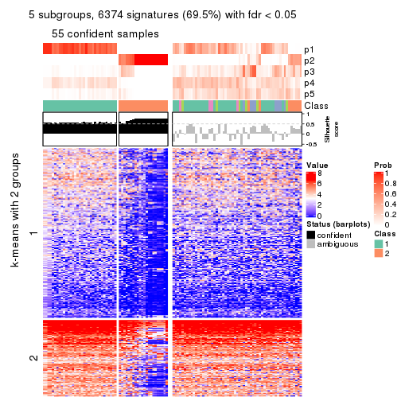
get_signatures(res, k = 6, scale_rows = FALSE)
Compare the overlap of signatures from different k:
compare_signatures(res)
get_signature() returns a data frame invisibly. TO get the list of signatures, the function
call should be assigned to a variable explicitly. In following code, if plot argument is set
to FALSE, no heatmap is plotted while only the differential analysis is performed.
# code only for demonstration
tb = get_signature(res, k = ..., plot = FALSE)
An example of the output of tb is:
#> which_row fdr mean_1 mean_2 scaled_mean_1 scaled_mean_2 km
#> 1 38 0.042760348 8.373488 9.131774 -0.5533452 0.5164555 1
#> 2 40 0.018707592 7.106213 8.469186 -0.6173731 0.5762149 1
#> 3 55 0.019134737 10.221463 11.207825 -0.6159697 0.5749050 1
#> 4 59 0.006059896 5.921854 7.869574 -0.6899429 0.6439467 1
#> 5 60 0.018055526 8.928898 10.211722 -0.6204761 0.5791110 1
#> 6 98 0.009384629 15.714769 14.887706 0.6635654 -0.6193277 2
...
The columns in tb are:
which_row: row indices corresponding to the input matrix.fdr: FDR for the differential test. mean_x: The mean value in group x.scaled_mean_x: The mean value in group x after rows are scaled.km: Row groups if k-means clustering is applied to rows.UMAP plot which shows how samples are separated.
dimension_reduction(res, k = 2, method = "UMAP")
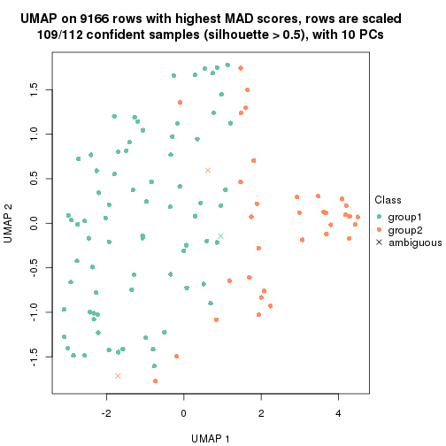
dimension_reduction(res, k = 3, method = "UMAP")
dimension_reduction(res, k = 4, method = "UMAP")

dimension_reduction(res, k = 5, method = "UMAP")
dimension_reduction(res, k = 6, method = "UMAP")
Following heatmap shows how subgroups are split when increasing k:
collect_classes(res)
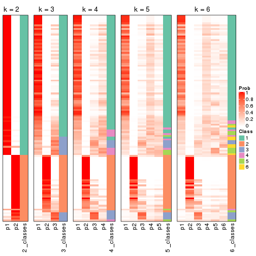
If matrix rows can be associated to genes, consider to use GO_Enrichment(res,
...) to perform function enrichment for the signature genes.
The object with results only for a single top-value method and a single partition method can be extracted as:
res = res_list["MAD", "pam"]
# you can also extract it by
# res = res_list["MAD:pam"]
A summary of res and all the functions that can be applied to it:
res
#> A 'ConsensusPartition' object with k = 2, 3, 4, 5, 6.
#> On a matrix with 9166 rows and 112 columns.
#> Top rows (917, 1834, 2750, 3666, 4583) are extracted by 'MAD' method.
#> Subgroups are detected by 'pam' method.
#> Performed in total 1250 partitions by row resampling.
#> Best k for subgroups seems to be 2.
#>
#> Following methods can be applied to this 'ConsensusPartition' object:
#> [1] "cola_report" "collect_classes" "collect_plots"
#> [4] "collect_stats" "colnames" "compare_signatures"
#> [7] "consensus_heatmap" "dimension_reduction" "functional_enrichment"
#> [10] "get_anno_col" "get_anno" "get_classes"
#> [13] "get_consensus" "get_matrix" "get_membership"
#> [16] "get_param" "get_signatures" "get_stats"
#> [19] "is_best_k" "is_stable_k" "membership_heatmap"
#> [22] "ncol" "nrow" "plot_ecdf"
#> [25] "rownames" "select_partition_number" "show"
#> [28] "suggest_best_k" "test_to_known_factors"
collect_plots() function collects all the plots made from res for all k (number of partitions)
into one single page to provide an easy and fast comparison between different k.
collect_plots(res)
The plots are:
k and the heatmap of
predicted classes for each k.k.k.k.All the plots in panels can be made by individual functions and they are plotted later in this section.
select_partition_number() produces several plots showing different
statistics for choosing “optimized” k. There are following statistics:
k;k, the area increased is defined as \(A_k - A_{k-1}\).The detailed explanations of these statistics can be found in the cola vignette.
Generally speaking, lower PAC score, higher mean silhouette score or higher
concordance corresponds to better partition. Rand index and Jaccard index
measure how similar the current partition is compared to partition with k-1.
If they are too similar, we won't accept k is better than k-1.
select_partition_number(res)
The numeric values for all these statistics can be obtained by get_stats().
get_stats(res)
#> k 1-PAC mean_silhouette concordance area_increased Rand Jaccard
#> 2 2 1.000 0.976 0.991 0.22097 0.793 0.793
#> 3 3 0.551 0.774 0.898 1.30433 0.695 0.615
#> 4 4 0.525 0.750 0.887 0.08644 0.944 0.886
#> 5 5 0.544 0.756 0.892 0.00518 0.995 0.989
#> 6 6 0.544 0.756 0.892 0.00175 0.999 0.999
suggest_best_k() suggests the best \(k\) based on these statistics. The rules are as follows:
NA.suggest_best_k(res)
#> [1] 2
Following shows the table of the partitions (You need to click the show/hide
code output link to see it). The membership matrix (columns with name p*)
is inferred by
clue::cl_consensus()
function with the SE method. Basically the value in the membership matrix
represents the probability to belong to a certain group. The finall class
label for an item is determined with the group with highest probability it
belongs to.
In get_classes() function, the entropy is calculated from the membership
matrix and the silhouette score is calculated from the consensus matrix.
cbind(get_classes(res, k = 2), get_membership(res, k = 2))
#> class entropy silhouette p1 p2
#> SRR1003755 1 0.000 0.9900 1.000 0.000
#> SRR1003756 1 0.000 0.9900 1.000 0.000
#> SRR1003757 1 0.000 0.9900 1.000 0.000
#> SRR1003758 1 0.000 0.9900 1.000 0.000
#> SRR1003759 1 0.000 0.9900 1.000 0.000
#> SRR1003760 2 0.000 1.0000 0.000 1.000
#> SRR1003761 1 1.000 0.0319 0.504 0.496
#> SRR1003762 2 0.000 1.0000 0.000 1.000
#> SRR1003763 1 0.949 0.4239 0.632 0.368
#> SRR1003764 2 0.000 1.0000 0.000 1.000
#> SRR1003765 2 0.000 1.0000 0.000 1.000
#> SRR1003766 2 0.000 1.0000 0.000 1.000
#> SRR1003767 2 0.000 1.0000 0.000 1.000
#> SRR1003768 2 0.000 1.0000 0.000 1.000
#> SRR1003769 2 0.000 1.0000 0.000 1.000
#> SRR1003770 2 0.000 1.0000 0.000 1.000
#> SRR1003771 2 0.000 1.0000 0.000 1.000
#> SRR1003773 1 0.000 0.9900 1.000 0.000
#> SRR1003772 1 0.000 0.9900 1.000 0.000
#> SRR1003774 1 0.000 0.9900 1.000 0.000
#> SRR1003775 1 0.000 0.9900 1.000 0.000
#> SRR1003776 1 0.000 0.9900 1.000 0.000
#> SRR1003777 1 0.000 0.9900 1.000 0.000
#> SRR1003778 1 0.000 0.9900 1.000 0.000
#> SRR1003779 1 0.000 0.9900 1.000 0.000
#> SRR1003780 2 0.000 1.0000 0.000 1.000
#> SRR1003781 1 0.000 0.9900 1.000 0.000
#> SRR1003784 1 0.000 0.9900 1.000 0.000
#> SRR1003785 1 0.000 0.9900 1.000 0.000
#> SRR1003786 1 0.000 0.9900 1.000 0.000
#> SRR1003783 1 0.000 0.9900 1.000 0.000
#> SRR1003787 1 0.000 0.9900 1.000 0.000
#> SRR1003788 1 0.000 0.9900 1.000 0.000
#> SRR1003789 2 0.000 1.0000 0.000 1.000
#> SRR1003790 1 0.000 0.9900 1.000 0.000
#> SRR1003791 1 0.000 0.9900 1.000 0.000
#> SRR1003792 1 0.000 0.9900 1.000 0.000
#> SRR1003793 1 0.000 0.9900 1.000 0.000
#> SRR1003794 1 0.000 0.9900 1.000 0.000
#> SRR1003795 1 0.000 0.9900 1.000 0.000
#> SRR1003796 1 0.506 0.8680 0.888 0.112
#> SRR1003797 1 0.000 0.9900 1.000 0.000
#> SRR1003798 1 0.000 0.9900 1.000 0.000
#> SRR1003799 1 0.000 0.9900 1.000 0.000
#> SRR1003800 1 0.000 0.9900 1.000 0.000
#> SRR1003801 1 0.000 0.9900 1.000 0.000
#> SRR1003802 1 0.000 0.9900 1.000 0.000
#> SRR1003803 1 0.000 0.9900 1.000 0.000
#> SRR1003804 1 0.000 0.9900 1.000 0.000
#> SRR1003805 1 0.000 0.9900 1.000 0.000
#> SRR1003806 1 0.000 0.9900 1.000 0.000
#> SRR1003807 1 0.000 0.9900 1.000 0.000
#> SRR1003809 1 0.000 0.9900 1.000 0.000
#> SRR1003808 1 0.000 0.9900 1.000 0.000
#> SRR1003810 1 0.000 0.9900 1.000 0.000
#> SRR1003811 1 0.000 0.9900 1.000 0.000
#> SRR1003812 1 0.000 0.9900 1.000 0.000
#> SRR1003813 1 0.000 0.9900 1.000 0.000
#> SRR1003814 1 0.000 0.9900 1.000 0.000
#> SRR1003815 1 0.000 0.9900 1.000 0.000
#> SRR1003816 1 0.000 0.9900 1.000 0.000
#> SRR1003817 1 0.000 0.9900 1.000 0.000
#> SRR1003818 1 0.000 0.9900 1.000 0.000
#> SRR1003819 1 0.000 0.9900 1.000 0.000
#> SRR1003820 1 0.000 0.9900 1.000 0.000
#> SRR1003821 1 0.000 0.9900 1.000 0.000
#> SRR1003822 1 0.000 0.9900 1.000 0.000
#> SRR1003824 1 0.000 0.9900 1.000 0.000
#> SRR1003823 1 0.000 0.9900 1.000 0.000
#> SRR1003825 1 0.000 0.9900 1.000 0.000
#> SRR1003826 1 0.000 0.9900 1.000 0.000
#> SRR1003827 1 0.000 0.9900 1.000 0.000
#> SRR1003828 1 0.000 0.9900 1.000 0.000
#> SRR1003829 1 0.000 0.9900 1.000 0.000
#> SRR1003830 1 0.000 0.9900 1.000 0.000
#> SRR1003831 1 0.000 0.9900 1.000 0.000
#> SRR1003832 1 0.000 0.9900 1.000 0.000
#> SRR1003833 1 0.000 0.9900 1.000 0.000
#> SRR1003834 1 0.000 0.9900 1.000 0.000
#> SRR1003836 1 0.000 0.9900 1.000 0.000
#> SRR1003835 1 0.000 0.9900 1.000 0.000
#> SRR1003838 1 0.000 0.9900 1.000 0.000
#> SRR1003837 1 0.000 0.9900 1.000 0.000
#> SRR1003839 1 0.000 0.9900 1.000 0.000
#> SRR1003840 1 0.000 0.9900 1.000 0.000
#> SRR1003841 2 0.000 1.0000 0.000 1.000
#> SRR1003842 1 0.000 0.9900 1.000 0.000
#> SRR1003844 1 0.000 0.9900 1.000 0.000
#> SRR1003845 1 0.000 0.9900 1.000 0.000
#> SRR1003846 1 0.000 0.9900 1.000 0.000
#> SRR1003847 1 0.000 0.9900 1.000 0.000
#> SRR1003848 1 0.000 0.9900 1.000 0.000
#> SRR1003849 1 0.000 0.9900 1.000 0.000
#> SRR1003850 1 0.000 0.9900 1.000 0.000
#> SRR1003851 1 0.000 0.9900 1.000 0.000
#> SRR1003852 1 0.000 0.9900 1.000 0.000
#> SRR1003853 1 0.000 0.9900 1.000 0.000
#> SRR1003854 1 0.000 0.9900 1.000 0.000
#> SRR1003843 1 0.000 0.9900 1.000 0.000
#> SRR1003855 1 0.000 0.9900 1.000 0.000
#> SRR1003856 1 0.000 0.9900 1.000 0.000
#> SRR1003857 1 0.000 0.9900 1.000 0.000
#> SRR1003858 1 0.000 0.9900 1.000 0.000
#> SRR1003859 1 0.000 0.9900 1.000 0.000
#> SRR1003860 1 0.000 0.9900 1.000 0.000
#> SRR1003861 1 0.000 0.9900 1.000 0.000
#> SRR1003862 1 0.000 0.9900 1.000 0.000
#> SRR1003863 1 0.000 0.9900 1.000 0.000
#> SRR1003864 1 0.000 0.9900 1.000 0.000
#> SRR1003865 1 0.000 0.9900 1.000 0.000
#> SRR1003866 1 0.000 0.9900 1.000 0.000
#> SRR1003867 1 0.000 0.9900 1.000 0.000
cbind(get_classes(res, k = 3), get_membership(res, k = 3))
#> class entropy silhouette p1 p2 p3
#> SRR1003755 3 0.0000 0.6463 0.000 0.000 1.000
#> SRR1003756 3 0.0000 0.6463 0.000 0.000 1.000
#> SRR1003757 3 0.0000 0.6463 0.000 0.000 1.000
#> SRR1003758 3 0.0000 0.6463 0.000 0.000 1.000
#> SRR1003759 1 0.0000 0.8940 1.000 0.000 0.000
#> SRR1003760 2 0.0000 1.0000 0.000 1.000 0.000
#> SRR1003761 1 0.6309 0.0557 0.504 0.496 0.000
#> SRR1003762 2 0.0000 1.0000 0.000 1.000 0.000
#> SRR1003763 1 0.5988 0.3548 0.632 0.368 0.000
#> SRR1003764 2 0.0000 1.0000 0.000 1.000 0.000
#> SRR1003765 2 0.0000 1.0000 0.000 1.000 0.000
#> SRR1003766 2 0.0000 1.0000 0.000 1.000 0.000
#> SRR1003767 2 0.0000 1.0000 0.000 1.000 0.000
#> SRR1003768 2 0.0000 1.0000 0.000 1.000 0.000
#> SRR1003769 2 0.0000 1.0000 0.000 1.000 0.000
#> SRR1003770 2 0.0000 1.0000 0.000 1.000 0.000
#> SRR1003771 2 0.0000 1.0000 0.000 1.000 0.000
#> SRR1003773 1 0.0000 0.8940 1.000 0.000 0.000
#> SRR1003772 3 0.5098 0.6726 0.248 0.000 0.752
#> SRR1003774 1 0.0000 0.8940 1.000 0.000 0.000
#> SRR1003775 3 0.4452 0.6775 0.192 0.000 0.808
#> SRR1003776 1 0.0000 0.8940 1.000 0.000 0.000
#> SRR1003777 1 0.3816 0.7621 0.852 0.000 0.148
#> SRR1003778 1 0.0000 0.8940 1.000 0.000 0.000
#> SRR1003779 3 0.5760 0.6628 0.328 0.000 0.672
#> SRR1003780 2 0.0000 1.0000 0.000 1.000 0.000
#> SRR1003781 1 0.2537 0.8370 0.920 0.000 0.080
#> SRR1003784 1 0.0000 0.8940 1.000 0.000 0.000
#> SRR1003785 1 0.0000 0.8940 1.000 0.000 0.000
#> SRR1003786 3 0.0000 0.6463 0.000 0.000 1.000
#> SRR1003783 3 0.6308 0.3143 0.492 0.000 0.508
#> SRR1003787 3 0.5465 0.7106 0.288 0.000 0.712
#> SRR1003788 1 0.4750 0.6596 0.784 0.000 0.216
#> SRR1003789 2 0.0000 1.0000 0.000 1.000 0.000
#> SRR1003790 3 0.5835 0.6506 0.340 0.000 0.660
#> SRR1003791 1 0.0000 0.8940 1.000 0.000 0.000
#> SRR1003792 1 0.4702 0.6483 0.788 0.000 0.212
#> SRR1003793 1 0.4555 0.6829 0.800 0.000 0.200
#> SRR1003794 1 0.5254 0.5647 0.736 0.000 0.264
#> SRR1003795 1 0.0000 0.8940 1.000 0.000 0.000
#> SRR1003796 1 0.3192 0.7925 0.888 0.112 0.000
#> SRR1003797 3 0.6215 0.4829 0.428 0.000 0.572
#> SRR1003798 1 0.6045 0.1621 0.620 0.000 0.380
#> SRR1003799 3 0.5706 0.6549 0.320 0.000 0.680
#> SRR1003800 1 0.3551 0.7856 0.868 0.000 0.132
#> SRR1003801 1 0.0000 0.8940 1.000 0.000 0.000
#> SRR1003802 1 0.0000 0.8940 1.000 0.000 0.000
#> SRR1003803 1 0.5098 0.5727 0.752 0.000 0.248
#> SRR1003804 1 0.5138 0.6070 0.748 0.000 0.252
#> SRR1003805 3 0.6307 0.3394 0.488 0.000 0.512
#> SRR1003806 1 0.1753 0.8714 0.952 0.000 0.048
#> SRR1003807 1 0.0000 0.8940 1.000 0.000 0.000
#> SRR1003809 1 0.0000 0.8940 1.000 0.000 0.000
#> SRR1003808 1 0.0000 0.8940 1.000 0.000 0.000
#> SRR1003810 1 0.3267 0.8098 0.884 0.000 0.116
#> SRR1003811 1 0.0000 0.8940 1.000 0.000 0.000
#> SRR1003812 3 0.4702 0.7340 0.212 0.000 0.788
#> SRR1003813 1 0.0000 0.8940 1.000 0.000 0.000
#> SRR1003814 1 0.0000 0.8940 1.000 0.000 0.000
#> SRR1003815 1 0.5810 0.3262 0.664 0.000 0.336
#> SRR1003816 3 0.4121 0.7350 0.168 0.000 0.832
#> SRR1003817 1 0.3482 0.7854 0.872 0.000 0.128
#> SRR1003818 1 0.0000 0.8940 1.000 0.000 0.000
#> SRR1003819 1 0.0000 0.8940 1.000 0.000 0.000
#> SRR1003820 3 0.6309 0.3347 0.496 0.000 0.504
#> SRR1003821 3 0.3879 0.7133 0.152 0.000 0.848
#> SRR1003822 1 0.0000 0.8940 1.000 0.000 0.000
#> SRR1003824 1 0.4452 0.6962 0.808 0.000 0.192
#> SRR1003823 3 0.4504 0.7330 0.196 0.000 0.804
#> SRR1003825 1 0.0000 0.8940 1.000 0.000 0.000
#> SRR1003826 1 0.6192 0.0428 0.580 0.000 0.420
#> SRR1003827 1 0.0892 0.8861 0.980 0.000 0.020
#> SRR1003828 1 0.0000 0.8940 1.000 0.000 0.000
#> SRR1003829 1 0.2356 0.8500 0.928 0.000 0.072
#> SRR1003830 3 0.0747 0.6581 0.016 0.000 0.984
#> SRR1003831 1 0.2261 0.8520 0.932 0.000 0.068
#> SRR1003832 3 0.4346 0.7362 0.184 0.000 0.816
#> SRR1003833 1 0.1411 0.8789 0.964 0.000 0.036
#> SRR1003834 1 0.1289 0.8814 0.968 0.000 0.032
#> SRR1003836 1 0.0000 0.8940 1.000 0.000 0.000
#> SRR1003835 1 0.0000 0.8940 1.000 0.000 0.000
#> SRR1003838 1 0.0000 0.8940 1.000 0.000 0.000
#> SRR1003837 1 0.0237 0.8926 0.996 0.000 0.004
#> SRR1003839 1 0.0000 0.8940 1.000 0.000 0.000
#> SRR1003840 1 0.0000 0.8940 1.000 0.000 0.000
#> SRR1003841 2 0.0000 1.0000 0.000 1.000 0.000
#> SRR1003842 3 0.5968 0.6104 0.364 0.000 0.636
#> SRR1003844 3 0.6305 0.3698 0.484 0.000 0.516
#> SRR1003845 1 0.0000 0.8940 1.000 0.000 0.000
#> SRR1003846 3 0.2448 0.6954 0.076 0.000 0.924
#> SRR1003847 1 0.0747 0.8883 0.984 0.000 0.016
#> SRR1003848 1 0.0000 0.8940 1.000 0.000 0.000
#> SRR1003849 1 0.0000 0.8940 1.000 0.000 0.000
#> SRR1003850 1 0.0747 0.8877 0.984 0.000 0.016
#> SRR1003851 1 0.0000 0.8940 1.000 0.000 0.000
#> SRR1003852 1 0.0000 0.8940 1.000 0.000 0.000
#> SRR1003853 1 0.0000 0.8940 1.000 0.000 0.000
#> SRR1003854 1 0.2796 0.8287 0.908 0.000 0.092
#> SRR1003843 1 0.0000 0.8940 1.000 0.000 0.000
#> SRR1003855 1 0.3267 0.7978 0.884 0.000 0.116
#> SRR1003856 1 0.0000 0.8940 1.000 0.000 0.000
#> SRR1003857 3 0.5529 0.7027 0.296 0.000 0.704
#> SRR1003858 1 0.0237 0.8925 0.996 0.000 0.004
#> SRR1003859 3 0.0237 0.6500 0.004 0.000 0.996
#> SRR1003860 1 0.1163 0.8806 0.972 0.000 0.028
#> SRR1003861 1 0.2878 0.8262 0.904 0.000 0.096
#> SRR1003862 1 0.5948 0.2924 0.640 0.000 0.360
#> SRR1003863 1 0.0000 0.8940 1.000 0.000 0.000
#> SRR1003864 1 0.0747 0.8881 0.984 0.000 0.016
#> SRR1003865 1 0.0000 0.8940 1.000 0.000 0.000
#> SRR1003866 1 0.1031 0.8851 0.976 0.000 0.024
#> SRR1003867 1 0.5905 0.2701 0.648 0.000 0.352
cbind(get_classes(res, k = 4), get_membership(res, k = 4))
#> class entropy silhouette p1 p2 p3 p4
#> SRR1003755 4 0.0000 0.6014 0.000 0.000 0.000 1.000
#> SRR1003756 4 0.0000 0.6014 0.000 0.000 0.000 1.000
#> SRR1003757 4 0.0000 0.6014 0.000 0.000 0.000 1.000
#> SRR1003758 4 0.0000 0.6014 0.000 0.000 0.000 1.000
#> SRR1003759 1 0.0000 0.8879 1.000 0.000 0.000 0.000
#> SRR1003760 2 0.0000 0.8511 0.000 1.000 0.000 0.000
#> SRR1003761 2 0.0000 0.8511 0.000 1.000 0.000 0.000
#> SRR1003762 2 0.0000 0.8511 0.000 1.000 0.000 0.000
#> SRR1003763 2 0.0000 0.8511 0.000 1.000 0.000 0.000
#> SRR1003764 2 0.0000 0.8511 0.000 1.000 0.000 0.000
#> SRR1003765 3 0.0000 1.0000 0.000 0.000 1.000 0.000
#> SRR1003766 3 0.0000 1.0000 0.000 0.000 1.000 0.000
#> SRR1003767 3 0.0000 1.0000 0.000 0.000 1.000 0.000
#> SRR1003768 3 0.0000 1.0000 0.000 0.000 1.000 0.000
#> SRR1003769 3 0.0000 1.0000 0.000 0.000 1.000 0.000
#> SRR1003770 2 0.4898 0.3214 0.000 0.584 0.416 0.000
#> SRR1003771 2 0.3610 0.7009 0.000 0.800 0.200 0.000
#> SRR1003773 1 0.3688 0.6909 0.792 0.208 0.000 0.000
#> SRR1003772 4 0.4040 0.6227 0.248 0.000 0.000 0.752
#> SRR1003774 1 0.0000 0.8879 1.000 0.000 0.000 0.000
#> SRR1003775 4 0.3528 0.6278 0.192 0.000 0.000 0.808
#> SRR1003776 1 0.0000 0.8879 1.000 0.000 0.000 0.000
#> SRR1003777 1 0.3024 0.7717 0.852 0.000 0.000 0.148
#> SRR1003778 2 0.0000 0.8511 0.000 1.000 0.000 0.000
#> SRR1003779 4 0.4564 0.6602 0.328 0.000 0.000 0.672
#> SRR1003780 2 0.2530 0.7921 0.000 0.888 0.112 0.000
#> SRR1003781 1 0.2011 0.8399 0.920 0.000 0.000 0.080
#> SRR1003784 1 0.0000 0.8879 1.000 0.000 0.000 0.000
#> SRR1003785 1 0.3569 0.7091 0.804 0.196 0.000 0.000
#> SRR1003786 4 0.0000 0.6014 0.000 0.000 0.000 1.000
#> SRR1003783 4 0.4999 0.3000 0.492 0.000 0.000 0.508
#> SRR1003787 4 0.4331 0.6975 0.288 0.000 0.000 0.712
#> SRR1003788 1 0.3764 0.6827 0.784 0.000 0.000 0.216
#> SRR1003789 2 0.0000 0.8511 0.000 1.000 0.000 0.000
#> SRR1003790 4 0.4624 0.6501 0.340 0.000 0.000 0.660
#> SRR1003791 1 0.0469 0.8859 0.988 0.012 0.000 0.000
#> SRR1003792 1 0.3726 0.6563 0.788 0.000 0.000 0.212
#> SRR1003793 1 0.3610 0.6949 0.800 0.000 0.000 0.200
#> SRR1003794 1 0.4164 0.5785 0.736 0.000 0.000 0.264
#> SRR1003795 1 0.3873 0.6600 0.772 0.228 0.000 0.000
#> SRR1003796 2 0.4500 0.3301 0.316 0.684 0.000 0.000
#> SRR1003797 4 0.4925 0.4718 0.428 0.000 0.000 0.572
#> SRR1003798 1 0.4790 0.1687 0.620 0.000 0.000 0.380
#> SRR1003799 4 0.4522 0.6477 0.320 0.000 0.000 0.680
#> SRR1003800 1 0.2814 0.7926 0.868 0.000 0.000 0.132
#> SRR1003801 1 0.0000 0.8879 1.000 0.000 0.000 0.000
#> SRR1003802 1 0.0000 0.8879 1.000 0.000 0.000 0.000
#> SRR1003803 1 0.4040 0.5810 0.752 0.000 0.000 0.248
#> SRR1003804 1 0.4072 0.6292 0.748 0.000 0.000 0.252
#> SRR1003805 4 0.4998 0.3320 0.488 0.000 0.000 0.512
#> SRR1003806 1 0.1389 0.8739 0.952 0.000 0.000 0.048
#> SRR1003807 1 0.0000 0.8879 1.000 0.000 0.000 0.000
#> SRR1003809 1 0.0000 0.8879 1.000 0.000 0.000 0.000
#> SRR1003808 1 0.0336 0.8869 0.992 0.008 0.000 0.000
#> SRR1003810 1 0.2589 0.8196 0.884 0.000 0.000 0.116
#> SRR1003811 1 0.0000 0.8879 1.000 0.000 0.000 0.000
#> SRR1003812 4 0.3726 0.6987 0.212 0.000 0.000 0.788
#> SRR1003813 1 0.0000 0.8879 1.000 0.000 0.000 0.000
#> SRR1003814 1 0.0000 0.8879 1.000 0.000 0.000 0.000
#> SRR1003815 1 0.4605 0.3360 0.664 0.000 0.000 0.336
#> SRR1003816 4 0.3266 0.7006 0.168 0.000 0.000 0.832
#> SRR1003817 1 0.2760 0.7984 0.872 0.000 0.000 0.128
#> SRR1003818 1 0.0000 0.8879 1.000 0.000 0.000 0.000
#> SRR1003819 1 0.0000 0.8879 1.000 0.000 0.000 0.000
#> SRR1003820 4 0.5000 0.3346 0.496 0.000 0.000 0.504
#> SRR1003821 4 0.3074 0.6740 0.152 0.000 0.000 0.848
#> SRR1003822 1 0.0000 0.8879 1.000 0.000 0.000 0.000
#> SRR1003824 1 0.3528 0.7074 0.808 0.000 0.000 0.192
#> SRR1003823 4 0.3569 0.6958 0.196 0.000 0.000 0.804
#> SRR1003825 1 0.0000 0.8879 1.000 0.000 0.000 0.000
#> SRR1003826 1 0.4907 0.0778 0.580 0.000 0.000 0.420
#> SRR1003827 1 0.0707 0.8839 0.980 0.000 0.000 0.020
#> SRR1003828 1 0.0000 0.8879 1.000 0.000 0.000 0.000
#> SRR1003829 1 0.1867 0.8537 0.928 0.000 0.000 0.072
#> SRR1003830 4 0.0592 0.6145 0.016 0.000 0.000 0.984
#> SRR1003831 1 0.1792 0.8544 0.932 0.000 0.000 0.068
#> SRR1003832 4 0.3444 0.7005 0.184 0.000 0.000 0.816
#> SRR1003833 1 0.1118 0.8796 0.964 0.000 0.000 0.036
#> SRR1003834 1 0.1022 0.8818 0.968 0.000 0.000 0.032
#> SRR1003836 1 0.0000 0.8879 1.000 0.000 0.000 0.000
#> SRR1003835 1 0.0000 0.8879 1.000 0.000 0.000 0.000
#> SRR1003838 1 0.0000 0.8879 1.000 0.000 0.000 0.000
#> SRR1003837 1 0.0188 0.8876 0.996 0.000 0.000 0.004
#> SRR1003839 1 0.0000 0.8879 1.000 0.000 0.000 0.000
#> SRR1003840 1 0.1118 0.8750 0.964 0.036 0.000 0.000
#> SRR1003841 2 0.2647 0.7861 0.000 0.880 0.120 0.000
#> SRR1003842 4 0.4730 0.6012 0.364 0.000 0.000 0.636
#> SRR1003844 4 0.4996 0.3700 0.484 0.000 0.000 0.516
#> SRR1003845 1 0.1637 0.8577 0.940 0.060 0.000 0.000
#> SRR1003846 4 0.1940 0.6551 0.076 0.000 0.000 0.924
#> SRR1003847 1 0.0592 0.8858 0.984 0.000 0.000 0.016
#> SRR1003848 1 0.0000 0.8879 1.000 0.000 0.000 0.000
#> SRR1003849 1 0.1302 0.8702 0.956 0.044 0.000 0.000
#> SRR1003850 1 0.0592 0.8855 0.984 0.000 0.000 0.016
#> SRR1003851 1 0.3528 0.7143 0.808 0.192 0.000 0.000
#> SRR1003852 1 0.0921 0.8793 0.972 0.028 0.000 0.000
#> SRR1003853 1 0.0000 0.8879 1.000 0.000 0.000 0.000
#> SRR1003854 1 0.2216 0.8331 0.908 0.000 0.000 0.092
#> SRR1003843 1 0.0188 0.8875 0.996 0.004 0.000 0.000
#> SRR1003855 1 0.2589 0.8025 0.884 0.000 0.000 0.116
#> SRR1003856 1 0.0000 0.8879 1.000 0.000 0.000 0.000
#> SRR1003857 4 0.4382 0.6934 0.296 0.000 0.000 0.704
#> SRR1003858 1 0.0188 0.8875 0.996 0.000 0.000 0.004
#> SRR1003859 4 0.0188 0.6056 0.004 0.000 0.000 0.996
#> SRR1003860 1 0.0921 0.8802 0.972 0.000 0.000 0.028
#> SRR1003861 1 0.2281 0.8352 0.904 0.000 0.000 0.096
#> SRR1003862 1 0.4713 0.3207 0.640 0.000 0.000 0.360
#> SRR1003863 1 0.0000 0.8879 1.000 0.000 0.000 0.000
#> SRR1003864 1 0.0592 0.8852 0.984 0.000 0.000 0.016
#> SRR1003865 1 0.0000 0.8879 1.000 0.000 0.000 0.000
#> SRR1003866 1 0.0817 0.8841 0.976 0.000 0.000 0.024
#> SRR1003867 1 0.4679 0.2772 0.648 0.000 0.000 0.352
cbind(get_classes(res, k = 5), get_membership(res, k = 5))
#> class entropy silhouette p1 p2 p3 p4 p5
#> SRR1003755 4 0.0000 0.5809 0.000 0.000 0.000 1.000 0.000
#> SRR1003756 4 0.0000 0.5809 0.000 0.000 0.000 1.000 0.000
#> SRR1003757 4 0.0000 0.5809 0.000 0.000 0.000 1.000 0.000
#> SRR1003758 4 0.0000 0.5809 0.000 0.000 0.000 1.000 0.000
#> SRR1003759 1 0.0000 0.8878 1.000 0.000 0.000 0.000 0.000
#> SRR1003760 2 0.0000 0.9069 0.000 1.000 0.000 0.000 0.000
#> SRR1003761 2 0.0000 0.9069 0.000 1.000 0.000 0.000 0.000
#> SRR1003762 2 0.0000 0.9069 0.000 1.000 0.000 0.000 0.000
#> SRR1003763 2 0.0000 0.9069 0.000 1.000 0.000 0.000 0.000
#> SRR1003764 2 0.0000 0.9069 0.000 1.000 0.000 0.000 0.000
#> SRR1003765 5 0.3366 0.7035 0.000 0.000 0.232 0.000 0.768
#> SRR1003766 3 0.0000 1.0000 0.000 0.000 1.000 0.000 0.000
#> SRR1003767 5 0.0000 0.9162 0.000 0.000 0.000 0.000 1.000
#> SRR1003768 3 0.0000 1.0000 0.000 0.000 1.000 0.000 0.000
#> SRR1003769 3 0.0000 1.0000 0.000 0.000 1.000 0.000 0.000
#> SRR1003770 5 0.0290 0.9150 0.000 0.000 0.008 0.000 0.992
#> SRR1003771 5 0.0000 0.9162 0.000 0.000 0.000 0.000 1.000
#> SRR1003773 1 0.3177 0.6893 0.792 0.208 0.000 0.000 0.000
#> SRR1003772 4 0.3480 0.6015 0.248 0.000 0.000 0.752 0.000
#> SRR1003774 1 0.0000 0.8878 1.000 0.000 0.000 0.000 0.000
#> SRR1003775 4 0.3039 0.6062 0.192 0.000 0.000 0.808 0.000
#> SRR1003776 1 0.0000 0.8878 1.000 0.000 0.000 0.000 0.000
#> SRR1003777 1 0.2605 0.7715 0.852 0.000 0.000 0.148 0.000
#> SRR1003778 2 0.0000 0.9069 0.000 1.000 0.000 0.000 0.000
#> SRR1003779 4 0.3932 0.6602 0.328 0.000 0.000 0.672 0.000
#> SRR1003780 2 0.0609 0.8923 0.000 0.980 0.000 0.000 0.020
#> SRR1003781 1 0.1732 0.8398 0.920 0.000 0.000 0.080 0.000
#> SRR1003784 1 0.0000 0.8878 1.000 0.000 0.000 0.000 0.000
#> SRR1003785 1 0.3074 0.7076 0.804 0.196 0.000 0.000 0.000
#> SRR1003786 4 0.0000 0.5809 0.000 0.000 0.000 1.000 0.000
#> SRR1003783 4 0.4306 0.3000 0.492 0.000 0.000 0.508 0.000
#> SRR1003787 4 0.3730 0.6835 0.288 0.000 0.000 0.712 0.000
#> SRR1003788 1 0.3242 0.6825 0.784 0.000 0.000 0.216 0.000
#> SRR1003789 2 0.0000 0.9069 0.000 1.000 0.000 0.000 0.000
#> SRR1003790 4 0.3983 0.6502 0.340 0.000 0.000 0.660 0.000
#> SRR1003791 1 0.0404 0.8858 0.988 0.012 0.000 0.000 0.000
#> SRR1003792 1 0.3210 0.6562 0.788 0.000 0.000 0.212 0.000
#> SRR1003793 1 0.3109 0.6948 0.800 0.000 0.000 0.200 0.000
#> SRR1003794 1 0.3586 0.5783 0.736 0.000 0.000 0.264 0.000
#> SRR1003795 1 0.3336 0.6589 0.772 0.228 0.000 0.000 0.000
#> SRR1003796 2 0.3876 0.3170 0.316 0.684 0.000 0.000 0.000
#> SRR1003797 4 0.4242 0.4719 0.428 0.000 0.000 0.572 0.000
#> SRR1003798 1 0.4126 0.1686 0.620 0.000 0.000 0.380 0.000
#> SRR1003799 4 0.3895 0.6355 0.320 0.000 0.000 0.680 0.000
#> SRR1003800 1 0.2424 0.7925 0.868 0.000 0.000 0.132 0.000
#> SRR1003801 1 0.0000 0.8878 1.000 0.000 0.000 0.000 0.000
#> SRR1003802 1 0.0000 0.8878 1.000 0.000 0.000 0.000 0.000
#> SRR1003803 1 0.3480 0.5809 0.752 0.000 0.000 0.248 0.000
#> SRR1003804 1 0.3508 0.6290 0.748 0.000 0.000 0.252 0.000
#> SRR1003805 4 0.4305 0.3321 0.488 0.000 0.000 0.512 0.000
#> SRR1003806 1 0.1197 0.8738 0.952 0.000 0.000 0.048 0.000
#> SRR1003807 1 0.0000 0.8878 1.000 0.000 0.000 0.000 0.000
#> SRR1003809 1 0.0000 0.8878 1.000 0.000 0.000 0.000 0.000
#> SRR1003808 1 0.0290 0.8867 0.992 0.008 0.000 0.000 0.000
#> SRR1003810 1 0.2230 0.8195 0.884 0.000 0.000 0.116 0.000
#> SRR1003811 1 0.0000 0.8878 1.000 0.000 0.000 0.000 0.000
#> SRR1003812 4 0.3210 0.6837 0.212 0.000 0.000 0.788 0.000
#> SRR1003813 1 0.0000 0.8878 1.000 0.000 0.000 0.000 0.000
#> SRR1003814 1 0.0000 0.8878 1.000 0.000 0.000 0.000 0.000
#> SRR1003815 1 0.3966 0.3359 0.664 0.000 0.000 0.336 0.000
#> SRR1003816 4 0.2813 0.6855 0.168 0.000 0.000 0.832 0.000
#> SRR1003817 1 0.2377 0.7982 0.872 0.000 0.000 0.128 0.000
#> SRR1003818 1 0.0000 0.8878 1.000 0.000 0.000 0.000 0.000
#> SRR1003819 1 0.0000 0.8878 1.000 0.000 0.000 0.000 0.000
#> SRR1003820 4 0.4307 0.3347 0.496 0.000 0.000 0.504 0.000
#> SRR1003821 4 0.2648 0.6562 0.152 0.000 0.000 0.848 0.000
#> SRR1003822 1 0.0000 0.8878 1.000 0.000 0.000 0.000 0.000
#> SRR1003824 1 0.3039 0.7073 0.808 0.000 0.000 0.192 0.000
#> SRR1003823 4 0.3074 0.6802 0.196 0.000 0.000 0.804 0.000
#> SRR1003825 1 0.0000 0.8878 1.000 0.000 0.000 0.000 0.000
#> SRR1003826 1 0.4227 0.0777 0.580 0.000 0.000 0.420 0.000
#> SRR1003827 1 0.0609 0.8837 0.980 0.000 0.000 0.020 0.000
#> SRR1003828 1 0.0000 0.8878 1.000 0.000 0.000 0.000 0.000
#> SRR1003829 1 0.1608 0.8536 0.928 0.000 0.000 0.072 0.000
#> SRR1003830 4 0.0510 0.5946 0.016 0.000 0.000 0.984 0.000
#> SRR1003831 1 0.1544 0.8543 0.932 0.000 0.000 0.068 0.000
#> SRR1003832 4 0.2966 0.6855 0.184 0.000 0.000 0.816 0.000
#> SRR1003833 1 0.0963 0.8795 0.964 0.000 0.000 0.036 0.000
#> SRR1003834 1 0.0880 0.8817 0.968 0.000 0.000 0.032 0.000
#> SRR1003836 1 0.0000 0.8878 1.000 0.000 0.000 0.000 0.000
#> SRR1003835 1 0.0000 0.8878 1.000 0.000 0.000 0.000 0.000
#> SRR1003838 1 0.0000 0.8878 1.000 0.000 0.000 0.000 0.000
#> SRR1003837 1 0.0162 0.8875 0.996 0.000 0.000 0.004 0.000
#> SRR1003839 1 0.0000 0.8878 1.000 0.000 0.000 0.000 0.000
#> SRR1003840 1 0.0963 0.8749 0.964 0.036 0.000 0.000 0.000
#> SRR1003841 2 0.1410 0.8516 0.000 0.940 0.000 0.000 0.060
#> SRR1003842 4 0.4074 0.6012 0.364 0.000 0.000 0.636 0.000
#> SRR1003844 4 0.4304 0.3700 0.484 0.000 0.000 0.516 0.000
#> SRR1003845 1 0.1410 0.8574 0.940 0.060 0.000 0.000 0.000
#> SRR1003846 4 0.1671 0.6374 0.076 0.000 0.000 0.924 0.000
#> SRR1003847 1 0.0510 0.8857 0.984 0.000 0.000 0.016 0.000
#> SRR1003848 1 0.0000 0.8878 1.000 0.000 0.000 0.000 0.000
#> SRR1003849 1 0.1121 0.8698 0.956 0.044 0.000 0.000 0.000
#> SRR1003850 1 0.0510 0.8854 0.984 0.000 0.000 0.016 0.000
#> SRR1003851 1 0.3039 0.7126 0.808 0.192 0.000 0.000 0.000
#> SRR1003852 1 0.0794 0.8791 0.972 0.028 0.000 0.000 0.000
#> SRR1003853 1 0.0000 0.8878 1.000 0.000 0.000 0.000 0.000
#> SRR1003854 1 0.1908 0.8330 0.908 0.000 0.000 0.092 0.000
#> SRR1003843 1 0.0162 0.8874 0.996 0.004 0.000 0.000 0.000
#> SRR1003855 1 0.2230 0.8024 0.884 0.000 0.000 0.116 0.000
#> SRR1003856 1 0.0000 0.8878 1.000 0.000 0.000 0.000 0.000
#> SRR1003857 4 0.3774 0.6794 0.296 0.000 0.000 0.704 0.000
#> SRR1003858 1 0.0162 0.8874 0.996 0.000 0.000 0.004 0.000
#> SRR1003859 4 0.0162 0.5854 0.004 0.000 0.000 0.996 0.000
#> SRR1003860 1 0.0794 0.8801 0.972 0.000 0.000 0.028 0.000
#> SRR1003861 1 0.1965 0.8350 0.904 0.000 0.000 0.096 0.000
#> SRR1003862 1 0.4060 0.3206 0.640 0.000 0.000 0.360 0.000
#> SRR1003863 1 0.0000 0.8878 1.000 0.000 0.000 0.000 0.000
#> SRR1003864 1 0.0510 0.8851 0.984 0.000 0.000 0.016 0.000
#> SRR1003865 1 0.0000 0.8878 1.000 0.000 0.000 0.000 0.000
#> SRR1003866 1 0.0703 0.8840 0.976 0.000 0.000 0.024 0.000
#> SRR1003867 1 0.4030 0.2771 0.648 0.000 0.000 0.352 0.000
cbind(get_classes(res, k = 6), get_membership(res, k = 6))
#> class entropy silhouette p1 p2 p3 p4 p5 p6
#> SRR1003755 4 0.0000 0.5698 0.000 0.000 0.000 1.000 0.000 0.000
#> SRR1003756 4 0.0000 0.5698 0.000 0.000 0.000 1.000 0.000 0.000
#> SRR1003757 4 0.0000 0.5698 0.000 0.000 0.000 1.000 0.000 0.000
#> SRR1003758 4 0.0000 0.5698 0.000 0.000 0.000 1.000 0.000 0.000
#> SRR1003759 1 0.0000 0.8878 1.000 0.000 0.000 0.000 0.000 0.000
#> SRR1003760 6 0.0000 0.8876 0.000 0.000 0.000 0.000 0.000 1.000
#> SRR1003761 6 0.0000 0.8876 0.000 0.000 0.000 0.000 0.000 1.000
#> SRR1003762 6 0.0000 0.8876 0.000 0.000 0.000 0.000 0.000 1.000
#> SRR1003763 6 0.0000 0.8876 0.000 0.000 0.000 0.000 0.000 1.000
#> SRR1003764 6 0.0000 0.8876 0.000 0.000 0.000 0.000 0.000 1.000
#> SRR1003765 3 0.1257 0.9781 0.000 0.020 0.952 0.000 0.028 0.000
#> SRR1003766 2 0.0000 1.0000 0.000 1.000 0.000 0.000 0.000 0.000
#> SRR1003767 5 0.0000 1.0000 0.000 0.000 0.000 0.000 1.000 0.000
#> SRR1003768 2 0.0000 1.0000 0.000 1.000 0.000 0.000 0.000 0.000
#> SRR1003769 2 0.0000 1.0000 0.000 1.000 0.000 0.000 0.000 0.000
#> SRR1003770 3 0.1152 0.9779 0.000 0.004 0.952 0.000 0.044 0.000
#> SRR1003771 5 0.0000 1.0000 0.000 0.000 0.000 0.000 1.000 0.000
#> SRR1003773 1 0.2854 0.6900 0.792 0.000 0.000 0.000 0.000 0.208
#> SRR1003772 4 0.3126 0.5897 0.248 0.000 0.000 0.752 0.000 0.000
#> SRR1003774 1 0.0000 0.8878 1.000 0.000 0.000 0.000 0.000 0.000
#> SRR1003775 4 0.2730 0.5942 0.192 0.000 0.000 0.808 0.000 0.000
#> SRR1003776 1 0.0000 0.8878 1.000 0.000 0.000 0.000 0.000 0.000
#> SRR1003777 1 0.2340 0.7717 0.852 0.000 0.000 0.148 0.000 0.000
#> SRR1003778 6 0.0000 0.8876 0.000 0.000 0.000 0.000 0.000 1.000
#> SRR1003779 4 0.3531 0.6572 0.328 0.000 0.000 0.672 0.000 0.000
#> SRR1003780 6 0.1700 0.8373 0.000 0.000 0.048 0.000 0.024 0.928
#> SRR1003781 1 0.1556 0.8399 0.920 0.000 0.000 0.080 0.000 0.000
#> SRR1003784 1 0.0000 0.8878 1.000 0.000 0.000 0.000 0.000 0.000
#> SRR1003785 1 0.2762 0.7082 0.804 0.000 0.000 0.000 0.000 0.196
#> SRR1003786 4 0.0000 0.5698 0.000 0.000 0.000 1.000 0.000 0.000
#> SRR1003783 4 0.3868 0.2997 0.492 0.000 0.000 0.508 0.000 0.000
#> SRR1003787 4 0.3351 0.6760 0.288 0.000 0.000 0.712 0.000 0.000
#> SRR1003788 1 0.2912 0.6828 0.784 0.000 0.000 0.216 0.000 0.000
#> SRR1003789 6 0.0000 0.8876 0.000 0.000 0.000 0.000 0.000 1.000
#> SRR1003790 4 0.3578 0.6492 0.340 0.000 0.000 0.660 0.000 0.000
#> SRR1003791 1 0.0363 0.8858 0.988 0.000 0.000 0.000 0.000 0.012
#> SRR1003792 1 0.2883 0.6563 0.788 0.000 0.000 0.212 0.000 0.000
#> SRR1003793 1 0.2793 0.6950 0.800 0.000 0.000 0.200 0.000 0.000
#> SRR1003794 1 0.3221 0.5787 0.736 0.000 0.000 0.264 0.000 0.000
#> SRR1003795 1 0.3649 0.6526 0.764 0.000 0.040 0.000 0.000 0.196
#> SRR1003796 6 0.3482 0.2827 0.316 0.000 0.000 0.000 0.000 0.684
#> SRR1003797 4 0.3810 0.4715 0.428 0.000 0.000 0.572 0.000 0.000
#> SRR1003798 1 0.3706 0.1688 0.620 0.000 0.000 0.380 0.000 0.000
#> SRR1003799 4 0.3499 0.6264 0.320 0.000 0.000 0.680 0.000 0.000
#> SRR1003800 1 0.2178 0.7926 0.868 0.000 0.000 0.132 0.000 0.000
#> SRR1003801 1 0.0000 0.8878 1.000 0.000 0.000 0.000 0.000 0.000
#> SRR1003802 1 0.0000 0.8878 1.000 0.000 0.000 0.000 0.000 0.000
#> SRR1003803 1 0.3126 0.5811 0.752 0.000 0.000 0.248 0.000 0.000
#> SRR1003804 1 0.3151 0.6293 0.748 0.000 0.000 0.252 0.000 0.000
#> SRR1003805 4 0.3867 0.3320 0.488 0.000 0.000 0.512 0.000 0.000
#> SRR1003806 1 0.1075 0.8738 0.952 0.000 0.000 0.048 0.000 0.000
#> SRR1003807 1 0.0000 0.8878 1.000 0.000 0.000 0.000 0.000 0.000
#> SRR1003809 1 0.0000 0.8878 1.000 0.000 0.000 0.000 0.000 0.000
#> SRR1003808 1 0.0260 0.8868 0.992 0.000 0.000 0.000 0.000 0.008
#> SRR1003810 1 0.2003 0.8196 0.884 0.000 0.000 0.116 0.000 0.000
#> SRR1003811 1 0.0000 0.8878 1.000 0.000 0.000 0.000 0.000 0.000
#> SRR1003812 4 0.2883 0.6755 0.212 0.000 0.000 0.788 0.000 0.000
#> SRR1003813 1 0.0000 0.8878 1.000 0.000 0.000 0.000 0.000 0.000
#> SRR1003814 1 0.0000 0.8878 1.000 0.000 0.000 0.000 0.000 0.000
#> SRR1003815 1 0.3563 0.3361 0.664 0.000 0.000 0.336 0.000 0.000
#> SRR1003816 4 0.2527 0.6774 0.168 0.000 0.000 0.832 0.000 0.000
#> SRR1003817 1 0.2135 0.7983 0.872 0.000 0.000 0.128 0.000 0.000
#> SRR1003818 1 0.0000 0.8878 1.000 0.000 0.000 0.000 0.000 0.000
#> SRR1003819 1 0.0000 0.8878 1.000 0.000 0.000 0.000 0.000 0.000
#> SRR1003820 4 0.3868 0.3345 0.496 0.000 0.000 0.504 0.000 0.000
#> SRR1003821 4 0.2378 0.6464 0.152 0.000 0.000 0.848 0.000 0.000
#> SRR1003822 1 0.0000 0.8878 1.000 0.000 0.000 0.000 0.000 0.000
#> SRR1003824 1 0.2730 0.7075 0.808 0.000 0.000 0.192 0.000 0.000
#> SRR1003823 4 0.2762 0.6717 0.196 0.000 0.000 0.804 0.000 0.000
#> SRR1003825 1 0.0000 0.8878 1.000 0.000 0.000 0.000 0.000 0.000
#> SRR1003826 1 0.3797 0.0785 0.580 0.000 0.000 0.420 0.000 0.000
#> SRR1003827 1 0.0547 0.8838 0.980 0.000 0.000 0.020 0.000 0.000
#> SRR1003828 1 0.0000 0.8878 1.000 0.000 0.000 0.000 0.000 0.000
#> SRR1003829 1 0.1444 0.8537 0.928 0.000 0.000 0.072 0.000 0.000
#> SRR1003830 4 0.0458 0.5838 0.016 0.000 0.000 0.984 0.000 0.000
#> SRR1003831 1 0.1387 0.8544 0.932 0.000 0.000 0.068 0.000 0.000
#> SRR1003832 4 0.2664 0.6772 0.184 0.000 0.000 0.816 0.000 0.000
#> SRR1003833 1 0.0865 0.8796 0.964 0.000 0.000 0.036 0.000 0.000
#> SRR1003834 1 0.0790 0.8817 0.968 0.000 0.000 0.032 0.000 0.000
#> SRR1003836 1 0.0000 0.8878 1.000 0.000 0.000 0.000 0.000 0.000
#> SRR1003835 1 0.0000 0.8878 1.000 0.000 0.000 0.000 0.000 0.000
#> SRR1003838 1 0.0000 0.8878 1.000 0.000 0.000 0.000 0.000 0.000
#> SRR1003837 1 0.0146 0.8875 0.996 0.000 0.000 0.004 0.000 0.000
#> SRR1003839 1 0.0000 0.8878 1.000 0.000 0.000 0.000 0.000 0.000
#> SRR1003840 1 0.0972 0.8760 0.964 0.000 0.008 0.000 0.000 0.028
#> SRR1003841 6 0.2432 0.7637 0.000 0.000 0.100 0.000 0.024 0.876
#> SRR1003842 4 0.3659 0.6010 0.364 0.000 0.000 0.636 0.000 0.000
#> SRR1003844 4 0.3866 0.3699 0.484 0.000 0.000 0.516 0.000 0.000
#> SRR1003845 1 0.1267 0.8576 0.940 0.000 0.000 0.000 0.000 0.060
#> SRR1003846 4 0.1501 0.6276 0.076 0.000 0.000 0.924 0.000 0.000
#> SRR1003847 1 0.0458 0.8857 0.984 0.000 0.000 0.016 0.000 0.000
#> SRR1003848 1 0.0000 0.8878 1.000 0.000 0.000 0.000 0.000 0.000
#> SRR1003849 1 0.1007 0.8699 0.956 0.000 0.000 0.000 0.000 0.044
#> SRR1003850 1 0.0458 0.8855 0.984 0.000 0.000 0.016 0.000 0.000
#> SRR1003851 1 0.2730 0.7133 0.808 0.000 0.000 0.000 0.000 0.192
#> SRR1003852 1 0.0713 0.8792 0.972 0.000 0.000 0.000 0.000 0.028
#> SRR1003853 1 0.0000 0.8878 1.000 0.000 0.000 0.000 0.000 0.000
#> SRR1003854 1 0.1714 0.8330 0.908 0.000 0.000 0.092 0.000 0.000
#> SRR1003843 1 0.0146 0.8874 0.996 0.000 0.000 0.000 0.000 0.004
#> SRR1003855 1 0.2003 0.8025 0.884 0.000 0.000 0.116 0.000 0.000
#> SRR1003856 1 0.0000 0.8878 1.000 0.000 0.000 0.000 0.000 0.000
#> SRR1003857 4 0.3390 0.6719 0.296 0.000 0.000 0.704 0.000 0.000
#> SRR1003858 1 0.0146 0.8874 0.996 0.000 0.000 0.004 0.000 0.000
#> SRR1003859 4 0.0146 0.5744 0.004 0.000 0.000 0.996 0.000 0.000
#> SRR1003860 1 0.0713 0.8801 0.972 0.000 0.000 0.028 0.000 0.000
#> SRR1003861 1 0.1765 0.8351 0.904 0.000 0.000 0.096 0.000 0.000
#> SRR1003862 1 0.3647 0.3212 0.640 0.000 0.000 0.360 0.000 0.000
#> SRR1003863 1 0.0000 0.8878 1.000 0.000 0.000 0.000 0.000 0.000
#> SRR1003864 1 0.0458 0.8852 0.984 0.000 0.000 0.016 0.000 0.000
#> SRR1003865 1 0.0000 0.8878 1.000 0.000 0.000 0.000 0.000 0.000
#> SRR1003866 1 0.0632 0.8841 0.976 0.000 0.000 0.024 0.000 0.000
#> SRR1003867 1 0.3620 0.2774 0.648 0.000 0.000 0.352 0.000 0.000
Heatmaps for the consensus matrix. It visualizes the probability of two samples to be in a same group.
consensus_heatmap(res, k = 2)
consensus_heatmap(res, k = 3)
consensus_heatmap(res, k = 4)
consensus_heatmap(res, k = 5)
consensus_heatmap(res, k = 6)
Heatmaps for the membership of samples in all partitions to see how consistent they are:
membership_heatmap(res, k = 2)
membership_heatmap(res, k = 3)
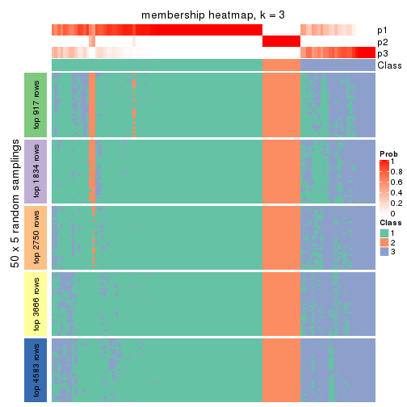
membership_heatmap(res, k = 4)
membership_heatmap(res, k = 5)
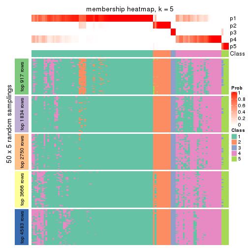
membership_heatmap(res, k = 6)
As soon as we have had the classes for columns, we can look for signatures which are significantly different between classes which can be candidate marks for certain classes. Following are the heatmaps for signatures.
Signature heatmaps where rows are scaled:
get_signatures(res, k = 2)
get_signatures(res, k = 3)
get_signatures(res, k = 4)
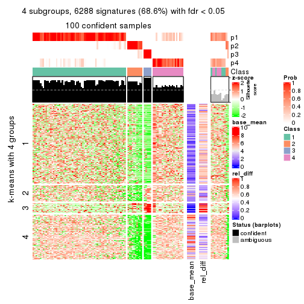
get_signatures(res, k = 5)
get_signatures(res, k = 6)
Signature heatmaps where rows are not scaled:
get_signatures(res, k = 2, scale_rows = FALSE)
get_signatures(res, k = 3, scale_rows = FALSE)
get_signatures(res, k = 4, scale_rows = FALSE)
get_signatures(res, k = 5, scale_rows = FALSE)

get_signatures(res, k = 6, scale_rows = FALSE)
Compare the overlap of signatures from different k:
compare_signatures(res)
get_signature() returns a data frame invisibly. TO get the list of signatures, the function
call should be assigned to a variable explicitly. In following code, if plot argument is set
to FALSE, no heatmap is plotted while only the differential analysis is performed.
# code only for demonstration
tb = get_signature(res, k = ..., plot = FALSE)
An example of the output of tb is:
#> which_row fdr mean_1 mean_2 scaled_mean_1 scaled_mean_2 km
#> 1 38 0.042760348 8.373488 9.131774 -0.5533452 0.5164555 1
#> 2 40 0.018707592 7.106213 8.469186 -0.6173731 0.5762149 1
#> 3 55 0.019134737 10.221463 11.207825 -0.6159697 0.5749050 1
#> 4 59 0.006059896 5.921854 7.869574 -0.6899429 0.6439467 1
#> 5 60 0.018055526 8.928898 10.211722 -0.6204761 0.5791110 1
#> 6 98 0.009384629 15.714769 14.887706 0.6635654 -0.6193277 2
...
The columns in tb are:
which_row: row indices corresponding to the input matrix.fdr: FDR for the differential test. mean_x: The mean value in group x.scaled_mean_x: The mean value in group x after rows are scaled.km: Row groups if k-means clustering is applied to rows.UMAP plot which shows how samples are separated.
dimension_reduction(res, k = 2, method = "UMAP")
dimension_reduction(res, k = 3, method = "UMAP")
dimension_reduction(res, k = 4, method = "UMAP")
dimension_reduction(res, k = 5, method = "UMAP")
dimension_reduction(res, k = 6, method = "UMAP")
Following heatmap shows how subgroups are split when increasing k:
collect_classes(res)
If matrix rows can be associated to genes, consider to use GO_Enrichment(res,
...) to perform function enrichment for the signature genes.
The object with results only for a single top-value method and a single partition method can be extracted as:
res = res_list["MAD", "mclust"]
# you can also extract it by
# res = res_list["MAD:mclust"]
A summary of res and all the functions that can be applied to it:
res
#> A 'ConsensusPartition' object with k = 2, 3, 4, 5, 6.
#> On a matrix with 9166 rows and 112 columns.
#> Top rows (917, 1834, 2750, 3666, 4583) are extracted by 'MAD' method.
#> Subgroups are detected by 'mclust' method.
#> Performed in total 1250 partitions by row resampling.
#> Best k for subgroups seems to be 2.
#>
#> Following methods can be applied to this 'ConsensusPartition' object:
#> [1] "cola_report" "collect_classes" "collect_plots"
#> [4] "collect_stats" "colnames" "compare_signatures"
#> [7] "consensus_heatmap" "dimension_reduction" "functional_enrichment"
#> [10] "get_anno_col" "get_anno" "get_classes"
#> [13] "get_consensus" "get_matrix" "get_membership"
#> [16] "get_param" "get_signatures" "get_stats"
#> [19] "is_best_k" "is_stable_k" "membership_heatmap"
#> [22] "ncol" "nrow" "plot_ecdf"
#> [25] "rownames" "select_partition_number" "show"
#> [28] "suggest_best_k" "test_to_known_factors"
collect_plots() function collects all the plots made from res for all k (number of partitions)
into one single page to provide an easy and fast comparison between different k.
collect_plots(res)
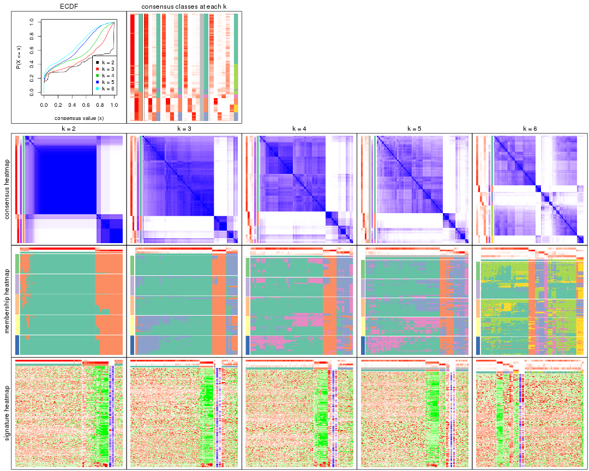
The plots are:
k and the heatmap of
predicted classes for each k.k.k.k.All the plots in panels can be made by individual functions and they are plotted later in this section.
select_partition_number() produces several plots showing different
statistics for choosing “optimized” k. There are following statistics:
k;k, the area increased is defined as \(A_k - A_{k-1}\).The detailed explanations of these statistics can be found in the cola vignette.
Generally speaking, lower PAC score, higher mean silhouette score or higher
concordance corresponds to better partition. Rand index and Jaccard index
measure how similar the current partition is compared to partition with k-1.
If they are too similar, we won't accept k is better than k-1.
select_partition_number(res)
The numeric values for all these statistics can be obtained by get_stats().
get_stats(res)
#> k 1-PAC mean_silhouette concordance area_increased Rand Jaccard
#> 2 2 0.815 0.850 0.940 0.4055 0.604 0.604
#> 3 3 0.496 0.725 0.828 0.2089 0.824 0.743
#> 4 4 0.394 0.689 0.776 0.1667 0.934 0.888
#> 5 5 0.382 0.604 0.678 0.1272 0.971 0.947
#> 6 6 0.418 0.429 0.579 0.0633 0.736 0.527
suggest_best_k() suggests the best \(k\) based on these statistics. The rules are as follows:
NA.suggest_best_k(res)
#> [1] 2
Following shows the table of the partitions (You need to click the show/hide
code output link to see it). The membership matrix (columns with name p*)
is inferred by
clue::cl_consensus()
function with the SE method. Basically the value in the membership matrix
represents the probability to belong to a certain group. The finall class
label for an item is determined with the group with highest probability it
belongs to.
In get_classes() function, the entropy is calculated from the membership
matrix and the silhouette score is calculated from the consensus matrix.
cbind(get_classes(res, k = 2), get_membership(res, k = 2))
#> class entropy silhouette p1 p2
#> SRR1003755 2 0.3431 0.90136 0.064 0.936
#> SRR1003756 2 0.3431 0.90136 0.064 0.936
#> SRR1003757 2 0.9044 0.57371 0.320 0.680
#> SRR1003758 2 0.9044 0.57371 0.320 0.680
#> SRR1003759 1 0.9970 0.06485 0.532 0.468
#> SRR1003760 2 0.0376 0.91183 0.004 0.996
#> SRR1003761 2 0.0376 0.91183 0.004 0.996
#> SRR1003762 2 0.0000 0.91169 0.000 1.000
#> SRR1003763 2 0.0000 0.91169 0.000 1.000
#> SRR1003764 2 0.0000 0.91169 0.000 1.000
#> SRR1003765 2 0.0000 0.91169 0.000 1.000
#> SRR1003766 2 0.0000 0.91169 0.000 1.000
#> SRR1003767 2 0.0000 0.91169 0.000 1.000
#> SRR1003768 2 0.0000 0.91169 0.000 1.000
#> SRR1003769 2 0.0000 0.91169 0.000 1.000
#> SRR1003770 2 0.0000 0.91169 0.000 1.000
#> SRR1003771 2 0.0000 0.91169 0.000 1.000
#> SRR1003773 2 0.3274 0.90382 0.060 0.940
#> SRR1003772 1 0.0000 0.93907 1.000 0.000
#> SRR1003774 1 0.0376 0.93622 0.996 0.004
#> SRR1003775 1 0.0000 0.93907 1.000 0.000
#> SRR1003776 1 0.0000 0.93907 1.000 0.000
#> SRR1003777 1 0.0000 0.93907 1.000 0.000
#> SRR1003778 2 0.3274 0.90382 0.060 0.940
#> SRR1003779 1 0.0000 0.93907 1.000 0.000
#> SRR1003780 2 0.0000 0.91169 0.000 1.000
#> SRR1003781 1 0.0000 0.93907 1.000 0.000
#> SRR1003784 1 1.0000 -0.05643 0.504 0.496
#> SRR1003785 2 0.3274 0.90382 0.060 0.940
#> SRR1003786 1 0.0000 0.93907 1.000 0.000
#> SRR1003783 1 0.0000 0.93907 1.000 0.000
#> SRR1003787 1 0.0000 0.93907 1.000 0.000
#> SRR1003788 1 0.0376 0.93623 0.996 0.004
#> SRR1003789 2 0.0000 0.91169 0.000 1.000
#> SRR1003790 1 0.0000 0.93907 1.000 0.000
#> SRR1003791 1 0.9491 0.38394 0.632 0.368
#> SRR1003792 1 0.0000 0.93907 1.000 0.000
#> SRR1003793 1 0.0000 0.93907 1.000 0.000
#> SRR1003794 1 0.0000 0.93907 1.000 0.000
#> SRR1003795 2 0.2423 0.90794 0.040 0.960
#> SRR1003796 2 0.3274 0.90382 0.060 0.940
#> SRR1003797 1 0.0000 0.93907 1.000 0.000
#> SRR1003798 1 0.0000 0.93907 1.000 0.000
#> SRR1003799 1 0.0000 0.93907 1.000 0.000
#> SRR1003800 1 0.0000 0.93907 1.000 0.000
#> SRR1003801 1 0.1414 0.92341 0.980 0.020
#> SRR1003802 1 0.8909 0.52033 0.692 0.308
#> SRR1003803 1 0.0000 0.93907 1.000 0.000
#> SRR1003804 1 0.0000 0.93907 1.000 0.000
#> SRR1003805 1 0.0000 0.93907 1.000 0.000
#> SRR1003806 1 0.0000 0.93907 1.000 0.000
#> SRR1003807 1 0.2603 0.90126 0.956 0.044
#> SRR1003809 1 0.2603 0.90297 0.956 0.044
#> SRR1003808 1 0.5946 0.79219 0.856 0.144
#> SRR1003810 1 0.0000 0.93907 1.000 0.000
#> SRR1003811 1 0.3114 0.89054 0.944 0.056
#> SRR1003812 1 0.0000 0.93907 1.000 0.000
#> SRR1003813 2 0.3431 0.90148 0.064 0.936
#> SRR1003814 1 0.0000 0.93907 1.000 0.000
#> SRR1003815 1 0.0672 0.93298 0.992 0.008
#> SRR1003816 1 0.0000 0.93907 1.000 0.000
#> SRR1003817 1 0.0000 0.93907 1.000 0.000
#> SRR1003818 1 0.0000 0.93907 1.000 0.000
#> SRR1003819 1 0.9552 0.35960 0.624 0.376
#> SRR1003820 1 0.0000 0.93907 1.000 0.000
#> SRR1003821 1 0.0000 0.93907 1.000 0.000
#> SRR1003822 1 0.9970 0.05861 0.532 0.468
#> SRR1003824 1 0.0376 0.93619 0.996 0.004
#> SRR1003823 1 0.0000 0.93907 1.000 0.000
#> SRR1003825 1 0.0000 0.93907 1.000 0.000
#> SRR1003826 1 0.0000 0.93907 1.000 0.000
#> SRR1003827 1 0.0000 0.93907 1.000 0.000
#> SRR1003828 1 0.0000 0.93907 1.000 0.000
#> SRR1003829 1 0.0000 0.93907 1.000 0.000
#> SRR1003830 1 0.0000 0.93907 1.000 0.000
#> SRR1003831 1 0.0000 0.93907 1.000 0.000
#> SRR1003832 1 0.0000 0.93907 1.000 0.000
#> SRR1003833 1 0.0000 0.93907 1.000 0.000
#> SRR1003834 1 0.0000 0.93907 1.000 0.000
#> SRR1003836 1 0.0000 0.93907 1.000 0.000
#> SRR1003835 1 0.1184 0.92618 0.984 0.016
#> SRR1003838 2 0.3733 0.89557 0.072 0.928
#> SRR1003837 1 0.0000 0.93907 1.000 0.000
#> SRR1003839 1 0.0000 0.93907 1.000 0.000
#> SRR1003840 1 0.9754 0.27048 0.592 0.408
#> SRR1003841 2 0.0000 0.91169 0.000 1.000
#> SRR1003842 1 0.0000 0.93907 1.000 0.000
#> SRR1003844 1 0.0000 0.93907 1.000 0.000
#> SRR1003845 2 0.9286 0.52455 0.344 0.656
#> SRR1003846 1 0.0000 0.93907 1.000 0.000
#> SRR1003847 1 0.0000 0.93907 1.000 0.000
#> SRR1003848 1 0.8608 0.57061 0.716 0.284
#> SRR1003849 2 0.3274 0.90382 0.060 0.940
#> SRR1003850 1 0.0000 0.93907 1.000 0.000
#> SRR1003851 2 0.9358 0.50858 0.352 0.648
#> SRR1003852 1 0.9686 0.30194 0.604 0.396
#> SRR1003853 1 0.0000 0.93907 1.000 0.000
#> SRR1003854 1 0.0000 0.93907 1.000 0.000
#> SRR1003843 2 0.9393 0.49851 0.356 0.644
#> SRR1003855 1 0.0000 0.93907 1.000 0.000
#> SRR1003856 1 0.9988 0.00947 0.520 0.480
#> SRR1003857 1 0.0000 0.93907 1.000 0.000
#> SRR1003858 1 0.0000 0.93907 1.000 0.000
#> SRR1003859 1 0.0000 0.93907 1.000 0.000
#> SRR1003860 1 0.0000 0.93907 1.000 0.000
#> SRR1003861 1 0.0000 0.93907 1.000 0.000
#> SRR1003862 1 0.0000 0.93907 1.000 0.000
#> SRR1003863 1 0.0000 0.93907 1.000 0.000
#> SRR1003864 1 0.0000 0.93907 1.000 0.000
#> SRR1003865 1 0.0000 0.93907 1.000 0.000
#> SRR1003866 1 0.0000 0.93907 1.000 0.000
#> SRR1003867 1 0.0000 0.93907 1.000 0.000
cbind(get_classes(res, k = 3), get_membership(res, k = 3))
#> class entropy silhouette p1 p2 p3
#> SRR1003755 1 0.9674 -0.117 0.440 0.336 0.224
#> SRR1003756 1 0.9674 -0.117 0.440 0.336 0.224
#> SRR1003757 1 0.7585 0.316 0.484 0.040 0.476
#> SRR1003758 1 0.7585 0.316 0.484 0.040 0.476
#> SRR1003759 1 0.5406 0.711 0.780 0.020 0.200
#> SRR1003760 2 0.3607 0.873 0.008 0.880 0.112
#> SRR1003761 2 0.3607 0.873 0.008 0.880 0.112
#> SRR1003762 2 0.2165 0.926 0.000 0.936 0.064
#> SRR1003763 2 0.3272 0.883 0.004 0.892 0.104
#> SRR1003764 2 0.2165 0.926 0.000 0.936 0.064
#> SRR1003765 2 0.0000 0.948 0.000 1.000 0.000
#> SRR1003766 2 0.0000 0.948 0.000 1.000 0.000
#> SRR1003767 2 0.0000 0.948 0.000 1.000 0.000
#> SRR1003768 2 0.0000 0.948 0.000 1.000 0.000
#> SRR1003769 2 0.0000 0.948 0.000 1.000 0.000
#> SRR1003770 2 0.0000 0.948 0.000 1.000 0.000
#> SRR1003771 2 0.0000 0.948 0.000 1.000 0.000
#> SRR1003773 3 0.6527 0.436 0.020 0.320 0.660
#> SRR1003772 1 0.2356 0.835 0.928 0.000 0.072
#> SRR1003774 1 0.4121 0.804 0.832 0.000 0.168
#> SRR1003775 1 0.1860 0.826 0.948 0.000 0.052
#> SRR1003776 1 0.3116 0.829 0.892 0.000 0.108
#> SRR1003777 1 0.1411 0.823 0.964 0.000 0.036
#> SRR1003778 3 0.6527 0.436 0.020 0.320 0.660
#> SRR1003779 1 0.1860 0.835 0.948 0.000 0.052
#> SRR1003780 2 0.0237 0.947 0.000 0.996 0.004
#> SRR1003781 1 0.2537 0.832 0.920 0.000 0.080
#> SRR1003784 3 0.5597 0.523 0.216 0.020 0.764
#> SRR1003785 3 0.6570 0.455 0.024 0.308 0.668
#> SRR1003786 1 0.1529 0.826 0.960 0.000 0.040
#> SRR1003783 1 0.1643 0.822 0.956 0.000 0.044
#> SRR1003787 1 0.1643 0.820 0.956 0.000 0.044
#> SRR1003788 1 0.5058 0.754 0.756 0.000 0.244
#> SRR1003789 2 0.2261 0.925 0.000 0.932 0.068
#> SRR1003790 1 0.1964 0.822 0.944 0.000 0.056
#> SRR1003791 1 0.6386 0.526 0.584 0.004 0.412
#> SRR1003792 1 0.1529 0.827 0.960 0.000 0.040
#> SRR1003793 1 0.1964 0.822 0.944 0.000 0.056
#> SRR1003794 1 0.2356 0.834 0.928 0.000 0.072
#> SRR1003795 3 0.8546 0.431 0.108 0.348 0.544
#> SRR1003796 3 0.6553 0.431 0.020 0.324 0.656
#> SRR1003797 1 0.1411 0.823 0.964 0.000 0.036
#> SRR1003798 1 0.2959 0.827 0.900 0.000 0.100
#> SRR1003799 1 0.3038 0.828 0.896 0.000 0.104
#> SRR1003800 1 0.4842 0.765 0.776 0.000 0.224
#> SRR1003801 1 0.5529 0.705 0.704 0.000 0.296
#> SRR1003802 3 0.6307 -0.328 0.488 0.000 0.512
#> SRR1003803 1 0.1753 0.831 0.952 0.000 0.048
#> SRR1003804 1 0.5098 0.747 0.752 0.000 0.248
#> SRR1003805 1 0.1964 0.823 0.944 0.000 0.056
#> SRR1003806 1 0.2356 0.835 0.928 0.000 0.072
#> SRR1003807 1 0.5291 0.731 0.732 0.000 0.268
#> SRR1003809 1 0.6104 0.632 0.648 0.004 0.348
#> SRR1003808 1 0.3412 0.799 0.876 0.000 0.124
#> SRR1003810 1 0.5254 0.737 0.736 0.000 0.264
#> SRR1003811 1 0.6104 0.650 0.648 0.004 0.348
#> SRR1003812 1 0.2165 0.831 0.936 0.000 0.064
#> SRR1003813 3 0.6416 0.456 0.020 0.304 0.676
#> SRR1003814 1 0.2165 0.831 0.936 0.000 0.064
#> SRR1003815 1 0.5859 0.652 0.656 0.000 0.344
#> SRR1003816 1 0.2261 0.830 0.932 0.000 0.068
#> SRR1003817 1 0.1964 0.825 0.944 0.000 0.056
#> SRR1003818 1 0.1860 0.824 0.948 0.000 0.052
#> SRR1003819 1 0.6079 0.584 0.612 0.000 0.388
#> SRR1003820 1 0.1529 0.821 0.960 0.000 0.040
#> SRR1003821 1 0.1643 0.822 0.956 0.000 0.044
#> SRR1003822 3 0.5397 0.400 0.280 0.000 0.720
#> SRR1003824 1 0.5363 0.723 0.724 0.000 0.276
#> SRR1003823 1 0.1753 0.825 0.952 0.000 0.048
#> SRR1003825 1 0.4974 0.756 0.764 0.000 0.236
#> SRR1003826 1 0.2448 0.835 0.924 0.000 0.076
#> SRR1003827 1 0.1643 0.820 0.956 0.000 0.044
#> SRR1003828 1 0.3267 0.824 0.884 0.000 0.116
#> SRR1003829 1 0.1643 0.834 0.956 0.000 0.044
#> SRR1003830 1 0.2165 0.826 0.936 0.000 0.064
#> SRR1003831 1 0.3038 0.830 0.896 0.000 0.104
#> SRR1003832 1 0.2165 0.837 0.936 0.000 0.064
#> SRR1003833 1 0.3941 0.809 0.844 0.000 0.156
#> SRR1003834 1 0.3412 0.821 0.876 0.000 0.124
#> SRR1003836 1 0.5016 0.751 0.760 0.000 0.240
#> SRR1003835 1 0.6057 0.645 0.656 0.004 0.340
#> SRR1003838 3 0.7351 0.496 0.068 0.268 0.664
#> SRR1003837 1 0.2165 0.834 0.936 0.000 0.064
#> SRR1003839 1 0.3619 0.819 0.864 0.000 0.136
#> SRR1003840 1 0.6865 0.556 0.596 0.020 0.384
#> SRR1003841 2 0.0424 0.947 0.000 0.992 0.008
#> SRR1003842 1 0.1964 0.822 0.944 0.000 0.056
#> SRR1003844 1 0.2878 0.836 0.904 0.000 0.096
#> SRR1003845 1 0.7159 0.414 0.528 0.024 0.448
#> SRR1003846 1 0.2066 0.828 0.940 0.000 0.060
#> SRR1003847 1 0.2261 0.836 0.932 0.000 0.068
#> SRR1003848 1 0.6308 0.324 0.508 0.000 0.492
#> SRR1003849 3 0.6473 0.446 0.020 0.312 0.668
#> SRR1003850 1 0.5905 0.635 0.648 0.000 0.352
#> SRR1003851 3 0.6827 0.532 0.192 0.080 0.728
#> SRR1003852 1 0.6818 0.614 0.628 0.024 0.348
#> SRR1003853 1 0.1529 0.834 0.960 0.000 0.040
#> SRR1003854 1 0.1753 0.825 0.952 0.000 0.048
#> SRR1003843 1 0.7169 0.386 0.520 0.024 0.456
#> SRR1003855 1 0.3482 0.822 0.872 0.000 0.128
#> SRR1003856 3 0.5621 0.329 0.308 0.000 0.692
#> SRR1003857 1 0.2625 0.831 0.916 0.000 0.084
#> SRR1003858 1 0.2625 0.833 0.916 0.000 0.084
#> SRR1003859 1 0.1964 0.825 0.944 0.000 0.056
#> SRR1003860 1 0.1411 0.827 0.964 0.000 0.036
#> SRR1003861 1 0.3551 0.819 0.868 0.000 0.132
#> SRR1003862 1 0.1529 0.821 0.960 0.000 0.040
#> SRR1003863 1 0.5291 0.732 0.732 0.000 0.268
#> SRR1003864 1 0.1643 0.820 0.956 0.000 0.044
#> SRR1003865 1 0.2261 0.833 0.932 0.000 0.068
#> SRR1003866 1 0.1753 0.832 0.952 0.000 0.048
#> SRR1003867 1 0.1643 0.834 0.956 0.000 0.044
cbind(get_classes(res, k = 4), get_membership(res, k = 4))
#> class entropy silhouette p1 p2 p3 p4
#> SRR1003755 4 0.8703 0.6297 0.056 0.200 0.304 0.440
#> SRR1003756 4 0.8703 0.6297 0.056 0.200 0.304 0.440
#> SRR1003757 4 0.8529 0.5990 0.156 0.060 0.328 0.456
#> SRR1003758 4 0.8509 0.5863 0.160 0.056 0.332 0.452
#> SRR1003759 1 0.7140 0.4698 0.612 0.016 0.208 0.164
#> SRR1003760 2 0.5803 0.7137 0.000 0.700 0.196 0.104
#> SRR1003761 2 0.5747 0.7167 0.000 0.704 0.196 0.100
#> SRR1003762 2 0.4979 0.7639 0.000 0.760 0.176 0.064
#> SRR1003763 2 0.5421 0.7292 0.000 0.724 0.200 0.076
#> SRR1003764 2 0.4756 0.7698 0.000 0.772 0.176 0.052
#> SRR1003765 2 0.0188 0.8124 0.000 0.996 0.000 0.004
#> SRR1003766 2 0.0188 0.8124 0.000 0.996 0.000 0.004
#> SRR1003767 2 0.0524 0.8149 0.000 0.988 0.004 0.008
#> SRR1003768 2 0.0188 0.8124 0.000 0.996 0.000 0.004
#> SRR1003769 2 0.0188 0.8124 0.000 0.996 0.000 0.004
#> SRR1003770 2 0.0376 0.8139 0.000 0.992 0.004 0.004
#> SRR1003771 2 0.0524 0.8149 0.000 0.988 0.004 0.008
#> SRR1003773 3 0.2401 0.4119 0.000 0.092 0.904 0.004
#> SRR1003772 1 0.3355 0.8013 0.836 0.000 0.004 0.160
#> SRR1003774 1 0.3525 0.7852 0.860 0.000 0.040 0.100
#> SRR1003775 1 0.4250 0.7726 0.724 0.000 0.000 0.276
#> SRR1003776 1 0.2300 0.8118 0.920 0.000 0.016 0.064
#> SRR1003777 1 0.3444 0.7855 0.816 0.000 0.000 0.184
#> SRR1003778 3 0.2593 0.4038 0.000 0.104 0.892 0.004
#> SRR1003779 1 0.2647 0.8100 0.880 0.000 0.000 0.120
#> SRR1003780 2 0.4635 0.7901 0.000 0.796 0.124 0.080
#> SRR1003781 1 0.4417 0.7885 0.796 0.000 0.044 0.160
#> SRR1003784 3 0.5458 0.2541 0.232 0.004 0.712 0.052
#> SRR1003785 3 0.2530 0.4211 0.008 0.072 0.912 0.008
#> SRR1003786 1 0.3486 0.7873 0.812 0.000 0.000 0.188
#> SRR1003783 1 0.3486 0.7843 0.812 0.000 0.000 0.188
#> SRR1003787 1 0.3400 0.7889 0.820 0.000 0.000 0.180
#> SRR1003788 1 0.3051 0.7818 0.884 0.000 0.028 0.088
#> SRR1003789 2 0.5536 0.7509 0.000 0.724 0.180 0.096
#> SRR1003790 1 0.4382 0.7668 0.704 0.000 0.000 0.296
#> SRR1003791 1 0.7353 0.5358 0.576 0.012 0.184 0.228
#> SRR1003792 1 0.2469 0.8133 0.892 0.000 0.000 0.108
#> SRR1003793 1 0.4304 0.7716 0.716 0.000 0.000 0.284
#> SRR1003794 1 0.4018 0.8017 0.772 0.000 0.004 0.224
#> SRR1003795 3 0.6722 0.1844 0.032 0.108 0.672 0.188
#> SRR1003796 3 0.2593 0.4038 0.000 0.104 0.892 0.004
#> SRR1003797 1 0.3400 0.7896 0.820 0.000 0.000 0.180
#> SRR1003798 1 0.4163 0.7747 0.792 0.000 0.020 0.188
#> SRR1003799 1 0.3760 0.8060 0.836 0.000 0.028 0.136
#> SRR1003800 1 0.4920 0.7563 0.756 0.000 0.052 0.192
#> SRR1003801 1 0.3972 0.7609 0.840 0.000 0.080 0.080
#> SRR1003802 3 0.7292 0.0500 0.388 0.000 0.460 0.152
#> SRR1003803 1 0.3908 0.8012 0.784 0.000 0.004 0.212
#> SRR1003804 1 0.4656 0.7652 0.792 0.000 0.072 0.136
#> SRR1003805 1 0.4331 0.7697 0.712 0.000 0.000 0.288
#> SRR1003806 1 0.3024 0.8021 0.852 0.000 0.000 0.148
#> SRR1003807 1 0.5842 0.6827 0.688 0.000 0.092 0.220
#> SRR1003809 1 0.4592 0.7315 0.804 0.004 0.128 0.064
#> SRR1003808 1 0.3818 0.7868 0.844 0.000 0.048 0.108
#> SRR1003810 1 0.3547 0.7701 0.864 0.000 0.064 0.072
#> SRR1003811 1 0.5464 0.6383 0.716 0.000 0.212 0.072
#> SRR1003812 1 0.3311 0.7952 0.828 0.000 0.000 0.172
#> SRR1003813 3 0.2530 0.4081 0.000 0.100 0.896 0.004
#> SRR1003814 1 0.3166 0.7978 0.868 0.000 0.016 0.116
#> SRR1003815 1 0.4940 0.7143 0.776 0.000 0.128 0.096
#> SRR1003816 1 0.3356 0.7929 0.824 0.000 0.000 0.176
#> SRR1003817 1 0.3400 0.7907 0.820 0.000 0.000 0.180
#> SRR1003818 1 0.2345 0.8118 0.900 0.000 0.000 0.100
#> SRR1003819 1 0.6758 0.5238 0.628 0.004 0.192 0.176
#> SRR1003820 1 0.3528 0.7839 0.808 0.000 0.000 0.192
#> SRR1003821 1 0.3486 0.7851 0.812 0.000 0.000 0.188
#> SRR1003822 3 0.6298 0.2016 0.268 0.000 0.632 0.100
#> SRR1003824 1 0.4964 0.6841 0.764 0.000 0.168 0.068
#> SRR1003823 1 0.4277 0.7778 0.720 0.000 0.000 0.280
#> SRR1003825 1 0.3958 0.7825 0.824 0.000 0.032 0.144
#> SRR1003826 1 0.3829 0.8142 0.828 0.004 0.016 0.152
#> SRR1003827 1 0.3172 0.7968 0.840 0.000 0.000 0.160
#> SRR1003828 1 0.4284 0.7709 0.780 0.000 0.020 0.200
#> SRR1003829 1 0.3356 0.8123 0.824 0.000 0.000 0.176
#> SRR1003830 1 0.4331 0.7715 0.712 0.000 0.000 0.288
#> SRR1003831 1 0.2222 0.8086 0.924 0.000 0.016 0.060
#> SRR1003832 1 0.3837 0.7981 0.776 0.000 0.000 0.224
#> SRR1003833 1 0.3219 0.8062 0.868 0.000 0.020 0.112
#> SRR1003834 1 0.2473 0.7989 0.908 0.000 0.012 0.080
#> SRR1003836 1 0.3279 0.7842 0.872 0.000 0.032 0.096
#> SRR1003835 1 0.5689 0.7227 0.712 0.000 0.104 0.184
#> SRR1003838 3 0.3285 0.3952 0.052 0.024 0.892 0.032
#> SRR1003837 1 0.1557 0.8065 0.944 0.000 0.000 0.056
#> SRR1003839 1 0.2198 0.7985 0.920 0.000 0.008 0.072
#> SRR1003840 1 0.7081 0.5366 0.632 0.024 0.148 0.196
#> SRR1003841 2 0.4688 0.7875 0.000 0.792 0.128 0.080
#> SRR1003842 1 0.4356 0.7682 0.708 0.000 0.000 0.292
#> SRR1003844 1 0.3402 0.8154 0.832 0.000 0.004 0.164
#> SRR1003845 1 0.7772 0.3242 0.528 0.016 0.232 0.224
#> SRR1003846 1 0.4040 0.7895 0.752 0.000 0.000 0.248
#> SRR1003847 1 0.2611 0.8190 0.896 0.000 0.008 0.096
#> SRR1003848 3 0.6840 0.0664 0.432 0.000 0.468 0.100
#> SRR1003849 3 0.2149 0.4157 0.000 0.088 0.912 0.000
#> SRR1003850 1 0.6523 0.6013 0.636 0.000 0.208 0.156
#> SRR1003851 3 0.5749 0.2301 0.076 0.012 0.724 0.188
#> SRR1003852 1 0.7123 0.6262 0.628 0.024 0.152 0.196
#> SRR1003853 1 0.1302 0.8133 0.956 0.000 0.000 0.044
#> SRR1003854 1 0.2868 0.8055 0.864 0.000 0.000 0.136
#> SRR1003843 1 0.8493 -0.2935 0.364 0.024 0.344 0.268
#> SRR1003855 1 0.2011 0.7977 0.920 0.000 0.000 0.080
#> SRR1003856 3 0.6278 0.2030 0.228 0.000 0.652 0.120
#> SRR1003857 1 0.1557 0.8087 0.944 0.000 0.000 0.056
#> SRR1003858 1 0.1452 0.8117 0.956 0.000 0.008 0.036
#> SRR1003859 1 0.4277 0.7729 0.720 0.000 0.000 0.280
#> SRR1003860 1 0.4072 0.7842 0.748 0.000 0.000 0.252
#> SRR1003861 1 0.2197 0.7969 0.916 0.000 0.004 0.080
#> SRR1003862 1 0.4250 0.7714 0.724 0.000 0.000 0.276
#> SRR1003863 1 0.4245 0.7373 0.820 0.000 0.116 0.064
#> SRR1003864 1 0.3444 0.7859 0.816 0.000 0.000 0.184
#> SRR1003865 1 0.2546 0.8199 0.900 0.000 0.008 0.092
#> SRR1003866 1 0.3196 0.8174 0.856 0.000 0.008 0.136
#> SRR1003867 1 0.3647 0.8097 0.832 0.000 0.016 0.152
cbind(get_classes(res, k = 5), get_membership(res, k = 5))
#> class entropy silhouette p1 p2 p3 p4 p5
#> SRR1003755 4 0.806 0.7260 0.052 0.092 0.320 0.456 NA
#> SRR1003756 4 0.806 0.7260 0.052 0.092 0.320 0.456 NA
#> SRR1003757 4 0.762 0.7361 0.120 0.008 0.232 0.520 NA
#> SRR1003758 4 0.767 0.7263 0.124 0.008 0.228 0.516 NA
#> SRR1003759 1 0.745 0.3249 0.504 0.004 0.216 0.060 NA
#> SRR1003760 2 0.610 0.6165 0.000 0.648 0.212 0.068 NA
#> SRR1003761 2 0.615 0.6000 0.000 0.636 0.228 0.064 NA
#> SRR1003762 2 0.516 0.6565 0.000 0.720 0.184 0.028 NA
#> SRR1003763 2 0.573 0.6050 0.004 0.664 0.232 0.028 NA
#> SRR1003764 2 0.513 0.6603 0.000 0.724 0.180 0.028 NA
#> SRR1003765 2 0.417 0.6836 0.000 0.756 0.000 0.200 NA
#> SRR1003766 2 0.417 0.6836 0.000 0.756 0.000 0.200 NA
#> SRR1003767 2 0.369 0.7031 0.000 0.820 0.004 0.128 NA
#> SRR1003768 2 0.417 0.6836 0.000 0.756 0.000 0.200 NA
#> SRR1003769 2 0.417 0.6836 0.000 0.756 0.000 0.200 NA
#> SRR1003770 2 0.392 0.6920 0.000 0.784 0.000 0.172 NA
#> SRR1003771 2 0.369 0.7039 0.000 0.820 0.004 0.128 NA
#> SRR1003773 3 0.103 0.5666 0.004 0.024 0.968 0.000 NA
#> SRR1003772 1 0.537 0.6310 0.568 0.000 0.008 0.044 NA
#> SRR1003774 1 0.360 0.6525 0.832 0.000 0.020 0.024 NA
#> SRR1003775 1 0.429 0.6297 0.540 0.000 0.000 0.000 NA
#> SRR1003776 1 0.342 0.7009 0.824 0.000 0.008 0.016 NA
#> SRR1003777 1 0.489 0.6412 0.596 0.000 0.000 0.032 NA
#> SRR1003778 3 0.103 0.5666 0.004 0.024 0.968 0.000 NA
#> SRR1003779 1 0.511 0.6562 0.604 0.000 0.004 0.040 NA
#> SRR1003780 2 0.352 0.6906 0.000 0.844 0.084 0.064 NA
#> SRR1003781 1 0.449 0.6979 0.772 0.004 0.008 0.064 NA
#> SRR1003784 3 0.619 0.3261 0.236 0.000 0.628 0.080 NA
#> SRR1003785 3 0.167 0.5759 0.012 0.012 0.948 0.024 NA
#> SRR1003786 1 0.466 0.6739 0.644 0.000 0.004 0.020 NA
#> SRR1003783 1 0.492 0.6444 0.604 0.000 0.000 0.036 NA
#> SRR1003787 1 0.451 0.6689 0.648 0.000 0.000 0.020 NA
#> SRR1003788 1 0.306 0.6632 0.860 0.000 0.004 0.028 NA
#> SRR1003789 2 0.589 0.6410 0.000 0.676 0.184 0.076 NA
#> SRR1003790 1 0.499 0.6337 0.556 0.000 0.004 0.024 NA
#> SRR1003791 1 0.809 0.3522 0.460 0.008 0.164 0.136 NA
#> SRR1003792 1 0.405 0.7198 0.748 0.000 0.000 0.028 NA
#> SRR1003793 1 0.495 0.6258 0.528 0.000 0.004 0.020 NA
#> SRR1003794 1 0.460 0.6884 0.624 0.000 0.000 0.020 NA
#> SRR1003795 3 0.644 0.3900 0.044 0.052 0.660 0.192 NA
#> SRR1003796 3 0.103 0.5666 0.004 0.024 0.968 0.000 NA
#> SRR1003797 1 0.484 0.6563 0.628 0.000 0.000 0.036 NA
#> SRR1003798 1 0.447 0.6925 0.760 0.000 0.004 0.076 NA
#> SRR1003799 1 0.445 0.7132 0.772 0.000 0.020 0.048 NA
#> SRR1003800 1 0.416 0.6727 0.768 0.000 0.000 0.056 NA
#> SRR1003801 1 0.476 0.6275 0.760 0.000 0.032 0.056 NA
#> SRR1003802 1 0.768 -0.0498 0.444 0.000 0.276 0.204 NA
#> SRR1003803 1 0.445 0.7124 0.696 0.000 0.000 0.032 NA
#> SRR1003804 1 0.444 0.6688 0.784 0.000 0.020 0.068 NA
#> SRR1003805 1 0.422 0.6617 0.584 0.000 0.000 0.000 NA
#> SRR1003806 1 0.451 0.7003 0.716 0.000 0.000 0.048 NA
#> SRR1003807 1 0.543 0.6279 0.708 0.000 0.028 0.104 NA
#> SRR1003809 1 0.566 0.5979 0.708 0.004 0.068 0.060 NA
#> SRR1003808 1 0.554 0.6020 0.692 0.000 0.048 0.060 NA
#> SRR1003810 1 0.436 0.6406 0.776 0.000 0.012 0.056 NA
#> SRR1003811 1 0.670 0.5146 0.620 0.000 0.132 0.104 NA
#> SRR1003812 1 0.455 0.6762 0.632 0.000 0.004 0.012 NA
#> SRR1003813 3 0.125 0.5724 0.008 0.016 0.964 0.008 NA
#> SRR1003814 1 0.468 0.6495 0.744 0.000 0.012 0.060 NA
#> SRR1003815 1 0.610 0.5622 0.664 0.000 0.076 0.084 NA
#> SRR1003816 1 0.497 0.6412 0.588 0.000 0.000 0.036 NA
#> SRR1003817 1 0.481 0.6411 0.576 0.000 0.000 0.024 NA
#> SRR1003818 1 0.362 0.7111 0.788 0.000 0.000 0.020 NA
#> SRR1003819 1 0.710 0.3324 0.564 0.000 0.176 0.084 NA
#> SRR1003820 1 0.493 0.6421 0.600 0.000 0.000 0.036 NA
#> SRR1003821 1 0.446 0.6564 0.620 0.000 0.000 0.012 NA
#> SRR1003822 3 0.723 0.1677 0.348 0.000 0.464 0.116 NA
#> SRR1003824 1 0.498 0.6214 0.764 0.000 0.100 0.068 NA
#> SRR1003823 1 0.535 0.6301 0.540 0.000 0.012 0.032 NA
#> SRR1003825 1 0.396 0.6747 0.800 0.000 0.012 0.036 NA
#> SRR1003826 1 0.468 0.7203 0.732 0.000 0.012 0.048 NA
#> SRR1003827 1 0.487 0.6770 0.632 0.000 0.000 0.040 NA
#> SRR1003828 1 0.445 0.6837 0.752 0.000 0.004 0.060 NA
#> SRR1003829 1 0.382 0.7189 0.756 0.000 0.000 0.016 NA
#> SRR1003830 1 0.510 0.6236 0.524 0.000 0.004 0.028 NA
#> SRR1003831 1 0.313 0.6858 0.848 0.000 0.004 0.020 NA
#> SRR1003832 1 0.466 0.7036 0.692 0.000 0.004 0.036 NA
#> SRR1003833 1 0.430 0.6967 0.764 0.000 0.012 0.036 NA
#> SRR1003834 1 0.290 0.6816 0.864 0.000 0.000 0.028 NA
#> SRR1003836 1 0.314 0.6715 0.852 0.000 0.000 0.040 NA
#> SRR1003835 1 0.599 0.6550 0.656 0.008 0.040 0.068 NA
#> SRR1003838 3 0.476 0.5131 0.092 0.004 0.784 0.076 NA
#> SRR1003837 1 0.242 0.7047 0.896 0.000 0.000 0.024 NA
#> SRR1003839 1 0.298 0.6761 0.860 0.000 0.004 0.020 NA
#> SRR1003840 1 0.809 0.3505 0.492 0.024 0.132 0.124 NA
#> SRR1003841 2 0.361 0.6886 0.000 0.832 0.100 0.064 NA
#> SRR1003842 1 0.503 0.6212 0.528 0.000 0.004 0.024 NA
#> SRR1003844 1 0.456 0.6727 0.612 0.000 0.000 0.016 NA
#> SRR1003845 1 0.875 -0.0326 0.368 0.020 0.224 0.152 NA
#> SRR1003846 1 0.495 0.6591 0.576 0.000 0.004 0.024 NA
#> SRR1003847 1 0.319 0.7167 0.840 0.000 0.000 0.028 NA
#> SRR1003848 1 0.746 0.0643 0.472 0.000 0.308 0.124 NA
#> SRR1003849 3 0.096 0.5748 0.008 0.016 0.972 0.004 NA
#> SRR1003850 1 0.623 0.5876 0.664 0.000 0.140 0.100 NA
#> SRR1003851 3 0.635 0.3879 0.132 0.000 0.636 0.176 NA
#> SRR1003852 1 0.819 0.3907 0.476 0.024 0.128 0.136 NA
#> SRR1003853 1 0.329 0.7138 0.844 0.000 0.004 0.032 NA
#> SRR1003854 1 0.396 0.7123 0.760 0.000 0.000 0.028 NA
#> SRR1003843 1 0.898 -0.2588 0.288 0.020 0.276 0.204 NA
#> SRR1003855 1 0.293 0.6756 0.864 0.000 0.004 0.020 NA
#> SRR1003856 3 0.746 0.1496 0.328 0.000 0.448 0.152 NA
#> SRR1003857 1 0.277 0.7163 0.868 0.000 0.000 0.020 NA
#> SRR1003858 1 0.245 0.7026 0.892 0.000 0.000 0.020 NA
#> SRR1003859 1 0.523 0.6359 0.552 0.000 0.008 0.032 NA
#> SRR1003860 1 0.389 0.6973 0.680 0.000 0.000 0.000 NA
#> SRR1003861 1 0.295 0.6722 0.860 0.000 0.000 0.028 NA
#> SRR1003862 1 0.462 0.6390 0.552 0.000 0.000 0.012 NA
#> SRR1003863 1 0.470 0.6455 0.784 0.000 0.056 0.084 NA
#> SRR1003864 1 0.473 0.6636 0.640 0.000 0.000 0.032 NA
#> SRR1003865 1 0.373 0.7086 0.800 0.000 0.000 0.040 NA
#> SRR1003866 1 0.391 0.7112 0.772 0.000 0.000 0.032 NA
#> SRR1003867 1 0.440 0.7060 0.736 0.000 0.000 0.052 NA
cbind(get_classes(res, k = 6), get_membership(res, k = 6))
#> class entropy silhouette p1 p2 p3 p4 p5 p6
#> SRR1003755 4 0.5370 0.76362 0.008 0.044 0.220 0.676 0.020 0.032
#> SRR1003756 4 0.5370 0.76362 0.008 0.044 0.220 0.676 0.020 0.032
#> SRR1003757 4 0.4156 0.77700 0.012 0.008 0.068 0.796 0.104 0.012
#> SRR1003758 4 0.4156 0.77700 0.012 0.008 0.068 0.796 0.104 0.012
#> SRR1003759 1 0.7683 -0.13460 0.356 0.000 0.064 0.044 0.320 0.216
#> SRR1003760 6 0.2883 0.83638 0.000 0.212 0.000 0.000 0.000 0.788
#> SRR1003761 6 0.3277 0.82327 0.000 0.188 0.016 0.000 0.004 0.792
#> SRR1003762 6 0.3221 0.83429 0.000 0.264 0.000 0.000 0.000 0.736
#> SRR1003763 6 0.4059 0.81666 0.000 0.224 0.036 0.004 0.004 0.732
#> SRR1003764 6 0.3221 0.83429 0.000 0.264 0.000 0.000 0.000 0.736
#> SRR1003765 2 0.0146 0.92322 0.000 0.996 0.000 0.000 0.000 0.004
#> SRR1003766 2 0.0146 0.92322 0.000 0.996 0.000 0.000 0.000 0.004
#> SRR1003767 2 0.2003 0.84328 0.000 0.884 0.000 0.000 0.000 0.116
#> SRR1003768 2 0.0146 0.92322 0.000 0.996 0.000 0.000 0.000 0.004
#> SRR1003769 2 0.0146 0.92322 0.000 0.996 0.000 0.000 0.000 0.004
#> SRR1003770 2 0.1349 0.90129 0.000 0.940 0.000 0.004 0.000 0.056
#> SRR1003771 2 0.2219 0.81008 0.000 0.864 0.000 0.000 0.000 0.136
#> SRR1003773 3 0.2730 0.66231 0.000 0.000 0.808 0.000 0.000 0.192
#> SRR1003772 1 0.3668 0.53981 0.824 0.000 0.056 0.020 0.092 0.008
#> SRR1003774 5 0.4566 0.29073 0.428 0.000 0.004 0.028 0.540 0.000
#> SRR1003775 1 0.3740 0.52444 0.816 0.000 0.076 0.004 0.084 0.020
#> SRR1003776 1 0.4300 0.05465 0.548 0.000 0.000 0.020 0.432 0.000
#> SRR1003777 1 0.2950 0.56172 0.864 0.000 0.048 0.004 0.076 0.008
#> SRR1003778 3 0.2730 0.66231 0.000 0.000 0.808 0.000 0.000 0.192
#> SRR1003779 1 0.3380 0.55420 0.836 0.000 0.044 0.016 0.100 0.004
#> SRR1003780 6 0.4306 0.45659 0.000 0.464 0.012 0.004 0.000 0.520
#> SRR1003781 1 0.6177 0.13893 0.516 0.000 0.028 0.040 0.356 0.060
#> SRR1003784 3 0.7929 0.23336 0.060 0.000 0.360 0.212 0.292 0.076
#> SRR1003785 3 0.5145 0.65334 0.016 0.000 0.692 0.060 0.032 0.200
#> SRR1003786 1 0.2645 0.56329 0.888 0.000 0.052 0.008 0.044 0.008
#> SRR1003783 1 0.2834 0.55792 0.876 0.000 0.060 0.008 0.048 0.008
#> SRR1003787 1 0.3126 0.55232 0.844 0.000 0.044 0.004 0.104 0.004
#> SRR1003788 5 0.4637 0.36943 0.392 0.000 0.004 0.028 0.572 0.004
#> SRR1003789 6 0.3213 0.83081 0.000 0.204 0.008 0.004 0.000 0.784
#> SRR1003790 1 0.4446 0.50880 0.768 0.000 0.096 0.008 0.100 0.028
#> SRR1003791 5 0.7683 0.30609 0.252 0.000 0.072 0.068 0.444 0.164
#> SRR1003792 1 0.4039 0.46943 0.720 0.000 0.012 0.016 0.248 0.004
#> SRR1003793 1 0.4740 0.50896 0.744 0.000 0.104 0.008 0.112 0.032
#> SRR1003794 1 0.4940 0.50341 0.696 0.000 0.072 0.012 0.204 0.016
#> SRR1003795 3 0.8123 0.41313 0.012 0.012 0.320 0.252 0.160 0.244
#> SRR1003796 3 0.2730 0.66231 0.000 0.000 0.808 0.000 0.000 0.192
#> SRR1003797 1 0.2930 0.55700 0.868 0.000 0.044 0.004 0.072 0.012
#> SRR1003798 1 0.5298 -0.11782 0.480 0.000 0.012 0.036 0.456 0.016
#> SRR1003799 1 0.6187 0.15779 0.532 0.000 0.068 0.048 0.332 0.020
#> SRR1003800 5 0.5372 0.21382 0.436 0.000 0.024 0.032 0.496 0.012
#> SRR1003801 5 0.5276 0.42740 0.364 0.000 0.012 0.064 0.556 0.004
#> SRR1003802 5 0.7751 -0.01367 0.104 0.000 0.168 0.288 0.400 0.040
#> SRR1003803 1 0.4913 0.47031 0.676 0.000 0.044 0.016 0.248 0.016
#> SRR1003804 5 0.5668 0.36582 0.408 0.000 0.008 0.084 0.488 0.012
#> SRR1003805 1 0.3896 0.54572 0.792 0.000 0.080 0.000 0.112 0.016
#> SRR1003806 1 0.5907 0.34754 0.572 0.000 0.064 0.028 0.308 0.028
#> SRR1003807 5 0.5731 0.36893 0.368 0.000 0.024 0.048 0.536 0.024
#> SRR1003809 5 0.5815 0.45411 0.324 0.000 0.020 0.100 0.548 0.008
#> SRR1003808 1 0.6103 -0.03164 0.464 0.000 0.016 0.044 0.416 0.060
#> SRR1003810 5 0.4872 0.39999 0.388 0.000 0.000 0.064 0.548 0.000
#> SRR1003811 5 0.7153 0.42678 0.248 0.000 0.052 0.264 0.420 0.016
#> SRR1003812 1 0.3660 0.54425 0.820 0.000 0.036 0.024 0.112 0.008
#> SRR1003813 3 0.3333 0.66648 0.000 0.000 0.784 0.000 0.024 0.192
#> SRR1003814 1 0.6156 0.00428 0.464 0.000 0.016 0.052 0.412 0.056
#> SRR1003815 5 0.6350 0.44668 0.304 0.004 0.016 0.188 0.484 0.004
#> SRR1003816 1 0.3431 0.53714 0.836 0.000 0.052 0.008 0.092 0.012
#> SRR1003817 1 0.2689 0.55100 0.884 0.000 0.064 0.008 0.036 0.008
#> SRR1003818 1 0.3767 0.43489 0.708 0.000 0.012 0.004 0.276 0.000
#> SRR1003819 5 0.6976 0.39766 0.300 0.000 0.052 0.048 0.492 0.108
#> SRR1003820 1 0.3282 0.54346 0.844 0.000 0.052 0.008 0.088 0.008
#> SRR1003821 1 0.2618 0.56424 0.888 0.000 0.060 0.004 0.036 0.012
#> SRR1003822 5 0.8052 -0.30899 0.076 0.000 0.264 0.272 0.324 0.064
#> SRR1003824 5 0.6677 0.43387 0.300 0.000 0.028 0.224 0.440 0.008
#> SRR1003823 1 0.5079 0.48790 0.716 0.000 0.108 0.012 0.132 0.032
#> SRR1003825 5 0.4721 0.34366 0.420 0.000 0.000 0.032 0.540 0.008
#> SRR1003826 1 0.5939 0.37570 0.616 0.000 0.052 0.044 0.248 0.040
#> SRR1003827 1 0.3387 0.55549 0.828 0.000 0.028 0.012 0.124 0.008
#> SRR1003828 5 0.4995 0.12659 0.468 0.000 0.016 0.028 0.484 0.004
#> SRR1003829 1 0.4150 0.46448 0.720 0.000 0.028 0.016 0.236 0.000
#> SRR1003830 1 0.5179 0.48139 0.708 0.000 0.104 0.012 0.140 0.036
#> SRR1003831 5 0.4463 0.18038 0.456 0.000 0.000 0.028 0.516 0.000
#> SRR1003832 1 0.5411 0.46937 0.676 0.000 0.076 0.028 0.196 0.024
#> SRR1003833 1 0.4808 -0.05090 0.524 0.000 0.004 0.028 0.436 0.008
#> SRR1003834 5 0.4648 0.27104 0.444 0.000 0.004 0.032 0.520 0.000
#> SRR1003836 5 0.4922 0.36461 0.400 0.000 0.008 0.032 0.552 0.008
#> SRR1003835 1 0.6513 -0.18193 0.456 0.004 0.044 0.044 0.404 0.048
#> SRR1003838 3 0.7795 0.52968 0.048 0.000 0.448 0.160 0.136 0.208
#> SRR1003837 1 0.4684 -0.04827 0.520 0.000 0.008 0.028 0.444 0.000
#> SRR1003839 5 0.4276 0.31151 0.416 0.000 0.000 0.020 0.564 0.000
#> SRR1003840 5 0.7381 0.32397 0.268 0.000 0.044 0.072 0.464 0.152
#> SRR1003841 6 0.4400 0.49127 0.000 0.456 0.012 0.008 0.000 0.524
#> SRR1003842 1 0.4964 0.48941 0.732 0.000 0.100 0.016 0.120 0.032
#> SRR1003844 1 0.3050 0.57255 0.852 0.000 0.044 0.012 0.092 0.000
#> SRR1003845 5 0.7728 0.32198 0.200 0.000 0.076 0.072 0.456 0.196
#> SRR1003846 1 0.4819 0.51600 0.744 0.000 0.100 0.012 0.108 0.036
#> SRR1003847 1 0.4611 0.21720 0.584 0.000 0.016 0.020 0.380 0.000
#> SRR1003848 5 0.7952 0.26034 0.168 0.000 0.168 0.232 0.396 0.036
#> SRR1003849 3 0.3296 0.66824 0.000 0.000 0.792 0.008 0.012 0.188
#> SRR1003850 5 0.7388 0.38844 0.308 0.000 0.088 0.208 0.384 0.012
#> SRR1003851 3 0.8398 0.41005 0.056 0.000 0.316 0.232 0.184 0.212
#> SRR1003852 5 0.7560 0.26532 0.324 0.000 0.052 0.064 0.400 0.160
#> SRR1003853 1 0.4846 0.17214 0.572 0.000 0.012 0.024 0.384 0.008
#> SRR1003854 1 0.3716 0.45058 0.732 0.000 0.012 0.008 0.248 0.000
#> SRR1003843 5 0.7850 -0.18437 0.116 0.000 0.120 0.072 0.432 0.260
#> SRR1003855 5 0.4566 0.29181 0.428 0.000 0.000 0.028 0.540 0.004
#> SRR1003856 5 0.7843 -0.33515 0.060 0.000 0.272 0.272 0.340 0.056
#> SRR1003857 1 0.4292 0.08692 0.568 0.000 0.008 0.004 0.416 0.004
#> SRR1003858 1 0.4249 0.08738 0.568 0.000 0.004 0.012 0.416 0.000
#> SRR1003859 1 0.5237 0.49310 0.712 0.000 0.104 0.020 0.128 0.036
#> SRR1003860 1 0.3269 0.56180 0.832 0.000 0.052 0.000 0.108 0.008
#> SRR1003861 5 0.4432 0.27655 0.432 0.000 0.000 0.020 0.544 0.004
#> SRR1003862 1 0.3439 0.53854 0.832 0.000 0.080 0.000 0.068 0.020
#> SRR1003863 5 0.6387 0.42787 0.336 0.000 0.016 0.188 0.452 0.008
#> SRR1003864 1 0.2316 0.57260 0.900 0.000 0.028 0.004 0.064 0.004
#> SRR1003865 1 0.5102 0.19041 0.560 0.000 0.016 0.024 0.384 0.016
#> SRR1003866 1 0.5200 0.26472 0.592 0.000 0.020 0.032 0.340 0.016
#> SRR1003867 1 0.5299 0.28284 0.596 0.000 0.024 0.036 0.328 0.016
Heatmaps for the consensus matrix. It visualizes the probability of two samples to be in a same group.
consensus_heatmap(res, k = 2)
consensus_heatmap(res, k = 3)

consensus_heatmap(res, k = 4)
consensus_heatmap(res, k = 5)
consensus_heatmap(res, k = 6)
Heatmaps for the membership of samples in all partitions to see how consistent they are:
membership_heatmap(res, k = 2)
membership_heatmap(res, k = 3)
membership_heatmap(res, k = 4)
membership_heatmap(res, k = 5)
membership_heatmap(res, k = 6)
As soon as we have had the classes for columns, we can look for signatures which are significantly different between classes which can be candidate marks for certain classes. Following are the heatmaps for signatures.
Signature heatmaps where rows are scaled:
get_signatures(res, k = 2)
get_signatures(res, k = 3)
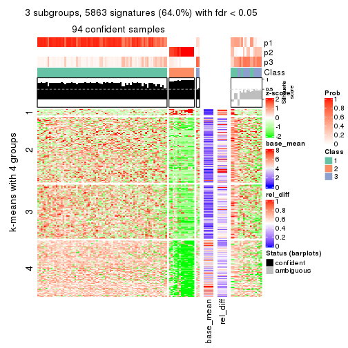
get_signatures(res, k = 4)
get_signatures(res, k = 5)
get_signatures(res, k = 6)
Signature heatmaps where rows are not scaled:
get_signatures(res, k = 2, scale_rows = FALSE)
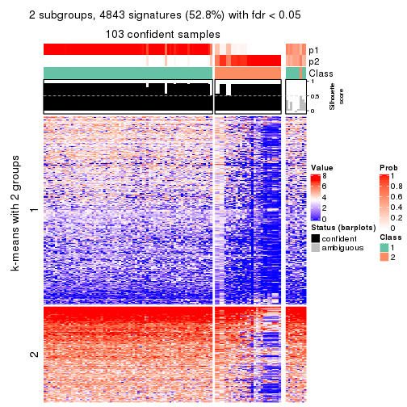
get_signatures(res, k = 3, scale_rows = FALSE)
get_signatures(res, k = 4, scale_rows = FALSE)
get_signatures(res, k = 5, scale_rows = FALSE)
get_signatures(res, k = 6, scale_rows = FALSE)
Compare the overlap of signatures from different k:
compare_signatures(res)
get_signature() returns a data frame invisibly. TO get the list of signatures, the function
call should be assigned to a variable explicitly. In following code, if plot argument is set
to FALSE, no heatmap is plotted while only the differential analysis is performed.
# code only for demonstration
tb = get_signature(res, k = ..., plot = FALSE)
An example of the output of tb is:
#> which_row fdr mean_1 mean_2 scaled_mean_1 scaled_mean_2 km
#> 1 38 0.042760348 8.373488 9.131774 -0.5533452 0.5164555 1
#> 2 40 0.018707592 7.106213 8.469186 -0.6173731 0.5762149 1
#> 3 55 0.019134737 10.221463 11.207825 -0.6159697 0.5749050 1
#> 4 59 0.006059896 5.921854 7.869574 -0.6899429 0.6439467 1
#> 5 60 0.018055526 8.928898 10.211722 -0.6204761 0.5791110 1
#> 6 98 0.009384629 15.714769 14.887706 0.6635654 -0.6193277 2
...
The columns in tb are:
which_row: row indices corresponding to the input matrix.fdr: FDR for the differential test. mean_x: The mean value in group x.scaled_mean_x: The mean value in group x after rows are scaled.km: Row groups if k-means clustering is applied to rows.UMAP plot which shows how samples are separated.
dimension_reduction(res, k = 2, method = "UMAP")
dimension_reduction(res, k = 3, method = "UMAP")
dimension_reduction(res, k = 4, method = "UMAP")
dimension_reduction(res, k = 5, method = "UMAP")
dimension_reduction(res, k = 6, method = "UMAP")
Following heatmap shows how subgroups are split when increasing k:
collect_classes(res)
If matrix rows can be associated to genes, consider to use GO_Enrichment(res,
...) to perform function enrichment for the signature genes.
The object with results only for a single top-value method and a single partition method can be extracted as:
res = res_list["MAD", "NMF"]
# you can also extract it by
# res = res_list["MAD:NMF"]
A summary of res and all the functions that can be applied to it:
res
#> A 'ConsensusPartition' object with k = 2, 3, 4, 5, 6.
#> On a matrix with 9166 rows and 112 columns.
#> Top rows (917, 1834, 2750, 3666, 4583) are extracted by 'MAD' method.
#> Subgroups are detected by 'NMF' method.
#> Performed in total 1250 partitions by row resampling.
#> Best k for subgroups seems to be 2.
#>
#> Following methods can be applied to this 'ConsensusPartition' object:
#> [1] "cola_report" "collect_classes" "collect_plots"
#> [4] "collect_stats" "colnames" "compare_signatures"
#> [7] "consensus_heatmap" "dimension_reduction" "functional_enrichment"
#> [10] "get_anno_col" "get_anno" "get_classes"
#> [13] "get_consensus" "get_matrix" "get_membership"
#> [16] "get_param" "get_signatures" "get_stats"
#> [19] "is_best_k" "is_stable_k" "membership_heatmap"
#> [22] "ncol" "nrow" "plot_ecdf"
#> [25] "rownames" "select_partition_number" "show"
#> [28] "suggest_best_k" "test_to_known_factors"
collect_plots() function collects all the plots made from res for all k (number of partitions)
into one single page to provide an easy and fast comparison between different k.
collect_plots(res)
The plots are:
k and the heatmap of
predicted classes for each k.k.k.k.All the plots in panels can be made by individual functions and they are plotted later in this section.
select_partition_number() produces several plots showing different
statistics for choosing “optimized” k. There are following statistics:
k;k, the area increased is defined as \(A_k - A_{k-1}\).The detailed explanations of these statistics can be found in the cola vignette.
Generally speaking, lower PAC score, higher mean silhouette score or higher
concordance corresponds to better partition. Rand index and Jaccard index
measure how similar the current partition is compared to partition with k-1.
If they are too similar, we won't accept k is better than k-1.
select_partition_number(res)
The numeric values for all these statistics can be obtained by get_stats().
get_stats(res)
#> k 1-PAC mean_silhouette concordance area_increased Rand Jaccard
#> 2 2 1.000 0.991 0.997 0.1250 0.882 0.882
#> 3 3 0.560 0.868 0.916 1.7445 0.795 0.768
#> 4 4 0.705 0.826 0.905 0.2683 0.902 0.856
#> 5 5 0.518 0.753 0.863 0.1405 0.997 0.994
#> 6 6 0.386 0.718 0.820 0.0744 1.000 1.000
suggest_best_k() suggests the best \(k\) based on these statistics. The rules are as follows:
NA.suggest_best_k(res)
#> [1] 2
Following shows the table of the partitions (You need to click the show/hide
code output link to see it). The membership matrix (columns with name p*)
is inferred by
clue::cl_consensus()
function with the SE method. Basically the value in the membership matrix
represents the probability to belong to a certain group. The finall class
label for an item is determined with the group with highest probability it
belongs to.
In get_classes() function, the entropy is calculated from the membership
matrix and the silhouette score is calculated from the consensus matrix.
cbind(get_classes(res, k = 2), get_membership(res, k = 2))
#> class entropy silhouette p1 p2
#> SRR1003755 1 0.000 0.996 1.000 0.000
#> SRR1003756 1 0.000 0.996 1.000 0.000
#> SRR1003757 1 0.000 0.996 1.000 0.000
#> SRR1003758 1 0.000 0.996 1.000 0.000
#> SRR1003759 1 0.000 0.996 1.000 0.000
#> SRR1003760 1 0.000 0.996 1.000 0.000
#> SRR1003761 1 0.000 0.996 1.000 0.000
#> SRR1003762 1 0.000 0.996 1.000 0.000
#> SRR1003763 1 0.000 0.996 1.000 0.000
#> SRR1003764 1 0.000 0.996 1.000 0.000
#> SRR1003765 2 0.000 1.000 0.000 1.000
#> SRR1003766 2 0.000 1.000 0.000 1.000
#> SRR1003767 2 0.000 1.000 0.000 1.000
#> SRR1003768 2 0.000 1.000 0.000 1.000
#> SRR1003769 2 0.000 1.000 0.000 1.000
#> SRR1003770 2 0.000 1.000 0.000 1.000
#> SRR1003771 2 0.000 1.000 0.000 1.000
#> SRR1003773 1 0.000 0.996 1.000 0.000
#> SRR1003772 1 0.000 0.996 1.000 0.000
#> SRR1003774 1 0.000 0.996 1.000 0.000
#> SRR1003775 1 0.000 0.996 1.000 0.000
#> SRR1003776 1 0.000 0.996 1.000 0.000
#> SRR1003777 1 0.000 0.996 1.000 0.000
#> SRR1003778 1 0.000 0.996 1.000 0.000
#> SRR1003779 1 0.000 0.996 1.000 0.000
#> SRR1003780 1 0.000 0.996 1.000 0.000
#> SRR1003781 1 0.000 0.996 1.000 0.000
#> SRR1003784 1 0.000 0.996 1.000 0.000
#> SRR1003785 1 0.000 0.996 1.000 0.000
#> SRR1003786 1 0.000 0.996 1.000 0.000
#> SRR1003783 1 0.000 0.996 1.000 0.000
#> SRR1003787 1 0.000 0.996 1.000 0.000
#> SRR1003788 1 0.000 0.996 1.000 0.000
#> SRR1003789 1 0.000 0.996 1.000 0.000
#> SRR1003790 1 0.000 0.996 1.000 0.000
#> SRR1003791 1 0.000 0.996 1.000 0.000
#> SRR1003792 1 0.000 0.996 1.000 0.000
#> SRR1003793 1 0.000 0.996 1.000 0.000
#> SRR1003794 1 0.000 0.996 1.000 0.000
#> SRR1003795 1 0.000 0.996 1.000 0.000
#> SRR1003796 1 0.000 0.996 1.000 0.000
#> SRR1003797 1 0.000 0.996 1.000 0.000
#> SRR1003798 1 0.000 0.996 1.000 0.000
#> SRR1003799 1 0.000 0.996 1.000 0.000
#> SRR1003800 1 0.000 0.996 1.000 0.000
#> SRR1003801 1 0.000 0.996 1.000 0.000
#> SRR1003802 1 0.000 0.996 1.000 0.000
#> SRR1003803 1 0.000 0.996 1.000 0.000
#> SRR1003804 1 0.000 0.996 1.000 0.000
#> SRR1003805 1 0.000 0.996 1.000 0.000
#> SRR1003806 1 0.000 0.996 1.000 0.000
#> SRR1003807 1 0.000 0.996 1.000 0.000
#> SRR1003809 1 0.000 0.996 1.000 0.000
#> SRR1003808 1 0.000 0.996 1.000 0.000
#> SRR1003810 1 0.000 0.996 1.000 0.000
#> SRR1003811 1 0.000 0.996 1.000 0.000
#> SRR1003812 1 0.000 0.996 1.000 0.000
#> SRR1003813 1 0.000 0.996 1.000 0.000
#> SRR1003814 1 0.000 0.996 1.000 0.000
#> SRR1003815 1 0.000 0.996 1.000 0.000
#> SRR1003816 1 0.000 0.996 1.000 0.000
#> SRR1003817 1 0.000 0.996 1.000 0.000
#> SRR1003818 1 0.000 0.996 1.000 0.000
#> SRR1003819 1 0.000 0.996 1.000 0.000
#> SRR1003820 1 0.000 0.996 1.000 0.000
#> SRR1003821 1 0.000 0.996 1.000 0.000
#> SRR1003822 1 0.000 0.996 1.000 0.000
#> SRR1003824 1 0.000 0.996 1.000 0.000
#> SRR1003823 1 0.000 0.996 1.000 0.000
#> SRR1003825 1 0.000 0.996 1.000 0.000
#> SRR1003826 1 0.000 0.996 1.000 0.000
#> SRR1003827 1 0.000 0.996 1.000 0.000
#> SRR1003828 1 0.000 0.996 1.000 0.000
#> SRR1003829 1 0.000 0.996 1.000 0.000
#> SRR1003830 1 0.000 0.996 1.000 0.000
#> SRR1003831 1 0.000 0.996 1.000 0.000
#> SRR1003832 1 0.000 0.996 1.000 0.000
#> SRR1003833 1 0.000 0.996 1.000 0.000
#> SRR1003834 1 0.000 0.996 1.000 0.000
#> SRR1003836 1 0.000 0.996 1.000 0.000
#> SRR1003835 1 0.000 0.996 1.000 0.000
#> SRR1003838 1 0.000 0.996 1.000 0.000
#> SRR1003837 1 0.000 0.996 1.000 0.000
#> SRR1003839 1 0.000 0.996 1.000 0.000
#> SRR1003840 1 0.000 0.996 1.000 0.000
#> SRR1003841 1 0.955 0.397 0.624 0.376
#> SRR1003842 1 0.000 0.996 1.000 0.000
#> SRR1003844 1 0.000 0.996 1.000 0.000
#> SRR1003845 1 0.000 0.996 1.000 0.000
#> SRR1003846 1 0.000 0.996 1.000 0.000
#> SRR1003847 1 0.000 0.996 1.000 0.000
#> SRR1003848 1 0.000 0.996 1.000 0.000
#> SRR1003849 1 0.000 0.996 1.000 0.000
#> SRR1003850 1 0.000 0.996 1.000 0.000
#> SRR1003851 1 0.000 0.996 1.000 0.000
#> SRR1003852 1 0.000 0.996 1.000 0.000
#> SRR1003853 1 0.000 0.996 1.000 0.000
#> SRR1003854 1 0.000 0.996 1.000 0.000
#> SRR1003843 1 0.000 0.996 1.000 0.000
#> SRR1003855 1 0.000 0.996 1.000 0.000
#> SRR1003856 1 0.000 0.996 1.000 0.000
#> SRR1003857 1 0.000 0.996 1.000 0.000
#> SRR1003858 1 0.000 0.996 1.000 0.000
#> SRR1003859 1 0.000 0.996 1.000 0.000
#> SRR1003860 1 0.000 0.996 1.000 0.000
#> SRR1003861 1 0.000 0.996 1.000 0.000
#> SRR1003862 1 0.000 0.996 1.000 0.000
#> SRR1003863 1 0.000 0.996 1.000 0.000
#> SRR1003864 1 0.000 0.996 1.000 0.000
#> SRR1003865 1 0.000 0.996 1.000 0.000
#> SRR1003866 1 0.000 0.996 1.000 0.000
#> SRR1003867 1 0.000 0.996 1.000 0.000
cbind(get_classes(res, k = 3), get_membership(res, k = 3))
#> class entropy silhouette p1 p2 p3
#> SRR1003755 1 0.4291 0.7851 0.820 0.000 0.180
#> SRR1003756 1 0.4291 0.7851 0.820 0.000 0.180
#> SRR1003757 1 0.3619 0.8334 0.864 0.000 0.136
#> SRR1003758 1 0.3340 0.8512 0.880 0.000 0.120
#> SRR1003759 1 0.3482 0.8183 0.872 0.000 0.128
#> SRR1003760 1 0.4465 0.7621 0.820 0.004 0.176
#> SRR1003761 1 0.3941 0.7890 0.844 0.000 0.156
#> SRR1003762 1 0.4121 0.8353 0.876 0.040 0.084
#> SRR1003763 1 0.5566 0.7726 0.812 0.108 0.080
#> SRR1003764 1 0.3682 0.8294 0.876 0.008 0.116
#> SRR1003765 2 0.0000 0.9887 0.000 1.000 0.000
#> SRR1003766 2 0.1289 0.9871 0.000 0.968 0.032
#> SRR1003767 2 0.0592 0.9866 0.000 0.988 0.012
#> SRR1003768 2 0.1289 0.9871 0.000 0.968 0.032
#> SRR1003769 2 0.1289 0.9871 0.000 0.968 0.032
#> SRR1003770 2 0.0000 0.9887 0.000 1.000 0.000
#> SRR1003771 2 0.0592 0.9866 0.000 0.988 0.012
#> SRR1003773 3 0.4235 0.8689 0.176 0.000 0.824
#> SRR1003772 1 0.0747 0.9225 0.984 0.000 0.016
#> SRR1003774 1 0.1163 0.9200 0.972 0.000 0.028
#> SRR1003775 1 0.0237 0.9225 0.996 0.000 0.004
#> SRR1003776 1 0.1031 0.9228 0.976 0.000 0.024
#> SRR1003777 1 0.0424 0.9234 0.992 0.000 0.008
#> SRR1003778 3 0.4178 0.8674 0.172 0.000 0.828
#> SRR1003779 1 0.0747 0.9231 0.984 0.000 0.016
#> SRR1003780 1 0.5678 0.4570 0.684 0.000 0.316
#> SRR1003781 1 0.1031 0.9165 0.976 0.000 0.024
#> SRR1003784 3 0.4605 0.8606 0.204 0.000 0.796
#> SRR1003785 3 0.4235 0.8689 0.176 0.000 0.824
#> SRR1003786 1 0.1163 0.9144 0.972 0.000 0.028
#> SRR1003783 1 0.0892 0.9182 0.980 0.000 0.020
#> SRR1003787 1 0.0592 0.9209 0.988 0.000 0.012
#> SRR1003788 1 0.2066 0.9017 0.940 0.000 0.060
#> SRR1003789 1 0.5948 0.3779 0.640 0.000 0.360
#> SRR1003790 1 0.0424 0.9216 0.992 0.000 0.008
#> SRR1003791 1 0.0592 0.9213 0.988 0.000 0.012
#> SRR1003792 1 0.1031 0.9166 0.976 0.000 0.024
#> SRR1003793 1 0.0237 0.9224 0.996 0.000 0.004
#> SRR1003794 1 0.1411 0.9176 0.964 0.000 0.036
#> SRR1003795 3 0.4452 0.8634 0.192 0.000 0.808
#> SRR1003796 3 0.4291 0.8718 0.180 0.000 0.820
#> SRR1003797 1 0.0592 0.9209 0.988 0.000 0.012
#> SRR1003798 1 0.3038 0.8683 0.896 0.000 0.104
#> SRR1003799 1 0.1163 0.9179 0.972 0.000 0.028
#> SRR1003800 1 0.3551 0.8391 0.868 0.000 0.132
#> SRR1003801 1 0.2796 0.8869 0.908 0.000 0.092
#> SRR1003802 1 0.6192 0.0479 0.580 0.000 0.420
#> SRR1003803 1 0.0592 0.9219 0.988 0.000 0.012
#> SRR1003804 1 0.3686 0.8317 0.860 0.000 0.140
#> SRR1003805 1 0.0424 0.9233 0.992 0.000 0.008
#> SRR1003806 1 0.1643 0.9135 0.956 0.000 0.044
#> SRR1003807 1 0.2959 0.8748 0.900 0.000 0.100
#> SRR1003809 1 0.4399 0.7624 0.812 0.000 0.188
#> SRR1003808 1 0.1529 0.9108 0.960 0.000 0.040
#> SRR1003810 1 0.3482 0.8496 0.872 0.000 0.128
#> SRR1003811 1 0.4974 0.6845 0.764 0.000 0.236
#> SRR1003812 1 0.0592 0.9221 0.988 0.000 0.012
#> SRR1003813 3 0.4235 0.8709 0.176 0.000 0.824
#> SRR1003814 1 0.1643 0.9079 0.956 0.000 0.044
#> SRR1003815 1 0.2165 0.9043 0.936 0.000 0.064
#> SRR1003816 1 0.0892 0.9210 0.980 0.000 0.020
#> SRR1003817 1 0.0424 0.9230 0.992 0.000 0.008
#> SRR1003818 1 0.0747 0.9219 0.984 0.000 0.016
#> SRR1003819 1 0.1860 0.9175 0.948 0.000 0.052
#> SRR1003820 1 0.0747 0.9200 0.984 0.000 0.016
#> SRR1003821 1 0.0237 0.9221 0.996 0.000 0.004
#> SRR1003822 3 0.5733 0.7350 0.324 0.000 0.676
#> SRR1003824 1 0.4399 0.7622 0.812 0.000 0.188
#> SRR1003823 1 0.0424 0.9219 0.992 0.000 0.008
#> SRR1003825 1 0.2796 0.8817 0.908 0.000 0.092
#> SRR1003826 1 0.0592 0.9210 0.988 0.000 0.012
#> SRR1003827 1 0.1031 0.9165 0.976 0.000 0.024
#> SRR1003828 1 0.1860 0.9067 0.948 0.000 0.052
#> SRR1003829 1 0.0424 0.9216 0.992 0.000 0.008
#> SRR1003830 1 0.0237 0.9224 0.996 0.000 0.004
#> SRR1003831 1 0.1411 0.9212 0.964 0.000 0.036
#> SRR1003832 1 0.1163 0.9199 0.972 0.000 0.028
#> SRR1003833 1 0.0747 0.9234 0.984 0.000 0.016
#> SRR1003834 1 0.4346 0.7683 0.816 0.000 0.184
#> SRR1003836 1 0.2959 0.8704 0.900 0.000 0.100
#> SRR1003835 1 0.0592 0.9228 0.988 0.000 0.012
#> SRR1003838 3 0.4291 0.8718 0.180 0.000 0.820
#> SRR1003837 1 0.1163 0.9217 0.972 0.000 0.028
#> SRR1003839 1 0.0424 0.9229 0.992 0.000 0.008
#> SRR1003840 1 0.1163 0.9156 0.972 0.000 0.028
#> SRR1003841 3 0.8765 0.4369 0.252 0.168 0.580
#> SRR1003842 1 0.0424 0.9234 0.992 0.000 0.008
#> SRR1003844 1 0.1031 0.9192 0.976 0.000 0.024
#> SRR1003845 1 0.0892 0.9222 0.980 0.000 0.020
#> SRR1003846 1 0.0000 0.9220 1.000 0.000 0.000
#> SRR1003847 1 0.0237 0.9221 0.996 0.000 0.004
#> SRR1003848 3 0.5178 0.8153 0.256 0.000 0.744
#> SRR1003849 3 0.4178 0.8675 0.172 0.000 0.828
#> SRR1003850 1 0.3686 0.8342 0.860 0.000 0.140
#> SRR1003851 3 0.4452 0.8698 0.192 0.000 0.808
#> SRR1003852 1 0.1411 0.9095 0.964 0.000 0.036
#> SRR1003853 1 0.0592 0.9206 0.988 0.000 0.012
#> SRR1003854 1 0.0237 0.9221 0.996 0.000 0.004
#> SRR1003843 1 0.1964 0.9059 0.944 0.000 0.056
#> SRR1003855 1 0.2796 0.8839 0.908 0.000 0.092
#> SRR1003856 3 0.6305 0.3325 0.484 0.000 0.516
#> SRR1003857 1 0.1163 0.9209 0.972 0.000 0.028
#> SRR1003858 1 0.1643 0.9166 0.956 0.000 0.044
#> SRR1003859 1 0.0592 0.9227 0.988 0.000 0.012
#> SRR1003860 1 0.0237 0.9225 0.996 0.000 0.004
#> SRR1003861 1 0.1643 0.9105 0.956 0.000 0.044
#> SRR1003862 1 0.0424 0.9216 0.992 0.000 0.008
#> SRR1003863 1 0.3941 0.8090 0.844 0.000 0.156
#> SRR1003864 1 0.0424 0.9215 0.992 0.000 0.008
#> SRR1003865 1 0.0237 0.9221 0.996 0.000 0.004
#> SRR1003866 1 0.0424 0.9223 0.992 0.000 0.008
#> SRR1003867 1 0.0424 0.9231 0.992 0.000 0.008
cbind(get_classes(res, k = 4), get_membership(res, k = 4))
#> class entropy silhouette p1 p2 p3 p4
#> SRR1003755 1 0.6216 0.3790 0.652 0.000 0.240 0.108
#> SRR1003756 1 0.6238 0.3780 0.652 0.000 0.236 0.112
#> SRR1003757 1 0.1284 0.9182 0.964 0.000 0.024 0.012
#> SRR1003758 1 0.1059 0.9209 0.972 0.000 0.016 0.012
#> SRR1003759 4 0.4304 0.7091 0.284 0.000 0.000 0.716
#> SRR1003760 4 0.4671 0.6933 0.220 0.000 0.028 0.752
#> SRR1003761 4 0.4609 0.6967 0.224 0.000 0.024 0.752
#> SRR1003762 1 0.6901 -0.1332 0.568 0.116 0.004 0.312
#> SRR1003763 4 0.7727 0.5928 0.392 0.156 0.012 0.440
#> SRR1003764 4 0.4905 0.6586 0.364 0.000 0.004 0.632
#> SRR1003765 2 0.0000 0.9571 0.000 1.000 0.000 0.000
#> SRR1003766 2 0.2542 0.9514 0.000 0.904 0.012 0.084
#> SRR1003767 2 0.1211 0.9480 0.000 0.960 0.000 0.040
#> SRR1003768 2 0.2542 0.9514 0.000 0.904 0.012 0.084
#> SRR1003769 2 0.2542 0.9514 0.000 0.904 0.012 0.084
#> SRR1003770 2 0.0000 0.9571 0.000 1.000 0.000 0.000
#> SRR1003771 2 0.1389 0.9443 0.000 0.952 0.000 0.048
#> SRR1003773 3 0.0779 0.8094 0.016 0.000 0.980 0.004
#> SRR1003772 1 0.0921 0.9204 0.972 0.000 0.000 0.028
#> SRR1003774 1 0.3908 0.7076 0.784 0.000 0.004 0.212
#> SRR1003775 1 0.0707 0.9204 0.980 0.000 0.000 0.020
#> SRR1003776 1 0.2408 0.8734 0.896 0.000 0.000 0.104
#> SRR1003777 1 0.1211 0.9208 0.960 0.000 0.000 0.040
#> SRR1003778 3 0.1411 0.8115 0.020 0.000 0.960 0.020
#> SRR1003779 1 0.0524 0.9220 0.988 0.000 0.004 0.008
#> SRR1003780 4 0.7719 0.5319 0.284 0.000 0.268 0.448
#> SRR1003781 1 0.1022 0.9228 0.968 0.000 0.000 0.032
#> SRR1003784 3 0.1938 0.8025 0.052 0.000 0.936 0.012
#> SRR1003785 3 0.0895 0.8141 0.020 0.000 0.976 0.004
#> SRR1003786 1 0.1022 0.9212 0.968 0.000 0.000 0.032
#> SRR1003783 1 0.1474 0.9153 0.948 0.000 0.000 0.052
#> SRR1003787 1 0.1389 0.9137 0.952 0.000 0.000 0.048
#> SRR1003788 1 0.0937 0.9238 0.976 0.000 0.012 0.012
#> SRR1003789 4 0.5676 0.4992 0.136 0.000 0.144 0.720
#> SRR1003790 1 0.0469 0.9211 0.988 0.000 0.000 0.012
#> SRR1003791 1 0.1557 0.9077 0.944 0.000 0.000 0.056
#> SRR1003792 1 0.1389 0.9188 0.952 0.000 0.000 0.048
#> SRR1003793 1 0.0817 0.9186 0.976 0.000 0.000 0.024
#> SRR1003794 1 0.0921 0.9187 0.972 0.000 0.000 0.028
#> SRR1003795 3 0.5332 0.6170 0.124 0.000 0.748 0.128
#> SRR1003796 3 0.1042 0.8140 0.020 0.000 0.972 0.008
#> SRR1003797 1 0.1211 0.9186 0.960 0.000 0.000 0.040
#> SRR1003798 1 0.1767 0.9070 0.944 0.000 0.012 0.044
#> SRR1003799 1 0.0469 0.9202 0.988 0.000 0.000 0.012
#> SRR1003800 1 0.1677 0.9071 0.948 0.000 0.012 0.040
#> SRR1003801 1 0.3858 0.8063 0.844 0.000 0.056 0.100
#> SRR1003802 1 0.5920 0.2090 0.612 0.000 0.336 0.052
#> SRR1003803 1 0.0921 0.9178 0.972 0.000 0.000 0.028
#> SRR1003804 1 0.2124 0.8909 0.924 0.000 0.068 0.008
#> SRR1003805 1 0.0921 0.9212 0.972 0.000 0.000 0.028
#> SRR1003806 1 0.0921 0.9180 0.972 0.000 0.000 0.028
#> SRR1003807 1 0.1929 0.9037 0.940 0.000 0.036 0.024
#> SRR1003809 1 0.4088 0.6233 0.764 0.000 0.232 0.004
#> SRR1003808 1 0.2345 0.8738 0.900 0.000 0.000 0.100
#> SRR1003810 1 0.1256 0.9203 0.964 0.000 0.028 0.008
#> SRR1003811 1 0.5355 0.2453 0.620 0.000 0.360 0.020
#> SRR1003812 1 0.1743 0.9106 0.940 0.000 0.004 0.056
#> SRR1003813 3 0.1411 0.8104 0.020 0.000 0.960 0.020
#> SRR1003814 1 0.1716 0.9090 0.936 0.000 0.000 0.064
#> SRR1003815 1 0.1635 0.9202 0.948 0.000 0.008 0.044
#> SRR1003816 1 0.1302 0.9179 0.956 0.000 0.000 0.044
#> SRR1003817 1 0.0817 0.9209 0.976 0.000 0.000 0.024
#> SRR1003818 1 0.1637 0.9090 0.940 0.000 0.000 0.060
#> SRR1003819 1 0.3142 0.8281 0.860 0.000 0.008 0.132
#> SRR1003820 1 0.1211 0.9170 0.960 0.000 0.000 0.040
#> SRR1003821 1 0.0469 0.9210 0.988 0.000 0.000 0.012
#> SRR1003822 3 0.4452 0.3674 0.260 0.000 0.732 0.008
#> SRR1003824 1 0.3501 0.7834 0.848 0.000 0.132 0.020
#> SRR1003823 1 0.0707 0.9190 0.980 0.000 0.000 0.020
#> SRR1003825 1 0.1936 0.9098 0.940 0.000 0.028 0.032
#> SRR1003826 1 0.0469 0.9212 0.988 0.000 0.000 0.012
#> SRR1003827 1 0.2011 0.8954 0.920 0.000 0.000 0.080
#> SRR1003828 1 0.1302 0.9175 0.956 0.000 0.000 0.044
#> SRR1003829 1 0.0707 0.9225 0.980 0.000 0.000 0.020
#> SRR1003830 1 0.0592 0.9205 0.984 0.000 0.000 0.016
#> SRR1003831 1 0.1902 0.9046 0.932 0.000 0.004 0.064
#> SRR1003832 1 0.0188 0.9208 0.996 0.000 0.000 0.004
#> SRR1003833 1 0.1022 0.9237 0.968 0.000 0.000 0.032
#> SRR1003834 1 0.1807 0.9028 0.940 0.000 0.052 0.008
#> SRR1003836 1 0.1610 0.9189 0.952 0.000 0.016 0.032
#> SRR1003835 1 0.0817 0.9217 0.976 0.000 0.000 0.024
#> SRR1003838 3 0.1109 0.8147 0.028 0.000 0.968 0.004
#> SRR1003837 1 0.0376 0.9227 0.992 0.000 0.004 0.004
#> SRR1003839 1 0.1576 0.9131 0.948 0.000 0.004 0.048
#> SRR1003840 1 0.2216 0.8880 0.908 0.000 0.000 0.092
#> SRR1003841 4 0.9220 0.0717 0.160 0.116 0.348 0.376
#> SRR1003842 1 0.0817 0.9210 0.976 0.000 0.000 0.024
#> SRR1003844 1 0.0336 0.9207 0.992 0.000 0.000 0.008
#> SRR1003845 1 0.1792 0.9050 0.932 0.000 0.000 0.068
#> SRR1003846 1 0.0707 0.9192 0.980 0.000 0.000 0.020
#> SRR1003847 1 0.1389 0.9189 0.952 0.000 0.000 0.048
#> SRR1003848 3 0.3271 0.6824 0.132 0.000 0.856 0.012
#> SRR1003849 3 0.1042 0.8141 0.020 0.000 0.972 0.008
#> SRR1003850 1 0.2759 0.8657 0.904 0.000 0.052 0.044
#> SRR1003851 3 0.1824 0.7973 0.060 0.000 0.936 0.004
#> SRR1003852 1 0.1118 0.9220 0.964 0.000 0.000 0.036
#> SRR1003853 1 0.0921 0.9230 0.972 0.000 0.000 0.028
#> SRR1003854 1 0.0707 0.9223 0.980 0.000 0.000 0.020
#> SRR1003843 1 0.2197 0.8800 0.916 0.000 0.004 0.080
#> SRR1003855 1 0.1767 0.9176 0.944 0.000 0.012 0.044
#> SRR1003856 3 0.5060 -0.0317 0.412 0.000 0.584 0.004
#> SRR1003857 1 0.0817 0.9243 0.976 0.000 0.000 0.024
#> SRR1003858 1 0.1004 0.9233 0.972 0.000 0.004 0.024
#> SRR1003859 1 0.1022 0.9154 0.968 0.000 0.000 0.032
#> SRR1003860 1 0.0707 0.9222 0.980 0.000 0.000 0.020
#> SRR1003861 1 0.1182 0.9227 0.968 0.000 0.016 0.016
#> SRR1003862 1 0.0707 0.9222 0.980 0.000 0.000 0.020
#> SRR1003863 1 0.1474 0.9040 0.948 0.000 0.052 0.000
#> SRR1003864 1 0.1211 0.9199 0.960 0.000 0.000 0.040
#> SRR1003865 1 0.0921 0.9236 0.972 0.000 0.000 0.028
#> SRR1003866 1 0.0657 0.9226 0.984 0.000 0.004 0.012
#> SRR1003867 1 0.0592 0.9234 0.984 0.000 0.000 0.016
cbind(get_classes(res, k = 5), get_membership(res, k = 5))
#> class entropy silhouette p1 p2 p3 p4 p5
#> SRR1003755 1 0.6878 -0.03107 0.460 0.000 0.392 0.060 0.088
#> SRR1003756 1 0.6836 -0.01614 0.464 0.000 0.392 0.060 0.084
#> SRR1003757 1 0.1216 0.89102 0.960 0.000 0.020 0.020 0.000
#> SRR1003758 1 0.1082 0.89135 0.964 0.000 0.008 0.028 0.000
#> SRR1003759 5 0.2597 0.48817 0.092 0.000 0.000 0.024 0.884
#> SRR1003760 5 0.1830 0.46099 0.068 0.000 0.000 0.008 0.924
#> SRR1003761 5 0.1608 0.47291 0.072 0.000 0.000 0.000 0.928
#> SRR1003762 1 0.7183 -0.14092 0.492 0.108 0.000 0.080 0.320
#> SRR1003763 5 0.8002 0.27945 0.320 0.124 0.020 0.096 0.440
#> SRR1003764 5 0.6025 0.30719 0.336 0.004 0.000 0.116 0.544
#> SRR1003765 2 0.0000 0.93326 0.000 1.000 0.000 0.000 0.000
#> SRR1003766 2 0.2450 0.92482 0.000 0.896 0.000 0.076 0.028
#> SRR1003767 2 0.1750 0.91443 0.000 0.936 0.000 0.036 0.028
#> SRR1003768 2 0.2450 0.92482 0.000 0.896 0.000 0.076 0.028
#> SRR1003769 2 0.2450 0.92482 0.000 0.896 0.000 0.076 0.028
#> SRR1003770 2 0.0162 0.93269 0.000 0.996 0.000 0.004 0.000
#> SRR1003771 2 0.1836 0.91217 0.000 0.932 0.000 0.036 0.032
#> SRR1003773 3 0.1386 0.69798 0.000 0.000 0.952 0.032 0.016
#> SRR1003772 1 0.1740 0.88332 0.932 0.000 0.000 0.056 0.012
#> SRR1003774 1 0.4767 0.69776 0.724 0.000 0.004 0.072 0.200
#> SRR1003775 1 0.1043 0.88794 0.960 0.000 0.000 0.040 0.000
#> SRR1003776 1 0.4032 0.80389 0.800 0.000 0.004 0.072 0.124
#> SRR1003777 1 0.2208 0.88331 0.908 0.000 0.000 0.072 0.020
#> SRR1003778 3 0.2300 0.66809 0.000 0.000 0.904 0.072 0.024
#> SRR1003779 1 0.2110 0.88768 0.912 0.000 0.000 0.072 0.016
#> SRR1003780 5 0.7635 0.04269 0.112 0.000 0.172 0.220 0.496
#> SRR1003781 1 0.1331 0.89081 0.952 0.000 0.000 0.040 0.008
#> SRR1003784 3 0.1780 0.69662 0.024 0.000 0.940 0.028 0.008
#> SRR1003785 3 0.1668 0.69485 0.000 0.000 0.940 0.032 0.028
#> SRR1003786 1 0.1300 0.88784 0.956 0.000 0.000 0.028 0.016
#> SRR1003783 1 0.2149 0.88181 0.916 0.000 0.000 0.048 0.036
#> SRR1003787 1 0.2221 0.88256 0.912 0.000 0.000 0.052 0.036
#> SRR1003788 1 0.1704 0.89235 0.928 0.000 0.000 0.068 0.004
#> SRR1003789 5 0.5738 0.29275 0.060 0.000 0.048 0.228 0.664
#> SRR1003790 1 0.1041 0.88892 0.964 0.000 0.000 0.032 0.004
#> SRR1003791 1 0.3124 0.83455 0.844 0.000 0.004 0.136 0.016
#> SRR1003792 1 0.1444 0.89075 0.948 0.000 0.000 0.040 0.012
#> SRR1003793 1 0.1357 0.88340 0.948 0.000 0.000 0.048 0.004
#> SRR1003794 1 0.1557 0.88767 0.940 0.000 0.000 0.052 0.008
#> SRR1003795 4 0.6416 0.25747 0.136 0.000 0.388 0.468 0.008
#> SRR1003796 3 0.1662 0.68568 0.004 0.000 0.936 0.056 0.004
#> SRR1003797 1 0.1251 0.88903 0.956 0.000 0.000 0.036 0.008
#> SRR1003798 1 0.2568 0.86497 0.888 0.000 0.016 0.092 0.004
#> SRR1003799 1 0.1116 0.88856 0.964 0.000 0.004 0.028 0.004
#> SRR1003800 1 0.2037 0.87620 0.920 0.000 0.012 0.064 0.004
#> SRR1003801 1 0.4844 0.75754 0.772 0.000 0.076 0.052 0.100
#> SRR1003802 1 0.5912 0.16867 0.536 0.000 0.348 0.116 0.000
#> SRR1003803 1 0.1357 0.88470 0.948 0.000 0.000 0.048 0.004
#> SRR1003804 1 0.2659 0.87142 0.888 0.000 0.060 0.052 0.000
#> SRR1003805 1 0.1484 0.89023 0.944 0.000 0.000 0.048 0.008
#> SRR1003806 1 0.1443 0.88531 0.948 0.000 0.004 0.044 0.004
#> SRR1003807 1 0.3192 0.83556 0.848 0.000 0.040 0.112 0.000
#> SRR1003809 1 0.4546 0.53189 0.668 0.000 0.304 0.028 0.000
#> SRR1003808 1 0.3397 0.84629 0.848 0.000 0.004 0.080 0.068
#> SRR1003810 1 0.3134 0.87445 0.864 0.000 0.028 0.096 0.012
#> SRR1003811 1 0.5809 0.08275 0.484 0.000 0.448 0.048 0.020
#> SRR1003812 1 0.3030 0.86394 0.868 0.000 0.004 0.088 0.040
#> SRR1003813 3 0.1990 0.69827 0.004 0.000 0.928 0.040 0.028
#> SRR1003814 1 0.2903 0.85978 0.872 0.000 0.000 0.080 0.048
#> SRR1003815 1 0.2879 0.87371 0.880 0.000 0.008 0.080 0.032
#> SRR1003816 1 0.2570 0.87420 0.888 0.000 0.000 0.084 0.028
#> SRR1003817 1 0.2104 0.88075 0.916 0.000 0.000 0.060 0.024
#> SRR1003818 1 0.2535 0.87352 0.892 0.000 0.000 0.076 0.032
#> SRR1003819 1 0.4795 0.75284 0.752 0.000 0.012 0.120 0.116
#> SRR1003820 1 0.2171 0.88391 0.912 0.000 0.000 0.064 0.024
#> SRR1003821 1 0.1331 0.88974 0.952 0.000 0.000 0.040 0.008
#> SRR1003822 3 0.3696 0.27488 0.212 0.000 0.772 0.016 0.000
#> SRR1003824 1 0.4019 0.76483 0.792 0.000 0.152 0.052 0.004
#> SRR1003823 1 0.1270 0.88051 0.948 0.000 0.000 0.052 0.000
#> SRR1003825 1 0.3575 0.84222 0.848 0.000 0.056 0.076 0.020
#> SRR1003826 1 0.1205 0.89026 0.956 0.000 0.000 0.040 0.004
#> SRR1003827 1 0.2228 0.88508 0.912 0.000 0.000 0.048 0.040
#> SRR1003828 1 0.1956 0.87485 0.916 0.000 0.000 0.076 0.008
#> SRR1003829 1 0.1124 0.88887 0.960 0.000 0.000 0.036 0.004
#> SRR1003830 1 0.1544 0.87933 0.932 0.000 0.000 0.068 0.000
#> SRR1003831 1 0.2300 0.88226 0.904 0.000 0.000 0.072 0.024
#> SRR1003832 1 0.0955 0.88615 0.968 0.000 0.000 0.028 0.004
#> SRR1003833 1 0.1877 0.88800 0.924 0.000 0.000 0.064 0.012
#> SRR1003834 1 0.2757 0.88090 0.888 0.000 0.032 0.072 0.008
#> SRR1003836 1 0.2568 0.86530 0.888 0.000 0.016 0.092 0.004
#> SRR1003835 1 0.1502 0.88832 0.940 0.000 0.000 0.056 0.004
#> SRR1003838 3 0.2275 0.67917 0.012 0.000 0.912 0.064 0.012
#> SRR1003837 1 0.1924 0.88931 0.924 0.000 0.004 0.064 0.008
#> SRR1003839 1 0.3533 0.85153 0.836 0.000 0.004 0.104 0.056
#> SRR1003840 1 0.4649 0.69587 0.716 0.000 0.000 0.220 0.064
#> SRR1003841 4 0.8541 0.24147 0.068 0.060 0.192 0.436 0.244
#> SRR1003842 1 0.1502 0.88402 0.940 0.000 0.000 0.056 0.004
#> SRR1003844 1 0.0794 0.88882 0.972 0.000 0.000 0.028 0.000
#> SRR1003845 1 0.4055 0.81524 0.800 0.000 0.012 0.140 0.048
#> SRR1003846 1 0.1168 0.88737 0.960 0.000 0.000 0.032 0.008
#> SRR1003847 1 0.1216 0.89040 0.960 0.000 0.000 0.020 0.020
#> SRR1003848 3 0.2825 0.49185 0.124 0.000 0.860 0.016 0.000
#> SRR1003849 3 0.1485 0.69378 0.000 0.000 0.948 0.032 0.020
#> SRR1003850 1 0.4447 0.73711 0.768 0.000 0.092 0.136 0.004
#> SRR1003851 3 0.2426 0.62213 0.064 0.000 0.900 0.036 0.000
#> SRR1003852 1 0.1626 0.89223 0.940 0.000 0.000 0.044 0.016
#> SRR1003853 1 0.1444 0.89229 0.948 0.000 0.000 0.040 0.012
#> SRR1003854 1 0.1830 0.88948 0.924 0.000 0.000 0.068 0.008
#> SRR1003843 1 0.3828 0.72410 0.764 0.000 0.008 0.220 0.008
#> SRR1003855 1 0.3328 0.86299 0.860 0.000 0.020 0.084 0.036
#> SRR1003856 3 0.5126 0.00627 0.364 0.000 0.596 0.032 0.008
#> SRR1003857 1 0.2053 0.89060 0.924 0.000 0.004 0.048 0.024
#> SRR1003858 1 0.1569 0.89220 0.944 0.000 0.008 0.044 0.004
#> SRR1003859 1 0.1484 0.88204 0.944 0.000 0.000 0.048 0.008
#> SRR1003860 1 0.0671 0.88681 0.980 0.000 0.000 0.016 0.004
#> SRR1003861 1 0.2550 0.88276 0.892 0.000 0.004 0.084 0.020
#> SRR1003862 1 0.0898 0.88945 0.972 0.000 0.000 0.020 0.008
#> SRR1003863 1 0.2650 0.87400 0.892 0.000 0.068 0.036 0.004
#> SRR1003864 1 0.1502 0.88859 0.940 0.000 0.000 0.056 0.004
#> SRR1003865 1 0.2012 0.89314 0.920 0.000 0.000 0.060 0.020
#> SRR1003866 1 0.1282 0.88819 0.952 0.000 0.000 0.044 0.004
#> SRR1003867 1 0.1357 0.89139 0.948 0.000 0.000 0.048 0.004
cbind(get_classes(res, k = 6), get_membership(res, k = 6))
#> class entropy silhouette p1 p2 p3 p4 p5 p6
#> SRR1003755 1 0.6693 0.0254 0.448 0.000 0.340 NA 0.000 0.088
#> SRR1003756 1 0.6658 -0.0137 0.432 0.000 0.364 NA 0.000 0.084
#> SRR1003757 1 0.1720 0.8675 0.928 0.000 0.032 NA 0.000 0.000
#> SRR1003758 1 0.1745 0.8672 0.924 0.000 0.020 NA 0.000 0.000
#> SRR1003759 6 0.1461 0.3179 0.044 0.000 0.000 NA 0.000 0.940
#> SRR1003760 6 0.0912 0.2854 0.008 0.000 0.004 NA 0.012 0.972
#> SRR1003761 6 0.0405 0.2917 0.008 0.000 0.000 NA 0.004 0.988
#> SRR1003762 1 0.7171 -0.2701 0.428 0.076 0.000 NA 0.012 0.300
#> SRR1003763 6 0.7887 0.2264 0.308 0.088 0.020 NA 0.016 0.364
#> SRR1003764 6 0.6205 0.2209 0.368 0.000 0.004 NA 0.008 0.424
#> SRR1003765 2 0.0260 0.8460 0.000 0.992 0.000 NA 0.008 0.000
#> SRR1003766 2 0.3686 0.8240 0.000 0.788 0.000 NA 0.124 0.000
#> SRR1003767 2 0.2964 0.7985 0.000 0.868 0.000 NA 0.036 0.036
#> SRR1003768 2 0.3686 0.8240 0.000 0.788 0.000 NA 0.124 0.000
#> SRR1003769 2 0.3686 0.8240 0.000 0.788 0.000 NA 0.124 0.000
#> SRR1003770 2 0.0260 0.8460 0.000 0.992 0.000 NA 0.008 0.000
#> SRR1003771 2 0.2964 0.7985 0.000 0.868 0.000 NA 0.036 0.036
#> SRR1003773 3 0.1750 0.6748 0.000 0.000 0.932 NA 0.040 0.012
#> SRR1003772 1 0.1728 0.8577 0.924 0.000 0.004 NA 0.000 0.008
#> SRR1003774 1 0.4591 0.6564 0.688 0.000 0.004 NA 0.000 0.224
#> SRR1003775 1 0.1444 0.8636 0.928 0.000 0.000 NA 0.000 0.000
#> SRR1003776 1 0.3847 0.7925 0.792 0.000 0.004 NA 0.004 0.100
#> SRR1003777 1 0.2424 0.8636 0.892 0.000 0.008 NA 0.008 0.012
#> SRR1003778 3 0.4102 0.6000 0.012 0.000 0.788 NA 0.112 0.012
#> SRR1003779 1 0.2317 0.8615 0.892 0.000 0.008 NA 0.004 0.008
#> SRR1003780 6 0.7823 -0.0204 0.100 0.000 0.064 NA 0.184 0.448
#> SRR1003781 1 0.1082 0.8615 0.956 0.000 0.000 NA 0.000 0.004
#> SRR1003784 3 0.2317 0.6741 0.064 0.000 0.900 NA 0.020 0.000
#> SRR1003785 3 0.1861 0.6708 0.000 0.000 0.928 NA 0.036 0.016
#> SRR1003786 1 0.1594 0.8645 0.932 0.000 0.000 NA 0.000 0.016
#> SRR1003783 1 0.1434 0.8596 0.940 0.000 0.000 NA 0.000 0.012
#> SRR1003787 1 0.1643 0.8607 0.924 0.000 0.000 NA 0.000 0.008
#> SRR1003788 1 0.2773 0.8586 0.872 0.000 0.016 NA 0.012 0.008
#> SRR1003789 6 0.6850 0.0479 0.028 0.000 0.040 NA 0.156 0.488
#> SRR1003790 1 0.1588 0.8648 0.924 0.000 0.000 NA 0.004 0.000
#> SRR1003791 1 0.4527 0.7330 0.696 0.000 0.008 NA 0.044 0.008
#> SRR1003792 1 0.1693 0.8639 0.932 0.000 0.000 NA 0.004 0.020
#> SRR1003793 1 0.1588 0.8624 0.924 0.000 0.000 NA 0.004 0.000
#> SRR1003794 1 0.2009 0.8656 0.908 0.000 0.000 NA 0.024 0.000
#> SRR1003795 5 0.7150 0.3920 0.076 0.000 0.184 NA 0.380 0.008
#> SRR1003796 3 0.2948 0.6290 0.000 0.000 0.848 NA 0.092 0.000
#> SRR1003797 1 0.1477 0.8651 0.940 0.000 0.000 NA 0.004 0.008
#> SRR1003798 1 0.2500 0.8501 0.868 0.000 0.012 NA 0.004 0.000
#> SRR1003799 1 0.2051 0.8657 0.896 0.000 0.000 NA 0.004 0.004
#> SRR1003800 1 0.3068 0.8425 0.840 0.000 0.020 NA 0.016 0.000
#> SRR1003801 1 0.5233 0.7308 0.716 0.000 0.120 NA 0.012 0.068
#> SRR1003802 1 0.6186 0.1153 0.472 0.000 0.372 NA 0.048 0.000
#> SRR1003803 1 0.2070 0.8614 0.896 0.000 0.000 NA 0.012 0.000
#> SRR1003804 1 0.2696 0.8562 0.872 0.000 0.076 NA 0.000 0.004
#> SRR1003805 1 0.2455 0.8618 0.872 0.000 0.000 NA 0.012 0.004
#> SRR1003806 1 0.2196 0.8587 0.884 0.000 0.004 NA 0.000 0.004
#> SRR1003807 1 0.4832 0.7469 0.728 0.000 0.056 NA 0.056 0.004
#> SRR1003809 1 0.5031 0.5006 0.600 0.000 0.332 NA 0.004 0.012
#> SRR1003808 1 0.3553 0.8243 0.808 0.000 0.004 NA 0.012 0.032
#> SRR1003810 1 0.3352 0.8439 0.840 0.000 0.060 NA 0.008 0.008
#> SRR1003811 1 0.5274 0.1132 0.484 0.000 0.448 NA 0.004 0.016
#> SRR1003812 1 0.2487 0.8484 0.888 0.000 0.004 NA 0.004 0.028
#> SRR1003813 3 0.2415 0.6726 0.004 0.000 0.904 NA 0.032 0.024
#> SRR1003814 1 0.3140 0.8251 0.848 0.000 0.008 NA 0.008 0.032
#> SRR1003815 1 0.2315 0.8562 0.892 0.000 0.008 NA 0.000 0.016
#> SRR1003816 1 0.2364 0.8504 0.892 0.000 0.004 NA 0.000 0.032
#> SRR1003817 1 0.1867 0.8575 0.916 0.000 0.000 NA 0.000 0.020
#> SRR1003818 1 0.2425 0.8571 0.884 0.000 0.004 NA 0.000 0.024
#> SRR1003819 1 0.4606 0.7405 0.736 0.000 0.024 NA 0.008 0.060
#> SRR1003820 1 0.1410 0.8630 0.944 0.000 0.000 NA 0.004 0.008
#> SRR1003821 1 0.1152 0.8625 0.952 0.000 0.000 NA 0.000 0.004
#> SRR1003822 3 0.4464 0.4088 0.228 0.000 0.708 NA 0.024 0.000
#> SRR1003824 1 0.4697 0.7118 0.708 0.000 0.184 NA 0.004 0.008
#> SRR1003823 1 0.2872 0.8434 0.832 0.000 0.000 NA 0.012 0.004
#> SRR1003825 1 0.4109 0.8237 0.796 0.000 0.052 NA 0.016 0.024
#> SRR1003826 1 0.1732 0.8649 0.920 0.000 0.000 NA 0.004 0.004
#> SRR1003827 1 0.1644 0.8647 0.932 0.000 0.000 NA 0.000 0.040
#> SRR1003828 1 0.3483 0.8228 0.804 0.000 0.008 NA 0.020 0.008
#> SRR1003829 1 0.1075 0.8629 0.952 0.000 0.000 NA 0.000 0.000
#> SRR1003830 1 0.2573 0.8542 0.856 0.000 0.000 NA 0.008 0.004
#> SRR1003831 1 0.2306 0.8621 0.888 0.000 0.008 NA 0.004 0.004
#> SRR1003832 1 0.2001 0.8601 0.900 0.000 0.000 NA 0.004 0.004
#> SRR1003833 1 0.2451 0.8630 0.892 0.000 0.004 NA 0.016 0.012
#> SRR1003834 1 0.3243 0.8516 0.844 0.000 0.048 NA 0.020 0.000
#> SRR1003836 1 0.3593 0.8283 0.784 0.000 0.028 NA 0.004 0.004
#> SRR1003835 1 0.2462 0.8504 0.860 0.000 0.000 NA 0.004 0.004
#> SRR1003838 3 0.3674 0.6171 0.012 0.000 0.820 NA 0.076 0.008
#> SRR1003837 1 0.2044 0.8645 0.908 0.000 0.004 NA 0.004 0.008
#> SRR1003839 1 0.4198 0.8110 0.780 0.000 0.008 NA 0.036 0.040
#> SRR1003840 1 0.5993 0.5103 0.604 0.000 0.004 NA 0.112 0.060
#> SRR1003841 5 0.5834 0.3457 0.004 0.028 0.120 NA 0.640 0.192
#> SRR1003842 1 0.2333 0.8529 0.872 0.000 0.000 NA 0.004 0.004
#> SRR1003844 1 0.1333 0.8666 0.944 0.000 0.000 NA 0.008 0.000
#> SRR1003845 1 0.5288 0.6852 0.672 0.000 0.016 NA 0.024 0.076
#> SRR1003846 1 0.1584 0.8631 0.928 0.000 0.000 NA 0.008 0.000
#> SRR1003847 1 0.2705 0.8668 0.876 0.000 0.004 NA 0.004 0.040
#> SRR1003848 3 0.3316 0.5490 0.152 0.000 0.812 NA 0.028 0.000
#> SRR1003849 3 0.2321 0.6687 0.004 0.000 0.904 NA 0.052 0.008
#> SRR1003850 1 0.4405 0.7433 0.732 0.000 0.080 NA 0.012 0.000
#> SRR1003851 3 0.4099 0.6028 0.060 0.000 0.788 NA 0.044 0.000
#> SRR1003852 1 0.2454 0.8688 0.884 0.000 0.000 NA 0.008 0.020
#> SRR1003853 1 0.2162 0.8704 0.896 0.000 0.000 NA 0.004 0.012
#> SRR1003854 1 0.1921 0.8668 0.920 0.000 0.000 NA 0.012 0.012
#> SRR1003843 1 0.5168 0.6352 0.640 0.000 0.008 NA 0.104 0.004
#> SRR1003855 1 0.3699 0.8373 0.824 0.000 0.020 NA 0.024 0.028
#> SRR1003856 3 0.4704 0.2630 0.300 0.000 0.628 NA 0.000 0.000
#> SRR1003857 1 0.2920 0.8626 0.864 0.000 0.008 NA 0.008 0.028
#> SRR1003858 1 0.1285 0.8609 0.944 0.000 0.000 NA 0.004 0.000
#> SRR1003859 1 0.2278 0.8521 0.868 0.000 0.000 NA 0.004 0.000
#> SRR1003860 1 0.1531 0.8642 0.928 0.000 0.000 NA 0.004 0.000
#> SRR1003861 1 0.3011 0.8506 0.852 0.000 0.016 NA 0.008 0.012
#> SRR1003862 1 0.1493 0.8636 0.936 0.000 0.000 NA 0.004 0.004
#> SRR1003863 1 0.2937 0.8450 0.852 0.000 0.100 NA 0.004 0.000
#> SRR1003864 1 0.1010 0.8625 0.960 0.000 0.000 NA 0.004 0.000
#> SRR1003865 1 0.2837 0.8611 0.840 0.000 0.004 NA 0.008 0.004
#> SRR1003866 1 0.1787 0.8655 0.920 0.000 0.004 NA 0.008 0.000
#> SRR1003867 1 0.1858 0.8654 0.904 0.000 0.000 NA 0.000 0.004
Heatmaps for the consensus matrix. It visualizes the probability of two samples to be in a same group.
consensus_heatmap(res, k = 2)
consensus_heatmap(res, k = 3)
consensus_heatmap(res, k = 4)
consensus_heatmap(res, k = 5)
consensus_heatmap(res, k = 6)
Heatmaps for the membership of samples in all partitions to see how consistent they are:
membership_heatmap(res, k = 2)
membership_heatmap(res, k = 3)
membership_heatmap(res, k = 4)
membership_heatmap(res, k = 5)
membership_heatmap(res, k = 6)
As soon as we have had the classes for columns, we can look for signatures which are significantly different between classes which can be candidate marks for certain classes. Following are the heatmaps for signatures.
Signature heatmaps where rows are scaled:
get_signatures(res, k = 2)
get_signatures(res, k = 3)
get_signatures(res, k = 4)
get_signatures(res, k = 5)

get_signatures(res, k = 6)
Signature heatmaps where rows are not scaled:
get_signatures(res, k = 2, scale_rows = FALSE)
get_signatures(res, k = 3, scale_rows = FALSE)
get_signatures(res, k = 4, scale_rows = FALSE)
get_signatures(res, k = 5, scale_rows = FALSE)
get_signatures(res, k = 6, scale_rows = FALSE)
Compare the overlap of signatures from different k:
compare_signatures(res)
get_signature() returns a data frame invisibly. TO get the list of signatures, the function
call should be assigned to a variable explicitly. In following code, if plot argument is set
to FALSE, no heatmap is plotted while only the differential analysis is performed.
# code only for demonstration
tb = get_signature(res, k = ..., plot = FALSE)
An example of the output of tb is:
#> which_row fdr mean_1 mean_2 scaled_mean_1 scaled_mean_2 km
#> 1 38 0.042760348 8.373488 9.131774 -0.5533452 0.5164555 1
#> 2 40 0.018707592 7.106213 8.469186 -0.6173731 0.5762149 1
#> 3 55 0.019134737 10.221463 11.207825 -0.6159697 0.5749050 1
#> 4 59 0.006059896 5.921854 7.869574 -0.6899429 0.6439467 1
#> 5 60 0.018055526 8.928898 10.211722 -0.6204761 0.5791110 1
#> 6 98 0.009384629 15.714769 14.887706 0.6635654 -0.6193277 2
...
The columns in tb are:
which_row: row indices corresponding to the input matrix.fdr: FDR for the differential test. mean_x: The mean value in group x.scaled_mean_x: The mean value in group x after rows are scaled.km: Row groups if k-means clustering is applied to rows.UMAP plot which shows how samples are separated.
dimension_reduction(res, k = 2, method = "UMAP")
dimension_reduction(res, k = 3, method = "UMAP")
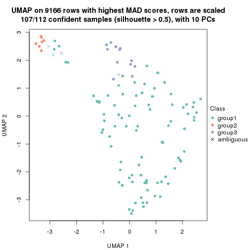
dimension_reduction(res, k = 4, method = "UMAP")
dimension_reduction(res, k = 5, method = "UMAP")
dimension_reduction(res, k = 6, method = "UMAP")
Following heatmap shows how subgroups are split when increasing k:
collect_classes(res)
If matrix rows can be associated to genes, consider to use GO_Enrichment(res,
...) to perform function enrichment for the signature genes.
The object with results only for a single top-value method and a single partition method can be extracted as:
res = res_list["ATC", "hclust"]
# you can also extract it by
# res = res_list["ATC:hclust"]
A summary of res and all the functions that can be applied to it:
res
#> A 'ConsensusPartition' object with k = 2, 3, 4, 5, 6.
#> On a matrix with 9166 rows and 112 columns.
#> Top rows (917, 1834, 2750, 3666, 4583) are extracted by 'ATC' method.
#> Subgroups are detected by 'hclust' method.
#> Performed in total 1250 partitions by row resampling.
#> Best k for subgroups seems to be 5.
#>
#> Following methods can be applied to this 'ConsensusPartition' object:
#> [1] "cola_report" "collect_classes" "collect_plots"
#> [4] "collect_stats" "colnames" "compare_signatures"
#> [7] "consensus_heatmap" "dimension_reduction" "functional_enrichment"
#> [10] "get_anno_col" "get_anno" "get_classes"
#> [13] "get_consensus" "get_matrix" "get_membership"
#> [16] "get_param" "get_signatures" "get_stats"
#> [19] "is_best_k" "is_stable_k" "membership_heatmap"
#> [22] "ncol" "nrow" "plot_ecdf"
#> [25] "rownames" "select_partition_number" "show"
#> [28] "suggest_best_k" "test_to_known_factors"
collect_plots() function collects all the plots made from res for all k (number of partitions)
into one single page to provide an easy and fast comparison between different k.
collect_plots(res)
The plots are:
k and the heatmap of
predicted classes for each k.k.k.k.All the plots in panels can be made by individual functions and they are plotted later in this section.
select_partition_number() produces several plots showing different
statistics for choosing “optimized” k. There are following statistics:
k;k, the area increased is defined as \(A_k - A_{k-1}\).The detailed explanations of these statistics can be found in the cola vignette.
Generally speaking, lower PAC score, higher mean silhouette score or higher
concordance corresponds to better partition. Rand index and Jaccard index
measure how similar the current partition is compared to partition with k-1.
If they are too similar, we won't accept k is better than k-1.
select_partition_number(res)
The numeric values for all these statistics can be obtained by get_stats().
get_stats(res)
#> k 1-PAC mean_silhouette concordance area_increased Rand Jaccard
#> 2 2 1.000 0.992 0.996 0.22913 0.766 0.766
#> 3 3 0.996 0.973 0.982 0.05412 0.991 0.989
#> 4 4 0.996 0.966 0.983 0.00994 0.999 0.998
#> 5 5 0.902 0.898 0.956 0.17001 0.951 0.936
#> 6 6 0.952 0.930 0.979 0.07601 0.983 0.976
suggest_best_k() suggests the best \(k\) based on these statistics. The rules are as follows:
NA.suggest_best_k(res)
#> [1] 5
#> attr(,"optional")
#> [1] 2
There is also optional best \(k\) = 2 that is worth to check.
Following shows the table of the partitions (You need to click the show/hide
code output link to see it). The membership matrix (columns with name p*)
is inferred by
clue::cl_consensus()
function with the SE method. Basically the value in the membership matrix
represents the probability to belong to a certain group. The finall class
label for an item is determined with the group with highest probability it
belongs to.
In get_classes() function, the entropy is calculated from the membership
matrix and the silhouette score is calculated from the consensus matrix.
cbind(get_classes(res, k = 2), get_membership(res, k = 2))
#> class entropy silhouette p1 p2
#> SRR1003755 1 0.000 1.00 1.000 0.000
#> SRR1003756 1 0.000 1.00 1.000 0.000
#> SRR1003757 1 0.000 1.00 1.000 0.000
#> SRR1003758 1 0.000 1.00 1.000 0.000
#> SRR1003759 1 0.000 1.00 1.000 0.000
#> SRR1003760 2 0.745 0.75 0.212 0.788
#> SRR1003761 2 0.745 0.75 0.212 0.788
#> SRR1003762 2 0.000 0.97 0.000 1.000
#> SRR1003763 2 0.000 0.97 0.000 1.000
#> SRR1003764 2 0.000 0.97 0.000 1.000
#> SRR1003765 2 0.000 0.97 0.000 1.000
#> SRR1003766 2 0.000 0.97 0.000 1.000
#> SRR1003767 2 0.000 0.97 0.000 1.000
#> SRR1003768 2 0.000 0.97 0.000 1.000
#> SRR1003769 2 0.000 0.97 0.000 1.000
#> SRR1003770 2 0.000 0.97 0.000 1.000
#> SRR1003771 2 0.000 0.97 0.000 1.000
#> SRR1003773 1 0.000 1.00 1.000 0.000
#> SRR1003772 1 0.000 1.00 1.000 0.000
#> SRR1003774 1 0.000 1.00 1.000 0.000
#> SRR1003775 1 0.000 1.00 1.000 0.000
#> SRR1003776 1 0.000 1.00 1.000 0.000
#> SRR1003777 1 0.000 1.00 1.000 0.000
#> SRR1003778 1 0.000 1.00 1.000 0.000
#> SRR1003779 1 0.000 1.00 1.000 0.000
#> SRR1003780 2 0.000 0.97 0.000 1.000
#> SRR1003781 1 0.000 1.00 1.000 0.000
#> SRR1003784 1 0.000 1.00 1.000 0.000
#> SRR1003785 1 0.000 1.00 1.000 0.000
#> SRR1003786 1 0.000 1.00 1.000 0.000
#> SRR1003783 1 0.000 1.00 1.000 0.000
#> SRR1003787 1 0.000 1.00 1.000 0.000
#> SRR1003788 1 0.000 1.00 1.000 0.000
#> SRR1003789 2 0.000 0.97 0.000 1.000
#> SRR1003790 1 0.000 1.00 1.000 0.000
#> SRR1003791 1 0.000 1.00 1.000 0.000
#> SRR1003792 1 0.000 1.00 1.000 0.000
#> SRR1003793 1 0.000 1.00 1.000 0.000
#> SRR1003794 1 0.000 1.00 1.000 0.000
#> SRR1003795 1 0.000 1.00 1.000 0.000
#> SRR1003796 1 0.000 1.00 1.000 0.000
#> SRR1003797 1 0.000 1.00 1.000 0.000
#> SRR1003798 1 0.000 1.00 1.000 0.000
#> SRR1003799 1 0.000 1.00 1.000 0.000
#> SRR1003800 1 0.000 1.00 1.000 0.000
#> SRR1003801 1 0.000 1.00 1.000 0.000
#> SRR1003802 1 0.000 1.00 1.000 0.000
#> SRR1003803 1 0.000 1.00 1.000 0.000
#> SRR1003804 1 0.000 1.00 1.000 0.000
#> SRR1003805 1 0.000 1.00 1.000 0.000
#> SRR1003806 1 0.000 1.00 1.000 0.000
#> SRR1003807 1 0.000 1.00 1.000 0.000
#> SRR1003809 1 0.000 1.00 1.000 0.000
#> SRR1003808 1 0.000 1.00 1.000 0.000
#> SRR1003810 1 0.000 1.00 1.000 0.000
#> SRR1003811 1 0.000 1.00 1.000 0.000
#> SRR1003812 1 0.000 1.00 1.000 0.000
#> SRR1003813 1 0.000 1.00 1.000 0.000
#> SRR1003814 1 0.000 1.00 1.000 0.000
#> SRR1003815 1 0.000 1.00 1.000 0.000
#> SRR1003816 1 0.000 1.00 1.000 0.000
#> SRR1003817 1 0.000 1.00 1.000 0.000
#> SRR1003818 1 0.000 1.00 1.000 0.000
#> SRR1003819 1 0.000 1.00 1.000 0.000
#> SRR1003820 1 0.000 1.00 1.000 0.000
#> SRR1003821 1 0.000 1.00 1.000 0.000
#> SRR1003822 1 0.000 1.00 1.000 0.000
#> SRR1003824 1 0.000 1.00 1.000 0.000
#> SRR1003823 1 0.000 1.00 1.000 0.000
#> SRR1003825 1 0.000 1.00 1.000 0.000
#> SRR1003826 1 0.000 1.00 1.000 0.000
#> SRR1003827 1 0.000 1.00 1.000 0.000
#> SRR1003828 1 0.000 1.00 1.000 0.000
#> SRR1003829 1 0.000 1.00 1.000 0.000
#> SRR1003830 1 0.000 1.00 1.000 0.000
#> SRR1003831 1 0.000 1.00 1.000 0.000
#> SRR1003832 1 0.000 1.00 1.000 0.000
#> SRR1003833 1 0.000 1.00 1.000 0.000
#> SRR1003834 1 0.000 1.00 1.000 0.000
#> SRR1003836 1 0.000 1.00 1.000 0.000
#> SRR1003835 1 0.000 1.00 1.000 0.000
#> SRR1003838 1 0.000 1.00 1.000 0.000
#> SRR1003837 1 0.000 1.00 1.000 0.000
#> SRR1003839 1 0.000 1.00 1.000 0.000
#> SRR1003840 1 0.000 1.00 1.000 0.000
#> SRR1003841 2 0.000 0.97 0.000 1.000
#> SRR1003842 1 0.000 1.00 1.000 0.000
#> SRR1003844 1 0.000 1.00 1.000 0.000
#> SRR1003845 1 0.000 1.00 1.000 0.000
#> SRR1003846 1 0.000 1.00 1.000 0.000
#> SRR1003847 1 0.000 1.00 1.000 0.000
#> SRR1003848 1 0.000 1.00 1.000 0.000
#> SRR1003849 1 0.000 1.00 1.000 0.000
#> SRR1003850 1 0.000 1.00 1.000 0.000
#> SRR1003851 1 0.000 1.00 1.000 0.000
#> SRR1003852 1 0.000 1.00 1.000 0.000
#> SRR1003853 1 0.000 1.00 1.000 0.000
#> SRR1003854 1 0.000 1.00 1.000 0.000
#> SRR1003843 1 0.000 1.00 1.000 0.000
#> SRR1003855 1 0.000 1.00 1.000 0.000
#> SRR1003856 1 0.000 1.00 1.000 0.000
#> SRR1003857 1 0.000 1.00 1.000 0.000
#> SRR1003858 1 0.000 1.00 1.000 0.000
#> SRR1003859 1 0.000 1.00 1.000 0.000
#> SRR1003860 1 0.000 1.00 1.000 0.000
#> SRR1003861 1 0.000 1.00 1.000 0.000
#> SRR1003862 1 0.000 1.00 1.000 0.000
#> SRR1003863 1 0.000 1.00 1.000 0.000
#> SRR1003864 1 0.000 1.00 1.000 0.000
#> SRR1003865 1 0.000 1.00 1.000 0.000
#> SRR1003866 1 0.000 1.00 1.000 0.000
#> SRR1003867 1 0.000 1.00 1.000 0.000
cbind(get_classes(res, k = 3), get_membership(res, k = 3))
#> class entropy silhouette p1 p2 p3
#> SRR1003755 1 0.000 1.000 1 0.000 0.000
#> SRR1003756 1 0.000 1.000 1 0.000 0.000
#> SRR1003757 1 0.000 1.000 1 0.000 0.000
#> SRR1003758 1 0.000 1.000 1 0.000 0.000
#> SRR1003759 1 0.000 1.000 1 0.000 0.000
#> SRR1003760 3 0.000 0.558 0 0.000 1.000
#> SRR1003761 3 0.000 0.558 0 0.000 1.000
#> SRR1003762 3 0.627 0.643 0 0.452 0.548
#> SRR1003763 3 0.627 0.643 0 0.452 0.548
#> SRR1003764 3 0.627 0.643 0 0.452 0.548
#> SRR1003765 2 0.000 0.965 0 1.000 0.000
#> SRR1003766 2 0.000 0.965 0 1.000 0.000
#> SRR1003767 2 0.000 0.965 0 1.000 0.000
#> SRR1003768 2 0.000 0.965 0 1.000 0.000
#> SRR1003769 2 0.000 0.965 0 1.000 0.000
#> SRR1003770 2 0.000 0.965 0 1.000 0.000
#> SRR1003771 2 0.000 0.965 0 1.000 0.000
#> SRR1003773 1 0.000 1.000 1 0.000 0.000
#> SRR1003772 1 0.000 1.000 1 0.000 0.000
#> SRR1003774 1 0.000 1.000 1 0.000 0.000
#> SRR1003775 1 0.000 1.000 1 0.000 0.000
#> SRR1003776 1 0.000 1.000 1 0.000 0.000
#> SRR1003777 1 0.000 1.000 1 0.000 0.000
#> SRR1003778 1 0.000 1.000 1 0.000 0.000
#> SRR1003779 1 0.000 1.000 1 0.000 0.000
#> SRR1003780 2 0.000 0.965 0 1.000 0.000
#> SRR1003781 1 0.000 1.000 1 0.000 0.000
#> SRR1003784 1 0.000 1.000 1 0.000 0.000
#> SRR1003785 1 0.000 1.000 1 0.000 0.000
#> SRR1003786 1 0.000 1.000 1 0.000 0.000
#> SRR1003783 1 0.000 1.000 1 0.000 0.000
#> SRR1003787 1 0.000 1.000 1 0.000 0.000
#> SRR1003788 1 0.000 1.000 1 0.000 0.000
#> SRR1003789 3 0.629 0.620 0 0.464 0.536
#> SRR1003790 1 0.000 1.000 1 0.000 0.000
#> SRR1003791 1 0.000 1.000 1 0.000 0.000
#> SRR1003792 1 0.000 1.000 1 0.000 0.000
#> SRR1003793 1 0.000 1.000 1 0.000 0.000
#> SRR1003794 1 0.000 1.000 1 0.000 0.000
#> SRR1003795 1 0.000 1.000 1 0.000 0.000
#> SRR1003796 1 0.000 1.000 1 0.000 0.000
#> SRR1003797 1 0.000 1.000 1 0.000 0.000
#> SRR1003798 1 0.000 1.000 1 0.000 0.000
#> SRR1003799 1 0.000 1.000 1 0.000 0.000
#> SRR1003800 1 0.000 1.000 1 0.000 0.000
#> SRR1003801 1 0.000 1.000 1 0.000 0.000
#> SRR1003802 1 0.000 1.000 1 0.000 0.000
#> SRR1003803 1 0.000 1.000 1 0.000 0.000
#> SRR1003804 1 0.000 1.000 1 0.000 0.000
#> SRR1003805 1 0.000 1.000 1 0.000 0.000
#> SRR1003806 1 0.000 1.000 1 0.000 0.000
#> SRR1003807 1 0.000 1.000 1 0.000 0.000
#> SRR1003809 1 0.000 1.000 1 0.000 0.000
#> SRR1003808 1 0.000 1.000 1 0.000 0.000
#> SRR1003810 1 0.000 1.000 1 0.000 0.000
#> SRR1003811 1 0.000 1.000 1 0.000 0.000
#> SRR1003812 1 0.000 1.000 1 0.000 0.000
#> SRR1003813 1 0.000 1.000 1 0.000 0.000
#> SRR1003814 1 0.000 1.000 1 0.000 0.000
#> SRR1003815 1 0.000 1.000 1 0.000 0.000
#> SRR1003816 1 0.000 1.000 1 0.000 0.000
#> SRR1003817 1 0.000 1.000 1 0.000 0.000
#> SRR1003818 1 0.000 1.000 1 0.000 0.000
#> SRR1003819 1 0.000 1.000 1 0.000 0.000
#> SRR1003820 1 0.000 1.000 1 0.000 0.000
#> SRR1003821 1 0.000 1.000 1 0.000 0.000
#> SRR1003822 1 0.000 1.000 1 0.000 0.000
#> SRR1003824 1 0.000 1.000 1 0.000 0.000
#> SRR1003823 1 0.000 1.000 1 0.000 0.000
#> SRR1003825 1 0.000 1.000 1 0.000 0.000
#> SRR1003826 1 0.000 1.000 1 0.000 0.000
#> SRR1003827 1 0.000 1.000 1 0.000 0.000
#> SRR1003828 1 0.000 1.000 1 0.000 0.000
#> SRR1003829 1 0.000 1.000 1 0.000 0.000
#> SRR1003830 1 0.000 1.000 1 0.000 0.000
#> SRR1003831 1 0.000 1.000 1 0.000 0.000
#> SRR1003832 1 0.000 1.000 1 0.000 0.000
#> SRR1003833 1 0.000 1.000 1 0.000 0.000
#> SRR1003834 1 0.000 1.000 1 0.000 0.000
#> SRR1003836 1 0.000 1.000 1 0.000 0.000
#> SRR1003835 1 0.000 1.000 1 0.000 0.000
#> SRR1003838 1 0.000 1.000 1 0.000 0.000
#> SRR1003837 1 0.000 1.000 1 0.000 0.000
#> SRR1003839 1 0.000 1.000 1 0.000 0.000
#> SRR1003840 1 0.000 1.000 1 0.000 0.000
#> SRR1003841 2 0.424 0.634 0 0.824 0.176
#> SRR1003842 1 0.000 1.000 1 0.000 0.000
#> SRR1003844 1 0.000 1.000 1 0.000 0.000
#> SRR1003845 1 0.000 1.000 1 0.000 0.000
#> SRR1003846 1 0.000 1.000 1 0.000 0.000
#> SRR1003847 1 0.000 1.000 1 0.000 0.000
#> SRR1003848 1 0.000 1.000 1 0.000 0.000
#> SRR1003849 1 0.000 1.000 1 0.000 0.000
#> SRR1003850 1 0.000 1.000 1 0.000 0.000
#> SRR1003851 1 0.000 1.000 1 0.000 0.000
#> SRR1003852 1 0.000 1.000 1 0.000 0.000
#> SRR1003853 1 0.000 1.000 1 0.000 0.000
#> SRR1003854 1 0.000 1.000 1 0.000 0.000
#> SRR1003843 1 0.000 1.000 1 0.000 0.000
#> SRR1003855 1 0.000 1.000 1 0.000 0.000
#> SRR1003856 1 0.000 1.000 1 0.000 0.000
#> SRR1003857 1 0.000 1.000 1 0.000 0.000
#> SRR1003858 1 0.000 1.000 1 0.000 0.000
#> SRR1003859 1 0.000 1.000 1 0.000 0.000
#> SRR1003860 1 0.000 1.000 1 0.000 0.000
#> SRR1003861 1 0.000 1.000 1 0.000 0.000
#> SRR1003862 1 0.000 1.000 1 0.000 0.000
#> SRR1003863 1 0.000 1.000 1 0.000 0.000
#> SRR1003864 1 0.000 1.000 1 0.000 0.000
#> SRR1003865 1 0.000 1.000 1 0.000 0.000
#> SRR1003866 1 0.000 1.000 1 0.000 0.000
#> SRR1003867 1 0.000 1.000 1 0.000 0.000
cbind(get_classes(res, k = 4), get_membership(res, k = 4))
#> class entropy silhouette p1 p2 p3 p4
#> SRR1003755 1 0.0000 0.999 1.000 0.000 0.000 0.000
#> SRR1003756 1 0.0000 0.999 1.000 0.000 0.000 0.000
#> SRR1003757 1 0.0000 0.999 1.000 0.000 0.000 0.000
#> SRR1003758 1 0.0000 0.999 1.000 0.000 0.000 0.000
#> SRR1003759 1 0.0000 0.999 1.000 0.000 0.000 0.000
#> SRR1003760 4 0.0000 0.335 0.000 0.000 0.000 1.000
#> SRR1003761 4 0.0000 0.335 0.000 0.000 0.000 1.000
#> SRR1003762 4 0.4967 0.665 0.000 0.452 0.000 0.548
#> SRR1003763 4 0.4967 0.665 0.000 0.452 0.000 0.548
#> SRR1003764 4 0.4967 0.665 0.000 0.452 0.000 0.548
#> SRR1003765 2 0.0000 1.000 0.000 1.000 0.000 0.000
#> SRR1003766 2 0.0000 1.000 0.000 1.000 0.000 0.000
#> SRR1003767 2 0.0000 1.000 0.000 1.000 0.000 0.000
#> SRR1003768 2 0.0000 1.000 0.000 1.000 0.000 0.000
#> SRR1003769 2 0.0000 1.000 0.000 1.000 0.000 0.000
#> SRR1003770 2 0.0000 1.000 0.000 1.000 0.000 0.000
#> SRR1003771 2 0.0000 1.000 0.000 1.000 0.000 0.000
#> SRR1003773 1 0.0707 0.980 0.980 0.000 0.020 0.000
#> SRR1003772 1 0.0000 0.999 1.000 0.000 0.000 0.000
#> SRR1003774 1 0.0000 0.999 1.000 0.000 0.000 0.000
#> SRR1003775 1 0.0000 0.999 1.000 0.000 0.000 0.000
#> SRR1003776 1 0.0000 0.999 1.000 0.000 0.000 0.000
#> SRR1003777 1 0.0000 0.999 1.000 0.000 0.000 0.000
#> SRR1003778 1 0.0707 0.980 0.980 0.000 0.020 0.000
#> SRR1003779 1 0.0000 0.999 1.000 0.000 0.000 0.000
#> SRR1003780 2 0.0000 1.000 0.000 1.000 0.000 0.000
#> SRR1003781 1 0.0000 0.999 1.000 0.000 0.000 0.000
#> SRR1003784 1 0.0000 0.999 1.000 0.000 0.000 0.000
#> SRR1003785 1 0.0000 0.999 1.000 0.000 0.000 0.000
#> SRR1003786 1 0.0000 0.999 1.000 0.000 0.000 0.000
#> SRR1003783 1 0.0000 0.999 1.000 0.000 0.000 0.000
#> SRR1003787 1 0.0000 0.999 1.000 0.000 0.000 0.000
#> SRR1003788 1 0.0000 0.999 1.000 0.000 0.000 0.000
#> SRR1003789 4 0.4981 0.644 0.000 0.464 0.000 0.536
#> SRR1003790 1 0.0000 0.999 1.000 0.000 0.000 0.000
#> SRR1003791 1 0.0000 0.999 1.000 0.000 0.000 0.000
#> SRR1003792 1 0.0000 0.999 1.000 0.000 0.000 0.000
#> SRR1003793 1 0.0000 0.999 1.000 0.000 0.000 0.000
#> SRR1003794 1 0.0000 0.999 1.000 0.000 0.000 0.000
#> SRR1003795 1 0.0000 0.999 1.000 0.000 0.000 0.000
#> SRR1003796 1 0.0707 0.980 0.980 0.000 0.020 0.000
#> SRR1003797 1 0.0000 0.999 1.000 0.000 0.000 0.000
#> SRR1003798 1 0.0000 0.999 1.000 0.000 0.000 0.000
#> SRR1003799 1 0.0000 0.999 1.000 0.000 0.000 0.000
#> SRR1003800 1 0.0000 0.999 1.000 0.000 0.000 0.000
#> SRR1003801 1 0.0000 0.999 1.000 0.000 0.000 0.000
#> SRR1003802 1 0.0000 0.999 1.000 0.000 0.000 0.000
#> SRR1003803 1 0.0000 0.999 1.000 0.000 0.000 0.000
#> SRR1003804 1 0.0000 0.999 1.000 0.000 0.000 0.000
#> SRR1003805 1 0.0000 0.999 1.000 0.000 0.000 0.000
#> SRR1003806 1 0.0000 0.999 1.000 0.000 0.000 0.000
#> SRR1003807 1 0.0000 0.999 1.000 0.000 0.000 0.000
#> SRR1003809 1 0.0000 0.999 1.000 0.000 0.000 0.000
#> SRR1003808 1 0.0000 0.999 1.000 0.000 0.000 0.000
#> SRR1003810 1 0.0000 0.999 1.000 0.000 0.000 0.000
#> SRR1003811 1 0.0000 0.999 1.000 0.000 0.000 0.000
#> SRR1003812 1 0.0000 0.999 1.000 0.000 0.000 0.000
#> SRR1003813 1 0.0000 0.999 1.000 0.000 0.000 0.000
#> SRR1003814 1 0.0000 0.999 1.000 0.000 0.000 0.000
#> SRR1003815 1 0.0000 0.999 1.000 0.000 0.000 0.000
#> SRR1003816 1 0.0000 0.999 1.000 0.000 0.000 0.000
#> SRR1003817 1 0.0000 0.999 1.000 0.000 0.000 0.000
#> SRR1003818 1 0.0000 0.999 1.000 0.000 0.000 0.000
#> SRR1003819 1 0.0000 0.999 1.000 0.000 0.000 0.000
#> SRR1003820 1 0.0000 0.999 1.000 0.000 0.000 0.000
#> SRR1003821 1 0.0000 0.999 1.000 0.000 0.000 0.000
#> SRR1003822 1 0.0000 0.999 1.000 0.000 0.000 0.000
#> SRR1003824 1 0.0000 0.999 1.000 0.000 0.000 0.000
#> SRR1003823 1 0.0000 0.999 1.000 0.000 0.000 0.000
#> SRR1003825 1 0.0000 0.999 1.000 0.000 0.000 0.000
#> SRR1003826 1 0.0000 0.999 1.000 0.000 0.000 0.000
#> SRR1003827 1 0.0000 0.999 1.000 0.000 0.000 0.000
#> SRR1003828 1 0.0000 0.999 1.000 0.000 0.000 0.000
#> SRR1003829 1 0.0000 0.999 1.000 0.000 0.000 0.000
#> SRR1003830 1 0.0000 0.999 1.000 0.000 0.000 0.000
#> SRR1003831 1 0.0000 0.999 1.000 0.000 0.000 0.000
#> SRR1003832 1 0.0000 0.999 1.000 0.000 0.000 0.000
#> SRR1003833 1 0.0000 0.999 1.000 0.000 0.000 0.000
#> SRR1003834 1 0.0000 0.999 1.000 0.000 0.000 0.000
#> SRR1003836 1 0.0000 0.999 1.000 0.000 0.000 0.000
#> SRR1003835 1 0.0000 0.999 1.000 0.000 0.000 0.000
#> SRR1003838 1 0.0000 0.999 1.000 0.000 0.000 0.000
#> SRR1003837 1 0.0000 0.999 1.000 0.000 0.000 0.000
#> SRR1003839 1 0.0000 0.999 1.000 0.000 0.000 0.000
#> SRR1003840 1 0.0000 0.999 1.000 0.000 0.000 0.000
#> SRR1003841 3 0.0707 0.000 0.000 0.020 0.980 0.000
#> SRR1003842 1 0.0000 0.999 1.000 0.000 0.000 0.000
#> SRR1003844 1 0.0000 0.999 1.000 0.000 0.000 0.000
#> SRR1003845 1 0.0000 0.999 1.000 0.000 0.000 0.000
#> SRR1003846 1 0.0000 0.999 1.000 0.000 0.000 0.000
#> SRR1003847 1 0.0000 0.999 1.000 0.000 0.000 0.000
#> SRR1003848 1 0.0000 0.999 1.000 0.000 0.000 0.000
#> SRR1003849 1 0.0188 0.996 0.996 0.000 0.004 0.000
#> SRR1003850 1 0.0000 0.999 1.000 0.000 0.000 0.000
#> SRR1003851 1 0.0000 0.999 1.000 0.000 0.000 0.000
#> SRR1003852 1 0.0000 0.999 1.000 0.000 0.000 0.000
#> SRR1003853 1 0.0000 0.999 1.000 0.000 0.000 0.000
#> SRR1003854 1 0.0000 0.999 1.000 0.000 0.000 0.000
#> SRR1003843 1 0.0000 0.999 1.000 0.000 0.000 0.000
#> SRR1003855 1 0.0000 0.999 1.000 0.000 0.000 0.000
#> SRR1003856 1 0.0000 0.999 1.000 0.000 0.000 0.000
#> SRR1003857 1 0.0000 0.999 1.000 0.000 0.000 0.000
#> SRR1003858 1 0.0000 0.999 1.000 0.000 0.000 0.000
#> SRR1003859 1 0.0000 0.999 1.000 0.000 0.000 0.000
#> SRR1003860 1 0.0000 0.999 1.000 0.000 0.000 0.000
#> SRR1003861 1 0.0000 0.999 1.000 0.000 0.000 0.000
#> SRR1003862 1 0.0000 0.999 1.000 0.000 0.000 0.000
#> SRR1003863 1 0.0000 0.999 1.000 0.000 0.000 0.000
#> SRR1003864 1 0.0000 0.999 1.000 0.000 0.000 0.000
#> SRR1003865 1 0.0000 0.999 1.000 0.000 0.000 0.000
#> SRR1003866 1 0.0000 0.999 1.000 0.000 0.000 0.000
#> SRR1003867 1 0.0000 0.999 1.000 0.000 0.000 0.000
cbind(get_classes(res, k = 5), get_membership(res, k = 5))
#> class entropy silhouette p1 p2 p3 p4 p5
#> SRR1003755 1 0.000 0.985 1.000 0.000 0.000 0.000 0
#> SRR1003756 1 0.000 0.985 1.000 0.000 0.000 0.000 0
#> SRR1003757 1 0.000 0.985 1.000 0.000 0.000 0.000 0
#> SRR1003758 1 0.000 0.985 1.000 0.000 0.000 0.000 0
#> SRR1003759 1 0.000 0.985 1.000 0.000 0.000 0.000 0
#> SRR1003760 4 0.000 1.000 0.000 0.000 0.000 1.000 0
#> SRR1003761 4 0.000 1.000 0.000 0.000 0.000 1.000 0
#> SRR1003762 3 0.639 -0.202 0.000 0.400 0.432 0.168 0
#> SRR1003763 3 0.639 -0.202 0.000 0.400 0.432 0.168 0
#> SRR1003764 3 0.639 -0.202 0.000 0.400 0.432 0.168 0
#> SRR1003765 2 0.000 1.000 0.000 1.000 0.000 0.000 0
#> SRR1003766 2 0.000 1.000 0.000 1.000 0.000 0.000 0
#> SRR1003767 2 0.000 1.000 0.000 1.000 0.000 0.000 0
#> SRR1003768 2 0.000 1.000 0.000 1.000 0.000 0.000 0
#> SRR1003769 2 0.000 1.000 0.000 1.000 0.000 0.000 0
#> SRR1003770 2 0.000 1.000 0.000 1.000 0.000 0.000 0
#> SRR1003771 2 0.000 1.000 0.000 1.000 0.000 0.000 0
#> SRR1003773 3 0.425 0.273 0.432 0.000 0.568 0.000 0
#> SRR1003772 1 0.000 0.985 1.000 0.000 0.000 0.000 0
#> SRR1003774 1 0.000 0.985 1.000 0.000 0.000 0.000 0
#> SRR1003775 1 0.000 0.985 1.000 0.000 0.000 0.000 0
#> SRR1003776 1 0.000 0.985 1.000 0.000 0.000 0.000 0
#> SRR1003777 1 0.000 0.985 1.000 0.000 0.000 0.000 0
#> SRR1003778 3 0.425 0.273 0.432 0.000 0.568 0.000 0
#> SRR1003779 1 0.000 0.985 1.000 0.000 0.000 0.000 0
#> SRR1003780 2 0.000 1.000 0.000 1.000 0.000 0.000 0
#> SRR1003781 1 0.000 0.985 1.000 0.000 0.000 0.000 0
#> SRR1003784 1 0.000 0.985 1.000 0.000 0.000 0.000 0
#> SRR1003785 1 0.395 0.374 0.668 0.000 0.332 0.000 0
#> SRR1003786 1 0.000 0.985 1.000 0.000 0.000 0.000 0
#> SRR1003783 1 0.000 0.985 1.000 0.000 0.000 0.000 0
#> SRR1003787 1 0.000 0.985 1.000 0.000 0.000 0.000 0
#> SRR1003788 1 0.000 0.985 1.000 0.000 0.000 0.000 0
#> SRR1003789 3 0.632 -0.221 0.000 0.412 0.432 0.156 0
#> SRR1003790 1 0.000 0.985 1.000 0.000 0.000 0.000 0
#> SRR1003791 1 0.000 0.985 1.000 0.000 0.000 0.000 0
#> SRR1003792 1 0.000 0.985 1.000 0.000 0.000 0.000 0
#> SRR1003793 1 0.000 0.985 1.000 0.000 0.000 0.000 0
#> SRR1003794 1 0.000 0.985 1.000 0.000 0.000 0.000 0
#> SRR1003795 1 0.000 0.985 1.000 0.000 0.000 0.000 0
#> SRR1003796 3 0.425 0.273 0.432 0.000 0.568 0.000 0
#> SRR1003797 1 0.000 0.985 1.000 0.000 0.000 0.000 0
#> SRR1003798 1 0.000 0.985 1.000 0.000 0.000 0.000 0
#> SRR1003799 1 0.000 0.985 1.000 0.000 0.000 0.000 0
#> SRR1003800 1 0.000 0.985 1.000 0.000 0.000 0.000 0
#> SRR1003801 1 0.000 0.985 1.000 0.000 0.000 0.000 0
#> SRR1003802 1 0.000 0.985 1.000 0.000 0.000 0.000 0
#> SRR1003803 1 0.000 0.985 1.000 0.000 0.000 0.000 0
#> SRR1003804 1 0.000 0.985 1.000 0.000 0.000 0.000 0
#> SRR1003805 1 0.000 0.985 1.000 0.000 0.000 0.000 0
#> SRR1003806 1 0.000 0.985 1.000 0.000 0.000 0.000 0
#> SRR1003807 1 0.000 0.985 1.000 0.000 0.000 0.000 0
#> SRR1003809 1 0.000 0.985 1.000 0.000 0.000 0.000 0
#> SRR1003808 1 0.000 0.985 1.000 0.000 0.000 0.000 0
#> SRR1003810 1 0.000 0.985 1.000 0.000 0.000 0.000 0
#> SRR1003811 1 0.000 0.985 1.000 0.000 0.000 0.000 0
#> SRR1003812 1 0.000 0.985 1.000 0.000 0.000 0.000 0
#> SRR1003813 1 0.134 0.918 0.944 0.000 0.056 0.000 0
#> SRR1003814 1 0.000 0.985 1.000 0.000 0.000 0.000 0
#> SRR1003815 1 0.000 0.985 1.000 0.000 0.000 0.000 0
#> SRR1003816 1 0.000 0.985 1.000 0.000 0.000 0.000 0
#> SRR1003817 1 0.000 0.985 1.000 0.000 0.000 0.000 0
#> SRR1003818 1 0.000 0.985 1.000 0.000 0.000 0.000 0
#> SRR1003819 1 0.000 0.985 1.000 0.000 0.000 0.000 0
#> SRR1003820 1 0.000 0.985 1.000 0.000 0.000 0.000 0
#> SRR1003821 1 0.000 0.985 1.000 0.000 0.000 0.000 0
#> SRR1003822 1 0.000 0.985 1.000 0.000 0.000 0.000 0
#> SRR1003824 1 0.000 0.985 1.000 0.000 0.000 0.000 0
#> SRR1003823 1 0.000 0.985 1.000 0.000 0.000 0.000 0
#> SRR1003825 1 0.000 0.985 1.000 0.000 0.000 0.000 0
#> SRR1003826 1 0.000 0.985 1.000 0.000 0.000 0.000 0
#> SRR1003827 1 0.000 0.985 1.000 0.000 0.000 0.000 0
#> SRR1003828 1 0.000 0.985 1.000 0.000 0.000 0.000 0
#> SRR1003829 1 0.000 0.985 1.000 0.000 0.000 0.000 0
#> SRR1003830 1 0.000 0.985 1.000 0.000 0.000 0.000 0
#> SRR1003831 1 0.000 0.985 1.000 0.000 0.000 0.000 0
#> SRR1003832 1 0.000 0.985 1.000 0.000 0.000 0.000 0
#> SRR1003833 1 0.000 0.985 1.000 0.000 0.000 0.000 0
#> SRR1003834 1 0.000 0.985 1.000 0.000 0.000 0.000 0
#> SRR1003836 1 0.000 0.985 1.000 0.000 0.000 0.000 0
#> SRR1003835 1 0.000 0.985 1.000 0.000 0.000 0.000 0
#> SRR1003838 1 0.395 0.374 0.668 0.000 0.332 0.000 0
#> SRR1003837 1 0.000 0.985 1.000 0.000 0.000 0.000 0
#> SRR1003839 1 0.000 0.985 1.000 0.000 0.000 0.000 0
#> SRR1003840 1 0.000 0.985 1.000 0.000 0.000 0.000 0
#> SRR1003841 5 0.000 0.000 0.000 0.000 0.000 0.000 1
#> SRR1003842 1 0.000 0.985 1.000 0.000 0.000 0.000 0
#> SRR1003844 1 0.000 0.985 1.000 0.000 0.000 0.000 0
#> SRR1003845 1 0.000 0.985 1.000 0.000 0.000 0.000 0
#> SRR1003846 1 0.000 0.985 1.000 0.000 0.000 0.000 0
#> SRR1003847 1 0.000 0.985 1.000 0.000 0.000 0.000 0
#> SRR1003848 1 0.000 0.985 1.000 0.000 0.000 0.000 0
#> SRR1003849 1 0.403 0.313 0.648 0.000 0.352 0.000 0
#> SRR1003850 1 0.000 0.985 1.000 0.000 0.000 0.000 0
#> SRR1003851 1 0.134 0.918 0.944 0.000 0.056 0.000 0
#> SRR1003852 1 0.000 0.985 1.000 0.000 0.000 0.000 0
#> SRR1003853 1 0.000 0.985 1.000 0.000 0.000 0.000 0
#> SRR1003854 1 0.000 0.985 1.000 0.000 0.000 0.000 0
#> SRR1003843 1 0.000 0.985 1.000 0.000 0.000 0.000 0
#> SRR1003855 1 0.000 0.985 1.000 0.000 0.000 0.000 0
#> SRR1003856 1 0.000 0.985 1.000 0.000 0.000 0.000 0
#> SRR1003857 1 0.000 0.985 1.000 0.000 0.000 0.000 0
#> SRR1003858 1 0.000 0.985 1.000 0.000 0.000 0.000 0
#> SRR1003859 1 0.000 0.985 1.000 0.000 0.000 0.000 0
#> SRR1003860 1 0.000 0.985 1.000 0.000 0.000 0.000 0
#> SRR1003861 1 0.000 0.985 1.000 0.000 0.000 0.000 0
#> SRR1003862 1 0.000 0.985 1.000 0.000 0.000 0.000 0
#> SRR1003863 1 0.000 0.985 1.000 0.000 0.000 0.000 0
#> SRR1003864 1 0.000 0.985 1.000 0.000 0.000 0.000 0
#> SRR1003865 1 0.000 0.985 1.000 0.000 0.000 0.000 0
#> SRR1003866 1 0.000 0.985 1.000 0.000 0.000 0.000 0
#> SRR1003867 1 0.000 0.985 1.000 0.000 0.000 0.000 0
cbind(get_classes(res, k = 6), get_membership(res, k = 6))
#> class entropy silhouette p1 p2 p3 p4 p5 p6
#> SRR1003755 1 0.0363 0.968 0.988 0 0.012 0.000 0 0.000
#> SRR1003756 1 0.0363 0.968 0.988 0 0.012 0.000 0 0.000
#> SRR1003757 1 0.0000 0.983 1.000 0 0.000 0.000 0 0.000
#> SRR1003758 1 0.0000 0.983 1.000 0 0.000 0.000 0 0.000
#> SRR1003759 1 0.0000 0.983 1.000 0 0.000 0.000 0 0.000
#> SRR1003760 4 0.0363 1.000 0.000 0 0.000 0.988 0 0.012
#> SRR1003761 4 0.0363 1.000 0.000 0 0.000 0.988 0 0.012
#> SRR1003762 6 0.0000 0.943 0.000 0 0.000 0.000 0 1.000
#> SRR1003763 6 0.0000 0.943 0.000 0 0.000 0.000 0 1.000
#> SRR1003764 6 0.0000 0.943 0.000 0 0.000 0.000 0 1.000
#> SRR1003765 2 0.0000 1.000 0.000 1 0.000 0.000 0 0.000
#> SRR1003766 2 0.0000 1.000 0.000 1 0.000 0.000 0 0.000
#> SRR1003767 2 0.0000 1.000 0.000 1 0.000 0.000 0 0.000
#> SRR1003768 2 0.0000 1.000 0.000 1 0.000 0.000 0 0.000
#> SRR1003769 2 0.0000 1.000 0.000 1 0.000 0.000 0 0.000
#> SRR1003770 2 0.0000 1.000 0.000 1 0.000 0.000 0 0.000
#> SRR1003771 2 0.0000 1.000 0.000 1 0.000 0.000 0 0.000
#> SRR1003773 3 0.2562 0.636 0.172 0 0.828 0.000 0 0.000
#> SRR1003772 1 0.0000 0.983 1.000 0 0.000 0.000 0 0.000
#> SRR1003774 1 0.0000 0.983 1.000 0 0.000 0.000 0 0.000
#> SRR1003775 1 0.0000 0.983 1.000 0 0.000 0.000 0 0.000
#> SRR1003776 1 0.0000 0.983 1.000 0 0.000 0.000 0 0.000
#> SRR1003777 1 0.0000 0.983 1.000 0 0.000 0.000 0 0.000
#> SRR1003778 3 0.2562 0.636 0.172 0 0.828 0.000 0 0.000
#> SRR1003779 1 0.0000 0.983 1.000 0 0.000 0.000 0 0.000
#> SRR1003780 2 0.0000 1.000 0.000 1 0.000 0.000 0 0.000
#> SRR1003781 1 0.0000 0.983 1.000 0 0.000 0.000 0 0.000
#> SRR1003784 1 0.0000 0.983 1.000 0 0.000 0.000 0 0.000
#> SRR1003785 1 0.3868 -0.480 0.504 0 0.496 0.000 0 0.000
#> SRR1003786 1 0.0000 0.983 1.000 0 0.000 0.000 0 0.000
#> SRR1003783 1 0.0000 0.983 1.000 0 0.000 0.000 0 0.000
#> SRR1003787 1 0.0000 0.983 1.000 0 0.000 0.000 0 0.000
#> SRR1003788 1 0.0000 0.983 1.000 0 0.000 0.000 0 0.000
#> SRR1003789 6 0.2912 0.816 0.000 0 0.172 0.012 0 0.816
#> SRR1003790 1 0.0000 0.983 1.000 0 0.000 0.000 0 0.000
#> SRR1003791 1 0.0000 0.983 1.000 0 0.000 0.000 0 0.000
#> SRR1003792 1 0.0000 0.983 1.000 0 0.000 0.000 0 0.000
#> SRR1003793 1 0.0000 0.983 1.000 0 0.000 0.000 0 0.000
#> SRR1003794 1 0.0000 0.983 1.000 0 0.000 0.000 0 0.000
#> SRR1003795 1 0.0000 0.983 1.000 0 0.000 0.000 0 0.000
#> SRR1003796 3 0.2562 0.636 0.172 0 0.828 0.000 0 0.000
#> SRR1003797 1 0.0000 0.983 1.000 0 0.000 0.000 0 0.000
#> SRR1003798 1 0.0000 0.983 1.000 0 0.000 0.000 0 0.000
#> SRR1003799 1 0.0000 0.983 1.000 0 0.000 0.000 0 0.000
#> SRR1003800 1 0.0000 0.983 1.000 0 0.000 0.000 0 0.000
#> SRR1003801 1 0.0000 0.983 1.000 0 0.000 0.000 0 0.000
#> SRR1003802 1 0.0000 0.983 1.000 0 0.000 0.000 0 0.000
#> SRR1003803 1 0.0000 0.983 1.000 0 0.000 0.000 0 0.000
#> SRR1003804 1 0.0000 0.983 1.000 0 0.000 0.000 0 0.000
#> SRR1003805 1 0.0000 0.983 1.000 0 0.000 0.000 0 0.000
#> SRR1003806 1 0.0000 0.983 1.000 0 0.000 0.000 0 0.000
#> SRR1003807 1 0.0000 0.983 1.000 0 0.000 0.000 0 0.000
#> SRR1003809 1 0.0000 0.983 1.000 0 0.000 0.000 0 0.000
#> SRR1003808 1 0.0000 0.983 1.000 0 0.000 0.000 0 0.000
#> SRR1003810 1 0.0000 0.983 1.000 0 0.000 0.000 0 0.000
#> SRR1003811 1 0.0000 0.983 1.000 0 0.000 0.000 0 0.000
#> SRR1003812 1 0.0000 0.983 1.000 0 0.000 0.000 0 0.000
#> SRR1003813 1 0.1387 0.889 0.932 0 0.068 0.000 0 0.000
#> SRR1003814 1 0.0000 0.983 1.000 0 0.000 0.000 0 0.000
#> SRR1003815 1 0.0000 0.983 1.000 0 0.000 0.000 0 0.000
#> SRR1003816 1 0.0000 0.983 1.000 0 0.000 0.000 0 0.000
#> SRR1003817 1 0.0000 0.983 1.000 0 0.000 0.000 0 0.000
#> SRR1003818 1 0.0000 0.983 1.000 0 0.000 0.000 0 0.000
#> SRR1003819 1 0.0000 0.983 1.000 0 0.000 0.000 0 0.000
#> SRR1003820 1 0.0000 0.983 1.000 0 0.000 0.000 0 0.000
#> SRR1003821 1 0.0000 0.983 1.000 0 0.000 0.000 0 0.000
#> SRR1003822 1 0.0000 0.983 1.000 0 0.000 0.000 0 0.000
#> SRR1003824 1 0.0000 0.983 1.000 0 0.000 0.000 0 0.000
#> SRR1003823 1 0.0000 0.983 1.000 0 0.000 0.000 0 0.000
#> SRR1003825 1 0.0000 0.983 1.000 0 0.000 0.000 0 0.000
#> SRR1003826 1 0.0000 0.983 1.000 0 0.000 0.000 0 0.000
#> SRR1003827 1 0.0000 0.983 1.000 0 0.000 0.000 0 0.000
#> SRR1003828 1 0.0000 0.983 1.000 0 0.000 0.000 0 0.000
#> SRR1003829 1 0.0000 0.983 1.000 0 0.000 0.000 0 0.000
#> SRR1003830 1 0.0000 0.983 1.000 0 0.000 0.000 0 0.000
#> SRR1003831 1 0.0000 0.983 1.000 0 0.000 0.000 0 0.000
#> SRR1003832 1 0.0000 0.983 1.000 0 0.000 0.000 0 0.000
#> SRR1003833 1 0.0000 0.983 1.000 0 0.000 0.000 0 0.000
#> SRR1003834 1 0.0000 0.983 1.000 0 0.000 0.000 0 0.000
#> SRR1003836 1 0.0000 0.983 1.000 0 0.000 0.000 0 0.000
#> SRR1003835 1 0.0000 0.983 1.000 0 0.000 0.000 0 0.000
#> SRR1003838 1 0.3868 -0.480 0.504 0 0.496 0.000 0 0.000
#> SRR1003837 1 0.0000 0.983 1.000 0 0.000 0.000 0 0.000
#> SRR1003839 1 0.0000 0.983 1.000 0 0.000 0.000 0 0.000
#> SRR1003840 1 0.0000 0.983 1.000 0 0.000 0.000 0 0.000
#> SRR1003841 5 0.0000 0.000 0.000 0 0.000 0.000 1 0.000
#> SRR1003842 1 0.0000 0.983 1.000 0 0.000 0.000 0 0.000
#> SRR1003844 1 0.0000 0.983 1.000 0 0.000 0.000 0 0.000
#> SRR1003845 1 0.0000 0.983 1.000 0 0.000 0.000 0 0.000
#> SRR1003846 1 0.0000 0.983 1.000 0 0.000 0.000 0 0.000
#> SRR1003847 1 0.0000 0.983 1.000 0 0.000 0.000 0 0.000
#> SRR1003848 1 0.0000 0.983 1.000 0 0.000 0.000 0 0.000
#> SRR1003849 3 0.3867 0.364 0.488 0 0.512 0.000 0 0.000
#> SRR1003850 1 0.0000 0.983 1.000 0 0.000 0.000 0 0.000
#> SRR1003851 1 0.1387 0.888 0.932 0 0.068 0.000 0 0.000
#> SRR1003852 1 0.0000 0.983 1.000 0 0.000 0.000 0 0.000
#> SRR1003853 1 0.0000 0.983 1.000 0 0.000 0.000 0 0.000
#> SRR1003854 1 0.0000 0.983 1.000 0 0.000 0.000 0 0.000
#> SRR1003843 1 0.0000 0.983 1.000 0 0.000 0.000 0 0.000
#> SRR1003855 1 0.0000 0.983 1.000 0 0.000 0.000 0 0.000
#> SRR1003856 1 0.0000 0.983 1.000 0 0.000 0.000 0 0.000
#> SRR1003857 1 0.0000 0.983 1.000 0 0.000 0.000 0 0.000
#> SRR1003858 1 0.0000 0.983 1.000 0 0.000 0.000 0 0.000
#> SRR1003859 1 0.0000 0.983 1.000 0 0.000 0.000 0 0.000
#> SRR1003860 1 0.0000 0.983 1.000 0 0.000 0.000 0 0.000
#> SRR1003861 1 0.0000 0.983 1.000 0 0.000 0.000 0 0.000
#> SRR1003862 1 0.0000 0.983 1.000 0 0.000 0.000 0 0.000
#> SRR1003863 1 0.0000 0.983 1.000 0 0.000 0.000 0 0.000
#> SRR1003864 1 0.0000 0.983 1.000 0 0.000 0.000 0 0.000
#> SRR1003865 1 0.0000 0.983 1.000 0 0.000 0.000 0 0.000
#> SRR1003866 1 0.0000 0.983 1.000 0 0.000 0.000 0 0.000
#> SRR1003867 1 0.0000 0.983 1.000 0 0.000 0.000 0 0.000
Heatmaps for the consensus matrix. It visualizes the probability of two samples to be in a same group.
consensus_heatmap(res, k = 2)
consensus_heatmap(res, k = 3)
consensus_heatmap(res, k = 4)
consensus_heatmap(res, k = 5)
consensus_heatmap(res, k = 6)
Heatmaps for the membership of samples in all partitions to see how consistent they are:
membership_heatmap(res, k = 2)
membership_heatmap(res, k = 3)
membership_heatmap(res, k = 4)
membership_heatmap(res, k = 5)
membership_heatmap(res, k = 6)
As soon as we have had the classes for columns, we can look for signatures which are significantly different between classes which can be candidate marks for certain classes. Following are the heatmaps for signatures.
Signature heatmaps where rows are scaled:
get_signatures(res, k = 2)

get_signatures(res, k = 3)
get_signatures(res, k = 4)
get_signatures(res, k = 5)
get_signatures(res, k = 6)
Signature heatmaps where rows are not scaled:
get_signatures(res, k = 2, scale_rows = FALSE)
get_signatures(res, k = 3, scale_rows = FALSE)
get_signatures(res, k = 4, scale_rows = FALSE)
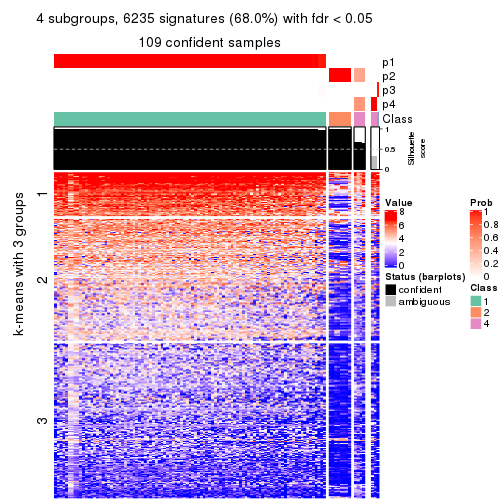
get_signatures(res, k = 5, scale_rows = FALSE)
get_signatures(res, k = 6, scale_rows = FALSE)
Compare the overlap of signatures from different k:
compare_signatures(res)
get_signature() returns a data frame invisibly. TO get the list of signatures, the function
call should be assigned to a variable explicitly. In following code, if plot argument is set
to FALSE, no heatmap is plotted while only the differential analysis is performed.
# code only for demonstration
tb = get_signature(res, k = ..., plot = FALSE)
An example of the output of tb is:
#> which_row fdr mean_1 mean_2 scaled_mean_1 scaled_mean_2 km
#> 1 38 0.042760348 8.373488 9.131774 -0.5533452 0.5164555 1
#> 2 40 0.018707592 7.106213 8.469186 -0.6173731 0.5762149 1
#> 3 55 0.019134737 10.221463 11.207825 -0.6159697 0.5749050 1
#> 4 59 0.006059896 5.921854 7.869574 -0.6899429 0.6439467 1
#> 5 60 0.018055526 8.928898 10.211722 -0.6204761 0.5791110 1
#> 6 98 0.009384629 15.714769 14.887706 0.6635654 -0.6193277 2
...
The columns in tb are:
which_row: row indices corresponding to the input matrix.fdr: FDR for the differential test. mean_x: The mean value in group x.scaled_mean_x: The mean value in group x after rows are scaled.km: Row groups if k-means clustering is applied to rows.UMAP plot which shows how samples are separated.
dimension_reduction(res, k = 2, method = "UMAP")
dimension_reduction(res, k = 3, method = "UMAP")
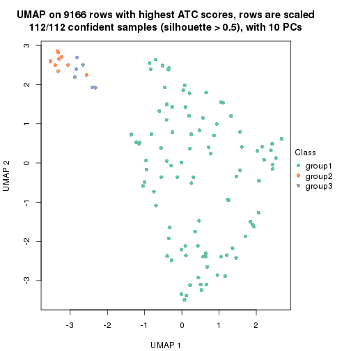
dimension_reduction(res, k = 4, method = "UMAP")
dimension_reduction(res, k = 5, method = "UMAP")
dimension_reduction(res, k = 6, method = "UMAP")

Following heatmap shows how subgroups are split when increasing k:
collect_classes(res)
If matrix rows can be associated to genes, consider to use GO_Enrichment(res,
...) to perform function enrichment for the signature genes.
The object with results only for a single top-value method and a single partition method can be extracted as:
res = res_list["ATC", "kmeans"]
# you can also extract it by
# res = res_list["ATC:kmeans"]
A summary of res and all the functions that can be applied to it:
res
#> A 'ConsensusPartition' object with k = 2, 3, 4, 5, 6.
#> On a matrix with 9166 rows and 112 columns.
#> Top rows (917, 1834, 2750, 3666, 4583) are extracted by 'ATC' method.
#> Subgroups are detected by 'kmeans' method.
#> Performed in total 1250 partitions by row resampling.
#> Best k for subgroups seems to be 4.
#>
#> Following methods can be applied to this 'ConsensusPartition' object:
#> [1] "cola_report" "collect_classes" "collect_plots"
#> [4] "collect_stats" "colnames" "compare_signatures"
#> [7] "consensus_heatmap" "dimension_reduction" "functional_enrichment"
#> [10] "get_anno_col" "get_anno" "get_classes"
#> [13] "get_consensus" "get_matrix" "get_membership"
#> [16] "get_param" "get_signatures" "get_stats"
#> [19] "is_best_k" "is_stable_k" "membership_heatmap"
#> [22] "ncol" "nrow" "plot_ecdf"
#> [25] "rownames" "select_partition_number" "show"
#> [28] "suggest_best_k" "test_to_known_factors"
collect_plots() function collects all the plots made from res for all k (number of partitions)
into one single page to provide an easy and fast comparison between different k.
collect_plots(res)
The plots are:
k and the heatmap of
predicted classes for each k.k.k.k.All the plots in panels can be made by individual functions and they are plotted later in this section.
select_partition_number() produces several plots showing different
statistics for choosing “optimized” k. There are following statistics:
k;k, the area increased is defined as \(A_k - A_{k-1}\).The detailed explanations of these statistics can be found in the cola vignette.
Generally speaking, lower PAC score, higher mean silhouette score or higher
concordance corresponds to better partition. Rand index and Jaccard index
measure how similar the current partition is compared to partition with k-1.
If they are too similar, we won't accept k is better than k-1.
select_partition_number(res)
The numeric values for all these statistics can be obtained by get_stats().
get_stats(res)
#> k 1-PAC mean_silhouette concordance area_increased Rand Jaccard
#> 2 2 1.000 0.992 0.997 0.230 0.766 0.766
#> 3 3 0.866 0.890 0.955 0.389 0.887 0.853
#> 4 4 0.997 0.943 0.978 0.190 0.959 0.939
#> 5 5 0.658 0.770 0.874 0.417 0.781 0.655
#> 6 6 0.676 0.730 0.864 0.149 0.886 0.747
suggest_best_k() suggests the best \(k\) based on these statistics. The rules are as follows:
NA.suggest_best_k(res)
#> [1] 4
#> attr(,"optional")
#> [1] 2
There is also optional best \(k\) = 2 that is worth to check.
Following shows the table of the partitions (You need to click the show/hide
code output link to see it). The membership matrix (columns with name p*)
is inferred by
clue::cl_consensus()
function with the SE method. Basically the value in the membership matrix
represents the probability to belong to a certain group. The finall class
label for an item is determined with the group with highest probability it
belongs to.
In get_classes() function, the entropy is calculated from the membership
matrix and the silhouette score is calculated from the consensus matrix.
cbind(get_classes(res, k = 2), get_membership(res, k = 2))
#> class entropy silhouette p1 p2
#> SRR1003755 1 0.000 1.000 1.000 0.000
#> SRR1003756 1 0.000 1.000 1.000 0.000
#> SRR1003757 1 0.000 1.000 1.000 0.000
#> SRR1003758 1 0.000 1.000 1.000 0.000
#> SRR1003759 1 0.000 1.000 1.000 0.000
#> SRR1003760 2 0.000 0.974 0.000 1.000
#> SRR1003761 2 0.946 0.428 0.364 0.636
#> SRR1003762 2 0.000 0.974 0.000 1.000
#> SRR1003763 2 0.000 0.974 0.000 1.000
#> SRR1003764 2 0.000 0.974 0.000 1.000
#> SRR1003765 2 0.000 0.974 0.000 1.000
#> SRR1003766 2 0.000 0.974 0.000 1.000
#> SRR1003767 2 0.000 0.974 0.000 1.000
#> SRR1003768 2 0.000 0.974 0.000 1.000
#> SRR1003769 2 0.000 0.974 0.000 1.000
#> SRR1003770 2 0.000 0.974 0.000 1.000
#> SRR1003771 2 0.000 0.974 0.000 1.000
#> SRR1003773 1 0.000 1.000 1.000 0.000
#> SRR1003772 1 0.000 1.000 1.000 0.000
#> SRR1003774 1 0.000 1.000 1.000 0.000
#> SRR1003775 1 0.000 1.000 1.000 0.000
#> SRR1003776 1 0.000 1.000 1.000 0.000
#> SRR1003777 1 0.000 1.000 1.000 0.000
#> SRR1003778 1 0.000 1.000 1.000 0.000
#> SRR1003779 1 0.000 1.000 1.000 0.000
#> SRR1003780 2 0.000 0.974 0.000 1.000
#> SRR1003781 1 0.000 1.000 1.000 0.000
#> SRR1003784 1 0.000 1.000 1.000 0.000
#> SRR1003785 1 0.000 1.000 1.000 0.000
#> SRR1003786 1 0.000 1.000 1.000 0.000
#> SRR1003783 1 0.000 1.000 1.000 0.000
#> SRR1003787 1 0.000 1.000 1.000 0.000
#> SRR1003788 1 0.000 1.000 1.000 0.000
#> SRR1003789 2 0.000 0.974 0.000 1.000
#> SRR1003790 1 0.000 1.000 1.000 0.000
#> SRR1003791 1 0.000 1.000 1.000 0.000
#> SRR1003792 1 0.000 1.000 1.000 0.000
#> SRR1003793 1 0.000 1.000 1.000 0.000
#> SRR1003794 1 0.000 1.000 1.000 0.000
#> SRR1003795 1 0.000 1.000 1.000 0.000
#> SRR1003796 1 0.000 1.000 1.000 0.000
#> SRR1003797 1 0.000 1.000 1.000 0.000
#> SRR1003798 1 0.000 1.000 1.000 0.000
#> SRR1003799 1 0.000 1.000 1.000 0.000
#> SRR1003800 1 0.000 1.000 1.000 0.000
#> SRR1003801 1 0.000 1.000 1.000 0.000
#> SRR1003802 1 0.000 1.000 1.000 0.000
#> SRR1003803 1 0.000 1.000 1.000 0.000
#> SRR1003804 1 0.000 1.000 1.000 0.000
#> SRR1003805 1 0.000 1.000 1.000 0.000
#> SRR1003806 1 0.000 1.000 1.000 0.000
#> SRR1003807 1 0.000 1.000 1.000 0.000
#> SRR1003809 1 0.000 1.000 1.000 0.000
#> SRR1003808 1 0.000 1.000 1.000 0.000
#> SRR1003810 1 0.000 1.000 1.000 0.000
#> SRR1003811 1 0.000 1.000 1.000 0.000
#> SRR1003812 1 0.000 1.000 1.000 0.000
#> SRR1003813 1 0.000 1.000 1.000 0.000
#> SRR1003814 1 0.000 1.000 1.000 0.000
#> SRR1003815 1 0.000 1.000 1.000 0.000
#> SRR1003816 1 0.000 1.000 1.000 0.000
#> SRR1003817 1 0.000 1.000 1.000 0.000
#> SRR1003818 1 0.000 1.000 1.000 0.000
#> SRR1003819 1 0.000 1.000 1.000 0.000
#> SRR1003820 1 0.000 1.000 1.000 0.000
#> SRR1003821 1 0.000 1.000 1.000 0.000
#> SRR1003822 1 0.000 1.000 1.000 0.000
#> SRR1003824 1 0.000 1.000 1.000 0.000
#> SRR1003823 1 0.000 1.000 1.000 0.000
#> SRR1003825 1 0.000 1.000 1.000 0.000
#> SRR1003826 1 0.000 1.000 1.000 0.000
#> SRR1003827 1 0.000 1.000 1.000 0.000
#> SRR1003828 1 0.000 1.000 1.000 0.000
#> SRR1003829 1 0.000 1.000 1.000 0.000
#> SRR1003830 1 0.000 1.000 1.000 0.000
#> SRR1003831 1 0.000 1.000 1.000 0.000
#> SRR1003832 1 0.000 1.000 1.000 0.000
#> SRR1003833 1 0.000 1.000 1.000 0.000
#> SRR1003834 1 0.000 1.000 1.000 0.000
#> SRR1003836 1 0.000 1.000 1.000 0.000
#> SRR1003835 1 0.000 1.000 1.000 0.000
#> SRR1003838 1 0.000 1.000 1.000 0.000
#> SRR1003837 1 0.000 1.000 1.000 0.000
#> SRR1003839 1 0.000 1.000 1.000 0.000
#> SRR1003840 1 0.000 1.000 1.000 0.000
#> SRR1003841 2 0.000 0.974 0.000 1.000
#> SRR1003842 1 0.000 1.000 1.000 0.000
#> SRR1003844 1 0.000 1.000 1.000 0.000
#> SRR1003845 1 0.000 1.000 1.000 0.000
#> SRR1003846 1 0.000 1.000 1.000 0.000
#> SRR1003847 1 0.000 1.000 1.000 0.000
#> SRR1003848 1 0.000 1.000 1.000 0.000
#> SRR1003849 1 0.000 1.000 1.000 0.000
#> SRR1003850 1 0.000 1.000 1.000 0.000
#> SRR1003851 1 0.000 1.000 1.000 0.000
#> SRR1003852 1 0.000 1.000 1.000 0.000
#> SRR1003853 1 0.000 1.000 1.000 0.000
#> SRR1003854 1 0.000 1.000 1.000 0.000
#> SRR1003843 1 0.000 1.000 1.000 0.000
#> SRR1003855 1 0.000 1.000 1.000 0.000
#> SRR1003856 1 0.000 1.000 1.000 0.000
#> SRR1003857 1 0.000 1.000 1.000 0.000
#> SRR1003858 1 0.000 1.000 1.000 0.000
#> SRR1003859 1 0.000 1.000 1.000 0.000
#> SRR1003860 1 0.000 1.000 1.000 0.000
#> SRR1003861 1 0.000 1.000 1.000 0.000
#> SRR1003862 1 0.000 1.000 1.000 0.000
#> SRR1003863 1 0.000 1.000 1.000 0.000
#> SRR1003864 1 0.000 1.000 1.000 0.000
#> SRR1003865 1 0.000 1.000 1.000 0.000
#> SRR1003866 1 0.000 1.000 1.000 0.000
#> SRR1003867 1 0.000 1.000 1.000 0.000
cbind(get_classes(res, k = 3), get_membership(res, k = 3))
#> class entropy silhouette p1 p2 p3
#> SRR1003755 1 0.4555 0.679 0.800 0.000 0.200
#> SRR1003756 1 0.4555 0.679 0.800 0.000 0.200
#> SRR1003757 1 0.0424 0.979 0.992 0.000 0.008
#> SRR1003758 1 0.0424 0.979 0.992 0.000 0.008
#> SRR1003759 1 0.0000 0.988 1.000 0.000 0.000
#> SRR1003760 3 0.5363 -0.132 0.000 0.276 0.724
#> SRR1003761 3 0.0424 0.221 0.000 0.008 0.992
#> SRR1003762 2 0.3038 0.857 0.000 0.896 0.104
#> SRR1003763 3 0.5431 -0.146 0.000 0.284 0.716
#> SRR1003764 2 0.6192 0.568 0.000 0.580 0.420
#> SRR1003765 2 0.0000 0.913 0.000 1.000 0.000
#> SRR1003766 2 0.0000 0.913 0.000 1.000 0.000
#> SRR1003767 2 0.0000 0.913 0.000 1.000 0.000
#> SRR1003768 2 0.0000 0.913 0.000 1.000 0.000
#> SRR1003769 2 0.0000 0.913 0.000 1.000 0.000
#> SRR1003770 2 0.0000 0.913 0.000 1.000 0.000
#> SRR1003771 2 0.0000 0.913 0.000 1.000 0.000
#> SRR1003773 3 0.4291 0.495 0.180 0.000 0.820
#> SRR1003772 1 0.0000 0.988 1.000 0.000 0.000
#> SRR1003774 1 0.0000 0.988 1.000 0.000 0.000
#> SRR1003775 1 0.0000 0.988 1.000 0.000 0.000
#> SRR1003776 1 0.0000 0.988 1.000 0.000 0.000
#> SRR1003777 1 0.0000 0.988 1.000 0.000 0.000
#> SRR1003778 3 0.3340 0.432 0.120 0.000 0.880
#> SRR1003779 1 0.0000 0.988 1.000 0.000 0.000
#> SRR1003780 2 0.0000 0.913 0.000 1.000 0.000
#> SRR1003781 1 0.0000 0.988 1.000 0.000 0.000
#> SRR1003784 1 0.0000 0.988 1.000 0.000 0.000
#> SRR1003785 3 0.6215 0.506 0.428 0.000 0.572
#> SRR1003786 1 0.0000 0.988 1.000 0.000 0.000
#> SRR1003783 1 0.0000 0.988 1.000 0.000 0.000
#> SRR1003787 1 0.0000 0.988 1.000 0.000 0.000
#> SRR1003788 1 0.0000 0.988 1.000 0.000 0.000
#> SRR1003789 3 0.6308 -0.515 0.000 0.492 0.508
#> SRR1003790 1 0.0000 0.988 1.000 0.000 0.000
#> SRR1003791 1 0.0000 0.988 1.000 0.000 0.000
#> SRR1003792 1 0.0000 0.988 1.000 0.000 0.000
#> SRR1003793 1 0.0000 0.988 1.000 0.000 0.000
#> SRR1003794 1 0.0000 0.988 1.000 0.000 0.000
#> SRR1003795 3 0.6235 0.488 0.436 0.000 0.564
#> SRR1003796 3 0.4291 0.495 0.180 0.000 0.820
#> SRR1003797 1 0.0000 0.988 1.000 0.000 0.000
#> SRR1003798 1 0.0000 0.988 1.000 0.000 0.000
#> SRR1003799 1 0.0000 0.988 1.000 0.000 0.000
#> SRR1003800 1 0.0000 0.988 1.000 0.000 0.000
#> SRR1003801 1 0.0000 0.988 1.000 0.000 0.000
#> SRR1003802 1 0.0000 0.988 1.000 0.000 0.000
#> SRR1003803 1 0.0000 0.988 1.000 0.000 0.000
#> SRR1003804 1 0.0000 0.988 1.000 0.000 0.000
#> SRR1003805 1 0.0000 0.988 1.000 0.000 0.000
#> SRR1003806 1 0.0000 0.988 1.000 0.000 0.000
#> SRR1003807 1 0.0000 0.988 1.000 0.000 0.000
#> SRR1003809 1 0.0000 0.988 1.000 0.000 0.000
#> SRR1003808 1 0.0000 0.988 1.000 0.000 0.000
#> SRR1003810 1 0.0000 0.988 1.000 0.000 0.000
#> SRR1003811 1 0.0000 0.988 1.000 0.000 0.000
#> SRR1003812 1 0.0000 0.988 1.000 0.000 0.000
#> SRR1003813 1 0.2878 0.860 0.904 0.000 0.096
#> SRR1003814 1 0.0000 0.988 1.000 0.000 0.000
#> SRR1003815 1 0.0000 0.988 1.000 0.000 0.000
#> SRR1003816 1 0.0000 0.988 1.000 0.000 0.000
#> SRR1003817 1 0.0000 0.988 1.000 0.000 0.000
#> SRR1003818 1 0.0000 0.988 1.000 0.000 0.000
#> SRR1003819 1 0.0000 0.988 1.000 0.000 0.000
#> SRR1003820 1 0.0000 0.988 1.000 0.000 0.000
#> SRR1003821 1 0.0000 0.988 1.000 0.000 0.000
#> SRR1003822 1 0.0000 0.988 1.000 0.000 0.000
#> SRR1003824 1 0.0000 0.988 1.000 0.000 0.000
#> SRR1003823 1 0.0000 0.988 1.000 0.000 0.000
#> SRR1003825 1 0.0000 0.988 1.000 0.000 0.000
#> SRR1003826 1 0.0000 0.988 1.000 0.000 0.000
#> SRR1003827 1 0.0000 0.988 1.000 0.000 0.000
#> SRR1003828 1 0.0000 0.988 1.000 0.000 0.000
#> SRR1003829 1 0.0000 0.988 1.000 0.000 0.000
#> SRR1003830 1 0.0000 0.988 1.000 0.000 0.000
#> SRR1003831 1 0.0000 0.988 1.000 0.000 0.000
#> SRR1003832 1 0.0000 0.988 1.000 0.000 0.000
#> SRR1003833 1 0.0000 0.988 1.000 0.000 0.000
#> SRR1003834 1 0.0000 0.988 1.000 0.000 0.000
#> SRR1003836 1 0.0000 0.988 1.000 0.000 0.000
#> SRR1003835 1 0.0000 0.988 1.000 0.000 0.000
#> SRR1003838 3 0.6215 0.506 0.428 0.000 0.572
#> SRR1003837 1 0.0000 0.988 1.000 0.000 0.000
#> SRR1003839 1 0.0000 0.988 1.000 0.000 0.000
#> SRR1003840 1 0.0000 0.988 1.000 0.000 0.000
#> SRR1003841 2 0.6168 0.578 0.000 0.588 0.412
#> SRR1003842 1 0.0000 0.988 1.000 0.000 0.000
#> SRR1003844 1 0.0000 0.988 1.000 0.000 0.000
#> SRR1003845 1 0.0000 0.988 1.000 0.000 0.000
#> SRR1003846 1 0.0000 0.988 1.000 0.000 0.000
#> SRR1003847 1 0.0000 0.988 1.000 0.000 0.000
#> SRR1003848 1 0.0000 0.988 1.000 0.000 0.000
#> SRR1003849 3 0.6215 0.506 0.428 0.000 0.572
#> SRR1003850 1 0.0000 0.988 1.000 0.000 0.000
#> SRR1003851 1 0.5733 0.345 0.676 0.000 0.324
#> SRR1003852 1 0.0000 0.988 1.000 0.000 0.000
#> SRR1003853 1 0.0000 0.988 1.000 0.000 0.000
#> SRR1003854 1 0.0000 0.988 1.000 0.000 0.000
#> SRR1003843 1 0.0000 0.988 1.000 0.000 0.000
#> SRR1003855 1 0.0000 0.988 1.000 0.000 0.000
#> SRR1003856 1 0.0000 0.988 1.000 0.000 0.000
#> SRR1003857 1 0.0000 0.988 1.000 0.000 0.000
#> SRR1003858 1 0.0000 0.988 1.000 0.000 0.000
#> SRR1003859 1 0.0000 0.988 1.000 0.000 0.000
#> SRR1003860 1 0.0000 0.988 1.000 0.000 0.000
#> SRR1003861 1 0.0000 0.988 1.000 0.000 0.000
#> SRR1003862 1 0.0000 0.988 1.000 0.000 0.000
#> SRR1003863 1 0.0000 0.988 1.000 0.000 0.000
#> SRR1003864 1 0.0000 0.988 1.000 0.000 0.000
#> SRR1003865 1 0.0000 0.988 1.000 0.000 0.000
#> SRR1003866 1 0.0000 0.988 1.000 0.000 0.000
#> SRR1003867 1 0.0000 0.988 1.000 0.000 0.000
cbind(get_classes(res, k = 4), get_membership(res, k = 4))
#> class entropy silhouette p1 p2 p3 p4
#> SRR1003755 1 0.6748 -0.130 0.476 0.000 0.432 0.092
#> SRR1003756 1 0.6748 -0.130 0.476 0.000 0.432 0.092
#> SRR1003757 1 0.2198 0.903 0.920 0.000 0.008 0.072
#> SRR1003758 1 0.2198 0.903 0.920 0.000 0.008 0.072
#> SRR1003759 1 0.0000 0.985 1.000 0.000 0.000 0.000
#> SRR1003760 4 0.2473 0.925 0.000 0.012 0.080 0.908
#> SRR1003761 4 0.2281 0.911 0.000 0.000 0.096 0.904
#> SRR1003762 4 0.3219 0.860 0.000 0.164 0.000 0.836
#> SRR1003763 4 0.2473 0.925 0.000 0.012 0.080 0.908
#> SRR1003764 4 0.2216 0.923 0.000 0.092 0.000 0.908
#> SRR1003765 2 0.0000 0.998 0.000 1.000 0.000 0.000
#> SRR1003766 2 0.0188 0.998 0.000 0.996 0.000 0.004
#> SRR1003767 2 0.0000 0.998 0.000 1.000 0.000 0.000
#> SRR1003768 2 0.0188 0.998 0.000 0.996 0.000 0.004
#> SRR1003769 2 0.0188 0.998 0.000 0.996 0.000 0.004
#> SRR1003770 2 0.0000 0.998 0.000 1.000 0.000 0.000
#> SRR1003771 2 0.0000 0.998 0.000 1.000 0.000 0.000
#> SRR1003773 3 0.0592 0.840 0.000 0.000 0.984 0.016
#> SRR1003772 1 0.0000 0.985 1.000 0.000 0.000 0.000
#> SRR1003774 1 0.0000 0.985 1.000 0.000 0.000 0.000
#> SRR1003775 1 0.0000 0.985 1.000 0.000 0.000 0.000
#> SRR1003776 1 0.0000 0.985 1.000 0.000 0.000 0.000
#> SRR1003777 1 0.0000 0.985 1.000 0.000 0.000 0.000
#> SRR1003778 3 0.0592 0.840 0.000 0.000 0.984 0.016
#> SRR1003779 1 0.0000 0.985 1.000 0.000 0.000 0.000
#> SRR1003780 2 0.0188 0.998 0.000 0.996 0.000 0.004
#> SRR1003781 1 0.0000 0.985 1.000 0.000 0.000 0.000
#> SRR1003784 1 0.0188 0.982 0.996 0.000 0.004 0.000
#> SRR1003785 3 0.0592 0.857 0.016 0.000 0.984 0.000
#> SRR1003786 1 0.0000 0.985 1.000 0.000 0.000 0.000
#> SRR1003783 1 0.0000 0.985 1.000 0.000 0.000 0.000
#> SRR1003787 1 0.0000 0.985 1.000 0.000 0.000 0.000
#> SRR1003788 1 0.0000 0.985 1.000 0.000 0.000 0.000
#> SRR1003789 4 0.2623 0.932 0.000 0.064 0.028 0.908
#> SRR1003790 1 0.0000 0.985 1.000 0.000 0.000 0.000
#> SRR1003791 1 0.0000 0.985 1.000 0.000 0.000 0.000
#> SRR1003792 1 0.0000 0.985 1.000 0.000 0.000 0.000
#> SRR1003793 1 0.0000 0.985 1.000 0.000 0.000 0.000
#> SRR1003794 1 0.0000 0.985 1.000 0.000 0.000 0.000
#> SRR1003795 3 0.0592 0.857 0.016 0.000 0.984 0.000
#> SRR1003796 3 0.0592 0.840 0.000 0.000 0.984 0.016
#> SRR1003797 1 0.0000 0.985 1.000 0.000 0.000 0.000
#> SRR1003798 1 0.0000 0.985 1.000 0.000 0.000 0.000
#> SRR1003799 1 0.0000 0.985 1.000 0.000 0.000 0.000
#> SRR1003800 1 0.0000 0.985 1.000 0.000 0.000 0.000
#> SRR1003801 1 0.0000 0.985 1.000 0.000 0.000 0.000
#> SRR1003802 1 0.0469 0.974 0.988 0.000 0.012 0.000
#> SRR1003803 1 0.0000 0.985 1.000 0.000 0.000 0.000
#> SRR1003804 1 0.0000 0.985 1.000 0.000 0.000 0.000
#> SRR1003805 1 0.0000 0.985 1.000 0.000 0.000 0.000
#> SRR1003806 1 0.0000 0.985 1.000 0.000 0.000 0.000
#> SRR1003807 1 0.0188 0.982 0.996 0.000 0.004 0.000
#> SRR1003809 1 0.0000 0.985 1.000 0.000 0.000 0.000
#> SRR1003808 1 0.0000 0.985 1.000 0.000 0.000 0.000
#> SRR1003810 1 0.0000 0.985 1.000 0.000 0.000 0.000
#> SRR1003811 1 0.0000 0.985 1.000 0.000 0.000 0.000
#> SRR1003812 1 0.0000 0.985 1.000 0.000 0.000 0.000
#> SRR1003813 3 0.4500 0.358 0.316 0.000 0.684 0.000
#> SRR1003814 1 0.0000 0.985 1.000 0.000 0.000 0.000
#> SRR1003815 1 0.0000 0.985 1.000 0.000 0.000 0.000
#> SRR1003816 1 0.0000 0.985 1.000 0.000 0.000 0.000
#> SRR1003817 1 0.0000 0.985 1.000 0.000 0.000 0.000
#> SRR1003818 1 0.0000 0.985 1.000 0.000 0.000 0.000
#> SRR1003819 1 0.0000 0.985 1.000 0.000 0.000 0.000
#> SRR1003820 1 0.0000 0.985 1.000 0.000 0.000 0.000
#> SRR1003821 1 0.0000 0.985 1.000 0.000 0.000 0.000
#> SRR1003822 1 0.0188 0.982 0.996 0.000 0.004 0.000
#> SRR1003824 1 0.0000 0.985 1.000 0.000 0.000 0.000
#> SRR1003823 1 0.0000 0.985 1.000 0.000 0.000 0.000
#> SRR1003825 1 0.0000 0.985 1.000 0.000 0.000 0.000
#> SRR1003826 1 0.0000 0.985 1.000 0.000 0.000 0.000
#> SRR1003827 1 0.0000 0.985 1.000 0.000 0.000 0.000
#> SRR1003828 1 0.0000 0.985 1.000 0.000 0.000 0.000
#> SRR1003829 1 0.0000 0.985 1.000 0.000 0.000 0.000
#> SRR1003830 1 0.0000 0.985 1.000 0.000 0.000 0.000
#> SRR1003831 1 0.0000 0.985 1.000 0.000 0.000 0.000
#> SRR1003832 1 0.0000 0.985 1.000 0.000 0.000 0.000
#> SRR1003833 1 0.0000 0.985 1.000 0.000 0.000 0.000
#> SRR1003834 1 0.0000 0.985 1.000 0.000 0.000 0.000
#> SRR1003836 1 0.0000 0.985 1.000 0.000 0.000 0.000
#> SRR1003835 1 0.0000 0.985 1.000 0.000 0.000 0.000
#> SRR1003838 3 0.0592 0.857 0.016 0.000 0.984 0.000
#> SRR1003837 1 0.0000 0.985 1.000 0.000 0.000 0.000
#> SRR1003839 1 0.0000 0.985 1.000 0.000 0.000 0.000
#> SRR1003840 1 0.0000 0.985 1.000 0.000 0.000 0.000
#> SRR1003841 4 0.2546 0.921 0.000 0.092 0.008 0.900
#> SRR1003842 1 0.0000 0.985 1.000 0.000 0.000 0.000
#> SRR1003844 1 0.0000 0.985 1.000 0.000 0.000 0.000
#> SRR1003845 1 0.0188 0.982 0.996 0.000 0.004 0.000
#> SRR1003846 1 0.0000 0.985 1.000 0.000 0.000 0.000
#> SRR1003847 1 0.0000 0.985 1.000 0.000 0.000 0.000
#> SRR1003848 1 0.0000 0.985 1.000 0.000 0.000 0.000
#> SRR1003849 3 0.0592 0.857 0.016 0.000 0.984 0.000
#> SRR1003850 1 0.0000 0.985 1.000 0.000 0.000 0.000
#> SRR1003851 3 0.2408 0.716 0.104 0.000 0.896 0.000
#> SRR1003852 1 0.0000 0.985 1.000 0.000 0.000 0.000
#> SRR1003853 1 0.0000 0.985 1.000 0.000 0.000 0.000
#> SRR1003854 1 0.0000 0.985 1.000 0.000 0.000 0.000
#> SRR1003843 1 0.0188 0.982 0.996 0.000 0.004 0.000
#> SRR1003855 1 0.0000 0.985 1.000 0.000 0.000 0.000
#> SRR1003856 1 0.0188 0.982 0.996 0.000 0.004 0.000
#> SRR1003857 1 0.0000 0.985 1.000 0.000 0.000 0.000
#> SRR1003858 1 0.0000 0.985 1.000 0.000 0.000 0.000
#> SRR1003859 1 0.0000 0.985 1.000 0.000 0.000 0.000
#> SRR1003860 1 0.0000 0.985 1.000 0.000 0.000 0.000
#> SRR1003861 1 0.0000 0.985 1.000 0.000 0.000 0.000
#> SRR1003862 1 0.0000 0.985 1.000 0.000 0.000 0.000
#> SRR1003863 1 0.0000 0.985 1.000 0.000 0.000 0.000
#> SRR1003864 1 0.0000 0.985 1.000 0.000 0.000 0.000
#> SRR1003865 1 0.0000 0.985 1.000 0.000 0.000 0.000
#> SRR1003866 1 0.0000 0.985 1.000 0.000 0.000 0.000
#> SRR1003867 1 0.0000 0.985 1.000 0.000 0.000 0.000
cbind(get_classes(res, k = 5), get_membership(res, k = 5))
#> class entropy silhouette p1 p2 p3 p4 p5
#> SRR1003755 4 0.6807 -0.1180 0.336 0.000 0.300 0.364 0.000
#> SRR1003756 4 0.6807 -0.1180 0.336 0.000 0.300 0.364 0.000
#> SRR1003757 1 0.1851 0.8060 0.912 0.000 0.000 0.088 0.000
#> SRR1003758 1 0.1851 0.8060 0.912 0.000 0.000 0.088 0.000
#> SRR1003759 4 0.3932 0.8266 0.328 0.000 0.000 0.672 0.000
#> SRR1003760 5 0.1341 0.9519 0.000 0.000 0.000 0.056 0.944
#> SRR1003761 5 0.2992 0.9016 0.000 0.000 0.064 0.068 0.868
#> SRR1003762 5 0.1430 0.9307 0.000 0.052 0.000 0.004 0.944
#> SRR1003763 5 0.0162 0.9626 0.000 0.000 0.000 0.004 0.996
#> SRR1003764 5 0.0162 0.9626 0.000 0.000 0.000 0.004 0.996
#> SRR1003765 2 0.0162 0.9945 0.000 0.996 0.000 0.004 0.000
#> SRR1003766 2 0.0162 0.9943 0.000 0.996 0.000 0.004 0.000
#> SRR1003767 2 0.0510 0.9904 0.000 0.984 0.000 0.016 0.000
#> SRR1003768 2 0.0162 0.9943 0.000 0.996 0.000 0.004 0.000
#> SRR1003769 2 0.0162 0.9943 0.000 0.996 0.000 0.004 0.000
#> SRR1003770 2 0.0162 0.9945 0.000 0.996 0.000 0.004 0.000
#> SRR1003771 2 0.0510 0.9904 0.000 0.984 0.000 0.016 0.000
#> SRR1003773 3 0.0000 0.7350 0.000 0.000 1.000 0.000 0.000
#> SRR1003772 1 0.0000 0.8944 1.000 0.000 0.000 0.000 0.000
#> SRR1003774 1 0.0162 0.8924 0.996 0.000 0.000 0.004 0.000
#> SRR1003775 1 0.0000 0.8944 1.000 0.000 0.000 0.000 0.000
#> SRR1003776 1 0.0000 0.8944 1.000 0.000 0.000 0.000 0.000
#> SRR1003777 1 0.0000 0.8944 1.000 0.000 0.000 0.000 0.000
#> SRR1003778 3 0.0000 0.7350 0.000 0.000 1.000 0.000 0.000
#> SRR1003779 1 0.0000 0.8944 1.000 0.000 0.000 0.000 0.000
#> SRR1003780 2 0.0000 0.9947 0.000 1.000 0.000 0.000 0.000
#> SRR1003781 1 0.0000 0.8944 1.000 0.000 0.000 0.000 0.000
#> SRR1003784 4 0.3837 0.8164 0.308 0.000 0.000 0.692 0.000
#> SRR1003785 3 0.3586 0.7708 0.000 0.000 0.736 0.264 0.000
#> SRR1003786 1 0.0000 0.8944 1.000 0.000 0.000 0.000 0.000
#> SRR1003783 1 0.0000 0.8944 1.000 0.000 0.000 0.000 0.000
#> SRR1003787 1 0.0000 0.8944 1.000 0.000 0.000 0.000 0.000
#> SRR1003788 4 0.4101 0.7721 0.372 0.000 0.000 0.628 0.000
#> SRR1003789 5 0.0000 0.9627 0.000 0.000 0.000 0.000 1.000
#> SRR1003790 1 0.0000 0.8944 1.000 0.000 0.000 0.000 0.000
#> SRR1003791 4 0.4242 0.6563 0.428 0.000 0.000 0.572 0.000
#> SRR1003792 1 0.0000 0.8944 1.000 0.000 0.000 0.000 0.000
#> SRR1003793 1 0.0000 0.8944 1.000 0.000 0.000 0.000 0.000
#> SRR1003794 1 0.0162 0.8926 0.996 0.000 0.000 0.004 0.000
#> SRR1003795 3 0.4283 0.5893 0.000 0.000 0.544 0.456 0.000
#> SRR1003796 3 0.0000 0.7350 0.000 0.000 1.000 0.000 0.000
#> SRR1003797 1 0.0000 0.8944 1.000 0.000 0.000 0.000 0.000
#> SRR1003798 1 0.0510 0.8849 0.984 0.000 0.000 0.016 0.000
#> SRR1003799 1 0.0000 0.8944 1.000 0.000 0.000 0.000 0.000
#> SRR1003800 1 0.1671 0.8228 0.924 0.000 0.000 0.076 0.000
#> SRR1003801 1 0.3857 0.3383 0.688 0.000 0.000 0.312 0.000
#> SRR1003802 4 0.3816 0.8112 0.304 0.000 0.000 0.696 0.000
#> SRR1003803 1 0.0000 0.8944 1.000 0.000 0.000 0.000 0.000
#> SRR1003804 1 0.0794 0.8761 0.972 0.000 0.000 0.028 0.000
#> SRR1003805 1 0.0000 0.8944 1.000 0.000 0.000 0.000 0.000
#> SRR1003806 1 0.0000 0.8944 1.000 0.000 0.000 0.000 0.000
#> SRR1003807 4 0.3857 0.8197 0.312 0.000 0.000 0.688 0.000
#> SRR1003809 4 0.3857 0.8202 0.312 0.000 0.000 0.688 0.000
#> SRR1003808 1 0.3424 0.5284 0.760 0.000 0.000 0.240 0.000
#> SRR1003810 1 0.0162 0.8924 0.996 0.000 0.000 0.004 0.000
#> SRR1003811 1 0.0290 0.8899 0.992 0.000 0.000 0.008 0.000
#> SRR1003812 1 0.0000 0.8944 1.000 0.000 0.000 0.000 0.000
#> SRR1003813 4 0.5091 0.1880 0.084 0.000 0.244 0.672 0.000
#> SRR1003814 1 0.0000 0.8944 1.000 0.000 0.000 0.000 0.000
#> SRR1003815 1 0.0162 0.8924 0.996 0.000 0.000 0.004 0.000
#> SRR1003816 1 0.0000 0.8944 1.000 0.000 0.000 0.000 0.000
#> SRR1003817 1 0.0000 0.8944 1.000 0.000 0.000 0.000 0.000
#> SRR1003818 1 0.0000 0.8944 1.000 0.000 0.000 0.000 0.000
#> SRR1003819 1 0.4242 -0.2333 0.572 0.000 0.000 0.428 0.000
#> SRR1003820 1 0.0000 0.8944 1.000 0.000 0.000 0.000 0.000
#> SRR1003821 1 0.0000 0.8944 1.000 0.000 0.000 0.000 0.000
#> SRR1003822 4 0.3837 0.8164 0.308 0.000 0.000 0.692 0.000
#> SRR1003824 1 0.3837 0.3511 0.692 0.000 0.000 0.308 0.000
#> SRR1003823 1 0.0000 0.8944 1.000 0.000 0.000 0.000 0.000
#> SRR1003825 4 0.3932 0.8282 0.328 0.000 0.000 0.672 0.000
#> SRR1003826 1 0.0000 0.8944 1.000 0.000 0.000 0.000 0.000
#> SRR1003827 1 0.0000 0.8944 1.000 0.000 0.000 0.000 0.000
#> SRR1003828 1 0.4114 0.0716 0.624 0.000 0.000 0.376 0.000
#> SRR1003829 1 0.0000 0.8944 1.000 0.000 0.000 0.000 0.000
#> SRR1003830 1 0.0000 0.8944 1.000 0.000 0.000 0.000 0.000
#> SRR1003831 1 0.3395 0.5428 0.764 0.000 0.000 0.236 0.000
#> SRR1003832 1 0.0290 0.8904 0.992 0.000 0.000 0.008 0.000
#> SRR1003833 1 0.2929 0.6578 0.820 0.000 0.000 0.180 0.000
#> SRR1003834 1 0.3003 0.6393 0.812 0.000 0.000 0.188 0.000
#> SRR1003836 4 0.3983 0.8180 0.340 0.000 0.000 0.660 0.000
#> SRR1003835 4 0.3949 0.8261 0.332 0.000 0.000 0.668 0.000
#> SRR1003838 3 0.3336 0.7851 0.000 0.000 0.772 0.228 0.000
#> SRR1003837 1 0.3424 0.5338 0.760 0.000 0.000 0.240 0.000
#> SRR1003839 1 0.4060 0.1473 0.640 0.000 0.000 0.360 0.000
#> SRR1003840 4 0.4306 0.4668 0.492 0.000 0.000 0.508 0.000
#> SRR1003841 5 0.0963 0.9588 0.000 0.000 0.000 0.036 0.964
#> SRR1003842 1 0.0290 0.8904 0.992 0.000 0.000 0.008 0.000
#> SRR1003844 1 0.0000 0.8944 1.000 0.000 0.000 0.000 0.000
#> SRR1003845 4 0.3913 0.8266 0.324 0.000 0.000 0.676 0.000
#> SRR1003846 1 0.0609 0.8824 0.980 0.000 0.000 0.020 0.000
#> SRR1003847 1 0.3895 0.3057 0.680 0.000 0.000 0.320 0.000
#> SRR1003848 4 0.3932 0.8282 0.328 0.000 0.000 0.672 0.000
#> SRR1003849 3 0.3395 0.7823 0.000 0.000 0.764 0.236 0.000
#> SRR1003850 1 0.3966 0.2481 0.664 0.000 0.000 0.336 0.000
#> SRR1003851 4 0.4201 -0.1858 0.008 0.000 0.328 0.664 0.000
#> SRR1003852 1 0.4138 0.0244 0.616 0.000 0.000 0.384 0.000
#> SRR1003853 1 0.3774 0.3855 0.704 0.000 0.000 0.296 0.000
#> SRR1003854 1 0.0510 0.8850 0.984 0.000 0.000 0.016 0.000
#> SRR1003843 4 0.3932 0.8282 0.328 0.000 0.000 0.672 0.000
#> SRR1003855 1 0.0794 0.8757 0.972 0.000 0.000 0.028 0.000
#> SRR1003856 4 0.3949 0.8261 0.332 0.000 0.000 0.668 0.000
#> SRR1003857 1 0.0290 0.8904 0.992 0.000 0.000 0.008 0.000
#> SRR1003858 1 0.0703 0.8792 0.976 0.000 0.000 0.024 0.000
#> SRR1003859 1 0.0000 0.8944 1.000 0.000 0.000 0.000 0.000
#> SRR1003860 1 0.0000 0.8944 1.000 0.000 0.000 0.000 0.000
#> SRR1003861 1 0.0510 0.8853 0.984 0.000 0.000 0.016 0.000
#> SRR1003862 1 0.0000 0.8944 1.000 0.000 0.000 0.000 0.000
#> SRR1003863 1 0.0404 0.8886 0.988 0.000 0.000 0.012 0.000
#> SRR1003864 1 0.0000 0.8944 1.000 0.000 0.000 0.000 0.000
#> SRR1003865 4 0.3983 0.8177 0.340 0.000 0.000 0.660 0.000
#> SRR1003866 1 0.0000 0.8944 1.000 0.000 0.000 0.000 0.000
#> SRR1003867 1 0.0000 0.8944 1.000 0.000 0.000 0.000 0.000
cbind(get_classes(res, k = 6), get_membership(res, k = 6))
#> class entropy silhouette p1 p2 p3 p4 p5 p6
#> SRR1003755 5 0.7024 1.0000 0.208 0.000 0.152 0.160 0.480 0.000
#> SRR1003756 5 0.7024 1.0000 0.208 0.000 0.152 0.160 0.480 0.000
#> SRR1003757 1 0.4045 0.6483 0.756 0.000 0.000 0.124 0.120 0.000
#> SRR1003758 1 0.4045 0.6483 0.756 0.000 0.000 0.124 0.120 0.000
#> SRR1003759 4 0.3956 0.5617 0.088 0.000 0.000 0.760 0.152 0.000
#> SRR1003760 6 0.2003 0.9174 0.000 0.000 0.000 0.000 0.116 0.884
#> SRR1003761 6 0.3053 0.8728 0.000 0.000 0.020 0.000 0.168 0.812
#> SRR1003762 6 0.0922 0.9348 0.000 0.024 0.000 0.004 0.004 0.968
#> SRR1003763 6 0.0291 0.9449 0.000 0.000 0.000 0.004 0.004 0.992
#> SRR1003764 6 0.0291 0.9449 0.000 0.000 0.000 0.004 0.004 0.992
#> SRR1003765 2 0.0603 0.9858 0.000 0.980 0.000 0.004 0.016 0.000
#> SRR1003766 2 0.0291 0.9857 0.000 0.992 0.000 0.004 0.004 0.000
#> SRR1003767 2 0.0790 0.9814 0.000 0.968 0.000 0.000 0.032 0.000
#> SRR1003768 2 0.0291 0.9857 0.000 0.992 0.000 0.004 0.004 0.000
#> SRR1003769 2 0.0291 0.9857 0.000 0.992 0.000 0.004 0.004 0.000
#> SRR1003770 2 0.0603 0.9858 0.000 0.980 0.000 0.004 0.016 0.000
#> SRR1003771 2 0.0790 0.9814 0.000 0.968 0.000 0.000 0.032 0.000
#> SRR1003773 3 0.0000 0.5916 0.000 0.000 1.000 0.000 0.000 0.000
#> SRR1003772 1 0.0146 0.9045 0.996 0.000 0.000 0.000 0.004 0.000
#> SRR1003774 1 0.0508 0.9008 0.984 0.000 0.000 0.012 0.004 0.000
#> SRR1003775 1 0.0146 0.9045 0.996 0.000 0.000 0.000 0.004 0.000
#> SRR1003776 1 0.0146 0.9045 0.996 0.000 0.000 0.000 0.004 0.000
#> SRR1003777 1 0.0146 0.9045 0.996 0.000 0.000 0.000 0.004 0.000
#> SRR1003778 3 0.0000 0.5916 0.000 0.000 1.000 0.000 0.000 0.000
#> SRR1003779 1 0.0146 0.9045 0.996 0.000 0.000 0.000 0.004 0.000
#> SRR1003780 2 0.0146 0.9863 0.000 0.996 0.000 0.004 0.000 0.000
#> SRR1003781 1 0.0146 0.9045 0.996 0.000 0.000 0.000 0.004 0.000
#> SRR1003784 4 0.2119 0.5560 0.036 0.000 0.000 0.904 0.060 0.000
#> SRR1003785 3 0.5808 0.5629 0.000 0.000 0.480 0.316 0.204 0.000
#> SRR1003786 1 0.0000 0.9048 1.000 0.000 0.000 0.000 0.000 0.000
#> SRR1003783 1 0.0000 0.9048 1.000 0.000 0.000 0.000 0.000 0.000
#> SRR1003787 1 0.0000 0.9048 1.000 0.000 0.000 0.000 0.000 0.000
#> SRR1003788 4 0.2146 0.5969 0.116 0.000 0.000 0.880 0.004 0.000
#> SRR1003789 6 0.0000 0.9452 0.000 0.000 0.000 0.000 0.000 1.000
#> SRR1003790 1 0.0000 0.9048 1.000 0.000 0.000 0.000 0.000 0.000
#> SRR1003791 4 0.4493 0.5486 0.160 0.000 0.000 0.708 0.132 0.000
#> SRR1003792 1 0.0146 0.9040 0.996 0.000 0.000 0.000 0.004 0.000
#> SRR1003793 1 0.0000 0.9048 1.000 0.000 0.000 0.000 0.000 0.000
#> SRR1003794 1 0.0717 0.8954 0.976 0.000 0.000 0.016 0.008 0.000
#> SRR1003795 4 0.5941 -0.4447 0.000 0.000 0.236 0.448 0.316 0.000
#> SRR1003796 3 0.0000 0.5916 0.000 0.000 1.000 0.000 0.000 0.000
#> SRR1003797 1 0.0000 0.9048 1.000 0.000 0.000 0.000 0.000 0.000
#> SRR1003798 1 0.1970 0.8385 0.900 0.000 0.000 0.092 0.008 0.000
#> SRR1003799 1 0.0260 0.9030 0.992 0.000 0.000 0.000 0.008 0.000
#> SRR1003800 1 0.3190 0.6737 0.772 0.000 0.000 0.220 0.008 0.000
#> SRR1003801 4 0.4093 0.2244 0.476 0.000 0.000 0.516 0.008 0.000
#> SRR1003802 4 0.3319 0.4574 0.036 0.000 0.000 0.800 0.164 0.000
#> SRR1003803 1 0.0000 0.9048 1.000 0.000 0.000 0.000 0.000 0.000
#> SRR1003804 1 0.2669 0.7710 0.836 0.000 0.000 0.156 0.008 0.000
#> SRR1003805 1 0.0146 0.9045 0.996 0.000 0.000 0.000 0.004 0.000
#> SRR1003806 1 0.0291 0.9030 0.992 0.000 0.000 0.004 0.004 0.000
#> SRR1003807 4 0.2889 0.5427 0.044 0.000 0.000 0.848 0.108 0.000
#> SRR1003809 4 0.2442 0.5645 0.048 0.000 0.000 0.884 0.068 0.000
#> SRR1003808 1 0.4922 0.2441 0.616 0.000 0.000 0.288 0.096 0.000
#> SRR1003810 1 0.0692 0.8975 0.976 0.000 0.000 0.020 0.004 0.000
#> SRR1003811 1 0.1701 0.8553 0.920 0.000 0.000 0.072 0.008 0.000
#> SRR1003812 1 0.0146 0.9045 0.996 0.000 0.000 0.000 0.004 0.000
#> SRR1003813 4 0.3460 0.3752 0.008 0.000 0.028 0.796 0.168 0.000
#> SRR1003814 1 0.0146 0.9045 0.996 0.000 0.000 0.000 0.004 0.000
#> SRR1003815 1 0.0291 0.9032 0.992 0.000 0.000 0.004 0.004 0.000
#> SRR1003816 1 0.0146 0.9045 0.996 0.000 0.000 0.000 0.004 0.000
#> SRR1003817 1 0.0146 0.9045 0.996 0.000 0.000 0.000 0.004 0.000
#> SRR1003818 1 0.0146 0.9045 0.996 0.000 0.000 0.000 0.004 0.000
#> SRR1003819 4 0.4603 0.3397 0.416 0.000 0.000 0.544 0.040 0.000
#> SRR1003820 1 0.0146 0.9045 0.996 0.000 0.000 0.000 0.004 0.000
#> SRR1003821 1 0.0000 0.9048 1.000 0.000 0.000 0.000 0.000 0.000
#> SRR1003822 4 0.2442 0.5678 0.048 0.000 0.000 0.884 0.068 0.000
#> SRR1003824 4 0.4172 0.2790 0.460 0.000 0.000 0.528 0.012 0.000
#> SRR1003823 1 0.0146 0.9040 0.996 0.000 0.000 0.000 0.004 0.000
#> SRR1003825 4 0.1644 0.6076 0.076 0.000 0.000 0.920 0.004 0.000
#> SRR1003826 1 0.0000 0.9048 1.000 0.000 0.000 0.000 0.000 0.000
#> SRR1003827 1 0.0000 0.9048 1.000 0.000 0.000 0.000 0.000 0.000
#> SRR1003828 4 0.3915 0.3708 0.412 0.000 0.000 0.584 0.004 0.000
#> SRR1003829 1 0.0000 0.9048 1.000 0.000 0.000 0.000 0.000 0.000
#> SRR1003830 1 0.0146 0.9040 0.996 0.000 0.000 0.000 0.004 0.000
#> SRR1003831 1 0.3872 0.2265 0.604 0.000 0.000 0.392 0.004 0.000
#> SRR1003832 1 0.1124 0.8835 0.956 0.000 0.000 0.036 0.008 0.000
#> SRR1003833 1 0.3636 0.4539 0.676 0.000 0.000 0.320 0.004 0.000
#> SRR1003834 1 0.3468 0.5335 0.712 0.000 0.000 0.284 0.004 0.000
#> SRR1003836 4 0.1967 0.6097 0.084 0.000 0.000 0.904 0.012 0.000
#> SRR1003835 4 0.1970 0.6078 0.092 0.000 0.000 0.900 0.008 0.000
#> SRR1003838 3 0.5731 0.5815 0.000 0.000 0.508 0.288 0.204 0.000
#> SRR1003837 1 0.3915 0.1525 0.584 0.000 0.000 0.412 0.004 0.000
#> SRR1003839 4 0.4300 0.3534 0.432 0.000 0.000 0.548 0.020 0.000
#> SRR1003840 4 0.5288 0.4428 0.252 0.000 0.000 0.592 0.156 0.000
#> SRR1003841 6 0.2006 0.9258 0.000 0.000 0.000 0.016 0.080 0.904
#> SRR1003842 1 0.1049 0.8862 0.960 0.000 0.000 0.032 0.008 0.000
#> SRR1003844 1 0.0146 0.9040 0.996 0.000 0.000 0.000 0.004 0.000
#> SRR1003845 4 0.3730 0.5471 0.060 0.000 0.000 0.772 0.168 0.000
#> SRR1003846 1 0.2212 0.8196 0.880 0.000 0.000 0.112 0.008 0.000
#> SRR1003847 4 0.3998 0.1838 0.492 0.000 0.000 0.504 0.004 0.000
#> SRR1003848 4 0.1588 0.6054 0.072 0.000 0.000 0.924 0.004 0.000
#> SRR1003849 3 0.5723 0.5813 0.000 0.000 0.508 0.292 0.200 0.000
#> SRR1003850 4 0.4097 0.1820 0.492 0.000 0.000 0.500 0.008 0.000
#> SRR1003851 4 0.4122 0.2302 0.000 0.000 0.064 0.724 0.212 0.000
#> SRR1003852 4 0.5530 0.3638 0.364 0.000 0.000 0.496 0.140 0.000
#> SRR1003853 1 0.3989 -0.0891 0.528 0.000 0.000 0.468 0.004 0.000
#> SRR1003854 1 0.1700 0.8535 0.916 0.000 0.000 0.080 0.004 0.000
#> SRR1003843 4 0.3103 0.5805 0.064 0.000 0.000 0.836 0.100 0.000
#> SRR1003855 1 0.2389 0.8037 0.864 0.000 0.000 0.128 0.008 0.000
#> SRR1003856 4 0.1802 0.6054 0.072 0.000 0.000 0.916 0.012 0.000
#> SRR1003857 1 0.1584 0.8666 0.928 0.000 0.000 0.064 0.008 0.000
#> SRR1003858 1 0.1858 0.8431 0.904 0.000 0.000 0.092 0.004 0.000
#> SRR1003859 1 0.0260 0.9030 0.992 0.000 0.000 0.000 0.008 0.000
#> SRR1003860 1 0.0000 0.9048 1.000 0.000 0.000 0.000 0.000 0.000
#> SRR1003861 1 0.1700 0.8531 0.916 0.000 0.000 0.080 0.004 0.000
#> SRR1003862 1 0.0146 0.9045 0.996 0.000 0.000 0.000 0.004 0.000
#> SRR1003863 1 0.1462 0.8748 0.936 0.000 0.000 0.056 0.008 0.000
#> SRR1003864 1 0.0146 0.9045 0.996 0.000 0.000 0.000 0.004 0.000
#> SRR1003865 4 0.3307 0.5970 0.108 0.000 0.000 0.820 0.072 0.000
#> SRR1003866 1 0.0146 0.9045 0.996 0.000 0.000 0.000 0.004 0.000
#> SRR1003867 1 0.0146 0.9045 0.996 0.000 0.000 0.000 0.004 0.000
Heatmaps for the consensus matrix. It visualizes the probability of two samples to be in a same group.
consensus_heatmap(res, k = 2)
consensus_heatmap(res, k = 3)
consensus_heatmap(res, k = 4)
consensus_heatmap(res, k = 5)
consensus_heatmap(res, k = 6)
Heatmaps for the membership of samples in all partitions to see how consistent they are:
membership_heatmap(res, k = 2)
membership_heatmap(res, k = 3)

membership_heatmap(res, k = 4)
membership_heatmap(res, k = 5)
membership_heatmap(res, k = 6)
As soon as we have had the classes for columns, we can look for signatures which are significantly different between classes which can be candidate marks for certain classes. Following are the heatmaps for signatures.
Signature heatmaps where rows are scaled:
get_signatures(res, k = 2)
get_signatures(res, k = 3)
get_signatures(res, k = 4)
get_signatures(res, k = 5)
get_signatures(res, k = 6)
Signature heatmaps where rows are not scaled:
get_signatures(res, k = 2, scale_rows = FALSE)
get_signatures(res, k = 3, scale_rows = FALSE)

get_signatures(res, k = 4, scale_rows = FALSE)
get_signatures(res, k = 5, scale_rows = FALSE)
get_signatures(res, k = 6, scale_rows = FALSE)
Compare the overlap of signatures from different k:
compare_signatures(res)
get_signature() returns a data frame invisibly. TO get the list of signatures, the function
call should be assigned to a variable explicitly. In following code, if plot argument is set
to FALSE, no heatmap is plotted while only the differential analysis is performed.
# code only for demonstration
tb = get_signature(res, k = ..., plot = FALSE)
An example of the output of tb is:
#> which_row fdr mean_1 mean_2 scaled_mean_1 scaled_mean_2 km
#> 1 38 0.042760348 8.373488 9.131774 -0.5533452 0.5164555 1
#> 2 40 0.018707592 7.106213 8.469186 -0.6173731 0.5762149 1
#> 3 55 0.019134737 10.221463 11.207825 -0.6159697 0.5749050 1
#> 4 59 0.006059896 5.921854 7.869574 -0.6899429 0.6439467 1
#> 5 60 0.018055526 8.928898 10.211722 -0.6204761 0.5791110 1
#> 6 98 0.009384629 15.714769 14.887706 0.6635654 -0.6193277 2
...
The columns in tb are:
which_row: row indices corresponding to the input matrix.fdr: FDR for the differential test. mean_x: The mean value in group x.scaled_mean_x: The mean value in group x after rows are scaled.km: Row groups if k-means clustering is applied to rows.UMAP plot which shows how samples are separated.
dimension_reduction(res, k = 2, method = "UMAP")
dimension_reduction(res, k = 3, method = "UMAP")
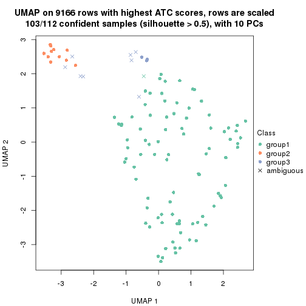
dimension_reduction(res, k = 4, method = "UMAP")
dimension_reduction(res, k = 5, method = "UMAP")
dimension_reduction(res, k = 6, method = "UMAP")
Following heatmap shows how subgroups are split when increasing k:
collect_classes(res)
If matrix rows can be associated to genes, consider to use GO_Enrichment(res,
...) to perform function enrichment for the signature genes.
The object with results only for a single top-value method and a single partition method can be extracted as:
res = res_list["ATC", "skmeans"]
# you can also extract it by
# res = res_list["ATC:skmeans"]
A summary of res and all the functions that can be applied to it:
res
#> A 'ConsensusPartition' object with k = 2, 3, 4, 5, 6.
#> On a matrix with 9166 rows and 112 columns.
#> Top rows (917, 1834, 2750, 3666, 4583) are extracted by 'ATC' method.
#> Subgroups are detected by 'skmeans' method.
#> Performed in total 1250 partitions by row resampling.
#> Best k for subgroups seems to be 2.
#>
#> Following methods can be applied to this 'ConsensusPartition' object:
#> [1] "cola_report" "collect_classes" "collect_plots"
#> [4] "collect_stats" "colnames" "compare_signatures"
#> [7] "consensus_heatmap" "dimension_reduction" "functional_enrichment"
#> [10] "get_anno_col" "get_anno" "get_classes"
#> [13] "get_consensus" "get_matrix" "get_membership"
#> [16] "get_param" "get_signatures" "get_stats"
#> [19] "is_best_k" "is_stable_k" "membership_heatmap"
#> [22] "ncol" "nrow" "plot_ecdf"
#> [25] "rownames" "select_partition_number" "show"
#> [28] "suggest_best_k" "test_to_known_factors"
collect_plots() function collects all the plots made from res for all k (number of partitions)
into one single page to provide an easy and fast comparison between different k.
collect_plots(res)
The plots are:
k and the heatmap of
predicted classes for each k.k.k.k.All the plots in panels can be made by individual functions and they are plotted later in this section.
select_partition_number() produces several plots showing different
statistics for choosing “optimized” k. There are following statistics:
k;k, the area increased is defined as \(A_k - A_{k-1}\).The detailed explanations of these statistics can be found in the cola vignette.
Generally speaking, lower PAC score, higher mean silhouette score or higher
concordance corresponds to better partition. Rand index and Jaccard index
measure how similar the current partition is compared to partition with k-1.
If they are too similar, we won't accept k is better than k-1.
select_partition_number(res)
The numeric values for all these statistics can be obtained by get_stats().
get_stats(res)
#> k 1-PAC mean_silhouette concordance area_increased Rand Jaccard
#> 2 2 1.000 0.956 0.983 0.3391 0.671 0.671
#> 3 3 0.672 0.759 0.896 0.3861 0.869 0.807
#> 4 4 0.433 0.561 0.790 0.2747 0.877 0.784
#> 5 5 0.410 0.551 0.739 0.1034 0.930 0.848
#> 6 6 0.403 0.493 0.693 0.0693 0.961 0.903
suggest_best_k() suggests the best \(k\) based on these statistics. The rules are as follows:
NA.suggest_best_k(res)
#> [1] 2
Following shows the table of the partitions (You need to click the show/hide
code output link to see it). The membership matrix (columns with name p*)
is inferred by
clue::cl_consensus()
function with the SE method. Basically the value in the membership matrix
represents the probability to belong to a certain group. The finall class
label for an item is determined with the group with highest probability it
belongs to.
In get_classes() function, the entropy is calculated from the membership
matrix and the silhouette score is calculated from the consensus matrix.
cbind(get_classes(res, k = 2), get_membership(res, k = 2))
#> class entropy silhouette p1 p2
#> SRR1003755 1 0.9954 0.140 0.540 0.460
#> SRR1003756 1 0.9954 0.140 0.540 0.460
#> SRR1003757 1 0.0000 0.984 1.000 0.000
#> SRR1003758 1 0.0000 0.984 1.000 0.000
#> SRR1003759 1 0.4298 0.889 0.912 0.088
#> SRR1003760 2 0.0000 0.977 0.000 1.000
#> SRR1003761 2 0.0000 0.977 0.000 1.000
#> SRR1003762 2 0.0000 0.977 0.000 1.000
#> SRR1003763 2 0.0000 0.977 0.000 1.000
#> SRR1003764 2 0.0000 0.977 0.000 1.000
#> SRR1003765 2 0.0000 0.977 0.000 1.000
#> SRR1003766 2 0.0000 0.977 0.000 1.000
#> SRR1003767 2 0.0000 0.977 0.000 1.000
#> SRR1003768 2 0.0000 0.977 0.000 1.000
#> SRR1003769 2 0.0000 0.977 0.000 1.000
#> SRR1003770 2 0.0000 0.977 0.000 1.000
#> SRR1003771 2 0.0000 0.977 0.000 1.000
#> SRR1003773 2 0.0000 0.977 0.000 1.000
#> SRR1003772 1 0.0000 0.984 1.000 0.000
#> SRR1003774 1 0.0000 0.984 1.000 0.000
#> SRR1003775 1 0.0000 0.984 1.000 0.000
#> SRR1003776 1 0.0000 0.984 1.000 0.000
#> SRR1003777 1 0.0000 0.984 1.000 0.000
#> SRR1003778 2 0.0000 0.977 0.000 1.000
#> SRR1003779 1 0.0000 0.984 1.000 0.000
#> SRR1003780 2 0.0000 0.977 0.000 1.000
#> SRR1003781 1 0.0000 0.984 1.000 0.000
#> SRR1003784 1 0.0000 0.984 1.000 0.000
#> SRR1003785 2 0.6887 0.784 0.184 0.816
#> SRR1003786 1 0.0000 0.984 1.000 0.000
#> SRR1003783 1 0.0000 0.984 1.000 0.000
#> SRR1003787 1 0.0000 0.984 1.000 0.000
#> SRR1003788 1 0.0000 0.984 1.000 0.000
#> SRR1003789 2 0.0000 0.977 0.000 1.000
#> SRR1003790 1 0.0000 0.984 1.000 0.000
#> SRR1003791 1 0.0000 0.984 1.000 0.000
#> SRR1003792 1 0.0000 0.984 1.000 0.000
#> SRR1003793 1 0.0000 0.984 1.000 0.000
#> SRR1003794 1 0.0000 0.984 1.000 0.000
#> SRR1003795 2 0.4815 0.882 0.104 0.896
#> SRR1003796 2 0.0000 0.977 0.000 1.000
#> SRR1003797 1 0.0000 0.984 1.000 0.000
#> SRR1003798 1 0.0000 0.984 1.000 0.000
#> SRR1003799 1 0.0000 0.984 1.000 0.000
#> SRR1003800 1 0.0000 0.984 1.000 0.000
#> SRR1003801 1 0.0000 0.984 1.000 0.000
#> SRR1003802 1 0.0000 0.984 1.000 0.000
#> SRR1003803 1 0.0000 0.984 1.000 0.000
#> SRR1003804 1 0.0000 0.984 1.000 0.000
#> SRR1003805 1 0.0000 0.984 1.000 0.000
#> SRR1003806 1 0.0000 0.984 1.000 0.000
#> SRR1003807 1 0.0000 0.984 1.000 0.000
#> SRR1003809 1 0.0000 0.984 1.000 0.000
#> SRR1003808 1 0.0000 0.984 1.000 0.000
#> SRR1003810 1 0.0000 0.984 1.000 0.000
#> SRR1003811 1 0.0000 0.984 1.000 0.000
#> SRR1003812 1 0.0000 0.984 1.000 0.000
#> SRR1003813 1 0.0000 0.984 1.000 0.000
#> SRR1003814 1 0.0000 0.984 1.000 0.000
#> SRR1003815 1 0.0000 0.984 1.000 0.000
#> SRR1003816 1 0.0000 0.984 1.000 0.000
#> SRR1003817 1 0.0000 0.984 1.000 0.000
#> SRR1003818 1 0.0000 0.984 1.000 0.000
#> SRR1003819 1 0.0000 0.984 1.000 0.000
#> SRR1003820 1 0.0000 0.984 1.000 0.000
#> SRR1003821 1 0.0000 0.984 1.000 0.000
#> SRR1003822 1 0.0000 0.984 1.000 0.000
#> SRR1003824 1 0.0000 0.984 1.000 0.000
#> SRR1003823 1 0.0000 0.984 1.000 0.000
#> SRR1003825 1 0.0000 0.984 1.000 0.000
#> SRR1003826 1 0.0000 0.984 1.000 0.000
#> SRR1003827 1 0.0000 0.984 1.000 0.000
#> SRR1003828 1 0.0000 0.984 1.000 0.000
#> SRR1003829 1 0.0000 0.984 1.000 0.000
#> SRR1003830 1 0.0000 0.984 1.000 0.000
#> SRR1003831 1 0.0000 0.984 1.000 0.000
#> SRR1003832 1 0.0000 0.984 1.000 0.000
#> SRR1003833 1 0.0000 0.984 1.000 0.000
#> SRR1003834 1 0.0000 0.984 1.000 0.000
#> SRR1003836 1 0.0000 0.984 1.000 0.000
#> SRR1003835 1 0.0000 0.984 1.000 0.000
#> SRR1003838 2 0.0000 0.977 0.000 1.000
#> SRR1003837 1 0.0000 0.984 1.000 0.000
#> SRR1003839 1 0.0000 0.984 1.000 0.000
#> SRR1003840 1 0.0000 0.984 1.000 0.000
#> SRR1003841 2 0.0000 0.977 0.000 1.000
#> SRR1003842 1 0.0000 0.984 1.000 0.000
#> SRR1003844 1 0.0000 0.984 1.000 0.000
#> SRR1003845 1 0.9460 0.409 0.636 0.364
#> SRR1003846 1 0.0000 0.984 1.000 0.000
#> SRR1003847 1 0.0000 0.984 1.000 0.000
#> SRR1003848 1 0.0000 0.984 1.000 0.000
#> SRR1003849 2 0.0938 0.968 0.012 0.988
#> SRR1003850 1 0.0000 0.984 1.000 0.000
#> SRR1003851 2 0.7219 0.761 0.200 0.800
#> SRR1003852 1 0.0000 0.984 1.000 0.000
#> SRR1003853 1 0.0000 0.984 1.000 0.000
#> SRR1003854 1 0.0000 0.984 1.000 0.000
#> SRR1003843 1 0.1184 0.968 0.984 0.016
#> SRR1003855 1 0.0000 0.984 1.000 0.000
#> SRR1003856 1 0.0000 0.984 1.000 0.000
#> SRR1003857 1 0.0000 0.984 1.000 0.000
#> SRR1003858 1 0.0000 0.984 1.000 0.000
#> SRR1003859 1 0.0000 0.984 1.000 0.000
#> SRR1003860 1 0.0000 0.984 1.000 0.000
#> SRR1003861 1 0.0000 0.984 1.000 0.000
#> SRR1003862 1 0.0000 0.984 1.000 0.000
#> SRR1003863 1 0.0000 0.984 1.000 0.000
#> SRR1003864 1 0.0000 0.984 1.000 0.000
#> SRR1003865 1 0.0000 0.984 1.000 0.000
#> SRR1003866 1 0.0000 0.984 1.000 0.000
#> SRR1003867 1 0.0000 0.984 1.000 0.000
cbind(get_classes(res, k = 3), get_membership(res, k = 3))
#> class entropy silhouette p1 p2 p3
#> SRR1003755 2 0.9599 -0.1259 0.388 0.412 0.200
#> SRR1003756 2 0.9599 -0.1259 0.388 0.412 0.200
#> SRR1003757 1 0.2165 0.8869 0.936 0.000 0.064
#> SRR1003758 1 0.2165 0.8869 0.936 0.000 0.064
#> SRR1003759 1 0.6529 0.6732 0.760 0.124 0.116
#> SRR1003760 2 0.0000 0.8482 0.000 1.000 0.000
#> SRR1003761 2 0.0000 0.8482 0.000 1.000 0.000
#> SRR1003762 2 0.0000 0.8482 0.000 1.000 0.000
#> SRR1003763 2 0.0000 0.8482 0.000 1.000 0.000
#> SRR1003764 2 0.0000 0.8482 0.000 1.000 0.000
#> SRR1003765 2 0.0000 0.8482 0.000 1.000 0.000
#> SRR1003766 2 0.0000 0.8482 0.000 1.000 0.000
#> SRR1003767 2 0.0000 0.8482 0.000 1.000 0.000
#> SRR1003768 2 0.0000 0.8482 0.000 1.000 0.000
#> SRR1003769 2 0.0000 0.8482 0.000 1.000 0.000
#> SRR1003770 2 0.0000 0.8482 0.000 1.000 0.000
#> SRR1003771 2 0.0000 0.8482 0.000 1.000 0.000
#> SRR1003773 2 0.6154 0.3584 0.000 0.592 0.408
#> SRR1003772 1 0.0000 0.9140 1.000 0.000 0.000
#> SRR1003774 1 0.0592 0.9125 0.988 0.000 0.012
#> SRR1003775 1 0.0000 0.9140 1.000 0.000 0.000
#> SRR1003776 1 0.0000 0.9140 1.000 0.000 0.000
#> SRR1003777 1 0.0000 0.9140 1.000 0.000 0.000
#> SRR1003778 2 0.4399 0.6771 0.000 0.812 0.188
#> SRR1003779 1 0.0000 0.9140 1.000 0.000 0.000
#> SRR1003780 2 0.0000 0.8482 0.000 1.000 0.000
#> SRR1003781 1 0.0000 0.9140 1.000 0.000 0.000
#> SRR1003784 3 0.5497 0.5273 0.292 0.000 0.708
#> SRR1003785 3 0.4842 0.3273 0.000 0.224 0.776
#> SRR1003786 1 0.0000 0.9140 1.000 0.000 0.000
#> SRR1003783 1 0.0000 0.9140 1.000 0.000 0.000
#> SRR1003787 1 0.0237 0.9137 0.996 0.000 0.004
#> SRR1003788 1 0.5621 0.5870 0.692 0.000 0.308
#> SRR1003789 2 0.0000 0.8482 0.000 1.000 0.000
#> SRR1003790 1 0.0000 0.9140 1.000 0.000 0.000
#> SRR1003791 1 0.5291 0.6441 0.732 0.000 0.268
#> SRR1003792 1 0.0000 0.9140 1.000 0.000 0.000
#> SRR1003793 1 0.0237 0.9136 0.996 0.000 0.004
#> SRR1003794 1 0.0747 0.9124 0.984 0.000 0.016
#> SRR1003795 3 0.5706 0.2023 0.000 0.320 0.680
#> SRR1003796 2 0.6168 0.3504 0.000 0.588 0.412
#> SRR1003797 1 0.0000 0.9140 1.000 0.000 0.000
#> SRR1003798 1 0.1163 0.9102 0.972 0.000 0.028
#> SRR1003799 1 0.0424 0.9127 0.992 0.000 0.008
#> SRR1003800 1 0.1964 0.8998 0.944 0.000 0.056
#> SRR1003801 1 0.2165 0.8931 0.936 0.000 0.064
#> SRR1003802 3 0.5497 0.5203 0.292 0.000 0.708
#> SRR1003803 1 0.0237 0.9134 0.996 0.000 0.004
#> SRR1003804 1 0.1529 0.9039 0.960 0.000 0.040
#> SRR1003805 1 0.0000 0.9140 1.000 0.000 0.000
#> SRR1003806 1 0.0747 0.9103 0.984 0.000 0.016
#> SRR1003807 1 0.6286 -0.0564 0.536 0.000 0.464
#> SRR1003809 1 0.6235 0.0819 0.564 0.000 0.436
#> SRR1003808 1 0.0747 0.9121 0.984 0.000 0.016
#> SRR1003810 1 0.0000 0.9140 1.000 0.000 0.000
#> SRR1003811 1 0.1289 0.9035 0.968 0.000 0.032
#> SRR1003812 1 0.0000 0.9140 1.000 0.000 0.000
#> SRR1003813 3 0.2537 0.4742 0.080 0.000 0.920
#> SRR1003814 1 0.0000 0.9140 1.000 0.000 0.000
#> SRR1003815 1 0.0237 0.9134 0.996 0.000 0.004
#> SRR1003816 1 0.0000 0.9140 1.000 0.000 0.000
#> SRR1003817 1 0.0000 0.9140 1.000 0.000 0.000
#> SRR1003818 1 0.0000 0.9140 1.000 0.000 0.000
#> SRR1003819 1 0.3192 0.8443 0.888 0.000 0.112
#> SRR1003820 1 0.0000 0.9140 1.000 0.000 0.000
#> SRR1003821 1 0.0000 0.9140 1.000 0.000 0.000
#> SRR1003822 1 0.6274 0.0499 0.544 0.000 0.456
#> SRR1003824 1 0.2959 0.8694 0.900 0.000 0.100
#> SRR1003823 1 0.0424 0.9135 0.992 0.000 0.008
#> SRR1003825 1 0.6008 0.4401 0.628 0.000 0.372
#> SRR1003826 1 0.0000 0.9140 1.000 0.000 0.000
#> SRR1003827 1 0.0000 0.9140 1.000 0.000 0.000
#> SRR1003828 1 0.4291 0.7815 0.820 0.000 0.180
#> SRR1003829 1 0.0237 0.9135 0.996 0.000 0.004
#> SRR1003830 1 0.0000 0.9140 1.000 0.000 0.000
#> SRR1003831 1 0.3267 0.8514 0.884 0.000 0.116
#> SRR1003832 1 0.0892 0.9117 0.980 0.000 0.020
#> SRR1003833 1 0.3192 0.8587 0.888 0.000 0.112
#> SRR1003834 1 0.2261 0.8901 0.932 0.000 0.068
#> SRR1003836 1 0.6079 0.3991 0.612 0.000 0.388
#> SRR1003835 1 0.4504 0.7619 0.804 0.000 0.196
#> SRR1003838 3 0.5810 0.1710 0.000 0.336 0.664
#> SRR1003837 1 0.2711 0.8791 0.912 0.000 0.088
#> SRR1003839 1 0.4178 0.7993 0.828 0.000 0.172
#> SRR1003840 1 0.4654 0.7524 0.792 0.000 0.208
#> SRR1003841 2 0.0000 0.8482 0.000 1.000 0.000
#> SRR1003842 1 0.1163 0.9097 0.972 0.000 0.028
#> SRR1003844 1 0.0000 0.9140 1.000 0.000 0.000
#> SRR1003845 3 0.8370 0.2965 0.416 0.084 0.500
#> SRR1003846 1 0.1753 0.9005 0.952 0.000 0.048
#> SRR1003847 1 0.2796 0.8727 0.908 0.000 0.092
#> SRR1003848 1 0.6008 0.4034 0.628 0.000 0.372
#> SRR1003849 3 0.5905 0.1313 0.000 0.352 0.648
#> SRR1003850 1 0.3941 0.8232 0.844 0.000 0.156
#> SRR1003851 3 0.3116 0.4109 0.000 0.108 0.892
#> SRR1003852 1 0.4346 0.7832 0.816 0.000 0.184
#> SRR1003853 1 0.3038 0.8618 0.896 0.000 0.104
#> SRR1003854 1 0.2448 0.8817 0.924 0.000 0.076
#> SRR1003843 3 0.6215 0.2521 0.428 0.000 0.572
#> SRR1003855 1 0.1643 0.9020 0.956 0.000 0.044
#> SRR1003856 3 0.6180 0.2648 0.416 0.000 0.584
#> SRR1003857 1 0.0424 0.9130 0.992 0.000 0.008
#> SRR1003858 1 0.1643 0.9015 0.956 0.000 0.044
#> SRR1003859 1 0.0237 0.9136 0.996 0.000 0.004
#> SRR1003860 1 0.0000 0.9140 1.000 0.000 0.000
#> SRR1003861 1 0.1529 0.9030 0.960 0.000 0.040
#> SRR1003862 1 0.0000 0.9140 1.000 0.000 0.000
#> SRR1003863 1 0.0747 0.9109 0.984 0.000 0.016
#> SRR1003864 1 0.0000 0.9140 1.000 0.000 0.000
#> SRR1003865 1 0.3038 0.8605 0.896 0.000 0.104
#> SRR1003866 1 0.0000 0.9140 1.000 0.000 0.000
#> SRR1003867 1 0.0000 0.9140 1.000 0.000 0.000
cbind(get_classes(res, k = 4), get_membership(res, k = 4))
#> class entropy silhouette p1 p2 p3 p4
#> SRR1003755 2 0.9532 -0.1121 0.220 0.352 0.304 0.124
#> SRR1003756 2 0.9532 -0.1121 0.220 0.352 0.304 0.124
#> SRR1003757 1 0.6100 0.3207 0.624 0.000 0.072 0.304
#> SRR1003758 1 0.6100 0.3207 0.624 0.000 0.072 0.304
#> SRR1003759 1 0.8100 -0.4366 0.440 0.064 0.092 0.404
#> SRR1003760 2 0.0000 0.8613 0.000 1.000 0.000 0.000
#> SRR1003761 2 0.0000 0.8613 0.000 1.000 0.000 0.000
#> SRR1003762 2 0.0000 0.8613 0.000 1.000 0.000 0.000
#> SRR1003763 2 0.0000 0.8613 0.000 1.000 0.000 0.000
#> SRR1003764 2 0.0000 0.8613 0.000 1.000 0.000 0.000
#> SRR1003765 2 0.0000 0.8613 0.000 1.000 0.000 0.000
#> SRR1003766 2 0.0000 0.8613 0.000 1.000 0.000 0.000
#> SRR1003767 2 0.0000 0.8613 0.000 1.000 0.000 0.000
#> SRR1003768 2 0.0000 0.8613 0.000 1.000 0.000 0.000
#> SRR1003769 2 0.0000 0.8613 0.000 1.000 0.000 0.000
#> SRR1003770 2 0.0000 0.8613 0.000 1.000 0.000 0.000
#> SRR1003771 2 0.0000 0.8613 0.000 1.000 0.000 0.000
#> SRR1003773 3 0.4941 0.4677 0.000 0.436 0.564 0.000
#> SRR1003772 1 0.0524 0.7354 0.988 0.000 0.008 0.004
#> SRR1003774 1 0.2443 0.7261 0.916 0.000 0.024 0.060
#> SRR1003775 1 0.0336 0.7366 0.992 0.000 0.000 0.008
#> SRR1003776 1 0.1302 0.7417 0.956 0.000 0.000 0.044
#> SRR1003777 1 0.0817 0.7383 0.976 0.000 0.000 0.024
#> SRR1003778 2 0.4522 0.2202 0.000 0.680 0.320 0.000
#> SRR1003779 1 0.0804 0.7366 0.980 0.000 0.008 0.012
#> SRR1003780 2 0.0000 0.8613 0.000 1.000 0.000 0.000
#> SRR1003781 1 0.2101 0.7337 0.928 0.000 0.012 0.060
#> SRR1003784 4 0.7060 0.0571 0.128 0.000 0.376 0.496
#> SRR1003785 3 0.4139 0.6946 0.000 0.144 0.816 0.040
#> SRR1003786 1 0.1545 0.7406 0.952 0.000 0.008 0.040
#> SRR1003783 1 0.0336 0.7378 0.992 0.000 0.000 0.008
#> SRR1003787 1 0.2408 0.7317 0.896 0.000 0.000 0.104
#> SRR1003788 4 0.6805 0.5129 0.400 0.000 0.100 0.500
#> SRR1003789 2 0.0000 0.8613 0.000 1.000 0.000 0.000
#> SRR1003790 1 0.1767 0.7390 0.944 0.000 0.012 0.044
#> SRR1003791 1 0.6506 -0.4041 0.472 0.000 0.072 0.456
#> SRR1003792 1 0.2530 0.7324 0.896 0.000 0.004 0.100
#> SRR1003793 1 0.2799 0.7288 0.884 0.000 0.008 0.108
#> SRR1003794 1 0.3166 0.7196 0.868 0.000 0.016 0.116
#> SRR1003795 3 0.5733 0.6360 0.000 0.312 0.640 0.048
#> SRR1003796 3 0.4948 0.4626 0.000 0.440 0.560 0.000
#> SRR1003797 1 0.1022 0.7407 0.968 0.000 0.000 0.032
#> SRR1003798 1 0.4744 0.5759 0.736 0.000 0.024 0.240
#> SRR1003799 1 0.2335 0.7395 0.920 0.000 0.020 0.060
#> SRR1003800 1 0.5678 0.3711 0.640 0.000 0.044 0.316
#> SRR1003801 1 0.5590 0.4511 0.692 0.000 0.064 0.244
#> SRR1003802 3 0.7239 0.0234 0.156 0.000 0.500 0.344
#> SRR1003803 1 0.2676 0.7347 0.896 0.000 0.012 0.092
#> SRR1003804 1 0.4636 0.6328 0.772 0.000 0.040 0.188
#> SRR1003805 1 0.0657 0.7387 0.984 0.000 0.004 0.012
#> SRR1003806 1 0.3082 0.7302 0.884 0.000 0.032 0.084
#> SRR1003807 1 0.7849 -0.4601 0.380 0.000 0.268 0.352
#> SRR1003809 1 0.7660 -0.3250 0.448 0.000 0.228 0.324
#> SRR1003808 1 0.3763 0.6482 0.832 0.000 0.024 0.144
#> SRR1003810 1 0.1938 0.7347 0.936 0.000 0.012 0.052
#> SRR1003811 1 0.4300 0.6277 0.820 0.000 0.088 0.092
#> SRR1003812 1 0.0804 0.7353 0.980 0.000 0.008 0.012
#> SRR1003813 3 0.4095 0.5699 0.024 0.000 0.804 0.172
#> SRR1003814 1 0.1807 0.7299 0.940 0.000 0.008 0.052
#> SRR1003815 1 0.2844 0.7116 0.900 0.000 0.048 0.052
#> SRR1003816 1 0.0672 0.7342 0.984 0.000 0.008 0.008
#> SRR1003817 1 0.0524 0.7343 0.988 0.000 0.004 0.008
#> SRR1003818 1 0.1488 0.7350 0.956 0.000 0.012 0.032
#> SRR1003819 1 0.5811 0.3883 0.704 0.000 0.116 0.180
#> SRR1003820 1 0.1305 0.7427 0.960 0.000 0.004 0.036
#> SRR1003821 1 0.1305 0.7405 0.960 0.000 0.004 0.036
#> SRR1003822 1 0.7877 -0.4681 0.360 0.000 0.280 0.360
#> SRR1003824 1 0.6134 0.4248 0.660 0.000 0.104 0.236
#> SRR1003823 1 0.2706 0.7364 0.900 0.000 0.020 0.080
#> SRR1003825 4 0.6058 0.6094 0.336 0.000 0.060 0.604
#> SRR1003826 1 0.0921 0.7401 0.972 0.000 0.000 0.028
#> SRR1003827 1 0.1576 0.7442 0.948 0.000 0.004 0.048
#> SRR1003828 1 0.5851 0.3892 0.660 0.000 0.068 0.272
#> SRR1003829 1 0.2760 0.7202 0.872 0.000 0.000 0.128
#> SRR1003830 1 0.2987 0.7289 0.880 0.000 0.016 0.104
#> SRR1003831 1 0.5300 0.0674 0.580 0.000 0.012 0.408
#> SRR1003832 1 0.3958 0.6815 0.816 0.000 0.024 0.160
#> SRR1003833 1 0.5268 0.2229 0.592 0.000 0.012 0.396
#> SRR1003834 1 0.4914 0.4396 0.676 0.000 0.012 0.312
#> SRR1003836 4 0.6595 0.6547 0.268 0.000 0.124 0.608
#> SRR1003835 4 0.6709 0.3654 0.456 0.000 0.088 0.456
#> SRR1003838 3 0.4599 0.6827 0.000 0.248 0.736 0.016
#> SRR1003837 1 0.5203 0.1241 0.576 0.000 0.008 0.416
#> SRR1003839 4 0.5372 0.3910 0.444 0.000 0.012 0.544
#> SRR1003840 4 0.5837 0.5423 0.400 0.000 0.036 0.564
#> SRR1003841 2 0.0000 0.8613 0.000 1.000 0.000 0.000
#> SRR1003842 1 0.3808 0.6755 0.812 0.000 0.012 0.176
#> SRR1003844 1 0.2342 0.7399 0.912 0.000 0.008 0.080
#> SRR1003845 4 0.6541 0.5323 0.160 0.016 0.148 0.676
#> SRR1003846 1 0.5386 0.3572 0.632 0.000 0.024 0.344
#> SRR1003847 1 0.5263 -0.0948 0.544 0.000 0.008 0.448
#> SRR1003848 4 0.7540 0.5936 0.304 0.000 0.216 0.480
#> SRR1003849 3 0.5198 0.6769 0.000 0.252 0.708 0.040
#> SRR1003850 1 0.6135 0.1077 0.568 0.000 0.056 0.376
#> SRR1003851 3 0.5032 0.6666 0.000 0.080 0.764 0.156
#> SRR1003852 4 0.5269 0.5683 0.364 0.000 0.016 0.620
#> SRR1003853 4 0.5409 0.1733 0.492 0.000 0.012 0.496
#> SRR1003854 1 0.4564 0.4216 0.672 0.000 0.000 0.328
#> SRR1003843 4 0.6245 0.5287 0.164 0.000 0.168 0.668
#> SRR1003855 1 0.4761 0.4313 0.664 0.000 0.004 0.332
#> SRR1003856 4 0.6163 0.5520 0.164 0.000 0.160 0.676
#> SRR1003857 1 0.4079 0.6721 0.800 0.000 0.020 0.180
#> SRR1003858 1 0.3791 0.6311 0.796 0.000 0.004 0.200
#> SRR1003859 1 0.3335 0.7069 0.860 0.000 0.020 0.120
#> SRR1003860 1 0.2021 0.7439 0.932 0.000 0.012 0.056
#> SRR1003861 1 0.4175 0.6361 0.784 0.000 0.016 0.200
#> SRR1003862 1 0.0188 0.7360 0.996 0.000 0.000 0.004
#> SRR1003863 1 0.3205 0.7238 0.872 0.000 0.024 0.104
#> SRR1003864 1 0.0524 0.7351 0.988 0.000 0.004 0.008
#> SRR1003865 1 0.5279 0.4587 0.716 0.000 0.052 0.232
#> SRR1003866 1 0.0804 0.7359 0.980 0.000 0.008 0.012
#> SRR1003867 1 0.0817 0.7420 0.976 0.000 0.000 0.024
cbind(get_classes(res, k = 5), get_membership(res, k = 5))
#> class entropy silhouette p1 p2 p3 p4 p5
#> SRR1003755 5 0.8161 0.3104 0.120 0.268 0.084 0.048 0.480
#> SRR1003756 5 0.8161 0.3104 0.120 0.268 0.084 0.048 0.480
#> SRR1003757 1 0.6703 -0.2033 0.424 0.000 0.000 0.264 0.312
#> SRR1003758 1 0.6703 -0.2033 0.424 0.000 0.000 0.264 0.312
#> SRR1003759 4 0.9004 0.1612 0.304 0.064 0.096 0.340 0.196
#> SRR1003760 2 0.0000 0.9661 0.000 1.000 0.000 0.000 0.000
#> SRR1003761 2 0.0000 0.9661 0.000 1.000 0.000 0.000 0.000
#> SRR1003762 2 0.0000 0.9661 0.000 1.000 0.000 0.000 0.000
#> SRR1003763 2 0.0000 0.9661 0.000 1.000 0.000 0.000 0.000
#> SRR1003764 2 0.0000 0.9661 0.000 1.000 0.000 0.000 0.000
#> SRR1003765 2 0.0000 0.9661 0.000 1.000 0.000 0.000 0.000
#> SRR1003766 2 0.0000 0.9661 0.000 1.000 0.000 0.000 0.000
#> SRR1003767 2 0.0000 0.9661 0.000 1.000 0.000 0.000 0.000
#> SRR1003768 2 0.0000 0.9661 0.000 1.000 0.000 0.000 0.000
#> SRR1003769 2 0.0000 0.9661 0.000 1.000 0.000 0.000 0.000
#> SRR1003770 2 0.0000 0.9661 0.000 1.000 0.000 0.000 0.000
#> SRR1003771 2 0.0000 0.9661 0.000 1.000 0.000 0.000 0.000
#> SRR1003773 3 0.4508 0.6540 0.000 0.332 0.648 0.000 0.020
#> SRR1003772 1 0.1117 0.7119 0.964 0.000 0.000 0.020 0.016
#> SRR1003774 1 0.4135 0.6501 0.800 0.000 0.008 0.084 0.108
#> SRR1003775 1 0.1493 0.7246 0.948 0.000 0.000 0.028 0.024
#> SRR1003776 1 0.2228 0.7216 0.912 0.000 0.000 0.048 0.040
#> SRR1003777 1 0.1173 0.7173 0.964 0.000 0.004 0.020 0.012
#> SRR1003778 2 0.4403 0.0694 0.000 0.608 0.384 0.000 0.008
#> SRR1003779 1 0.1648 0.7188 0.940 0.000 0.000 0.020 0.040
#> SRR1003780 2 0.0000 0.9661 0.000 1.000 0.000 0.000 0.000
#> SRR1003781 1 0.3517 0.6924 0.840 0.000 0.004 0.084 0.072
#> SRR1003784 5 0.7732 0.3209 0.064 0.000 0.252 0.276 0.408
#> SRR1003785 3 0.3533 0.6815 0.000 0.104 0.836 0.004 0.056
#> SRR1003786 1 0.1331 0.7225 0.952 0.000 0.000 0.040 0.008
#> SRR1003783 1 0.1106 0.7190 0.964 0.000 0.000 0.012 0.024
#> SRR1003787 1 0.3328 0.6959 0.812 0.000 0.008 0.176 0.004
#> SRR1003788 4 0.7428 0.3791 0.292 0.000 0.072 0.476 0.160
#> SRR1003789 2 0.0000 0.9661 0.000 1.000 0.000 0.000 0.000
#> SRR1003790 1 0.2233 0.7235 0.904 0.000 0.000 0.080 0.016
#> SRR1003791 1 0.7599 -0.4389 0.404 0.000 0.076 0.360 0.160
#> SRR1003792 1 0.3732 0.7042 0.812 0.000 0.008 0.148 0.032
#> SRR1003793 1 0.3106 0.7148 0.840 0.000 0.000 0.140 0.020
#> SRR1003794 1 0.5058 0.6052 0.692 0.000 0.004 0.224 0.080
#> SRR1003795 3 0.5970 0.6735 0.000 0.196 0.664 0.056 0.084
#> SRR1003796 3 0.4270 0.6505 0.000 0.336 0.656 0.004 0.004
#> SRR1003797 1 0.2110 0.7271 0.912 0.000 0.000 0.072 0.016
#> SRR1003798 1 0.5416 0.4753 0.632 0.000 0.004 0.284 0.080
#> SRR1003799 1 0.3112 0.7178 0.856 0.000 0.000 0.100 0.044
#> SRR1003800 1 0.6265 0.3517 0.584 0.000 0.020 0.268 0.128
#> SRR1003801 1 0.5833 0.4593 0.640 0.000 0.024 0.244 0.092
#> SRR1003802 5 0.7505 0.3218 0.072 0.000 0.292 0.172 0.464
#> SRR1003803 1 0.4275 0.6959 0.792 0.000 0.012 0.120 0.076
#> SRR1003804 1 0.5607 0.5304 0.660 0.000 0.016 0.228 0.096
#> SRR1003805 1 0.1836 0.7225 0.932 0.000 0.000 0.036 0.032
#> SRR1003806 1 0.3683 0.7108 0.828 0.000 0.004 0.096 0.072
#> SRR1003807 5 0.8589 0.1160 0.256 0.000 0.232 0.228 0.284
#> SRR1003809 5 0.8046 0.1895 0.296 0.000 0.140 0.160 0.404
#> SRR1003808 1 0.5199 0.5067 0.708 0.000 0.008 0.132 0.152
#> SRR1003810 1 0.2989 0.7053 0.868 0.000 0.000 0.072 0.060
#> SRR1003811 1 0.5286 0.4826 0.696 0.000 0.016 0.084 0.204
#> SRR1003812 1 0.0771 0.7118 0.976 0.000 0.000 0.004 0.020
#> SRR1003813 3 0.5971 0.1476 0.020 0.000 0.520 0.064 0.396
#> SRR1003814 1 0.2237 0.7145 0.916 0.000 0.004 0.040 0.040
#> SRR1003815 1 0.3507 0.6639 0.828 0.000 0.000 0.052 0.120
#> SRR1003816 1 0.0912 0.7107 0.972 0.000 0.000 0.012 0.016
#> SRR1003817 1 0.1310 0.7117 0.956 0.000 0.000 0.024 0.020
#> SRR1003818 1 0.1828 0.7148 0.936 0.000 0.004 0.032 0.028
#> SRR1003819 1 0.7141 0.0698 0.552 0.000 0.076 0.180 0.192
#> SRR1003820 1 0.1774 0.7274 0.932 0.000 0.000 0.052 0.016
#> SRR1003821 1 0.1408 0.7227 0.948 0.000 0.000 0.044 0.008
#> SRR1003822 5 0.8418 0.1417 0.256 0.000 0.188 0.204 0.352
#> SRR1003824 1 0.5987 0.4152 0.616 0.000 0.012 0.236 0.136
#> SRR1003823 1 0.3474 0.7128 0.836 0.000 0.004 0.116 0.044
#> SRR1003825 4 0.7602 0.3068 0.236 0.000 0.072 0.464 0.228
#> SRR1003826 1 0.1809 0.7260 0.928 0.000 0.000 0.060 0.012
#> SRR1003827 1 0.1942 0.7290 0.920 0.000 0.000 0.068 0.012
#> SRR1003828 1 0.6935 -0.1623 0.460 0.000 0.036 0.368 0.136
#> SRR1003829 1 0.3381 0.7039 0.820 0.000 0.004 0.160 0.016
#> SRR1003830 1 0.3525 0.6956 0.816 0.000 0.004 0.156 0.024
#> SRR1003831 1 0.5190 0.1531 0.540 0.000 0.008 0.424 0.028
#> SRR1003832 1 0.4509 0.6197 0.716 0.000 0.000 0.236 0.048
#> SRR1003833 1 0.5655 0.2051 0.544 0.000 0.016 0.392 0.048
#> SRR1003834 1 0.5857 0.3394 0.588 0.000 0.012 0.312 0.088
#> SRR1003836 4 0.6663 0.3921 0.180 0.000 0.076 0.612 0.132
#> SRR1003835 4 0.7601 0.3909 0.328 0.000 0.064 0.416 0.192
#> SRR1003838 3 0.3613 0.7176 0.000 0.160 0.812 0.012 0.016
#> SRR1003837 1 0.5532 0.1173 0.508 0.000 0.008 0.436 0.048
#> SRR1003839 4 0.5681 0.4438 0.360 0.000 0.024 0.572 0.044
#> SRR1003840 4 0.7107 0.4888 0.348 0.000 0.068 0.476 0.108
#> SRR1003841 2 0.0000 0.9661 0.000 1.000 0.000 0.000 0.000
#> SRR1003842 1 0.4830 0.5865 0.684 0.000 0.000 0.256 0.060
#> SRR1003844 1 0.3012 0.7137 0.852 0.000 0.000 0.124 0.024
#> SRR1003845 4 0.6773 0.1108 0.068 0.016 0.180 0.628 0.108
#> SRR1003846 1 0.5367 0.4258 0.600 0.000 0.004 0.336 0.060
#> SRR1003847 4 0.5594 0.3222 0.408 0.000 0.012 0.532 0.048
#> SRR1003848 4 0.8232 0.1874 0.228 0.000 0.136 0.380 0.256
#> SRR1003849 3 0.5807 0.6967 0.000 0.232 0.648 0.024 0.096
#> SRR1003850 1 0.6812 -0.0555 0.472 0.000 0.036 0.372 0.120
#> SRR1003851 3 0.4598 0.5426 0.000 0.032 0.784 0.092 0.092
#> SRR1003852 4 0.6619 0.5125 0.304 0.000 0.056 0.552 0.088
#> SRR1003853 4 0.5394 0.3492 0.400 0.000 0.000 0.540 0.060
#> SRR1003854 1 0.4201 0.5102 0.664 0.000 0.000 0.328 0.008
#> SRR1003843 4 0.7271 0.0152 0.072 0.000 0.244 0.520 0.164
#> SRR1003855 1 0.4990 0.3926 0.600 0.000 0.000 0.360 0.040
#> SRR1003856 4 0.7424 0.2117 0.132 0.000 0.144 0.536 0.188
#> SRR1003857 1 0.4062 0.6713 0.764 0.000 0.000 0.196 0.040
#> SRR1003858 1 0.4234 0.6554 0.760 0.000 0.000 0.184 0.056
#> SRR1003859 1 0.3419 0.6881 0.804 0.000 0.000 0.180 0.016
#> SRR1003860 1 0.2362 0.7291 0.900 0.000 0.000 0.076 0.024
#> SRR1003861 1 0.4302 0.6499 0.744 0.000 0.000 0.208 0.048
#> SRR1003862 1 0.1012 0.7169 0.968 0.000 0.000 0.020 0.012
#> SRR1003863 1 0.4524 0.6639 0.768 0.000 0.008 0.132 0.092
#> SRR1003864 1 0.1386 0.7193 0.952 0.000 0.000 0.032 0.016
#> SRR1003865 1 0.7130 -0.2058 0.472 0.000 0.028 0.256 0.244
#> SRR1003866 1 0.2730 0.7144 0.892 0.000 0.008 0.044 0.056
#> SRR1003867 1 0.2679 0.7227 0.892 0.000 0.004 0.048 0.056
cbind(get_classes(res, k = 6), get_membership(res, k = 6))
#> class entropy silhouette p1 p2 p3 p4 p5 p6
#> SRR1003755 5 0.5371 0.1767 0.092 0.208 0.016 0.000 0.664 0.020
#> SRR1003756 5 0.5371 0.1767 0.092 0.208 0.016 0.000 0.664 0.020
#> SRR1003757 5 0.6870 -0.0450 0.340 0.000 0.000 0.056 0.380 0.224
#> SRR1003758 5 0.6879 -0.0489 0.336 0.000 0.000 0.056 0.380 0.228
#> SRR1003759 4 0.9221 0.0938 0.200 0.052 0.068 0.280 0.164 0.236
#> SRR1003760 2 0.0000 0.9581 0.000 1.000 0.000 0.000 0.000 0.000
#> SRR1003761 2 0.0000 0.9581 0.000 1.000 0.000 0.000 0.000 0.000
#> SRR1003762 2 0.0000 0.9581 0.000 1.000 0.000 0.000 0.000 0.000
#> SRR1003763 2 0.0000 0.9581 0.000 1.000 0.000 0.000 0.000 0.000
#> SRR1003764 2 0.0000 0.9581 0.000 1.000 0.000 0.000 0.000 0.000
#> SRR1003765 2 0.0000 0.9581 0.000 1.000 0.000 0.000 0.000 0.000
#> SRR1003766 2 0.0000 0.9581 0.000 1.000 0.000 0.000 0.000 0.000
#> SRR1003767 2 0.0000 0.9581 0.000 1.000 0.000 0.000 0.000 0.000
#> SRR1003768 2 0.0000 0.9581 0.000 1.000 0.000 0.000 0.000 0.000
#> SRR1003769 2 0.0000 0.9581 0.000 1.000 0.000 0.000 0.000 0.000
#> SRR1003770 2 0.0000 0.9581 0.000 1.000 0.000 0.000 0.000 0.000
#> SRR1003771 2 0.0000 0.9581 0.000 1.000 0.000 0.000 0.000 0.000
#> SRR1003773 3 0.3977 0.7028 0.000 0.284 0.692 0.004 0.020 0.000
#> SRR1003772 1 0.1078 0.6875 0.964 0.000 0.000 0.008 0.012 0.016
#> SRR1003774 1 0.5332 0.5873 0.716 0.000 0.020 0.084 0.072 0.108
#> SRR1003775 1 0.1350 0.6929 0.952 0.000 0.000 0.008 0.020 0.020
#> SRR1003776 1 0.3296 0.6956 0.844 0.000 0.000 0.036 0.036 0.084
#> SRR1003777 1 0.1838 0.6960 0.928 0.000 0.000 0.020 0.012 0.040
#> SRR1003778 2 0.4337 -0.3054 0.000 0.500 0.480 0.000 0.020 0.000
#> SRR1003779 1 0.2638 0.6977 0.884 0.000 0.000 0.016 0.040 0.060
#> SRR1003780 2 0.0000 0.9581 0.000 1.000 0.000 0.000 0.000 0.000
#> SRR1003781 1 0.4830 0.6355 0.732 0.000 0.000 0.088 0.060 0.120
#> SRR1003784 4 0.8104 0.1734 0.048 0.000 0.176 0.392 0.184 0.200
#> SRR1003785 3 0.3546 0.7177 0.000 0.084 0.836 0.040 0.032 0.008
#> SRR1003786 1 0.1793 0.6939 0.928 0.000 0.000 0.012 0.012 0.048
#> SRR1003783 1 0.1268 0.6921 0.952 0.000 0.000 0.008 0.004 0.036
#> SRR1003787 1 0.3972 0.6543 0.740 0.000 0.000 0.024 0.016 0.220
#> SRR1003788 6 0.7796 0.0927 0.184 0.000 0.056 0.184 0.120 0.456
#> SRR1003789 2 0.0000 0.9581 0.000 1.000 0.000 0.000 0.000 0.000
#> SRR1003790 1 0.2766 0.7036 0.868 0.000 0.000 0.012 0.028 0.092
#> SRR1003791 1 0.8246 -0.3926 0.352 0.000 0.068 0.220 0.116 0.244
#> SRR1003792 1 0.3973 0.6788 0.780 0.000 0.000 0.048 0.024 0.148
#> SRR1003793 1 0.3839 0.6741 0.776 0.000 0.000 0.032 0.020 0.172
#> SRR1003794 1 0.5443 0.5833 0.656 0.000 0.004 0.080 0.048 0.212
#> SRR1003795 3 0.6305 0.6849 0.000 0.216 0.608 0.064 0.068 0.044
#> SRR1003796 3 0.3738 0.7089 0.000 0.280 0.704 0.000 0.016 0.000
#> SRR1003797 1 0.2367 0.6975 0.888 0.000 0.000 0.016 0.008 0.088
#> SRR1003798 1 0.6188 0.4701 0.572 0.000 0.008 0.108 0.056 0.256
#> SRR1003799 1 0.4380 0.6853 0.772 0.000 0.008 0.044 0.048 0.128
#> SRR1003800 1 0.6419 0.3449 0.528 0.000 0.008 0.148 0.044 0.272
#> SRR1003801 1 0.7120 0.2311 0.516 0.000 0.016 0.164 0.140 0.164
#> SRR1003802 5 0.8411 -0.3254 0.116 0.000 0.188 0.264 0.336 0.096
#> SRR1003803 1 0.4887 0.6631 0.732 0.000 0.004 0.096 0.048 0.120
#> SRR1003804 1 0.6524 0.4960 0.584 0.000 0.028 0.120 0.064 0.204
#> SRR1003805 1 0.2745 0.7033 0.884 0.000 0.004 0.040 0.020 0.052
#> SRR1003806 1 0.4455 0.6771 0.764 0.000 0.004 0.068 0.040 0.124
#> SRR1003807 4 0.8322 0.2485 0.256 0.000 0.108 0.372 0.140 0.124
#> SRR1003809 4 0.8095 0.2375 0.324 0.000 0.084 0.340 0.164 0.088
#> SRR1003808 1 0.6537 0.3942 0.596 0.000 0.020 0.156 0.120 0.108
#> SRR1003810 1 0.4537 0.6356 0.764 0.000 0.004 0.108 0.060 0.064
#> SRR1003811 1 0.6237 0.3941 0.620 0.000 0.016 0.128 0.156 0.080
#> SRR1003812 1 0.1167 0.6884 0.960 0.000 0.000 0.008 0.012 0.020
#> SRR1003813 3 0.6459 0.3587 0.008 0.000 0.532 0.248 0.168 0.044
#> SRR1003814 1 0.3902 0.6618 0.804 0.000 0.000 0.080 0.036 0.080
#> SRR1003815 1 0.4512 0.6264 0.768 0.000 0.004 0.064 0.096 0.068
#> SRR1003816 1 0.1369 0.6889 0.952 0.000 0.000 0.016 0.016 0.016
#> SRR1003817 1 0.1364 0.6877 0.952 0.000 0.000 0.016 0.012 0.020
#> SRR1003818 1 0.2629 0.6896 0.892 0.000 0.004 0.040 0.024 0.040
#> SRR1003819 1 0.7409 -0.0139 0.500 0.000 0.060 0.224 0.088 0.128
#> SRR1003820 1 0.2488 0.7006 0.888 0.000 0.000 0.020 0.016 0.076
#> SRR1003821 1 0.2488 0.6974 0.888 0.000 0.000 0.016 0.020 0.076
#> SRR1003822 4 0.8360 0.2687 0.224 0.000 0.096 0.376 0.172 0.132
#> SRR1003824 1 0.7131 0.1056 0.448 0.000 0.004 0.100 0.192 0.256
#> SRR1003823 1 0.3778 0.6842 0.784 0.000 0.000 0.024 0.028 0.164
#> SRR1003825 6 0.8190 0.0506 0.196 0.000 0.052 0.280 0.136 0.336
#> SRR1003826 1 0.2345 0.6975 0.896 0.000 0.000 0.016 0.016 0.072
#> SRR1003827 1 0.3316 0.6998 0.828 0.000 0.000 0.024 0.024 0.124
#> SRR1003828 1 0.7294 0.0874 0.480 0.000 0.032 0.228 0.076 0.184
#> SRR1003829 1 0.4065 0.6725 0.764 0.000 0.004 0.040 0.016 0.176
#> SRR1003830 1 0.4482 0.6544 0.720 0.000 0.004 0.020 0.044 0.212
#> SRR1003831 1 0.6151 0.0613 0.464 0.000 0.008 0.100 0.032 0.396
#> SRR1003832 1 0.5054 0.5950 0.664 0.000 0.000 0.044 0.052 0.240
#> SRR1003833 1 0.5695 0.1326 0.480 0.000 0.008 0.044 0.040 0.428
#> SRR1003834 1 0.5987 0.2728 0.512 0.000 0.012 0.072 0.036 0.368
#> SRR1003836 6 0.7265 0.1701 0.136 0.000 0.068 0.236 0.056 0.504
#> SRR1003835 6 0.8227 0.0157 0.248 0.000 0.064 0.224 0.116 0.348
#> SRR1003838 3 0.3904 0.7482 0.000 0.148 0.788 0.040 0.020 0.004
#> SRR1003837 6 0.6027 -0.0236 0.432 0.000 0.008 0.084 0.032 0.444
#> SRR1003839 6 0.6464 0.3383 0.248 0.000 0.036 0.092 0.052 0.572
#> SRR1003840 6 0.7878 0.2164 0.276 0.000 0.048 0.212 0.088 0.376
#> SRR1003841 2 0.0000 0.9581 0.000 1.000 0.000 0.000 0.000 0.000
#> SRR1003842 1 0.5761 0.3936 0.552 0.000 0.008 0.056 0.044 0.340
#> SRR1003844 1 0.3816 0.6878 0.784 0.000 0.000 0.032 0.024 0.160
#> SRR1003845 6 0.7461 0.0177 0.032 0.016 0.128 0.200 0.104 0.520
#> SRR1003846 1 0.5753 0.1842 0.476 0.000 0.004 0.048 0.048 0.424
#> SRR1003847 6 0.6830 0.3005 0.340 0.000 0.012 0.116 0.076 0.456
#> SRR1003848 6 0.8436 0.0249 0.200 0.000 0.092 0.284 0.116 0.308
#> SRR1003849 3 0.5687 0.7220 0.000 0.168 0.664 0.040 0.108 0.020
#> SRR1003850 1 0.7137 -0.1497 0.396 0.000 0.024 0.124 0.076 0.380
#> SRR1003851 3 0.5332 0.5991 0.000 0.036 0.716 0.128 0.076 0.044
#> SRR1003852 6 0.6584 0.3339 0.232 0.000 0.016 0.124 0.072 0.556
#> SRR1003853 6 0.6268 0.3389 0.292 0.000 0.016 0.084 0.056 0.552
#> SRR1003854 1 0.5415 0.3456 0.528 0.000 0.000 0.064 0.024 0.384
#> SRR1003843 6 0.7612 -0.0721 0.040 0.000 0.172 0.312 0.080 0.396
#> SRR1003855 1 0.5569 0.2591 0.504 0.000 0.000 0.064 0.032 0.400
#> SRR1003856 6 0.7427 0.0048 0.060 0.000 0.104 0.296 0.084 0.456
#> SRR1003857 1 0.5387 0.5603 0.636 0.000 0.008 0.060 0.036 0.260
#> SRR1003858 1 0.5806 0.4418 0.592 0.000 0.000 0.104 0.048 0.256
#> SRR1003859 1 0.4082 0.6658 0.752 0.000 0.000 0.028 0.028 0.192
#> SRR1003860 1 0.2706 0.7060 0.876 0.000 0.004 0.028 0.008 0.084
#> SRR1003861 1 0.5539 0.5123 0.624 0.000 0.008 0.120 0.016 0.232
#> SRR1003862 1 0.0984 0.6904 0.968 0.000 0.000 0.012 0.008 0.012
#> SRR1003863 1 0.5225 0.6223 0.720 0.000 0.020 0.108 0.048 0.104
#> SRR1003864 1 0.1382 0.6910 0.948 0.000 0.000 0.008 0.008 0.036
#> SRR1003865 1 0.8313 -0.3674 0.368 0.000 0.072 0.228 0.152 0.180
#> SRR1003866 1 0.3294 0.6940 0.848 0.000 0.000 0.048 0.040 0.064
#> SRR1003867 1 0.3331 0.6951 0.836 0.000 0.000 0.056 0.016 0.092
Heatmaps for the consensus matrix. It visualizes the probability of two samples to be in a same group.
consensus_heatmap(res, k = 2)

consensus_heatmap(res, k = 3)
consensus_heatmap(res, k = 4)
consensus_heatmap(res, k = 5)
consensus_heatmap(res, k = 6)
Heatmaps for the membership of samples in all partitions to see how consistent they are:
membership_heatmap(res, k = 2)
membership_heatmap(res, k = 3)
membership_heatmap(res, k = 4)
membership_heatmap(res, k = 5)
membership_heatmap(res, k = 6)
As soon as we have had the classes for columns, we can look for signatures which are significantly different between classes which can be candidate marks for certain classes. Following are the heatmaps for signatures.
Signature heatmaps where rows are scaled:
get_signatures(res, k = 2)
get_signatures(res, k = 3)
get_signatures(res, k = 4)
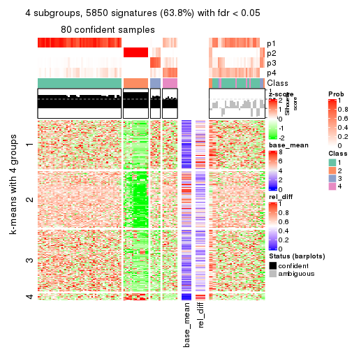
get_signatures(res, k = 5)
get_signatures(res, k = 6)
Signature heatmaps where rows are not scaled:
get_signatures(res, k = 2, scale_rows = FALSE)
get_signatures(res, k = 3, scale_rows = FALSE)
get_signatures(res, k = 4, scale_rows = FALSE)
get_signatures(res, k = 5, scale_rows = FALSE)
get_signatures(res, k = 6, scale_rows = FALSE)
Compare the overlap of signatures from different k:
compare_signatures(res)
get_signature() returns a data frame invisibly. TO get the list of signatures, the function
call should be assigned to a variable explicitly. In following code, if plot argument is set
to FALSE, no heatmap is plotted while only the differential analysis is performed.
# code only for demonstration
tb = get_signature(res, k = ..., plot = FALSE)
An example of the output of tb is:
#> which_row fdr mean_1 mean_2 scaled_mean_1 scaled_mean_2 km
#> 1 38 0.042760348 8.373488 9.131774 -0.5533452 0.5164555 1
#> 2 40 0.018707592 7.106213 8.469186 -0.6173731 0.5762149 1
#> 3 55 0.019134737 10.221463 11.207825 -0.6159697 0.5749050 1
#> 4 59 0.006059896 5.921854 7.869574 -0.6899429 0.6439467 1
#> 5 60 0.018055526 8.928898 10.211722 -0.6204761 0.5791110 1
#> 6 98 0.009384629 15.714769 14.887706 0.6635654 -0.6193277 2
...
The columns in tb are:
which_row: row indices corresponding to the input matrix.fdr: FDR for the differential test. mean_x: The mean value in group x.scaled_mean_x: The mean value in group x after rows are scaled.km: Row groups if k-means clustering is applied to rows.UMAP plot which shows how samples are separated.
dimension_reduction(res, k = 2, method = "UMAP")
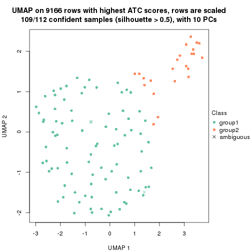
dimension_reduction(res, k = 3, method = "UMAP")
dimension_reduction(res, k = 4, method = "UMAP")
dimension_reduction(res, k = 5, method = "UMAP")
dimension_reduction(res, k = 6, method = "UMAP")
Following heatmap shows how subgroups are split when increasing k:
collect_classes(res)
If matrix rows can be associated to genes, consider to use GO_Enrichment(res,
...) to perform function enrichment for the signature genes.
The object with results only for a single top-value method and a single partition method can be extracted as:
res = res_list["ATC", "pam"]
# you can also extract it by
# res = res_list["ATC:pam"]
A summary of res and all the functions that can be applied to it:
res
#> A 'ConsensusPartition' object with k = 2, 3, 4, 5, 6.
#> On a matrix with 9166 rows and 112 columns.
#> Top rows (917, 1834, 2750, 3666, 4583) are extracted by 'ATC' method.
#> Subgroups are detected by 'pam' method.
#> Performed in total 1250 partitions by row resampling.
#> Best k for subgroups seems to be 2.
#>
#> Following methods can be applied to this 'ConsensusPartition' object:
#> [1] "cola_report" "collect_classes" "collect_plots"
#> [4] "collect_stats" "colnames" "compare_signatures"
#> [7] "consensus_heatmap" "dimension_reduction" "functional_enrichment"
#> [10] "get_anno_col" "get_anno" "get_classes"
#> [13] "get_consensus" "get_matrix" "get_membership"
#> [16] "get_param" "get_signatures" "get_stats"
#> [19] "is_best_k" "is_stable_k" "membership_heatmap"
#> [22] "ncol" "nrow" "plot_ecdf"
#> [25] "rownames" "select_partition_number" "show"
#> [28] "suggest_best_k" "test_to_known_factors"
collect_plots() function collects all the plots made from res for all k (number of partitions)
into one single page to provide an easy and fast comparison between different k.
collect_plots(res)
The plots are:
k and the heatmap of
predicted classes for each k.k.k.k.All the plots in panels can be made by individual functions and they are plotted later in this section.
select_partition_number() produces several plots showing different
statistics for choosing “optimized” k. There are following statistics:
k;k, the area increased is defined as \(A_k - A_{k-1}\).The detailed explanations of these statistics can be found in the cola vignette.
Generally speaking, lower PAC score, higher mean silhouette score or higher
concordance corresponds to better partition. Rand index and Jaccard index
measure how similar the current partition is compared to partition with k-1.
If they are too similar, we won't accept k is better than k-1.
select_partition_number(res)
The numeric values for all these statistics can be obtained by get_stats().
get_stats(res)
#> k 1-PAC mean_silhouette concordance area_increased Rand Jaccard
#> 2 2 1.000 0.980 0.993 0.2050 0.793 0.793
#> 3 3 1.000 0.988 0.995 0.1910 0.961 0.951
#> 4 4 0.425 0.569 0.816 0.8197 0.969 0.960
#> 5 5 0.432 0.610 0.709 0.0455 0.623 0.494
#> 6 6 0.393 0.519 0.776 0.0772 0.639 0.432
suggest_best_k() suggests the best \(k\) based on these statistics. The rules are as follows:
NA.suggest_best_k(res)
#> [1] 2
Following shows the table of the partitions (You need to click the show/hide
code output link to see it). The membership matrix (columns with name p*)
is inferred by
clue::cl_consensus()
function with the SE method. Basically the value in the membership matrix
represents the probability to belong to a certain group. The finall class
label for an item is determined with the group with highest probability it
belongs to.
In get_classes() function, the entropy is calculated from the membership
matrix and the silhouette score is calculated from the consensus matrix.
cbind(get_classes(res, k = 2), get_membership(res, k = 2))
#> class entropy silhouette p1 p2
#> SRR1003755 1 0.000 0.99685 1.000 0.000
#> SRR1003756 1 0.000 0.99685 1.000 0.000
#> SRR1003757 1 0.000 0.99685 1.000 0.000
#> SRR1003758 1 0.000 0.99685 1.000 0.000
#> SRR1003759 1 0.000 0.99685 1.000 0.000
#> SRR1003760 1 0.876 0.55581 0.704 0.296
#> SRR1003761 1 0.000 0.99685 1.000 0.000
#> SRR1003762 2 0.000 0.95834 0.000 1.000
#> SRR1003763 2 1.000 0.00949 0.496 0.504
#> SRR1003764 2 0.000 0.95834 0.000 1.000
#> SRR1003765 2 0.000 0.95834 0.000 1.000
#> SRR1003766 2 0.000 0.95834 0.000 1.000
#> SRR1003767 2 0.000 0.95834 0.000 1.000
#> SRR1003768 2 0.000 0.95834 0.000 1.000
#> SRR1003769 2 0.000 0.95834 0.000 1.000
#> SRR1003770 2 0.000 0.95834 0.000 1.000
#> SRR1003771 2 0.000 0.95834 0.000 1.000
#> SRR1003773 1 0.000 0.99685 1.000 0.000
#> SRR1003772 1 0.000 0.99685 1.000 0.000
#> SRR1003774 1 0.000 0.99685 1.000 0.000
#> SRR1003775 1 0.000 0.99685 1.000 0.000
#> SRR1003776 1 0.000 0.99685 1.000 0.000
#> SRR1003777 1 0.000 0.99685 1.000 0.000
#> SRR1003778 1 0.000 0.99685 1.000 0.000
#> SRR1003779 1 0.000 0.99685 1.000 0.000
#> SRR1003780 2 0.000 0.95834 0.000 1.000
#> SRR1003781 1 0.000 0.99685 1.000 0.000
#> SRR1003784 1 0.000 0.99685 1.000 0.000
#> SRR1003785 1 0.000 0.99685 1.000 0.000
#> SRR1003786 1 0.000 0.99685 1.000 0.000
#> SRR1003783 1 0.000 0.99685 1.000 0.000
#> SRR1003787 1 0.000 0.99685 1.000 0.000
#> SRR1003788 1 0.000 0.99685 1.000 0.000
#> SRR1003789 2 0.000 0.95834 0.000 1.000
#> SRR1003790 1 0.000 0.99685 1.000 0.000
#> SRR1003791 1 0.000 0.99685 1.000 0.000
#> SRR1003792 1 0.000 0.99685 1.000 0.000
#> SRR1003793 1 0.000 0.99685 1.000 0.000
#> SRR1003794 1 0.000 0.99685 1.000 0.000
#> SRR1003795 1 0.000 0.99685 1.000 0.000
#> SRR1003796 1 0.000 0.99685 1.000 0.000
#> SRR1003797 1 0.000 0.99685 1.000 0.000
#> SRR1003798 1 0.000 0.99685 1.000 0.000
#> SRR1003799 1 0.000 0.99685 1.000 0.000
#> SRR1003800 1 0.000 0.99685 1.000 0.000
#> SRR1003801 1 0.000 0.99685 1.000 0.000
#> SRR1003802 1 0.000 0.99685 1.000 0.000
#> SRR1003803 1 0.000 0.99685 1.000 0.000
#> SRR1003804 1 0.000 0.99685 1.000 0.000
#> SRR1003805 1 0.000 0.99685 1.000 0.000
#> SRR1003806 1 0.000 0.99685 1.000 0.000
#> SRR1003807 1 0.000 0.99685 1.000 0.000
#> SRR1003809 1 0.000 0.99685 1.000 0.000
#> SRR1003808 1 0.000 0.99685 1.000 0.000
#> SRR1003810 1 0.000 0.99685 1.000 0.000
#> SRR1003811 1 0.000 0.99685 1.000 0.000
#> SRR1003812 1 0.000 0.99685 1.000 0.000
#> SRR1003813 1 0.000 0.99685 1.000 0.000
#> SRR1003814 1 0.000 0.99685 1.000 0.000
#> SRR1003815 1 0.000 0.99685 1.000 0.000
#> SRR1003816 1 0.000 0.99685 1.000 0.000
#> SRR1003817 1 0.000 0.99685 1.000 0.000
#> SRR1003818 1 0.000 0.99685 1.000 0.000
#> SRR1003819 1 0.000 0.99685 1.000 0.000
#> SRR1003820 1 0.000 0.99685 1.000 0.000
#> SRR1003821 1 0.000 0.99685 1.000 0.000
#> SRR1003822 1 0.000 0.99685 1.000 0.000
#> SRR1003824 1 0.000 0.99685 1.000 0.000
#> SRR1003823 1 0.000 0.99685 1.000 0.000
#> SRR1003825 1 0.000 0.99685 1.000 0.000
#> SRR1003826 1 0.000 0.99685 1.000 0.000
#> SRR1003827 1 0.000 0.99685 1.000 0.000
#> SRR1003828 1 0.000 0.99685 1.000 0.000
#> SRR1003829 1 0.000 0.99685 1.000 0.000
#> SRR1003830 1 0.000 0.99685 1.000 0.000
#> SRR1003831 1 0.000 0.99685 1.000 0.000
#> SRR1003832 1 0.000 0.99685 1.000 0.000
#> SRR1003833 1 0.000 0.99685 1.000 0.000
#> SRR1003834 1 0.000 0.99685 1.000 0.000
#> SRR1003836 1 0.000 0.99685 1.000 0.000
#> SRR1003835 1 0.000 0.99685 1.000 0.000
#> SRR1003838 1 0.000 0.99685 1.000 0.000
#> SRR1003837 1 0.000 0.99685 1.000 0.000
#> SRR1003839 1 0.000 0.99685 1.000 0.000
#> SRR1003840 1 0.000 0.99685 1.000 0.000
#> SRR1003841 2 0.000 0.95834 0.000 1.000
#> SRR1003842 1 0.000 0.99685 1.000 0.000
#> SRR1003844 1 0.000 0.99685 1.000 0.000
#> SRR1003845 1 0.000 0.99685 1.000 0.000
#> SRR1003846 1 0.000 0.99685 1.000 0.000
#> SRR1003847 1 0.000 0.99685 1.000 0.000
#> SRR1003848 1 0.000 0.99685 1.000 0.000
#> SRR1003849 1 0.000 0.99685 1.000 0.000
#> SRR1003850 1 0.000 0.99685 1.000 0.000
#> SRR1003851 1 0.000 0.99685 1.000 0.000
#> SRR1003852 1 0.000 0.99685 1.000 0.000
#> SRR1003853 1 0.000 0.99685 1.000 0.000
#> SRR1003854 1 0.000 0.99685 1.000 0.000
#> SRR1003843 1 0.000 0.99685 1.000 0.000
#> SRR1003855 1 0.000 0.99685 1.000 0.000
#> SRR1003856 1 0.000 0.99685 1.000 0.000
#> SRR1003857 1 0.000 0.99685 1.000 0.000
#> SRR1003858 1 0.000 0.99685 1.000 0.000
#> SRR1003859 1 0.000 0.99685 1.000 0.000
#> SRR1003860 1 0.000 0.99685 1.000 0.000
#> SRR1003861 1 0.000 0.99685 1.000 0.000
#> SRR1003862 1 0.000 0.99685 1.000 0.000
#> SRR1003863 1 0.000 0.99685 1.000 0.000
#> SRR1003864 1 0.000 0.99685 1.000 0.000
#> SRR1003865 1 0.000 0.99685 1.000 0.000
#> SRR1003866 1 0.000 0.99685 1.000 0.000
#> SRR1003867 1 0.000 0.99685 1.000 0.000
cbind(get_classes(res, k = 3), get_membership(res, k = 3))
#> class entropy silhouette p1 p2 p3
#> SRR1003755 1 0.0237 0.997 0.996 0.000 0.004
#> SRR1003756 1 0.0237 0.997 0.996 0.000 0.004
#> SRR1003757 1 0.0237 0.997 0.996 0.000 0.004
#> SRR1003758 1 0.0237 0.997 0.996 0.000 0.004
#> SRR1003759 1 0.0000 0.999 1.000 0.000 0.000
#> SRR1003760 3 0.0237 0.918 0.000 0.004 0.996
#> SRR1003761 3 0.1753 0.833 0.048 0.000 0.952
#> SRR1003762 3 0.0237 0.918 0.000 0.004 0.996
#> SRR1003763 3 0.0237 0.915 0.004 0.000 0.996
#> SRR1003764 3 0.0237 0.918 0.000 0.004 0.996
#> SRR1003765 2 0.0000 1.000 0.000 1.000 0.000
#> SRR1003766 2 0.0000 1.000 0.000 1.000 0.000
#> SRR1003767 2 0.0000 1.000 0.000 1.000 0.000
#> SRR1003768 2 0.0000 1.000 0.000 1.000 0.000
#> SRR1003769 2 0.0000 1.000 0.000 1.000 0.000
#> SRR1003770 2 0.0000 1.000 0.000 1.000 0.000
#> SRR1003771 2 0.0000 1.000 0.000 1.000 0.000
#> SRR1003773 1 0.0000 0.999 1.000 0.000 0.000
#> SRR1003772 1 0.0000 0.999 1.000 0.000 0.000
#> SRR1003774 1 0.0000 0.999 1.000 0.000 0.000
#> SRR1003775 1 0.0237 0.997 0.996 0.000 0.004
#> SRR1003776 1 0.0000 0.999 1.000 0.000 0.000
#> SRR1003777 1 0.0000 0.999 1.000 0.000 0.000
#> SRR1003778 1 0.0592 0.988 0.988 0.000 0.012
#> SRR1003779 1 0.0237 0.997 0.996 0.000 0.004
#> SRR1003780 2 0.0000 1.000 0.000 1.000 0.000
#> SRR1003781 1 0.0000 0.999 1.000 0.000 0.000
#> SRR1003784 1 0.0000 0.999 1.000 0.000 0.000
#> SRR1003785 1 0.0000 0.999 1.000 0.000 0.000
#> SRR1003786 1 0.0237 0.997 0.996 0.000 0.004
#> SRR1003783 1 0.0000 0.999 1.000 0.000 0.000
#> SRR1003787 1 0.0237 0.997 0.996 0.000 0.004
#> SRR1003788 1 0.0237 0.997 0.996 0.000 0.004
#> SRR1003789 3 0.0237 0.918 0.000 0.004 0.996
#> SRR1003790 1 0.0237 0.997 0.996 0.000 0.004
#> SRR1003791 1 0.0000 0.999 1.000 0.000 0.000
#> SRR1003792 1 0.0000 0.999 1.000 0.000 0.000
#> SRR1003793 1 0.0000 0.999 1.000 0.000 0.000
#> SRR1003794 1 0.0000 0.999 1.000 0.000 0.000
#> SRR1003795 1 0.0000 0.999 1.000 0.000 0.000
#> SRR1003796 1 0.0000 0.999 1.000 0.000 0.000
#> SRR1003797 1 0.0237 0.997 0.996 0.000 0.004
#> SRR1003798 1 0.0237 0.997 0.996 0.000 0.004
#> SRR1003799 1 0.0237 0.997 0.996 0.000 0.004
#> SRR1003800 1 0.0237 0.997 0.996 0.000 0.004
#> SRR1003801 1 0.0000 0.999 1.000 0.000 0.000
#> SRR1003802 1 0.0000 0.999 1.000 0.000 0.000
#> SRR1003803 1 0.0237 0.997 0.996 0.000 0.004
#> SRR1003804 1 0.0000 0.999 1.000 0.000 0.000
#> SRR1003805 1 0.0237 0.997 0.996 0.000 0.004
#> SRR1003806 1 0.0000 0.999 1.000 0.000 0.000
#> SRR1003807 1 0.0000 0.999 1.000 0.000 0.000
#> SRR1003809 1 0.0000 0.999 1.000 0.000 0.000
#> SRR1003808 1 0.0000 0.999 1.000 0.000 0.000
#> SRR1003810 1 0.0000 0.999 1.000 0.000 0.000
#> SRR1003811 1 0.0000 0.999 1.000 0.000 0.000
#> SRR1003812 1 0.0000 0.999 1.000 0.000 0.000
#> SRR1003813 1 0.0000 0.999 1.000 0.000 0.000
#> SRR1003814 1 0.0000 0.999 1.000 0.000 0.000
#> SRR1003815 1 0.0000 0.999 1.000 0.000 0.000
#> SRR1003816 1 0.0000 0.999 1.000 0.000 0.000
#> SRR1003817 1 0.0000 0.999 1.000 0.000 0.000
#> SRR1003818 1 0.0000 0.999 1.000 0.000 0.000
#> SRR1003819 1 0.0000 0.999 1.000 0.000 0.000
#> SRR1003820 1 0.0237 0.997 0.996 0.000 0.004
#> SRR1003821 1 0.0237 0.997 0.996 0.000 0.004
#> SRR1003822 1 0.0000 0.999 1.000 0.000 0.000
#> SRR1003824 1 0.0237 0.997 0.996 0.000 0.004
#> SRR1003823 1 0.0237 0.997 0.996 0.000 0.004
#> SRR1003825 1 0.0000 0.999 1.000 0.000 0.000
#> SRR1003826 1 0.0237 0.997 0.996 0.000 0.004
#> SRR1003827 1 0.0237 0.997 0.996 0.000 0.004
#> SRR1003828 1 0.0000 0.999 1.000 0.000 0.000
#> SRR1003829 1 0.0237 0.997 0.996 0.000 0.004
#> SRR1003830 1 0.0237 0.997 0.996 0.000 0.004
#> SRR1003831 1 0.0000 0.999 1.000 0.000 0.000
#> SRR1003832 1 0.0237 0.997 0.996 0.000 0.004
#> SRR1003833 1 0.0000 0.999 1.000 0.000 0.000
#> SRR1003834 1 0.0000 0.999 1.000 0.000 0.000
#> SRR1003836 1 0.0000 0.999 1.000 0.000 0.000
#> SRR1003835 1 0.0000 0.999 1.000 0.000 0.000
#> SRR1003838 1 0.0000 0.999 1.000 0.000 0.000
#> SRR1003837 1 0.0237 0.997 0.996 0.000 0.004
#> SRR1003839 1 0.0000 0.999 1.000 0.000 0.000
#> SRR1003840 1 0.0000 0.999 1.000 0.000 0.000
#> SRR1003841 3 0.5859 0.476 0.000 0.344 0.656
#> SRR1003842 1 0.0000 0.999 1.000 0.000 0.000
#> SRR1003844 1 0.0237 0.997 0.996 0.000 0.004
#> SRR1003845 1 0.0000 0.999 1.000 0.000 0.000
#> SRR1003846 1 0.0237 0.997 0.996 0.000 0.004
#> SRR1003847 1 0.0000 0.999 1.000 0.000 0.000
#> SRR1003848 1 0.0000 0.999 1.000 0.000 0.000
#> SRR1003849 1 0.0000 0.999 1.000 0.000 0.000
#> SRR1003850 1 0.0000 0.999 1.000 0.000 0.000
#> SRR1003851 1 0.0000 0.999 1.000 0.000 0.000
#> SRR1003852 1 0.0000 0.999 1.000 0.000 0.000
#> SRR1003853 1 0.0000 0.999 1.000 0.000 0.000
#> SRR1003854 1 0.0000 0.999 1.000 0.000 0.000
#> SRR1003843 1 0.0000 0.999 1.000 0.000 0.000
#> SRR1003855 1 0.0000 0.999 1.000 0.000 0.000
#> SRR1003856 1 0.0000 0.999 1.000 0.000 0.000
#> SRR1003857 1 0.0000 0.999 1.000 0.000 0.000
#> SRR1003858 1 0.0000 0.999 1.000 0.000 0.000
#> SRR1003859 1 0.0237 0.997 0.996 0.000 0.004
#> SRR1003860 1 0.0000 0.999 1.000 0.000 0.000
#> SRR1003861 1 0.0000 0.999 1.000 0.000 0.000
#> SRR1003862 1 0.0000 0.999 1.000 0.000 0.000
#> SRR1003863 1 0.0000 0.999 1.000 0.000 0.000
#> SRR1003864 1 0.0000 0.999 1.000 0.000 0.000
#> SRR1003865 1 0.0000 0.999 1.000 0.000 0.000
#> SRR1003866 1 0.0000 0.999 1.000 0.000 0.000
#> SRR1003867 1 0.0237 0.997 0.996 0.000 0.004
cbind(get_classes(res, k = 4), get_membership(res, k = 4))
#> class entropy silhouette p1 p2 p3 p4
#> SRR1003755 3 0.4981 1.00000 0.464 0.000 0.536 0.000
#> SRR1003756 3 0.4981 1.00000 0.464 0.000 0.536 0.000
#> SRR1003757 1 0.4500 -0.12754 0.684 0.000 0.316 0.000
#> SRR1003758 1 0.4382 -0.15470 0.704 0.000 0.296 0.000
#> SRR1003759 1 0.4277 0.66699 0.720 0.000 0.280 0.000
#> SRR1003760 4 0.0000 0.90332 0.000 0.000 0.000 1.000
#> SRR1003761 4 0.4335 0.74537 0.036 0.000 0.168 0.796
#> SRR1003762 4 0.0000 0.90332 0.000 0.000 0.000 1.000
#> SRR1003763 4 0.0000 0.90332 0.000 0.000 0.000 1.000
#> SRR1003764 4 0.0000 0.90332 0.000 0.000 0.000 1.000
#> SRR1003765 2 0.0000 0.95967 0.000 1.000 0.000 0.000
#> SRR1003766 2 0.0000 0.95967 0.000 1.000 0.000 0.000
#> SRR1003767 2 0.3266 0.87198 0.000 0.832 0.168 0.000
#> SRR1003768 2 0.0000 0.95967 0.000 1.000 0.000 0.000
#> SRR1003769 2 0.0000 0.95967 0.000 1.000 0.000 0.000
#> SRR1003770 2 0.0000 0.95967 0.000 1.000 0.000 0.000
#> SRR1003771 2 0.3266 0.87198 0.000 0.832 0.168 0.000
#> SRR1003773 1 0.4996 0.38731 0.516 0.000 0.484 0.000
#> SRR1003772 1 0.0469 0.62636 0.988 0.000 0.012 0.000
#> SRR1003774 1 0.2814 0.66845 0.868 0.000 0.132 0.000
#> SRR1003775 1 0.1211 0.57981 0.960 0.000 0.040 0.000
#> SRR1003776 1 0.0921 0.59524 0.972 0.000 0.028 0.000
#> SRR1003777 1 0.0592 0.62881 0.984 0.000 0.016 0.000
#> SRR1003778 1 0.4996 0.38731 0.516 0.000 0.484 0.000
#> SRR1003779 1 0.3649 0.37152 0.796 0.000 0.204 0.000
#> SRR1003780 2 0.0000 0.95967 0.000 1.000 0.000 0.000
#> SRR1003781 1 0.0469 0.60969 0.988 0.000 0.012 0.000
#> SRR1003784 1 0.4406 0.66000 0.700 0.000 0.300 0.000
#> SRR1003785 1 0.4406 0.66000 0.700 0.000 0.300 0.000
#> SRR1003786 1 0.4250 -0.09634 0.724 0.000 0.276 0.000
#> SRR1003783 1 0.0000 0.61723 1.000 0.000 0.000 0.000
#> SRR1003787 1 0.4331 -0.15026 0.712 0.000 0.288 0.000
#> SRR1003788 1 0.4989 0.48676 0.528 0.000 0.472 0.000
#> SRR1003789 4 0.0000 0.90332 0.000 0.000 0.000 1.000
#> SRR1003790 1 0.3528 0.42558 0.808 0.000 0.192 0.000
#> SRR1003791 1 0.4382 0.66169 0.704 0.000 0.296 0.000
#> SRR1003792 1 0.2530 0.66430 0.888 0.000 0.112 0.000
#> SRR1003793 1 0.0000 0.61723 1.000 0.000 0.000 0.000
#> SRR1003794 1 0.0336 0.61895 0.992 0.000 0.008 0.000
#> SRR1003795 1 0.4382 0.66169 0.704 0.000 0.296 0.000
#> SRR1003796 1 0.4992 0.40306 0.524 0.000 0.476 0.000
#> SRR1003797 1 0.4193 -0.05994 0.732 0.000 0.268 0.000
#> SRR1003798 1 0.3074 0.41156 0.848 0.000 0.152 0.000
#> SRR1003799 1 0.2814 0.57564 0.868 0.000 0.132 0.000
#> SRR1003800 1 0.4356 0.66589 0.708 0.000 0.292 0.000
#> SRR1003801 1 0.3311 0.67503 0.828 0.000 0.172 0.000
#> SRR1003802 1 0.4406 0.66251 0.700 0.000 0.300 0.000
#> SRR1003803 1 0.4164 0.00753 0.736 0.000 0.264 0.000
#> SRR1003804 1 0.4406 0.66000 0.700 0.000 0.300 0.000
#> SRR1003805 1 0.4103 -0.00966 0.744 0.000 0.256 0.000
#> SRR1003806 1 0.4008 0.67435 0.756 0.000 0.244 0.000
#> SRR1003807 1 0.4406 0.66000 0.700 0.000 0.300 0.000
#> SRR1003809 1 0.4406 0.66000 0.700 0.000 0.300 0.000
#> SRR1003808 1 0.1211 0.62657 0.960 0.000 0.040 0.000
#> SRR1003810 1 0.4382 0.66169 0.704 0.000 0.296 0.000
#> SRR1003811 1 0.4277 0.66778 0.720 0.000 0.280 0.000
#> SRR1003812 1 0.0817 0.61246 0.976 0.000 0.024 0.000
#> SRR1003813 1 0.4406 0.66000 0.700 0.000 0.300 0.000
#> SRR1003814 1 0.0188 0.62055 0.996 0.000 0.004 0.000
#> SRR1003815 1 0.4382 0.66169 0.704 0.000 0.296 0.000
#> SRR1003816 1 0.0592 0.60611 0.984 0.000 0.016 0.000
#> SRR1003817 1 0.2973 0.67121 0.856 0.000 0.144 0.000
#> SRR1003818 1 0.3024 0.66697 0.852 0.000 0.148 0.000
#> SRR1003819 1 0.4382 0.66169 0.704 0.000 0.296 0.000
#> SRR1003820 1 0.4331 -0.15026 0.712 0.000 0.288 0.000
#> SRR1003821 1 0.2345 0.48979 0.900 0.000 0.100 0.000
#> SRR1003822 1 0.4406 0.66000 0.700 0.000 0.300 0.000
#> SRR1003824 1 0.3400 0.32531 0.820 0.000 0.180 0.000
#> SRR1003823 1 0.4222 -0.08968 0.728 0.000 0.272 0.000
#> SRR1003825 1 0.4585 0.64594 0.668 0.000 0.332 0.000
#> SRR1003826 1 0.3610 0.21365 0.800 0.000 0.200 0.000
#> SRR1003827 1 0.0921 0.59402 0.972 0.000 0.028 0.000
#> SRR1003828 1 0.3444 0.67495 0.816 0.000 0.184 0.000
#> SRR1003829 1 0.2921 0.40177 0.860 0.000 0.140 0.000
#> SRR1003830 1 0.4331 -0.15026 0.712 0.000 0.288 0.000
#> SRR1003831 1 0.2814 0.65474 0.868 0.000 0.132 0.000
#> SRR1003832 1 0.4250 -0.05755 0.724 0.000 0.276 0.000
#> SRR1003833 1 0.2469 0.47290 0.892 0.000 0.108 0.000
#> SRR1003834 1 0.3688 0.67689 0.792 0.000 0.208 0.000
#> SRR1003836 1 0.4382 0.66169 0.704 0.000 0.296 0.000
#> SRR1003835 1 0.3907 0.67631 0.768 0.000 0.232 0.000
#> SRR1003838 1 0.4454 0.65360 0.692 0.000 0.308 0.000
#> SRR1003837 1 0.2921 0.61037 0.860 0.000 0.140 0.000
#> SRR1003839 1 0.4103 0.67298 0.744 0.000 0.256 0.000
#> SRR1003840 1 0.3873 0.67656 0.772 0.000 0.228 0.000
#> SRR1003841 4 0.6524 0.46446 0.000 0.264 0.120 0.616
#> SRR1003842 1 0.2081 0.53891 0.916 0.000 0.084 0.000
#> SRR1003844 1 0.0336 0.61266 0.992 0.000 0.008 0.000
#> SRR1003845 1 0.3907 0.67598 0.768 0.000 0.232 0.000
#> SRR1003846 1 0.4331 -0.15026 0.712 0.000 0.288 0.000
#> SRR1003847 1 0.0188 0.61522 0.996 0.000 0.004 0.000
#> SRR1003848 1 0.4406 0.66000 0.700 0.000 0.300 0.000
#> SRR1003849 1 0.4406 0.66000 0.700 0.000 0.300 0.000
#> SRR1003850 1 0.4382 0.66189 0.704 0.000 0.296 0.000
#> SRR1003851 1 0.4406 0.66000 0.700 0.000 0.300 0.000
#> SRR1003852 1 0.0469 0.61406 0.988 0.000 0.012 0.000
#> SRR1003853 1 0.0592 0.60627 0.984 0.000 0.016 0.000
#> SRR1003854 1 0.0469 0.61614 0.988 0.000 0.012 0.000
#> SRR1003843 1 0.4406 0.66000 0.700 0.000 0.300 0.000
#> SRR1003855 1 0.0469 0.60996 0.988 0.000 0.012 0.000
#> SRR1003856 1 0.4406 0.66000 0.700 0.000 0.300 0.000
#> SRR1003857 1 0.0921 0.63437 0.972 0.000 0.028 0.000
#> SRR1003858 1 0.4277 0.66782 0.720 0.000 0.280 0.000
#> SRR1003859 1 0.4072 0.00802 0.748 0.000 0.252 0.000
#> SRR1003860 1 0.0000 0.61723 1.000 0.000 0.000 0.000
#> SRR1003861 1 0.4382 0.66169 0.704 0.000 0.296 0.000
#> SRR1003862 1 0.4193 0.66949 0.732 0.000 0.268 0.000
#> SRR1003863 1 0.4382 0.66169 0.704 0.000 0.296 0.000
#> SRR1003864 1 0.0592 0.62862 0.984 0.000 0.016 0.000
#> SRR1003865 1 0.4406 0.66000 0.700 0.000 0.300 0.000
#> SRR1003866 1 0.0707 0.62323 0.980 0.000 0.020 0.000
#> SRR1003867 1 0.4103 0.52621 0.744 0.000 0.256 0.000
cbind(get_classes(res, k = 5), get_membership(res, k = 5))
#> class entropy silhouette p1 p2 p3 p4 p5
#> SRR1003755 1 0.4327 -0.25679 0.632 0.000 0.360 0.008 0.000
#> SRR1003756 1 0.4327 -0.25679 0.632 0.000 0.360 0.008 0.000
#> SRR1003757 1 0.0703 0.51148 0.976 0.000 0.024 0.000 0.000
#> SRR1003758 1 0.0290 0.51578 0.992 0.000 0.008 0.000 0.000
#> SRR1003759 3 0.4101 0.88259 0.372 0.000 0.628 0.000 0.000
#> SRR1003760 2 0.0000 0.93621 0.000 1.000 0.000 0.000 0.000
#> SRR1003761 2 0.3828 0.65188 0.020 0.788 0.184 0.008 0.000
#> SRR1003762 2 0.0000 0.93621 0.000 1.000 0.000 0.000 0.000
#> SRR1003763 2 0.0000 0.93621 0.000 1.000 0.000 0.000 0.000
#> SRR1003764 2 0.0000 0.93621 0.000 1.000 0.000 0.000 0.000
#> SRR1003765 5 0.0000 1.00000 0.000 0.000 0.000 0.000 1.000
#> SRR1003766 5 0.0000 1.00000 0.000 0.000 0.000 0.000 1.000
#> SRR1003767 4 0.3109 0.63453 0.000 0.000 0.000 0.800 0.200
#> SRR1003768 5 0.0000 1.00000 0.000 0.000 0.000 0.000 1.000
#> SRR1003769 5 0.0000 1.00000 0.000 0.000 0.000 0.000 1.000
#> SRR1003770 5 0.0000 1.00000 0.000 0.000 0.000 0.000 1.000
#> SRR1003771 4 0.3109 0.63453 0.000 0.000 0.000 0.800 0.200
#> SRR1003773 3 0.2813 0.50047 0.168 0.000 0.832 0.000 0.000
#> SRR1003772 1 0.4015 0.44295 0.652 0.000 0.348 0.000 0.000
#> SRR1003774 1 0.4300 -0.30204 0.524 0.000 0.476 0.000 0.000
#> SRR1003775 1 0.3752 0.54018 0.708 0.000 0.292 0.000 0.000
#> SRR1003776 1 0.3816 0.52721 0.696 0.000 0.304 0.000 0.000
#> SRR1003777 1 0.4045 0.41700 0.644 0.000 0.356 0.000 0.000
#> SRR1003778 3 0.3093 0.49086 0.168 0.000 0.824 0.008 0.000
#> SRR1003779 1 0.3109 0.54975 0.800 0.000 0.200 0.000 0.000
#> SRR1003780 5 0.0000 1.00000 0.000 0.000 0.000 0.000 1.000
#> SRR1003781 1 0.3876 0.51194 0.684 0.000 0.316 0.000 0.000
#> SRR1003784 3 0.4045 0.89428 0.356 0.000 0.644 0.000 0.000
#> SRR1003785 3 0.4045 0.89428 0.356 0.000 0.644 0.000 0.000
#> SRR1003786 1 0.0609 0.53306 0.980 0.000 0.020 0.000 0.000
#> SRR1003783 1 0.3949 0.48613 0.668 0.000 0.332 0.000 0.000
#> SRR1003787 1 0.0000 0.51890 1.000 0.000 0.000 0.000 0.000
#> SRR1003788 1 0.4291 -0.42364 0.536 0.000 0.464 0.000 0.000
#> SRR1003789 2 0.0000 0.93621 0.000 1.000 0.000 0.000 0.000
#> SRR1003790 1 0.3242 0.53693 0.784 0.000 0.216 0.000 0.000
#> SRR1003791 3 0.4060 0.89368 0.360 0.000 0.640 0.000 0.000
#> SRR1003792 1 0.4283 -0.17911 0.544 0.000 0.456 0.000 0.000
#> SRR1003793 1 0.3949 0.48613 0.668 0.000 0.332 0.000 0.000
#> SRR1003794 1 0.3949 0.48667 0.668 0.000 0.332 0.000 0.000
#> SRR1003795 3 0.4060 0.89368 0.360 0.000 0.640 0.000 0.000
#> SRR1003796 3 0.2891 0.51557 0.176 0.000 0.824 0.000 0.000
#> SRR1003797 1 0.0963 0.54185 0.964 0.000 0.036 0.000 0.000
#> SRR1003798 1 0.2966 0.57199 0.816 0.000 0.184 0.000 0.000
#> SRR1003799 1 0.3730 0.47849 0.712 0.000 0.288 0.000 0.000
#> SRR1003800 3 0.4210 0.82387 0.412 0.000 0.588 0.000 0.000
#> SRR1003801 3 0.4304 0.51928 0.484 0.000 0.516 0.000 0.000
#> SRR1003802 3 0.4126 0.86977 0.380 0.000 0.620 0.000 0.000
#> SRR1003803 1 0.1197 0.54154 0.952 0.000 0.048 0.000 0.000
#> SRR1003804 3 0.4045 0.89428 0.356 0.000 0.644 0.000 0.000
#> SRR1003805 1 0.1043 0.54337 0.960 0.000 0.040 0.000 0.000
#> SRR1003806 3 0.4242 0.77072 0.428 0.000 0.572 0.000 0.000
#> SRR1003807 3 0.4045 0.89428 0.356 0.000 0.644 0.000 0.000
#> SRR1003809 3 0.4045 0.89428 0.356 0.000 0.644 0.000 0.000
#> SRR1003808 1 0.3932 0.47447 0.672 0.000 0.328 0.000 0.000
#> SRR1003810 3 0.4060 0.89368 0.360 0.000 0.640 0.000 0.000
#> SRR1003811 3 0.4114 0.87620 0.376 0.000 0.624 0.000 0.000
#> SRR1003812 1 0.3895 0.51235 0.680 0.000 0.320 0.000 0.000
#> SRR1003813 3 0.4045 0.89428 0.356 0.000 0.644 0.000 0.000
#> SRR1003814 1 0.3949 0.48628 0.668 0.000 0.332 0.000 0.000
#> SRR1003815 3 0.4060 0.89368 0.360 0.000 0.640 0.000 0.000
#> SRR1003816 1 0.3876 0.51643 0.684 0.000 0.316 0.000 0.000
#> SRR1003817 1 0.4305 -0.38028 0.512 0.000 0.488 0.000 0.000
#> SRR1003818 1 0.4302 -0.34376 0.520 0.000 0.480 0.000 0.000
#> SRR1003819 3 0.4060 0.89368 0.360 0.000 0.640 0.000 0.000
#> SRR1003820 1 0.0162 0.52194 0.996 0.000 0.004 0.000 0.000
#> SRR1003821 1 0.3109 0.57426 0.800 0.000 0.200 0.000 0.000
#> SRR1003822 3 0.4045 0.89428 0.356 0.000 0.644 0.000 0.000
#> SRR1003824 1 0.2732 0.57164 0.840 0.000 0.160 0.000 0.000
#> SRR1003823 1 0.1043 0.53898 0.960 0.000 0.040 0.000 0.000
#> SRR1003825 3 0.4249 0.75432 0.432 0.000 0.568 0.000 0.000
#> SRR1003826 1 0.2230 0.56326 0.884 0.000 0.116 0.000 0.000
#> SRR1003827 1 0.3816 0.52998 0.696 0.000 0.304 0.000 0.000
#> SRR1003828 3 0.4302 0.54468 0.480 0.000 0.520 0.000 0.000
#> SRR1003829 1 0.3003 0.57855 0.812 0.000 0.188 0.000 0.000
#> SRR1003830 1 0.0000 0.51890 1.000 0.000 0.000 0.000 0.000
#> SRR1003831 1 0.4227 0.00164 0.580 0.000 0.420 0.000 0.000
#> SRR1003832 1 0.1410 0.53734 0.940 0.000 0.060 0.000 0.000
#> SRR1003833 1 0.3143 0.57504 0.796 0.000 0.204 0.000 0.000
#> SRR1003834 3 0.4273 0.70204 0.448 0.000 0.552 0.000 0.000
#> SRR1003836 3 0.4060 0.89368 0.360 0.000 0.640 0.000 0.000
#> SRR1003835 3 0.4235 0.76246 0.424 0.000 0.576 0.000 0.000
#> SRR1003838 3 0.4015 0.88206 0.348 0.000 0.652 0.000 0.000
#> SRR1003837 1 0.4030 0.32842 0.648 0.000 0.352 0.000 0.000
#> SRR1003839 3 0.4171 0.83982 0.396 0.000 0.604 0.000 0.000
#> SRR1003840 3 0.4242 0.75537 0.428 0.000 0.572 0.000 0.000
#> SRR1003841 4 0.5346 -0.13242 0.000 0.452 0.000 0.496 0.052
#> SRR1003842 1 0.3561 0.55628 0.740 0.000 0.260 0.000 0.000
#> SRR1003844 1 0.3913 0.50331 0.676 0.000 0.324 0.000 0.000
#> SRR1003845 3 0.4227 0.77706 0.420 0.000 0.580 0.000 0.000
#> SRR1003846 1 0.0000 0.51890 1.000 0.000 0.000 0.000 0.000
#> SRR1003847 1 0.3913 0.50123 0.676 0.000 0.324 0.000 0.000
#> SRR1003848 3 0.4045 0.89428 0.356 0.000 0.644 0.000 0.000
#> SRR1003849 3 0.4045 0.89428 0.356 0.000 0.644 0.000 0.000
#> SRR1003850 3 0.4060 0.89249 0.360 0.000 0.640 0.000 0.000
#> SRR1003851 3 0.4045 0.89428 0.356 0.000 0.644 0.000 0.000
#> SRR1003852 1 0.3816 0.52325 0.696 0.000 0.304 0.000 0.000
#> SRR1003853 1 0.3796 0.52610 0.700 0.000 0.300 0.000 0.000
#> SRR1003854 1 0.3932 0.49627 0.672 0.000 0.328 0.000 0.000
#> SRR1003843 3 0.4045 0.89428 0.356 0.000 0.644 0.000 0.000
#> SRR1003855 1 0.3895 0.50862 0.680 0.000 0.320 0.000 0.000
#> SRR1003856 3 0.4045 0.89428 0.356 0.000 0.644 0.000 0.000
#> SRR1003857 1 0.4074 0.39318 0.636 0.000 0.364 0.000 0.000
#> SRR1003858 3 0.4114 0.87680 0.376 0.000 0.624 0.000 0.000
#> SRR1003859 1 0.1270 0.54744 0.948 0.000 0.052 0.000 0.000
#> SRR1003860 1 0.3949 0.48613 0.668 0.000 0.332 0.000 0.000
#> SRR1003861 3 0.4060 0.89368 0.360 0.000 0.640 0.000 0.000
#> SRR1003862 3 0.4150 0.85701 0.388 0.000 0.612 0.000 0.000
#> SRR1003863 3 0.4060 0.89368 0.360 0.000 0.640 0.000 0.000
#> SRR1003864 1 0.4060 0.40232 0.640 0.000 0.360 0.000 0.000
#> SRR1003865 3 0.4045 0.89428 0.356 0.000 0.644 0.000 0.000
#> SRR1003866 1 0.3932 0.49022 0.672 0.000 0.328 0.000 0.000
#> SRR1003867 1 0.3774 0.34359 0.704 0.000 0.296 0.000 0.000
cbind(get_classes(res, k = 6), get_membership(res, k = 6))
#> class entropy silhouette p1 p2 p3 p4 p5 p6
#> SRR1003755 5 0.4721 -0.3897 0.000 0.000 0.116 0.212 0.672 0.000
#> SRR1003756 5 0.4721 -0.3897 0.000 0.000 0.116 0.212 0.672 0.000
#> SRR1003757 5 0.3244 0.6563 0.268 0.000 0.000 0.000 0.732 0.000
#> SRR1003758 5 0.3126 0.6742 0.248 0.000 0.000 0.000 0.752 0.000
#> SRR1003759 1 0.0458 0.6540 0.984 0.000 0.000 0.000 0.016 0.000
#> SRR1003760 6 0.0000 0.9143 0.000 0.000 0.000 0.000 0.000 1.000
#> SRR1003761 6 0.4736 0.5064 0.032 0.000 0.108 0.028 0.072 0.760
#> SRR1003762 6 0.0000 0.9143 0.000 0.000 0.000 0.000 0.000 1.000
#> SRR1003763 6 0.0000 0.9143 0.000 0.000 0.000 0.000 0.000 1.000
#> SRR1003764 6 0.0000 0.9143 0.000 0.000 0.000 0.000 0.000 1.000
#> SRR1003765 2 0.0000 0.8118 0.000 1.000 0.000 0.000 0.000 0.000
#> SRR1003766 2 0.3330 0.8124 0.000 0.716 0.000 0.284 0.000 0.000
#> SRR1003767 3 0.2003 1.0000 0.000 0.116 0.884 0.000 0.000 0.000
#> SRR1003768 2 0.3330 0.8124 0.000 0.716 0.000 0.284 0.000 0.000
#> SRR1003769 2 0.3330 0.8124 0.000 0.716 0.000 0.284 0.000 0.000
#> SRR1003770 2 0.0000 0.8118 0.000 1.000 0.000 0.000 0.000 0.000
#> SRR1003771 3 0.2003 1.0000 0.000 0.116 0.884 0.000 0.000 0.000
#> SRR1003773 1 0.2340 0.5226 0.852 0.000 0.000 0.000 0.148 0.000
#> SRR1003772 1 0.3592 0.3984 0.656 0.000 0.000 0.000 0.344 0.000
#> SRR1003774 1 0.2562 0.5954 0.828 0.000 0.000 0.000 0.172 0.000
#> SRR1003775 1 0.3774 0.2285 0.592 0.000 0.000 0.000 0.408 0.000
#> SRR1003776 1 0.3747 0.2799 0.604 0.000 0.000 0.000 0.396 0.000
#> SRR1003777 1 0.3578 0.4042 0.660 0.000 0.000 0.000 0.340 0.000
#> SRR1003778 1 0.4154 0.4561 0.776 0.000 0.116 0.024 0.084 0.000
#> SRR1003779 1 0.3866 -0.2688 0.516 0.000 0.000 0.000 0.484 0.000
#> SRR1003780 2 0.0146 0.8092 0.000 0.996 0.004 0.000 0.000 0.000
#> SRR1003781 1 0.3717 0.3153 0.616 0.000 0.000 0.000 0.384 0.000
#> SRR1003784 1 0.1387 0.6211 0.932 0.000 0.000 0.000 0.068 0.000
#> SRR1003785 1 0.1327 0.6191 0.936 0.000 0.000 0.000 0.064 0.000
#> SRR1003786 5 0.3499 0.7396 0.320 0.000 0.000 0.000 0.680 0.000
#> SRR1003783 1 0.3672 0.3498 0.632 0.000 0.000 0.000 0.368 0.000
#> SRR1003787 5 0.3409 0.7412 0.300 0.000 0.000 0.000 0.700 0.000
#> SRR1003788 1 0.2883 0.4157 0.788 0.000 0.000 0.000 0.212 0.000
#> SRR1003789 6 0.0000 0.9143 0.000 0.000 0.000 0.000 0.000 1.000
#> SRR1003790 1 0.3864 -0.2259 0.520 0.000 0.000 0.000 0.480 0.000
#> SRR1003791 1 0.0790 0.6538 0.968 0.000 0.000 0.000 0.032 0.000
#> SRR1003792 1 0.2941 0.5577 0.780 0.000 0.000 0.000 0.220 0.000
#> SRR1003793 1 0.3672 0.3498 0.632 0.000 0.000 0.000 0.368 0.000
#> SRR1003794 1 0.3672 0.3517 0.632 0.000 0.000 0.000 0.368 0.000
#> SRR1003795 1 0.0937 0.6353 0.960 0.000 0.000 0.000 0.040 0.000
#> SRR1003796 1 0.2260 0.5332 0.860 0.000 0.000 0.000 0.140 0.000
#> SRR1003797 5 0.3563 0.7294 0.336 0.000 0.000 0.000 0.664 0.000
#> SRR1003798 1 0.3869 -0.2944 0.500 0.000 0.000 0.000 0.500 0.000
#> SRR1003799 1 0.3756 0.2127 0.600 0.000 0.000 0.000 0.400 0.000
#> SRR1003800 1 0.1141 0.6490 0.948 0.000 0.000 0.000 0.052 0.000
#> SRR1003801 1 0.2454 0.6091 0.840 0.000 0.000 0.000 0.160 0.000
#> SRR1003802 1 0.1501 0.6303 0.924 0.000 0.000 0.000 0.076 0.000
#> SRR1003803 5 0.3607 0.7211 0.348 0.000 0.000 0.000 0.652 0.000
#> SRR1003804 1 0.0146 0.6488 0.996 0.000 0.000 0.000 0.004 0.000
#> SRR1003805 5 0.3578 0.7266 0.340 0.000 0.000 0.000 0.660 0.000
#> SRR1003806 1 0.1610 0.6481 0.916 0.000 0.000 0.000 0.084 0.000
#> SRR1003807 1 0.0458 0.6458 0.984 0.000 0.000 0.000 0.016 0.000
#> SRR1003809 1 0.0632 0.6463 0.976 0.000 0.000 0.000 0.024 0.000
#> SRR1003808 1 0.3737 0.3407 0.608 0.000 0.000 0.000 0.392 0.000
#> SRR1003810 1 0.0000 0.6496 1.000 0.000 0.000 0.000 0.000 0.000
#> SRR1003811 1 0.1007 0.6550 0.956 0.000 0.000 0.000 0.044 0.000
#> SRR1003812 1 0.3706 0.3175 0.620 0.000 0.000 0.000 0.380 0.000
#> SRR1003813 1 0.1327 0.6191 0.936 0.000 0.000 0.000 0.064 0.000
#> SRR1003814 1 0.3672 0.3520 0.632 0.000 0.000 0.000 0.368 0.000
#> SRR1003815 1 0.0363 0.6527 0.988 0.000 0.000 0.000 0.012 0.000
#> SRR1003816 1 0.3717 0.3100 0.616 0.000 0.000 0.000 0.384 0.000
#> SRR1003817 1 0.2730 0.5844 0.808 0.000 0.000 0.000 0.192 0.000
#> SRR1003818 1 0.2597 0.5830 0.824 0.000 0.000 0.000 0.176 0.000
#> SRR1003819 1 0.0790 0.6539 0.968 0.000 0.000 0.000 0.032 0.000
#> SRR1003820 5 0.3428 0.7420 0.304 0.000 0.000 0.000 0.696 0.000
#> SRR1003821 1 0.3869 -0.2136 0.500 0.000 0.000 0.000 0.500 0.000
#> SRR1003822 1 0.1327 0.6191 0.936 0.000 0.000 0.000 0.064 0.000
#> SRR1003824 5 0.3857 0.3862 0.468 0.000 0.000 0.000 0.532 0.000
#> SRR1003823 5 0.3578 0.7264 0.340 0.000 0.000 0.000 0.660 0.000
#> SRR1003825 1 0.2219 0.5701 0.864 0.000 0.000 0.000 0.136 0.000
#> SRR1003826 5 0.3789 0.5539 0.416 0.000 0.000 0.000 0.584 0.000
#> SRR1003827 1 0.3747 0.2728 0.604 0.000 0.000 0.000 0.396 0.000
#> SRR1003828 1 0.2664 0.6099 0.816 0.000 0.000 0.000 0.184 0.000
#> SRR1003829 5 0.3867 0.2483 0.488 0.000 0.000 0.000 0.512 0.000
#> SRR1003830 5 0.3409 0.7412 0.300 0.000 0.000 0.000 0.700 0.000
#> SRR1003831 1 0.3221 0.5167 0.736 0.000 0.000 0.000 0.264 0.000
#> SRR1003832 5 0.3647 0.7070 0.360 0.000 0.000 0.000 0.640 0.000
#> SRR1003833 1 0.3868 -0.1883 0.508 0.000 0.000 0.000 0.492 0.000
#> SRR1003834 1 0.2219 0.6320 0.864 0.000 0.000 0.000 0.136 0.000
#> SRR1003836 1 0.0000 0.6496 1.000 0.000 0.000 0.000 0.000 0.000
#> SRR1003835 1 0.1556 0.6531 0.920 0.000 0.000 0.000 0.080 0.000
#> SRR1003838 1 0.1327 0.6191 0.936 0.000 0.000 0.000 0.064 0.000
#> SRR1003837 1 0.3547 0.3936 0.668 0.000 0.000 0.000 0.332 0.000
#> SRR1003839 1 0.1327 0.6531 0.936 0.000 0.000 0.000 0.064 0.000
#> SRR1003840 1 0.1501 0.6501 0.924 0.000 0.000 0.000 0.076 0.000
#> SRR1003841 4 0.5386 0.0000 0.000 0.000 0.136 0.548 0.000 0.316
#> SRR1003842 1 0.3828 0.0739 0.560 0.000 0.000 0.000 0.440 0.000
#> SRR1003844 1 0.3695 0.3317 0.624 0.000 0.000 0.000 0.376 0.000
#> SRR1003845 1 0.1957 0.6465 0.888 0.000 0.000 0.000 0.112 0.000
#> SRR1003846 5 0.3409 0.7412 0.300 0.000 0.000 0.000 0.700 0.000
#> SRR1003847 1 0.3672 0.3478 0.632 0.000 0.000 0.000 0.368 0.000
#> SRR1003848 1 0.1141 0.6273 0.948 0.000 0.000 0.000 0.052 0.000
#> SRR1003849 1 0.1327 0.6191 0.936 0.000 0.000 0.000 0.064 0.000
#> SRR1003850 1 0.0632 0.6467 0.976 0.000 0.000 0.000 0.024 0.000
#> SRR1003851 1 0.1267 0.6221 0.940 0.000 0.000 0.000 0.060 0.000
#> SRR1003852 1 0.3804 0.2954 0.576 0.000 0.000 0.000 0.424 0.000
#> SRR1003853 1 0.3747 0.2811 0.604 0.000 0.000 0.000 0.396 0.000
#> SRR1003854 1 0.3684 0.3422 0.628 0.000 0.000 0.000 0.372 0.000
#> SRR1003843 1 0.0865 0.6367 0.964 0.000 0.000 0.000 0.036 0.000
#> SRR1003855 1 0.3684 0.3387 0.628 0.000 0.000 0.000 0.372 0.000
#> SRR1003856 1 0.1327 0.6191 0.936 0.000 0.000 0.000 0.064 0.000
#> SRR1003857 1 0.3309 0.4761 0.720 0.000 0.000 0.000 0.280 0.000
#> SRR1003858 1 0.1204 0.6550 0.944 0.000 0.000 0.000 0.056 0.000
#> SRR1003859 5 0.3620 0.7101 0.352 0.000 0.000 0.000 0.648 0.000
#> SRR1003860 1 0.3672 0.3498 0.632 0.000 0.000 0.000 0.368 0.000
#> SRR1003861 1 0.0260 0.6519 0.992 0.000 0.000 0.000 0.008 0.000
#> SRR1003862 1 0.1444 0.6507 0.928 0.000 0.000 0.000 0.072 0.000
#> SRR1003863 1 0.0000 0.6496 1.000 0.000 0.000 0.000 0.000 0.000
#> SRR1003864 1 0.3515 0.4298 0.676 0.000 0.000 0.000 0.324 0.000
#> SRR1003865 1 0.0632 0.6428 0.976 0.000 0.000 0.000 0.024 0.000
#> SRR1003866 1 0.3684 0.3462 0.628 0.000 0.000 0.000 0.372 0.000
#> SRR1003867 1 0.3727 0.1545 0.612 0.000 0.000 0.000 0.388 0.000
Heatmaps for the consensus matrix. It visualizes the probability of two samples to be in a same group.
consensus_heatmap(res, k = 2)
consensus_heatmap(res, k = 3)
consensus_heatmap(res, k = 4)
consensus_heatmap(res, k = 5)
consensus_heatmap(res, k = 6)
Heatmaps for the membership of samples in all partitions to see how consistent they are:
membership_heatmap(res, k = 2)
membership_heatmap(res, k = 3)
membership_heatmap(res, k = 4)
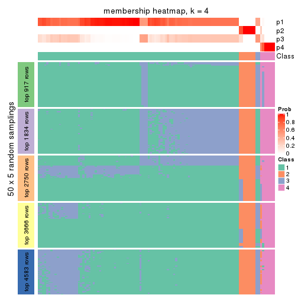
membership_heatmap(res, k = 5)
membership_heatmap(res, k = 6)
As soon as we have had the classes for columns, we can look for signatures which are significantly different between classes which can be candidate marks for certain classes. Following are the heatmaps for signatures.
Signature heatmaps where rows are scaled:
get_signatures(res, k = 2)
get_signatures(res, k = 3)
get_signatures(res, k = 4)
get_signatures(res, k = 5)
get_signatures(res, k = 6)
Signature heatmaps where rows are not scaled:
get_signatures(res, k = 2, scale_rows = FALSE)
get_signatures(res, k = 3, scale_rows = FALSE)
get_signatures(res, k = 4, scale_rows = FALSE)
get_signatures(res, k = 5, scale_rows = FALSE)
get_signatures(res, k = 6, scale_rows = FALSE)
Compare the overlap of signatures from different k:
compare_signatures(res)
get_signature() returns a data frame invisibly. TO get the list of signatures, the function
call should be assigned to a variable explicitly. In following code, if plot argument is set
to FALSE, no heatmap is plotted while only the differential analysis is performed.
# code only for demonstration
tb = get_signature(res, k = ..., plot = FALSE)
An example of the output of tb is:
#> which_row fdr mean_1 mean_2 scaled_mean_1 scaled_mean_2 km
#> 1 38 0.042760348 8.373488 9.131774 -0.5533452 0.5164555 1
#> 2 40 0.018707592 7.106213 8.469186 -0.6173731 0.5762149 1
#> 3 55 0.019134737 10.221463 11.207825 -0.6159697 0.5749050 1
#> 4 59 0.006059896 5.921854 7.869574 -0.6899429 0.6439467 1
#> 5 60 0.018055526 8.928898 10.211722 -0.6204761 0.5791110 1
#> 6 98 0.009384629 15.714769 14.887706 0.6635654 -0.6193277 2
...
The columns in tb are:
which_row: row indices corresponding to the input matrix.fdr: FDR for the differential test. mean_x: The mean value in group x.scaled_mean_x: The mean value in group x after rows are scaled.km: Row groups if k-means clustering is applied to rows.UMAP plot which shows how samples are separated.
dimension_reduction(res, k = 2, method = "UMAP")
dimension_reduction(res, k = 3, method = "UMAP")
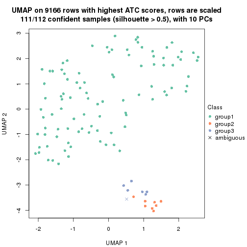
dimension_reduction(res, k = 4, method = "UMAP")
dimension_reduction(res, k = 5, method = "UMAP")
dimension_reduction(res, k = 6, method = "UMAP")
Following heatmap shows how subgroups are split when increasing k:
collect_classes(res)
If matrix rows can be associated to genes, consider to use GO_Enrichment(res,
...) to perform function enrichment for the signature genes.
The object with results only for a single top-value method and a single partition method can be extracted as:
res = res_list["ATC", "mclust"]
# you can also extract it by
# res = res_list["ATC:mclust"]
A summary of res and all the functions that can be applied to it:
res
#> A 'ConsensusPartition' object with k = 2, 3, 4, 5, 6.
#> On a matrix with 9166 rows and 112 columns.
#> Top rows (917, 1834, 2750, 3666, 4583) are extracted by 'ATC' method.
#> Subgroups are detected by 'mclust' method.
#> Performed in total 1250 partitions by row resampling.
#> Best k for subgroups seems to be 2.
#>
#> Following methods can be applied to this 'ConsensusPartition' object:
#> [1] "cola_report" "collect_classes" "collect_plots"
#> [4] "collect_stats" "colnames" "compare_signatures"
#> [7] "consensus_heatmap" "dimension_reduction" "functional_enrichment"
#> [10] "get_anno_col" "get_anno" "get_classes"
#> [13] "get_consensus" "get_matrix" "get_membership"
#> [16] "get_param" "get_signatures" "get_stats"
#> [19] "is_best_k" "is_stable_k" "membership_heatmap"
#> [22] "ncol" "nrow" "plot_ecdf"
#> [25] "rownames" "select_partition_number" "show"
#> [28] "suggest_best_k" "test_to_known_factors"
collect_plots() function collects all the plots made from res for all k (number of partitions)
into one single page to provide an easy and fast comparison between different k.
collect_plots(res)
The plots are:
k and the heatmap of
predicted classes for each k.k.k.k.All the plots in panels can be made by individual functions and they are plotted later in this section.
select_partition_number() produces several plots showing different
statistics for choosing “optimized” k. There are following statistics:
k;k, the area increased is defined as \(A_k - A_{k-1}\).The detailed explanations of these statistics can be found in the cola vignette.
Generally speaking, lower PAC score, higher mean silhouette score or higher
concordance corresponds to better partition. Rand index and Jaccard index
measure how similar the current partition is compared to partition with k-1.
If they are too similar, we won't accept k is better than k-1.
select_partition_number(res)
The numeric values for all these statistics can be obtained by get_stats().
get_stats(res)
#> k 1-PAC mean_silhouette concordance area_increased Rand Jaccard
#> 2 2 0.982 0.960 0.983 0.3412 0.671 0.671
#> 3 3 0.703 0.847 0.917 0.8161 0.666 0.515
#> 4 4 0.596 0.710 0.819 0.0880 0.913 0.780
#> 5 5 0.575 0.647 0.795 0.0330 0.936 0.820
#> 6 6 0.524 0.688 0.785 0.0204 0.975 0.922
suggest_best_k() suggests the best \(k\) based on these statistics. The rules are as follows:
NA.suggest_best_k(res)
#> [1] 2
Following shows the table of the partitions (You need to click the show/hide
code output link to see it). The membership matrix (columns with name p*)
is inferred by
clue::cl_consensus()
function with the SE method. Basically the value in the membership matrix
represents the probability to belong to a certain group. The finall class
label for an item is determined with the group with highest probability it
belongs to.
In get_classes() function, the entropy is calculated from the membership
matrix and the silhouette score is calculated from the consensus matrix.
cbind(get_classes(res, k = 2), get_membership(res, k = 2))
#> class entropy silhouette p1 p2
#> SRR1003755 2 0.0000 0.982 0.000 1.000
#> SRR1003756 2 0.0000 0.982 0.000 1.000
#> SRR1003757 1 0.3274 0.928 0.940 0.060
#> SRR1003758 1 0.3114 0.932 0.944 0.056
#> SRR1003759 1 0.9732 0.340 0.596 0.404
#> SRR1003760 2 0.0000 0.982 0.000 1.000
#> SRR1003761 2 0.0000 0.982 0.000 1.000
#> SRR1003762 2 0.0000 0.982 0.000 1.000
#> SRR1003763 2 0.0000 0.982 0.000 1.000
#> SRR1003764 2 0.0000 0.982 0.000 1.000
#> SRR1003765 2 0.0000 0.982 0.000 1.000
#> SRR1003766 2 0.0000 0.982 0.000 1.000
#> SRR1003767 2 0.0000 0.982 0.000 1.000
#> SRR1003768 2 0.0000 0.982 0.000 1.000
#> SRR1003769 2 0.0000 0.982 0.000 1.000
#> SRR1003770 2 0.0000 0.982 0.000 1.000
#> SRR1003771 2 0.0000 0.982 0.000 1.000
#> SRR1003773 2 0.0000 0.982 0.000 1.000
#> SRR1003772 1 0.0000 0.982 1.000 0.000
#> SRR1003774 1 0.0000 0.982 1.000 0.000
#> SRR1003775 1 0.0000 0.982 1.000 0.000
#> SRR1003776 1 0.0000 0.982 1.000 0.000
#> SRR1003777 1 0.0000 0.982 1.000 0.000
#> SRR1003778 2 0.0000 0.982 0.000 1.000
#> SRR1003779 1 0.0000 0.982 1.000 0.000
#> SRR1003780 2 0.0000 0.982 0.000 1.000
#> SRR1003781 1 0.0000 0.982 1.000 0.000
#> SRR1003784 1 0.0000 0.982 1.000 0.000
#> SRR1003785 2 0.6438 0.806 0.164 0.836
#> SRR1003786 1 0.0000 0.982 1.000 0.000
#> SRR1003783 1 0.0000 0.982 1.000 0.000
#> SRR1003787 1 0.0000 0.982 1.000 0.000
#> SRR1003788 1 0.0000 0.982 1.000 0.000
#> SRR1003789 2 0.0000 0.982 0.000 1.000
#> SRR1003790 1 0.0000 0.982 1.000 0.000
#> SRR1003791 1 0.0000 0.982 1.000 0.000
#> SRR1003792 1 0.0000 0.982 1.000 0.000
#> SRR1003793 1 0.0000 0.982 1.000 0.000
#> SRR1003794 1 0.0000 0.982 1.000 0.000
#> SRR1003795 1 0.9393 0.459 0.644 0.356
#> SRR1003796 2 0.0000 0.982 0.000 1.000
#> SRR1003797 1 0.0000 0.982 1.000 0.000
#> SRR1003798 1 0.0000 0.982 1.000 0.000
#> SRR1003799 1 0.0000 0.982 1.000 0.000
#> SRR1003800 1 0.0000 0.982 1.000 0.000
#> SRR1003801 1 0.0000 0.982 1.000 0.000
#> SRR1003802 1 0.2948 0.936 0.948 0.052
#> SRR1003803 1 0.0000 0.982 1.000 0.000
#> SRR1003804 1 0.0000 0.982 1.000 0.000
#> SRR1003805 1 0.0000 0.982 1.000 0.000
#> SRR1003806 1 0.0000 0.982 1.000 0.000
#> SRR1003807 1 0.0000 0.982 1.000 0.000
#> SRR1003809 1 0.0000 0.982 1.000 0.000
#> SRR1003808 1 0.0000 0.982 1.000 0.000
#> SRR1003810 1 0.0000 0.982 1.000 0.000
#> SRR1003811 1 0.0000 0.982 1.000 0.000
#> SRR1003812 1 0.0000 0.982 1.000 0.000
#> SRR1003813 1 0.8955 0.547 0.688 0.312
#> SRR1003814 1 0.0000 0.982 1.000 0.000
#> SRR1003815 1 0.0000 0.982 1.000 0.000
#> SRR1003816 1 0.0000 0.982 1.000 0.000
#> SRR1003817 1 0.0000 0.982 1.000 0.000
#> SRR1003818 1 0.0000 0.982 1.000 0.000
#> SRR1003819 1 0.0000 0.982 1.000 0.000
#> SRR1003820 1 0.0000 0.982 1.000 0.000
#> SRR1003821 1 0.0000 0.982 1.000 0.000
#> SRR1003822 1 0.0000 0.982 1.000 0.000
#> SRR1003824 1 0.0000 0.982 1.000 0.000
#> SRR1003823 1 0.0000 0.982 1.000 0.000
#> SRR1003825 1 0.0000 0.982 1.000 0.000
#> SRR1003826 1 0.0000 0.982 1.000 0.000
#> SRR1003827 1 0.0000 0.982 1.000 0.000
#> SRR1003828 1 0.0000 0.982 1.000 0.000
#> SRR1003829 1 0.0000 0.982 1.000 0.000
#> SRR1003830 1 0.0000 0.982 1.000 0.000
#> SRR1003831 1 0.0000 0.982 1.000 0.000
#> SRR1003832 1 0.0000 0.982 1.000 0.000
#> SRR1003833 1 0.0000 0.982 1.000 0.000
#> SRR1003834 1 0.0000 0.982 1.000 0.000
#> SRR1003836 1 0.0000 0.982 1.000 0.000
#> SRR1003835 1 0.0000 0.982 1.000 0.000
#> SRR1003838 2 0.1633 0.962 0.024 0.976
#> SRR1003837 1 0.0000 0.982 1.000 0.000
#> SRR1003839 1 0.0000 0.982 1.000 0.000
#> SRR1003840 1 0.5294 0.862 0.880 0.120
#> SRR1003841 2 0.0000 0.982 0.000 1.000
#> SRR1003842 1 0.0000 0.982 1.000 0.000
#> SRR1003844 1 0.0000 0.982 1.000 0.000
#> SRR1003845 1 0.5294 0.862 0.880 0.120
#> SRR1003846 1 0.0000 0.982 1.000 0.000
#> SRR1003847 1 0.0000 0.982 1.000 0.000
#> SRR1003848 1 0.0000 0.982 1.000 0.000
#> SRR1003849 2 0.7139 0.760 0.196 0.804
#> SRR1003850 1 0.0000 0.982 1.000 0.000
#> SRR1003851 1 0.1414 0.966 0.980 0.020
#> SRR1003852 1 0.0000 0.982 1.000 0.000
#> SRR1003853 1 0.0000 0.982 1.000 0.000
#> SRR1003854 1 0.0000 0.982 1.000 0.000
#> SRR1003843 1 0.0000 0.982 1.000 0.000
#> SRR1003855 1 0.0000 0.982 1.000 0.000
#> SRR1003856 1 0.0672 0.976 0.992 0.008
#> SRR1003857 1 0.0000 0.982 1.000 0.000
#> SRR1003858 1 0.0000 0.982 1.000 0.000
#> SRR1003859 1 0.0000 0.982 1.000 0.000
#> SRR1003860 1 0.0000 0.982 1.000 0.000
#> SRR1003861 1 0.0000 0.982 1.000 0.000
#> SRR1003862 1 0.0000 0.982 1.000 0.000
#> SRR1003863 1 0.0000 0.982 1.000 0.000
#> SRR1003864 1 0.0000 0.982 1.000 0.000
#> SRR1003865 1 0.1843 0.959 0.972 0.028
#> SRR1003866 1 0.0000 0.982 1.000 0.000
#> SRR1003867 1 0.0000 0.982 1.000 0.000
cbind(get_classes(res, k = 3), get_membership(res, k = 3))
#> class entropy silhouette p1 p2 p3
#> SRR1003755 2 0.0000 0.99037 0.000 1.000 0.000
#> SRR1003756 2 0.0000 0.99037 0.000 1.000 0.000
#> SRR1003757 3 0.0892 0.86958 0.020 0.000 0.980
#> SRR1003758 3 0.1031 0.87153 0.024 0.000 0.976
#> SRR1003759 3 0.3359 0.82031 0.016 0.084 0.900
#> SRR1003760 2 0.0000 0.99037 0.000 1.000 0.000
#> SRR1003761 2 0.0000 0.99037 0.000 1.000 0.000
#> SRR1003762 2 0.0000 0.99037 0.000 1.000 0.000
#> SRR1003763 2 0.0000 0.99037 0.000 1.000 0.000
#> SRR1003764 2 0.0000 0.99037 0.000 1.000 0.000
#> SRR1003765 2 0.0000 0.99037 0.000 1.000 0.000
#> SRR1003766 2 0.0000 0.99037 0.000 1.000 0.000
#> SRR1003767 2 0.0000 0.99037 0.000 1.000 0.000
#> SRR1003768 2 0.0000 0.99037 0.000 1.000 0.000
#> SRR1003769 2 0.0000 0.99037 0.000 1.000 0.000
#> SRR1003770 2 0.0000 0.99037 0.000 1.000 0.000
#> SRR1003771 2 0.0000 0.99037 0.000 1.000 0.000
#> SRR1003773 2 0.2356 0.94181 0.000 0.928 0.072
#> SRR1003772 1 0.0592 0.90791 0.988 0.000 0.012
#> SRR1003774 3 0.5291 0.68888 0.268 0.000 0.732
#> SRR1003775 1 0.2261 0.88737 0.932 0.000 0.068
#> SRR1003776 1 0.1411 0.90366 0.964 0.000 0.036
#> SRR1003777 1 0.1753 0.89518 0.952 0.000 0.048
#> SRR1003778 2 0.2261 0.94459 0.000 0.932 0.068
#> SRR1003779 1 0.1289 0.90543 0.968 0.000 0.032
#> SRR1003780 2 0.0000 0.99037 0.000 1.000 0.000
#> SRR1003781 3 0.4750 0.79083 0.216 0.000 0.784
#> SRR1003784 3 0.0747 0.86763 0.016 0.000 0.984
#> SRR1003785 3 0.4002 0.75240 0.000 0.160 0.840
#> SRR1003786 1 0.0000 0.90615 1.000 0.000 0.000
#> SRR1003783 1 0.0424 0.90734 0.992 0.000 0.008
#> SRR1003787 1 0.0747 0.90846 0.984 0.000 0.016
#> SRR1003788 3 0.2448 0.88031 0.076 0.000 0.924
#> SRR1003789 2 0.0000 0.99037 0.000 1.000 0.000
#> SRR1003790 1 0.0000 0.90615 1.000 0.000 0.000
#> SRR1003791 3 0.3412 0.85685 0.124 0.000 0.876
#> SRR1003792 1 0.2625 0.87974 0.916 0.000 0.084
#> SRR1003793 1 0.0592 0.90791 0.988 0.000 0.012
#> SRR1003794 1 0.0747 0.90836 0.984 0.000 0.016
#> SRR1003795 3 0.3686 0.77465 0.000 0.140 0.860
#> SRR1003796 2 0.2356 0.94181 0.000 0.928 0.072
#> SRR1003797 1 0.0000 0.90615 1.000 0.000 0.000
#> SRR1003798 1 0.5327 0.64526 0.728 0.000 0.272
#> SRR1003799 1 0.2878 0.86800 0.904 0.000 0.096
#> SRR1003800 1 0.6140 0.34615 0.596 0.000 0.404
#> SRR1003801 3 0.3686 0.84564 0.140 0.000 0.860
#> SRR1003802 3 0.0475 0.85965 0.004 0.004 0.992
#> SRR1003803 1 0.0747 0.90754 0.984 0.000 0.016
#> SRR1003804 3 0.5835 0.54256 0.340 0.000 0.660
#> SRR1003805 1 0.0237 0.90707 0.996 0.000 0.004
#> SRR1003806 1 0.2448 0.88386 0.924 0.000 0.076
#> SRR1003807 3 0.2356 0.88082 0.072 0.000 0.928
#> SRR1003809 3 0.2066 0.88049 0.060 0.000 0.940
#> SRR1003808 3 0.4346 0.82083 0.184 0.000 0.816
#> SRR1003810 3 0.5397 0.66937 0.280 0.000 0.720
#> SRR1003811 3 0.3038 0.86859 0.104 0.000 0.896
#> SRR1003812 1 0.0747 0.90759 0.984 0.000 0.016
#> SRR1003813 3 0.2448 0.82480 0.000 0.076 0.924
#> SRR1003814 3 0.6026 0.50030 0.376 0.000 0.624
#> SRR1003815 3 0.3038 0.86821 0.104 0.000 0.896
#> SRR1003816 1 0.0592 0.90791 0.988 0.000 0.012
#> SRR1003817 1 0.2878 0.86938 0.904 0.000 0.096
#> SRR1003818 3 0.6126 0.47995 0.400 0.000 0.600
#> SRR1003819 3 0.2356 0.88182 0.072 0.000 0.928
#> SRR1003820 1 0.0592 0.90741 0.988 0.000 0.012
#> SRR1003821 1 0.2066 0.88936 0.940 0.000 0.060
#> SRR1003822 3 0.0237 0.86000 0.004 0.000 0.996
#> SRR1003824 3 0.4605 0.78357 0.204 0.000 0.796
#> SRR1003823 1 0.0000 0.90615 1.000 0.000 0.000
#> SRR1003825 3 0.1860 0.87988 0.052 0.000 0.948
#> SRR1003826 1 0.3752 0.82564 0.856 0.000 0.144
#> SRR1003827 1 0.0000 0.90615 1.000 0.000 0.000
#> SRR1003828 1 0.5560 0.60939 0.700 0.000 0.300
#> SRR1003829 1 0.0592 0.90791 0.988 0.000 0.012
#> SRR1003830 1 0.0000 0.90615 1.000 0.000 0.000
#> SRR1003831 1 0.1031 0.90708 0.976 0.000 0.024
#> SRR1003832 1 0.0000 0.90615 1.000 0.000 0.000
#> SRR1003833 1 0.0424 0.90760 0.992 0.000 0.008
#> SRR1003834 1 0.0592 0.90850 0.988 0.000 0.012
#> SRR1003836 3 0.2711 0.87610 0.088 0.000 0.912
#> SRR1003835 3 0.2537 0.88005 0.080 0.000 0.920
#> SRR1003838 3 0.4178 0.74189 0.000 0.172 0.828
#> SRR1003837 1 0.2537 0.87043 0.920 0.000 0.080
#> SRR1003839 1 0.5810 0.52697 0.664 0.000 0.336
#> SRR1003840 3 0.0983 0.86390 0.016 0.004 0.980
#> SRR1003841 2 0.0000 0.99037 0.000 1.000 0.000
#> SRR1003842 1 0.1529 0.90315 0.960 0.000 0.040
#> SRR1003844 1 0.0000 0.90615 1.000 0.000 0.000
#> SRR1003845 3 0.0829 0.86341 0.012 0.004 0.984
#> SRR1003846 1 0.0424 0.90760 0.992 0.000 0.008
#> SRR1003847 1 0.5968 0.38797 0.636 0.000 0.364
#> SRR1003848 3 0.2261 0.88098 0.068 0.000 0.932
#> SRR1003849 3 0.3879 0.76010 0.000 0.152 0.848
#> SRR1003850 1 0.6307 -0.00152 0.512 0.000 0.488
#> SRR1003851 3 0.2496 0.83218 0.004 0.068 0.928
#> SRR1003852 3 0.4842 0.78295 0.224 0.000 0.776
#> SRR1003853 1 0.4291 0.76426 0.820 0.000 0.180
#> SRR1003854 1 0.6045 0.34669 0.620 0.000 0.380
#> SRR1003843 3 0.2261 0.88083 0.068 0.000 0.932
#> SRR1003855 1 0.0000 0.90615 1.000 0.000 0.000
#> SRR1003856 3 0.1015 0.86538 0.012 0.008 0.980
#> SRR1003857 1 0.2066 0.89080 0.940 0.000 0.060
#> SRR1003858 1 0.2356 0.88108 0.928 0.000 0.072
#> SRR1003859 1 0.0000 0.90615 1.000 0.000 0.000
#> SRR1003860 1 0.0000 0.90615 1.000 0.000 0.000
#> SRR1003861 1 0.2711 0.87313 0.912 0.000 0.088
#> SRR1003862 1 0.0592 0.90791 0.988 0.000 0.012
#> SRR1003863 3 0.2261 0.88205 0.068 0.000 0.932
#> SRR1003864 1 0.0000 0.90615 1.000 0.000 0.000
#> SRR1003865 3 0.1620 0.86445 0.024 0.012 0.964
#> SRR1003866 1 0.5760 0.46808 0.672 0.000 0.328
#> SRR1003867 1 0.0000 0.90615 1.000 0.000 0.000
cbind(get_classes(res, k = 4), get_membership(res, k = 4))
#> class entropy silhouette p1 p2 p3 p4
#> SRR1003755 2 0.1211 0.92112 0.000 0.960 0.040 0.000
#> SRR1003756 2 0.1211 0.92112 0.000 0.960 0.040 0.000
#> SRR1003757 4 0.3257 0.58617 0.004 0.000 0.152 0.844
#> SRR1003758 4 0.3257 0.58617 0.004 0.000 0.152 0.844
#> SRR1003759 4 0.6652 0.21178 0.000 0.088 0.396 0.516
#> SRR1003760 2 0.0188 0.94540 0.000 0.996 0.004 0.000
#> SRR1003761 2 0.0469 0.94207 0.000 0.988 0.012 0.000
#> SRR1003762 2 0.0000 0.94574 0.000 1.000 0.000 0.000
#> SRR1003763 2 0.0000 0.94574 0.000 1.000 0.000 0.000
#> SRR1003764 2 0.0000 0.94574 0.000 1.000 0.000 0.000
#> SRR1003765 2 0.2814 0.90963 0.000 0.868 0.132 0.000
#> SRR1003766 2 0.2814 0.90963 0.000 0.868 0.132 0.000
#> SRR1003767 2 0.1716 0.93623 0.000 0.936 0.064 0.000
#> SRR1003768 2 0.2814 0.90963 0.000 0.868 0.132 0.000
#> SRR1003769 2 0.2814 0.90963 0.000 0.868 0.132 0.000
#> SRR1003770 2 0.2814 0.90963 0.000 0.868 0.132 0.000
#> SRR1003771 2 0.1867 0.93405 0.000 0.928 0.072 0.000
#> SRR1003773 3 0.5950 0.37038 0.000 0.416 0.544 0.040
#> SRR1003772 1 0.0779 0.87886 0.980 0.000 0.004 0.016
#> SRR1003774 4 0.4079 0.62221 0.180 0.000 0.020 0.800
#> SRR1003775 1 0.2111 0.87749 0.932 0.000 0.024 0.044
#> SRR1003776 1 0.1743 0.87909 0.940 0.000 0.004 0.056
#> SRR1003777 1 0.0804 0.87762 0.980 0.000 0.008 0.012
#> SRR1003778 3 0.5774 0.25865 0.000 0.464 0.508 0.028
#> SRR1003779 1 0.2401 0.86187 0.904 0.000 0.004 0.092
#> SRR1003780 2 0.0188 0.94540 0.000 0.996 0.004 0.000
#> SRR1003781 4 0.7654 0.41797 0.284 0.000 0.252 0.464
#> SRR1003784 4 0.4972 -0.20897 0.000 0.000 0.456 0.544
#> SRR1003785 3 0.5453 0.69330 0.000 0.032 0.648 0.320
#> SRR1003786 1 0.0376 0.87584 0.992 0.000 0.004 0.004
#> SRR1003783 1 0.0779 0.87997 0.980 0.000 0.004 0.016
#> SRR1003787 1 0.0895 0.87976 0.976 0.000 0.004 0.020
#> SRR1003788 4 0.3128 0.65664 0.040 0.000 0.076 0.884
#> SRR1003789 2 0.0188 0.94540 0.000 0.996 0.004 0.000
#> SRR1003790 1 0.1042 0.87974 0.972 0.000 0.008 0.020
#> SRR1003791 4 0.5121 0.66855 0.120 0.000 0.116 0.764
#> SRR1003792 1 0.2593 0.86761 0.904 0.000 0.016 0.080
#> SRR1003793 1 0.1004 0.87954 0.972 0.000 0.004 0.024
#> SRR1003794 1 0.1820 0.87988 0.944 0.000 0.020 0.036
#> SRR1003795 3 0.5311 0.68812 0.000 0.024 0.648 0.328
#> SRR1003796 3 0.5827 0.33167 0.000 0.436 0.532 0.032
#> SRR1003797 1 0.0188 0.87479 0.996 0.000 0.004 0.000
#> SRR1003798 1 0.5161 0.60807 0.676 0.000 0.024 0.300
#> SRR1003799 1 0.2831 0.84709 0.876 0.000 0.004 0.120
#> SRR1003800 4 0.5213 0.42340 0.328 0.000 0.020 0.652
#> SRR1003801 4 0.3335 0.65513 0.120 0.000 0.020 0.860
#> SRR1003802 3 0.5158 0.38954 0.000 0.004 0.524 0.472
#> SRR1003803 1 0.1209 0.88150 0.964 0.000 0.004 0.032
#> SRR1003804 4 0.4290 0.59241 0.212 0.000 0.016 0.772
#> SRR1003805 1 0.0672 0.87724 0.984 0.000 0.008 0.008
#> SRR1003806 1 0.3249 0.83661 0.852 0.000 0.008 0.140
#> SRR1003807 4 0.3399 0.65238 0.040 0.000 0.092 0.868
#> SRR1003809 4 0.4175 0.48910 0.012 0.000 0.212 0.776
#> SRR1003808 4 0.7534 0.45315 0.240 0.000 0.268 0.492
#> SRR1003810 4 0.4267 0.62031 0.188 0.000 0.024 0.788
#> SRR1003811 4 0.3900 0.67841 0.072 0.000 0.084 0.844
#> SRR1003812 1 0.1042 0.88006 0.972 0.000 0.008 0.020
#> SRR1003813 3 0.4837 0.64684 0.000 0.004 0.648 0.348
#> SRR1003814 1 0.7464 -0.02429 0.496 0.000 0.208 0.296
#> SRR1003815 4 0.3900 0.68073 0.084 0.000 0.072 0.844
#> SRR1003816 1 0.1284 0.88103 0.964 0.000 0.012 0.024
#> SRR1003817 1 0.2530 0.85645 0.896 0.000 0.004 0.100
#> SRR1003818 1 0.7386 -0.02847 0.496 0.000 0.184 0.320
#> SRR1003819 4 0.4150 0.66407 0.056 0.000 0.120 0.824
#> SRR1003820 1 0.0927 0.87510 0.976 0.000 0.016 0.008
#> SRR1003821 1 0.0672 0.87754 0.984 0.000 0.008 0.008
#> SRR1003822 4 0.4431 0.32070 0.000 0.000 0.304 0.696
#> SRR1003824 4 0.4057 0.64302 0.152 0.000 0.032 0.816
#> SRR1003823 1 0.0469 0.87340 0.988 0.000 0.012 0.000
#> SRR1003825 4 0.2844 0.67027 0.048 0.000 0.052 0.900
#> SRR1003826 1 0.2844 0.85574 0.900 0.000 0.052 0.048
#> SRR1003827 1 0.0336 0.87846 0.992 0.000 0.000 0.008
#> SRR1003828 1 0.5766 0.38913 0.564 0.000 0.032 0.404
#> SRR1003829 1 0.0895 0.87945 0.976 0.000 0.004 0.020
#> SRR1003830 1 0.0336 0.87342 0.992 0.000 0.008 0.000
#> SRR1003831 1 0.2882 0.85851 0.892 0.000 0.024 0.084
#> SRR1003832 1 0.0469 0.87894 0.988 0.000 0.000 0.012
#> SRR1003833 1 0.2521 0.86754 0.912 0.000 0.024 0.064
#> SRR1003834 1 0.2635 0.86833 0.904 0.000 0.020 0.076
#> SRR1003836 4 0.4155 0.68592 0.100 0.000 0.072 0.828
#> SRR1003835 4 0.3323 0.67976 0.064 0.000 0.060 0.876
#> SRR1003838 3 0.5517 0.69271 0.000 0.036 0.648 0.316
#> SRR1003837 1 0.4446 0.75998 0.776 0.000 0.028 0.196
#> SRR1003839 1 0.5649 0.41914 0.580 0.000 0.028 0.392
#> SRR1003840 4 0.5202 0.49826 0.016 0.004 0.312 0.668
#> SRR1003841 2 0.0188 0.94540 0.000 0.996 0.004 0.000
#> SRR1003842 1 0.2060 0.87855 0.932 0.000 0.016 0.052
#> SRR1003844 1 0.0524 0.87796 0.988 0.000 0.004 0.008
#> SRR1003845 4 0.5154 0.46934 0.012 0.004 0.324 0.660
#> SRR1003846 1 0.1854 0.87660 0.940 0.000 0.012 0.048
#> SRR1003847 1 0.5793 0.42183 0.600 0.000 0.040 0.360
#> SRR1003848 4 0.3056 0.65393 0.040 0.000 0.072 0.888
#> SRR1003849 3 0.5384 0.69200 0.000 0.028 0.648 0.324
#> SRR1003850 1 0.6214 0.00892 0.476 0.000 0.052 0.472
#> SRR1003851 3 0.5233 0.68340 0.000 0.020 0.648 0.332
#> SRR1003852 4 0.7347 0.48987 0.228 0.000 0.244 0.528
#> SRR1003853 1 0.5041 0.69518 0.728 0.000 0.040 0.232
#> SRR1003854 1 0.5609 0.68614 0.712 0.000 0.088 0.200
#> SRR1003843 4 0.4050 0.63697 0.036 0.000 0.144 0.820
#> SRR1003855 1 0.1824 0.87396 0.936 0.000 0.004 0.060
#> SRR1003856 4 0.4830 0.10994 0.000 0.000 0.392 0.608
#> SRR1003857 1 0.3278 0.84254 0.864 0.000 0.020 0.116
#> SRR1003858 1 0.3658 0.82164 0.836 0.000 0.020 0.144
#> SRR1003859 1 0.1174 0.88015 0.968 0.000 0.012 0.020
#> SRR1003860 1 0.0817 0.88095 0.976 0.000 0.000 0.024
#> SRR1003861 1 0.4281 0.78378 0.792 0.000 0.028 0.180
#> SRR1003862 1 0.1042 0.87995 0.972 0.000 0.008 0.020
#> SRR1003863 4 0.5179 0.52018 0.052 0.000 0.220 0.728
#> SRR1003864 1 0.0188 0.87477 0.996 0.000 0.004 0.000
#> SRR1003865 4 0.5761 0.41621 0.024 0.012 0.332 0.632
#> SRR1003866 1 0.5067 0.63681 0.736 0.000 0.048 0.216
#> SRR1003867 1 0.1109 0.88095 0.968 0.000 0.004 0.028
cbind(get_classes(res, k = 5), get_membership(res, k = 5))
#> class entropy silhouette p1 p2 p3 p4 p5
#> SRR1003755 2 0.3087 0.68673 0.008 0.836 0.152 0.000 0.004
#> SRR1003756 2 0.3087 0.68673 0.008 0.836 0.152 0.000 0.004
#> SRR1003757 4 0.5332 0.48625 0.028 0.000 0.184 0.708 0.080
#> SRR1003758 4 0.5342 0.49707 0.032 0.000 0.176 0.712 0.080
#> SRR1003759 5 0.7298 0.37796 0.012 0.116 0.116 0.176 0.580
#> SRR1003760 2 0.0579 0.82022 0.000 0.984 0.008 0.008 0.000
#> SRR1003761 2 0.1356 0.80368 0.000 0.956 0.028 0.004 0.012
#> SRR1003762 2 0.0566 0.82303 0.000 0.984 0.004 0.000 0.012
#> SRR1003763 2 0.0162 0.82107 0.000 0.996 0.004 0.000 0.000
#> SRR1003764 2 0.0324 0.82190 0.000 0.992 0.004 0.000 0.004
#> SRR1003765 2 0.5659 0.68720 0.000 0.604 0.116 0.000 0.280
#> SRR1003766 2 0.5659 0.68720 0.000 0.604 0.116 0.000 0.280
#> SRR1003767 2 0.1894 0.81464 0.000 0.920 0.008 0.000 0.072
#> SRR1003768 2 0.5659 0.68720 0.000 0.604 0.116 0.000 0.280
#> SRR1003769 2 0.5659 0.68720 0.000 0.604 0.116 0.000 0.280
#> SRR1003770 2 0.5659 0.68720 0.000 0.604 0.116 0.000 0.280
#> SRR1003771 2 0.2843 0.79356 0.000 0.848 0.008 0.000 0.144
#> SRR1003773 3 0.4877 0.32761 0.016 0.456 0.524 0.004 0.000
#> SRR1003772 1 0.1059 0.85210 0.968 0.000 0.008 0.004 0.020
#> SRR1003774 4 0.3551 0.55338 0.136 0.000 0.000 0.820 0.044
#> SRR1003775 1 0.2179 0.84263 0.912 0.000 0.008 0.008 0.072
#> SRR1003776 1 0.2359 0.84488 0.912 0.000 0.008 0.044 0.036
#> SRR1003777 1 0.1364 0.85083 0.952 0.000 0.012 0.000 0.036
#> SRR1003778 3 0.4826 0.28900 0.020 0.472 0.508 0.000 0.000
#> SRR1003779 1 0.2456 0.84185 0.904 0.000 0.008 0.064 0.024
#> SRR1003780 2 0.0609 0.82298 0.000 0.980 0.000 0.000 0.020
#> SRR1003781 1 0.7496 -0.37627 0.408 0.000 0.048 0.212 0.332
#> SRR1003784 4 0.5304 0.33624 0.036 0.000 0.408 0.548 0.008
#> SRR1003785 3 0.3387 0.70672 0.024 0.008 0.836 0.132 0.000
#> SRR1003786 1 0.1082 0.85221 0.964 0.000 0.008 0.000 0.028
#> SRR1003783 1 0.2074 0.84013 0.920 0.000 0.004 0.016 0.060
#> SRR1003787 1 0.0566 0.85246 0.984 0.000 0.004 0.012 0.000
#> SRR1003788 4 0.2390 0.60750 0.032 0.000 0.044 0.912 0.012
#> SRR1003789 2 0.0579 0.81900 0.000 0.984 0.008 0.000 0.008
#> SRR1003790 1 0.1205 0.85147 0.956 0.000 0.000 0.004 0.040
#> SRR1003791 4 0.6491 0.30073 0.144 0.000 0.048 0.612 0.196
#> SRR1003792 1 0.2830 0.82535 0.876 0.000 0.000 0.080 0.044
#> SRR1003793 1 0.0510 0.85257 0.984 0.000 0.000 0.016 0.000
#> SRR1003794 1 0.1996 0.84380 0.928 0.000 0.004 0.036 0.032
#> SRR1003795 3 0.3381 0.69598 0.016 0.004 0.820 0.160 0.000
#> SRR1003796 3 0.4787 0.31769 0.012 0.456 0.528 0.004 0.000
#> SRR1003797 1 0.0579 0.85165 0.984 0.000 0.008 0.000 0.008
#> SRR1003798 1 0.4914 0.58418 0.676 0.000 0.000 0.260 0.064
#> SRR1003799 1 0.2522 0.81449 0.880 0.000 0.000 0.108 0.012
#> SRR1003800 4 0.4799 0.43471 0.220 0.000 0.008 0.716 0.056
#> SRR1003801 4 0.2932 0.58948 0.112 0.000 0.004 0.864 0.020
#> SRR1003802 4 0.5367 0.17518 0.036 0.000 0.468 0.488 0.008
#> SRR1003803 1 0.2103 0.84929 0.920 0.000 0.004 0.020 0.056
#> SRR1003804 4 0.3888 0.53358 0.148 0.000 0.000 0.796 0.056
#> SRR1003805 1 0.0693 0.85192 0.980 0.000 0.008 0.000 0.012
#> SRR1003806 1 0.3495 0.76692 0.812 0.000 0.000 0.160 0.028
#> SRR1003807 4 0.2606 0.61068 0.032 0.000 0.056 0.900 0.012
#> SRR1003809 4 0.3973 0.57521 0.036 0.000 0.164 0.792 0.008
#> SRR1003808 5 0.7698 0.28906 0.332 0.000 0.052 0.264 0.352
#> SRR1003810 4 0.3953 0.55549 0.144 0.000 0.012 0.804 0.040
#> SRR1003811 4 0.4028 0.59839 0.044 0.000 0.088 0.824 0.044
#> SRR1003812 1 0.1988 0.85080 0.928 0.000 0.008 0.016 0.048
#> SRR1003813 3 0.4010 0.65595 0.032 0.000 0.784 0.176 0.008
#> SRR1003814 1 0.5968 0.32738 0.604 0.000 0.036 0.064 0.296
#> SRR1003815 4 0.3952 0.60506 0.048 0.000 0.064 0.832 0.056
#> SRR1003816 1 0.1492 0.85110 0.948 0.000 0.008 0.004 0.040
#> SRR1003817 1 0.2472 0.84543 0.908 0.000 0.012 0.044 0.036
#> SRR1003818 1 0.6220 0.26852 0.572 0.000 0.032 0.084 0.312
#> SRR1003819 4 0.4993 0.58818 0.084 0.000 0.088 0.764 0.064
#> SRR1003820 1 0.1522 0.84794 0.944 0.000 0.012 0.000 0.044
#> SRR1003821 1 0.0898 0.85145 0.972 0.000 0.008 0.000 0.020
#> SRR1003822 4 0.5114 0.39326 0.032 0.000 0.360 0.600 0.008
#> SRR1003824 4 0.3459 0.57142 0.116 0.000 0.000 0.832 0.052
#> SRR1003823 1 0.1717 0.84558 0.936 0.000 0.008 0.004 0.052
#> SRR1003825 4 0.3191 0.60307 0.092 0.000 0.020 0.864 0.024
#> SRR1003826 1 0.1862 0.85228 0.940 0.004 0.016 0.012 0.028
#> SRR1003827 1 0.0324 0.85236 0.992 0.000 0.004 0.004 0.000
#> SRR1003828 4 0.5606 0.19673 0.360 0.000 0.004 0.564 0.072
#> SRR1003829 1 0.0671 0.85399 0.980 0.000 0.000 0.016 0.004
#> SRR1003830 1 0.0566 0.85150 0.984 0.000 0.004 0.000 0.012
#> SRR1003831 1 0.4058 0.73558 0.784 0.000 0.000 0.152 0.064
#> SRR1003832 1 0.0740 0.85351 0.980 0.000 0.004 0.008 0.008
#> SRR1003833 1 0.2928 0.81490 0.872 0.000 0.000 0.064 0.064
#> SRR1003834 1 0.3073 0.81814 0.868 0.000 0.004 0.076 0.052
#> SRR1003836 4 0.4091 0.60375 0.104 0.000 0.044 0.816 0.036
#> SRR1003835 4 0.3423 0.60184 0.092 0.000 0.016 0.852 0.040
#> SRR1003838 3 0.3599 0.70728 0.024 0.016 0.828 0.132 0.000
#> SRR1003837 1 0.4890 0.65210 0.708 0.000 0.004 0.216 0.072
#> SRR1003839 1 0.5746 0.05634 0.472 0.000 0.004 0.452 0.072
#> SRR1003840 5 0.6858 0.45859 0.048 0.004 0.100 0.328 0.520
#> SRR1003841 2 0.0992 0.81939 0.000 0.968 0.008 0.024 0.000
#> SRR1003842 1 0.2074 0.84830 0.920 0.000 0.000 0.036 0.044
#> SRR1003844 1 0.0740 0.85360 0.980 0.000 0.008 0.008 0.004
#> SRR1003845 5 0.6689 0.32715 0.016 0.012 0.104 0.400 0.468
#> SRR1003846 1 0.2446 0.83546 0.900 0.000 0.000 0.056 0.044
#> SRR1003847 1 0.5674 0.40316 0.596 0.000 0.008 0.316 0.080
#> SRR1003848 4 0.2766 0.61703 0.040 0.000 0.056 0.892 0.012
#> SRR1003849 3 0.3556 0.70272 0.032 0.008 0.828 0.132 0.000
#> SRR1003850 4 0.7106 0.19388 0.336 0.000 0.080 0.488 0.096
#> SRR1003851 3 0.3606 0.68549 0.024 0.004 0.808 0.164 0.000
#> SRR1003852 5 0.7455 0.40308 0.280 0.000 0.040 0.260 0.420
#> SRR1003853 1 0.5238 0.55461 0.652 0.000 0.000 0.260 0.088
#> SRR1003854 1 0.5116 0.69663 0.728 0.000 0.016 0.132 0.124
#> SRR1003843 4 0.4660 0.57663 0.044 0.000 0.116 0.780 0.060
#> SRR1003855 1 0.2819 0.82263 0.884 0.000 0.004 0.052 0.060
#> SRR1003856 4 0.6513 0.28959 0.060 0.000 0.368 0.512 0.060
#> SRR1003857 1 0.3750 0.77588 0.820 0.000 0.004 0.116 0.060
#> SRR1003858 1 0.4254 0.72571 0.776 0.000 0.004 0.156 0.064
#> SRR1003859 1 0.1728 0.85417 0.940 0.000 0.004 0.020 0.036
#> SRR1003860 1 0.1267 0.85271 0.960 0.000 0.004 0.024 0.012
#> SRR1003861 1 0.5347 0.43052 0.616 0.000 0.004 0.316 0.064
#> SRR1003862 1 0.1280 0.85290 0.960 0.000 0.008 0.008 0.024
#> SRR1003863 4 0.6590 0.40354 0.088 0.000 0.240 0.596 0.076
#> SRR1003864 1 0.0566 0.85092 0.984 0.000 0.004 0.000 0.012
#> SRR1003865 4 0.7297 -0.00821 0.032 0.012 0.172 0.492 0.292
#> SRR1003866 1 0.4110 0.72270 0.792 0.000 0.012 0.044 0.152
#> SRR1003867 1 0.0854 0.85224 0.976 0.000 0.008 0.004 0.012
cbind(get_classes(res, k = 6), get_membership(res, k = 6))
#> class entropy silhouette p1 p2 p3 p4 p5 p6
#> SRR1003755 6 0.3257 0.8063 0.004 0.012 0.092 0.000 0.048 0.844
#> SRR1003756 6 0.3257 0.8063 0.004 0.012 0.092 0.000 0.048 0.844
#> SRR1003757 4 0.6395 0.5536 0.068 0.092 0.220 0.592 0.028 0.000
#> SRR1003758 4 0.6395 0.5536 0.068 0.092 0.220 0.592 0.028 0.000
#> SRR1003759 5 0.4877 0.3951 0.024 0.008 0.052 0.096 0.764 0.056
#> SRR1003760 6 0.1905 0.8672 0.000 0.012 0.020 0.020 0.016 0.932
#> SRR1003761 6 0.1977 0.8628 0.000 0.008 0.032 0.000 0.040 0.920
#> SRR1003762 6 0.2506 0.8551 0.000 0.068 0.000 0.000 0.052 0.880
#> SRR1003763 6 0.1616 0.8698 0.000 0.020 0.000 0.000 0.048 0.932
#> SRR1003764 6 0.1930 0.8666 0.000 0.036 0.000 0.000 0.048 0.916
#> SRR1003765 2 0.3050 1.0000 0.000 0.764 0.000 0.000 0.000 0.236
#> SRR1003766 2 0.3050 1.0000 0.000 0.764 0.000 0.000 0.000 0.236
#> SRR1003767 6 0.3224 0.8023 0.000 0.132 0.004 0.000 0.040 0.824
#> SRR1003768 2 0.3050 1.0000 0.000 0.764 0.000 0.000 0.000 0.236
#> SRR1003769 2 0.3050 1.0000 0.000 0.764 0.000 0.000 0.000 0.236
#> SRR1003770 2 0.3050 1.0000 0.000 0.764 0.000 0.000 0.000 0.236
#> SRR1003771 6 0.3596 0.7566 0.000 0.172 0.004 0.000 0.040 0.784
#> SRR1003773 3 0.5701 0.2235 0.008 0.012 0.536 0.016 0.056 0.372
#> SRR1003772 1 0.1176 0.8383 0.956 0.024 0.000 0.000 0.020 0.000
#> SRR1003774 4 0.3024 0.6687 0.120 0.004 0.004 0.844 0.028 0.000
#> SRR1003775 1 0.2501 0.8286 0.896 0.040 0.004 0.012 0.048 0.000
#> SRR1003776 1 0.2351 0.8364 0.904 0.032 0.000 0.028 0.036 0.000
#> SRR1003777 1 0.1682 0.8394 0.928 0.052 0.000 0.000 0.020 0.000
#> SRR1003778 3 0.5533 0.1480 0.016 0.012 0.504 0.000 0.056 0.412
#> SRR1003779 1 0.2339 0.8370 0.908 0.024 0.004 0.036 0.028 0.000
#> SRR1003780 6 0.2308 0.8554 0.000 0.068 0.000 0.000 0.040 0.892
#> SRR1003781 5 0.6994 0.3828 0.396 0.048 0.036 0.120 0.400 0.000
#> SRR1003784 4 0.6292 0.3556 0.060 0.056 0.380 0.484 0.020 0.000
#> SRR1003785 3 0.2364 0.6588 0.044 0.004 0.904 0.036 0.000 0.012
#> SRR1003786 1 0.1321 0.8417 0.952 0.024 0.000 0.004 0.020 0.000
#> SRR1003783 1 0.2907 0.8151 0.868 0.064 0.004 0.008 0.056 0.000
#> SRR1003787 1 0.0798 0.8430 0.976 0.012 0.004 0.004 0.004 0.000
#> SRR1003788 4 0.2610 0.7175 0.060 0.004 0.048 0.884 0.004 0.000
#> SRR1003789 6 0.1232 0.8714 0.000 0.016 0.024 0.000 0.004 0.956
#> SRR1003790 1 0.2628 0.8310 0.888 0.056 0.004 0.012 0.040 0.000
#> SRR1003791 4 0.6211 0.2281 0.176 0.000 0.028 0.500 0.296 0.000
#> SRR1003792 1 0.2619 0.8241 0.884 0.008 0.004 0.072 0.032 0.000
#> SRR1003793 1 0.1026 0.8432 0.968 0.008 0.004 0.012 0.008 0.000
#> SRR1003794 1 0.2720 0.8247 0.884 0.016 0.004 0.056 0.040 0.000
#> SRR1003795 3 0.3656 0.6381 0.048 0.012 0.820 0.108 0.012 0.000
#> SRR1003796 3 0.5627 0.2117 0.008 0.012 0.536 0.012 0.056 0.376
#> SRR1003797 1 0.0820 0.8392 0.972 0.012 0.000 0.000 0.016 0.000
#> SRR1003798 1 0.5510 0.5064 0.620 0.052 0.012 0.276 0.040 0.000
#> SRR1003799 1 0.2976 0.7879 0.844 0.012 0.000 0.124 0.020 0.000
#> SRR1003800 4 0.3744 0.6103 0.168 0.008 0.004 0.784 0.036 0.000
#> SRR1003801 4 0.1845 0.7089 0.072 0.004 0.000 0.916 0.008 0.000
#> SRR1003802 3 0.6195 -0.1092 0.056 0.052 0.492 0.380 0.020 0.000
#> SRR1003803 1 0.2744 0.8208 0.876 0.060 0.000 0.012 0.052 0.000
#> SRR1003804 4 0.2771 0.6714 0.116 0.000 0.000 0.852 0.032 0.000
#> SRR1003805 1 0.0993 0.8422 0.964 0.012 0.000 0.000 0.024 0.000
#> SRR1003806 1 0.3922 0.6599 0.732 0.004 0.004 0.236 0.024 0.000
#> SRR1003807 4 0.2730 0.7193 0.060 0.008 0.036 0.884 0.012 0.000
#> SRR1003809 4 0.5128 0.6522 0.056 0.036 0.196 0.696 0.016 0.000
#> SRR1003808 5 0.7417 0.4772 0.308 0.064 0.036 0.176 0.416 0.000
#> SRR1003810 4 0.3019 0.6789 0.124 0.004 0.008 0.844 0.020 0.000
#> SRR1003811 4 0.5114 0.6857 0.060 0.080 0.100 0.736 0.024 0.000
#> SRR1003812 1 0.2244 0.8388 0.912 0.032 0.004 0.016 0.036 0.000
#> SRR1003813 3 0.3462 0.6387 0.044 0.000 0.824 0.112 0.020 0.000
#> SRR1003814 1 0.6210 0.3094 0.596 0.072 0.020 0.076 0.236 0.000
#> SRR1003815 4 0.4722 0.6995 0.064 0.064 0.080 0.768 0.024 0.000
#> SRR1003816 1 0.1933 0.8380 0.924 0.032 0.000 0.012 0.032 0.000
#> SRR1003817 1 0.2633 0.8313 0.892 0.032 0.004 0.044 0.028 0.000
#> SRR1003818 1 0.5961 0.3801 0.616 0.076 0.008 0.080 0.220 0.000
#> SRR1003819 4 0.4891 0.7014 0.072 0.052 0.076 0.760 0.040 0.000
#> SRR1003820 1 0.2144 0.8270 0.908 0.048 0.000 0.004 0.040 0.000
#> SRR1003821 1 0.0964 0.8399 0.968 0.016 0.000 0.004 0.012 0.000
#> SRR1003822 4 0.6053 0.4264 0.048 0.056 0.336 0.540 0.020 0.000
#> SRR1003824 4 0.2526 0.6938 0.096 0.004 0.000 0.876 0.024 0.000
#> SRR1003823 1 0.2471 0.8218 0.888 0.052 0.000 0.004 0.056 0.000
#> SRR1003825 4 0.3035 0.7136 0.072 0.020 0.012 0.868 0.028 0.000
#> SRR1003826 1 0.2947 0.8074 0.872 0.036 0.012 0.012 0.068 0.000
#> SRR1003827 1 0.0508 0.8412 0.984 0.000 0.000 0.004 0.012 0.000
#> SRR1003828 4 0.5003 0.3684 0.296 0.020 0.004 0.632 0.048 0.000
#> SRR1003829 1 0.0893 0.8422 0.972 0.016 0.004 0.004 0.004 0.000
#> SRR1003830 1 0.0777 0.8397 0.972 0.004 0.000 0.000 0.024 0.000
#> SRR1003831 1 0.3770 0.7664 0.800 0.016 0.004 0.136 0.044 0.000
#> SRR1003832 1 0.0951 0.8441 0.968 0.020 0.000 0.004 0.008 0.000
#> SRR1003833 1 0.3182 0.8032 0.852 0.016 0.004 0.084 0.044 0.000
#> SRR1003834 1 0.3742 0.7970 0.820 0.040 0.004 0.092 0.044 0.000
#> SRR1003836 4 0.2911 0.7198 0.076 0.012 0.028 0.872 0.012 0.000
#> SRR1003835 4 0.3462 0.7046 0.076 0.048 0.004 0.840 0.032 0.000
#> SRR1003838 3 0.2677 0.6599 0.052 0.008 0.892 0.032 0.004 0.012
#> SRR1003837 1 0.4779 0.6756 0.708 0.048 0.004 0.204 0.036 0.000
#> SRR1003839 1 0.5526 0.1046 0.472 0.012 0.008 0.440 0.068 0.000
#> SRR1003840 5 0.4706 0.4836 0.052 0.000 0.040 0.164 0.736 0.008
#> SRR1003841 6 0.2818 0.8527 0.000 0.008 0.028 0.044 0.036 0.884
#> SRR1003842 1 0.2350 0.8336 0.900 0.008 0.004 0.064 0.024 0.000
#> SRR1003844 1 0.0748 0.8416 0.976 0.004 0.000 0.004 0.016 0.000
#> SRR1003845 5 0.4932 0.4449 0.036 0.000 0.044 0.220 0.692 0.008
#> SRR1003846 1 0.2828 0.8177 0.872 0.012 0.004 0.080 0.032 0.000
#> SRR1003847 1 0.5458 0.5107 0.632 0.012 0.008 0.220 0.128 0.000
#> SRR1003848 4 0.2927 0.7198 0.064 0.020 0.040 0.872 0.004 0.000
#> SRR1003849 3 0.2563 0.6585 0.056 0.004 0.896 0.028 0.008 0.008
#> SRR1003850 4 0.6209 0.3919 0.292 0.032 0.032 0.560 0.084 0.000
#> SRR1003851 3 0.3938 0.6166 0.044 0.012 0.796 0.132 0.016 0.000
#> SRR1003852 5 0.5795 0.5275 0.308 0.000 0.016 0.140 0.536 0.000
#> SRR1003853 1 0.4464 0.6933 0.728 0.004 0.004 0.168 0.096 0.000
#> SRR1003854 1 0.4355 0.7263 0.752 0.004 0.012 0.148 0.084 0.000
#> SRR1003843 4 0.4781 0.6842 0.064 0.008 0.088 0.752 0.088 0.000
#> SRR1003855 1 0.3009 0.8136 0.868 0.024 0.004 0.064 0.040 0.000
#> SRR1003856 4 0.6975 0.3720 0.088 0.040 0.344 0.460 0.068 0.000
#> SRR1003857 1 0.3492 0.7868 0.828 0.020 0.004 0.108 0.040 0.000
#> SRR1003858 1 0.3941 0.7478 0.784 0.020 0.004 0.152 0.040 0.000
#> SRR1003859 1 0.2678 0.8289 0.884 0.064 0.004 0.012 0.036 0.000
#> SRR1003860 1 0.1700 0.8436 0.936 0.028 0.000 0.012 0.024 0.000
#> SRR1003861 1 0.5461 0.2402 0.540 0.032 0.004 0.376 0.048 0.000
#> SRR1003862 1 0.1478 0.8375 0.944 0.032 0.000 0.004 0.020 0.000
#> SRR1003863 4 0.7051 0.5738 0.112 0.068 0.180 0.560 0.080 0.000
#> SRR1003864 1 0.0692 0.8393 0.976 0.004 0.000 0.000 0.020 0.000
#> SRR1003865 4 0.7848 -0.0292 0.048 0.064 0.148 0.364 0.360 0.016
#> SRR1003866 1 0.4283 0.7161 0.776 0.072 0.000 0.048 0.104 0.000
#> SRR1003867 1 0.1844 0.8425 0.932 0.028 0.004 0.012 0.024 0.000
Heatmaps for the consensus matrix. It visualizes the probability of two samples to be in a same group.
consensus_heatmap(res, k = 2)
consensus_heatmap(res, k = 3)
consensus_heatmap(res, k = 4)

consensus_heatmap(res, k = 5)
consensus_heatmap(res, k = 6)

Heatmaps for the membership of samples in all partitions to see how consistent they are:
membership_heatmap(res, k = 2)
membership_heatmap(res, k = 3)
membership_heatmap(res, k = 4)
membership_heatmap(res, k = 5)
membership_heatmap(res, k = 6)
As soon as we have had the classes for columns, we can look for signatures which are significantly different between classes which can be candidate marks for certain classes. Following are the heatmaps for signatures.
Signature heatmaps where rows are scaled:
get_signatures(res, k = 2)
get_signatures(res, k = 3)
get_signatures(res, k = 4)
get_signatures(res, k = 5)
get_signatures(res, k = 6)
Signature heatmaps where rows are not scaled:
get_signatures(res, k = 2, scale_rows = FALSE)
get_signatures(res, k = 3, scale_rows = FALSE)
get_signatures(res, k = 4, scale_rows = FALSE)
get_signatures(res, k = 5, scale_rows = FALSE)
get_signatures(res, k = 6, scale_rows = FALSE)
Compare the overlap of signatures from different k:
compare_signatures(res)
get_signature() returns a data frame invisibly. TO get the list of signatures, the function
call should be assigned to a variable explicitly. In following code, if plot argument is set
to FALSE, no heatmap is plotted while only the differential analysis is performed.
# code only for demonstration
tb = get_signature(res, k = ..., plot = FALSE)
An example of the output of tb is:
#> which_row fdr mean_1 mean_2 scaled_mean_1 scaled_mean_2 km
#> 1 38 0.042760348 8.373488 9.131774 -0.5533452 0.5164555 1
#> 2 40 0.018707592 7.106213 8.469186 -0.6173731 0.5762149 1
#> 3 55 0.019134737 10.221463 11.207825 -0.6159697 0.5749050 1
#> 4 59 0.006059896 5.921854 7.869574 -0.6899429 0.6439467 1
#> 5 60 0.018055526 8.928898 10.211722 -0.6204761 0.5791110 1
#> 6 98 0.009384629 15.714769 14.887706 0.6635654 -0.6193277 2
...
The columns in tb are:
which_row: row indices corresponding to the input matrix.fdr: FDR for the differential test. mean_x: The mean value in group x.scaled_mean_x: The mean value in group x after rows are scaled.km: Row groups if k-means clustering is applied to rows.UMAP plot which shows how samples are separated.
dimension_reduction(res, k = 2, method = "UMAP")
dimension_reduction(res, k = 3, method = "UMAP")
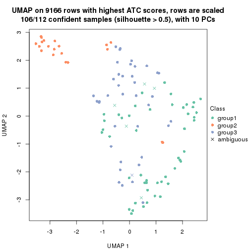
dimension_reduction(res, k = 4, method = "UMAP")
dimension_reduction(res, k = 5, method = "UMAP")
dimension_reduction(res, k = 6, method = "UMAP")
Following heatmap shows how subgroups are split when increasing k:
collect_classes(res)
If matrix rows can be associated to genes, consider to use GO_Enrichment(res,
...) to perform function enrichment for the signature genes.
The object with results only for a single top-value method and a single partition method can be extracted as:
res = res_list["ATC", "NMF"]
# you can also extract it by
# res = res_list["ATC:NMF"]
A summary of res and all the functions that can be applied to it:
res
#> A 'ConsensusPartition' object with k = 2, 3, 4, 5, 6.
#> On a matrix with 9166 rows and 112 columns.
#> Top rows (917, 1834, 2750, 3666, 4583) are extracted by 'ATC' method.
#> Subgroups are detected by 'NMF' method.
#> Performed in total 1250 partitions by row resampling.
#> Best k for subgroups seems to be 2.
#>
#> Following methods can be applied to this 'ConsensusPartition' object:
#> [1] "cola_report" "collect_classes" "collect_plots"
#> [4] "collect_stats" "colnames" "compare_signatures"
#> [7] "consensus_heatmap" "dimension_reduction" "functional_enrichment"
#> [10] "get_anno_col" "get_anno" "get_classes"
#> [13] "get_consensus" "get_matrix" "get_membership"
#> [16] "get_param" "get_signatures" "get_stats"
#> [19] "is_best_k" "is_stable_k" "membership_heatmap"
#> [22] "ncol" "nrow" "plot_ecdf"
#> [25] "rownames" "select_partition_number" "show"
#> [28] "suggest_best_k" "test_to_known_factors"
collect_plots() function collects all the plots made from res for all k (number of partitions)
into one single page to provide an easy and fast comparison between different k.
collect_plots(res)
The plots are:
k and the heatmap of
predicted classes for each k.k.k.k.All the plots in panels can be made by individual functions and they are plotted later in this section.
select_partition_number() produces several plots showing different
statistics for choosing “optimized” k. There are following statistics:
k;k, the area increased is defined as \(A_k - A_{k-1}\).The detailed explanations of these statistics can be found in the cola vignette.
Generally speaking, lower PAC score, higher mean silhouette score or higher
concordance corresponds to better partition. Rand index and Jaccard index
measure how similar the current partition is compared to partition with k-1.
If they are too similar, we won't accept k is better than k-1.
select_partition_number(res)
The numeric values for all these statistics can be obtained by get_stats().
get_stats(res)
#> k 1-PAC mean_silhouette concordance area_increased Rand Jaccard
#> 2 2 1.000 0.986 0.994 0.1274 0.882 0.882
#> 3 3 0.595 0.824 0.905 1.2969 0.920 0.909
#> 4 4 0.493 0.703 0.852 0.3280 0.855 0.819
#> 5 5 0.483 0.763 0.870 0.1334 0.892 0.838
#> 6 6 0.646 0.786 0.894 0.0797 0.982 0.968
suggest_best_k() suggests the best \(k\) based on these statistics. The rules are as follows:
NA.suggest_best_k(res)
#> [1] 2
Following shows the table of the partitions (You need to click the show/hide
code output link to see it). The membership matrix (columns with name p*)
is inferred by
clue::cl_consensus()
function with the SE method. Basically the value in the membership matrix
represents the probability to belong to a certain group. The finall class
label for an item is determined with the group with highest probability it
belongs to.
In get_classes() function, the entropy is calculated from the membership
matrix and the silhouette score is calculated from the consensus matrix.
cbind(get_classes(res, k = 2), get_membership(res, k = 2))
#> class entropy silhouette p1 p2
#> SRR1003755 1 0.0000 0.994 1.000 0.000
#> SRR1003756 1 0.0000 0.994 1.000 0.000
#> SRR1003757 1 0.0000 0.994 1.000 0.000
#> SRR1003758 1 0.0000 0.994 1.000 0.000
#> SRR1003759 1 0.0000 0.994 1.000 0.000
#> SRR1003760 1 0.3431 0.930 0.936 0.064
#> SRR1003761 1 0.1184 0.980 0.984 0.016
#> SRR1003762 1 0.2043 0.964 0.968 0.032
#> SRR1003763 1 0.0938 0.984 0.988 0.012
#> SRR1003764 1 0.0376 0.991 0.996 0.004
#> SRR1003765 2 0.0672 0.996 0.008 0.992
#> SRR1003766 2 0.0938 0.996 0.012 0.988
#> SRR1003767 2 0.0672 0.994 0.008 0.992
#> SRR1003768 2 0.0938 0.996 0.012 0.988
#> SRR1003769 2 0.0938 0.996 0.012 0.988
#> SRR1003770 2 0.0672 0.996 0.008 0.992
#> SRR1003771 2 0.0672 0.994 0.008 0.992
#> SRR1003773 1 0.0376 0.991 0.996 0.004
#> SRR1003772 1 0.0000 0.994 1.000 0.000
#> SRR1003774 1 0.0000 0.994 1.000 0.000
#> SRR1003775 1 0.0000 0.994 1.000 0.000
#> SRR1003776 1 0.0000 0.994 1.000 0.000
#> SRR1003777 1 0.0000 0.994 1.000 0.000
#> SRR1003778 1 0.0672 0.987 0.992 0.008
#> SRR1003779 1 0.0000 0.994 1.000 0.000
#> SRR1003780 1 0.0672 0.987 0.992 0.008
#> SRR1003781 1 0.0000 0.994 1.000 0.000
#> SRR1003784 1 0.0000 0.994 1.000 0.000
#> SRR1003785 1 0.0000 0.994 1.000 0.000
#> SRR1003786 1 0.0000 0.994 1.000 0.000
#> SRR1003783 1 0.0000 0.994 1.000 0.000
#> SRR1003787 1 0.0000 0.994 1.000 0.000
#> SRR1003788 1 0.0000 0.994 1.000 0.000
#> SRR1003789 1 0.0938 0.984 0.988 0.012
#> SRR1003790 1 0.0000 0.994 1.000 0.000
#> SRR1003791 1 0.0000 0.994 1.000 0.000
#> SRR1003792 1 0.0000 0.994 1.000 0.000
#> SRR1003793 1 0.0000 0.994 1.000 0.000
#> SRR1003794 1 0.0000 0.994 1.000 0.000
#> SRR1003795 1 0.0000 0.994 1.000 0.000
#> SRR1003796 1 0.0672 0.987 0.992 0.008
#> SRR1003797 1 0.0000 0.994 1.000 0.000
#> SRR1003798 1 0.0000 0.994 1.000 0.000
#> SRR1003799 1 0.0000 0.994 1.000 0.000
#> SRR1003800 1 0.0000 0.994 1.000 0.000
#> SRR1003801 1 0.0000 0.994 1.000 0.000
#> SRR1003802 1 0.0000 0.994 1.000 0.000
#> SRR1003803 1 0.0000 0.994 1.000 0.000
#> SRR1003804 1 0.0000 0.994 1.000 0.000
#> SRR1003805 1 0.0000 0.994 1.000 0.000
#> SRR1003806 1 0.0000 0.994 1.000 0.000
#> SRR1003807 1 0.0000 0.994 1.000 0.000
#> SRR1003809 1 0.0000 0.994 1.000 0.000
#> SRR1003808 1 0.0000 0.994 1.000 0.000
#> SRR1003810 1 0.0000 0.994 1.000 0.000
#> SRR1003811 1 0.0000 0.994 1.000 0.000
#> SRR1003812 1 0.0000 0.994 1.000 0.000
#> SRR1003813 1 0.0000 0.994 1.000 0.000
#> SRR1003814 1 0.0000 0.994 1.000 0.000
#> SRR1003815 1 0.0000 0.994 1.000 0.000
#> SRR1003816 1 0.0000 0.994 1.000 0.000
#> SRR1003817 1 0.0000 0.994 1.000 0.000
#> SRR1003818 1 0.0000 0.994 1.000 0.000
#> SRR1003819 1 0.0000 0.994 1.000 0.000
#> SRR1003820 1 0.0000 0.994 1.000 0.000
#> SRR1003821 1 0.0000 0.994 1.000 0.000
#> SRR1003822 1 0.0000 0.994 1.000 0.000
#> SRR1003824 1 0.0000 0.994 1.000 0.000
#> SRR1003823 1 0.0000 0.994 1.000 0.000
#> SRR1003825 1 0.0000 0.994 1.000 0.000
#> SRR1003826 1 0.0000 0.994 1.000 0.000
#> SRR1003827 1 0.0000 0.994 1.000 0.000
#> SRR1003828 1 0.0000 0.994 1.000 0.000
#> SRR1003829 1 0.0000 0.994 1.000 0.000
#> SRR1003830 1 0.0000 0.994 1.000 0.000
#> SRR1003831 1 0.0000 0.994 1.000 0.000
#> SRR1003832 1 0.0000 0.994 1.000 0.000
#> SRR1003833 1 0.0000 0.994 1.000 0.000
#> SRR1003834 1 0.0000 0.994 1.000 0.000
#> SRR1003836 1 0.0000 0.994 1.000 0.000
#> SRR1003835 1 0.0000 0.994 1.000 0.000
#> SRR1003838 1 0.0000 0.994 1.000 0.000
#> SRR1003837 1 0.0000 0.994 1.000 0.000
#> SRR1003839 1 0.0000 0.994 1.000 0.000
#> SRR1003840 1 0.0000 0.994 1.000 0.000
#> SRR1003841 1 0.9896 0.211 0.560 0.440
#> SRR1003842 1 0.0000 0.994 1.000 0.000
#> SRR1003844 1 0.0000 0.994 1.000 0.000
#> SRR1003845 1 0.0000 0.994 1.000 0.000
#> SRR1003846 1 0.0000 0.994 1.000 0.000
#> SRR1003847 1 0.0000 0.994 1.000 0.000
#> SRR1003848 1 0.0000 0.994 1.000 0.000
#> SRR1003849 1 0.0000 0.994 1.000 0.000
#> SRR1003850 1 0.0000 0.994 1.000 0.000
#> SRR1003851 1 0.0000 0.994 1.000 0.000
#> SRR1003852 1 0.0000 0.994 1.000 0.000
#> SRR1003853 1 0.0000 0.994 1.000 0.000
#> SRR1003854 1 0.0000 0.994 1.000 0.000
#> SRR1003843 1 0.0000 0.994 1.000 0.000
#> SRR1003855 1 0.0000 0.994 1.000 0.000
#> SRR1003856 1 0.0000 0.994 1.000 0.000
#> SRR1003857 1 0.0000 0.994 1.000 0.000
#> SRR1003858 1 0.0000 0.994 1.000 0.000
#> SRR1003859 1 0.0000 0.994 1.000 0.000
#> SRR1003860 1 0.0000 0.994 1.000 0.000
#> SRR1003861 1 0.0000 0.994 1.000 0.000
#> SRR1003862 1 0.0000 0.994 1.000 0.000
#> SRR1003863 1 0.0000 0.994 1.000 0.000
#> SRR1003864 1 0.0000 0.994 1.000 0.000
#> SRR1003865 1 0.0000 0.994 1.000 0.000
#> SRR1003866 1 0.0000 0.994 1.000 0.000
#> SRR1003867 1 0.0000 0.994 1.000 0.000
cbind(get_classes(res, k = 3), get_membership(res, k = 3))
#> class entropy silhouette p1 p2 p3
#> SRR1003755 1 0.1289 0.89659 0.968 0.000 0.032
#> SRR1003756 1 0.1289 0.89659 0.968 0.000 0.032
#> SRR1003757 1 0.1289 0.89763 0.968 0.000 0.032
#> SRR1003758 1 0.1289 0.89763 0.968 0.000 0.032
#> SRR1003759 1 0.4399 0.77491 0.812 0.000 0.188
#> SRR1003760 3 0.8843 0.61246 0.160 0.276 0.564
#> SRR1003761 3 0.8311 0.65832 0.252 0.132 0.616
#> SRR1003762 1 0.5576 0.72083 0.812 0.104 0.084
#> SRR1003763 1 0.5093 0.77223 0.836 0.076 0.088
#> SRR1003764 1 0.4845 0.79684 0.844 0.052 0.104
#> SRR1003765 2 0.0424 0.98315 0.000 0.992 0.008
#> SRR1003766 2 0.0747 0.98195 0.000 0.984 0.016
#> SRR1003767 2 0.1411 0.97555 0.000 0.964 0.036
#> SRR1003768 2 0.0747 0.98195 0.000 0.984 0.016
#> SRR1003769 2 0.0592 0.98263 0.000 0.988 0.012
#> SRR1003770 2 0.0592 0.98296 0.000 0.988 0.012
#> SRR1003771 2 0.1529 0.97383 0.000 0.960 0.040
#> SRR1003773 1 0.6192 0.29985 0.580 0.000 0.420
#> SRR1003772 1 0.0237 0.89836 0.996 0.000 0.004
#> SRR1003774 1 0.1643 0.89356 0.956 0.000 0.044
#> SRR1003775 1 0.1031 0.89430 0.976 0.000 0.024
#> SRR1003776 1 0.0237 0.89824 0.996 0.000 0.004
#> SRR1003777 1 0.1163 0.89279 0.972 0.000 0.028
#> SRR1003778 1 0.6309 0.00539 0.504 0.000 0.496
#> SRR1003779 1 0.0592 0.89841 0.988 0.000 0.012
#> SRR1003780 3 0.4172 0.73943 0.156 0.004 0.840
#> SRR1003781 1 0.1529 0.88744 0.960 0.000 0.040
#> SRR1003784 1 0.5327 0.66065 0.728 0.000 0.272
#> SRR1003785 1 0.6079 0.39879 0.612 0.000 0.388
#> SRR1003786 1 0.1289 0.89157 0.968 0.000 0.032
#> SRR1003783 1 0.0592 0.89684 0.988 0.000 0.012
#> SRR1003787 1 0.0892 0.89548 0.980 0.000 0.020
#> SRR1003788 1 0.2796 0.87195 0.908 0.000 0.092
#> SRR1003789 3 0.4172 0.74544 0.156 0.004 0.840
#> SRR1003790 1 0.0892 0.89538 0.980 0.000 0.020
#> SRR1003791 1 0.3686 0.83999 0.860 0.000 0.140
#> SRR1003792 1 0.1031 0.89523 0.976 0.000 0.024
#> SRR1003793 1 0.1289 0.89421 0.968 0.000 0.032
#> SRR1003794 1 0.0747 0.89926 0.984 0.000 0.016
#> SRR1003795 1 0.6126 0.37200 0.600 0.000 0.400
#> SRR1003796 1 0.6309 -0.01856 0.500 0.000 0.500
#> SRR1003797 1 0.0592 0.89686 0.988 0.000 0.012
#> SRR1003798 1 0.0892 0.89872 0.980 0.000 0.020
#> SRR1003799 1 0.0592 0.89871 0.988 0.000 0.012
#> SRR1003800 1 0.1643 0.89431 0.956 0.000 0.044
#> SRR1003801 1 0.1753 0.89242 0.952 0.000 0.048
#> SRR1003802 1 0.3619 0.83872 0.864 0.000 0.136
#> SRR1003803 1 0.0747 0.89859 0.984 0.000 0.016
#> SRR1003804 1 0.1411 0.89558 0.964 0.000 0.036
#> SRR1003805 1 0.1289 0.89133 0.968 0.000 0.032
#> SRR1003806 1 0.1289 0.89641 0.968 0.000 0.032
#> SRR1003807 1 0.3879 0.82534 0.848 0.000 0.152
#> SRR1003809 1 0.3267 0.85363 0.884 0.000 0.116
#> SRR1003808 1 0.1411 0.89758 0.964 0.000 0.036
#> SRR1003810 1 0.1289 0.89618 0.968 0.000 0.032
#> SRR1003811 1 0.1964 0.89028 0.944 0.000 0.056
#> SRR1003812 1 0.0424 0.89781 0.992 0.000 0.008
#> SRR1003813 1 0.5560 0.60186 0.700 0.000 0.300
#> SRR1003814 1 0.1031 0.89472 0.976 0.000 0.024
#> SRR1003815 1 0.1643 0.89476 0.956 0.000 0.044
#> SRR1003816 1 0.0747 0.89643 0.984 0.000 0.016
#> SRR1003817 1 0.0592 0.89751 0.988 0.000 0.012
#> SRR1003818 1 0.0892 0.89547 0.980 0.000 0.020
#> SRR1003819 1 0.2537 0.87798 0.920 0.000 0.080
#> SRR1003820 1 0.0892 0.89528 0.980 0.000 0.020
#> SRR1003821 1 0.0892 0.89547 0.980 0.000 0.020
#> SRR1003822 1 0.5016 0.71017 0.760 0.000 0.240
#> SRR1003824 1 0.2537 0.87883 0.920 0.000 0.080
#> SRR1003823 1 0.1163 0.89559 0.972 0.000 0.028
#> SRR1003825 1 0.2796 0.87295 0.908 0.000 0.092
#> SRR1003826 1 0.1643 0.88517 0.956 0.000 0.044
#> SRR1003827 1 0.0747 0.89584 0.984 0.000 0.016
#> SRR1003828 1 0.2448 0.88117 0.924 0.000 0.076
#> SRR1003829 1 0.1031 0.89497 0.976 0.000 0.024
#> SRR1003830 1 0.0747 0.89780 0.984 0.000 0.016
#> SRR1003831 1 0.1411 0.89565 0.964 0.000 0.036
#> SRR1003832 1 0.0892 0.89921 0.980 0.000 0.020
#> SRR1003833 1 0.1031 0.89860 0.976 0.000 0.024
#> SRR1003834 1 0.2356 0.88336 0.928 0.000 0.072
#> SRR1003836 1 0.3941 0.81879 0.844 0.000 0.156
#> SRR1003835 1 0.2066 0.88985 0.940 0.000 0.060
#> SRR1003838 1 0.6140 0.35914 0.596 0.000 0.404
#> SRR1003837 1 0.0892 0.89921 0.980 0.000 0.020
#> SRR1003839 1 0.2261 0.88475 0.932 0.000 0.068
#> SRR1003840 1 0.4062 0.81108 0.836 0.000 0.164
#> SRR1003841 3 0.5470 0.34437 0.036 0.168 0.796
#> SRR1003842 1 0.1289 0.89482 0.968 0.000 0.032
#> SRR1003844 1 0.0424 0.89728 0.992 0.000 0.008
#> SRR1003845 1 0.4750 0.75138 0.784 0.000 0.216
#> SRR1003846 1 0.1031 0.89681 0.976 0.000 0.024
#> SRR1003847 1 0.1753 0.89889 0.952 0.000 0.048
#> SRR1003848 1 0.3816 0.82759 0.852 0.000 0.148
#> SRR1003849 1 0.5905 0.49719 0.648 0.000 0.352
#> SRR1003850 1 0.3816 0.82787 0.852 0.000 0.148
#> SRR1003851 1 0.5926 0.48800 0.644 0.000 0.356
#> SRR1003852 1 0.2625 0.87777 0.916 0.000 0.084
#> SRR1003853 1 0.1860 0.89579 0.948 0.000 0.052
#> SRR1003854 1 0.1031 0.89707 0.976 0.000 0.024
#> SRR1003843 1 0.4654 0.75978 0.792 0.000 0.208
#> SRR1003855 1 0.0892 0.89774 0.980 0.000 0.020
#> SRR1003856 1 0.5591 0.60207 0.696 0.000 0.304
#> SRR1003857 1 0.0892 0.89757 0.980 0.000 0.020
#> SRR1003858 1 0.1031 0.89824 0.976 0.000 0.024
#> SRR1003859 1 0.0592 0.89801 0.988 0.000 0.012
#> SRR1003860 1 0.0237 0.89845 0.996 0.000 0.004
#> SRR1003861 1 0.1964 0.88953 0.944 0.000 0.056
#> SRR1003862 1 0.0747 0.89699 0.984 0.000 0.016
#> SRR1003863 1 0.3267 0.85374 0.884 0.000 0.116
#> SRR1003864 1 0.0747 0.89670 0.984 0.000 0.016
#> SRR1003865 1 0.1411 0.89791 0.964 0.000 0.036
#> SRR1003866 1 0.0237 0.89858 0.996 0.000 0.004
#> SRR1003867 1 0.0592 0.89738 0.988 0.000 0.012
cbind(get_classes(res, k = 4), get_membership(res, k = 4))
#> class entropy silhouette p1 p2 p3 p4
#> SRR1003755 1 0.3550 0.7238 0.860 0.000 0.096 0.044
#> SRR1003756 1 0.3266 0.7496 0.876 0.000 0.084 0.040
#> SRR1003757 1 0.2522 0.8079 0.908 0.000 0.076 0.016
#> SRR1003758 1 0.2450 0.8111 0.912 0.000 0.072 0.016
#> SRR1003759 1 0.7389 -0.2342 0.516 0.000 0.212 0.272
#> SRR1003760 4 0.8712 0.5686 0.088 0.200 0.208 0.504
#> SRR1003761 4 0.8669 0.6215 0.100 0.132 0.276 0.492
#> SRR1003762 1 0.7885 -0.2138 0.516 0.072 0.336 0.076
#> SRR1003763 1 0.9099 -0.4268 0.376 0.136 0.368 0.120
#> SRR1003764 3 0.8914 -0.0611 0.348 0.108 0.416 0.128
#> SRR1003765 2 0.0000 0.9351 0.000 1.000 0.000 0.000
#> SRR1003766 2 0.2722 0.9263 0.000 0.904 0.032 0.064
#> SRR1003767 2 0.2111 0.9127 0.000 0.932 0.024 0.044
#> SRR1003768 2 0.2722 0.9263 0.000 0.904 0.032 0.064
#> SRR1003769 2 0.2623 0.9274 0.000 0.908 0.028 0.064
#> SRR1003770 2 0.0000 0.9351 0.000 1.000 0.000 0.000
#> SRR1003771 2 0.2021 0.9146 0.000 0.936 0.024 0.040
#> SRR1003773 3 0.4761 0.8108 0.332 0.000 0.664 0.004
#> SRR1003772 1 0.0376 0.8378 0.992 0.000 0.004 0.004
#> SRR1003774 1 0.2053 0.8189 0.924 0.000 0.072 0.004
#> SRR1003775 1 0.0895 0.8333 0.976 0.000 0.004 0.020
#> SRR1003776 1 0.0376 0.8373 0.992 0.000 0.004 0.004
#> SRR1003777 1 0.1042 0.8313 0.972 0.000 0.008 0.020
#> SRR1003778 3 0.4855 0.6622 0.268 0.000 0.712 0.020
#> SRR1003779 1 0.0672 0.8377 0.984 0.000 0.008 0.008
#> SRR1003780 4 0.6660 0.5604 0.084 0.000 0.452 0.464
#> SRR1003781 1 0.1706 0.8168 0.948 0.000 0.016 0.036
#> SRR1003784 1 0.4989 -0.4581 0.528 0.000 0.472 0.000
#> SRR1003785 3 0.5203 0.8263 0.348 0.000 0.636 0.016
#> SRR1003786 1 0.1004 0.8309 0.972 0.000 0.004 0.024
#> SRR1003783 1 0.0188 0.8370 0.996 0.000 0.000 0.004
#> SRR1003787 1 0.0469 0.8385 0.988 0.000 0.000 0.012
#> SRR1003788 1 0.3688 0.6345 0.792 0.000 0.208 0.000
#> SRR1003789 4 0.5872 0.6468 0.032 0.004 0.380 0.584
#> SRR1003790 1 0.0707 0.8361 0.980 0.000 0.000 0.020
#> SRR1003791 1 0.3323 0.7846 0.876 0.000 0.064 0.060
#> SRR1003792 1 0.0779 0.8380 0.980 0.000 0.004 0.016
#> SRR1003793 1 0.0707 0.8348 0.980 0.000 0.000 0.020
#> SRR1003794 1 0.1151 0.8390 0.968 0.000 0.008 0.024
#> SRR1003795 3 0.5969 0.8160 0.392 0.000 0.564 0.044
#> SRR1003796 3 0.5291 0.7939 0.324 0.000 0.652 0.024
#> SRR1003797 1 0.0657 0.8363 0.984 0.000 0.004 0.012
#> SRR1003798 1 0.1557 0.8285 0.944 0.000 0.056 0.000
#> SRR1003799 1 0.1109 0.8354 0.968 0.000 0.028 0.004
#> SRR1003800 1 0.2888 0.7702 0.872 0.000 0.124 0.004
#> SRR1003801 1 0.2469 0.7889 0.892 0.000 0.108 0.000
#> SRR1003802 1 0.5080 -0.2299 0.576 0.000 0.420 0.004
#> SRR1003803 1 0.0469 0.8373 0.988 0.000 0.000 0.012
#> SRR1003804 1 0.2216 0.8035 0.908 0.000 0.092 0.000
#> SRR1003805 1 0.0524 0.8359 0.988 0.000 0.004 0.008
#> SRR1003806 1 0.1792 0.8199 0.932 0.000 0.068 0.000
#> SRR1003807 1 0.4675 0.5101 0.736 0.000 0.244 0.020
#> SRR1003809 1 0.4632 0.3406 0.688 0.000 0.308 0.004
#> SRR1003808 1 0.1677 0.8233 0.948 0.000 0.012 0.040
#> SRR1003810 1 0.1807 0.8283 0.940 0.000 0.052 0.008
#> SRR1003811 1 0.3636 0.7018 0.820 0.000 0.172 0.008
#> SRR1003812 1 0.0188 0.8370 0.996 0.000 0.000 0.004
#> SRR1003813 3 0.5050 0.7938 0.408 0.000 0.588 0.004
#> SRR1003814 1 0.1488 0.8222 0.956 0.000 0.032 0.012
#> SRR1003815 1 0.2676 0.7982 0.896 0.000 0.092 0.012
#> SRR1003816 1 0.0672 0.8373 0.984 0.000 0.008 0.008
#> SRR1003817 1 0.1059 0.8348 0.972 0.000 0.016 0.012
#> SRR1003818 1 0.0804 0.8347 0.980 0.000 0.008 0.012
#> SRR1003819 1 0.3219 0.7775 0.868 0.000 0.112 0.020
#> SRR1003820 1 0.0188 0.8370 0.996 0.000 0.000 0.004
#> SRR1003821 1 0.0657 0.8350 0.984 0.000 0.004 0.012
#> SRR1003822 1 0.4977 -0.4017 0.540 0.000 0.460 0.000
#> SRR1003824 1 0.3266 0.7091 0.832 0.000 0.168 0.000
#> SRR1003823 1 0.0592 0.8358 0.984 0.000 0.000 0.016
#> SRR1003825 1 0.3278 0.7690 0.864 0.000 0.116 0.020
#> SRR1003826 1 0.1109 0.8310 0.968 0.000 0.004 0.028
#> SRR1003827 1 0.0188 0.8377 0.996 0.000 0.000 0.004
#> SRR1003828 1 0.2924 0.7866 0.884 0.000 0.100 0.016
#> SRR1003829 1 0.1022 0.8313 0.968 0.000 0.000 0.032
#> SRR1003830 1 0.0592 0.8358 0.984 0.000 0.000 0.016
#> SRR1003831 1 0.2142 0.8243 0.928 0.000 0.056 0.016
#> SRR1003832 1 0.0657 0.8377 0.984 0.000 0.004 0.012
#> SRR1003833 1 0.1624 0.8338 0.952 0.000 0.020 0.028
#> SRR1003834 1 0.2999 0.7603 0.864 0.000 0.132 0.004
#> SRR1003836 1 0.4353 0.5589 0.756 0.000 0.232 0.012
#> SRR1003835 1 0.2759 0.8138 0.904 0.000 0.052 0.044
#> SRR1003838 3 0.5452 0.8298 0.360 0.000 0.616 0.024
#> SRR1003837 1 0.1297 0.8387 0.964 0.000 0.016 0.020
#> SRR1003839 1 0.2522 0.8114 0.908 0.000 0.076 0.016
#> SRR1003840 1 0.4100 0.6876 0.824 0.000 0.048 0.128
#> SRR1003841 4 0.5421 0.4386 0.000 0.076 0.200 0.724
#> SRR1003842 1 0.1389 0.8262 0.952 0.000 0.000 0.048
#> SRR1003844 1 0.0336 0.8374 0.992 0.000 0.000 0.008
#> SRR1003845 1 0.4824 0.6307 0.780 0.000 0.144 0.076
#> SRR1003846 1 0.1211 0.8311 0.960 0.000 0.000 0.040
#> SRR1003847 1 0.2002 0.8272 0.936 0.000 0.020 0.044
#> SRR1003848 1 0.4917 0.1939 0.656 0.000 0.336 0.008
#> SRR1003849 3 0.4817 0.8254 0.388 0.000 0.612 0.000
#> SRR1003850 1 0.4098 0.6248 0.784 0.000 0.204 0.012
#> SRR1003851 3 0.5526 0.7846 0.416 0.000 0.564 0.020
#> SRR1003852 1 0.2053 0.8111 0.924 0.000 0.004 0.072
#> SRR1003853 1 0.1975 0.8264 0.936 0.000 0.016 0.048
#> SRR1003854 1 0.1767 0.8291 0.944 0.000 0.012 0.044
#> SRR1003843 1 0.4974 0.5183 0.736 0.000 0.224 0.040
#> SRR1003855 1 0.1557 0.8271 0.944 0.000 0.056 0.000
#> SRR1003856 1 0.4998 -0.5240 0.512 0.000 0.488 0.000
#> SRR1003857 1 0.1209 0.8354 0.964 0.000 0.032 0.004
#> SRR1003858 1 0.1211 0.8338 0.960 0.000 0.040 0.000
#> SRR1003859 1 0.0657 0.8380 0.984 0.000 0.004 0.012
#> SRR1003860 1 0.0804 0.8379 0.980 0.000 0.012 0.008
#> SRR1003861 1 0.3047 0.7760 0.872 0.000 0.116 0.012
#> SRR1003862 1 0.0469 0.8367 0.988 0.000 0.000 0.012
#> SRR1003863 1 0.4456 0.4259 0.716 0.000 0.280 0.004
#> SRR1003864 1 0.0524 0.8364 0.988 0.000 0.008 0.004
#> SRR1003865 1 0.1488 0.8370 0.956 0.000 0.032 0.012
#> SRR1003866 1 0.0657 0.8378 0.984 0.000 0.012 0.004
#> SRR1003867 1 0.0524 0.8376 0.988 0.000 0.008 0.004
cbind(get_classes(res, k = 5), get_membership(res, k = 5))
#> class entropy silhouette p1 p2 p3 p4 p5
#> SRR1003755 1 0.5255 0.3507 0.644 0.000 0.068 0.004 0.284
#> SRR1003756 1 0.4914 0.4392 0.676 0.000 0.064 0.000 0.260
#> SRR1003757 1 0.2286 0.8562 0.888 0.000 0.108 0.000 0.004
#> SRR1003758 1 0.2286 0.8570 0.888 0.000 0.108 0.000 0.004
#> SRR1003759 5 0.6887 0.3841 0.192 0.000 0.084 0.136 0.588
#> SRR1003760 5 0.6900 0.2370 0.024 0.068 0.096 0.192 0.620
#> SRR1003761 5 0.7124 0.2575 0.024 0.064 0.128 0.184 0.600
#> SRR1003762 5 0.6132 0.3914 0.220 0.028 0.092 0.012 0.648
#> SRR1003763 5 0.5445 0.4568 0.108 0.060 0.092 0.004 0.736
#> SRR1003764 5 0.5037 0.4712 0.120 0.024 0.100 0.004 0.752
#> SRR1003765 2 0.0162 0.8806 0.000 0.996 0.000 0.000 0.004
#> SRR1003766 2 0.2879 0.8734 0.000 0.880 0.008 0.080 0.032
#> SRR1003767 2 0.3629 0.8106 0.000 0.848 0.036 0.076 0.040
#> SRR1003768 2 0.2879 0.8734 0.000 0.880 0.008 0.080 0.032
#> SRR1003769 2 0.2879 0.8734 0.000 0.880 0.008 0.080 0.032
#> SRR1003770 2 0.0162 0.8806 0.000 0.996 0.000 0.000 0.004
#> SRR1003771 2 0.3688 0.8075 0.000 0.844 0.036 0.080 0.040
#> SRR1003773 3 0.3688 0.6468 0.148 0.000 0.812 0.004 0.036
#> SRR1003772 1 0.0451 0.9068 0.988 0.000 0.004 0.000 0.008
#> SRR1003774 1 0.1970 0.8932 0.924 0.000 0.060 0.004 0.012
#> SRR1003775 1 0.0898 0.9000 0.972 0.000 0.008 0.000 0.020
#> SRR1003776 1 0.0324 0.9072 0.992 0.000 0.004 0.000 0.004
#> SRR1003777 1 0.1168 0.8924 0.960 0.000 0.008 0.000 0.032
#> SRR1003778 3 0.3497 0.5280 0.108 0.000 0.840 0.008 0.044
#> SRR1003779 1 0.0992 0.9053 0.968 0.000 0.008 0.000 0.024
#> SRR1003780 3 0.7412 -0.4873 0.044 0.000 0.448 0.264 0.244
#> SRR1003781 1 0.1251 0.8893 0.956 0.000 0.008 0.000 0.036
#> SRR1003784 3 0.4225 0.5973 0.364 0.000 0.632 0.000 0.004
#> SRR1003785 3 0.2970 0.6852 0.168 0.000 0.828 0.000 0.004
#> SRR1003786 1 0.0798 0.9011 0.976 0.000 0.008 0.000 0.016
#> SRR1003783 1 0.0290 0.9057 0.992 0.000 0.000 0.000 0.008
#> SRR1003787 1 0.0324 0.9073 0.992 0.000 0.004 0.004 0.000
#> SRR1003788 1 0.3305 0.6863 0.776 0.000 0.224 0.000 0.000
#> SRR1003789 5 0.6862 -0.0873 0.020 0.000 0.176 0.332 0.472
#> SRR1003790 1 0.0451 0.9055 0.988 0.000 0.008 0.000 0.004
#> SRR1003791 1 0.3052 0.8493 0.868 0.000 0.092 0.032 0.008
#> SRR1003792 1 0.0693 0.9072 0.980 0.000 0.008 0.000 0.012
#> SRR1003793 1 0.0290 0.9072 0.992 0.000 0.000 0.008 0.000
#> SRR1003794 1 0.0579 0.9080 0.984 0.000 0.008 0.008 0.000
#> SRR1003795 3 0.4518 0.6795 0.216 0.000 0.732 0.048 0.004
#> SRR1003796 3 0.3344 0.6443 0.144 0.000 0.832 0.012 0.012
#> SRR1003797 1 0.0671 0.9035 0.980 0.000 0.004 0.000 0.016
#> SRR1003798 1 0.1082 0.9051 0.964 0.000 0.028 0.008 0.000
#> SRR1003799 1 0.0671 0.9072 0.980 0.000 0.016 0.000 0.004
#> SRR1003800 1 0.2338 0.8525 0.884 0.000 0.112 0.004 0.000
#> SRR1003801 1 0.1792 0.8789 0.916 0.000 0.084 0.000 0.000
#> SRR1003802 3 0.4560 0.3385 0.484 0.000 0.508 0.000 0.008
#> SRR1003803 1 0.0486 0.9085 0.988 0.000 0.004 0.004 0.004
#> SRR1003804 1 0.1671 0.8843 0.924 0.000 0.076 0.000 0.000
#> SRR1003805 1 0.0693 0.9029 0.980 0.000 0.008 0.000 0.012
#> SRR1003806 1 0.1121 0.9004 0.956 0.000 0.044 0.000 0.000
#> SRR1003807 1 0.4065 0.5804 0.720 0.000 0.264 0.016 0.000
#> SRR1003809 1 0.5068 0.0455 0.572 0.000 0.388 0.000 0.040
#> SRR1003808 1 0.1082 0.8997 0.964 0.000 0.000 0.008 0.028
#> SRR1003810 1 0.1571 0.8936 0.936 0.000 0.060 0.000 0.004
#> SRR1003811 1 0.3988 0.6919 0.768 0.000 0.196 0.000 0.036
#> SRR1003812 1 0.0609 0.9043 0.980 0.000 0.000 0.000 0.020
#> SRR1003813 3 0.3883 0.6886 0.184 0.000 0.780 0.000 0.036
#> SRR1003814 1 0.2589 0.8295 0.888 0.000 0.012 0.008 0.092
#> SRR1003815 1 0.2848 0.8424 0.868 0.000 0.104 0.000 0.028
#> SRR1003816 1 0.0794 0.9005 0.972 0.000 0.000 0.000 0.028
#> SRR1003817 1 0.1041 0.8967 0.964 0.000 0.004 0.000 0.032
#> SRR1003818 1 0.1116 0.8983 0.964 0.000 0.004 0.004 0.028
#> SRR1003819 1 0.2474 0.8718 0.896 0.000 0.084 0.008 0.012
#> SRR1003820 1 0.0324 0.9058 0.992 0.000 0.004 0.000 0.004
#> SRR1003821 1 0.0798 0.9019 0.976 0.000 0.008 0.000 0.016
#> SRR1003822 3 0.4549 0.4096 0.464 0.000 0.528 0.000 0.008
#> SRR1003824 1 0.2612 0.8364 0.868 0.000 0.124 0.008 0.000
#> SRR1003823 1 0.0486 0.9068 0.988 0.000 0.004 0.004 0.004
#> SRR1003825 1 0.2249 0.8674 0.896 0.000 0.096 0.008 0.000
#> SRR1003826 1 0.1059 0.8985 0.968 0.000 0.008 0.004 0.020
#> SRR1003827 1 0.0162 0.9062 0.996 0.000 0.000 0.000 0.004
#> SRR1003828 1 0.2233 0.8750 0.904 0.000 0.080 0.016 0.000
#> SRR1003829 1 0.0451 0.9080 0.988 0.000 0.004 0.008 0.000
#> SRR1003830 1 0.0000 0.9066 1.000 0.000 0.000 0.000 0.000
#> SRR1003831 1 0.1408 0.8998 0.948 0.000 0.044 0.008 0.000
#> SRR1003832 1 0.0740 0.9083 0.980 0.000 0.008 0.008 0.004
#> SRR1003833 1 0.1195 0.9041 0.960 0.000 0.028 0.012 0.000
#> SRR1003834 1 0.1764 0.8904 0.928 0.000 0.064 0.008 0.000
#> SRR1003836 1 0.3087 0.7977 0.836 0.000 0.152 0.008 0.004
#> SRR1003835 1 0.1809 0.8911 0.928 0.000 0.060 0.012 0.000
#> SRR1003838 3 0.3203 0.6846 0.168 0.000 0.820 0.012 0.000
#> SRR1003837 1 0.0865 0.9070 0.972 0.000 0.024 0.004 0.000
#> SRR1003839 1 0.1670 0.8952 0.936 0.000 0.052 0.012 0.000
#> SRR1003840 1 0.3279 0.8313 0.868 0.000 0.028 0.040 0.064
#> SRR1003841 4 0.4063 0.0000 0.000 0.032 0.108 0.816 0.044
#> SRR1003842 1 0.0566 0.9076 0.984 0.000 0.000 0.012 0.004
#> SRR1003844 1 0.0727 0.9050 0.980 0.000 0.004 0.004 0.012
#> SRR1003845 1 0.3289 0.8359 0.860 0.000 0.088 0.036 0.016
#> SRR1003846 1 0.0693 0.9069 0.980 0.000 0.012 0.008 0.000
#> SRR1003847 1 0.1012 0.9069 0.968 0.000 0.020 0.012 0.000
#> SRR1003848 1 0.4491 0.2625 0.624 0.000 0.364 0.008 0.004
#> SRR1003849 3 0.3381 0.6908 0.176 0.000 0.808 0.000 0.016
#> SRR1003850 1 0.3141 0.7939 0.832 0.000 0.152 0.016 0.000
#> SRR1003851 3 0.3582 0.6891 0.224 0.000 0.768 0.008 0.000
#> SRR1003852 1 0.1651 0.8942 0.944 0.000 0.008 0.036 0.012
#> SRR1003853 1 0.1314 0.9056 0.960 0.000 0.012 0.012 0.016
#> SRR1003854 1 0.0693 0.9075 0.980 0.000 0.008 0.012 0.000
#> SRR1003843 1 0.4267 0.6282 0.736 0.000 0.232 0.028 0.004
#> SRR1003855 1 0.1168 0.9026 0.960 0.000 0.032 0.008 0.000
#> SRR1003856 3 0.4789 0.5612 0.400 0.000 0.580 0.016 0.004
#> SRR1003857 1 0.0865 0.9060 0.972 0.000 0.024 0.004 0.000
#> SRR1003858 1 0.0771 0.9071 0.976 0.000 0.020 0.000 0.004
#> SRR1003859 1 0.0324 0.9073 0.992 0.000 0.004 0.004 0.000
#> SRR1003860 1 0.0510 0.9067 0.984 0.000 0.016 0.000 0.000
#> SRR1003861 1 0.2304 0.8632 0.892 0.000 0.100 0.008 0.000
#> SRR1003862 1 0.0404 0.9056 0.988 0.000 0.000 0.000 0.012
#> SRR1003863 1 0.4029 0.4476 0.680 0.000 0.316 0.000 0.004
#> SRR1003864 1 0.0932 0.9026 0.972 0.000 0.004 0.004 0.020
#> SRR1003865 1 0.1413 0.9086 0.956 0.000 0.020 0.012 0.012
#> SRR1003866 1 0.0912 0.9090 0.972 0.000 0.016 0.000 0.012
#> SRR1003867 1 0.0798 0.9075 0.976 0.000 0.008 0.000 0.016
cbind(get_classes(res, k = 6), get_membership(res, k = 6))
#> class entropy silhouette p1 p2 p3 p4 p5 p6
#> SRR1003755 6 0.4521 0.1265 0.448 0.000 0.024 0.000 0.004 0.524
#> SRR1003756 1 0.4537 -0.2205 0.492 0.000 0.024 0.000 0.004 0.480
#> SRR1003757 1 0.2918 0.8667 0.856 0.000 0.088 0.004 0.000 0.052
#> SRR1003758 1 0.2575 0.8870 0.880 0.000 0.072 0.004 0.000 0.044
#> SRR1003759 5 0.3393 0.4484 0.108 0.000 0.004 0.000 0.820 0.068
#> SRR1003760 5 0.3121 0.5425 0.016 0.032 0.008 0.004 0.864 0.076
#> SRR1003761 5 0.3299 0.5392 0.016 0.036 0.008 0.004 0.852 0.084
#> SRR1003762 6 0.4296 0.3356 0.088 0.032 0.020 0.000 0.068 0.792
#> SRR1003763 6 0.4267 0.2638 0.024 0.040 0.016 0.004 0.132 0.784
#> SRR1003764 6 0.4025 0.2892 0.032 0.016 0.028 0.000 0.128 0.796
#> SRR1003765 2 0.0000 0.8905 0.000 1.000 0.000 0.000 0.000 0.000
#> SRR1003766 2 0.2426 0.8847 0.000 0.896 0.000 0.048 0.012 0.044
#> SRR1003767 2 0.3235 0.8159 0.000 0.848 0.004 0.076 0.012 0.060
#> SRR1003768 2 0.2426 0.8847 0.000 0.896 0.000 0.048 0.012 0.044
#> SRR1003769 2 0.2426 0.8847 0.000 0.896 0.000 0.048 0.012 0.044
#> SRR1003770 2 0.0000 0.8905 0.000 1.000 0.000 0.000 0.000 0.000
#> SRR1003771 2 0.3235 0.8159 0.000 0.848 0.004 0.076 0.012 0.060
#> SRR1003773 3 0.2030 0.7268 0.048 0.000 0.920 0.016 0.004 0.012
#> SRR1003772 1 0.0937 0.9115 0.960 0.000 0.000 0.000 0.000 0.040
#> SRR1003774 1 0.2066 0.9038 0.908 0.000 0.052 0.000 0.000 0.040
#> SRR1003775 1 0.1010 0.9122 0.960 0.000 0.004 0.000 0.000 0.036
#> SRR1003776 1 0.0777 0.9190 0.972 0.000 0.000 0.000 0.004 0.024
#> SRR1003777 1 0.1082 0.9095 0.956 0.000 0.004 0.000 0.000 0.040
#> SRR1003778 3 0.2888 0.6845 0.044 0.000 0.880 0.028 0.008 0.040
#> SRR1003779 1 0.1434 0.9083 0.940 0.000 0.012 0.000 0.000 0.048
#> SRR1003780 5 0.6292 0.1788 0.020 0.000 0.352 0.060 0.508 0.060
#> SRR1003781 1 0.0692 0.9157 0.976 0.000 0.004 0.000 0.000 0.020
#> SRR1003784 3 0.3081 0.6379 0.220 0.000 0.776 0.000 0.000 0.004
#> SRR1003785 3 0.1573 0.7380 0.052 0.000 0.936 0.004 0.004 0.004
#> SRR1003786 1 0.0935 0.9126 0.964 0.000 0.004 0.000 0.000 0.032
#> SRR1003783 1 0.0547 0.9178 0.980 0.000 0.000 0.000 0.000 0.020
#> SRR1003787 1 0.0146 0.9180 0.996 0.000 0.000 0.000 0.004 0.000
#> SRR1003788 1 0.3673 0.6712 0.736 0.000 0.244 0.000 0.004 0.016
#> SRR1003789 5 0.6349 0.2051 0.012 0.000 0.068 0.180 0.592 0.148
#> SRR1003790 1 0.0547 0.9178 0.980 0.000 0.000 0.000 0.000 0.020
#> SRR1003791 1 0.3498 0.8307 0.836 0.000 0.096 0.016 0.016 0.036
#> SRR1003792 1 0.0260 0.9201 0.992 0.000 0.008 0.000 0.000 0.000
#> SRR1003793 1 0.0551 0.9181 0.984 0.000 0.004 0.000 0.004 0.008
#> SRR1003794 1 0.0146 0.9198 0.996 0.000 0.004 0.000 0.000 0.000
#> SRR1003795 3 0.4770 0.6446 0.104 0.000 0.756 0.076 0.016 0.048
#> SRR1003796 3 0.1738 0.7355 0.052 0.000 0.928 0.016 0.000 0.004
#> SRR1003797 1 0.0777 0.9155 0.972 0.000 0.004 0.000 0.000 0.024
#> SRR1003798 1 0.1096 0.9199 0.964 0.000 0.020 0.004 0.008 0.004
#> SRR1003799 1 0.1261 0.9180 0.952 0.000 0.024 0.000 0.000 0.024
#> SRR1003800 1 0.1845 0.8982 0.916 0.000 0.072 0.004 0.000 0.008
#> SRR1003801 1 0.1829 0.9057 0.920 0.000 0.064 0.000 0.004 0.012
#> SRR1003802 3 0.4183 0.3777 0.380 0.000 0.604 0.008 0.000 0.008
#> SRR1003803 1 0.0653 0.9203 0.980 0.000 0.004 0.004 0.000 0.012
#> SRR1003804 1 0.1750 0.9085 0.928 0.000 0.056 0.004 0.004 0.008
#> SRR1003805 1 0.0405 0.9173 0.988 0.000 0.004 0.000 0.000 0.008
#> SRR1003806 1 0.1036 0.9199 0.964 0.000 0.024 0.004 0.000 0.008
#> SRR1003807 1 0.4490 0.5885 0.688 0.000 0.260 0.008 0.008 0.036
#> SRR1003809 1 0.4396 0.0375 0.520 0.000 0.456 0.000 0.000 0.024
#> SRR1003808 1 0.1059 0.9179 0.964 0.000 0.004 0.000 0.016 0.016
#> SRR1003810 1 0.1789 0.9106 0.924 0.000 0.044 0.000 0.000 0.032
#> SRR1003811 1 0.3672 0.7661 0.776 0.000 0.168 0.000 0.000 0.056
#> SRR1003812 1 0.1219 0.9066 0.948 0.000 0.004 0.000 0.000 0.048
#> SRR1003813 3 0.2187 0.7431 0.064 0.000 0.908 0.012 0.004 0.012
#> SRR1003814 1 0.2544 0.8376 0.864 0.000 0.004 0.000 0.012 0.120
#> SRR1003815 1 0.2948 0.8572 0.848 0.000 0.092 0.000 0.000 0.060
#> SRR1003816 1 0.1471 0.8986 0.932 0.000 0.004 0.000 0.000 0.064
#> SRR1003817 1 0.1327 0.9006 0.936 0.000 0.000 0.000 0.000 0.064
#> SRR1003818 1 0.1010 0.9138 0.960 0.000 0.000 0.000 0.004 0.036
#> SRR1003819 1 0.2619 0.8886 0.880 0.000 0.072 0.000 0.008 0.040
#> SRR1003820 1 0.0603 0.9163 0.980 0.000 0.004 0.000 0.000 0.016
#> SRR1003821 1 0.0692 0.9157 0.976 0.000 0.004 0.000 0.000 0.020
#> SRR1003822 3 0.3867 0.4693 0.328 0.000 0.660 0.000 0.000 0.012
#> SRR1003824 1 0.1888 0.9005 0.916 0.000 0.068 0.000 0.004 0.012
#> SRR1003823 1 0.0291 0.9183 0.992 0.000 0.004 0.000 0.000 0.004
#> SRR1003825 1 0.2280 0.8945 0.904 0.000 0.064 0.004 0.012 0.016
#> SRR1003826 1 0.0508 0.9173 0.984 0.000 0.004 0.000 0.000 0.012
#> SRR1003827 1 0.0405 0.9190 0.988 0.000 0.000 0.000 0.004 0.008
#> SRR1003828 1 0.2034 0.9057 0.920 0.000 0.044 0.004 0.008 0.024
#> SRR1003829 1 0.0260 0.9183 0.992 0.000 0.000 0.000 0.008 0.000
#> SRR1003830 1 0.0405 0.9195 0.988 0.000 0.004 0.000 0.000 0.008
#> SRR1003831 1 0.0891 0.9177 0.968 0.000 0.024 0.000 0.008 0.000
#> SRR1003832 1 0.0436 0.9179 0.988 0.000 0.004 0.000 0.004 0.004
#> SRR1003833 1 0.1078 0.9167 0.964 0.000 0.016 0.000 0.008 0.012
#> SRR1003834 1 0.1268 0.9150 0.952 0.000 0.036 0.000 0.008 0.004
#> SRR1003836 1 0.2274 0.8817 0.892 0.000 0.088 0.000 0.008 0.012
#> SRR1003835 1 0.2179 0.8960 0.908 0.000 0.064 0.004 0.008 0.016
#> SRR1003838 3 0.1692 0.7306 0.048 0.000 0.932 0.012 0.000 0.008
#> SRR1003837 1 0.0837 0.9178 0.972 0.000 0.020 0.000 0.004 0.004
#> SRR1003839 1 0.1555 0.9119 0.940 0.000 0.040 0.000 0.012 0.008
#> SRR1003840 1 0.2680 0.8766 0.892 0.000 0.016 0.016 0.048 0.028
#> SRR1003841 4 0.3069 0.0000 0.000 0.032 0.020 0.852 0.096 0.000
#> SRR1003842 1 0.0692 0.9174 0.976 0.000 0.000 0.000 0.004 0.020
#> SRR1003844 1 0.0405 0.9194 0.988 0.000 0.000 0.000 0.004 0.008
#> SRR1003845 1 0.2832 0.8746 0.884 0.000 0.040 0.016 0.016 0.044
#> SRR1003846 1 0.0881 0.9186 0.972 0.000 0.008 0.000 0.008 0.012
#> SRR1003847 1 0.1180 0.9164 0.960 0.000 0.016 0.000 0.012 0.012
#> SRR1003848 1 0.4265 0.3099 0.596 0.000 0.384 0.004 0.000 0.016
#> SRR1003849 3 0.1493 0.7423 0.056 0.000 0.936 0.004 0.004 0.000
#> SRR1003850 1 0.3069 0.8589 0.860 0.000 0.088 0.012 0.012 0.028
#> SRR1003851 3 0.2415 0.7379 0.084 0.000 0.888 0.016 0.000 0.012
#> SRR1003852 1 0.1218 0.9117 0.956 0.000 0.000 0.004 0.012 0.028
#> SRR1003853 1 0.1180 0.9170 0.960 0.000 0.012 0.000 0.012 0.016
#> SRR1003854 1 0.0881 0.9187 0.972 0.000 0.008 0.000 0.008 0.012
#> SRR1003843 1 0.4866 0.6445 0.712 0.000 0.196 0.040 0.012 0.040
#> SRR1003855 1 0.0951 0.9181 0.968 0.000 0.020 0.000 0.008 0.004
#> SRR1003856 3 0.3329 0.6196 0.236 0.000 0.756 0.004 0.000 0.004
#> SRR1003857 1 0.1053 0.9188 0.964 0.000 0.020 0.000 0.004 0.012
#> SRR1003858 1 0.0935 0.9178 0.964 0.000 0.032 0.000 0.004 0.000
#> SRR1003859 1 0.0405 0.9191 0.988 0.000 0.004 0.000 0.000 0.008
#> SRR1003860 1 0.0405 0.9194 0.988 0.000 0.008 0.000 0.000 0.004
#> SRR1003861 1 0.1728 0.9039 0.924 0.000 0.064 0.000 0.008 0.004
#> SRR1003862 1 0.0865 0.9133 0.964 0.000 0.000 0.000 0.000 0.036
#> SRR1003863 1 0.3784 0.5522 0.680 0.000 0.308 0.000 0.000 0.012
#> SRR1003864 1 0.0777 0.9158 0.972 0.000 0.004 0.000 0.000 0.024
#> SRR1003865 1 0.1528 0.9193 0.944 0.000 0.028 0.000 0.012 0.016
#> SRR1003866 1 0.0717 0.9192 0.976 0.000 0.008 0.000 0.000 0.016
#> SRR1003867 1 0.0935 0.9151 0.964 0.000 0.004 0.000 0.000 0.032
Heatmaps for the consensus matrix. It visualizes the probability of two samples to be in a same group.
consensus_heatmap(res, k = 2)
consensus_heatmap(res, k = 3)
consensus_heatmap(res, k = 4)
consensus_heatmap(res, k = 5)
consensus_heatmap(res, k = 6)
Heatmaps for the membership of samples in all partitions to see how consistent they are:
membership_heatmap(res, k = 2)
membership_heatmap(res, k = 3)
membership_heatmap(res, k = 4)
membership_heatmap(res, k = 5)
membership_heatmap(res, k = 6)
As soon as we have had the classes for columns, we can look for signatures which are significantly different between classes which can be candidate marks for certain classes. Following are the heatmaps for signatures.
Signature heatmaps where rows are scaled:
get_signatures(res, k = 2)
get_signatures(res, k = 3)
get_signatures(res, k = 4)
get_signatures(res, k = 5)
get_signatures(res, k = 6)
Signature heatmaps where rows are not scaled:
get_signatures(res, k = 2, scale_rows = FALSE)
get_signatures(res, k = 3, scale_rows = FALSE)
get_signatures(res, k = 4, scale_rows = FALSE)
get_signatures(res, k = 5, scale_rows = FALSE)
get_signatures(res, k = 6, scale_rows = FALSE)

Compare the overlap of signatures from different k:
compare_signatures(res)
get_signature() returns a data frame invisibly. TO get the list of signatures, the function
call should be assigned to a variable explicitly. In following code, if plot argument is set
to FALSE, no heatmap is plotted while only the differential analysis is performed.
# code only for demonstration
tb = get_signature(res, k = ..., plot = FALSE)
An example of the output of tb is:
#> which_row fdr mean_1 mean_2 scaled_mean_1 scaled_mean_2 km
#> 1 38 0.042760348 8.373488 9.131774 -0.5533452 0.5164555 1
#> 2 40 0.018707592 7.106213 8.469186 -0.6173731 0.5762149 1
#> 3 55 0.019134737 10.221463 11.207825 -0.6159697 0.5749050 1
#> 4 59 0.006059896 5.921854 7.869574 -0.6899429 0.6439467 1
#> 5 60 0.018055526 8.928898 10.211722 -0.6204761 0.5791110 1
#> 6 98 0.009384629 15.714769 14.887706 0.6635654 -0.6193277 2
...
The columns in tb are:
which_row: row indices corresponding to the input matrix.fdr: FDR for the differential test. mean_x: The mean value in group x.scaled_mean_x: The mean value in group x after rows are scaled.km: Row groups if k-means clustering is applied to rows.UMAP plot which shows how samples are separated.
dimension_reduction(res, k = 2, method = "UMAP")
dimension_reduction(res, k = 3, method = "UMAP")
dimension_reduction(res, k = 4, method = "UMAP")
dimension_reduction(res, k = 5, method = "UMAP")
dimension_reduction(res, k = 6, method = "UMAP")
Following heatmap shows how subgroups are split when increasing k:
collect_classes(res)
If matrix rows can be associated to genes, consider to use GO_Enrichment(res,
...) to perform function enrichment for the signature genes.
sessionInfo()
#> R version 3.6.0 (2019-04-26)
#> Platform: x86_64-pc-linux-gnu (64-bit)
#> Running under: CentOS Linux 7 (Core)
#>
#> Matrix products: default
#> BLAS: /usr/lib64/libblas.so.3.4.2
#> LAPACK: /usr/lib64/liblapack.so.3.4.2
#>
#> locale:
#> [1] LC_CTYPE=en_GB.UTF-8 LC_NUMERIC=C LC_TIME=en_GB.UTF-8
#> [4] LC_COLLATE=en_GB.UTF-8 LC_MONETARY=en_GB.UTF-8 LC_MESSAGES=en_GB.UTF-8
#> [7] LC_PAPER=en_GB.UTF-8 LC_NAME=C LC_ADDRESS=C
#> [10] LC_TELEPHONE=C LC_MEASUREMENT=en_GB.UTF-8 LC_IDENTIFICATION=C
#>
#> attached base packages:
#> [1] grid parallel stats4 stats graphics grDevices utils datasets methods
#> [10] base
#>
#> other attached packages:
#> [1] genefilter_1.66.0 ComplexHeatmap_2.1.1 markdown_1.1
#> [4] knitr_1.26 cola_1.3.2 SummarizedExperiment_1.14.1
#> [7] DelayedArray_0.10.0 BiocParallel_1.18.1 matrixStats_0.55.0
#> [10] Biobase_2.44.0 GenomicRanges_1.36.1 GenomeInfoDb_1.20.0
#> [13] IRanges_2.18.3 S4Vectors_0.22.1 BiocGenerics_0.30.0
#> [16] GetoptLong_0.1.7
#>
#> loaded via a namespace (and not attached):
#> [1] bitops_1.0-6 bit64_0.9-7 doParallel_1.0.15 RColorBrewer_1.1-2
#> [5] httr_1.4.1 backports_1.1.5 tools_3.6.0 R6_2.4.1
#> [9] DBI_1.0.0 lazyeval_0.2.2 colorspace_1.4-1 withr_2.1.2
#> [13] tidyselect_0.2.5 gridExtra_2.3 bit_1.1-14 compiler_3.6.0
#> [17] xml2_1.2.2 microbenchmark_1.4-7 pkgmaker_0.28 slam_0.1-46
#> [21] scales_1.1.0 NMF_0.23.6 stringr_1.4.0 digest_0.6.23
#> [25] XVector_0.24.0 pkgconfig_2.0.3 bibtex_0.4.2 highr_0.8
#> [29] rlang_0.4.2 GlobalOptions_0.1.1 RSQLite_2.1.2 impute_1.58.0
#> [33] shape_1.4.4 mclust_5.4.5 dendextend_1.12.0 dplyr_0.8.3
#> [37] RCurl_1.95-4.12 magrittr_1.5 GenomeInfoDbData_1.2.1 Matrix_1.2-17
#> [41] Rcpp_1.0.3 munsell_0.5.0 viridis_0.5.1 lifecycle_0.1.0
#> [45] stringi_1.4.3 zlibbioc_1.30.0 plyr_1.8.4 blob_1.2.0
#> [49] crayon_1.3.4 lattice_0.20-38 splines_3.6.0 annotate_1.62.0
#> [53] circlize_0.4.9 zeallot_0.1.0 pillar_1.4.2 rjson_0.2.20
#> [57] rngtools_1.4 reshape2_1.4.3 codetools_0.2-16 XML_3.98-1.20
#> [61] glue_1.3.1 evaluate_0.14 vctrs_0.2.0 png_0.1-7
#> [65] foreach_1.4.7 polyclip_1.10-0 gtable_0.3.0 purrr_0.3.3
#> [69] clue_0.3-57 assertthat_0.2.1 ggplot2_3.2.1 xfun_0.11
#> [73] gridBase_0.4-7 eulerr_6.0.0 xtable_1.8-4 skmeans_0.2-11
#> [77] survival_2.44-1.1 viridisLite_0.3.0 tibble_2.1.3 iterators_1.0.12
#> [81] memoise_1.1.0 AnnotationDbi_1.46.1 registry_0.5-1 GTF_0.0.1
#> [85] cluster_2.1.0 brew_1.0-6